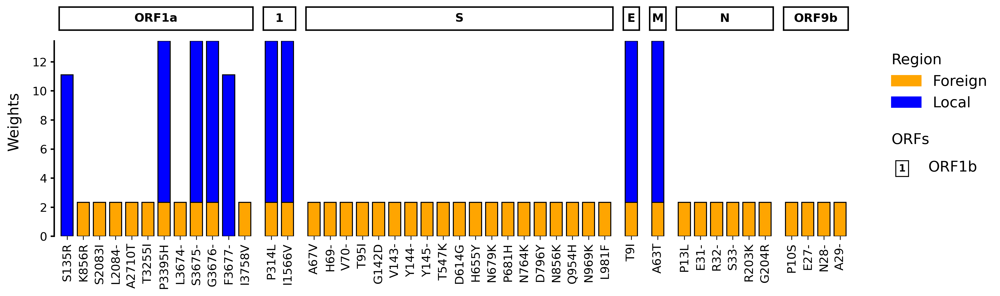
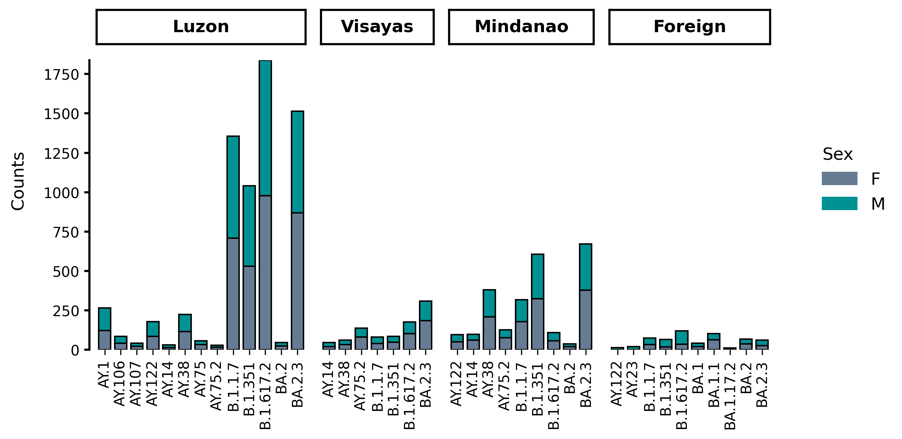
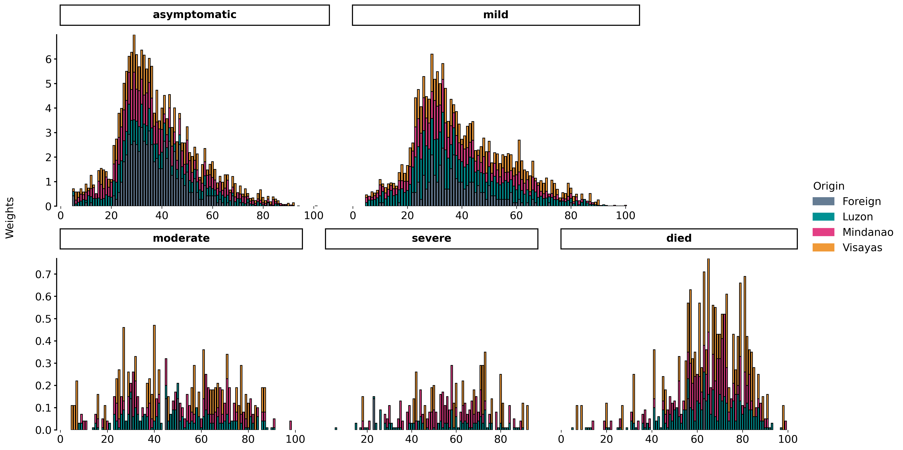

Generating a mutation profile
Quickstart
Make sure to go through the Quickstart guide first where the basics of VARGRAM syntax are explained.
Mutation Profile

During an outbreak or a period of genomic surveillance, batches of samples are taken from the field or testing centers that are then sequenced. Often, the diversity of these sequences need to be quickly identified to understand the evolution of a pathogen.
A mutation profile such as the one above is an intuitive figure that shows you what mutations are present in which genes by how many times. Differences among batches can be quickly seen and also be compared against reference sets of mutations. VARGRAM makes it easy to generate these figures.
Input
Importing VARGRAM
To import the VARGRAM class, simply run:
from vargram import vargram
Providing sequence files
There are two main sets of input that you can provide. The first is the sequence files which include (1) the FASTA file of sequences or a directory of FASTA files for multiple batches, (2) the reference FASTA, and (3) a genome annotation file following the GFF3 format. An example annotation file is shown below:
# Gene map (genome annotation) of SARS-CoV-2 in GFF format.
# For gene map purpses we only need some of the columns. We substitute unused values with "." as per GFF spec.
# See GFF format reference at https://www.ensembl.org/info/website/upload/gff.html
# seqname source feature start end score strand frame attribute
. . gene 26245 26472 . + . gene_name=E
. . gene 26523 27191 . + . gene_name=M
. . gene 28274 29533 . + . gene_name=N
. . gene 266 13468 . + . gene_name=ORF1a
. . gene 13468 21555 . + . gene_name=ORF1b
. . gene 25393 26220 . + . gene_name=ORF3a
. . gene 27202 27387 . + . gene_name=ORF6
. . gene 27394 27759 . + . gene_name=ORF7a
. . gene 27756 27887 . + . gene_name=ORF7b
. . gene 27894 28259 . + . gene_name=ORF8
. . gene 28284 28577 . + . gene_name=ORF9b
. . gene 21563 25384 . + . gene_name=S
Is VARGRAM only applicable to viral data?
VARGRAM relies on Nextclade to perform mutation calling when sequence files are provided, and Nextclade currently supports viral data only. However, if you can perform mutation calling through another tool, you can still use VARGRAM to create a mutation profile of other organisms provided that you generate a CSV file of the mutations. See Other features.
Instead of providing the reference FASTA, you may also specify the name or shortcut of a Nextclade dataset. In this case, the annotation file does not need to be provided. VARGRAM will download the reference and the annotation (these are deleted after use).
When sequence files are provided, VARGRAM will run Nextclade CLI and capture the analysis file so make sure that Nextclade is installed. These files can be provided to VARGRAM through the vargram class:
vg = vargram(seq='path/to/<samples/>', # Provide FASTA of sequences or directory containing FASTA files
ref='path/to/<reference.fa>', # Provide reference sequence
gene='path/to/<annotation.gff>') # Provide genome annotation
vg = vargram(seq='path/to/<samples/>', # Provide sample sequences
ref='<reference_name>') # Provide reference name/shortcut
Nextclade dataset name
To view available datasets, run nextclade dataset list. The official names and shortcuts are on the first name column—not the attribute column. You may alternatively run nextclade dataset list --only-names which only lists the recognized dataset names.
FASTA directory
The directory for the sequences need not contain only FASTA files. VARGRAM will ignore all other files in the directory that do not have a .fasta or .fa extension. But make sure that only the FASTA files of interest are in the directory.
Removal of rows with errors and warnings
VARGRAM removes sample rows in the captured analysis file that Nextclade flags with an error or warning
Providing analysis files
You may already have a Nextclade analysis file obtained through Nextclade CLI or Nextclade Web. In this case, simply provide its path:
vg = vargram(data='path/to/<analysis.csv>')
gene.
The VARGRAM data output can also be provided as an input but you must specify its format:
vg = vargram(data='path/to/<vargram_output.csv>',
format='vargram')
Nextclade CLI vs. Nextclade Web
Nextclade CLI and Nextclade Web yield identical results when the datasets they use are also the same. If you get different mutation profiles, try updating your dataset. See this discussion on Nexstrain for more info.
Downloading test data
Test data from VARGRAM, which can be downloaded from the VARGRAM repo, and even datasets from Nextclade can be downloaded. First, import the data download modules:
from vargram.data import example, nextclade
example module downloads VARGRAM test data and the nextclade module is for Nextclade datasets. Using the latter module requires Nextclade CLI to be installed.
To download VARGRAM test data, run
example.get() # Download VARGRAM test data into current directory
example.get(dir='path/to/<directory>') # Download test data to specified directory
The nextclade module is a simple wrapper of the nextclade dataset command. To get a list of available Nextclade datasets for download, run
nextclade.list() # List names of available Nextclade datasets
nextclade.list(full=True) # Print available Nextclade datasets and their attributes
nextclade.get('dataset_name', # Download Nextclade dataset
version='<version>', # with this version
dir='path/to/<directory/') # into this directory
Output
In the following examples, we assume that relevant modules have been imported and test data is downloaded to a test_data/ directory:
# Import modules
from vargram import vargram
from vargram.data import example
# Download test data
example.get('test_data/')
Terminal methods are independent
VARGRAM outputs are produced by calling terminal methods, which are independent of each other and can therefore be called in any order.
Showing the plot
To show the mutation profile, simply call the show() method:
vg = vargram(seq='test_data/sequences',
ref='test_data/sc2_wuhan_2019.fasta',
gene='test_data/sc2.gff')
vg.profile()
vg.show()
vg = vargram(data='test_data/analysis/BA1_analysis_cli.tsv')
vg.profile()
vg.show()
Getting summary data
The summary data for the mutation profile contains the total counts (weights) of mutations and the counts (weights) per batch. It can be accessed using the stat() method which returns a Pandas DataFrame.
vg = vargram(data='test_data/analysis/BA1_analysis_cli.tsv')
vg.profile()
vg.stat()
| gene | mutation | position | type | my_batch | sum |
|---|---|---|---|---|---|
| E | T9I | 9 | sub | 80 | 80 |
| M | D3G | 3 | sub | 70 | 70 |
| M | Q19E | 19 | sub | 78 | 78 |
| M | A63T | 63 | sub | 80 | 80 |
| N | P13L | 13 | sub | 80 | 80 |
| N | E31- | 31 | del | 80 | 80 |
| N | R32- | 32 | del | 80 | 80 |
| N | S33- | 33 | del | 80 | 80 |
| N | R203K | 203 | sub | 80 | 80 |
| N | G204R | 204 | sub | 80 | 80 |
| ORF1a | K856R | 856 | sub | 80 | 80 |
| ORF1a | S2083I | 2083 | sub | 80 | 80 |
| ORF1a | L2084- | 2084 | del | 80 | 80 |
| ORF1a | A2710T | 2710 | sub | 80 | 80 |
| ORF1a | T3255I | 3255 | sub | 80 | 80 |
| ORF1a | P3395H | 3395 | sub | 80 | 80 |
| ORF1a | L3674- | 3674 | del | 80 | 80 |
| ORF1a | S3675- | 3675 | del | 80 | 80 |
| ORF1a | G3676- | 3676 | del | 80 | 80 |
| ORF1a | I3758V | 3758 | sub | 80 | 80 |
| ORF1b | P314L | 314 | sub | 80 | 80 |
| ORF1b | I1566V | 1566 | sub | 80 | 80 |
| ORF9b | P10S | 10 | sub | 80 | 80 |
| ORF9b | E27- | 27 | del | 80 | 80 |
| ORF9b | N28- | 28 | del | 80 | 80 |
| ORF9b | A29- | 29 | del | 80 | 80 |
| S | A67V | 67 | sub | 80 | 80 |
| S | H69- | 69 | del | 80 | 80 |
| S | V70- | 70 | del | 80 | 80 |
| S | T95I | 95 | sub | 80 | 80 |
| S | G142D | 142 | sub | 80 | 80 |
| S | V143- | 143 | del | 80 | 80 |
| S | Y144- | 144 | del | 80 | 80 |
| S | Y145- | 145 | del | 80 | 80 |
| S | N211I | 211 | sub | 58 | 58 |
| S | L212- | 212 | del | 58 | 58 |
| S | 214:EPE | 214 | in | 54 | 54 |
| S | G339D | 339 | sub | 72 | 72 |
| S | S371L | 371 | sub | 63 | 63 |
| S | S373P | 373 | sub | 68 | 68 |
| S | S375F | 375 | sub | 68 | 68 |
| S | K417N | 417 | sub | 67 | 67 |
| S | G446S | 446 | sub | 56 | 56 |
| S | S477N | 477 | sub | 61 | 61 |
| S | T478K | 478 | sub | 61 | 61 |
| S | E484A | 484 | sub | 59 | 59 |
| S | Q493R | 493 | sub | 59 | 59 |
| S | G496S | 496 | sub | 57 | 57 |
| S | Q498R | 498 | sub | 61 | 61 |
| S | N501Y | 501 | sub | 61 | 61 |
| S | Y505H | 505 | sub | 58 | 58 |
| S | T547K | 547 | sub | 80 | 80 |
| S | D614G | 614 | sub | 80 | 80 |
| S | H655Y | 655 | sub | 80 | 80 |
| S | N679K | 679 | sub | 80 | 80 |
| S | P681H | 681 | sub | 80 | 80 |
| S | N764K | 764 | sub | 80 | 80 |
| S | D796Y | 796 | sub | 80 | 80 |
| S | N856K | 856 | sub | 80 | 80 |
| S | Q954H | 954 | sub | 80 | 80 |
| S | N969K | 969 | sub | 80 | 80 |
| S | L981F | 981 | sub | 80 | 80 |
At the minimum, the columns include the gene, mutation, position, mutation type as well as the name of the batch (here, my_batch) and the total count of the mutation (sum). When there is only one batch and the input is a Nextclade analysis file, the default batch name is my_batch.
vg = vargram(data='test_data/analysis/omicron_analysis_cli.tsv')
vg.profile()
vg.stat()
| gene | mutation | position | type | BA1_analysis_cli | BA2_analysis_cli | sum |
|---|---|---|---|---|---|---|
| E | T9I | 9 | sub | 80 | 80 | 160 |
| M | D3G | 3 | sub | 70 | 0 | 70 |
| M | Q19E | 19 | sub | 78 | 71 | 149 |
| M | A63T | 63 | sub | 80 | 80 | 160 |
| N | P13L | 13 | sub | 80 | 78 | 158 |
| N | E31- | 31 | del | 80 | 79 | 159 |
| N | R32- | 32 | del | 80 | 79 | 159 |
| N | S33- | 33 | del | 80 | 79 | 159 |
| N | R203K | 203 | sub | 80 | 79 | 159 |
| N | G204R | 204 | sub | 80 | 79 | 159 |
| N | S413R | 413 | sub | 0 | 78 | 78 |
| ORF1a | S135R | 135 | sub | 0 | 80 | 80 |
| ORF1a | I694T | 694 | sub | 13 | 0 | 13 |
| ORF1a | T842I | 842 | sub | 0 | 79 | 79 |
| ORF1a | K856R | 856 | sub | 80 | 0 | 80 |
| ORF1a | G1307S | 1307 | sub | 0 | 79 | 79 |
| ORF1a | T1543I | 1543 | sub | 0 | 7 | 7 |
| ORF1a | S2083I | 2083 | sub | 80 | 0 | 80 |
| ORF1a | L2084- | 2084 | del | 80 | 0 | 80 |
| ORF1a | I2138V | 2138 | sub | 8 | 0 | 8 |
| ORF1a | A2710T | 2710 | sub | 80 | 0 | 80 |
| ORF1a | L3027F | 3027 | sub | 0 | 76 | 76 |
| ORF1a | T3090I | 3090 | sub | 0 | 79 | 79 |
| ORF1a | L3201F | 3201 | sub | 0 | 78 | 78 |
| ORF1a | T3255I | 3255 | sub | 80 | 79 | 159 |
| ORF1a | P3395H | 3395 | sub | 80 | 80 | 160 |
| ORF1a | L3674- | 3674 | del | 80 | 0 | 80 |
| ORF1a | S3675- | 3675 | del | 80 | 80 | 160 |
| ORF1a | G3676- | 3676 | del | 80 | 80 | 160 |
| ORF1a | F3677- | 3677 | del | 0 | 80 | 80 |
| ORF1a | I3758V | 3758 | sub | 80 | 0 | 80 |
| ORF1b | P314L | 314 | sub | 80 | 80 | 160 |
| ORF1b | R1315C | 1315 | sub | 0 | 79 | 79 |
| ORF1b | I1566V | 1566 | sub | 80 | 80 | 160 |
| ORF1b | T2163I | 2163 | sub | 0 | 78 | 78 |
| ORF3a | T223I | 223 | sub | 0 | 79 | 79 |
| ORF6 | D61L | 61 | sub | 0 | 77 | 77 |
| ORF9b | P10S | 10 | sub | 80 | 76 | 156 |
| ORF9b | E27- | 27 | del | 80 | 79 | 159 |
| ORF9b | N28- | 28 | del | 80 | 79 | 159 |
| ORF9b | A29- | 29 | del | 80 | 79 | 159 |
| S | T19I | 19 | sub | 0 | 79 | 79 |
| S | L24S | 24 | sub | 0 | 79 | 79 |
| S | P25- | 25 | del | 0 | 79 | 79 |
| S | P26- | 26 | del | 0 | 79 | 79 |
| S | A27- | 27 | del | 0 | 79 | 79 |
| S | A67V | 67 | sub | 80 | 0 | 80 |
| S | H69- | 69 | del | 80 | 0 | 80 |
| S | V70- | 70 | del | 80 | 0 | 80 |
| S | T95I | 95 | sub | 80 | 0 | 80 |
| S | G142D | 142 | sub | 80 | 72 | 152 |
| S | V143- | 143 | del | 80 | 0 | 80 |
| S | Y144- | 144 | del | 80 | 0 | 80 |
| S | Y145- | 145 | del | 80 | 0 | 80 |
| S | N211I | 211 | sub | 58 | 0 | 58 |
| S | L212- | 212 | del | 58 | 0 | 58 |
| S | V213G | 213 | sub | 0 | 77 | 77 |
| S | 214:EPE | 214 | in | 54 | 0 | 54 |
| S | G339D | 339 | sub | 72 | 79 | 151 |
| S | S371F | 371 | sub | 5 | 79 | 84 |
| S | S371L | 371 | sub | 63 | 0 | 63 |
| S | S373P | 373 | sub | 68 | 79 | 147 |
| S | S375F | 375 | sub | 68 | 79 | 147 |
| S | T376A | 376 | sub | 5 | 79 | 84 |
| S | D405N | 405 | sub | 5 | 79 | 84 |
| S | R408S | 408 | sub | 5 | 79 | 84 |
| S | K417N | 417 | sub | 67 | 79 | 146 |
| S | N440K | 440 | sub | 37 | 17 | 54 |
| S | G446S | 446 | sub | 56 | 0 | 56 |
| S | S477N | 477 | sub | 61 | 72 | 133 |
| S | T478K | 478 | sub | 61 | 72 | 133 |
| S | E484A | 484 | sub | 59 | 71 | 130 |
| S | Q493R | 493 | sub | 59 | 71 | 130 |
| S | G496S | 496 | sub | 57 | 0 | 57 |
| S | Q498R | 498 | sub | 61 | 72 | 133 |
| S | N501Y | 501 | sub | 61 | 72 | 133 |
| S | Y505H | 505 | sub | 58 | 72 | 130 |
| S | T547K | 547 | sub | 80 | 0 | 80 |
| S | D614G | 614 | sub | 80 | 79 | 159 |
| S | H655Y | 655 | sub | 80 | 79 | 159 |
| S | N679K | 679 | sub | 80 | 79 | 159 |
| S | P681H | 681 | sub | 80 | 79 | 159 |
| S | N764K | 764 | sub | 80 | 78 | 158 |
| S | D796Y | 796 | sub | 80 | 79 | 159 |
| S | Q853R | 853 | sub | 6 | 0 | 6 |
| S | N856K | 856 | sub | 80 | 0 | 80 |
| S | Q954H | 954 | sub | 80 | 79 | 159 |
| S | N969K | 969 | sub | 80 | 78 | 158 |
| S | L981F | 981 | sub | 80 | 0 | 80 |
When there are multiple batches, each batch gets their own column containing the mutation counts in that batch.
vg = vargram(data='test_data/analysis/omicron_analysis_cli.tsv')
vg.profile()
vg.key('test_data/keys/BA1_key.csv')
vg.key('test_data/keys/BA2_key.csv')
vg.stat()
| gene | mutation | position | type | BA1_analysis_cli | BA2_analysis_cli | sum | BA.1 | BA.2 |
|---|---|---|---|---|---|---|---|---|
| E | T9I | 9 | sub | 80 | 80 | 160 | 1 | 1 |
| M | D3G | 3 | sub | 70 | 0 | 70 | 1 | 0 |
| M | Q19E | 19 | sub | 78 | 71 | 149 | 1 | 1 |
| M | A63T | 63 | sub | 80 | 80 | 160 | 1 | 1 |
| N | P13L | 13 | sub | 80 | 78 | 158 | 1 | 1 |
| N | E31- | 31 | del | 80 | 79 | 159 | 1 | 1 |
| N | R32- | 32 | del | 80 | 79 | 159 | 1 | 1 |
| N | S33- | 33 | del | 80 | 79 | 159 | 1 | 1 |
| N | R203K | 203 | sub | 80 | 79 | 159 | 1 | 1 |
| N | G204R | 204 | sub | 80 | 79 | 159 | 1 | 1 |
| N | S413R | 413 | sub | 0 | 78 | 78 | 0 | 1 |
| ORF1a | S135R | 135 | sub | 0 | 80 | 80 | 0 | 1 |
| ORF1a | I694T | 694 | sub | 13 | 0 | 13 | 0 | 0 |
| ORF1a | T842I | 842 | sub | 0 | 79 | 79 | 0 | 1 |
| ORF1a | K856R | 856 | sub | 80 | 0 | 80 | 1 | 0 |
| ORF1a | G1307S | 1307 | sub | 0 | 79 | 79 | 0 | 1 |
| ORF1a | T1543I | 1543 | sub | 0 | 7 | 7 | 0 | 0 |
| ORF1a | S2083I | 2083 | sub | 80 | 0 | 80 | 1 | 0 |
| ORF1a | L2084- | 2084 | del | 80 | 0 | 80 | 1 | 0 |
| ORF1a | I2138V | 2138 | sub | 8 | 0 | 8 | 0 | 0 |
| ORF1a | A2710T | 2710 | sub | 80 | 0 | 80 | 1 | 0 |
| ORF1a | L3027F | 3027 | sub | 0 | 76 | 76 | 0 | 1 |
| ORF1a | T3090I | 3090 | sub | 0 | 79 | 79 | 0 | 1 |
| ORF1a | L3201F | 3201 | sub | 0 | 78 | 78 | 0 | 1 |
| ORF1a | T3255I | 3255 | sub | 80 | 79 | 159 | 1 | 1 |
| ORF1a | P3395H | 3395 | sub | 80 | 80 | 160 | 1 | 1 |
| ORF1a | L3674- | 3674 | del | 80 | 0 | 80 | 1 | 0 |
| ORF1a | S3675- | 3675 | del | 80 | 80 | 160 | 1 | 1 |
| ORF1a | G3676- | 3676 | del | 80 | 80 | 160 | 1 | 1 |
| ORF1a | F3677- | 3677 | del | 0 | 80 | 80 | 0 | 1 |
| ORF1a | I3758V | 3758 | sub | 80 | 0 | 80 | 1 | 0 |
| ORF1b | P314L | 314 | sub | 80 | 80 | 160 | 1 | 1 |
| ORF1b | R1315C | 1315 | sub | 0 | 79 | 79 | 0 | 1 |
| ORF1b | I1566V | 1566 | sub | 80 | 80 | 160 | 1 | 1 |
| ORF1b | T2163I | 2163 | sub | 0 | 78 | 78 | 0 | 1 |
| ORF3a | T223I | 223 | sub | 0 | 79 | 79 | 0 | 1 |
| ORF6 | D61L | 61 | sub | 0 | 77 | 77 | 0 | 1 |
| ORF9b | P10S | 10 | sub | 80 | 76 | 156 | 1 | 1 |
| ORF9b | E27- | 27 | del | 80 | 79 | 159 | 0 | 1 |
| ORF9b | N28- | 28 | del | 80 | 79 | 159 | 1 | 1 |
| ORF9b | A29- | 29 | del | 80 | 79 | 159 | 1 | 1 |
| S | T19I | 19 | sub | 0 | 79 | 79 | 0 | 1 |
| S | L24S | 24 | sub | 0 | 79 | 79 | 0 | 1 |
| S | P25- | 25 | del | 0 | 79 | 79 | 0 | 1 |
| S | P26- | 26 | del | 0 | 79 | 79 | 0 | 1 |
| S | A27- | 27 | del | 0 | 79 | 79 | 0 | 1 |
| S | A67V | 67 | sub | 80 | 0 | 80 | 1 | 0 |
| S | H69- | 69 | del | 80 | 0 | 80 | 1 | 0 |
| S | V70- | 70 | del | 80 | 0 | 80 | 1 | 0 |
| S | T95I | 95 | sub | 80 | 0 | 80 | 1 | 0 |
| S | G142D | 142 | sub | 80 | 72 | 152 | 1 | 1 |
| S | V143- | 143 | del | 80 | 0 | 80 | 1 | 0 |
| S | Y144- | 144 | del | 80 | 0 | 80 | 1 | 0 |
| S | Y145- | 145 | del | 80 | 0 | 80 | 1 | 0 |
| S | N211I | 211 | sub | 58 | 0 | 58 | 1 | 0 |
| S | L212- | 212 | del | 58 | 0 | 58 | 1 | 0 |
| S | V213G | 213 | sub | 0 | 77 | 77 | 0 | 1 |
| S | 214:EPE | 214 | in | 54 | 0 | 54 | 1 | 0 |
| S | G339D | 339 | sub | 72 | 79 | 151 | 1 | 1 |
| S | S371F | 371 | sub | 5 | 79 | 84 | 0 | 1 |
| S | S371L | 371 | sub | 63 | 0 | 63 | 1 | 0 |
| S | S373P | 373 | sub | 68 | 79 | 147 | 1 | 1 |
| S | S375F | 375 | sub | 68 | 79 | 147 | 1 | 1 |
| S | T376A | 376 | sub | 5 | 79 | 84 | 0 | 1 |
| S | D405N | 405 | sub | 5 | 79 | 84 | 0 | 1 |
| S | R408S | 408 | sub | 5 | 79 | 84 | 0 | 1 |
| S | K417N | 417 | sub | 67 | 79 | 146 | 1 | 1 |
| S | N440K | 440 | sub | 37 | 17 | 54 | 1 | 1 |
| S | G446S | 446 | sub | 56 | 0 | 56 | 1 | 0 |
| S | S477N | 477 | sub | 61 | 72 | 133 | 1 | 1 |
| S | T478K | 478 | sub | 61 | 72 | 133 | 1 | 1 |
| S | E484A | 484 | sub | 59 | 71 | 130 | 1 | 1 |
| S | Q493R | 493 | sub | 59 | 71 | 130 | 1 | 1 |
| S | G496S | 496 | sub | 57 | 0 | 57 | 1 | 0 |
| S | Q498R | 498 | sub | 61 | 72 | 133 | 1 | 1 |
| S | N501Y | 501 | sub | 61 | 72 | 133 | 1 | 1 |
| S | Y505H | 505 | sub | 58 | 72 | 130 | 1 | 1 |
| S | T547K | 547 | sub | 80 | 0 | 80 | 1 | 0 |
| S | D614G | 614 | sub | 80 | 79 | 159 | 1 | 1 |
| S | H655Y | 655 | sub | 80 | 79 | 159 | 1 | 1 |
| S | N679K | 679 | sub | 80 | 79 | 159 | 1 | 1 |
| S | P681H | 681 | sub | 80 | 79 | 159 | 1 | 1 |
| S | N764K | 764 | sub | 80 | 78 | 158 | 1 | 1 |
| S | D796Y | 796 | sub | 80 | 79 | 159 | 1 | 1 |
| S | Q853R | 853 | sub | 6 | 0 | 6 | 0 | 0 |
| S | N856K | 856 | sub | 80 | 0 | 80 | 1 | 0 |
| S | Q954H | 954 | sub | 80 | 79 | 159 | 1 | 1 |
| S | N969K | 969 | sub | 80 | 78 | 158 | 1 | 1 |
| S | L981F | 981 | sub | 80 | 0 | 80 | 1 | 0 |
Keys (here, BA.1 and BA.2) get their own columns. A 1 indicates that the mutation is part of that key and a 0 indicates that it's not. The data above is the summary data for omicron_analysis_cli.csv with the keys BA1_key.csv and BA2_key.csv.
Saving the plot or data
Use the save() method to save either the mutation profile figure or the accompanying data:
vg = vargram(data='test_data/analysis/omicron_analysis_cli.tsv')
vg.profile()
vg.save('saved_figure.png')
When the figure is saved (i.e. when the extension is .png, .pdf or .jpg), save() acts like Matplotlib's matplotlib.pyplot.savefig() with the bbox_inches argument set to tight. Thus, save() can take other savefig() arguments like dpi or transparent, e.g.
vg = vargram(data='test_data/analysis/omicron_analysis_cli.tsv')
vg.profile()
vg.save('transparent_figure.png', dpi=300, transparent=True)
vg = vargram(data='test_data/analysis/omicron_analysis_cli.tsv')
vg.profile()
vg.save('omicron_summary.csv')
When the summary data is saved (i.e. when the extension is not .png, .pdf or .jpg), save() acts like Pandas' pandas.DataFrame.to_csv() with the sep argument automatically set for .csv (sep=','), .tsv (sep='\t') and .txt (sep=' ') extensions, and index set to False. Thus, save() can take other to_csv() arguments like columns, e.g.
vg = vargram(data='test_data/analysis/omicron_analysis_cli.tsv')
vg.profile()
vg.save('modified_summary.csv', index=True, columns=['gene','mutation','syum'])
Customization
Setting the y-axis type and the count threshold
The y-axis of the profile can show either the raw count of a mutation (i.e. no. of sequences that has the mutation) or its weight. The weight of a mutation is simply the count of a mutation in a batch divided by the sum of all mutation counts in that batch. Whether the count or weight is shown can be changed through the profile() method:
vg = vargram(data='test_data/analysis/omicron_analysis_cli.tsv')
vg.profile(ytype='counts')
vg.show()
vg = vargram(data='test_data/analysis/omicron_analysis_cli.tsv')
vg.profile(ytype='weights')
vg.show()
By default, when multiple batches are provided, the y-axis shows the weights.
On the other hand, the threshold (default: 50) is the minimum count or no. of occurences of a mutation in a batch that is needed for a mutation to be included in the figure. The threshold is applied per batch and a mutation will only be shown in the batch that it meets the threshold but it will have a count of zero in every other batch.
Threshold example
To make this more concrete, suppose we have two batches, each with 200 sequences. Suppose a mutation D3G occurs in 150 out of 200 samples in the first batch, but it occurs only 30 times in the second batch. With a default threshold of 50, D3G will show up in the profile as a mutation in the first batch with a count of 150. But D3G will not register as a mutation in the second batch--its count will be zero even if 30 sequences actually have the mutation in that batch.
Small number of samples
Lowering the threshold is necessary if the number of samples is lower than the threshold (default: 50).
The threshold can also be changed through profile():
vg = vargram(data='test_data/analysis/omicron_analysis_cli.tsv')
vg.profile(threshold=10)
vg.show()
Changing aesthetic attributes
Aesthetic attributes like colors, labels, and font sizes can be changed through the aes() method:
vg = vargram(data='test_data/analysis/omicron_analysis_cli.tsv',
gene='test_data/sc2.gff')
vg.profile(threshold=80)
vg.aes(stack_title='Region', # Change batch legend title
stack_label=['Foreign', 'Local'], # Change batch names
stack_color=['orange', 'blue'], # Change batch bar colors
group_title='ORFs', # Change gene legend title
legtitle_fontsize=15, # Change legend title font size
legentry_fontsize=15, # Change legend entry font size
ylabel_fontsize=15, # Change y-axis label font size
yticks_fontsize=12, # Change y-axis ticks font size
xticks_fontsize=12, # Change x-axis ticks font size
flat=True, # Enforce a horizontal layout
order=True) # Order the genes by their start positions
vg.show()

The full list of accepted arguments can be seen here. Of particular note is flat which forces a horizontal layout and the order argument which orders the genes based on their start position. This requires a genome annotation file to be provided.
Why is a batch referred to as a stack and a gene referred to as a group?
A profile figure (essentially a grid of barplots) can be generated without using Nextclade data or even sequence-specific data. For this reason, the variable names were chosen to be agnostic. See Other features.
Modifying plot structure
VARGRAM automatically determines which gene barplot goes to which row and in what order in an attempt to create a compact figure. However, you may want to rearrange the rows and/or show only certain genes. If you want to keep only certain genes and specify a particular order,
then you can use the struct() method, which takes one required positional argument:
a formatted string where gene or group names are separated by a comma and rows are separated by a forward slash.
To show only one gene, simply provide its name to struct():
vg = vargram(data='test_data/analysis/omicron_analysis_cli.tsv')
vg.profile(threshold=1)
vg.aes(figsize=(10,3.5))
vg.struct('S') # Show the 'S' gene only
vg.show()
Multiple genes can be arranged into a desired order. Genes on the same row are separated by a comma with no extra spaces and genes (or groups of genes) are separated by a forward slash.
vg = vargram(data='test_data/analysis/omicron_analysis_cli.tsv')
vg.profile()
vg.aes(figsize=(8,6))
# Put ORF1a and ORF1b on the first row in that order
# and put ORF9b, E, M, and N on second row in that order
vg.struct('ORF1a,ORF1b/ORF9b,E,M,N')
vg.show()
Adding and creating keys
It is often helpful not just to compare batches with each other but also against reference lineages.
This can be done by adding a key, which is a CSV or TSV file withgene and mutation columns.
The mutations can be representative ("key") mutations of a lineage or they could just be mutations of interest for whatever reason. VARGRAM will mark these mutations in the profile through a heatmap below the barplots.
The keys can be added with the key() method. Each key is added individually:
vg = vargram(data='test_data/analysis/omicron_analysis_cli.tsv')
vg.profile()
vg.key('test_data/keys/BA1_key.csv', label='BA.1') # Add first key
vg.key('test_data/keys/BA2_key.csv', label='BA.2') # Add another key
vg.show()
Key mutations will always be shown on the x-axis even if they are not found in any of the batches. Note however that if those key mutations do not meet the threshold, there will be an empty column for it in the barplot but no bar will be shown. On the other hand, any mutation that meets the threshold in any of the batches will always be shown even if it is not a key mutation.
You can manually create these key files yourself, but note that the format of mutation must follow Nextclade's notation.
See the aaSubstitutions, aaDeletions, and aaInsertions definitions.
Alternatively, the VARGRAM summary data can serve as a key file. To create a key with VARGRAM, simply provide the batch of sequences from which key mutations will be identified. In this case, those key mutations can be identified as those that met a high threshold.
Other features
Although VARGRAM was made in the context of viral genomic surveillance, data from any CSV or TSV file or a Pandas DataFrame can be extracted to generate a mutation profile-type figure. The input tabular data needs to have three columns that will play the role of the gene, the mutation, and the batch.
These columns can be specified in the profile() method through the arguments x, group, and stack:
- The
x(defaultmutation) argument specifies the column from which to take the x-axis values for the bar plots. - The
group(defaultgene) argument specifies the column whose unique values will determine the bar plots (with their correspondingxvalues) to be created. - The
stack(defaultbatch) argument specifies the column for the batches or the sets of (xvalue,yvalue) pairs.
As an example, consider the following metadata (voc_metadata.csv from the test data):
| island | region | lineage | variant | age | sex | severity |
|---|---|---|---|---|---|---|
| Luzon | Calabarzon | BA.2 | Omicron | 33 | F | asymptomatic |
| Luzon | Calabarzon | BA.2 | Omicron | 19 | M | mild |
| Luzon | Central Luzon | BA.2 | Omicron | 30 | M | mild |
| Luzon | Calabarzon | BA.2 | Omicron | 49 | F | asymptomatic |
| Luzon | Calabarzon | BA.2 | Omicron | 17 | M | mild |
| Foreign | ROF | BA.1 | Omicron | 23 | M | asymptomatic |
| Luzon | CAR | BA.1.17.2 | Omicron | 64 | M | mild |
| Mindanao | Soccsksargen | BA.2.3 | Omicron | 15 | M | asymptomatic |
| Foreign | ROF | BA.1 | Omicron | 48 | M | mild |
| Foreign | ROF | BA.1 | Omicron | 22 | M | mild |
| Luzon | CAR | BA.1.18 | Omicron | 19 | F | asymptomatic |
| Luzon | Bicol | BA.1 | Omicron | 46 | F | mild |
| Foreign | ROF | BA.1 | Omicron | 45 | M | mild |
| Luzon | Ilocos | BA.1.18 | Omicron | 70 | M | mild |
| Mindanao | Davao | BA.1.19 | Omicron | 63 | M | asymptomatic |
| Foreign | ROF | BA.1 | Omicron | 57 | M | asymptomatic |
| Foreign | ROF | BA.1.17.2 | Omicron | 29 | M | asymptomatic |
| Foreign | ROF | BA.1 | Omicron | 36 | M | asymptomatic |
| Foreign | ROF | BA.1.15 | Omicron | 26 | F | asymptomatic |
| Foreign | ROF | BA.1.15 | Omicron | 38 | M | asymptomatic |
| Foreign | ROF | BA.1.18 | Omicron | 40 | M | mild |
| Foreign | ROF | BA.1.18 | Omicron | 37 | F | asymptomatic |
| Foreign | ROF | BA.1.15 | Omicron | 26 | F | asymptomatic |
| Foreign | ROF | BA.1.1 | Omicron | 21 | M | asymptomatic |
| Foreign | ROF | BA.1 | Omicron | 21 | F | asymptomatic |
| Foreign | ROF | BA.1.1 | Omicron | 35 | M | asymptomatic |
| Luzon | NCR | BA.2.3 | Omicron | 49 | F | asymptomatic |
| Foreign | ROF | BA.1.17.2 | Omicron | 30 | M | asymptomatic |
| Luzon | NCR | BA.2.3 | Omicron | 32 | F | asymptomatic |
| Foreign | ROF | BA.1.17 | Omicron | 34 | F | mild |
| Foreign | ROF | BA.1.1 | Omicron | 33 | M | mild |
| Foreign | ROF | BA.1.1 | Omicron | 28 | M | asymptomatic |
| Foreign | ROF | BA.1 | Omicron | 27 | M | asymptomatic |
| Luzon | NCR | BA.2.3 | Omicron | 40 | M | asymptomatic |
| Luzon | Cagayan Valley | BA.2.3 | Omicron | 24 | F | asymptomatic |
| Luzon | Cagayan Valley | BA.2.3 | Omicron | 24 | F | mild |
| Foreign | ROF | BA.1 | Omicron | 10 | M | mild |
| Foreign | ROF | BA.1.17.2 | Omicron | 47 | M | asymptomatic |
| Foreign | ROF | BA.1 | Omicron | 24 | M | asymptomatic |
| Luzon | NCR | BA.2.3 | Omicron | 67 | F | moderate |
| Foreign | ROF | BA.1.1 | Omicron | 40 | F | asymptomatic |
| Foreign | ROF | BA.1 | Omicron | 24 | F | asymptomatic |
| Luzon | Central Luzon | BA.2.3 | Omicron | 73 | M | asymptomatic |
| Foreign | ROF | BA.1.1 | Omicron | 30 | F | asymptomatic |
| Foreign | ROF | BA.2.3 | Omicron | 26 | F | mild |
| Foreign | ROF | BA.1.1 | Omicron | 41 | F | asymptomatic |
| Luzon | NCR | BA.2.3 | Omicron | 54 | F | asymptomatic |
| Foreign | ROF | BA.1 | Omicron | 42 | M | mild |
| Foreign | ROF | BA.2 | Omicron | 34 | M | asymptomatic |
| Foreign | ROF | BA.1.17.2 | Omicron | 43 | M | asymptomatic |
| Foreign | ROF | BA.1.1 | Omicron | 31 | F | asymptomatic |
| Foreign | ROF | B.1.1.529 | Omicron | 49 | M | asymptomatic |
| Foreign | ROF | BA.2.3 | Omicron | 29 | F | asymptomatic |
| Foreign | ROF | B.1.1.529 | Omicron | 42 | M | mild |
| Luzon | NCR | BA.2.3 | Omicron | 18 | F | asymptomatic |
| Foreign | ROF | BA.1.1 | Omicron | 32 | M | asymptomatic |
| Foreign | ROF | BA.1.15 | Omicron | 37 | M | asymptomatic |
| Foreign | ROF | BA.1.1 | Omicron | 49 | M | asymptomatic |
| Foreign | ROF | BA.1.1.1 | Omicron | 30 | M | asymptomatic |
| Foreign | ROF | BA.2.3 | Omicron | 44 | M | mild |
| Luzon | Central Luzon | BA.2.3 | Omicron | 34 | F | mild |
| Foreign | ROF | BA.1.1 | Omicron | 43 | F | asymptomatic |
| Foreign | ROF | BA.1.1 | Omicron | 51 | M | asymptomatic |
| Foreign | ROF | BA.1.1.1 | Omicron | 32 | F | asymptomatic |
| Foreign | ROF | BA.1 | Omicron | 28 | M | asymptomatic |
| Foreign | ROF | BA.1.1 | Omicron | 38 | M | asymptomatic |
| Foreign | ROF | BA.1.18 | Omicron | 44 | M | asymptomatic |
| Foreign | ROF | BA.1.1 | Omicron | 59 | F | asymptomatic |
| Luzon | NCR | BA.2.3 | Omicron | 9 | M | asymptomatic |
| Foreign | ROF | BA.2.3 | Omicron | 38 | M | asymptomatic |
| Foreign | ROF | BA.2.3 | Omicron | 26 | F | asymptomatic |
| Luzon | NCR | BA.2.3 | Omicron | 54 | F | asymptomatic |
| Foreign | ROF | BA.1.1 | Omicron | 38 | F | asymptomatic |
| Luzon | NCR | BA.2.3 | Omicron | 63 | F | asymptomatic |
| Foreign | ROF | BA.1 | Omicron | 23 | F | asymptomatic |
| Foreign | ROF | BA.1.1 | Omicron | 37 | F | mild |
| Foreign | ROF | BA.1.1 | Omicron | 43 | F | mild |
| Foreign | ROF | BA.1.1.15 | Omicron | 55 | F | mild |
| Foreign | ROF | BA.1.15.1 | Omicron | 44 | M | mild |
| Luzon | Calabarzon | BA.2.3 | Omicron | 29 | F | mild |
| Luzon | NCR | BA.2.3 | Omicron | 83 | F | asymptomatic |
| Luzon | NCR | BA.2.3 | Omicron | 41 | M | mild |
| Visayas | Western Visayas | BA.2.3 | Omicron | 42 | F | asymptomatic |
| Luzon | Central Luzon | BA.2.3 | Omicron | 27 | M | asymptomatic |
| Foreign | ROF | BA.2.3 | Omicron | 31 | M | mild |
| Luzon | NCR | BA.2.3 | Omicron | 36 | F | mild |
| Foreign | ROF | BA.2.3 | Omicron | 26 | F | asymptomatic |
| Foreign | ROF | BA.1.1 | Omicron | 46 | M | asymptomatic |
| Luzon | NCR | BA.2.3 | Omicron | 35 | F | mild |
| Luzon | NCR | BA.2.3 | Omicron | 31 | M | asymptomatic |
| Luzon | NCR | BA.2.3 | Omicron | 31 | F | asymptomatic |
| Luzon | NCR | BA.2.3 | Omicron | 29 | F | asymptomatic |
| Luzon | NCR | BA.2.3 | Omicron | 29 | M | mild |
| Luzon | NCR | BA.2.3 | Omicron | 12 | F | mild |
| Luzon | NCR | BA.2.3 | Omicron | 31 | M | mild |
| Luzon | Calabarzon | BA.2.3 | Omicron | 27 | M | asymptomatic |
| Luzon | NCR | BA.2.3 | Omicron | 27 | F | mild |
| Luzon | NCR | BA.2.3 | Omicron | 38 | M | mild |
| Luzon | CAR | BA.2.3 | Omicron | 34 | F | mild |
| Foreign | ROF | BA.1.1.11 | Omicron | 41 | F | asymptomatic |
| Luzon | NCR | BA.2.3 | Omicron | 26 | F | mild |
| Luzon | Central Luzon | BA.2.3 | Omicron | 30 | F | mild |
| Luzon | NCR | BA.2.3 | Omicron | 47 | F | asymptomatic |
| Luzon | NCR | BA.2.3 | Omicron | 41 | F | asymptomatic |
| Foreign | ROF | BA.2.3 | Omicron | 5 | M | asymptomatic |
| Foreign | ROF | BA.1 | Omicron | 33 | F | mild |
| Foreign | ROF | BA.1 | Omicron | 58 | F | mild |
| Luzon | CAR | BA.2.3 | Omicron | 22 | F | asymptomatic |
| Luzon | CAR | BA.2.3 | Omicron | 28 | M | mild |
| Luzon | Calabarzon | BA.2.3 | Omicron | 50 | F | mild |
| Foreign | ROF | BA.1.15 | Omicron | 52 | F | mild |
| Luzon | CAR | BA.2.3 | Omicron | 48 | F | mild |
| Luzon | NCR | BA.2.3 | Omicron | 26 | F | asymptomatic |
| Luzon | NCR | BA.2.3 | Omicron | 35 | F | mild |
| Luzon | NCR | BA.2.3 | Omicron | 49 | M | asymptomatic |
| Foreign | ROF | BA.1.17 | Omicron | 42 | F | mild |
| Luzon | Central Luzon | BA.2.3 | Omicron | 46 | F | mild |
| Luzon | CAR | BA.2.3 | Omicron | 55 | F | asymptomatic |
| Luzon | NCR | BA.2.3 | Omicron | 27 | M | asymptomatic |
| Foreign | ROF | BA.1 | Omicron | 39 | M | mild |
| Luzon | Calabarzon | BA.2.3 | Omicron | 21 | F | mild |
| Luzon | NCR | BA.2.3 | Omicron | 28 | M | asymptomatic |
| Luzon | NCR | BA.2.3 | Omicron | 7 | F | asymptomatic |
| Luzon | NCR | BA.2.3 | Omicron | 43 | F | asymptomatic |
| Luzon | NCR | BA.2.3 | Omicron | 41 | M | mild |
| Luzon | NCR | BA.2.3 | Omicron | 18 | M | asymptomatic |
| Luzon | NCR | BA.2.3 | Omicron | 23 | F | mild |
| Luzon | NCR | BA.2.3 | Omicron | 41 | M | asymptomatic |
| Luzon | Central Luzon | BA.2.3 | Omicron | 37 | F | asymptomatic |
| Luzon | NCR | BA.2.3 | Omicron | 15 | M | mild |
| Luzon | NCR | BA.2.3 | Omicron | 33 | M | mild |
| Luzon | NCR | BA.2.3 | Omicron | 45 | F | mild |
| Luzon | NCR | BA.2.3 | Omicron | 41 | F | mild |
| Luzon | NCR | BA.2.3 | Omicron | 34 | F | asymptomatic |
| Luzon | NCR | BA.2.3 | Omicron | 31 | M | asymptomatic |
| Luzon | NCR | BA.2.3 | Omicron | 26 | M | mild |
| Luzon | Central Luzon | BA.2.3 | Omicron | 44 | F | mild |
| Luzon | NCR | BA.1.1 | Omicron | 27 | F | asymptomatic |
| Luzon | NCR | BA.2.3 | Omicron | 25 | F | mild |
| Mindanao | Davao | BA.2.3 | Omicron | 32 | F | asymptomatic |
| Luzon | NCR | BA.2.3 | Omicron | 44 | F | mild |
| Luzon | NCR | BA.2.3 | Omicron | 28 | F | mild |
| Luzon | NCR | BA.2.3 | Omicron | 26 | M | asymptomatic |
| Mindanao | Davao | BA.2.3 | Omicron | 29 | F | asymptomatic |
| Luzon | Ilocos | BA.2.3 | Omicron | 34 | F | asymptomatic |
| Foreign | ROF | BA.1.1 | Omicron | 29 | M | mild |
| Luzon | NCR | BA.2.3 | Omicron | 33 | F | mild |
| Mindanao | Davao | BA.1.17.2 | Omicron | 45 | M | asymptomatic |
| Luzon | NCR | BA.2.3 | Omicron | 40 | F | mild |
| Mindanao | Davao | BA.1 | Omicron | 27 | F | asymptomatic |
| Luzon | Central Luzon | BA.2.3 | Omicron | 31 | F | mild |
| Luzon | NCR | BA.2.3 | Omicron | 27 | F | mild |
| Foreign | ROF | BA.1.15 | Omicron | 59 | M | asymptomatic |
| Luzon | NCR | BA.2.3 | Omicron | 77 | F | asymptomatic |
| Foreign | ROF | BA.1.18 | Omicron | 51 | M | mild |
| Luzon | NCR | BA.2.3 | Omicron | 46 | F | mild |
| Luzon | NCR | BA.2.3 | Omicron | 39 | M | asymptomatic |
| Foreign | ROF | BA.1.1 | Omicron | 29 | F | mild |
| Luzon | NCR | BA.2.3 | Omicron | 37 | M | asymptomatic |
| Mindanao | Soccsksargen | BA.2.3 | Omicron | 54 | F | asymptomatic |
| Luzon | NCR | BA.2.3 | Omicron | 52 | F | asymptomatic |
| Luzon | NCR | BA.2.3 | Omicron | 40 | F | asymptomatic |
| Luzon | Calabarzon | BA.2.3 | Omicron | 27 | M | mild |
| Foreign | ROF | BA.1.1 | Omicron | 29 | M | mild |
| Luzon | NCR | BA.2.3 | Omicron | 26 | M | asymptomatic |
| Luzon | NCR | BA.2.3 | Omicron | 28 | F | mild |
| Luzon | NCR | BA.2.3 | Omicron | 23 | F | asymptomatic |
| Luzon | NCR | BA.2.3 | Omicron | 68 | F | mild |
| Luzon | NCR | BA.2.3 | Omicron | 41 | M | asymptomatic |
| Luzon | Calabarzon | BA.2.3 | Omicron | 27 | M | mild |
| Luzon | NCR | BA.2.3 | Omicron | 14 | F | mild |
| Luzon | NCR | BA.2.3 | Omicron | 26 | M | asymptomatic |
| Luzon | Calabarzon | BA.2.3 | Omicron | 60 | F | mild |
| Luzon | NCR | BA.2.3 | Omicron | 27 | M | asymptomatic |
| Luzon | NCR | BA.2.3 | Omicron | 31 | F | asymptomatic |
| Luzon | NCR | BA.2.3 | Omicron | 41 | F | mild |
| Luzon | NCR | BA.2.3 | Omicron | 39 | M | asymptomatic |
| Luzon | NCR | BA.2.3 | Omicron | 28 | M | asymptomatic |
| Foreign | ROF | BA.2 | Omicron | 48 | M | mild |
| Luzon | Calabarzon | BA.2.3 | Omicron | 54 | M | mild |
| Luzon | NCR | BA.2.3 | Omicron | 37 | M | mild |
| Foreign | ROF | BA.1 | Omicron | 17 | M | mild |
| Luzon | Cagayan Valley | BA.2.3 | Omicron | 11 | F | mild |
| Luzon | NCR | BA.2.3 | Omicron | 57 | M | mild |
| Foreign | ROF | BA.1.1 | Omicron | 38 | F | mild |
| Luzon | Central Luzon | BA.2.3 | Omicron | 25 | M | mild |
| Luzon | Cagayan Valley | BA.2.3 | Omicron | 35 | F | mild |
| Luzon | NCR | BA.2.3 | Omicron | 62 | M | mild |
| Foreign | ROF | BA.2 | Omicron | 53 | M | mild |
| Luzon | Calabarzon | BA.2.3 | Omicron | 23 | F | mild |
| Luzon | Cagayan Valley | BA.2.3 | Omicron | 31 | F | asymptomatic |
| Foreign | ROF | BA.2 | Omicron | 44 | M | mild |
| Luzon | NCR | BA.2.3 | Omicron | 20 | F | asymptomatic |
| Luzon | Cagayan Valley | BA.2.3 | Omicron | 74 | M | mild |
| Luzon | Calabarzon | BA.2.3 | Omicron | 10 | F | mild |
| Luzon | NCR | BA.2.3 | Omicron | 41 | M | asymptomatic |
| Luzon | Calabarzon | BA.2.3 | Omicron | 34 | F | mild |
| Luzon | Calabarzon | BA.2.3 | Omicron | 50 | F | mild |
| Luzon | Central Luzon | BA.2.3 | Omicron | 54 | M | mild |
| Luzon | Calabarzon | BA.2.3 | Omicron | 58 | F | asymptomatic |
| Luzon | Calabarzon | BA.2.3 | Omicron | 11 | M | mild |
| Luzon | Central Luzon | BA.2.3 | Omicron | 37 | M | mild |
| Foreign | ROF | BA.2 | Omicron | 46 | M | mild |
| Foreign | ROF | BA.1.1 | Omicron | 30 | F | mild |
| Luzon | Central Luzon | BA.2.3 | Omicron | 27 | F | mild |
| Foreign | ROF | BA.2 | Omicron | 31 | M | mild |
| Luzon | Calabarzon | BA.2.3 | Omicron | 24 | F | mild |
| Luzon | Calabarzon | BA.2.3 | Omicron | 30 | F | mild |
| Luzon | Calabarzon | BA.2.3 | Omicron | 58 | M | mild |
| Luzon | NCR | BA.2.3 | Omicron | 49 | M | asymptomatic |
| Foreign | ROF | BA.2 | Omicron | 29 | F | mild |
| Luzon | Central Luzon | BA.2.3 | Omicron | 31 | F | mild |
| Mindanao | Zamboanga | BA.2.3 | Omicron | 37 | M | mild |
| Luzon | NCR | BA.2.3 | Omicron | 37 | F | mild |
| Foreign | ROF | BA.1 | Omicron | 39 | M | asymptomatic |
| Luzon | NCR | BA.2.3 | Omicron | 54 | F | asymptomatic |
| Luzon | NCR | BA.2.3 | Omicron | 37 | M | mild |
| Luzon | NCR | BA.2.3 | Omicron | 38 | M | asymptomatic |
| Luzon | Calabarzon | BA.2.3 | Omicron | 34 | M | asymptomatic |
| Foreign | ROF | BA.1.21 | Omicron | 26 | M | asymptomatic |
| Luzon | NCR | BA.2.3 | Omicron | 28 | M | mild |
| Luzon | Central Luzon | BA.2.3 | Omicron | 33 | F | mild |
| Luzon | NCR | BA.2.3 | Omicron | 30 | M | asymptomatic |
| Luzon | Cagayan Valley | BA.2.3 | Omicron | 18 | M | asymptomatic |
| Luzon | NCR | BA.2.3 | Omicron | 99 | M | mild |
| Foreign | ROF | BA.1.17.2 | Omicron | 39 | M | mild |
| Luzon | Central Luzon | BA.2.3 | Omicron | 32 | M | mild |
| Luzon | NCR | BA.2.3 | Omicron | 19 | F | asymptomatic |
| Foreign | ROF | BA.1.1 | Omicron | 30 | M | mild |
| Luzon | Cagayan Valley | BA.2.3 | Omicron | 13 | F | mild |
| Luzon | Calabarzon | BA.2.3 | Omicron | 32 | F | asymptomatic |
| Luzon | NCR | BA.2.3 | Omicron | 30 | F | asymptomatic |
| Luzon | NCR | BA.2.3 | Omicron | 51 | M | mild |
| Foreign | ROF | BA.1 | Omicron | 11 | F | mild |
| Luzon | NCR | BA.2.3 | Omicron | 21 | M | mild |
| Luzon | Central Luzon | BA.2.3 | Omicron | 31 | F | mild |
| Luzon | NCR | BA.2.3 | Omicron | 19 | M | mild |
| Luzon | NCR | BA.2.3 | Omicron | 32 | F | asymptomatic |
| Foreign | ROF | BA.1 | Omicron | 34 | M | mild |
| Visayas | Eastern Visayas | BA.2.3 | Omicron | 28 | F | mild |
| Mindanao | Zamboanga | BA.2.3 | Omicron | 60 | F | moderate |
| Luzon | Calabarzon | BA.2.3 | Omicron | 55 | F | mild |
| Luzon | Calabarzon | BA.2.3 | Omicron | 29 | M | mild |
| Luzon | NCR | BA.2.3 | Omicron | 20 | M | mild |
| Luzon | NCR | BA.2.3 | Omicron | 23 | M | asymptomatic |
| Luzon | Calabarzon | BA.2.3 | Omicron | 21 | M | mild |
| Luzon | Calabarzon | BA.2.3 | Omicron | 33 | F | mild |
| Luzon | Calabarzon | BA.2.3 | Omicron | 54 | F | mild |
| Luzon | Calabarzon | BA.2.3 | Omicron | 58 | M | asymptomatic |
| Luzon | NCR | BA.2.3 | Omicron | 35 | M | asymptomatic |
| Luzon | Central Luzon | BA.2.3 | Omicron | 50 | F | mild |
| Luzon | Calabarzon | BA.2.3 | Omicron | 55 | F | mild |
| Luzon | NCR | BA.2.3 | Omicron | 60 | M | mild |
| Luzon | NCR | BA.2.3 | Omicron | 46 | F | mild |
| Luzon | Central Luzon | BA.2.3 | Omicron | 29 | F | mild |
| Foreign | ROF | BA.1.18 | Omicron | 34 | M | mild |
| Luzon | NCR | BA.2.3 | Omicron | 26 | M | mild |
| Luzon | Central Luzon | BA.1 | Omicron | 47 | M | mild |
| Luzon | Central Luzon | BA.2.3 | Omicron | 66 | M | mild |
| Visayas | Central Visayas | BA.1 | Omicron | 33 | M | asymptomatic |
| Luzon | Cagayan Valley | BA.2.3 | Omicron | 25 | F | mild |
| Luzon | Cagayan Valley | BA.2.3 | Omicron | 75 | F | asymptomatic |
| Luzon | NCR | BA.2.3 | Omicron | 28 | M | asymptomatic |
| Luzon | NCR | BA.2.3 | Omicron | 44 | M | mild |
| Luzon | Cagayan Valley | BA.2.3 | Omicron | 14 | F | mild |
| Foreign | ROF | BA.1.1 | Omicron | 42 | M | mild |
| Luzon | CAR | BA.2.3 | Omicron | 54 | F | mild |
| Luzon | Cagayan Valley | BA.2.3 | Omicron | 23 | M | mild |
| Foreign | ROF | BA.2 | Omicron | 37 | M | mild |
| Luzon | Ilocos | BA.2.3 | Omicron | 19 | F | asymptomatic |
| Foreign | ROF | BA.2 | Omicron | 41 | M | asymptomatic |
| Luzon | Cagayan Valley | BA.2.3 | Omicron | 84 | F | mild |
| Luzon | NCR | BA.2.3 | Omicron | 27 | F | mild |
| Luzon | NCR | BA.2.3 | Omicron | 31 | M | asymptomatic |
| Luzon | Ilocos | BA.2.3 | Omicron | 50 | M | mild |
| Luzon | Ilocos | BA.2.3 | Omicron | 28 | M | asymptomatic |
| Luzon | Central Luzon | BA.2.3 | Omicron | 64 | M | mild |
| Luzon | Bicol | BA.2.3 | Omicron | 20 | F | mild |
| Mindanao | Caraga | BA.2.3 | Omicron | 6 | M | mild |
| Mindanao | Caraga | BA.2.3 | Omicron | 33 | F | asymptomatic |
| Mindanao | Zamboanga | BA.2.3 | Omicron | 58 | F | mild |
| Foreign | ROF | BA.2.3 | Omicron | 40 | M | asymptomatic |
| Foreign | ROF | BA.2 | Omicron | 37 | F | mild |
| Foreign | ROF | BA.2 | Omicron | 37 | M | mild |
| Foreign | ROF | BA.2.3 | Omicron | 29 | M | mild |
| Foreign | ROF | BA.2.3 | Omicron | 29 | M | mild |
| Foreign | ROF | BA.1 | Omicron | 38 | F | asymptomatic |
| Luzon | NCR | BA.2.3 | Omicron | 62 | F | died |
| Luzon | Calabarzon | BA.2.3 | Omicron | 39 | F | mild |
| Luzon | NCR | BA.2.3 | Omicron | 20 | F | asymptomatic |
| Luzon | Calabarzon | BA.2.3 | Omicron | 24 | F | mild |
| Luzon | NCR | BA.2.3 | Omicron | 25 | F | asymptomatic |
| Luzon | NCR | BA.2.3 | Omicron | 28 | M | asymptomatic |
| Luzon | NCR | BA.2.3 | Omicron | 23 | M | mild |
| Luzon | NCR | BA.2.3 | Omicron | 19 | M | asymptomatic |
| Luzon | NCR | BA.2.3 | Omicron | 25 | M | mild |
| Luzon | Ilocos | BA.2.3 | Omicron | 64 | M | asymptomatic |
| Luzon | Ilocos | BA.2.3 | Omicron | 60 | F | asymptomatic |
| Luzon | NCR | BA.2.3 | Omicron | 42 | F | asymptomatic |
| Luzon | CAR | BA.2.3 | Omicron | 40 | M | mild |
| Luzon | NCR | BA.2.3 | Omicron | 34 | F | asymptomatic |
| Luzon | Ilocos | BA.2.3 | Omicron | 30 | F | asymptomatic |
| Luzon | NCR | BA.2.3 | Omicron | 39 | F | asymptomatic |
| Luzon | Central Luzon | BA.2.3 | Omicron | 30 | M | mild |
| Luzon | Ilocos | BA.2.3 | Omicron | 32 | F | asymptomatic |
| Luzon | Central Luzon | BA.2.3 | Omicron | 43 | M | mild |
| Luzon | NCR | BA.2.3 | Omicron | 31 | F | mild |
| Mindanao | Caraga | BA.2.3 | Omicron | 22 | F | mild |
| Foreign | ROF | BA.1.1 | Omicron | 29 | M | asymptomatic |
| Luzon | NCR | BA.2.3 | Omicron | 37 | F | mild |
| Luzon | NCR | BA.2.3 | Omicron | 79 | F | mild |
| Luzon | Calabarzon | BA.2.3 | Omicron | 26 | M | mild |
| Luzon | Calabarzon | BA.2.3 | Omicron | 6 | M | mild |
| Luzon | NCR | BA.2.3 | Omicron | 31 | F | asymptomatic |
| Luzon | NCR | BA.2.3 | Omicron | 25 | F | asymptomatic |
| Luzon | Calabarzon | BA.2.3 | Omicron | 28 | F | mild |
| Luzon | Calabarzon | BA.2.3 | Omicron | 23 | F | mild |
| Luzon | NCR | BA.2.3 | Omicron | 59 | M | asymptomatic |
| Luzon | NCR | BA.2.3 | Omicron | 42 | M | mild |
| Luzon | NCR | BA.2.3 | Omicron | 66 | F | asymptomatic |
| Luzon | Calabarzon | BA.2.3 | Omicron | 36 | M | mild |
| Luzon | Calabarzon | BA.2.3 | Omicron | 66 | F | mild |
| Luzon | Calabarzon | BA.2.3 | Omicron | 26 | F | mild |
| Luzon | Cagayan Valley | BA.2.3 | Omicron | 50 | F | mild |
| Luzon | Calabarzon | BA.2.3 | Omicron | 39 | F | mild |
| Luzon | NCR | BA.2.3 | Omicron | 27 | M | mild |
| Visayas | Western Visayas | BA.2.3 | Omicron | 25 | F | mild |
| Mindanao | Soccsksargen | BA.2.3 | Omicron | 26 | F | mild |
| Visayas | Western Visayas | BA.2.3 | Omicron | 65 | M | asymptomatic |
| Luzon | Calabarzon | BA.2.3 | Omicron | 43 | F | asymptomatic |
| Luzon | Central Luzon | BA.2.3 | Omicron | 58 | F | mild |
| Luzon | Central Luzon | BA.2.3 | Omicron | 32 | F | mild |
| Visayas | Eastern Visayas | BA.2.3 | Omicron | 31 | M | mild |
| Visayas | Western Visayas | BA.2.3 | Omicron | 57 | F | moderate |
| Luzon | NCR | BA.2.3 | Omicron | 17 | M | mild |
| Luzon | Central Luzon | BA.2.3 | Omicron | 85 | M | mild |
| Luzon | Cagayan Valley | BA.2.3 | Omicron | 48 | M | mild |
| Luzon | Ilocos | BA.2.3 | Omicron | 67 | F | asymptomatic |
| Mindanao | Soccsksargen | BA.2.3 | Omicron | 64 | M | mild |
| Luzon | Calabarzon | BA.2.3 | Omicron | 48 | M | mild |
| Foreign | ROF | BA.1.1 | Omicron | 32 | M | asymptomatic |
| Foreign | ROF | BA.1.1 | Omicron | 35 | F | asymptomatic |
| Foreign | ROF | BA.1.15 | Omicron | 32 | M | mild |
| Luzon | NCR | BA.2.3 | Omicron | 71 | M | asymptomatic |
| Luzon | Calabarzon | BA.2.3 | Omicron | 65 | M | asymptomatic |
| Luzon | Calabarzon | BA.2.3 | Omicron | 33 | F | asymptomatic |
| Luzon | NCR | BA.2.3 | Omicron | 46 | M | mild |
| Luzon | NCR | BA.2.3 | Omicron | 37 | F | asymptomatic |
| Foreign | ROF | BA.1 | Omicron | 39 | M | asymptomatic |
| Luzon | Calabarzon | BA.2.3 | Omicron | 10 | M | mild |
| Visayas | Central Visayas | BA.2.3 | Omicron | 26 | M | mild |
| Luzon | Calabarzon | BA.2.3 | Omicron | 45 | F | mild |
| Luzon | Calabarzon | BA.2.3 | Omicron | 35 | M | asymptomatic |
| Luzon | Calabarzon | BA.2.3 | Omicron | 36 | M | asymptomatic |
| Luzon | NCR | BA.2.3 | Omicron | 31 | M | mild |
| Luzon | Calabarzon | BA.2.3 | Omicron | 33 | F | mild |
| Luzon | NCR | BA.2.3 | Omicron | 23 | M | asymptomatic |
| Luzon | Calabarzon | BA.2.3 | Omicron | 29 | F | mild |
| Luzon | Calabarzon | BA.2.3 | Omicron | 66 | M | mild |
| Luzon | Calabarzon | BA.2.3 | Omicron | 9 | M | mild |
| Visayas | Eastern Visayas | BA.2.3 | Omicron | 32 | M | mild |
| Mindanao | Soccsksargen | BA.2.3 | Omicron | 19 | M | mild |
| Luzon | NCR | BA.2.3 | Omicron | 42 | M | mild |
| Luzon | NCR | BA.2.3 | Omicron | 51 | M | mild |
| Visayas | Eastern Visayas | BA.2.3 | Omicron | 12 | F | asymptomatic |
| Visayas | Western Visayas | BA.2.3 | Omicron | 17 | F | asymptomatic |
| Luzon | NCR | BA.2.3 | Omicron | 48 | M | mild |
| Visayas | Western Visayas | BA.2.3 | Omicron | 27 | F | mild |
| Luzon | Cagayan Valley | BA.2.3 | Omicron | 37 | F | mild |
| Luzon | NCR | BA.2.3 | Omicron | 19 | F | asymptomatic |
| Visayas | Western Visayas | BA.2.3 | Omicron | 60 | F | asymptomatic |
| Visayas | Western Visayas | BA.2.3 | Omicron | 40 | F | mild |
| Luzon | NCR | BA.2.3 | Omicron | 43 | M | mild |
| Luzon | Central Luzon | BA.2.3 | Omicron | 35 | F | mild |
| Visayas | Eastern Visayas | BA.2.3 | Omicron | 41 | F | asymptomatic |
| Luzon | NCR | BA.2.3 | Omicron | 33 | F | mild |
| Visayas | Eastern Visayas | BA.2.3 | Omicron | 29 | F | asymptomatic |
| Luzon | Calabarzon | BA.2.3 | Omicron | 43 | F | mild |
| Luzon | NCR | BA.2.3 | Omicron | 27 | F | asymptomatic |
| Luzon | NCR | BA.2.3 | Omicron | 29 | M | mild |
| Luzon | NCR | BA.2.3 | Omicron | 35 | M | asymptomatic |
| Luzon | NCR | BA.2.3 | Omicron | 23 | M | asymptomatic |
| Luzon | NCR | BA.2.3 | Omicron | 14 | F | asymptomatic |
| Visayas | Eastern Visayas | BA.2.3 | Omicron | 79 | F | asymptomatic |
| Visayas | Western Visayas | BA.2.3 | Omicron | 58 | M | asymptomatic |
| Visayas | Western Visayas | BA.2.3 | Omicron | 22 | M | mild |
| Luzon | Central Luzon | BA.2.3 | Omicron | 51 | M | mild |
| Visayas | Eastern Visayas | BA.2.3 | Omicron | 11 | M | asymptomatic |
| Visayas | Eastern Visayas | BA.2.3 | Omicron | 43 | M | asymptomatic |
| Visayas | Eastern Visayas | BA.2.3 | Omicron | 42 | M | asymptomatic |
| Luzon | NCR | BA.2.3 | Omicron | 28 | F | asymptomatic |
| Luzon | NCR | BA.2.3 | Omicron | 48 | F | mild |
| Luzon | NCR | BA.2.3 | Omicron | 26 | M | asymptomatic |
| Luzon | NCR | BA.2.3 | Omicron | 30 | M | asymptomatic |
| Visayas | Eastern Visayas | BA.2.3 | Omicron | 38 | M | asymptomatic |
| Luzon | NCR | BA.2.3 | Omicron | 48 | M | mild |
| Visayas | Western Visayas | BA.2.3 | Omicron | 28 | M | mild |
| Luzon | Central Luzon | BA.2.3 | Omicron | 28 | M | mild |
| Visayas | Central Visayas | BA.2.3 | Omicron | 26 | F | asymptomatic |
| Visayas | Eastern Visayas | BA.2.3 | Omicron | 46 | M | asymptomatic |
| Luzon | NCR | BA.2.3 | Omicron | 23 | F | asymptomatic |
| Luzon | Calabarzon | BA.2.3 | Omicron | 38 | M | mild |
| Visayas | Western Visayas | BA.2.3 | Omicron | 38 | F | asymptomatic |
| Luzon | NCR | BA.2.3 | Omicron | 57 | F | mild |
| Visayas | Western Visayas | BA.2.3 | Omicron | 17 | F | mild |
| Mindanao | Soccsksargen | BA.2.3 | Omicron | 20 | F | asymptomatic |
| Luzon | CAR | BA.2.3 | Omicron | 19 | F | asymptomatic |
| Visayas | Eastern Visayas | BA.2.3 | Omicron | 38 | F | asymptomatic |
| Luzon | Calabarzon | BA.2.3 | Omicron | 45 | F | mild |
| Luzon | Cagayan Valley | BA.2.3 | Omicron | 76 | F | mild |
| Visayas | Eastern Visayas | BA.2.3 | Omicron | 27 | F | asymptomatic |
| Visayas | Eastern Visayas | BA.2.3 | Omicron | 18 | F | mild |
| Luzon | Cagayan Valley | BA.2.3 | Omicron | 63 | F | asymptomatic |
| Visayas | Eastern Visayas | BA.2.3 | Omicron | 9 | F | mild |
| Mindanao | Soccsksargen | BA.2.3 | Omicron | 30 | M | mild |
| Visayas | Eastern Visayas | BA.2.3 | Omicron | 62 | F | mild |
| Luzon | Cagayan Valley | BA.2.3 | Omicron | 42 | F | moderate |
| Luzon | Bicol | BA.2.3 | Omicron | 28 | F | mild |
| Visayas | Eastern Visayas | BA.2.3 | Omicron | 28 | M | asymptomatic |
| Visayas | Eastern Visayas | BA.2.3 | Omicron | 29 | F | mild |
| Luzon | Bicol | BA.2.3 | Omicron | 29 | F | mild |
| Luzon | Ilocos | BA.2.3 | Omicron | 10 | M | mild |
| Luzon | Bicol | BA.2.3 | Omicron | 40 | M | asymptomatic |
| Luzon | Cagayan Valley | BA.2.3 | Omicron | 36 | M | mild |
| Luzon | Cagayan Valley | BA.2.3 | Omicron | 54 | F | mild |
| Luzon | CAR | BA.2.3 | Omicron | 31 | F | mild |
| Mindanao | Davao | BA.2.3 | Omicron | 15 | M | asymptomatic |
| Luzon | Cagayan Valley | BA.2.3 | Omicron | 21 | F | moderate |
| Mindanao | Caraga | BA.2 | Omicron | 33 | M | asymptomatic |
| Visayas | Eastern Visayas | BA.2.3 | Omicron | 61 | M | mild |
| Luzon | Cagayan Valley | BA.2.3 | Omicron | 17 | F | mild |
| Mindanao | BARMM | BA.2.3 | Omicron | 27 | F | asymptomatic |
| Luzon | Cagayan Valley | BA.2.3 | Omicron | 35 | M | mild |
| Luzon | Bicol | BA.2.3 | Omicron | 40 | M | asymptomatic |
| Mindanao | Zamboanga | BA.2.3 | Omicron | 31 | F | mild |
| Luzon | Cagayan Valley | BA.2.3 | Omicron | 20 | F | mild |
| Luzon | Bicol | BA.2.3 | Omicron | 16 | F | mild |
| Visayas | Eastern Visayas | BA.2.3 | Omicron | 23 | F | mild |
| Mindanao | Zamboanga | BA.2.3 | Omicron | 11 | M | mild |
| Luzon | CAR | BA.2.3 | Omicron | 22 | M | asymptomatic |
| Luzon | Cagayan Valley | BA.2.3 | Omicron | 25 | M | mild |
| Mindanao | Caraga | BA.2.3 | Omicron | 22 | M | mild |
| Luzon | Bicol | BA.2.3 | Omicron | 27 | F | asymptomatic |
| Visayas | Eastern Visayas | BA.2.3 | Omicron | 74 | F | mild |
| Luzon | Cagayan Valley | BA.2.3 | Omicron | 21 | M | mild |
| Visayas | Eastern Visayas | BA.2.3 | Omicron | 38 | F | asymptomatic |
| Mindanao | Davao | BA.2 | Omicron | 35 | F | asymptomatic |
| Luzon | NCR | BA.2.3 | Omicron | 32 | M | mild |
| Mindanao | Caraga | BA.2.3 | Omicron | 10 | M | moderate |
| Luzon | NCR | BA.2.3 | Omicron | 25 | F | asymptomatic |
| Luzon | NCR | BA.2.3 | Omicron | 66 | F | mild |
| Luzon | NCR | BA.2.3 | Omicron | 15 | M | mild |
| Luzon | NCR | BA.2.3 | Omicron | 27 | M | mild |
| Luzon | NCR | BA.2.3 | Omicron | 14 | F | mild |
| Luzon | NCR | BA.2.3 | Omicron | 49 | M | mild |
| Luzon | NCR | BA.2 | Omicron | 40 | M | mild |
| Luzon | NCR | BA.2.3 | Omicron | 20 | M | mild |
| Luzon | NCR | BA.2.3 | Omicron | 55 | F | mild |
| Luzon | NCR | BA.2.3 | Omicron | 32 | M | mild |
| Luzon | NCR | BA.2.3 | Omicron | 27 | F | asymptomatic |
| Luzon | NCR | BA.2.3 | Omicron | 20 | F | asymptomatic |
| Luzon | Central Luzon | BA.2.3 | Omicron | 38 | F | mild |
| Luzon | NCR | BA.2.3 | Omicron | 25 | F | asymptomatic |
| Luzon | NCR | BA.2.3 | Omicron | 23 | M | mild |
| Luzon | Calabarzon | BA.2.3 | Omicron | 43 | M | asymptomatic |
| Luzon | NCR | BA.2.3 | Omicron | 24 | F | asymptomatic |
| Luzon | Central Luzon | BA.2.3 | Omicron | 22 | F | mild |
| Luzon | NCR | BA.2.3 | Omicron | 22 | M | asymptomatic |
| Luzon | NCR | BA.2.3 | Omicron | 36 | F | mild |
| Luzon | NCR | BA.2.3 | Omicron | 27 | F | asymptomatic |
| Luzon | Central Luzon | BA.2.3 | Omicron | 57 | M | mild |
| Luzon | NCR | BA.2.3 | Omicron | 14 | M | mild |
| Luzon | NCR | BA.2.3 | Omicron | 23 | F | mild |
| Mindanao | Zamboanga | BA.2.3 | Omicron | 28 | M | asymptomatic |
| Luzon | NCR | BA.2.3 | Omicron | 25 | F | asymptomatic |
| Mindanao | Zamboanga | BA.2.3 | Omicron | 16 | M | asymptomatic |
| Luzon | NCR | BA.2.3 | Omicron | 52 | F | mild |
| Mindanao | Zamboanga | BA.2.3 | Omicron | 58 | M | asymptomatic |
| Luzon | NCR | BA.2 | Omicron | 32 | M | mild |
| Luzon | NCR | BA.2.3 | Omicron | 38 | M | asymptomatic |
| Luzon | Central Luzon | BA.2.3 | Omicron | 47 | F | mild |
| Luzon | Calabarzon | BA.2.3 | Omicron | 43 | M | asymptomatic |
| Luzon | NCR | BA.2.3 | Omicron | 48 | M | mild |
| Luzon | Calabarzon | BA.2.3 | Omicron | 56 | F | mild |
| Luzon | NCR | BA.2.3 | Omicron | 41 | M | asymptomatic |
| Luzon | NCR | BA.2.3 | Omicron | 30 | M | asymptomatic |
| Luzon | NCR | BA.2.3 | Omicron | 23 | F | mild |
| Luzon | NCR | BA.2.3 | Omicron | 48 | M | asymptomatic |
| Luzon | NCR | BA.2.3 | Omicron | 87 | F | mild |
| Luzon | NCR | BA.2.3 | Omicron | 55 | M | asymptomatic |
| Luzon | NCR | BA.2.3 | Omicron | 23 | F | mild |
| Luzon | NCR | BA.2.3 | Omicron | 24 | F | asymptomatic |
| Luzon | NCR | BA.2.3 | Omicron | 49 | M | asymptomatic |
| Luzon | NCR | BA.2.3 | Omicron | 10 | F | asymptomatic |
| Luzon | NCR | BA.2.3 | Omicron | 24 | F | mild |
| Luzon | NCR | BA.2.3 | Omicron | 63 | M | asymptomatic |
| Luzon | NCR | BA.2.3 | Omicron | 35 | M | asymptomatic |
| Luzon | NCR | BA.2.3 | Omicron | 72 | F | asymptomatic |
| Luzon | NCR | BA.2.3 | Omicron | 48 | M | mild |
| Luzon | NCR | BA.2.3 | Omicron | 30 | F | asymptomatic |
| Luzon | NCR | BA.2.3 | Omicron | 34 | F | asymptomatic |
| Luzon | NCR | BA.2.3 | Omicron | 54 | F | mild |
| Luzon | NCR | BA.2.3 | Omicron | 53 | M | asymptomatic |
| Luzon | Calabarzon | BA.2.3 | Omicron | 47 | F | mild |
| Visayas | Western Visayas | BA.2.3 | Omicron | 32 | M | mild |
| Luzon | Ilocos | BA.2.3 | Omicron | 29 | F | mild |
| Luzon | Ilocos | BA.2.3 | Omicron | 28 | F | asymptomatic |
| Visayas | Central Visayas | BA.2.3 | Omicron | 23 | M | mild |
| Luzon | Ilocos | BA.2.3 | Omicron | 82 | F | mild |
| Visayas | Eastern Visayas | BA.2.3 | Omicron | 43 | F | mild |
| Luzon | Ilocos | BA.2.3 | Omicron | 61 | F | mild |
| Visayas | Eastern Visayas | BA.2.3 | Omicron | 44 | M | asymptomatic |
| Luzon | NCR | BA.2.3 | Omicron | 31 | M | asymptomatic |
| Visayas | Western Visayas | BA.2.3 | Omicron | 17 | M | asymptomatic |
| Luzon | NCR | BA.2.3 | Omicron | 71 | F | mild |
| Visayas | Western Visayas | BA.2.3 | Omicron | 56 | F | mild |
| Luzon | NCR | BA.2.3 | Omicron | 26 | F | mild |
| Visayas | Western Visayas | BA.2.3 | Omicron | 28 | F | mild |
| Luzon | Ilocos | BA.2.3 | Omicron | 31 | F | mild |
| Luzon | NCR | BA.2.3 | Omicron | 23 | F | asymptomatic |
| Visayas | Central Visayas | BA.2.3 | Omicron | 25 | F | asymptomatic |
| Visayas | Western Visayas | BA.2.3 | Omicron | 29 | F | mild |
| Visayas | Western Visayas | BA.2.3 | Omicron | 33 | F | mild |
| Luzon | Ilocos | BA.2.3 | Omicron | 36 | M | mild |
| Foreign | ROF | BA.2.3 | Omicron | 44 | M | asymptomatic |
| Luzon | NCR | BA.2.3 | Omicron | 24 | F | asymptomatic |
| Visayas | Western Visayas | BA.2.3 | Omicron | 69 | F | mild |
| Foreign | ROF | BA.2.3 | Omicron | 33 | M | asymptomatic |
| Visayas | Eastern Visayas | BA.2.3 | Omicron | 59 | F | mild |
| Visayas | Eastern Visayas | BA.2.3 | Omicron | 87 | F | mild |
| Luzon | NCR | BA.2.3 | Omicron | 44 | F | asymptomatic |
| Mindanao | Zamboanga | BA.2.3 | Omicron | 35 | F | asymptomatic |
| Visayas | Eastern Visayas | BA.2.3 | Omicron | 90 | M | asymptomatic |
| Mindanao | Soccsksargen | BA.2.3 | Omicron | 50 | M | mild |
| Luzon | CAR | BA.2.3 | Omicron | 51 | M | asymptomatic |
| Luzon | Cagayan Valley | BA.2.3 | Omicron | 17 | M | severe |
| Luzon | Bicol | BA.2.3 | Omicron | 67 | F | mild |
| Luzon | CAR | BA.2.3 | Omicron | 68 | F | mild |
| Mindanao | Soccsksargen | BA.2.3 | Omicron | 25 | F | asymptomatic |
| Visayas | Eastern Visayas | BA.2.3 | Omicron | 19 | F | asymptomatic |
| Visayas | Eastern Visayas | BA.2.3 | Omicron | 43 | F | asymptomatic |
| Luzon | Bicol | BA.2.3 | Omicron | 14 | F | mild |
| Visayas | Eastern Visayas | BA.2.3 | Omicron | 39 | F | mild |
| Visayas | Eastern Visayas | BA.2.3 | Omicron | 40 | M | asymptomatic |
| Luzon | Calabarzon | BA.2.3 | Omicron | 41 | M | mild |
| Mindanao | Soccsksargen | BA.2.3 | Omicron | 23 | F | asymptomatic |
| Luzon | NCR | BA.2.3 | Omicron | 68 | F | mild |
| Mindanao | Caraga | BA.2.3 | Omicron | 31 | M | asymptomatic |
| Mindanao | Zamboanga | BA.2.3 | Omicron | 48 | M | asymptomatic |
| Mindanao | Caraga | BA.2.3 | Omicron | 47 | F | mild |
| Mindanao | Caraga | BA.2.3 | Omicron | 18 | M | mild |
| Visayas | Eastern Visayas | BA.2.3 | Omicron | 24 | M | asymptomatic |
| Mindanao | Zamboanga | BA.2.3 | Omicron | 24 | F | mild |
| Mindanao | Zamboanga | BA.2.3 | Omicron | 31 | M | asymptomatic |
| Luzon | Cagayan Valley | BA.2.3 | Omicron | 27 | F | mild |
| Luzon | CAR | BA.2.3 | Omicron | 63 | F | moderate |
| Visayas | Eastern Visayas | BA.2.3 | Omicron | 57 | F | moderate |
| Luzon | NCR | BA.2.3 | Omicron | 43 | M | asymptomatic |
| Luzon | Cagayan Valley | BA.2.3 | Omicron | 26 | F | mild |
| Mindanao | Zamboanga | BA.2.3 | Omicron | 63 | F | mild |
| Luzon | Cagayan Valley | BA.2.3 | Omicron | 85 | M | mild |
| Luzon | Cagayan Valley | BA.2.3 | Omicron | 63 | F | mild |
| Visayas | Eastern Visayas | BA.2.3 | Omicron | 30 | F | asymptomatic |
| Luzon | Cagayan Valley | BA.2.3 | Omicron | 58 | M | moderate |
| Mindanao | Davao | BA.2.3 | Omicron | 59 | F | asymptomatic |
| Luzon | Calabarzon | BA.2.3 | Omicron | 18 | M | mild |
| Visayas | Eastern Visayas | BA.2.3 | Omicron | 23 | F | asymptomatic |
| Luzon | Cagayan Valley | BA.2.3 | Omicron | 34 | F | mild |
| Luzon | Bicol | BA.2.3 | Omicron | 17 | F | mild |
| Luzon | Cagayan Valley | BA.2.3 | Omicron | 40 | M | mild |
| Mindanao | Caraga | BA.2.3 | Omicron | 37 | M | mild |
| Visayas | Eastern Visayas | BA.2.3 | Omicron | 84 | F | asymptomatic |
| Mindanao | Soccsksargen | BA.2.3 | Omicron | 58 | F | mild |
| Visayas | Eastern Visayas | BA.2.3 | Omicron | 65 | M | moderate |
| Visayas | Eastern Visayas | BA.2.3 | Omicron | 23 | F | asymptomatic |
| Visayas | Eastern Visayas | BA.2 | Omicron | 35 | M | asymptomatic |
| Luzon | Bicol | BA.2.3 | Omicron | 80 | F | severe |
| Mindanao | Soccsksargen | BA.2.3 | Omicron | 76 | F | mild |
| Luzon | Calabarzon | BA.2.3 | Omicron | 26 | M | asymptomatic |
| Visayas | Eastern Visayas | BA.2.3 | Omicron | 55 | M | asymptomatic |
| Mindanao | Caraga | BA.2.3 | Omicron | 38 | M | mild |
| Luzon | Bicol | BA.2.3 | Omicron | 26 | F | asymptomatic |
| Mindanao | Zamboanga | BA.2.3 | Omicron | 28 | M | asymptomatic |
| Visayas | Eastern Visayas | BA.2.3 | Omicron | 56 | M | moderate |
| Mindanao | Caraga | BA.2.3 | Omicron | 27 | F | mild |
| Mindanao | Caraga | BA.2.3 | Omicron | 15 | M | mild |
| Luzon | Cagayan Valley | BA.2.3 | Omicron | 54 | F | asymptomatic |
| Visayas | Eastern Visayas | BA.2.3 | Omicron | 75 | F | mild |
| Mindanao | Zamboanga | BA.2.3 | Omicron | 23 | F | mild |
| Luzon | Cagayan Valley | BA.2.3 | Omicron | 23 | F | moderate |
| Mindanao | Zamboanga | BA.2.3 | Omicron | 25 | M | mild |
| Visayas | Eastern Visayas | BA.2.3 | Omicron | 39 | M | mild |
| Visayas | Eastern Visayas | BA.2.3 | Omicron | 65 | F | asymptomatic |
| Visayas | Eastern Visayas | BA.2.3 | Omicron | 77 | F | moderate |
| Luzon | NCR | BA.2.3 | Omicron | 20 | F | asymptomatic |
| Luzon | Calabarzon | BA.2.3 | Omicron | 9 | F | mild |
| Luzon | Central Luzon | BA.2.3 | Omicron | 31 | F | mild |
| Luzon | NCR | BA.2.3 | Omicron | 46 | F | mild |
| Luzon | Bicol | BA.2.3 | Omicron | 37 | M | asymptomatic |
| Luzon | Calabarzon | BA.2.3 | Omicron | 24 | F | asymptomatic |
| Luzon | NCR | BA.2.3 | Omicron | 60 | M | mild |
| Luzon | NCR | BA.2.3 | Omicron | 59 | F | mild |
| Luzon | NCR | BA.2.3 | Omicron | 43 | F | mild |
| Mindanao | Zamboanga | BA.2.3 | Omicron | 42 | F | mild |
| Mindanao | Zamboanga | BA.2.3 | Omicron | 9 | F | asymptomatic |
| Luzon | NCR | BA.2.3 | Omicron | 30 | F | mild |
| Luzon | Calabarzon | BA.2.3 | Omicron | 44 | F | mild |
| Luzon | NCR | BA.2.3 | Omicron | 11 | F | mild |
| Luzon | Calabarzon | BA.2 | Omicron | 10 | M | mild |
| Mindanao | Zamboanga | BA.2.3 | Omicron | 42 | M | moderate |
| Luzon | Calabarzon | BA.2.3 | Omicron | 21 | M | mild |
| Luzon | Calabarzon | BA.2.3 | Omicron | 16 | M | mild |
| Luzon | NCR | BA.2.3 | Omicron | 21 | F | mild |
| Luzon | NCR | BA.2.3 | Omicron | 41 | M | asymptomatic |
| Luzon | NCR | BA.2.3 | Omicron | 28 | M | asymptomatic |
| Luzon | NCR | BA.2.3 | Omicron | 25 | F | asymptomatic |
| Luzon | NCR | BA.2.3 | Omicron | 37 | F | asymptomatic |
| Luzon | Central Luzon | BA.2.3 | Omicron | 41 | M | mild |
| Luzon | NCR | BA.2.3 | Omicron | 11 | F | mild |
| Luzon | NCR | BA.2.3 | Omicron | 5 | M | asymptomatic |
| Luzon | NCR | BA.2.3 | Omicron | 27 | M | mild |
| Luzon | NCR | BA.2.3 | Omicron | 56 | F | asymptomatic |
| Luzon | NCR | BA.2.3 | Omicron | 25 | M | asymptomatic |
| Luzon | NCR | BA.2.3 | Omicron | 21 | F | asymptomatic |
| Luzon | NCR | BA.2.3 | Omicron | 29 | F | asymptomatic |
| Luzon | NCR | BA.2.3 | Omicron | 35 | M | mild |
| Luzon | NCR | BA.2.3 | Omicron | 29 | F | asymptomatic |
| Luzon | NCR | BA.2.3 | Omicron | 49 | F | asymptomatic |
| Luzon | NCR | BA.2.3 | Omicron | 53 | M | asymptomatic |
| Luzon | NCR | BA.2.3 | Omicron | 32 | M | asymptomatic |
| Luzon | NCR | BA.2.3 | Omicron | 54 | M | asymptomatic |
| Luzon | NCR | BA.2.3 | Omicron | 20 | F | asymptomatic |
| Luzon | NCR | BA.2.3 | Omicron | 24 | F | asymptomatic |
| Luzon | NCR | BA.2.3 | Omicron | 38 | M | asymptomatic |
| Luzon | NCR | BA.2.3 | Omicron | 42 | F | asymptomatic |
| Luzon | NCR | BA.2.3 | Omicron | 27 | F | mild |
| Luzon | NCR | BA.2.3 | Omicron | 11 | F | asymptomatic |
| Luzon | NCR | BA.2.3 | Omicron | 27 | F | asymptomatic |
| Luzon | NCR | BA.2.3 | Omicron | 35 | M | asymptomatic |
| Luzon | NCR | BA.2.3 | Omicron | 66 | F | asymptomatic |
| Visayas | Central Visayas | BA.2.3 | Omicron | 28 | F | mild |
| Visayas | Central Visayas | BA.2.3 | Omicron | 82 | F | asymptomatic |
| Visayas | Central Visayas | BA.1.1 | Omicron | 26 | M | asymptomatic |
| Visayas | Central Visayas | BA.2.3 | Omicron | 48 | F | mild |
| Visayas | Central Visayas | BA.2.3 | Omicron | 32 | F | mild |
| Visayas | Central Visayas | BA.2.3 | Omicron | 45 | M | asymptomatic |
| Luzon | CAR | BA.2.3 | Omicron | 18 | F | mild |
| Mindanao | Davao | BA.2.3 | Omicron | 18 | F | asymptomatic |
| Luzon | Calabarzon | BA.2.3 | Omicron | 37 | M | mild |
| Mindanao | Davao | BA.2.3 | Omicron | 26 | F | mild |
| Luzon | CAR | BA.2.3 | Omicron | 25 | F | mild |
| Mindanao | Zamboanga | BA.2.3 | Omicron | 35 | M | mild |
| Mindanao | Soccsksargen | BA.2.3.13 | Omicron | 31 | M | mild |
| Luzon | Cagayan Valley | BA.2.3 | Omicron | 14 | F | mild |
| Visayas | Central Visayas | BA.2.3 | Omicron | 24 | F | asymptomatic |
| Visayas | Central Visayas | BA.2.3 | Omicron | 47 | F | mild |
| Luzon | CAR | BA.2.3 | Omicron | 43 | F | mild |
| Luzon | Cagayan Valley | BA.2.3 | Omicron | 58 | M | asymptomatic |
| Luzon | CAR | BA.2.3 | Omicron | 59 | M | asymptomatic |
| Luzon | Cagayan Valley | BA.2.3 | Omicron | 38 | F | mild |
| Luzon | CAR | BA.2.3 | Omicron | 31 | F | mild |
| Luzon | CAR | BA.2.3 | Omicron | 28 | F | mild |
| Luzon | Cagayan Valley | BA.2.3 | Omicron | 56 | F | mild |
| Visayas | Central Visayas | BA.2.3 | Omicron | 32 | M | asymptomatic |
| Luzon | Ilocos | BA.2.3 | Omicron | 30 | F | mild |
| Luzon | Cagayan Valley | BA.2.3 | Omicron | 41 | M | asymptomatic |
| Mindanao | Davao | BA.2.3 | Omicron | 20 | M | mild |
| Visayas | Central Visayas | BA.2.3 | Omicron | 28 | M | asymptomatic |
| Visayas | Central Visayas | BA.2.3 | Omicron | 6 | F | asymptomatic |
| Luzon | Cagayan Valley | BA.2.3 | Omicron | 54 | F | mild |
| Luzon | CAR | BA.2.3 | Omicron | 20 | M | mild |
| Visayas | Central Visayas | BA.2.3 | Omicron | 21 | M | asymptomatic |
| Mindanao | Soccsksargen | BA.2.3 | Omicron | 34 | M | asymptomatic |
| Mindanao | Soccsksargen | BA.2.3 | Omicron | 48 | F | mild |
| Luzon | CAR | BA.2.3 | Omicron | 86 | M | mild |
| Luzon | Cagayan Valley | BA.2.3 | Omicron | 51 | F | asymptomatic |
| Luzon | NCR | BA.2.3 | Omicron | 32 | F | mild |
| Luzon | Cagayan Valley | BA.2.3 | Omicron | 23 | F | mild |
| Luzon | CAR | BA.2.3 | Omicron | 26 | M | mild |
| Mindanao | Soccsksargen | BA.2.3 | Omicron | 80 | M | mild |
| Visayas | Eastern Visayas | BA.2.3 | Omicron | 32 | F | asymptomatic |
| Mindanao | Soccsksargen | BA.2.3 | Omicron | 28 | M | asymptomatic |
| Visayas | Western Visayas | BA.2.3 | Omicron | 22 | M | asymptomatic |
| Visayas | Central Visayas | BA.2.3 | Omicron | 61 | F | mild |
| Mindanao | Davao | BA.2.3 | Omicron | 42 | F | asymptomatic |
| Mindanao | Davao | BA.2.3 | Omicron | 34 | M | asymptomatic |
| Luzon | CAR | BA.2.3 | Omicron | 35 | F | mild |
| Luzon | CAR | BA.2.3 | Omicron | 53 | F | mild |
| Mindanao | Zamboanga | BA.2.3 | Omicron | 55 | F | mild |
| Mindanao | Davao | BA.2.3 | Omicron | 70 | F | asymptomatic |
| Mindanao | Davao | BA.2.3 | Omicron | 29 | F | asymptomatic |
| Luzon | CAR | BA.2.3 | Omicron | 28 | F | mild |
| Visayas | Western Visayas | BA.2.3 | Omicron | 64 | F | mild |
| Visayas | Eastern Visayas | BA.2.3 | Omicron | 31 | F | asymptomatic |
| Luzon | CAR | BA.2.3 | Omicron | 24 | F | mild |
| Mindanao | Soccsksargen | BA.2.3 | Omicron | 40 | M | mild |
| Visayas | Western Visayas | BA.2.3 | Omicron | 29 | M | mild |
| Luzon | CAR | BA.2.3 | Omicron | 27 | F | mild |
| Luzon | CAR | BA.2.3 | Omicron | 28 | F | mild |
| Visayas | Eastern Visayas | BA.2.3 | Omicron | 68 | F | asymptomatic |
| Luzon | CAR | BA.2.3 | Omicron | 40 | F | mild |
| Mindanao | Davao | BA.2.3 | Omicron | 44 | M | asymptomatic |
| Mindanao | Soccsksargen | BA.2.3 | Omicron | 47 | F | mild |
| Luzon | Cagayan Valley | BA.2.3 | Omicron | 36 | F | asymptomatic |
| Luzon | Cagayan Valley | BA.2.3 | Omicron | 39 | M | moderate |
| Visayas | Western Visayas | BA.2.3 | Omicron | 33 | F | asymptomatic |
| Luzon | Cagayan Valley | BA.2.3 | Omicron | 23 | F | asymptomatic |
| Luzon | Ilocos | BA.2.3 | Omicron | 67 | F | mild |
| Visayas | Eastern Visayas | BA.2.3 | Omicron | 45 | M | asymptomatic |
| Luzon | Cagayan Valley | BA.2.3 | Omicron | 42 | M | mild |
| Luzon | Cagayan Valley | BA.2.3 | Omicron | 13 | M | mild |
| Luzon | CAR | BA.2.3 | Omicron | 52 | F | mild |
| Luzon | NCR | BA.2.3 | Omicron | 38 | F | mild |
| Mindanao | Davao | BA.2.3 | Omicron | 25 | F | asymptomatic |
| Visayas | Eastern Visayas | BA.2.3 | Omicron | 7 | F | asymptomatic |
| Luzon | Cagayan Valley | BA.2.3 | Omicron | 26 | M | mild |
| Mindanao | Zamboanga | BA.2.3 | Omicron | 7 | M | mild |
| Mindanao | Davao | BA.2.3 | Omicron | 58 | M | asymptomatic |
| Mindanao | Davao | BA.2.3 | Omicron | 31 | M | asymptomatic |
| Luzon | CAR | BA.2.3 | Omicron | 39 | M | asymptomatic |
| Luzon | NCR | BA.2.3 | Omicron | 39 | M | asymptomatic |
| Luzon | Bicol | BA.2.3 | Omicron | 11 | F | asymptomatic |
| Luzon | Bicol | BA.2.3 | Omicron | 21 | M | asymptomatic |
| Luzon | Calabarzon | BA.2.3 | Omicron | 29 | F | mild |
| Luzon | Bicol | BA.2.3 | Omicron | 61 | F | mild |
| Luzon | Bicol | BA.2.3 | Omicron | 32 | M | asymptomatic |
| Luzon | Central Luzon | BA.2.3 | Omicron | 31 | F | mild |
| Luzon | Central Luzon | BA.2.3 | Omicron | 43 | F | mild |
| Luzon | Central Luzon | BA.2.3 | Omicron | 9 | F | mild |
| Luzon | Central Luzon | BA.2.3 | Omicron | 22 | F | mild |
| Luzon | Bicol | BA.2.3 | Omicron | 64 | M | mild |
| Luzon | Bicol | BA.2.3 | Omicron | 54 | M | mild |
| Luzon | Bicol | BA.2.3 | Omicron | 59 | M | mild |
| Luzon | Central Luzon | BA.2.3 | Omicron | 32 | F | asymptomatic |
| Luzon | Bicol | BA.2.3 | Omicron | 30 | F | mild |
| Luzon | Central Luzon | BA.2.3 | Omicron | 26 | F | mild |
| Luzon | Bicol | BA.2.3 | Omicron | 21 | F | asymptomatic |
| Luzon | Central Luzon | BA.2.3 | Omicron | 25 | F | mild |
| Luzon | Central Luzon | BA.2.3 | Omicron | 30 | M | mild |
| Luzon | Bicol | BA.2.3 | Omicron | 48 | F | asymptomatic |
| Luzon | Central Luzon | BA.2.3 | Omicron | 29 | M | mild |
| Luzon | Calabarzon | BA.2.3 | Omicron | 23 | F | mild |
| Luzon | Central Luzon | BA.2.3 | Omicron | 55 | M | mild |
| Luzon | Central Luzon | BA.2.3 | Omicron | 31 | M | mild |
| Luzon | NCR | BA.2.3 | Omicron | 46 | M | mild |
| Luzon | Central Luzon | BA.2.3 | Omicron | 20 | M | mild |
| Luzon | Bicol | BA.2.3 | Omicron | 30 | F | asymptomatic |
| Luzon | Bicol | BA.2 | Omicron | 51 | M | asymptomatic |
| Luzon | Bicol | BA.2.3 | Omicron | 51 | F | mild |
| Luzon | Central Luzon | BA.2.3 | Omicron | 25 | M | mild |
| Luzon | Central Luzon | BA.2.3 | Omicron | 53 | F | mild |
| Luzon | Bicol | BA.2.3 | Omicron | 20 | M | mild |
| Luzon | Bicol | BA.2.3 | Omicron | 22 | M | asymptomatic |
| Luzon | Central Luzon | BA.2.3 | Omicron | 70 | M | mild |
| Luzon | Calabarzon | BA.2.3 | Omicron | 50 | F | mild |
| Luzon | Calabarzon | BA.2.3 | Omicron | 18 | F | asymptomatic |
| Luzon | Calabarzon | BA.2.3 | Omicron | 7 | F | asymptomatic |
| Luzon | Calabarzon | BA.2.3 | Omicron | 24 | F | mild |
| Luzon | Calabarzon | BA.2.3 | Omicron | 49 | F | asymptomatic |
| Luzon | Bicol | BA.2.3 | Omicron | 37 | F | mild |
| Luzon | Cagayan Valley | BA.2.3 | Omicron | 26 | M | mild |
| Luzon | Calabarzon | BA.2.3 | Omicron | 35 | F | mild |
| Luzon | CAR | BA.2.3 | Omicron | 21 | M | asymptomatic |
| Luzon | Calabarzon | BA.2 | Omicron | 66 | F | mild |
| Luzon | Calabarzon | BA.2.3 | Omicron | 16 | F | asymptomatic |
| Luzon | Calabarzon | BA.2.3 | Omicron | 8 | F | mild |
| Luzon | CAR | BA.2.3 | Omicron | 37 | F | mild |
| Mindanao | Zamboanga | BA.2.3 | Omicron | 26 | M | mild |
| Luzon | Calabarzon | BA.2.3 | Omicron | 30 | M | mild |
| Luzon | NCR | BA.2.3 | Omicron | 44 | M | mild |
| Luzon | NCR | BA.2.3 | Omicron | 54 | M | mild |
| Luzon | NCR | BA.2.3 | Omicron | 31 | F | mild |
| Luzon | NCR | BA.2.3 | Omicron | 33 | M | mild |
| Luzon | NCR | BA.2.3 | Omicron | 54 | F | mild |
| Luzon | Calabarzon | BA.2.3 | Omicron | 27 | M | mild |
| Luzon | NCR | BA.2.3 | Omicron | 35 | M | asymptomatic |
| Luzon | Central Luzon | BA.2.3 | Omicron | 33 | F | mild |
| Luzon | NCR | BA.2.3 | Omicron | 56 | F | mild |
| Luzon | NCR | BA.2.3 | Omicron | 27 | M | asymptomatic |
| Luzon | CAR | BA.2.3 | Omicron | 28 | M | asymptomatic |
| Luzon | NCR | BA.2.3 | Omicron | 13 | F | asymptomatic |
| Luzon | NCR | BA.2.3 | Omicron | 41 | F | mild |
| Foreign | ROF | BA.2.3 | Omicron | 42 | M | asymptomatic |
| Luzon | NCR | BA.2.3 | Omicron | 27 | F | mild |
| Luzon | NCR | BA.2 | Omicron | 35 | M | mild |
| Luzon | NCR | BA.2.3 | Omicron | 27 | M | mild |
| Luzon | Calabarzon | BA.2.3 | Omicron | 49 | F | asymptomatic |
| Luzon | NCR | BA.2.3 | Omicron | 25 | M | asymptomatic |
| Luzon | NCR | BA.2.3 | Omicron | 31 | F | asymptomatic |
| Luzon | NCR | BA.2.3 | Omicron | 27 | M | asymptomatic |
| Luzon | NCR | BA.2.3 | Omicron | 27 | F | mild |
| Luzon | NCR | BA.2.3 | Omicron | 30 | M | mild |
| Luzon | Central Luzon | BA.2.3 | Omicron | 31 | M | mild |
| Luzon | NCR | BA.2.3 | Omicron | 42 | F | asymptomatic |
| Luzon | NCR | BA.2.3 | Omicron | 43 | M | asymptomatic |
| Luzon | Central Luzon | BA.2.3 | Omicron | 26 | F | mild |
| Luzon | NCR | BA.2.3 | Omicron | 28 | M | asymptomatic |
| Luzon | Calabarzon | BA.2.3 | Omicron | 32 | F | asymptomatic |
| Visayas | Western Visayas | BA.2.3 | Omicron | 24 | M | mild |
| Visayas | Western Visayas | BA.2.3 | Omicron | 77 | F | mild |
| Visayas | Western Visayas | BA.2.3 | Omicron | 57 | F | mild |
| Visayas | Western Visayas | BA.2.3 | Omicron | 30 | F | mild |
| Luzon | Cagayan Valley | BA.2.3 | Omicron | 23 | F | mild |
| Visayas | Eastern Visayas | BA.2.3 | Omicron | 30 | F | asymptomatic |
| Mindanao | Caraga | BA.2.3 | Omicron | 30 | M | mild |
| Luzon | CAR | BA.2.3 | Omicron | 58 | F | mild |
| Visayas | Central Visayas | BA.2.3 | Omicron | 56 | M | asymptomatic |
| Mindanao | Caraga | BA.2.3 | Omicron | 23 | M | asymptomatic |
| Mindanao | Zamboanga | BA.2.3 | Omicron | 27 | M | mild |
| Mindanao | Caraga | BA.2.3 | Omicron | 48 | M | asymptomatic |
| Visayas | Central Visayas | BA.2.3 | Omicron | 28 | M | mild |
| Luzon | Calabarzon | BA.2.3 | Omicron | 12 | M | asymptomatic |
| Luzon | Ilocos | BA.2.3 | Omicron | 30 | M | asymptomatic |
| Visayas | Central Visayas | BA.2.3 | Omicron | 32 | F | asymptomatic |
| Mindanao | Caraga | BA.2.3 | Omicron | 38 | F | asymptomatic |
| Visayas | Central Visayas | BA.2.3 | Omicron | 16 | F | mild |
| Visayas | Western Visayas | BA.2.3 | Omicron | 29 | F | mild |
| Luzon | Cagayan Valley | BA.2.3 | Omicron | 87 | M | severe |
| Luzon | Calabarzon | BA.2.3 | Omicron | 59 | M | mild |
| Luzon | CAR | BA.2.3 | Omicron | 34 | F | mild |
| Luzon | Cagayan Valley | BA.2.3 | Omicron | 31 | M | asymptomatic |
| Luzon | CAR | BA.2.3 | Omicron | 30 | F | mild |
| Luzon | CAR | BA.2.3 | Omicron | 27 | M | mild |
| Luzon | Cagayan Valley | BA.2.3 | Omicron | 32 | M | mild |
| Luzon | NCR | BA.2.3 | Omicron | 37 | M | mild |
| Mindanao | Davao | BA.2.3 | Omicron | 46 | M | asymptomatic |
| Mindanao | Caraga | BA.2.3 | Omicron | 32 | M | mild |
| Luzon | Cagayan Valley | BA.2.3 | Omicron | 52 | M | asymptomatic |
| Luzon | CAR | BA.2.3 | Omicron | 26 | F | moderate |
| Luzon | Ilocos | BA.2.3 | Omicron | 97 | F | mild |
| Mindanao | Soccsksargen | BA.2.3 | Omicron | 36 | F | mild |
| Luzon | CAR | BA.2.3 | Omicron | 43 | M | mild |
| Visayas | Central Visayas | BA.2.3.13 | Omicron | 33 | M | mild |
| Mindanao | Davao | BA.2.3 | Omicron | 25 | M | mild |
| Luzon | Cagayan Valley | BA.2.3 | Omicron | 18 | M | mild |
| Visayas | Central Visayas | BA.2.3 | Omicron | 42 | F | mild |
| Mindanao | Caraga | BA.2.3 | Omicron | 34 | F | asymptomatic |
| Mindanao | Davao | BA.2.3 | Omicron | 34 | M | mild |
| Luzon | Cagayan Valley | BA.2.3 | Omicron | 43 | F | asymptomatic |
| Visayas | Central Visayas | BA.2.3 | Omicron | 66 | M | asymptomatic |
| Visayas | Western Visayas | BA.2.3 | Omicron | 20 | M | mild |
| Mindanao | Caraga | BA.2.3 | Omicron | 26 | M | mild |
| Visayas | Central Visayas | BA.1.1 | Omicron | 13 | M | mild |
| Luzon | Cagayan Valley | BA.2.3 | Omicron | 26 | F | mild |
| Mindanao | Caraga | BA.2.3 | Omicron | 37 | M | mild |
| Mindanao | Davao | BA.2.3 | Omicron | 59 | F | mild |
| Foreign | ROF | BA.2.3 | Omicron | 36 | M | asymptomatic |
| Mindanao | Soccsksargen | BA.2.3 | Omicron | 45 | F | moderate |
| Luzon | CAR | BA.2.3 | Omicron | 23 | F | asymptomatic |
| Mindanao | Caraga | BA.2.3 | Omicron | 30 | F | mild |
| Luzon | Cagayan Valley | BA.2.3 | Omicron | 81 | F | mild |
| Luzon | Cagayan Valley | BA.2.3 | Omicron | 12 | F | mild |
| Mindanao | Davao | BA.2.3 | Omicron | 19 | F | mild |
| Luzon | Ilocos | BA.2.3 | Omicron | 90 | F | mild |
| Luzon | Cagayan Valley | BA.2.3 | Omicron | 44 | F | asymptomatic |
| Foreign | ROF | BA.2.3 | Omicron | 45 | M | asymptomatic |
| Luzon | Calabarzon | BA.2.3 | Omicron | 24 | F | asymptomatic |
| Visayas | Western Visayas | BA.2.3 | Omicron | 49 | M | mild |
| Mindanao | Caraga | BA.2.3 | Omicron | 27 | F | mild |
| Luzon | Calabarzon | BA.2.3 | Omicron | 24 | F | mild |
| Luzon | Cagayan Valley | BA.2.3 | Omicron | 82 | M | mild |
| Luzon | CAR | BA.2.3 | Omicron | 33 | M | mild |
| Visayas | Eastern Visayas | BA.2.3 | Omicron | 53 | M | asymptomatic |
| Mindanao | Zamboanga | BA.2.3 | Omicron | 23 | M | mild |
| Mindanao | Davao | BA.2.3 | Omicron | 25 | M | asymptomatic |
| Mindanao | Davao | BA.2.3 | Omicron | 26 | M | asymptomatic |
| Visayas | Central Visayas | BA.2.3 | Omicron | 31 | M | asymptomatic |
| Visayas | Eastern Visayas | BA.2.3 | Omicron | 29 | F | asymptomatic |
| Luzon | Cagayan Valley | BA.2.3 | Omicron | 66 | F | mild |
| Luzon | Cagayan Valley | BA.2.3 | Omicron | 9 | M | mild |
| Luzon | Cagayan Valley | BA.2.3 | Omicron | 42 | M | mild |
| Visayas | Central Visayas | BA.2.3 | Omicron | 40 | M | asymptomatic |
| Luzon | NCR | BA.2.3 | Omicron | 35 | F | asymptomatic |
| Luzon | CAR | BA.2.3 | Omicron | 24 | M | mild |
| Mindanao | Davao | BA.2 | Omicron | 67 | F | asymptomatic |
| Mindanao | Davao | BA.2.3 | Omicron | 34 | F | asymptomatic |
| Luzon | NCR | BA.2.3 | Omicron | 29 | F | mild |
| Luzon | Ilocos | BA.2.3 | Omicron | 64 | M | mild |
| Luzon | Calabarzon | BA.2.3 | Omicron | 73 | M | mild |
| Visayas | Western Visayas | BA.2.3 | Omicron | 77 | F | asymptomatic |
| Luzon | CAR | BA.2.3 | Omicron | 39 | M | mild |
| Visayas | Central Visayas | BA.2.3 | Omicron | 35 | F | mild |
| Mindanao | Davao | BA.2 | Omicron | 54 | F | asymptomatic |
| Luzon | Cagayan Valley | BA.2 | Omicron | 5 | F | mild |
| Luzon | Ilocos | BA.2.3 | Omicron | 31 | M | mild |
| Mindanao | Davao | BA.2.3 | Omicron | 58 | F | mild |
| Luzon | CAR | BA.2.3 | Omicron | 28 | F | mild |
| Visayas | Eastern Visayas | BA.2.3 | Omicron | 64 | M | mild |
| Luzon | Cagayan Valley | BA.2.3 | Omicron | 23 | M | mild |
| Luzon | Central Luzon | BA.2.3 | Omicron | 31 | F | mild |
| Luzon | Central Luzon | BA.2.3 | Omicron | 47 | F | asymptomatic |
| Mindanao | Davao | BA.2.3 | Omicron | 48 | F | mild |
| Luzon | Bicol | BA.2.3 | Omicron | 20 | M | asymptomatic |
| Luzon | NCR | BA.2.3 | Omicron | 49 | F | asymptomatic |
| Luzon | Central Luzon | BA.2.3 | Omicron | 71 | F | mild |
| Luzon | Central Luzon | BA.2.3 | Omicron | 24 | F | mild |
| Luzon | NCR | BA.2.3 | Omicron | 56 | M | asymptomatic |
| Luzon | Bicol | BA.2 | Omicron | 45 | M | asymptomatic |
| Luzon | NCR | BA.2.3 | Omicron | 33 | F | asymptomatic |
| Luzon | Central Luzon | BA.2.3 | Omicron | 33 | F | mild |
| Luzon | Central Luzon | BA.2.3 | Omicron | 26 | F | mild |
| Luzon | Central Luzon | BA.2.3 | Omicron | 59 | F | mild |
| Luzon | Bicol | BA.2.3 | Omicron | 34 | F | asymptomatic |
| Luzon | Bicol | BA.2.3 | Omicron | 22 | M | asymptomatic |
| Luzon | Central Luzon | BA.2.3 | Omicron | 45 | F | mild |
| Luzon | Central Luzon | BA.2.3 | Omicron | 61 | M | mild |
| Luzon | Central Luzon | BA.2.3 | Omicron | 85 | F | mild |
| Luzon | Bicol | BA.2.3 | Omicron | 60 | M | mild |
| Luzon | Central Luzon | BA.2.3 | Omicron | 7 | F | mild |
| Luzon | Central Luzon | BA.2.3 | Omicron | 36 | M | mild |
| Luzon | Central Luzon | BA.2.3 | Omicron | 31 | F | mild |
| Luzon | Bicol | BA.2.3 | Omicron | 29 | M | asymptomatic |
| Luzon | Central Luzon | BA.2.3 | Omicron | 22 | F | mild |
| Luzon | Central Luzon | BA.2.3 | Omicron | 39 | F | mild |
| Foreign | ROF | BA.2.3 | Omicron | 33 | F | mild |
| Luzon | Central Luzon | BA.2.3 | Omicron | 35 | M | mild |
| Luzon | Bicol | BA.2.3 | Omicron | 38 | M | mild |
| Luzon | Bicol | BA.2.3 | Omicron | 18 | F | asymptomatic |
| Luzon | Central Luzon | BA.2.3 | Omicron | 82 | F | mild |
| Luzon | Central Luzon | BA.2.3 | Omicron | 22 | F | mild |
| Luzon | Central Luzon | BA.2.3 | Omicron | 46 | M | mild |
| Luzon | NCR | BA.2.3 | Omicron | 24 | M | asymptomatic |
| Luzon | Central Luzon | BA.2.3 | Omicron | 43 | F | mild |
| Luzon | Central Luzon | BA.2.3 | Omicron | 41 | F | mild |
| Luzon | Bicol | BA.2.3 | Omicron | 44 | M | mild |
| Luzon | Central Luzon | BA.2.3 | Omicron | 23 | F | asymptomatic |
| Luzon | NCR | BA.2.3 | Omicron | 20 | F | asymptomatic |
| Luzon | Bicol | BA.2.3 | Omicron | 29 | F | asymptomatic |
| Mindanao | Davao | BA.2.3 | Omicron | 50 | M | mild |
| Luzon | Central Luzon | BA.2.3 | Omicron | 36 | F | mild |
| Luzon | Central Luzon | BA.2.3 | Omicron | 36 | M | mild |
| Luzon | Central Luzon | BA.2.3 | Omicron | 56 | F | mild |
| Luzon | Bicol | BA.2.3 | Omicron | 20 | F | asymptomatic |
| Luzon | Calabarzon | BA.2.3 | Omicron | 34 | M | mild |
| Luzon | Calabarzon | BA.2.3 | Omicron | 22 | F | mild |
| Luzon | Cagayan Valley | BA.2.3 | Omicron | 28 | F | mild |
| Luzon | Cagayan Valley | BA.2.3 | Omicron | 32 | F | mild |
| Luzon | Calabarzon | BA.2.3 | Omicron | 27 | M | mild |
| Luzon | Calabarzon | BA.2.3 | Omicron | 26 | M | mild |
| Luzon | Calabarzon | BA.2.3 | Omicron | 40 | M | mild |
| Luzon | Calabarzon | BA.2.3 | Omicron | 24 | M | mild |
| Mindanao | Caraga | BA.2.3 | Omicron | 37 | F | mild |
| Luzon | Calabarzon | BA.2.3 | Omicron | 22 | F | asymptomatic |
| Luzon | Calabarzon | BA.2.3 | Omicron | 44 | F | mild |
| Luzon | Cagayan Valley | BA.2.3 | Omicron | 25 | F | mild |
| Luzon | Cagayan Valley | BA.2.3 | Omicron | 33 | M | mild |
| Luzon | Calabarzon | BA.2.3 | Omicron | 29 | F | mild |
| Luzon | Bicol | BA.2.3 | Omicron | 93 | F | mild |
| Mindanao | Caraga | BA.2 | Omicron | 13 | F | mild |
| Luzon | Calabarzon | BA.2.3 | Omicron | 62 | F | asymptomatic |
| Luzon | Calabarzon | BA.2.3 | Omicron | 43 | F | severe |
| Luzon | Calabarzon | BA.2.3 | Omicron | 50 | M | asymptomatic |
| Luzon | Calabarzon | BA.2.3 | Omicron | 64 | F | asymptomatic |
| Luzon | Central Luzon | BA.2.3 | Omicron | 35 | M | mild |
| Luzon | NCR | BA.2.3 | Omicron | 23 | M | asymptomatic |
| Mindanao | Caraga | BA.2.3 | Omicron | 60 | M | mild |
| Luzon | Calabarzon | BA.2.3 | Omicron | 34 | M | mild |
| Luzon | Calabarzon | BA.2.3 | Omicron | 47 | M | mild |
| Luzon | Calabarzon | BA.2.3 | Omicron | 26 | F | mild |
| Luzon | Bicol | BA.2.3 | Omicron | 28 | F | mild |
| Mindanao | Zamboanga | BA.2.3 | Omicron | 31 | F | mild |
| Mindanao | Zamboanga | BA.2 | Omicron | 24 | F | mild |
| Luzon | Calabarzon | BA.2.3 | Omicron | 29 | M | mild |
| Foreign | ROF | BA.1 | Omicron | 24 | M | mild |
| Foreign | ROF | BA.1.1 | Omicron | 27 | M | mild |
| Mindanao | Caraga | BA.2.3 | Omicron | 25 | F | asymptomatic |
| Visayas | Western Visayas | BA.2.3 | Omicron | 33 | F | mild |
| Luzon | Cagayan Valley | BA.2.3 | Omicron | 65 | F | mild |
| Mindanao | Davao | BA.2.3 | Omicron | 50 | F | mild |
| Visayas | Western Visayas | BA.2.3 | Omicron | 36 | M | mild |
| Luzon | CAR | BA.2.3 | Omicron | 25 | M | mild |
| Luzon | Cagayan Valley | BA.2.3 | Omicron | 28 | M | mild |
| Visayas | Western Visayas | BA.2 | Omicron | 27 | M | asymptomatic |
| Mindanao | Caraga | BA.2.3 | Omicron | 31 | M | asymptomatic |
| Luzon | Ilocos | BA.2.3 | Omicron | 76 | F | mild |
| Mindanao | Davao | BA.2.3 | Omicron | 27 | M | mild |
| Mindanao | Caraga | BA.2.3 | Omicron | 18 | F | mild |
| Mindanao | Davao | BA.2.3 | Omicron | 32 | M | asymptomatic |
| Luzon | Cagayan Valley | BA.2.3 | Omicron | 27 | M | asymptomatic |
| Luzon | CAR | BA.2.3 | Omicron | 33 | M | asymptomatic |
| Luzon | CAR | BA.2 | Omicron | 28 | M | mild |
| Mindanao | Davao | BA.2.3 | Omicron | 19 | F | mild |
| Luzon | CAR | BA.2.3 | Omicron | 30 | F | mild |
| Mindanao | Davao | BA.2.3 | Omicron | 58 | F | severe |
| Luzon | CAR | BA.2.3 | Omicron | 38 | F | asymptomatic |
| Mindanao | Davao | BA.2.3 | Omicron | 37 | F | mild |
| Mindanao | Davao | BA.2.3 | Omicron | 29 | M | mild |
| Mindanao | Caraga | BA.2.3 | Omicron | 25 | M | asymptomatic |
| Mindanao | Caraga | BA.2.3 | Omicron | 31 | F | mild |
| Mindanao | Caraga | BA.2.3 | Omicron | 32 | M | asymptomatic |
| Mindanao | Caraga | BA.2.3 | Omicron | 24 | F | mild |
| Luzon | CAR | BA.2.3 | Omicron | 35 | F | mild |
| Luzon | CAR | BA.2.3 | Omicron | 9 | M | asymptomatic |
| Mindanao | Davao | BA.2.3 | Omicron | 37 | F | asymptomatic |
| Mindanao | Davao | BA.2.3 | Omicron | 48 | M | severe |
| Mindanao | Northern Mindanao | BA.2.3 | Omicron | 29 | M | mild |
| Mindanao | Caraga | BA.2.3 | Omicron | 23 | M | mild |
| Mindanao | Davao | BA.2.3 | Omicron | 27 | F | asymptomatic |
| Mindanao | Caraga | BA.2.3 | Omicron | 34 | M | asymptomatic |
| Mindanao | Davao | BA.2.3 | Omicron | 41 | F | mild |
| Visayas | Western Visayas | BA.2.3 | Omicron | 74 | M | mild |
| Luzon | CAR | BA.2.3.5 | Omicron | 33 | F | mild |
| Luzon | Cagayan Valley | BA.2.3 | Omicron | 54 | F | mild |
| Luzon | NCR | BA.2.3 | Omicron | 27 | F | mild |
| Luzon | NCR | BA.2.3 | Omicron | 27 | F | asymptomatic |
| Mindanao | Davao | BA.2 | Omicron | 34 | F | asymptomatic |
| Luzon | Calabarzon | BA.2.3 | Omicron | 65 | M | asymptomatic |
| Luzon | Calabarzon | BA.2.3 | Omicron | 57 | M | asymptomatic |
| Mindanao | Soccsksargen | BA.2.3 | Omicron | 72 | F | moderate |
| Foreign | ROF | BA.2.3 | Omicron | 50 | F | asymptomatic |
| Luzon | Calabarzon | BA.2.3 | Omicron | 45 | F | mild |
| Foreign | ROF | BA.2.3 | Omicron | 29 | M | mild |
| Mindanao | Davao | BA.2.3 | Omicron | 24 | F | asymptomatic |
| Mindanao | Soccsksargen | BA.2.3 | Omicron | 32 | M | mild |
| Luzon | NCR | BA.2.3 | Omicron | 61 | F | asymptomatic |
| Mindanao | Davao | BA.2.3 | Omicron | 49 | F | severe |
| Mindanao | Davao | BA.2.3 | Omicron | 23 | F | mild |
| Luzon | Cagayan Valley | BA.2 | Omicron | 53 | F | mild |
| Visayas | Western Visayas | BA.2.3 | Omicron | 34 | M | mild |
| Luzon | Cagayan Valley | BA.2.3 | Omicron | 43 | F | mild |
| Foreign | ROF | BA.2.3 | Omicron | 27 | F | mild |
| Luzon | Ilocos | BA.2.3 | Omicron | 73 | F | mild |
| Mindanao | Northern Mindanao | BA.2.3 | Omicron | 29 | F | mild |
| Mindanao | Davao | BA.2.3 | Omicron | 34 | M | asymptomatic |
| Mindanao | Soccsksargen | BA.2.3 | Omicron | 52 | F | asymptomatic |
| Mindanao | Davao | BA.2.3 | Omicron | 33 | F | asymptomatic |
| Mindanao | Soccsksargen | BA.2.3 | Omicron | 42 | F | mild |
| Mindanao | Soccsksargen | BA.2.3 | Omicron | 43 | M | mild |
| Luzon | Cagayan Valley | BA.2.3 | Omicron | 22 | F | mild |
| Luzon | CAR | BA.2.3 | Omicron | 48 | F | mild |
| Luzon | Bicol | BA.2.3 | Omicron | 65 | F | mild |
| Luzon | Calabarzon | BA.2.3 | Omicron | 22 | M | mild |
| Luzon | Calabarzon | BA.2.3 | Omicron | 47 | F | mild |
| Luzon | Calabarzon | BA.2.3 | Omicron | 29 | F | asymptomatic |
| Luzon | Calabarzon | BA.2.3 | Omicron | 54 | F | mild |
| Luzon | Calabarzon | BA.2.3 | Omicron | 19 | M | asymptomatic |
| Luzon | Central Luzon | BA.2.3 | Omicron | 33 | F | mild |
| Luzon | Calabarzon | BA.2.3 | Omicron | 42 | M | asymptomatic |
| Luzon | Calabarzon | BA.2.3 | Omicron | 64 | M | mild |
| Luzon | Central Luzon | BA.2.3 | Omicron | 42 | M | mild |
| Luzon | Calabarzon | BA.2 | Omicron | 32 | F | mild |
| Luzon | Calabarzon | BA.2.3 | Omicron | 52 | F | mild |
| Luzon | Central Luzon | BA.2.3 | Omicron | 7 | M | mild |
| Luzon | Bicol | BA.2.3 | Omicron | 23 | M | mild |
| Luzon | Calabarzon | BA.2.3 | Omicron | 77 | M | mild |
| Luzon | Bicol | BA.2.3 | Omicron | 31 | M | mild |
| Luzon | Calabarzon | BA.2.3 | Omicron | 31 | F | asymptomatic |
| Luzon | Calabarzon | BA.2.3 | Omicron | 58 | F | asymptomatic |
| Luzon | Central Luzon | BA.2.3 | Omicron | 22 | F | mild |
| Luzon | Calabarzon | BA.2.3 | Omicron | 28 | F | mild |
| Luzon | Central Luzon | BA.2.3 | Omicron | 8 | F | mild |
| Luzon | Central Luzon | BA.2.3 | Omicron | 25 | F | asymptomatic |
| Luzon | Calabarzon | BA.2 | Omicron | 18 | M | mild |
| Luzon | Central Luzon | BA.2.3 | Omicron | 24 | M | mild |
| Luzon | Central Luzon | BA.2.3 | Omicron | 21 | M | mild |
| Luzon | Central Luzon | BA.2.3 | Omicron | 31 | F | mild |
| Luzon | Bicol | BA.2.3 | Omicron | 59 | M | asymptomatic |
| Luzon | Calabarzon | BA.2.3 | Omicron | 23 | F | mild |
| Luzon | Calabarzon | BA.2.3 | Omicron | 18 | F | mild |
| Luzon | Calabarzon | BA.2.3 | Omicron | 34 | F | mild |
| Luzon | Calabarzon | BA.2.3 | Omicron | 45 | F | mild |
| Luzon | Central Luzon | BA.2.3 | Omicron | 84 | F | mild |
| Luzon | Calabarzon | BA.2.3 | Omicron | 11 | F | mild |
| Luzon | Central Luzon | BA.2.3 | Omicron | 34 | M | mild |
| Luzon | Calabarzon | BA.2.3 | Omicron | 51 | M | asymptomatic |
| Luzon | Calabarzon | BA.2.3 | Omicron | 25 | M | moderate |
| Luzon | Calabarzon | BA.2.3 | Omicron | 15 | M | mild |
| Luzon | Calabarzon | BA.2.3 | Omicron | 56 | F | mild |
| Luzon | Central Luzon | BA.2 | Omicron | 37 | M | mild |
| Luzon | Calabarzon | BA.2.3 | Omicron | 28 | F | mild |
| Luzon | NCR | BA.2.3 | Omicron | 40 | F | asymptomatic |
| Luzon | Central Luzon | BA.2.3 | Omicron | 38 | M | mild |
| Luzon | Central Luzon | BA.2.3 | Omicron | 24 | M | mild |
| Luzon | Calabarzon | BA.2 | Omicron | 46 | M | asymptomatic |
| Luzon | Central Luzon | BA.2.3 | Omicron | 24 | M | mild |
| Luzon | Calabarzon | BA.2.3 | Omicron | 48 | M | mild |
| Luzon | Calabarzon | BA.2.3 | Omicron | 23 | M | asymptomatic |
| Luzon | Calabarzon | BA.2.3 | Omicron | 46 | F | mild |
| Luzon | Calabarzon | BA.2.3 | Omicron | 25 | F | mild |
| Luzon | Calabarzon | BA.2.3 | Omicron | 10 | M | mild |
| Luzon | Calabarzon | BA.2.3 | Omicron | 93 | M | mild |
| Luzon | Central Luzon | BA.2.3 | Omicron | 29 | F | mild |
| Luzon | Calabarzon | BA.2.3 | Omicron | 13 | M | mild |
| Luzon | Calabarzon | BA.2.3 | Omicron | 16 | F | mild |
| Luzon | Central Luzon | BA.2.3 | Omicron | 29 | F | mild |
| Luzon | Calabarzon | BA.2.3 | Omicron | 46 | M | mild |
| Luzon | Bicol | BA.2.3 | Omicron | 65 | F | asymptomatic |
| Luzon | Central Luzon | BA.2.3 | Omicron | 82 | F | mild |
| Luzon | NCR | BA.2.3 | Omicron | 52 | M | asymptomatic |
| Luzon | Bicol | BA.2.3 | Omicron | 18 | M | mild |
| Luzon | Central Luzon | BA.2.3 | Omicron | 36 | M | mild |
| Luzon | Central Luzon | BA.2.3 | Omicron | 34 | F | mild |
| Luzon | Calabarzon | BA.2.3 | Omicron | 42 | F | asymptomatic |
| Mindanao | Zamboanga | BA.2.3 | Omicron | 64 | F | mild |
| Mindanao | Davao | BA.2.3 | Omicron | 34 | F | asymptomatic |
| Luzon | Bicol | BA.2.3 | Omicron | 59 | F | mild |
| Foreign | ROF | BA.2 | Omicron | 43 | F | mild |
| Luzon | Calabarzon | BA.2.3 | Omicron | 32 | F | mild |
| Foreign | ROF | BA.1.1 | Omicron | 42 | M | asymptomatic |
| Luzon | Calabarzon | BA.2.3 | Omicron | 51 | M | asymptomatic |
| Mindanao | Caraga | BA.2.3 | Omicron | 27 | F | mild |
| Luzon | Cagayan Valley | BA.2.3 | Omicron | 57 | F | asymptomatic |
| Luzon | Cagayan Valley | BA.2.3 | Omicron | 52 | M | asymptomatic |
| Luzon | Calabarzon | BA.2.3 | Omicron | 78 | F | asymptomatic |
| Luzon | Cagayan Valley | BA.2.3 | Omicron | 37 | F | moderate |
| Luzon | Cagayan Valley | BA.2.3 | Omicron | 80 | M | mild |
| Mindanao | Caraga | BA.2.3 | Omicron | 30 | M | mild |
| Luzon | Bicol | BA.2.3 | Omicron | 55 | M | mild |
| Luzon | CAR | BA.2.3 | Omicron | 26 | M | mild |
| Luzon | Central Luzon | BA.2.3 | Omicron | 35 | F | asymptomatic |
| Luzon | Bicol | BA.2.3 | Omicron | 29 | F | mild |
| Luzon | Calabarzon | BA.2.3 | Omicron | 26 | M | mild |
| Luzon | Calabarzon | BA.2.3 | Omicron | 11 | M | asymptomatic |
| Luzon | NCR | BA.2.3 | Omicron | 33 | F | mild |
| Luzon | CAR | BA.2.3 | Omicron | 20 | F | mild |
| Luzon | Central Luzon | BA.2.3 | Omicron | 40 | F | asymptomatic |
| Luzon | Central Luzon | BA.2.3 | Omicron | 60 | M | asymptomatic |
| Mindanao | Zamboanga | BA.2.3 | Omicron | 31 | M | asymptomatic |
| Luzon | Calabarzon | BA.2 | Omicron | 32 | M | mild |
| Luzon | Calabarzon | BA.2.3 | Omicron | 60 | M | mild |
| Luzon | Calabarzon | BA.2.3 | Omicron | 16 | F | mild |
| Luzon | Calabarzon | BA.2.3 | Omicron | 57 | M | mild |
| Foreign | ROF | BA.2 | Omicron | 50 | F | asymptomatic |
| Foreign | ROF | BA.2.3 | Omicron | 31 | M | asymptomatic |
| Mindanao | Zamboanga | BA.2.3 | Omicron | 50 | F | asymptomatic |
| Luzon | NCR | BA.2.3 | Omicron | 24 | F | asymptomatic |
| Luzon | NCR | BA.2.3 | Omicron | 32 | F | asymptomatic |
| Luzon | NCR | BA.2.3 | Omicron | 14 | M | asymptomatic |
| Mindanao | Zamboanga | BA.2.3 | Omicron | 38 | F | mild |
| Luzon | NCR | BA.2.3 | Omicron | 42 | M | mild |
| Luzon | NCR | BA.2.3 | Omicron | 33 | F | mild |
| Luzon | NCR | BA.2.3 | Omicron | 48 | M | mild |
| Luzon | NCR | BA.2.3 | Omicron | 38 | M | asymptomatic |
| Luzon | CAR | BA.2.3 | Omicron | 49 | M | asymptomatic |
| Mindanao | Davao | BA.2.3 | Omicron | 49 | F | mild |
| Luzon | Central Luzon | BA.2.3 | Omicron | 26 | M | mild |
| Luzon | NCR | BA.2.3 | Omicron | 49 | F | mild |
| Luzon | CAR | BA.2.3 | Omicron | 24 | M | asymptomatic |
| Luzon | Calabarzon | BA.2.3 | Omicron | 30 | M | mild |
| Luzon | Calabarzon | BA.2.3 | Omicron | 31 | F | mild |
| Foreign | ROF | BA.2 | Omicron | 47 | M | asymptomatic |
| Foreign | ROF | BA.2.3 | Omicron | 43 | F | asymptomatic |
| Foreign | ROF | BA.2 | Omicron | 5 | M | asymptomatic |
| Foreign | ROF | BA.2.3 | Omicron | 45 | F | mild |
| Foreign | ROF | BA.2 | Omicron | 27 | M | asymptomatic |
| Foreign | ROF | BA.2 | Omicron | 35 | M | asymptomatic |
| Foreign | ROF | BA.2 | Omicron | 29 | F | asymptomatic |
| Foreign | ROF | BA.2 | Omicron | 39 | F | asymptomatic |
| Foreign | ROF | BA.2 | Omicron | 31 | F | asymptomatic |
| Foreign | ROF | BA.1.1 | Omicron | 36 | M | asymptomatic |
| Foreign | ROF | BA.1.1 | Omicron | 38 | M | asymptomatic |
| Mindanao | Davao | BA.2.3 | Omicron | 44 | M | asymptomatic |
| Mindanao | Soccsksargen | BA.2.3 | Omicron | 29 | F | mild |
| Mindanao | Soccsksargen | BA.2.3 | Omicron | 28 | F | mild |
| Luzon | CAR | BA.2.3 | Omicron | 22 | F | mild |
| Luzon | CAR | BA.2.3 | Omicron | 80 | M | mild |
| Foreign | ROF | BA.2.3 | Omicron | 37 | M | asymptomatic |
| Mindanao | Davao | BA.2.3 | Omicron | 26 | F | mild |
| Luzon | CAR | BA.2.3 | Omicron | 19 | F | mild |
| Luzon | CAR | BA.2.3 | Omicron | 46 | F | mild |
| Mindanao | Davao | BA.2.3 | Omicron | 32 | M | mild |
| Luzon | Ilocos | BA.2.3 | Omicron | 59 | F | moderate |
| Luzon | CAR | BA.2.3 | Omicron | 86 | M | mild |
| Mindanao | Davao | BA.2.3 | Omicron | 33 | F | mild |
| Mindanao | Soccsksargen | BA.2.3 | Omicron | 31 | F | mild |
| Luzon | CAR | BA.2.3 | Omicron | 75 | M | mild |
| Visayas | Western Visayas | BA.2.3 | Omicron | 71 | F | mild |
| Mindanao | Caraga | BA.2.3 | Omicron | 49 | M | asymptomatic |
| Luzon | Ilocos | BA.2.3 | Omicron | 70 | F | asymptomatic |
| Visayas | Western Visayas | BA.2.3 | Omicron | 31 | M | asymptomatic |
| Visayas | Western Visayas | BA.2.3 | Omicron | 58 | F | mild |
| Mindanao | Davao | BA.2.3 | Omicron | 32 | M | asymptomatic |
| Luzon | Ilocos | BA.2.3 | Omicron | 48 | F | asymptomatic |
| Luzon | Ilocos | BA.2.3 | Omicron | 24 | F | moderate |
| Visayas | Western Visayas | BA.2.3 | Omicron | 26 | F | asymptomatic |
| Luzon | CAR | BA.2.3 | Omicron | 26 | F | mild |
| Luzon | CAR | BA.2.3 | Omicron | 79 | F | mild |
| Mindanao | Davao | BA.2.3 | Omicron | 40 | M | mild |
| Mindanao | Davao | BA.2.3 | Omicron | 27 | M | asymptomatic |
| Mindanao | Soccsksargen | BA.2.3 | Omicron | 30 | F | mild |
| Mindanao | Davao | BA.2.3 | Omicron | 36 | M | mild |
| Mindanao | Davao | BA.2.3 | Omicron | 63 | F | mild |
| Visayas | Western Visayas | BA.2.3 | Omicron | 70 | M | mild |
| Visayas | Central Visayas | BA.2.3 | Omicron | 41 | M | asymptomatic |
| Luzon | Ilocos | BA.2.3 | Omicron | 35 | F | mild |
| Visayas | Western Visayas | BA.2.3 | Omicron | 39 | F | moderate |
| Foreign | ROF | BA.2.3 | Omicron | 48 | M | asymptomatic |
| Mindanao | Davao | BA.2.3 | Omicron | 43 | M | mild |
| Visayas | Western Visayas | BA.2.3 | Omicron | 21 | F | mild |
| Visayas | Eastern Visayas | BA.2.3 | Omicron | 7 | M | moderate |
| Visayas | Western Visayas | BA.2.3 | Omicron | 26 | M | asymptomatic |
| Visayas | Eastern Visayas | BA.2.3 | Omicron | 27 | M | mild |
| Visayas | Eastern Visayas | BA.2.3 | Omicron | 32 | F | asymptomatic |
| Mindanao | Caraga | BA.2.3 | Omicron | 32 | M | asymptomatic |
| Luzon | Calabarzon | BA.2.3 | Omicron | 39 | M | mild |
| Mindanao | Davao | BA.2.3 | Omicron | 29 | F | asymptomatic |
| Visayas | Western Visayas | BA.2.3 | Omicron | 38 | F | moderate |
| Mindanao | Davao | BA.2.3 | Omicron | 26 | M | mild |
| Mindanao | Soccsksargen | BA.2.3 | Omicron | 24 | F | mild |
| Mindanao | Soccsksargen | BA.2.3 | Omicron | 82 | M | moderate |
| Mindanao | Davao | BA.2.3 | Omicron | 34 | F | mild |
| Luzon | Calabarzon | BA.2.3 | Omicron | 60 | M | mild |
| Luzon | NCR | BA.2.3 | Omicron | 42 | F | asymptomatic |
| Luzon | Calabarzon | BA.2.3 | Omicron | 34 | M | mild |
| Luzon | Calabarzon | BA.2.3 | Omicron | 34 | M | mild |
| Luzon | Central Luzon | BA.2.3 | Omicron | 33 | F | mild |
| Luzon | NCR | BA.2.3 | Omicron | 44 | M | asymptomatic |
| Luzon | Calabarzon | BA.2.3 | Omicron | 51 | M | mild |
| Luzon | Calabarzon | BA.2.3 | Omicron | 27 | F | asymptomatic |
| Luzon | Calabarzon | BA.2.3 | Omicron | 34 | F | asymptomatic |
| Luzon | Central Luzon | BA.2.3 | Omicron | 29 | M | mild |
| Luzon | Central Luzon | BA.2.3 | Omicron | 36 | M | mild |
| Luzon | Calabarzon | BA.2.3 | Omicron | 57 | M | mild |
| Luzon | NCR | BA.2.3 | Omicron | 56 | F | asymptomatic |
| Luzon | Calabarzon | BA.2.3 | Omicron | 27 | M | asymptomatic |
| Luzon | Calabarzon | BA.2.3 | Omicron | 44 | F | mild |
| Luzon | Ilocos | BA.2.3 | Omicron | 47 | F | asymptomatic |
| Luzon | NCR | BA.2.3 | Omicron | 44 | F | mild |
| Luzon | Calabarzon | BA.2.3 | Omicron | 39 | F | asymptomatic |
| Luzon | Calabarzon | BA.2.3 | Omicron | 54 | F | mild |
| Luzon | Central Luzon | BA.2.3 | Omicron | 23 | F | asymptomatic |
| Luzon | NCR | BA.2 | Omicron | 58 | F | asymptomatic |
| Luzon | Central Luzon | BA.2.3 | Omicron | 29 | M | mild |
| Luzon | Central Luzon | BA.2.3 | Omicron | 33 | F | mild |
| Luzon | Calabarzon | BA.2.3 | Omicron | 53 | M | mild |
| Luzon | Calabarzon | BA.2.3 | Omicron | 31 | F | mild |
| Luzon | Bicol | BA.2.3 | Omicron | 43 | M | mild |
| Luzon | Calabarzon | BA.2.3 | Omicron | 48 | M | mild |
| Luzon | Calabarzon | BA.2.3 | Omicron | 30 | M | mild |
| Luzon | Central Luzon | BA.2.3 | Omicron | 54 | F | mild |
| Luzon | Central Luzon | BA.2.3 | Omicron | 36 | M | mild |
| Luzon | Central Luzon | BA.2.3 | Omicron | 59 | M | mild |
| Luzon | Calabarzon | BA.2.3 | Omicron | 15 | F | asymptomatic |
| Luzon | NCR | BA.2 | Omicron | 37 | F | mild |
| Luzon | Bicol | BA.2.3 | Omicron | 40 | M | mild |
| Luzon | Calabarzon | BA.2.3 | Omicron | 36 | M | mild |
| Luzon | NCR | BA.2.3 | Omicron | 24 | F | mild |
| Luzon | NCR | BA.2.3 | Omicron | 32 | F | asymptomatic |
| Luzon | CAR | BA.2.3 | Omicron | 38 | M | asymptomatic |
| Luzon | Calabarzon | BA.2.3 | Omicron | 28 | F | mild |
| Luzon | Central Luzon | BA.2.3 | Omicron | 33 | M | mild |
| Luzon | NCR | BA.2.3 | Omicron | 15 | F | asymptomatic |
| Luzon | Bicol | BA.2.3 | Omicron | 28 | M | mild |
| Foreign | ROF | BA.1.1 | Omicron | 23 | F | mild |
| Luzon | Calabarzon | BA.2.3 | Omicron | 22 | F | mild |
| Luzon | Calabarzon | BA.2.3 | Omicron | 19 | M | mild |
| Foreign | ROF | BA.1.1 | Omicron | 32 | F | asymptomatic |
| Luzon | Bicol | BA.2.3 | Omicron | 71 | F | moderate |
| Mindanao | Caraga | BA.2.3 | Omicron | 36 | F | mild |
| Foreign | ROF | BA.1.1.1 | Omicron | 35 | F | asymptomatic |
| Foreign | ROF | BA.1.1 | Omicron | 43 | F | asymptomatic |
| Foreign | ROF | BA.1 | Omicron | 47 | M | asymptomatic |
| Luzon | Calabarzon | BA.2.3 | Omicron | 17 | F | mild |
| Foreign | ROF | BA.1 | Omicron | 46 | M | mild |
| Mindanao | Caraga | BA.2.3 | Omicron | 18 | F | mild |
| Foreign | ROF | BA.2.3 | Omicron | 27 | M | asymptomatic |
| Foreign | ROF | BA.2.3 | Omicron | 55 | M | mild |
| Mindanao | Zamboanga | BA.2.3 | Omicron | 10 | F | mild |
| Mindanao | Caraga | BA.2.3 | Omicron | 56 | M | moderate |
| Visayas | Central Visayas | BA.2.3 | Omicron | 29 | F | mild |
| Visayas | Central Visayas | BA.2.3 | Omicron | 19 | F | moderate |
| Foreign | ROF | BA.2.3 | Omicron | 28 | F | asymptomatic |
| Mindanao | Zamboanga | BA.2.3 | Omicron | 65 | F | mild |
| Foreign | ROF | BA.1 | Omicron | 58 | M | mild |
| Foreign | ROF | BA.1 | Omicron | 28 | F | asymptomatic |
| Luzon | Calabarzon | BA.2.3 | Omicron | 5 | F | mild |
| Foreign | ROF | BA.2.3 | Omicron | 56 | M | asymptomatic |
| Luzon | NCR | BA.2.3 | Omicron | 43 | F | mild |
| Luzon | Central Luzon | BA.2.3 | Omicron | 45 | M | mild |
| Visayas | Western Visayas | BA.2.3 | Omicron | 21 | M | mild |
| Luzon | Bicol | BA.2.3 | Omicron | 33 | M | asymptomatic |
| Luzon | CAR | BA.2.3 | Omicron | 44 | F | mild |
| Visayas | Western Visayas | BA.2.3 | Omicron | 6 | M | moderate |
| Visayas | Western Visayas | BA.2.3 | Omicron | 39 | F | mild |
| Luzon | Calabarzon | BA.2.3 | Omicron | 69 | F | mild |
| Luzon | CAR | BA.2.3 | Omicron | 33 | M | mild |
| Luzon | CAR | BA.2.3 | Omicron | 32 | M | mild |
| Luzon | Calabarzon | BA.2.3 | Omicron | 34 | F | mild |
| Visayas | Western Visayas | BA.2.3 | Omicron | 56 | F | mild |
| Visayas | Western Visayas | BA.2.3 | Omicron | 27 | M | asymptomatic |
| Visayas | Western Visayas | BA.2.3 | Omicron | 23 | M | mild |
| Luzon | Calabarzon | BA.2.3 | Omicron | 40 | F | mild |
| Visayas | Western Visayas | BA.2.3 | Omicron | 84 | F | mild |
| Visayas | Western Visayas | BA.2.3 | Omicron | 52 | F | mild |
| Visayas | Western Visayas | BA.2.3 | Omicron | 25 | F | asymptomatic |
| Mindanao | Zamboanga | BA.2.3 | Omicron | 32 | F | asymptomatic |
| Luzon | Central Luzon | BA.2.3 | Omicron | 42 | M | mild |
| Luzon | Central Luzon | BA.2.3 | Omicron | 60 | M | mild |
| Luzon | Calabarzon | BA.2.3 | Omicron | 63 | F | mild |
| Luzon | Calabarzon | BA.2.3 | Omicron | 31 | M | mild |
| Luzon | Central Luzon | BA.2.3 | Omicron | 25 | F | asymptomatic |
| Luzon | Calabarzon | BA.2.3 | Omicron | 79 | M | asymptomatic |
| Luzon | Central Luzon | BA.2.3 | Omicron | 32 | F | asymptomatic |
| Luzon | Central Luzon | BA.2.3 | Omicron | 23 | F | mild |
| Luzon | Calabarzon | BA.2.3 | Omicron | 41 | F | mild |
| Mindanao | Zamboanga | BA.2.3 | Omicron | 60 | F | mild |
| Luzon | Calabarzon | BA.5.10 | Omicron | 73 | M | asymptomatic |
| Luzon | Calabarzon | BA.2.40.1 | Omicron | 49 | M | mild |
| Luzon | Calabarzon | BA.5.2 | Omicron | 37 | F | mild |
| Luzon | Ilocos | BA.2.3 | Omicron | 35 | F | mild |
| Luzon | CAR | BA.2.3 | Omicron | 11 | F | mild |
| Mindanao | Soccsksargen | BA.2.3 | Omicron | 28 | F | mild |
| Luzon | CAR | BA.2.3 | Omicron | 31 | F | mild |
| Luzon | Cagayan Valley | BA.2.3 | Omicron | 57 | F | asymptomatic |
| Mindanao | Soccsksargen | BA.2.3 | Omicron | 34 | F | mild |
| Mindanao | Caraga | BA.2.3 | Omicron | 35 | M | asymptomatic |
| Luzon | Ilocos | BA.2.3 | Omicron | 25 | F | asymptomatic |
| Luzon | CAR | BA.2.3 | Omicron | 31 | F | mild |
| Mindanao | Davao | BA.2.3 | Omicron | 24 | F | mild |
| Mindanao | Caraga | BA.2.3 | Omicron | 31 | F | mild |
| Luzon | Ilocos | BA.2.3 | Omicron | 29 | M | mild |
| Luzon | Ilocos | BA.2.3 | Omicron | 32 | F | asymptomatic |
| Luzon | CAR | BA.2.3 | Omicron | 71 | F | moderate |
| Luzon | Ilocos | BA.2.3 | Omicron | 57 | F | mild |
| Mindanao | Caraga | BA.2 | Omicron | 58 | M | asymptomatic |
| Mindanao | Davao | BA.2.3 | Omicron | 28 | F | asymptomatic |
| Visayas | Western Visayas | BA.2.3 | Omicron | 26 | F | mild |
| Luzon | Ilocos | BA.2.3 | Omicron | 58 | M | mild |
| Foreign | ROF | BA.2.3 | Omicron | 43 | F | asymptomatic |
| Luzon | Central Luzon | BA.2.3 | Omicron | 41 | F | mild |
| Luzon | Bicol | BA.2.3 | Omicron | 27 | F | mild |
| Luzon | Bicol | BA.2.3 | Omicron | 39 | M | mild |
| Luzon | Bicol | BA.2.3 | Omicron | 62 | F | mild |
| Luzon | Central Luzon | BA.2.3 | Omicron | 58 | M | mild |
| Luzon | Central Luzon | BA.2.3 | Omicron | 35 | F | mild |
| Luzon | Bicol | BA.2.3 | Omicron | 47 | M | moderate |
| Luzon | Bicol | BA.2.3 | Omicron | 33 | F | mild |
| Luzon | Calabarzon | BA.2.3 | Omicron | 11 | M | mild |
| Luzon | Calabarzon | BA.2.3 | Omicron | 44 | F | mild |
| Luzon | Central Luzon | BA.2 | Omicron | 24 | F | mild |
| Luzon | Bicol | BA.2.3 | Omicron | 27 | F | asymptomatic |
| Luzon | Central Luzon | BA.2.3 | Omicron | 23 | F | mild |
| Luzon | Bicol | BA.2.3 | Omicron | 54 | F | asymptomatic |
| Luzon | Ilocos | BA.2.3 | Omicron | 42 | M | mild |
| Luzon | Central Luzon | BA.2.3 | Omicron | 52 | F | mild |
| Luzon | Central Luzon | BA.2.3 | Omicron | 30 | M | mild |
| Luzon | Bicol | BA.2.3 | Omicron | 36 | M | mild |
| Luzon | Central Luzon | BA.2.3 | Omicron | 29 | M | mild |
| Luzon | Bicol | BA.2.3 | Omicron | 22 | F | asymptomatic |
| Luzon | Central Luzon | BA.2.3 | Omicron | 44 | M | mild |
| Luzon | Calabarzon | BA.2.3 | Omicron | 31 | F | asymptomatic |
| Luzon | Calabarzon | BA.2.3 | Omicron | 27 | M | mild |
| Luzon | Central Luzon | BA.2.3 | Omicron | 50 | M | mild |
| Mindanao | Zamboanga | BA.2.3 | Omicron | 43 | M | mild |
| Foreign | ROF | BA.1.1 | Omicron | 42 | M | asymptomatic |
| Luzon | Calabarzon | BA.2.3 | Omicron | 66 | F | asymptomatic |
| Mindanao | Zamboanga | BA.2.3 | Omicron | 7 | M | mild |
| Visayas | Central Visayas | BA.2.3 | Omicron | 28 | F | mild |
| Mindanao | Soccsksargen | BA.2.3 | Omicron | 55 | F | mild |
| Mindanao | Zamboanga | BA.2.3 | Omicron | 22 | M | asymptomatic |
| Mindanao | Zamboanga | BA.2.3 | Omicron | 44 | M | asymptomatic |
| Mindanao | Soccsksargen | BA.2 | Omicron | 29 | F | asymptomatic |
| Luzon | Calabarzon | BA.2.3 | Omicron | 36 | F | asymptomatic |
| Luzon | Calabarzon | BA.2.3 | Omicron | 79 | F | mild |
| Visayas | Central Visayas | BA.2.3 | Omicron | 42 | F | severe |
| Mindanao | Zamboanga | BA.2.3 | Omicron | 62 | F | moderate |
| Luzon | Calabarzon | BA.2.3 | Omicron | 29 | F | mild |
| Mindanao | Davao | BA.2.3 | Omicron | 60 | M | mild |
| Mindanao | Soccsksargen | BA.2.3 | Omicron | 24 | M | mild |
| Mindanao | Caraga | BA.2.3 | Omicron | 62 | M | moderate |
| Luzon | NCR | BA.2.3 | Omicron | 31 | M | mild |
| Visayas | Central Visayas | BA.2.3 | Omicron | 33 | F | asymptomatic |
| Luzon | Calabarzon | BA.2.3 | Omicron | 6 | F | mild |
| Luzon | Central Luzon | BA.2.3 | Omicron | 30 | M | asymptomatic |
| Mindanao | Caraga | BA.2.3 | Omicron | 59 | M | asymptomatic |
| Luzon | NCR | BA.2.3 | Omicron | 40 | F | asymptomatic |
| Luzon | CAR | BA.2 | Omicron | 26 | M | mild |
| Luzon | NCR | BA.2.3 | Omicron | 48 | F | asymptomatic |
| Mindanao | Northern Mindanao | BA.2.3 | Omicron | 30 | F | mild |
| Luzon | Central Luzon | BA.2.3 | Omicron | 28 | M | asymptomatic |
| Luzon | CAR | BA.2.3 | Omicron | 33 | F | mild |
| Luzon | Calabarzon | BA.2 | Omicron | 16 | F | asymptomatic |
| Luzon | Calabarzon | BA.2.3 | Omicron | 24 | M | mild |
| Luzon | Calabarzon | BA.2.3 | Omicron | 32 | F | mild |
| Mindanao | Soccsksargen | BA.2.3 | Omicron | 51 | M | moderate |
| Luzon | Calabarzon | BA.2.3 | Omicron | 73 | F | severe |
| Luzon | Central Luzon | BA.2.3 | Omicron | 51 | M | mild |
| Luzon | Calabarzon | BA.2.3 | Omicron | 54 | F | mild |
| Luzon | Central Luzon | BA.2.3 | Omicron | 41 | F | mild |
| Luzon | Central Luzon | BA.2.3 | Omicron | 26 | F | mild |
| Luzon | Central Luzon | BA.2.3 | Omicron | 29 | F | mild |
| Luzon | Central Luzon | BA.2.3 | Omicron | 25 | M | mild |
| Luzon | Central Luzon | BA.2.3 | Omicron | 29 | M | mild |
| Luzon | Central Luzon | BA.2.3 | Omicron | 27 | F | mild |
| Luzon | CAR | BA.2.3 | Omicron | 65 | F | asymptomatic |
| Luzon | Central Luzon | BA.2.3 | Omicron | 20 | F | mild |
| Luzon | Calabarzon | BA.2.3 | Omicron | 47 | F | mild |
| Luzon | Calabarzon | BA.2.3 | Omicron | 18 | M | mild |
| Mindanao | Davao | BA.2.3 | Omicron | 30 | F | asymptomatic |
| Luzon | CAR | BA.2.3 | Omicron | 32 | M | mild |
| Luzon | Ilocos | BA.2.3 | Omicron | 43 | F | mild |
| Luzon | Ilocos | BA.2.3 | Omicron | 71 | F | asymptomatic |
| Mindanao | Soccsksargen | BA.2.3 | Omicron | 28 | F | mild |
| Luzon | Ilocos | BA.2.3 | Omicron | 33 | F | moderate |
| Mindanao | Soccsksargen | BA.2.3 | Omicron | 23 | F | mild |
| Luzon | Ilocos | BA.2.3 | Omicron | 25 | M | asymptomatic |
| Luzon | Ilocos | BA.2.3 | Omicron | 39 | M | mild |
| Mindanao | Davao | BA.2.3 | Omicron | 59 | F | asymptomatic |
| Luzon | CAR | BA.2.3 | Omicron | 26 | M | mild |
| Luzon | Ilocos | BA.2.3 | Omicron | 7 | M | mild |
| Mindanao | Davao | BA.2.3 | Omicron | 61 | M | asymptomatic |
| Luzon | CAR | BA.2 | Omicron | 36 | F | asymptomatic |
| Luzon | Bicol | BA.2.3 | Omicron | 12 | F | asymptomatic |
| Luzon | Central Luzon | BA.2.3 | Omicron | 46 | F | mild |
| Luzon | Cagayan Valley | BA.2.3 | Omicron | 35 | F | asymptomatic |
| Luzon | Cagayan Valley | BA.2.3 | Omicron | 55 | M | mild |
| Mindanao | Davao | BA.2.3 | Omicron | 69 | F | mild |
| Luzon | Bicol | BA.2.3 | Omicron | 25 | M | asymptomatic |
| Luzon | Bicol | BA.2.3.5 | Omicron | 58 | F | asymptomatic |
| Luzon | Bicol | BA.2.3 | Omicron | 19 | M | asymptomatic |
| Luzon | Cagayan Valley | BA.2.3 | Omicron | 39 | F | mild |
| Luzon | Cagayan Valley | BA.2.3 | Omicron | 57 | F | mild |
| Luzon | Central Luzon | BA.2.3 | Omicron | 8 | M | mild |
| Luzon | Bicol | BA.2.3 | Omicron | 36 | F | asymptomatic |
| Luzon | Cagayan Valley | BA.2.3 | Omicron | 68 | F | mild |
| Luzon | Cagayan Valley | BA.2.3 | Omicron | 33 | F | mild |
| Luzon | Bicol | BA.2.3 | Omicron | 35 | F | mild |
| Luzon | Cagayan Valley | BA.2.3 | Omicron | 61 | F | mild |
| Luzon | Cagayan Valley | BA.2.3 | Omicron | 62 | F | mild |
| Luzon | Cagayan Valley | BA.2.3 | Omicron | 38 | F | mild |
| Luzon | Bicol | BA.2.3 | Omicron | 31 | M | asymptomatic |
| Luzon | Bicol | BA.2.3 | Omicron | 34 | M | mild |
| Luzon | Bicol | BA.2.3 | Omicron | 25 | M | asymptomatic |
| Mindanao | Davao | BA.2.3 | Omicron | 37 | M | asymptomatic |
| Mindanao | Davao | BA.2.3 | Omicron | 62 | F | mild |
| Luzon | Bicol | BA.2.3 | Omicron | 73 | M | severe |
| Mindanao | Davao | BA.2.3 | Omicron | 46 | F | mild |
| Luzon | Cagayan Valley | BA.2.3 | Omicron | 57 | F | asymptomatic |
| Luzon | Bicol | BA.2.3 | Omicron | 15 | F | mild |
| Luzon | Cagayan Valley | BA.2.3 | Omicron | 32 | F | mild |
| Mindanao | Davao | BA.2.3 | Omicron | 24 | M | mild |
| Luzon | Cagayan Valley | BA.2.3 | Omicron | 39 | M | asymptomatic |
| Luzon | Cagayan Valley | BA.2.3 | Omicron | 27 | M | asymptomatic |
| Luzon | Bicol | BA.2.3 | Omicron | 35 | M | asymptomatic |
| Mindanao | Davao | BA.2.3 | Omicron | 34 | M | mild |
| Luzon | Cagayan Valley | BA.2.3 | Omicron | 41 | M | mild |
| Luzon | Cagayan Valley | BA.2.3 | Omicron | 57 | F | asymptomatic |
| Mindanao | Davao | BA.2.3 | Omicron | 34 | F | mild |
| Luzon | Cagayan Valley | BA.2.3 | Omicron | 19 | F | asymptomatic |
| Luzon | Bicol | BA.2.3 | Omicron | 81 | M | moderate |
| Luzon | NCR | BA.2.3 | Omicron | 49 | M | asymptomatic |
| Mindanao | Zamboanga | BA.2.3 | Omicron | 25 | F | mild |
| Mindanao | Zamboanga | BA.2.3 | Omicron | 32 | F | mild |
| Mindanao | Soccsksargen | BA.2.3 | Omicron | 5 | F | mild |
| Luzon | Bicol | BA.2.3 | Omicron | 37 | F | mild |
| Mindanao | Soccsksargen | BA.2.3 | Omicron | 28 | F | mild |
| Mindanao | Soccsksargen | BA.2.3 | Omicron | 20 | F | mild |
| Mindanao | Soccsksargen | BA.2.3 | Omicron | 65 | F | moderate |
| Mindanao | Soccsksargen | BA.2.3 | Omicron | 33 | F | asymptomatic |
| Luzon | Bicol | BA.2.3 | Omicron | 28 | F | mild |
| Mindanao | Soccsksargen | BA.2.3 | Omicron | 67 | M | mild |
| Mindanao | Soccsksargen | BA.2.3 | Omicron | 35 | F | mild |
| Mindanao | Soccsksargen | BA.2.3 | Omicron | 20 | M | asymptomatic |
| Luzon | Calabarzon | BA.2.3 | Omicron | 42 | F | mild |
| Mindanao | Soccsksargen | BA.2.3 | Omicron | 10 | F | mild |
| Mindanao | Soccsksargen | BA.2.3 | Omicron | 27 | F | mild |
| Mindanao | Zamboanga | BA.2.3 | Omicron | 65 | M | asymptomatic |
| Mindanao | Caraga | BA.2.3 | Omicron | 17 | M | mild |
| Luzon | Calabarzon | BA.2.3 | Omicron | 34 | F | mild |
| Mindanao | Caraga | BA.2.3 | Omicron | 41 | M | mild |
| Visayas | Western Visayas | BA.2.3 | Omicron | 76 | F | died |
| Luzon | Calabarzon | BA.2.3 | Omicron | 11 | F | asymptomatic |
| Luzon | Calabarzon | BA.2.3 | Omicron | 27 | F | asymptomatic |
| Mindanao | Caraga | BA.2.3 | Omicron | 45 | F | mild |
| Luzon | Calabarzon | BA.2.3 | Omicron | 29 | M | asymptomatic |
| Mindanao | Caraga | BA.2.3 | Omicron | 12 | F | asymptomatic |
| Visayas | Central Visayas | BA.2.3 | Omicron | 62 | M | mild |
| Mindanao | Caraga | BA.2.3 | Omicron | 50 | M | asymptomatic |
| Mindanao | Caraga | BA.2.3 | Omicron | 43 | F | asymptomatic |
| Mindanao | Caraga | BA.2.3 | Omicron | 50 | M | asymptomatic |
| Visayas | Western Visayas | BA.2.3 | Omicron | 68 | F | mild |
| Visayas | Western Visayas | BA.2.3 | Omicron | 60 | F | mild |
| Luzon | Calabarzon | BA.2.3 | Omicron | 28 | M | asymptomatic |
| Mindanao | Caraga | BA.2.3 | Omicron | 36 | M | mild |
| Visayas | Central Visayas | BA.2.3 | Omicron | 31 | F | mild |
| Mindanao | Caraga | BA.2.3 | Omicron | 42 | F | mild |
| Mindanao | Caraga | BA.2.3 | Omicron | 45 | F | moderate |
| Mindanao | Caraga | BA.2 | Omicron | 6 | M | asymptomatic |
| Luzon | Bicol | BA.2.3.5 | Omicron | 28 | F | mild |
| Luzon | CAR | BA.2.3 | Omicron | 47 | M | mild |
| Mindanao | Caraga | BA.2.3 | Omicron | 21 | M | asymptomatic |
| Mindanao | Caraga | BA.2.3 | Omicron | 58 | M | asymptomatic |
| Luzon | Calabarzon | BA.2.3 | Omicron | 53 | M | mild |
| Visayas | Central Visayas | BA.2.3 | Omicron | 24 | F | mild |
| Mindanao | Caraga | BA.2.3 | Omicron | 49 | M | mild |
| Mindanao | Caraga | BA.2.3 | Omicron | 48 | M | mild |
| Luzon | Calabarzon | BA.2.3 | Omicron | 54 | M | mild |
| Mindanao | Caraga | BA.2.3 | Omicron | 33 | F | mild |
| Luzon | Calabarzon | BA.2.3 | Omicron | 25 | F | mild |
| Luzon | Calabarzon | BA.2.3 | Omicron | 26 | F | asymptomatic |
| Mindanao | Soccsksargen | BA.2.3 | Omicron | 49 | M | moderate |
| Luzon | Central Luzon | BA.2.3 | Omicron | 24 | F | mild |
| Luzon | Central Luzon | BA.2.3 | Omicron | 45 | F | mild |
| Luzon | Central Luzon | BA.2.3 | Omicron | 39 | M | mild |
| Luzon | Central Luzon | BA.2.3 | Omicron | 57 | F | mild |
| Luzon | Calabarzon | BA.2.3 | Omicron | 43 | F | asymptomatic |
| Luzon | Central Luzon | BA.2.3 | Omicron | 24 | F | mild |
| Luzon | Central Luzon | BA.2.3 | Omicron | 36 | M | mild |
| Luzon | Central Luzon | BA.2.3 | Omicron | 31 | M | mild |
| Luzon | Central Luzon | BA.2.3 | Omicron | 27 | M | mild |
| Luzon | Central Luzon | BA.2.3 | Omicron | 50 | F | mild |
| Luzon | Central Luzon | BA.2.3 | Omicron | 32 | M | mild |
| Luzon | CAR | BA.2.3 | Omicron | 22 | F | mild |
| Visayas | Western Visayas | BA.2.3 | Omicron | 24 | nan | asymptomatic |
| Visayas | Western Visayas | BA.2.3 | Omicron | 31 | F | mild |
| Visayas | Western Visayas | BA.2.3 | Omicron | 24 | nan | mild |
| Mindanao | Soccsksargen | BA.2.3 | Omicron | 38 | M | mild |
| Visayas | Western Visayas | BA.2.3 | Omicron | 35 | nan | asymptomatic |
| Luzon | Ilocos | BA.2.3 | Omicron | 24 | M | mild |
| Luzon | Cagayan Valley | BA.2.3 | Omicron | 35 | M | mild |
| Luzon | Cagayan Valley | BA.2.3 | Omicron | 16 | F | mild |
| Luzon | Cagayan Valley | BA.2.3 | Omicron | 57 | M | mild |
| Mindanao | Davao | BA.2.3 | Omicron | 51 | F | asymptomatic |
| Mindanao | Davao | BA.2.3 | Omicron | 52 | F | asymptomatic |
| Luzon | Bicol | BA.2.3 | Omicron | 49 | F | mild |
| Luzon | Bicol | BA.2.3 | Omicron | 40 | F | mild |
| Luzon | Cagayan Valley | BA.2.3 | Omicron | 49 | M | mild |
| Luzon | Cagayan Valley | BA.2 | Omicron | 36 | M | asymptomatic |
| Mindanao | Davao | BA.2.3 | Omicron | 74 | F | moderate |
| Luzon | Cagayan Valley | BA.2 | Omicron | 53 | F | mild |
| Luzon | Cagayan Valley | BA.2.3 | Omicron | 25 | F | mild |
| Luzon | Cagayan Valley | BA.2.3 | Omicron | 67 | M | mild |
| Luzon | Cagayan Valley | BA.2.3 | Omicron | 43 | F | mild |
| Luzon | Cagayan Valley | BA.2.3 | Omicron | 37 | M | asymptomatic |
| Luzon | Bicol | BA.2.3 | Omicron | 27 | M | mild |
| Luzon | Bicol | BA.2 | Omicron | 25 | F | mild |
| Luzon | Bicol | BA.2.3 | Omicron | 32 | F | asymptomatic |
| Luzon | Bicol | BA.2.3 | Omicron | 8 | M | asymptomatic |
| Luzon | Bicol | BA.2.3 | Omicron | 32 | F | mild |
| Mindanao | Davao | BA.2.3 | Omicron | 32 | F | asymptomatic |
| Luzon | Bicol | BA.2.3 | Omicron | 12 | M | asymptomatic |
| Mindanao | Davao | BA.2.3 | Omicron | 30 | M | asymptomatic |
| Mindanao | Davao | BA.2.3 | Omicron | 24 | F | mild |
| Luzon | Bicol | BA.2.3 | Omicron | 32 | F | mild |
| Luzon | Bicol | BA.2.3 | Omicron | 44 | M | asymptomatic |
| Mindanao | Davao | BA.2 | Omicron | 26 | F | asymptomatic |
| Mindanao | Davao | BA.2.3 | Omicron | 23 | F | mild |
| Luzon | Cagayan Valley | BA.2.3 | Omicron | 40 | F | asymptomatic |
| Luzon | Bicol | BA.2.3 | Omicron | 17 | F | asymptomatic |
| Mindanao | Zamboanga | BA.2.3 | Omicron | 26 | F | asymptomatic |
| Mindanao | Soccsksargen | BA.2.3 | Omicron | 25 | F | mild |
| Mindanao | Zamboanga | BA.2.3 | Omicron | 50 | F | asymptomatic |
| Mindanao | Zamboanga | BA.2 | Omicron | 17 | M | asymptomatic |
| Luzon | Calabarzon | BA.2.3 | Omicron | 28 | F | asymptomatic |
| Mindanao | Caraga | BA.2.3 | Omicron | 26 | M | asymptomatic |
| Luzon | Calabarzon | BA.2.3 | Omicron | 74 | F | asymptomatic |
| Mindanao | Caraga | BA.2.3 | Omicron | 35 | M | asymptomatic |
| Luzon | Calabarzon | BA.2.3 | Omicron | 44 | M | asymptomatic |
| Luzon | Calabarzon | BA.2.3 | Omicron | 40 | M | mild |
| Mindanao | Caraga | BA.2.3 | Omicron | 50 | M | asymptomatic |
| Mindanao | Caraga | BA.2.3 | Omicron | 87 | M | mild |
| Mindanao | Caraga | BA.2.3 | Omicron | 18 | M | mild |
| Luzon | Calabarzon | BA.2.3 | Omicron | 52 | M | mild |
| Mindanao | Davao | BA.2.3 | Omicron | 33 | F | asymptomatic |
| Visayas | Western Visayas | BA.2.3 | Omicron | 31 | F | asymptomatic |
| Visayas | Western Visayas | BA.2.3 | Omicron | 54 | M | mild |
| Luzon | NCR | BA.2.3 | Omicron | 31 | F | asymptomatic |
| Luzon | Central Luzon | BA.2.3 | Omicron | 29 | F | mild |
| Luzon | Mimaropa | BA.2.3 | Omicron | 85 | M | mild |
| Luzon | CAR | BA.2.3 | Omicron | 27 | F | mild |
| Luzon | Cagayan Valley | BA.2.3 | Omicron | 20 | F | mild |
| Luzon | CAR | BA.2.3 | Omicron | 38 | F | mild |
| Luzon | Central Luzon | BA.2.3 | Omicron | 25 | F | asymptomatic |
| Mindanao | Davao | BA.2.3 | Omicron | 25 | F | asymptomatic |
| Mindanao | Davao | BA.2.3 | Omicron | 49 | M | mild |
| Luzon | CAR | BA.2.3 | Omicron | 18 | M | mild |
| Luzon | CAR | BA.2.3 | Omicron | 69 | F | mild |
| Mindanao | Davao | BA.2 | Omicron | 30 | M | mild |
| Luzon | CAR | BA.2.3 | Omicron | 74 | F | mild |
| Mindanao | Davao | BA.2.3 | Omicron | 33 | F | asymptomatic |
| Luzon | CAR | BA.2.3 | Omicron | 17 | F | mild |
| Luzon | CAR | BA.2.3 | Omicron | 28 | F | mild |
| Mindanao | Davao | BA.2.3 | Omicron | 33 | F | mild |
| Luzon | CAR | BA.2.3 | Omicron | 73 | M | mild |
| Mindanao | Soccsksargen | BA.2 | Omicron | 30 | M | mild |
| Luzon | Cagayan Valley | BA.2.3 | Omicron | 31 | M | mild |
| Luzon | Cagayan Valley | BA.2.3 | Omicron | 28 | F | mild |
| Luzon | Cagayan Valley | BA.2.3 | Omicron | 44 | F | mild |
| Mindanao | Davao | BA.2.3 | Omicron | 27 | M | mild |
| Luzon | Cagayan Valley | BA.2.3 | Omicron | 19 | M | mild |
| Luzon | CAR | BA.2.3 | Omicron | 46 | M | mild |
| Mindanao | Davao | BA.2.3 | Omicron | 23 | F | asymptomatic |
| Luzon | Cagayan Valley | BA.2.3 | Omicron | 17 | M | mild |
| Luzon | Cagayan Valley | BA.2.3 | Omicron | 59 | M | mild |
| Mindanao | Davao | BA.2.3 | Omicron | 58 | M | severe |
| Luzon | CAR | BA.2.3 | Omicron | 25 | M | mild |
| Mindanao | Davao | BA.2.3 | Omicron | 31 | F | mild |
| Mindanao | Davao | BA.2.3 | Omicron | 29 | M | asymptomatic |
| Luzon | Cagayan Valley | BA.2.3 | Omicron | 16 | F | mild |
| Mindanao | Davao | BA.2.3 | Omicron | 10 | M | mild |
| Luzon | CAR | BA.2.3 | Omicron | 17 | M | mild |
| Mindanao | Davao | BA.2.3 | Omicron | 25 | M | mild |
| Luzon | Cagayan Valley | BA.2.3 | Omicron | 22 | F | mild |
| Luzon | Cagayan Valley | BA.2.3 | Omicron | 30 | M | mild |
| Luzon | Central Luzon | BA.2.3 | Omicron | 34 | F | mild |
| Luzon | CAR | BA.2 | Omicron | 17 | F | mild |
| Luzon | CAR | BA.2.3 | Omicron | 25 | M | mild |
| Luzon | Cagayan Valley | BA.2.3 | Omicron | 21 | F | mild |
| Mindanao | Davao | BA.2.3 | Omicron | 56 | F | mild |
| Luzon | CAR | BA.2.3 | Omicron | 36 | M | mild |
| Luzon | CAR | BA.2.3 | Omicron | 29 | F | mild |
| Luzon | CAR | BA.2.3 | Omicron | 56 | F | mild |
| Luzon | Cagayan Valley | BA.2.3 | Omicron | 32 | M | mild |
| Luzon | Cagayan Valley | BA.2.3 | Omicron | 28 | F | mild |
| Luzon | Cagayan Valley | BA.2.3 | Omicron | 35 | F | mild |
| Luzon | Central Luzon | BA.2.3 | Omicron | 31 | F | asymptomatic |
| Luzon | CAR | BA.2.3 | Omicron | 75 | F | mild |
| Mindanao | Davao | BA.2.3 | Omicron | 30 | F | mild |
| Luzon | Bicol | BA.2.3 | Omicron | 57 | M | mild |
| Luzon | CAR | BA.2.3 | Omicron | 54 | F | mild |
| Luzon | CAR | BA.2 | Omicron | 33 | F | mild |
| Luzon | CAR | BA.2.3 | Omicron | 56 | M | moderate |
| Luzon | CAR | BA.2.3 | Omicron | 25 | F | mild |
| Luzon | Bicol | BA.2.3 | Omicron | 70 | M | mild |
| Luzon | Cagayan Valley | BA.2.3 | Omicron | 32 | M | asymptomatic |
| Mindanao | Davao | BA.2.3 | Omicron | 24 | M | asymptomatic |
| Luzon | CAR | BA.2.3 | Omicron | 22 | M | mild |
| Mindanao | Davao | BA.2.3 | Omicron | 13 | F | asymptomatic |
| Luzon | Cagayan Valley | BA.2.3 | Omicron | 35 | M | asymptomatic |
| Luzon | CAR | BA.2.3 | Omicron | 47 | F | mild |
| Luzon | Cagayan Valley | BA.2.3 | Omicron | 31 | F | mild |
| Mindanao | Soccsksargen | BA.2.3 | Omicron | 32 | M | moderate |
| Mindanao | Zamboanga | BA.2.3 | Omicron | 60 | M | mild |
| Luzon | CAR | BA.2.3 | Omicron | 29 | F | mild |
| Mindanao | Soccsksargen | BA.2.3 | Omicron | 43 | M | asymptomatic |
| Mindanao | Soccsksargen | BA.2.3 | Omicron | 25 | M | mild |
| Mindanao | Soccsksargen | BA.2.3 | Omicron | 29 | M | mild |
| Mindanao | Soccsksargen | BA.2.3 | Omicron | 72 | M | moderate |
| Mindanao | Zamboanga | BA.2.3 | Omicron | 41 | M | asymptomatic |
| Mindanao | Soccsksargen | BA.2.3 | Omicron | 25 | F | mild |
| Mindanao | Caraga | BA.2.3 | Omicron | 72 | F | moderate |
| Visayas | Western Visayas | BA.2.3 | Omicron | 48 | F | mild |
| Visayas | Western Visayas | BA.2.3 | Omicron | 23 | F | asymptomatic |
| Mindanao | Caraga | BA.2.3 | Omicron | 24 | M | mild |
| Mindanao | Caraga | BA.2.3 | Omicron | 30 | M | asymptomatic |
| Mindanao | Caraga | BA.2.3 | Omicron | 35 | F | mild |
| Mindanao | Caraga | BA.2.3 | Omicron | 32 | M | mild |
| Mindanao | Caraga | BA.2.3 | Omicron | 36 | M | asymptomatic |
| Mindanao | Caraga | BA.2 | Omicron | 10 | M | asymptomatic |
| Mindanao | Caraga | BA.2.3 | Omicron | 25 | M | asymptomatic |
| Mindanao | Caraga | BA.2.3 | Omicron | 37 | M | mild |
| Mindanao | Caraga | BA.2.3 | Omicron | 29 | F | asymptomatic |
| Mindanao | Caraga | BA.2.3 | Omicron | 38 | M | mild |
| Visayas | Western Visayas | BA.2.3 | Omicron | 42 | M | asymptomatic |
| Mindanao | Caraga | BA.2.3 | Omicron | 30 | F | asymptomatic |
| Visayas | Western Visayas | BA.2.3 | Omicron | 24 | F | mild |
| Visayas | Western Visayas | BA.2.3 | Omicron | 66 | F | asymptomatic |
| Visayas | Western Visayas | BA.2.3 | Omicron | 36 | F | mild |
| Mindanao | Caraga | BA.2.3 | Omicron | 24 | F | mild |
| Foreign | ROF | BA.1.1 | Omicron | 50 | F | asymptomatic |
| Foreign | ROF | BA.1.1 | Omicron | 50 | M | asymptomatic |
| Foreign | ROF | BA.1.1 | Omicron | 37 | F | asymptomatic |
| Visayas | Western Visayas | BA.2.3 | Omicron | 34 | M | asymptomatic |
| Luzon | CAR | BA.2.3 | Omicron | 42 | M | mild |
| Luzon | Cagayan Valley | BA.2 | Omicron | 52 | F | asymptomatic |
| Luzon | Cagayan Valley | BA.2.3 | Omicron | 23 | F | mild |
| Luzon | Cagayan Valley | BA.2.3 | Omicron | 50 | M | asymptomatic |
| Luzon | Cagayan Valley | BA.2.3 | Omicron | 26 | F | mild |
| Mindanao | Davao | BA.2.3 | Omicron | 51 | M | asymptomatic |
| Luzon | Cagayan Valley | BA.2.3 | Omicron | 32 | M | mild |
| Luzon | Cagayan Valley | BA.2.3 | Omicron | 56 | F | mild |
| Luzon | Cagayan Valley | BA.2.3 | Omicron | 24 | M | asymptomatic |
| Luzon | Cagayan Valley | BA.2.3 | Omicron | 23 | M | mild |
| Luzon | Cagayan Valley | BA.2.3 | Omicron | 45 | M | mild |
| Mindanao | Davao | BA.2.3 | Omicron | 48 | F | mild |
| Luzon | CAR | BA.2.3 | Omicron | 17 | M | mild |
| Luzon | CAR | BA.2.3 | Omicron | 29 | F | mild |
| Luzon | CAR | BA.2.3 | Omicron | 26 | M | mild |
| Luzon | Cagayan Valley | BA.2.3 | Omicron | 45 | F | mild |
| Mindanao | Davao | BA.2.3 | Omicron | 38 | F | mild |
| Mindanao | Davao | BA.2.3 | Omicron | 47 | M | asymptomatic |
| Luzon | Cagayan Valley | BA.2.3 | Omicron | 38 | M | mild |
| Mindanao | Davao | BA.2.3 | Omicron | 54 | M | moderate |
| Luzon | Cagayan Valley | BA.2.3 | Omicron | 16 | F | asymptomatic |
| Mindanao | Davao | BA.2.3 | Omicron | 71 | F | moderate |
| Luzon | Cagayan Valley | BA.2.3 | Omicron | 33 | F | mild |
| Foreign | ROF | BA.1.1 | Omicron | 24 | M | asymptomatic |
| Luzon | NCR | BA.2.3 | Omicron | 26 | F | mild |
| Mindanao | Zamboanga | BA.2.3 | Omicron | 30 | M | mild |
| Mindanao | Zamboanga | BA.2.3 | Omicron | 33 | F | mild |
| Luzon | NCR | BA.2.3 | Omicron | 57 | M | asymptomatic |
| Foreign | ROF | BA.1.14 | Omicron | 37 | M | mild |
| Foreign | ROF | BA.2.3 | Omicron | 34 | F | asymptomatic |
| Foreign | ROF | BA.1.1 | Omicron | 39 | M | mild |
| Foreign | ROF | BA.1 | Omicron | 34 | F | asymptomatic |
| Foreign | ROF | BA.1.1 | Omicron | 49 | M | mild |
| Foreign | ROF | BA.1 | Omicron | 33 | F | asymptomatic |
| Foreign | ROF | BA.2 | Omicron | 38 | F | asymptomatic |
| Foreign | ROF | BA.2.3 | Omicron | 43 | M | mild |
| Foreign | ROF | BA.2 | Omicron | 36 | F | asymptomatic |
| Foreign | ROF | BA.1.1 | Omicron | 35 | F | asymptomatic |
| Foreign | ROF | BA.2 | Omicron | 26 | M | asymptomatic |
| Foreign | ROF | BA.2.3 | Omicron | 30 | F | asymptomatic |
| Foreign | ROF | BA.2.3 | Omicron | 26 | M | mild |
| Foreign | ROF | BA.2.3 | Omicron | 23 | M | mild |
| Foreign | ROF | BA.1.1 | Omicron | 27 | M | mild |
| Foreign | ROF | BA.1.17.2 | Omicron | 54 | F | asymptomatic |
| Foreign | ROF | BA.1.1 | Omicron | 34 | F | asymptomatic |
| Visayas | Western Visayas | BA.2.3 | Omicron | 12 | M | asymptomatic |
| Visayas | Western Visayas | BA.2 | Omicron | 66 | M | mild |
| Luzon | Cagayan Valley | BA.2.3 | Omicron | 55 | F | mild |
| Mindanao | Davao | BA.2.3 | Omicron | 24 | M | mild |
| Luzon | Cagayan Valley | BA.2.3 | Omicron | 45 | F | mild |
| Mindanao | Davao | BA.2.3 | Omicron | 39 | F | asymptomatic |
| Luzon | Cagayan Valley | BA.2.3 | Omicron | 24 | M | mild |
| Luzon | Cagayan Valley | BA.2.3 | Omicron | 26 | F | mild |
| Mindanao | Davao | BA.2.3 | Omicron | 51 | M | asymptomatic |
| Luzon | CAR | BA.2.3 | Omicron | 34 | F | asymptomatic |
| Foreign | ROF | BA.1.15 | Omicron | 61 | M | mild |
| Mindanao | Soccsksargen | BA.2.3 | Omicron | 28 | F | asymptomatic |
| Luzon | Calabarzon | BA.2.3 | Omicron | 27 | M | mild |
| Visayas | Western Visayas | BA.2.3 | Omicron | 25 | F | mild |
| Luzon | NCR | BA.2.3 | Omicron | 8 | M | asymptomatic |
| Foreign | ROF | BA.2 | Omicron | 41 | M | asymptomatic |
| Foreign | ROF | BA.1.1 | Omicron | 32 | M | asymptomatic |
| Foreign | ROF | BA.1.1 | Omicron | 32 | F | asymptomatic |
| Foreign | ROF | BA.2 | Omicron | 43 | F | asymptomatic |
| Foreign | ROF | BA.2.3 | Omicron | 34 | F | asymptomatic |
| Mindanao | Zamboanga | BA.2.3 | Omicron | 62 | F | mild |
| Mindanao | Soccsksargen | BA.2.3 | Omicron | 36 | M | asymptomatic |
| Mindanao | Soccsksargen | BA.2.3 | Omicron | 29 | F | asymptomatic |
| Luzon | CAR | BA.2.3 | Omicron | 52 | M | mild |
| Mindanao | Davao | BA.2.3 | Omicron | 33 | F | moderate |
| Luzon | Cagayan Valley | BA.2.3 | Omicron | 23 | F | asymptomatic |
| Luzon | Cagayan Valley | BA.2.3 | Omicron | 23 | F | asymptomatic |
| Luzon | CAR | BA.2.3 | Omicron | 64 | M | mild |
| Mindanao | Davao | BA.2.3 | Omicron | 74 | M | mild |
| Luzon | CAR | BA.2.3 | Omicron | 44 | F | asymptomatic |
| Luzon | Cagayan Valley | BA.2.3 | Omicron | 6 | M | mild |
| Mindanao | Zamboanga | BA.2.3 | Omicron | 47 | M | mild |
| Foreign | ROF | BA.1.1 | Omicron | 74 | M | asymptomatic |
| Visayas | Western Visayas | BA.2.3 | Omicron | 25 | M | asymptomatic |
| Visayas | Western Visayas | BA.2.3 | Omicron | 25 | M | mild |
| Mindanao | Northern Mindanao | BA.2.3 | Omicron | 46 | M | mild |
| Visayas | Western Visayas | BA.2.3 | Omicron | 53 | F | mild |
| Luzon | NCR | BA.2.3 | Omicron | 41 | F | asymptomatic |
| Mindanao | Northern Mindanao | BA.2.3 | Omicron | 28 | F | mild |
| Foreign | ROF | BA.2 | Omicron | 41 | F | asymptomatic |
| Foreign | ROF | BA.1.1 | Omicron | 29 | M | asymptomatic |
| Foreign | ROF | BA.2 | Omicron | 45 | F | asymptomatic |
| Foreign | ROF | BA.1.1.1 | Omicron | 48 | M | asymptomatic |
| Foreign | ROF | BA.1.1 | Omicron | 61 | F | mild |
| Foreign | ROF | BA.1.1 | Omicron | 32 | F | asymptomatic |
| Foreign | ROF | BA.1.1 | Omicron | 57 | M | asymptomatic |
| Foreign | ROF | BA.2 | Omicron | 32 | F | asymptomatic |
| Foreign | ROF | BA.1.1 | Omicron | 43 | F | asymptomatic |
| Foreign | ROF | BA.1.19 | Omicron | 40 | M | asymptomatic |
| Foreign | ROF | BA.2 | Omicron | 47 | M | asymptomatic |
| Foreign | ROF | BA.1.1 | Omicron | 35 | F | asymptomatic |
| Foreign | ROF | BA.2 | Omicron | 30 | F | asymptomatic |
| Foreign | ROF | BA.1.1 | Omicron | 39 | F | asymptomatic |
| Foreign | ROF | BA.2 | Omicron | 48 | F | asymptomatic |
| Foreign | ROF | BA.1.1 | Omicron | 25 | F | asymptomatic |
| Mindanao | Soccsksargen | BA.2.3 | Omicron | 29 | F | asymptomatic |
| Foreign | ROF | BA.1 | Omicron | 30 | F | asymptomatic |
| Mindanao | Zamboanga | BA.2.3 | Omicron | 28 | M | asymptomatic |
| Luzon | CAR | BA.2.3 | Omicron | 34 | F | mild |
| Luzon | CAR | BA.2.3 | Omicron | 71 | F | mild |
| Luzon | NCR | BA.2.3 | Omicron | 32 | F | mild |
| Foreign | ROF | BA.1.1 | Omicron | 47 | M | asymptomatic |
| Luzon | NCR | BA.2.3 | Omicron | 11 | F | asymptomatic |
| Visayas | Western Visayas | BA.2.3 | Omicron | 37 | F | asymptomatic |
| Foreign | ROF | BA.1 | Omicron | 26 | F | asymptomatic |
| Foreign | ROF | BA.2 | Omicron | 28 | F | asymptomatic |
| Foreign | ROF | BA.1 | Omicron | 37 | F | asymptomatic |
| Foreign | ROF | BA.1.17.2 | Omicron | 30 | F | asymptomatic |
| Foreign | ROF | BA.1.1 | Omicron | 30 | F | asymptomatic |
| Foreign | ROF | BA.1.17.2 | Omicron | 34 | F | asymptomatic |
| Foreign | ROF | BA.1.1 | Omicron | 42 | F | asymptomatic |
| Foreign | ROF | BA.1.1 | Omicron | 43 | F | asymptomatic |
| Foreign | ROF | BA.1.17.2 | Omicron | 43 | F | asymptomatic |
| Foreign | ROF | BA.1 | Omicron | 47 | M | asymptomatic |
| Mindanao | Soccsksargen | BA.2.3 | Omicron | 31 | F | asymptomatic |
| Foreign | ROF | BA.1.17.2 | Omicron | 30 | F | mild |
| Foreign | ROF | BA.2 | Omicron | 49 | F | asymptomatic |
| Foreign | ROF | BA.1.1 | Omicron | 33 | F | asymptomatic |
| Luzon | Ilocos | BA.2.3 | Omicron | 23 | F | asymptomatic |
| Luzon | CAR | BA.2.3 | Omicron | 43 | F | asymptomatic |
| Luzon | Ilocos | BA.2.3 | Omicron | 23 | F | asymptomatic |
| Foreign | ROF | BA.1.15 | Omicron | 50 | M | mild |
| Visayas | Western Visayas | BA.2.3 | Omicron | 45 | F | asymptomatic |
| Luzon | Ilocos | BA.2.3 | Omicron | 55 | M | asymptomatic |
| Mindanao | Davao | BA.2.3 | Omicron | 63 | M | asymptomatic |
| Visayas | Western Visayas | BA.2.3 | Omicron | 7 | M | mild |
| Luzon | Central Luzon | BA.2.3 | Omicron | 28 | M | asymptomatic |
| Luzon | Ilocos | BA.2.3 | Omicron | 29 | M | asymptomatic |
| Luzon | Cagayan Valley | BA.2.3 | Omicron | 33 | F | asymptomatic |
| Luzon | NCR | BA.2.3 | Omicron | 61 | M | asymptomatic |
| Visayas | Western Visayas | BA.2.3 | Omicron | 20 | F | asymptomatic |
| Visayas | Western Visayas | BA.2.3 | Omicron | 85 | F | asymptomatic |
| Luzon | Cagayan Valley | BA.2.3 | Omicron | 53 | M | asymptomatic |
| Luzon | Cagayan Valley | BA.2.3 | Omicron | 49 | F | mild |
| Luzon | Cagayan Valley | BA.2.3 | Omicron | 32 | F | mild |
| Mindanao | Davao | BA.2.3 | Omicron | 33 | F | mild |
| Luzon | Ilocos | BA.2.3 | Omicron | 59 | F | asymptomatic |
| Luzon | Ilocos | BA.2.3 | Omicron | 23 | F | mild |
| Luzon | Ilocos | BA.2.3 | Omicron | 41 | F | asymptomatic |
| Foreign | ROF | BA.2 | Omicron | 31 | F | mild |
| Foreign | ROF | BA.1.1 | Omicron | 32 | F | asymptomatic |
| Foreign | ROF | BA.2 | Omicron | 41 | F | asymptomatic |
| Foreign | ROF | BA.2 | Omicron | 35 | F | mild |
| Foreign | ROF | BA.1.1 | Omicron | 37 | F | asymptomatic |
| Foreign | ROF | BA.1.1 | Omicron | 41 | F | asymptomatic |
| Foreign | ROF | BA.2 | Omicron | 30 | M | mild |
| Foreign | ROF | BA.2.10 | Omicron | 40 | F | asymptomatic |
| Foreign | ROF | BA.2 | Omicron | 44 | M | asymptomatic |
| Foreign | ROF | BA.1 | Omicron | 33 | F | asymptomatic |
| Foreign | ROF | BA.2 | Omicron | 29 | F | mild |
| Foreign | ROF | BA.2 | Omicron | 54 | M | asymptomatic |
| Mindanao | Zamboanga | BA.2.3 | Omicron | 20 | F | asymptomatic |
| Mindanao | Zamboanga | BA.2.3 | Omicron | 36 | M | asymptomatic |
| Mindanao | Zamboanga | BA.2.3 | Omicron | 34 | F | asymptomatic |
| Mindanao | Zamboanga | BA.2.3 | Omicron | 30 | M | mild |
| Luzon | Cagayan Valley | BA.2.3 | Omicron | 26 | M | mild |
| Luzon | Cagayan Valley | BA.2.3 | Omicron | 23 | F | asymptomatic |
| Luzon | NCR | BA.2.3 | Omicron | 29 | F | mild |
| Luzon | NCR | BA.2.3 | Omicron | 24 | F | mild |
| Luzon | NCR | BA.2.3 | Omicron | 27 | F | asymptomatic |
| Luzon | Calabarzon | BA.2.3 | Omicron | 65 | F | severe |
| Luzon | Cagayan Valley | BA.2.3 | Omicron | 53 | M | mild |
| Luzon | Ilocos | BA.2.3 | Omicron | 15 | M | mild |
| Luzon | NCR | BA.2.3 | Omicron | 18 | F | asymptomatic |
| Mindanao | Soccsksargen | BA.2.3 | Omicron | 36 | M | mild |
| Luzon | Ilocos | BA.2.3 | Omicron | 76 | F | mild |
| Luzon | Cagayan Valley | BA.2.3 | Omicron | 27 | F | mild |
| Visayas | Western Visayas | BA.2.3 | Omicron | 73 | M | asymptomatic |
| Luzon | Cagayan Valley | BA.2.3 | Omicron | 35 | F | mild |
| Luzon | Ilocos | BA.2.3 | Omicron | 23 | M | asymptomatic |
| Luzon | NCR | BA.2.3 | Omicron | 14 | F | asymptomatic |
| Mindanao | Davao | BA.2.3 | Omicron | 52 | F | mild |
| Mindanao | Zamboanga | BA.2.3 | Omicron | 24 | F | asymptomatic |
| Luzon | Cagayan Valley | BA.2.3 | Omicron | 53 | F | mild |
| Mindanao | Soccsksargen | BA.2 | Omicron | 12 | F | mild |
| Luzon | NCR | BA.2.3 | Omicron | 28 | F | mild |
| Luzon | Cagayan Valley | BA.2.3 | Omicron | 78 | M | critical |
| Luzon | Cagayan Valley | BA.2.3 | Omicron | 81 | F | moderate |
| Mindanao | Soccsksargen | BA.2.3 | Omicron | 68 | M | mild |
| Visayas | Western Visayas | BA.2.3 | Omicron | 74 | M | mild |
| Luzon | Cagayan Valley | BA.2.3 | Omicron | 30 | F | severe |
| Luzon | Cagayan Valley | BA.2.3 | Omicron | 88 | M | severe |
| Luzon | NCR | BA.2.3 | Omicron | 37 | F | asymptomatic |
| Luzon | NCR | BA.2.3 | Omicron | 31 | M | mild |
| Luzon | Cagayan Valley | BA.2.3 | Omicron | 62 | F | severe |
| Mindanao | Soccsksargen | BA.2.3 | Omicron | 10 | F | mild |
| Mindanao | Davao | BA.2.3 | Omicron | 26 | F | mild |
| Luzon | Ilocos | BA.2.3 | Omicron | 51 | M | asymptomatic |
| Mindanao | Davao | BA.2.3 | Omicron | 72 | F | asymptomatic |
| Mindanao | Davao | BA.2.3 | Omicron | 78 | M | moderate |
| Mindanao | Davao | BA.2.3 | Omicron | 30 | F | asymptomatic |
| Mindanao | Davao | BA.2.3 | Omicron | 62 | M | asymptomatic |
| Luzon | Ilocos | BA.2.3 | Omicron | 8 | F | asymptomatic |
| Luzon | CAR | BA.2.3 | Omicron | 64 | M | asymptomatic |
| Luzon | CAR | BA.2.3 | Omicron | 73 | F | mild |
| Mindanao | Davao | BA.2.3 | Omicron | 41 | F | mild |
| Mindanao | Davao | BA.2.3 | Omicron | 24 | M | mild |
| Mindanao | Davao | BA.2.3 | Omicron | 28 | F | mild |
| Mindanao | Davao | BA.2.3 | Omicron | 74 | M | asymptomatic |
| Mindanao | Davao | BA.2.3 | Omicron | 41 | F | mild |
| Mindanao | Davao | BA.2.3 | Omicron | 29 | F | asymptomatic |
| Mindanao | Davao | BA.2.3 | Omicron | 35 | F | mild |
| Mindanao | Davao | BA.2.3 | Omicron | 20 | M | mild |
| Luzon | Calabarzon | BA.2.3 | Omicron | 22 | F | mild |
| Foreign | ROF | BA.2 | Omicron | 28 | M | asymptomatic |
| Luzon | Calabarzon | BA.2.3 | Omicron | 31 | M | mild |
| Luzon | Calabarzon | BA.2.3 | Omicron | 40 | F | mild |
| Foreign | ROF | BA.1.1 | Omicron | 33 | F | mild |
| Luzon | Calabarzon | BA.2.3 | Omicron | 38 | M | mild |
| Luzon | Calabarzon | BA.2.3 | Omicron | 34 | F | mild |
| Foreign | ROF | BA.2 | Omicron | 32 | M | asymptomatic |
| Mindanao | Zamboanga | BA.2 | Omicron | 53 | F | mild |
| Mindanao | Zamboanga | BA.2.3 | Omicron | 38 | M | moderate |
| Luzon | Bicol | BA.2.3 | Omicron | 47 | M | asymptomatic |
| Mindanao | Zamboanga | BA.2.3 | Omicron | 31 | F | moderate |
| Luzon | Bicol | BA.2.3 | Omicron | 55 | F | mild |
| Mindanao | Soccsksargen | BA.2.3 | Omicron | 32 | F | mild |
| Mindanao | Soccsksargen | BA.2.3 | Omicron | 26 | M | asymptomatic |
| Luzon | Cagayan Valley | BA.2.3 | Omicron | 7 | F | critical |
| Visayas | Western Visayas | BA.2.3 | Omicron | 30 | F | mild |
| Luzon | Central Luzon | BA.2.3 | Omicron | 42 | F | mild |
| Mindanao | Davao | BA.2.3 | Omicron | 32 | F | asymptomatic |
| Mindanao | Davao | BA.2.3 | Omicron | 21 | F | mild |
| Mindanao | Davao | BA.2.3 | Omicron | 19 | M | mild |
| Mindanao | Davao | BA.2.3 | Omicron | 25 | M | asymptomatic |
| Mindanao | Davao | BA.2.3 | Omicron | 27 | F | asymptomatic |
| Luzon | CAR | BA.2.3 | Omicron | 67 | M | asymptomatic |
| Mindanao | Davao | BA.2.3 | Omicron | 30 | F | mild |
| Mindanao | Davao | BA.2.3 | Omicron | 43 | M | mild |
| Mindanao | Davao | BA.2.3 | Omicron | 37 | M | asymptomatic |
| Mindanao | Davao | BA.2.3 | Omicron | 22 | M | asymptomatic |
| Mindanao | Davao | BA.2.3 | Omicron | 60 | M | mild |
| Luzon | Ilocos | BA.2.3 | Omicron | 54 | F | asymptomatic |
| Luzon | CAR | BA.2.3 | Omicron | 28 | F | asymptomatic |
| Mindanao | Davao | BA.2.3 | Omicron | 68 | F | mild |
| Mindanao | Davao | BA.2.3 | Omicron | 48 | F | asymptomatic |
| Luzon | Ilocos | BA.2.3 | Omicron | 66 | F | asymptomatic |
| Luzon | NCR | BA.2.3 | Omicron | 11 | F | mild |
| Luzon | NCR | BA.2.3 | Omicron | 55 | F | mild |
| Luzon | Calabarzon | BA.2.3 | Omicron | 29 | F | asymptomatic |
| Luzon | Calabarzon | BA.2.3 | Omicron | 56 | F | mild |
| Mindanao | Davao | BA.2.3 | Omicron | 29 | F | asymptomatic |
| Mindanao | Zamboanga | BA.2.3 | Omicron | 46 | F | mild |
| Mindanao | Zamboanga | BA.2.3 | Omicron | 67 | F | mild |
| Luzon | Cagayan Valley | BA.2.3 | Omicron | 45 | F | severe |
| Luzon | Central Luzon | BA.2.3 | Omicron | 40 | M | asymptomatic |
| Mindanao | Davao | BA.2.3 | Omicron | 24 | F | mild |
| Mindanao | Soccsksargen | BA.2.3 | Omicron | 63 | M | moderate |
| Mindanao | Soccsksargen | BA.2.3 | Omicron | 24 | F | asymptomatic |
| Visayas | Western Visayas | BA.2.3 | Omicron | 27 | F | moderate |
| Mindanao | Soccsksargen | BA.2.3 | Omicron | 22 | F | mild |
| Visayas | Eastern Visayas | BA.2.3 | Omicron | 73 | F | asymptomatic |
| Visayas | Eastern Visayas | BA.2.3 | Omicron | 24 | F | moderate |
| Visayas | Eastern Visayas | BA.2.3 | Omicron | 40 | M | moderate |
| Visayas | Eastern Visayas | BA.2.3 | Omicron | 61 | F | moderate |
| Visayas | Eastern Visayas | BA.2.3 | Omicron | 81 | M | asymptomatic |
| Visayas | Eastern Visayas | BA.2.3 | Omicron | 36 | F | asymptomatic |
| Luzon | Ilocos | BA.2.3 | Omicron | 40 | M | mild |
| Luzon | NCR | BA.2.3 | Omicron | 40 | M | mild |
| Luzon | Ilocos | BA.2.3 | Omicron | 53 | F | mild |
| Luzon | CAR | BA.2.3 | Omicron | 34 | M | mild |
| Luzon | Ilocos | BA.2.3 | Omicron | 47 | F | asymptomatic |
| Luzon | Ilocos | BA.2.3 | Omicron | 64 | M | asymptomatic |
| Luzon | CAR | BA.2.3 | Omicron | 67 | M | asymptomatic |
| Mindanao | Davao | BA.2 | Omicron | 8 | F | asymptomatic |
| Luzon | NCR | BA.2.3 | Omicron | 66 | M | asymptomatic |
| Mindanao | Davao | BA.2.3 | Omicron | 36 | M | asymptomatic |
| Mindanao | Davao | BA.2.3 | Omicron | 10 | F | mild |
| Mindanao | Davao | BA.2.3 | Omicron | 58 | F | mild |
| Mindanao | Davao | BA.2.3 | Omicron | 34 | F | mild |
| Luzon | NCR | BA.2.3 | Omicron | 48 | M | asymptomatic |
| Luzon | Calabarzon | BA.2.3 | Omicron | 55 | M | mild |
| Luzon | Calabarzon | BA.2.3 | Omicron | 37 | F | mild |
| Luzon | NCR | BA.2.3 | Omicron | 24 | M | mild |
| Mindanao | Davao | BA.2.3 | Omicron | 80 | F | mild |
| Luzon | Cagayan Valley | BA.2.3 | Omicron | 58 | F | mild |
| Luzon | Central Luzon | BA.2.3 | Omicron | 8 | M | asymptomatic |
| Mindanao | Davao | AY.14 | Delta | 41 | M | asymptomatic |
| Visayas | Eastern Visayas | BA.2.3 | Omicron | 43 | M | asymptomatic |
| Visayas | Eastern Visayas | BA.2.3 | Omicron | 77 | M | moderate |
| Visayas | Eastern Visayas | BA.2.3 | Omicron | 47 | F | mild |
| Visayas | Eastern Visayas | BA.2.3 | Omicron | 83 | M | moderate |
| Visayas | Eastern Visayas | BA.2.3 | Omicron | 34 | F | asymptomatic |
| Visayas | Eastern Visayas | BA.2.3 | Omicron | 54 | M | asymptomatic |
| Visayas | Eastern Visayas | BA.2.3 | Omicron | 7 | F | moderate |
| Luzon | NCR | BA.2.3 | Omicron | 31 | F | mild |
| Foreign | ROF | BA.1.1 | Omicron | 43 | M | asymptomatic |
| Visayas | Western Visayas | BA.2.3 | Omicron | 31 | F | mild |
| Visayas | Western Visayas | BA.2.3 | Omicron | 30 | M | mild |
| Foreign | ROF | BA.2.3 | Omicron | 47 | M | asymptomatic |
| Mindanao | Davao | BA.2.3 | Omicron | 76 | M | asymptomatic |
| Luzon | CAR | BA.2.3 | Omicron | 58 | M | mild |
| Luzon | CAR | BA.2.3 | Omicron | 26 | F | mild |
| Luzon | Calabarzon | BA.2.3 | Omicron | 31 | F | asymptomatic |
| Mindanao | Caraga | BA.2.3 | Omicron | 28 | M | asymptomatic |
| Mindanao | Caraga | BA.2.3 | Omicron | 88 | F | mild |
| Mindanao | Zamboanga | BA.2.3 | Omicron | 69 | F | moderate |
| Mindanao | Davao | BA.2.3 | Omicron | 32 | F | mild |
| Mindanao | Davao | BA.2.3 | Omicron | 48 | M | mild |
| Mindanao | Davao | BA.2.3 | Omicron | 21 | M | mild |
| Mindanao | Soccsksargen | BA.2.3 | Omicron | 32 | F | mild |
| Mindanao | Soccsksargen | BA.2.3 | Omicron | 25 | F | mild |
| Mindanao | Davao | BA.2.3 | Omicron | 44 | M | mild |
| Mindanao | Davao | BA.2.3 | Omicron | 24 | F | asymptomatic |
| Mindanao | Davao | BA.2.3 | Omicron | 36 | F | mild |
| Mindanao | Zamboanga | BA.2.3 | Omicron | 48 | F | asymptomatic |
| Mindanao | Soccsksargen | BA.2.3 | Omicron | 27 | F | asymptomatic |
| Mindanao | Davao | BA.2.3 | Omicron | 61 | F | mild |
| Mindanao | Davao | BA.2.3 | Omicron | 46 | M | mild |
| Mindanao | Soccsksargen | BA.2.3 | Omicron | 32 | F | mild |
| Mindanao | Davao | BA.2.3 | Omicron | 34 | M | mild |
| Luzon | Central Luzon | BA.2.3 | Omicron | 37 | M | mild |
| Visayas | Eastern Visayas | BA.2.3 | Omicron | 76 | F | moderate |
| Visayas | Eastern Visayas | BA.2.3 | Omicron | 46 | M | moderate |
| Visayas | Eastern Visayas | BA.2.3 | Omicron | 42 | M | asymptomatic |
| Foreign | ROF | BA.1.1 | Omicron | 29 | F | mild |
| Foreign | ROF | BA.1.1 | Omicron | 43 | F | asymptomatic |
| Foreign | ROF | BA.1.1 | Omicron | 27 | F | asymptomatic |
| Luzon | CAR | BA.2.3 | Omicron | 24 | F | asymptomatic |
| Luzon | CAR | BA.2.3 | Omicron | 28 | F | asymptomatic |
| Foreign | ROF | BA.1.1 | Omicron | 37 | F | asymptomatic |
| Foreign | ROF | BA.1.1 | Omicron | 35 | F | asymptomatic |
| Luzon | CAR | BA.2.3 | Omicron | 15 | M | mild |
| Luzon | CAR | BA.2.3 | Omicron | 48 | M | moderate |
| Luzon | CAR | BA.2.3 | Omicron | 48 | M | mild |
| Luzon | CAR | BA.2.3 | Omicron | 27 | F | mild |
| Foreign | ROF | BA.1.1 | Omicron | 36 | F | asymptomatic |
| Luzon | Central Luzon | BA.2.3 | Omicron | 7 | F | asymptomatic |
| Foreign | ROF | BA.1.1 | Omicron | 38 | F | asymptomatic |
| Foreign | ROF | BA.1.1 | Omicron | 38 | M | mild |
| Foreign | ROF | BA.1.1 | Omicron | 47 | F | mild |
| Foreign | ROF | BA.1.1 | Omicron | 46 | F | mild |
| Foreign | ROF | BA.1.1 | Omicron | 42 | F | asymptomatic |
| Luzon | CAR | BA.2.3 | Omicron | 42 | F | mild |
| Foreign | ROF | BA.1.1 | Omicron | 59 | F | asymptomatic |
| Luzon | CAR | BA.2.3 | Omicron | 41 | F | asymptomatic |
| Luzon | CAR | BA.2.3 | Omicron | 66 | F | mild |
| Luzon | CAR | BA.2.3 | Omicron | 21 | F | mild |
| Luzon | CAR | BA.2 | Omicron | 27 | M | mild |
| Luzon | CAR | BA.2.3 | Omicron | 57 | M | asymptomatic |
| Luzon | CAR | BA.2.3 | Omicron | 28 | F | mild |
| Foreign | ROF | BA.2 | Omicron | 40 | F | asymptomatic |
| Mindanao | Soccsksargen | BA.2.3 | Omicron | 27 | F | asymptomatic |
| Mindanao | Soccsksargen | BA.2.3 | Omicron | 23 | F | mild |
| Mindanao | Soccsksargen | BA.2.3 | Omicron | 47 | F | asymptomatic |
| Mindanao | Soccsksargen | BA.2.3 | Omicron | 27 | F | asymptomatic |
| Mindanao | Soccsksargen | BA.2.3 | Omicron | 33 | M | mild |
| Mindanao | Zamboanga | BA.2.3 | Omicron | 50 | M | asymptomatic |
| Visayas | Eastern Visayas | BA.2.3 | Omicron | 86 | F | asymptomatic |
| Visayas | Eastern Visayas | BA.2.3 | Omicron | 48 | M | asymptomatic |
| Visayas | Eastern Visayas | BA.2.3 | Omicron | 25 | M | asymptomatic |
| Visayas | Eastern Visayas | BA.2.3 | Omicron | 29 | F | asymptomatic |
| Visayas | Eastern Visayas | BA.2.3 | Omicron | 33 | M | asymptomatic |
| Visayas | Eastern Visayas | BA.2.3 | Omicron | 50 | M | asymptomatic |
| Visayas | Eastern Visayas | BA.2.3 | Omicron | 28 | F | asymptomatic |
| Visayas | Eastern Visayas | BA.2.3 | Omicron | 27 | F | asymptomatic |
| Visayas | Eastern Visayas | BA.2.3 | Omicron | 5 | F | moderate |
| Visayas | Eastern Visayas | BA.2.3 | Omicron | 34 | F | asymptomatic |
| Visayas | Eastern Visayas | BA.2.3 | Omicron | 63 | M | asymptomatic |
| Foreign | ROF | BA.1.1.1 | Omicron | 66 | M | mild |
| Foreign | ROF | BA.1.17.2 | Omicron | 64 | F | mild |
| Luzon | Cagayan Valley | BA.2.3 | Omicron | 52 | F | mild |
| Luzon | Cagayan Valley | BA.2.3 | Omicron | 78 | F | mild |
| Foreign | ROF | BA.1.17.2 | Omicron | 57 | F | mild |
| Foreign | ROF | BA.1.1 | Omicron | 33 | F | mild |
| Luzon | Cagayan Valley | BA.2.3 | Omicron | 38 | F | mild |
| Luzon | Cagayan Valley | BA.2.3 | Omicron | 33 | M | mild |
| Luzon | Cagayan Valley | BA.2.3 | Omicron | 84 | M | severe |
| Luzon | Cagayan Valley | BA.2.3 | Omicron | 37 | M | mild |
| Luzon | Cagayan Valley | BA.2.3 | Omicron | 34 | F | mild |
| Foreign | ROF | BA.1.1.1 | Omicron | 33 | F | mild |
| Mindanao | Davao | BA.2.3 | Omicron | 54 | F | mild |
| Foreign | ROF | BA.2.3 | Omicron | 43 | F | asymptomatic |
| Luzon | Cagayan Valley | BA.2.3 | Omicron | 63 | M | mild |
| Luzon | Cagayan Valley | BA.2.3 | Omicron | 18 | M | mild |
| Foreign | ROF | BA.1.17.2 | Omicron | 72 | F | mild |
| Luzon | Cagayan Valley | BA.2.3 | Omicron | 32 | M | mild |
| Luzon | Cagayan Valley | BA.2.3 | Omicron | 27 | F | mild |
| Foreign | ROF | BA.1.17.2 | Omicron | 66 | F | asymptomatic |
| Foreign | ROF | BA.1.1 | Omicron | 35 | F | asymptomatic |
| Foreign | ROF | BA.1.17.2 | Omicron | 45 | F | asymptomatic |
| Luzon | Cagayan Valley | BA.2.3 | Omicron | 28 | F | mild |
| Luzon | CAR | BA.2.3 | Omicron | 65 | M | mild |
| Luzon | CAR | BA.2.3 | Omicron | 18 | M | asymptomatic |
| Luzon | CAR | BA.2.3 | Omicron | 36 | M | asymptomatic |
| Luzon | CAR | BA.2.3 | Omicron | 50 | M | asymptomatic |
| Mindanao | Davao | BA.2.3 | Omicron | 66 | F | severe |
| Mindanao | Zamboanga | BA.2.3 | Omicron | 32 | F | mild |
| Mindanao | Soccsksargen | BA.2.3 | Omicron | 34 | F | mild |
| Visayas | Western Visayas | BA.2.3 | Omicron | 30 | F | mild |
| Luzon | Bicol | BA.2.3 | Omicron | 34 | M | mild |
| Visayas | Western Visayas | BA.2.3 | Omicron | 76 | F | asymptomatic |
| Mindanao | Caraga | BA.2.3 | Omicron | 36 | F | asymptomatic |
| Mindanao | Zamboanga | BA.2.3 | Omicron | 40 | M | mild |
| Mindanao | Zamboanga | BA.2.3 | Omicron | 26 | M | asymptomatic |
| Mindanao | Caraga | BA.2.3 | Omicron | 29 | F | asymptomatic |
| Mindanao | Caraga | BA.2.3 | Omicron | 30 | F | asymptomatic |
| Mindanao | Soccsksargen | BA.2.3 | Omicron | 35 | F | mild |
| Visayas | Western Visayas | BA.2.3 | Omicron | 23 | F | mild |
| Visayas | Western Visayas | BA.2.3 | Omicron | 34 | F | asymptomatic |
| Luzon | Bicol | BA.2.3 | Omicron | 22 | F | mild |
| Mindanao | Zamboanga | BA.2.3 | Omicron | 33 | M | asymptomatic |
| Visayas | Western Visayas | BA.2.3 | Omicron | 31 | M | mild |
| Mindanao | Soccsksargen | BA.2.3 | Omicron | 40 | M | mild |
| Mindanao | Zamboanga | BA.2.3 | Omicron | 48 | F | asymptomatic |
| Mindanao | Davao | BA.2.3 | Omicron | 33 | M | mild |
| Luzon | Cagayan Valley | BA.2.3 | Omicron | 58 | M | moderate |
| Mindanao | Soccsksargen | BA.2.3 | Omicron | 33 | F | asymptomatic |
| Mindanao | Soccsksargen | BA.2.3 | Omicron | 27 | F | mild |
| Mindanao | Soccsksargen | BA.2.3 | Omicron | 34 | M | asymptomatic |
| Mindanao | Zamboanga | BA.2.3 | Omicron | 32 | F | mild |
| Mindanao | Davao | BA.2.3 | Omicron | 31 | F | mild |
| Mindanao | Davao | BA.2.3 | Omicron | 40 | M | mild |
| Mindanao | Soccsksargen | BA.2 | Omicron | 30 | F | mild |
| Mindanao | Zamboanga | BA.2.3 | Omicron | 23 | F | mild |
| Luzon | Cagayan Valley | BA.2.3 | Omicron | 27 | F | mild |
| Mindanao | Zamboanga | BA.2.3 | Omicron | 64 | F | mild |
| Luzon | Cagayan Valley | BA.2.3 | Omicron | 91 | M | moderate |
| Mindanao | Soccsksargen | BA.2.3 | Omicron | 32 | F | asymptomatic |
| Mindanao | Soccsksargen | BA.2.3 | Omicron | 47 | M | mild |
| Luzon | Calabarzon | BA.2.3 | Omicron | 35 | F | asymptomatic |
| Luzon | Calabarzon | BA.2.3 | Omicron | 30 | F | asymptomatic |
| Visayas | Western Visayas | BA.2.3 | Omicron | 61 | M | mild |
| Luzon | Ilocos | BA.2.3 | Omicron | 37 | M | asymptomatic |
| Luzon | Cagayan Valley | BA.2.3 | Omicron | 90 | F | mild |
| Luzon | Cagayan Valley | BA.2.3 | Omicron | 27 | F | asymptomatic |
| Luzon | Ilocos | BA.2.3 | Omicron | 48 | M | asymptomatic |
| Luzon | Cagayan Valley | BA.2.3 | Omicron | 79 | M | mild |
| Luzon | Ilocos | BA.2 | Omicron | 66 | F | asymptomatic |
| Luzon | Ilocos | BA.2.3 | Omicron | 34 | F | asymptomatic |
| Luzon | CAR | BA.2.3 | Omicron | 25 | F | mild |
| Foreign | ROF | BA.2 | Omicron | 44 | M | asymptomatic |
| Visayas | Western Visayas | BA.2.3 | Omicron | 25 | M | mild |
| Foreign | ROF | BA.2 | Omicron | 40 | F | mild |
| Visayas | Western Visayas | BA.2.3 | Omicron | 58 | F | mild |
| Luzon | NCR | BA.2.3 | Omicron | 30 | M | asymptomatic |
| Foreign | ROF | BA.2 | Omicron | 43 | F | asymptomatic |
| Luzon | Central Luzon | BA.2.3 | Omicron | 22 | M | mild |
| Mindanao | Davao | BA.2.3 | Omicron | 30 | F | mild |
| Visayas | Western Visayas | BA.2.3 | Omicron | 18 | M | severe |
| Luzon | Bicol | BA.2.3 | Omicron | 27 | M | asymptomatic |
| Luzon | NCR | BA.2.3 | Omicron | 44 | M | mild |
| Mindanao | Zamboanga | BA.2.3 | Omicron | 53 | F | mild |
| Mindanao | Davao | BA.2 | Omicron | 30 | F | mild |
| Luzon | Central Luzon | BA.2.3 | Omicron | 25 | F | asymptomatic |
| Mindanao | Davao | BA.2.3 | Omicron | 26 | F | mild |
| Luzon | Cagayan Valley | BA.2.3 | Omicron | 22 | F | mild |
| Mindanao | Davao | BA.2.3 | Omicron | 73 | F | asymptomatic |
| Luzon | Cagayan Valley | BA.2.3 | Omicron | 84 | M | moderate |
| Luzon | Calabarzon | BA.2.3 | Omicron | 25 | M | mild |
| Foreign | ROF | BA.1.1 | Omicron | 35 | F | asymptomatic |
| Foreign | ROF | BA.2 | Omicron | 31 | M | asymptomatic |
| Foreign | ROF | BA.1.1 | Omicron | 37 | F | asymptomatic |
| Foreign | ROF | BA.1.1 | Omicron | 30 | F | asymptomatic |
| Foreign | ROF | BA.1.1 | Omicron | 30 | F | asymptomatic |
| Foreign | ROF | BA.2.3 | Omicron | 31 | F | asymptomatic |
| Foreign | ROF | BA.1.17.2 | Omicron | 32 | F | asymptomatic |
| Foreign | ROF | BA.2.3 | Omicron | 45 | F | asymptomatic |
| Luzon | Cagayan Valley | BA.2.3 | Omicron | 61 | F | mild |
| Luzon | CAR | BA.2.3 | Omicron | 29 | F | asymptomatic |
| Foreign | ROF | BA.1.1 | Omicron | 29 | F | asymptomatic |
| Foreign | ROF | BA.1.1 | Omicron | 31 | F | asymptomatic |
| Visayas | Western Visayas | BA.2.3 | Omicron | 61 | F | mild |
| Luzon | Bicol | BA.2.3 | Omicron | 52 | M | mild |
| Luzon | Bicol | BA.2.3 | Omicron | 41 | M | asymptomatic |
| Luzon | Bicol | BA.2.3 | Omicron | 29 | F | mild |
| Visayas | Western Visayas | BA.2.3 | Omicron | 34 | F | mild |
| Mindanao | Northern Mindanao | BA.2.3 | Omicron | 42 | M | mild |
| Mindanao | Zamboanga | BA.2.3 | Omicron | 38 | F | asymptomatic |
| Mindanao | Caraga | BA.2.3 | Omicron | 33 | F | mild |
| Mindanao | Caraga | BA.2.3 | Omicron | 23 | F | mild |
| Mindanao | Caraga | BA.2.3 | Omicron | 66 | M | asymptomatic |
| Luzon | Bicol | BA.2.3 | Omicron | 24 | F | mild |
| Luzon | NCR | BA.2.3 | Omicron | 36 | M | asymptomatic |
| Luzon | Calabarzon | BA.2.3 | Omicron | 26 | F | asymptomatic |
| Mindanao | Davao | BA.2.3 | Omicron | 40 | M | mild |
| Luzon | Central Luzon | BA.2.3 | Omicron | 57 | F | mild |
| Mindanao | Zamboanga | BA.2.3 | Omicron | 41 | M | asymptomatic |
| Mindanao | Davao | BA.2.3 | Omicron | 57 | F | moderate |
| Mindanao | Zamboanga | BA.2.3 | Omicron | 54 | M | mild |
| Luzon | Central Luzon | BA.2.3 | Omicron | 35 | M | mild |
| Mindanao | Davao | BA.2.3 | Omicron | 82 | F | mild |
| Mindanao | Zamboanga | BA.2.3 | Omicron | 87 | M | mild |
| Mindanao | Zamboanga | BA.2.3 | Omicron | 24 | M | mild |
| Luzon | Calabarzon | BA.2.3 | Omicron | 41 | F | mild |
| Visayas | Western Visayas | BA.2.3 | Omicron | 54 | F | mild |
| Luzon | Cagayan Valley | BA.2.3 | Omicron | 27 | F | asymptomatic |
| Foreign | ROF | BA.1.1 | Omicron | 29 | F | asymptomatic |
| Visayas | Western Visayas | BA.2.3 | Omicron | 73 | F | severe |
| Luzon | Bicol | BA.2.3 | Omicron | 37 | F | asymptomatic |
| Mindanao | Davao | BA.2.3 | Omicron | 26 | M | mild |
| Mindanao | Zamboanga | BA.2.3 | Omicron | 6 | M | asymptomatic |
| Mindanao | Zamboanga | BA.2.3 | Omicron | 73 | M | asymptomatic |
| Mindanao | Zamboanga | BA.2.3 | Omicron | 63 | F | asymptomatic |
| Mindanao | Zamboanga | BA.2.3 | Omicron | 34 | M | asymptomatic |
| Luzon | Central Luzon | BA.2.3 | Omicron | 37 | F | mild |
| Mindanao | Caraga | BA.2.3 | Omicron | 26 | F | mild |
| Mindanao | Caraga | BA.2.3 | Omicron | 21 | F | asymptomatic |
| Visayas | Central Visayas | BA.2.3 | Omicron | 21 | F | mild |
| Mindanao | Soccsksargen | BA.2.3 | Omicron | 28 | F | mild |
| Mindanao | Davao | BA.2.3 | Omicron | 12 | M | mild |
| Visayas | Central Visayas | BA.2.3 | Omicron | 14 | F | mild |
| Mindanao | Soccsksargen | BA.2.3 | Omicron | 30 | F | mild |
| Mindanao | Soccsksargen | BA.2.3 | Omicron | 26 | M | mild |
| Mindanao | Soccsksargen | BA.2.3 | Omicron | 27 | F | mild |
| Luzon | Calabarzon | BA.2.3 | Omicron | 26 | M | mild |
| Luzon | Calabarzon | BA.2.3 | Omicron | 35 | F | mild |
| Luzon | Calabarzon | BA.2.3 | Omicron | 31 | M | mild |
| Luzon | CAR | BA.2.3 | Omicron | 70 | M | mild |
| Luzon | CAR | BA.2.3 | Omicron | 40 | M | mild |
| Foreign | ROF | BA.2.3 | Omicron | 37 | F | mild |
| Luzon | CAR | BA.2.3 | Omicron | 48 | F | mild |
| Foreign | ROF | BA.1.1 | Omicron | 33 | M | asymptomatic |
| Luzon | CAR | BA.2.3 | Omicron | 16 | M | mild |
| Foreign | ROF | BA.1.1 | Omicron | 41 | M | mild |
| Luzon | CAR | BA.2.3 | Omicron | 30 | M | mild |
| Visayas | Central Visayas | BA.2.3 | Omicron | 53 | M | asymptomatic |
| Visayas | Central Visayas | BA.2.3 | Omicron | 41 | M | severe |
| Luzon | Central Luzon | BA.2.3 | Omicron | 47 | M | mild |
| Luzon | Central Luzon | BA.2.3 | Omicron | 39 | F | mild |
| Visayas | Eastern Visayas | BA.2.3 | Omicron | 28 | F | asymptomatic |
| Mindanao | Caraga | BA.2 | Omicron | 55 | F | asymptomatic |
| Luzon | Central Luzon | BA.2.3 | Omicron | 86 | F | mild |
| Mindanao | Caraga | BA.2.3 | Omicron | 23 | F | asymptomatic |
| Mindanao | Caraga | BA.2.3 | Omicron | 43 | F | asymptomatic |
| Luzon | Central Luzon | BA.2.3 | Omicron | 43 | M | mild |
| Mindanao | Caraga | BA.2.3 | Omicron | 36 | F | asymptomatic |
| Luzon | Central Luzon | BA.2.3 | Omicron | 40 | F | mild |
| Luzon | Central Luzon | BA.2.3 | Omicron | 28 | F | mild |
| Luzon | Central Luzon | BA.2.3 | Omicron | 23 | F | mild |
| Visayas | Western Visayas | BA.2.3 | Omicron | 26 | F | mild |
| Mindanao | Caraga | BA.2.3 | Omicron | 46 | M | mild |
| Mindanao | Caraga | BA.2.3 | Omicron | 36 | F | asymptomatic |
| Luzon | Calabarzon | BA.2.3 | Omicron | 23 | F | mild |
| Luzon | Central Luzon | BA.2.3 | Omicron | 40 | M | mild |
| Mindanao | Davao | BA.2.3 | Omicron | 34 | M | mild |
| Visayas | Central Visayas | BA.2.3 | Omicron | 29 | F | mild |
| Luzon | Central Luzon | BA.2.3 | Omicron | 25 | M | mild |
| Visayas | Central Visayas | BA.2.3 | Omicron | 18 | F | mild |
| Visayas | Central Visayas | BA.2.3 | Omicron | 20 | F | mild |
| Mindanao | Soccsksargen | BA.2.3 | Omicron | 33 | F | moderate |
| Luzon | Central Luzon | BA.2.3 | Omicron | 25 | M | mild |
| Visayas | Central Visayas | BA.2.3 | Omicron | 50 | F | mild |
| Visayas | Central Visayas | BA.2.3 | Omicron | 51 | F | mild |
| Luzon | Bicol | BA.2.3 | Omicron | 36 | F | asymptomatic |
| Luzon | Central Luzon | BA.2.3 | Omicron | 33 | F | mild |
| Luzon | Central Luzon | BA.2.3 | Omicron | 31 | M | mild |
| Mindanao | Zamboanga | BA.2.3 | Omicron | 72 | M | mild |
| Luzon | CAR | BA.2.3 | Omicron | 36 | F | mild |
| Luzon | Calabarzon | BA.2.3 | Omicron | 28 | F | asymptomatic |
| Mindanao | Caraga | BA.2.3 | Omicron | 25 | F | mild |
| Mindanao | Caraga | BA.2.3 | Omicron | 58 | F | asymptomatic |
| Foreign | ROF | BA.2 | Omicron | 48 | M | asymptomatic |
| Foreign | ROF | BA.2.3 | Omicron | 30 | F | asymptomatic |
| Foreign | ROF | BA.1 | Omicron | 43 | F | mild |
| Luzon | Cagayan Valley | BA.2.3 | Omicron | 26 | F | mild |
| Foreign | ROF | BA.1 | Omicron | 38 | F | asymptomatic |
| Foreign | ROF | BA.2 | Omicron | 27 | M | asymptomatic |
| Foreign | ROF | BA.2 | Omicron | 28 | F | asymptomatic |
| Foreign | ROF | BA.1.1 | Omicron | 31 | M | asymptomatic |
| Foreign | ROF | BA.2 | Omicron | 41 | F | asymptomatic |
| Mindanao | Davao | BA.2.3 | Omicron | 39 | M | mild |
| Mindanao | Davao | BA.2.3 | Omicron | 54 | F | severe |
| Visayas | Central Visayas | BA.2.3 | Omicron | 22 | M | asymptomatic |
| Mindanao | Davao | BA.2.3 | Omicron | 28 | F | asymptomatic |
| Visayas | Western Visayas | BA.2.3 | Omicron | 30 | F | asymptomatic |
| Mindanao | Davao | BA.2.3 | Omicron | 66 | F | mild |
| Mindanao | Davao | BA.2.3 | Omicron | 29 | F | mild |
| Luzon | NCR | BA.2.3 | Omicron | 21 | F | mild |
| Mindanao | Davao | BA.2.3 | Omicron | 82 | M | asymptomatic |
| Luzon | Central Luzon | BA.2.3 | Omicron | 39 | M | mild |
| Mindanao | Davao | BA.2.3 | Omicron | 17 | M | mild |
| Mindanao | Davao | BA.2.3 | Omicron | 18 | F | asymptomatic |
| Mindanao | Caraga | BA.2.3 | Omicron | 31 | M | asymptomatic |
| Mindanao | Caraga | BA.2.3 | Omicron | 44 | F | mild |
| Luzon | CAR | BA.2.3 | Omicron | 29 | M | mild |
| Mindanao | Caraga | BA.2.3 | Omicron | 27 | F | mild |
| Visayas | Central Visayas | BA.2.3 | Omicron | 73 | F | mild |
| Mindanao | Soccsksargen | BA.2.3 | Omicron | 31 | M | mild |
| Visayas | Central Visayas | BA.2.3 | Omicron | 27 | F | moderate |
| Mindanao | Soccsksargen | BA.2.3 | Omicron | 35 | M | mild |
| Visayas | Central Visayas | BA.2.3 | Omicron | 70 | F | mild |
| Mindanao | Soccsksargen | BA.2.3 | Omicron | 33 | F | mild |
| Luzon | Central Luzon | BA.2.3 | Omicron | 41 | F | mild |
| Visayas | Central Visayas | BA.2.3 | Omicron | 71 | F | mild |
| Mindanao | Soccsksargen | BA.2.3 | Omicron | 34 | F | mild |
| Visayas | Central Visayas | BA.2.3 | Omicron | 31 | M | mild |
| Mindanao | Soccsksargen | BA.2.3 | Omicron | 32 | F | mild |
| Foreign | ROF | BA.2.3 | Omicron | 50 | M | asymptomatic |
| Foreign | ROF | BA.2.3 | Omicron | 49 | M | asymptomatic |
| Luzon | CAR | BA.2 | Omicron | 29 | M | mild |
| Foreign | ROF | BA.2.3 | Omicron | 42 | F | asymptomatic |
| Foreign | ROF | BA.1 | Omicron | 33 | F | asymptomatic |
| Luzon | CAR | BA.2.3 | Omicron | 30 | F | asymptomatic |
| Foreign | ROF | BA.1.1 | Omicron | 46 | F | asymptomatic |
| Luzon | Ilocos | BA.2.3 | Omicron | 34 | F | mild |
| Luzon | CAR | BA.2.3 | Omicron | 38 | M | mild |
| Foreign | ROF | BA.1.1.15 | Omicron | 28 | F | asymptomatic |
| Foreign | ROF | BA.2 | Omicron | 30 | F | asymptomatic |
| Luzon | Central Luzon | BA.2.3 | Omicron | 32 | M | mild |
| Visayas | Central Visayas | BA.2.3 | Omicron | 47 | F | asymptomatic |
| Mindanao | BARMM | BA.2.3 | Omicron | 40 | M | asymptomatic |
| Luzon | Central Luzon | BA.2.3 | Omicron | 32 | F | mild |
| Mindanao | BARMM | BA.2.3 | Omicron | 70 | M | mild |
| Mindanao | Davao | BA.2 | Omicron | 45 | M | mild |
| Mindanao | Davao | BA.2.3 | Omicron | 68 | F | mild |
| Visayas | Western Visayas | BA.2.3 | Omicron | 73 | M | asymptomatic |
| Mindanao | BARMM | BA.2.3 | Omicron | 65 | M | mild |
| Mindanao | BARMM | BA.2.3 | Omicron | 39 | F | asymptomatic |
| Mindanao | Davao | BA.2.3 | Omicron | 23 | F | asymptomatic |
| Mindanao | Davao | BA.2.3 | Omicron | 56 | F | mild |
| Mindanao | Davao | BA.2.3 | Omicron | 53 | M | asymptomatic |
| Foreign | ROF | BA.2.10 | Omicron | 46 | F | mild |
| Visayas | Western Visayas | BA.2.3 | Omicron | 56 | F | asymptomatic |
| Visayas | Central Visayas | BA.2.3 | Omicron | 21 | M | asymptomatic |
| Luzon | Central Luzon | BA.2 | Omicron | 64 | M | mild |
| Visayas | Western Visayas | BA.2.3 | Omicron | 57 | M | mild |
| Visayas | Western Visayas | BA.2.3 | Omicron | 53 | M | mild |
| Luzon | Central Luzon | BA.2.3 | Omicron | 29 | F | mild |
| Mindanao | BARMM | BA.2.3 | Omicron | 52 | F | asymptomatic |
| Luzon | Central Luzon | BA.2.3 | Omicron | 52 | F | mild |
| Luzon | Ilocos | BA.2.3 | Omicron | 41 | M | mild |
| Visayas | Central Visayas | BA.2.3 | Omicron | 32 | M | mild |
| Visayas | Central Visayas | BA.2.3.13 | Omicron | 79 | F | mild |
| Visayas | Central Visayas | BA.2.3 | Omicron | 11 | M | mild |
| Visayas | Central Visayas | BA.2.3 | Omicron | 28 | F | asymptomatic |
| Luzon | Bicol | BA.2.3 | Omicron | 34 | M | mild |
| Visayas | Central Visayas | BA.2.3 | Omicron | 27 | F | moderate |
| Luzon | Ilocos | BA.2.3 | Omicron | 58 | F | moderate |
| Visayas | Western Visayas | BA.2.3 | Omicron | 37 | F | mild |
| Visayas | Western Visayas | BA.2.3 | Omicron | 53 | F | mild |
| Mindanao | Davao | BA.2.3 | Omicron | 51 | M | mild |
| Visayas | Western Visayas | BA.2.3 | Omicron | 31 | M | mild |
| Mindanao | Davao | BA.2.3 | Omicron | 10 | M | mild |
| Mindanao | Davao | BA.2.3 | Omicron | 34 | F | mild |
| Mindanao | Davao | BA.2.3 | Omicron | 52 | F | mild |
| Luzon | Cagayan Valley | BA.2.3 | Omicron | 31 | M | asymptomatic |
| Mindanao | Davao | BA.2.3 | Omicron | 31 | F | asymptomatic |
| Luzon | Cagayan Valley | BA.2.3 | Omicron | 37 | M | mild |
| Visayas | Western Visayas | BA.2.3 | Omicron | 74 | M | mild |
| Visayas | Western Visayas | BA.2.3 | Omicron | 66 | M | mild |
| Luzon | Ilocos | BA.2.3 | Omicron | 32 | F | mild |
| Visayas | Western Visayas | BA.2.3 | Omicron | 52 | M | died |
| Mindanao | Davao | BA.2.3 | Omicron | 27 | M | mild |
| Visayas | Western Visayas | BA.2.3 | Omicron | 46 | M | asymptomatic |
| Mindanao | Davao | BA.2.3 | Omicron | 23 | F | mild |
| Mindanao | Davao | BA.2.3 | Omicron | 37 | F | mild |
| Mindanao | Davao | BA.2.3 | Omicron | 67 | F | asymptomatic |
| Visayas | Western Visayas | BA.2.3 | Omicron | 38 | F | mild |
| Mindanao | Davao | BA.2.3 | Omicron | 24 | M | asymptomatic |
| Mindanao | Davao | BA.2.3 | Omicron | 32 | F | mild |
| Luzon | Central Luzon | BA.2.3 | Omicron | 12 | M | mild |
| Luzon | Ilocos | BA.2.3 | Omicron | 81 | F | mild |
| Visayas | Western Visayas | BA.2.3 | Omicron | 65 | M | mild |
| Mindanao | Davao | BA.2.3 | Omicron | 23 | F | mild |
| Visayas | Western Visayas | BA.2.3 | Omicron | 87 | M | died |
| Mindanao | Davao | BA.2.3 | Omicron | 27 | F | moderate |
| Luzon | NCR | BA.2 | Omicron | 34 | F | mild |
| Luzon | Cagayan Valley | BA.2.3 | Omicron | 23 | M | mild |
| Luzon | Ilocos | BA.2.3 | Omicron | 50 | F | mild |
| Luzon | Cagayan Valley | BA.2.3 | Omicron | 46 | M | mild |
| Luzon | Cagayan Valley | BA.2.3 | Omicron | 70 | M | severe |
| Luzon | CAR | BA.2.3 | Omicron | 30 | M | mild |
| Luzon | NCR | BA.2.3 | Omicron | 35 | M | mild |
| Mindanao | Caraga | BA.2.3 | Omicron | 28 | M | mild |
| Luzon | Cagayan Valley | BA.2.3 | Omicron | 56 | F | asymptomatic |
| Luzon | Cagayan Valley | BA.2.3 | Omicron | 39 | M | mild |
| Mindanao | Caraga | BA.2.3 | Omicron | 22 | M | asymptomatic |
| Luzon | Cagayan Valley | BA.2.3 | Omicron | 63 | F | moderate |
| Visayas | Central Visayas | BA.2.3 | Omicron | 35 | F | mild |
| Luzon | Cagayan Valley | BA.2.3 | Omicron | 56 | M | mild |
| Luzon | Central Luzon | BA.2.3 | Omicron | 45 | F | mild |
| Visayas | Central Visayas | BA.2.3 | Omicron | 89 | F | mild |
| Mindanao | Zamboanga | BA.2.3 | Omicron | 35 | F | mild |
| Mindanao | Zamboanga | BA.2.3 | Omicron | 53 | M | asymptomatic |
| Mindanao | Zamboanga | BA.2 | Omicron | 29 | F | mild |
| Mindanao | Caraga | BA.2.3 | Omicron | 38 | F | mild |
| Mindanao | Caraga | BA.2.3 | Omicron | 38 | F | mild |
| Luzon | Central Luzon | BA.2.3 | Omicron | 50 | F | mild |
| Visayas | Western Visayas | BA.2.3 | Omicron | 49 | F | mild |
| Luzon | Central Luzon | BA.2.3 | Omicron | 42 | F | mild |
| Luzon | Central Luzon | BA.2.3 | Omicron | 27 | M | mild |
| Visayas | Western Visayas | BA.2.3 | Omicron | 59 | F | died |
| Mindanao | Davao | BA.2.3 | Omicron | 26 | F | mild |
| Luzon | Central Luzon | BA.2.3 | Omicron | 33 | M | mild |
| Luzon | Calabarzon | BA.2.3 | Omicron | 22 | M | mild |
| Visayas | Western Visayas | BA.2.3 | Omicron | 28 | F | mild |
| Luzon | Central Luzon | BA.2.3 | Omicron | 47 | F | mild |
| Visayas | Western Visayas | BA.2.3 | Omicron | 27 | F | mild |
| Luzon | Central Luzon | BA.2.3 | Omicron | 52 | F | mild |
| Luzon | Cagayan Valley | BA.2.3 | Omicron | 22 | F | asymptomatic |
| Luzon | Cagayan Valley | BA.2.3 | Omicron | 28 | F | mild |
| Luzon | Cagayan Valley | BA.2.3 | Omicron | 63 | F | asymptomatic |
| Luzon | Cagayan Valley | BA.2.3 | Omicron | 29 | F | mild |
| Luzon | Ilocos | BA.2.3 | Omicron | 23 | F | asymptomatic |
| Luzon | Ilocos | BA.2 | Omicron | 33 | M | mild |
| Mindanao | Caraga | BA.2.3 | Omicron | 37 | F | mild |
| Luzon | Ilocos | BA.2.3 | Omicron | 84 | F | mild |
| Visayas | Central Visayas | BA.2.3 | Omicron | 70 | F | mild |
| Mindanao | Zamboanga | BA.2 | Omicron | 32 | F | asymptomatic |
| Mindanao | Zamboanga | BA.2.3 | Omicron | 60 | M | mild |
| Mindanao | Zamboanga | BA.2.3 | Omicron | 59 | F | asymptomatic |
| Mindanao | Zamboanga | BA.2.3 | Omicron | 7 | F | asymptomatic |
| Luzon | Central Luzon | BA.2.3 | Omicron | 67 | M | mild |
| Luzon | Central Luzon | BA.2.3 | Omicron | 9 | F | mild |
| Luzon | CAR | BA.2.3 | Omicron | 28 | F | mild |
| Luzon | Central Luzon | BA.2.3 | Omicron | 64 | F | asymptomatic |
| Visayas | Western Visayas | BA.2.3 | Omicron | 72 | M | severe |
| Luzon | Central Luzon | BA.2.3 | Omicron | 25 | F | mild |
| Luzon | Central Luzon | BA.2.3 | Omicron | 11 | F | mild |
| Mindanao | Davao | BA.2.3 | Omicron | 54 | M | mild |
| Luzon | Central Luzon | BA.2.3 | Omicron | 33 | F | mild |
| Luzon | CAR | BA.2.3 | Omicron | 71 | F | mild |
| Mindanao | Davao | BA.2.3 | Omicron | 5 | F | mild |
| Mindanao | Davao | BA.2.3 | Omicron | 79 | M | mild |
| Luzon | Cagayan Valley | BA.2.3 | Omicron | 38 | M | asymptomatic |
| Luzon | Central Luzon | BA.2.3 | Omicron | 23 | F | mild |
| Luzon | Cagayan Valley | BA.2.3 | Omicron | 49 | M | asymptomatic |
| Luzon | Central Luzon | BA.2.3 | Omicron | 33 | F | mild |
| Mindanao | Davao | BA.2.3 | Omicron | 25 | M | mild |
| Luzon | Central Luzon | BA.2.3 | Omicron | 56 | M | mild |
| Mindanao | Davao | BA.2.3 | Omicron | 42 | F | mild |
| Mindanao | Davao | BA.2.3 | Omicron | 17 | F | mild |
| Mindanao | Davao | BA.2.3 | Omicron | 26 | F | moderate |
| Luzon | Central Luzon | BA.2.3 | Omicron | 47 | F | mild |
| Luzon | Central Luzon | BA.2.3 | Omicron | 30 | F | asymptomatic |
| Luzon | Cagayan Valley | BA.2.3 | Omicron | 26 | M | mild |
| Luzon | Cagayan Valley | BA.2.3 | Omicron | 29 | F | mild |
| Luzon | CAR | BA.2.3 | Omicron | 78 | F | mild |
| Luzon | Cagayan Valley | BA.2.3 | Omicron | 77 | M | mild |
| Luzon | CAR | BA.2.3 | Omicron | 27 | F | mild |
| Luzon | Cagayan Valley | BA.2.3 | Omicron | 30 | F | mild |
| Mindanao | Caraga | BA.2.3 | Omicron | 33 | F | mild |
| Luzon | Cagayan Valley | BA.2.3 | Omicron | 46 | M | mild |
| Luzon | Cagayan Valley | BA.2.3 | Omicron | 51 | M | mild |
| Luzon | Cagayan Valley | BA.2.3 | Omicron | 43 | M | asymptomatic |
| Luzon | Cagayan Valley | BA.2.3 | Omicron | 21 | F | asymptomatic |
| Luzon | Ilocos | BA.2.3 | Omicron | 70 | F | mild |
| Luzon | Cagayan Valley | BA.2.3 | Omicron | 39 | M | mild |
| Luzon | Cagayan Valley | BA.2.3 | Omicron | 35 | M | mild |
| Luzon | Cagayan Valley | BA.2.3 | Omicron | 74 | F | moderate |
| Luzon | Cagayan Valley | BA.2.3 | Omicron | 52 | F | mild |
| Luzon | Cagayan Valley | BA.2.3 | Omicron | 24 | F | mild |
| Luzon | CAR | BA.2.3 | Omicron | 28 | F | mild |
| Visayas | Central Visayas | BA.2.3 | Omicron | 52 | M | mild |
| Luzon | Ilocos | BA.2.3 | Omicron | 6 | M | mild |
| Visayas | Central Visayas | BA.2.3 | Omicron | 25 | M | mild |
| Visayas | Central Visayas | BA.2.3 | Omicron | 81 | F | mild |
| Visayas | Central Visayas | BA.2 | Omicron | 21 | F | mild |
| Luzon | Ilocos | BA.2.3 | Omicron | 73 | M | mild |
| Visayas | Central Visayas | BA.2.3 | Omicron | 64 | F | mild |
| Luzon | Ilocos | BA.2.3 | Omicron | 73 | F | severe |
| Luzon | CAR | BA.2.3 | Omicron | 56 | F | mild |
| Mindanao | Soccsksargen | BA.2.3 | Omicron | 22 | M | asymptomatic |
| Mindanao | Zamboanga | BA.2.3 | Omicron | 32 | F | mild |
| Mindanao | Davao | BA.2.3 | Omicron | 71 | F | mild |
| Mindanao | Caraga | BA.2.3 | Omicron | 86 | F | mild |
| Mindanao | Caraga | BA.2.3 | Omicron | 60 | F | mild |
| Luzon | Bicol | BA.2.3 | Omicron | 27 | F | asymptomatic |
| Mindanao | Davao | BA.2.3 | Omicron | 33 | F | mild |
| Visayas | Western Visayas | BA.2.3 | Omicron | 36 | M | mild |
| Visayas | Western Visayas | BA.2.3 | Omicron | 57 | M | asymptomatic |
| Visayas | Western Visayas | BA.2.3 | Omicron | 60 | F | mild |
| Luzon | Cagayan Valley | BA.2.3 | Omicron | 41 | M | asymptomatic |
| Visayas | Western Visayas | BA.2.3 | Omicron | 49 | F | mild |
| Luzon | Central Luzon | BA.2.3 | Omicron | 39 | M | asymptomatic |
| Visayas | Western Visayas | BA.2.3 | Omicron | 69 | M | mild |
| Visayas | Western Visayas | BA.2.3 | Omicron | 43 | F | mild |
| Visayas | Western Visayas | BA.2.3 | Omicron | 43 | F | mild |
| Mindanao | Davao | BA.2.3 | Omicron | 51 | M | asymptomatic |
| Luzon | Calabarzon | BA.2.3 | Omicron | 47 | F | mild |
| Luzon | Central Luzon | BA.2.3 | Omicron | 7 | F | mild |
| Visayas | Western Visayas | BA.2.3 | Omicron | 61 | M | died |
| Luzon | Bicol | BA.2.3 | Omicron | 34 | F | mild |
| Luzon | CAR | BA.2.3 | Omicron | 61 | M | mild |
| Luzon | Calabarzon | BA.2.3 | Omicron | 23 | M | asymptomatic |
| Luzon | CAR | BA.2.3 | Omicron | 62 | M | mild |
| Mindanao | Caraga | BA.2.3 | Omicron | 33 | F | asymptomatic |
| Mindanao | Caraga | BA.2.3 | Omicron | 55 | M | mild |
| Mindanao | Caraga | BA.2.3 | Omicron | 83 | F | mild |
| Luzon | CAR | BA.2.3 | Omicron | 69 | F | mild |
| Luzon | Ilocos | BA.2.3 | Omicron | 25 | F | mild |
| Mindanao | Caraga | BA.2.3 | Omicron | 26 | F | asymptomatic |
| Mindanao | Northern Mindanao | BA.2.3 | Omicron | 35 | F | mild |
| Mindanao | Caraga | BA.2.3 | Omicron | 87 | F | moderate |
| Luzon | Cagayan Valley | BA.2.3 | Omicron | 26 | F | mild |
| Luzon | Cagayan Valley | BA.2.3 | Omicron | 51 | F | mild |
| Luzon | Cagayan Valley | BA.2.3 | Omicron | 33 | F | asymptomatic |
| Luzon | Ilocos | BA.2.3 | Omicron | 9 | M | mild |
| Luzon | Ilocos | BA.2.3 | Omicron | 35 | M | asymptomatic |
| Luzon | Ilocos | BA.2.3 | Omicron | 8 | F | mild |
| Visayas | Central Visayas | BA.2.3 | Omicron | 75 | M | mild |
| Mindanao | Zamboanga | BA.2.3 | Omicron | 39 | F | asymptomatic |
| Mindanao | Zamboanga | BA.2.3 | Omicron | 42 | F | mild |
| Mindanao | Soccsksargen | BA.2.3 | Omicron | 36 | M | asymptomatic |
| Mindanao | Zamboanga | BA.2.3 | Omicron | 61 | F | mild |
| Mindanao | Zamboanga | BA.2.3 | Omicron | 37 | M | asymptomatic |
| Mindanao | Zamboanga | BA.2.3 | Omicron | 66 | M | asymptomatic |
| Mindanao | Caraga | BA.2.3 | Omicron | 53 | F | asymptomatic |
| Mindanao | Caraga | BA.2 | Omicron | 86 | F | moderate |
| Foreign | ROF | BA.1.1 | Omicron | 32 | F | asymptomatic |
| Luzon | CAR | BA.2.3 | Omicron | 21 | M | mild |
| Luzon | CAR | BA.2.3 | Omicron | 14 | F | mild |
| Visayas | Central Visayas | BA.2.3 | Omicron | 22 | F | asymptomatic |
| Visayas | Central Visayas | BA.2.3 | Omicron | 18 | F | asymptomatic |
| Mindanao | Davao | BA.2.3 | Omicron | 36 | F | mild |
| Luzon | CAR | BA.2.3 | Omicron | 19 | F | mild |
| Mindanao | Davao | BA.2.3 | Omicron | 65 | F | asymptomatic |
| Luzon | CAR | BA.2.3 | Omicron | 36 | M | asymptomatic |
| Mindanao | Davao | BA.2.3 | Omicron | 30 | M | mild |
| Luzon | Mimaropa | BA.2.3 | Omicron | 37 | F | mild |
| Mindanao | Davao | BA.2.3 | Omicron | 37 | F | asymptomatic |
| Luzon | Mimaropa | BA.2.3 | Omicron | 33 | F | mild |
| Mindanao | Davao | BA.2.3 | Omicron | 40 | F | mild |
| Luzon | CAR | BA.2.3 | Omicron | 60 | M | mild |
| Visayas | Central Visayas | BA.2.3 | Omicron | 69 | F | asymptomatic |
| Luzon | CAR | BA.2.3 | Omicron | 14 | M | mild |
| Visayas | Central Visayas | BA.2.3 | Omicron | 18 | M | asymptomatic |
| Visayas | Western Visayas | BA.2.3 | Omicron | 29 | F | asymptomatic |
| Luzon | CAR | BA.2.3 | Omicron | 8 | F | asymptomatic |
| Luzon | CAR | BA.2.3 | Omicron | 58 | F | mild |
| Visayas | Western Visayas | BA.2.3 | Omicron | 71 | F | asymptomatic |
| Luzon | Central Luzon | BA.2.3 | Omicron | 84 | M | moderate |
| Luzon | Ilocos | BA.2.3 | Omicron | 33 | F | mild |
| Mindanao | Davao | BA.2.3 | Omicron | 31 | M | asymptomatic |
| Mindanao | Davao | BA.2 | Omicron | 73 | F | asymptomatic |
| Visayas | Western Visayas | BA.2.3 | Omicron | 45 | M | asymptomatic |
| Luzon | CAR | BA.2.3 | Omicron | 27 | F | mild |
| Mindanao | Caraga | BA.2.3 | Omicron | 45 | M | mild |
| Mindanao | Caraga | BA.2.3 | Omicron | 24 | F | mild |
| Mindanao | Caraga | BA.2.3 | Omicron | 57 | M | asymptomatic |
| Mindanao | Caraga | BA.2.3 | Omicron | 41 | F | asymptomatic |
| Luzon | CAR | BA.2.3 | Omicron | 23 | F | mild |
| Mindanao | Caraga | BA.2.3 | Omicron | 56 | F | mild |
| Luzon | CAR | BA.2.3 | Omicron | 45 | F | mild |
| Luzon | Cagayan Valley | BA.2.3 | Omicron | 85 | M | asymptomatic |
| Mindanao | Caraga | BA.2.3 | Omicron | 25 | M | asymptomatic |
| Luzon | Cagayan Valley | BA.2.3 | Omicron | 55 | F | mild |
| Mindanao | Caraga | BA.2.3 | Omicron | 84 | F | asymptomatic |
| Luzon | CAR | BA.2.3 | Omicron | 31 | F | mild |
| Luzon | Cagayan Valley | BA.2.3 | Omicron | 43 | F | mild |
| Mindanao | Caraga | BA.2.3 | Omicron | 43 | F | asymptomatic |
| Luzon | CAR | BA.2.3 | Omicron | 24 | F | mild |
| Mindanao | Caraga | BA.2.3 | Omicron | 19 | M | asymptomatic |
| Mindanao | Caraga | BA.2.3 | Omicron | 30 | F | mild |
| Luzon | CAR | BA.2.3 | Omicron | 29 | F | mild |
| Mindanao | Caraga | BA.2.3 | Omicron | 29 | M | asymptomatic |
| Luzon | CAR | BA.2.3 | Omicron | 22 | F | mild |
| Luzon | Ilocos | BA.2.3 | Omicron | 15 | F | mild |
| Luzon | Cagayan Valley | BA.2.3 | Omicron | 38 | F | asymptomatic |
| Luzon | Bicol | BA.2.3 | Omicron | 53 | F | asymptomatic |
| Luzon | Cagayan Valley | BA.2.3 | Omicron | 54 | F | moderate |
| Visayas | Central Visayas | BA.2.3 | Omicron | 32 | F | mild |
| Mindanao | Zamboanga | BA.2.3 | Omicron | 49 | M | mild |
| Mindanao | Zamboanga | BA.2.3 | Omicron | 16 | F | asymptomatic |
| Mindanao | Zamboanga | BA.2.3 | Omicron | 40 | M | asymptomatic |
| Mindanao | Zamboanga | BA.2.3 | Omicron | 27 | F | mild |
| Mindanao | Zamboanga | BA.2.3 | Omicron | 25 | F | mild |
| Mindanao | Zamboanga | BA.2.3 | Omicron | 6 | M | asymptomatic |
| Mindanao | Zamboanga | BA.2.3 | Omicron | 21 | M | asymptomatic |
| Mindanao | Zamboanga | BA.2 | Omicron | 60 | M | asymptomatic |
| Mindanao | Zamboanga | BA.2.3 | Omicron | 34 | M | mild |
| Mindanao | Davao | BA.2.3 | Omicron | 43 | F | mild |
| Mindanao | Zamboanga | BA.2.3 | Omicron | 58 | M | asymptomatic |
| Mindanao | Zamboanga | BA.2.3 | Omicron | 37 | F | asymptomatic |
| Mindanao | Caraga | BA.2.3 | Omicron | 41 | M | mild |
| Mindanao | Caraga | BA.2.3 | Omicron | 26 | F | asymptomatic |
| Visayas | Central Visayas | BA.2.3 | Omicron | 36 | M | asymptomatic |
| Luzon | CAR | BA.2.3 | Omicron | 48 | M | asymptomatic |
| Luzon | CAR | BA.2.3 | Omicron | 26 | F | mild |
| Luzon | CAR | BA.2.3 | Omicron | 23 | M | mild |
| Visayas | Western Visayas | BA.2.3 | Omicron | 28 | F | asymptomatic |
| Visayas | Central Visayas | BA.2.3 | Omicron | 30 | F | asymptomatic |
| Luzon | CAR | BA.2 | Omicron | 41 | M | mild |
| Mindanao | Zamboanga | BA.2.3 | Omicron | 50 | M | asymptomatic |
| Mindanao | Zamboanga | BA.2.3 | Omicron | 51 | M | asymptomatic |
| Mindanao | Zamboanga | BA.2.3 | Omicron | 49 | M | mild |
| Mindanao | Zamboanga | BA.2.3 | Omicron | 66 | F | asymptomatic |
| Luzon | CAR | BA.2.3 | Omicron | 11 | M | mild |
| Visayas | Western Visayas | BA.2.3 | Omicron | 38 | M | asymptomatic |
| Visayas | Central Visayas | BA.2.3 | Omicron | 60 | F | asymptomatic |
| Luzon | CAR | BA.2.3 | Omicron | 35 | F | mild |
| Luzon | CAR | BA.2.3 | Omicron | 46 | M | asymptomatic |
| Luzon | CAR | BA.2.3 | Omicron | 65 | F | asymptomatic |
| Luzon | CAR | BA.2.3 | Omicron | 8 | F | mild |
| Luzon | CAR | BA.2.3 | Omicron | 38 | F | mild |
| Luzon | CAR | BA.2.3 | Omicron | 16 | M | mild |
| Luzon | Central Luzon | BA.2.3 | Omicron | 23 | F | mild |
| Mindanao | Caraga | BA.2.3 | Omicron | 57 | F | mild |
| Mindanao | Zamboanga | BA.2.3 | Omicron | 82 | F | asymptomatic |
| Luzon | Bicol | BA.2.3 | Omicron | 29 | M | mild |
| Luzon | Ilocos | BA.2.3 | Omicron | 32 | F | moderate |
| Luzon | CAR | BA.2.3 | Omicron | 5 | M | mild |
| Luzon | Cagayan Valley | BA.2.3 | Omicron | 30 | F | mild |
| Luzon | Bicol | BA.2.3 | Omicron | 60 | M | severe |
| Luzon | CAR | BA.2.3 | Omicron | 67 | M | mild |
| Luzon | Cagayan Valley | BA.2.3 | Omicron | 63 | M | asymptomatic |
| Luzon | CAR | BA.2.3 | Omicron | 24 | F | mild |
| Luzon | CAR | BA.2.3 | Omicron | 32 | M | mild |
| Mindanao | Davao | BA.2.3 | Omicron | 79 | F | asymptomatic |
| Luzon | Cagayan Valley | BA.2.3 | Omicron | 28 | F | mild |
| Luzon | Cagayan Valley | BA.2.3 | Omicron | 44 | F | mild |
| Luzon | Cagayan Valley | BA.2.3 | Omicron | 76 | M | mild |
| Visayas | Central Visayas | BA.2.3 | Omicron | 63 | M | died |
| Mindanao | Davao | BA.2.3 | Omicron | 29 | F | mild |
| Luzon | Cagayan Valley | BA.2.3 | Omicron | 16 | M | mild |
| Luzon | Cagayan Valley | BA.2.3 | Omicron | 44 | F | mild |
| Mindanao | Davao | BA.2.3 | Omicron | 29 | M | mild |
| Luzon | Cagayan Valley | BA.2.3 | Omicron | 41 | F | mild |
| Luzon | Calabarzon | BA.2.3 | Omicron | 31 | F | mild |
| Visayas | Central Visayas | BA.2.3 | Omicron | 79 | M | mild |
| Luzon | Cagayan Valley | BA.2.3 | Omicron | 52 | F | mild |
| Luzon | Cagayan Valley | BA.2.3 | Omicron | 14 | M | mild |
| Luzon | Calabarzon | BA.2.3 | Omicron | 27 | F | mild |
| Mindanao | Zamboanga | BA.2.3 | Omicron | 28 | F | mild |
| Mindanao | Caraga | BA.2.3 | Omicron | 52 | F | asymptomatic |
| Mindanao | Zamboanga | BA.2.3 | Omicron | 23 | F | mild |
| Mindanao | Caraga | BA.2.3 | Omicron | 63 | F | mild |
| Mindanao | Zamboanga | BA.2.3 | Omicron | 64 | F | mild |
| Luzon | Mimaropa | BA.2.3 | Omicron | 24 | F | severe |
| Luzon | CAR | BA.2.3 | Omicron | 26 | M | asymptomatic |
| Luzon | CAR | BA.2.3 | Omicron | 30 | F | mild |
| Mindanao | Davao | BA.2.3 | Omicron | 27 | F | asymptomatic |
| Luzon | Cagayan Valley | BA.2.3 | Omicron | 83 | F | mild |
| Luzon | Cagayan Valley | BA.2.3 | Omicron | 29 | F | mild |
| Luzon | Cagayan Valley | BA.2.3 | Omicron | 22 | F | asymptomatic |
| Luzon | Central Luzon | BA.2.3 | Omicron | 34 | F | asymptomatic |
| Luzon | Cagayan Valley | BA.2.3 | Omicron | 35 | M | mild |
| Visayas | Central Visayas | BA.2.3 | Omicron | 77 | M | mild |
| Luzon | Cagayan Valley | BA.2.3 | Omicron | 38 | F | mild |
| Luzon | Cagayan Valley | BA.2.3 | Omicron | 42 | F | moderate |
| Mindanao | Zamboanga | BA.2.3 | Omicron | 51 | F | asymptomatic |
| Mindanao | Davao | BA.2.3 | Omicron | 42 | F | asymptomatic |
| Mindanao | Zamboanga | BA.2.3 | Omicron | 28 | F | asymptomatic |
| Mindanao | Caraga | BA.2.3 | Omicron | 7 | F | mild |
| Visayas | Eastern Visayas | BA.2.3 | Omicron | 19 | M | asymptomatic |
| Mindanao | Zamboanga | BA.2.3 | Omicron | 27 | F | mild |
| Mindanao | Zamboanga | BA.2.3 | Omicron | 28 | M | asymptomatic |
| Luzon | Calabarzon | BA.5.2 | Omicron | 56 | M | asymptomatic |
| Luzon | CAR | BA.2.3 | Omicron | 44 | F | mild |
| Luzon | CAR | BA.2.3 | Omicron | 80 | F | mild |
| Luzon | Cagayan Valley | BA.2.3 | Omicron | 42 | M | mild |
| Foreign | ROF | BA.1.1 | Omicron | 27 | M | asymptomatic |
| Luzon | Cagayan Valley | BA.2.3 | Omicron | 35 | M | moderate |
| Luzon | Central Luzon | BA.2.3 | Omicron | 25 | M | asymptomatic |
| Luzon | Cagayan Valley | BA.2.3 | Omicron | 58 | F | mild |
| Luzon | Cagayan Valley | BA.2.3 | Omicron | 48 | F | mild |
| Mindanao | Davao | BA.2.3 | Omicron | 33 | M | asymptomatic |
| Mindanao | Zamboanga | BA.2.3 | Omicron | 56 | M | asymptomatic |
| Mindanao | Zamboanga | BA.2.3 | Omicron | 78 | M | mild |
| Visayas | Eastern Visayas | BA.2.3 | Omicron | 27 | F | asymptomatic |
| Mindanao | Soccsksargen | BA.2.3 | Omicron | 63 | M | moderate |
| Mindanao | Soccsksargen | BA.2.3 | Omicron | 31 | F | moderate |
| Mindanao | Soccsksargen | BA.2.3 | Omicron | 46 | M | mild |
| Luzon | CAR | BA.2.3 | Omicron | 73 | F | mild |
| Luzon | CAR | BA.2.3 | Omicron | 74 | F | mild |
| Luzon | CAR | BA.2.3 | Omicron | 77 | M | mild |
| Luzon | CAR | BA.2.3 | Omicron | 43 | M | mild |
| Luzon | Mimaropa | BA.2.3 | Omicron | 34 | M | mild |
| Luzon | CAR | BA.2.3 | Omicron | 44 | F | mild |
| Luzon | Cagayan Valley | BA.2.3 | Omicron | 40 | F | asymptomatic |
| Luzon | Cagayan Valley | BA.2.3 | Omicron | 81 | F | mild |
| Luzon | Cagayan Valley | BA.2.3 | Omicron | 77 | M | moderate |
| Mindanao | Davao | BA.2.3 | Omicron | 44 | M | asymptomatic |
| Visayas | Central Visayas | BA.2.3 | Omicron | 23 | F | mild |
| Mindanao | Soccsksargen | BA.2.3 | Omicron | 33 | F | mild |
| Mindanao | Zamboanga | BA.2.3 | Omicron | 67 | M | mild |
| Mindanao | Zamboanga | BA.2.3 | Omicron | 38 | F | asymptomatic |
| Mindanao | Caraga | BA.2.3 | Omicron | 19 | F | asymptomatic |
| Luzon | Central Luzon | BA.2.3 | Omicron | 70 | M | moderate |
| Foreign | ROF | BA.1.15 | Omicron | 35 | M | asymptomatic |
| Visayas | Central Visayas | BA.2.3 | Omicron | 24 | F | mild |
| Luzon | Cagayan Valley | BA.2.3 | Omicron | 22 | F | mild |
| Luzon | Cagayan Valley | BA.2.3 | Omicron | 17 | M | mild |
| Luzon | Cagayan Valley | BA.2.3 | Omicron | 89 | F | mild |
| Luzon | Cagayan Valley | BA.2.3 | Omicron | 76 | M | mild |
| Visayas | Central Visayas | BA.2.3 | Omicron | 28 | M | mild |
| Mindanao | Davao | BA.2.3 | Omicron | 41 | M | mild |
| Mindanao | Davao | BA.2.3 | Omicron | 63 | F | mild |
| Luzon | Cagayan Valley | BA.2.3 | Omicron | 11 | M | asymptomatic |
| Mindanao | Davao | BA.2.3 | Omicron | 23 | F | asymptomatic |
| Luzon | Cagayan Valley | BA.2 | Omicron | 36 | F | mild |
| Luzon | Cagayan Valley | BA.2.3 | Omicron | 34 | M | mild |
| Mindanao | Zamboanga | BA.2.3 | Omicron | 24 | F | asymptomatic |
| Mindanao | Zamboanga | BA.2.3 | Omicron | 88 | F | mild |
| Mindanao | Zamboanga | BA.2.3 | Omicron | 57 | M | asymptomatic |
| Visayas | Central Visayas | BA.2.3 | Omicron | 31 | F | asymptomatic |
| Mindanao | Zamboanga | BA.2.3 | Omicron | 72 | F | asymptomatic |
| Foreign | ROF | BA.1 | Omicron | 42 | F | asymptomatic |
| Luzon | CAR | BA.2.3 | Omicron | 51 | F | mild |
| Foreign | ROF | BA.1.1 | Omicron | 45 | F | asymptomatic |
| Foreign | ROF | BA.2.3 | Omicron | 40 | F | asymptomatic |
| Foreign | ROF | BA.1 | Omicron | 29 | F | asymptomatic |
| Foreign | ROF | BA.1.1 | Omicron | 43 | F | mild |
| Foreign | ROF | BA.1.1 | Omicron | 31 | F | asymptomatic |
| Foreign | ROF | BA.2.3 | Omicron | 30 | M | asymptomatic |
| Luzon | CAR | BA.2.3 | Omicron | 50 | F | asymptomatic |
| Foreign | ROF | BA.1 | Omicron | 32 | F | mild |
| Luzon | NCR | BA.2.3 | Omicron | 28 | M | mild |
| Mindanao | Davao | BA.2 | Omicron | 39 | F | mild |
| Mindanao | Zamboanga | BA.2.3 | Omicron | 27 | F | mild |
| Luzon | Cagayan Valley | BA.2.3 | Omicron | 6 | M | mild |
| Mindanao | Zamboanga | BA.2.3 | Omicron | 30 | F | asymptomatic |
| Mindanao | Zamboanga | BA.2.3 | Omicron | 21 | M | mild |
| Mindanao | Zamboanga | BA.2.3 | Omicron | 38 | M | mild |
| Mindanao | Zamboanga | BA.2.3 | Omicron | 11 | F | mild |
| Mindanao | Zamboanga | BA.2.3 | Omicron | 30 | F | asymptomatic |
| Mindanao | Zamboanga | BA.2.3 | Omicron | 59 | M | mild |
| Foreign | ROF | BA.2 | Omicron | 31 | F | asymptomatic |
| Foreign | ROF | BA.2 | Omicron | 25 | F | asymptomatic |
| Luzon | Mimaropa | BA.2.3 | Omicron | 33 | F | mild |
| Visayas | Central Visayas | BA.2.3 | Omicron | 76 | F | mild |
| Visayas | Central Visayas | BA.2.3 | Omicron | 73 | F | mild |
| Mindanao | Zamboanga | BA.2.3 | Omicron | 29 | F | mild |
| Mindanao | Zamboanga | BA.2.3 | Omicron | 22 | M | asymptomatic |
| Mindanao | Zamboanga | BA.2.3 | Omicron | 58 | M | mild |
| Mindanao | Zamboanga | BA.2.3 | Omicron | 79 | F | mild |
| Mindanao | Davao | BA.2.3 | Omicron | 29 | M | mild |
| Mindanao | Zamboanga | BA.2.3 | Omicron | 8 | M | asymptomatic |
| Mindanao | Zamboanga | BA.2.3 | Omicron | 84 | F | asymptomatic |
| Mindanao | Zamboanga | BA.2.3 | Omicron | 68 | M | moderate |
| Mindanao | Davao | BA.2.3 | Omicron | 33 | F | mild |
| Foreign | ROF | BA.2 | Omicron | 41 | F | asymptomatic |
| Foreign | ROF | BA.1.1 | Omicron | 35 | M | asymptomatic |
| Foreign | ROF | BA.2 | Omicron | 38 | F | mild |
| Foreign | ROF | BA.1.1 | Omicron | 25 | F | asymptomatic |
| Visayas | Central Visayas | BA.2.3 | Omicron | 67 | M | mild |
| Luzon | CAR | BA.2.3 | Omicron | 52 | F | mild |
| Luzon | Cagayan Valley | BA.2.3 | Omicron | 29 | M | mild |
| Luzon | Cagayan Valley | BA.2.3 | Omicron | 53 | M | mild |
| Mindanao | Zamboanga | BA.2.3 | Omicron | 76 | F | critical |
| Mindanao | Zamboanga | BA.2.3 | Omicron | 33 | F | asymptomatic |
| Mindanao | Zamboanga | BA.2.3 | Omicron | 16 | M | asymptomatic |
| Mindanao | Davao | BA.2.3 | Omicron | 21 | F | asymptomatic |
| Luzon | Cagayan Valley | BA.2.3 | Omicron | 28 | F | moderate |
| Luzon | Cagayan Valley | BA.2.3 | Omicron | 30 | F | mild |
| Luzon | Calabarzon | BA.2.3 | Omicron | 67 | M | mild |
| Luzon | Cagayan Valley | BA.2.3 | Omicron | 31 | M | mild |
| Luzon | Cagayan Valley | BA.2.3 | Omicron | 63 | M | mild |
| Mindanao | Zamboanga | BA.2.3 | Omicron | 59 | M | asymptomatic |
| Mindanao | Zamboanga | BA.2.3 | Omicron | 71 | M | asymptomatic |
| Luzon | Cagayan Valley | BA.2.3 | Omicron | 59 | F | mild |
| Mindanao | Zamboanga | BA.2.3 | Omicron | 46 | F | mild |
| Luzon | Cagayan Valley | BA.2.3 | Omicron | 33 | F | mild |
| Mindanao | Zamboanga | BA.2.3 | Omicron | 23 | F | mild |
| Mindanao | Zamboanga | BA.2.3 | Omicron | 70 | F | asymptomatic |
| Mindanao | Davao | BA.2.3 | Omicron | 54 | F | mild |
| Mindanao | Caraga | BA.2.3 | Omicron | 28 | F | asymptomatic |
| Mindanao | Caraga | BA.2.3 | Omicron | 66 | M | mild |
| Luzon | CAR | BA.2.3 | Omicron | 16 | F | mild |
| Luzon | Cagayan Valley | BA.2.3 | Omicron | 68 | F | mild |
| Luzon | Bicol | BA.2.3 | Omicron | 33 | M | mild |
| Mindanao | Davao | BA.2.3 | Omicron | 89 | F | asymptomatic |
| Mindanao | Zamboanga | BA.2.3 | Omicron | 34 | F | asymptomatic |
| Luzon | Cagayan Valley | BA.2.3 | Omicron | 79 | F | mild |
| Luzon | Cagayan Valley | BA.2.3 | Omicron | 23 | M | mild |
| Mindanao | Zamboanga | BA.2.3 | Omicron | 38 | M | asymptomatic |
| Mindanao | Davao | BA.2.3 | Omicron | 26 | F | asymptomatic |
| Mindanao | Davao | BA.2.3 | Omicron | 38 | M | asymptomatic |
| Mindanao | Davao | BA.2.3 | Omicron | 33 | F | asymptomatic |
| Luzon | Cagayan Valley | BA.2.3 | Omicron | 39 | M | mild |
| Mindanao | Zamboanga | BA.2.3 | Omicron | 7 | M | asymptomatic |
| Luzon | Cagayan Valley | BA.2.3 | Omicron | 28 | F | mild |
| Luzon | CAR | BA.2.3 | Omicron | 73 | M | asymptomatic |
| Luzon | CAR | BA.2.3 | Omicron | 53 | M | moderate |
| Luzon | CAR | BA.2.3 | Omicron | 40 | F | mild |
| Mindanao | Soccsksargen | BA.2 | Omicron | 35 | M | mild |
| Mindanao | Zamboanga | BA.2.3 | Omicron | 24 | M | mild |
| Mindanao | Zamboanga | BA.2.3 | Omicron | 100 | M | mild |
| Luzon | Cagayan Valley | BA.2.3 | Omicron | 35 | F | mild |
| Mindanao | Caraga | BA.2.3 | Omicron | 17 | F | asymptomatic |
| Luzon | Cagayan Valley | BA.2.3 | Omicron | 9 | M | mild |
| Mindanao | Davao | BA.2 | Omicron | 29 | M | mild |
| Mindanao | Zamboanga | BA.2.3 | Omicron | 31 | F | asymptomatic |
| Mindanao | Davao | BA.2.3 | Omicron | 36 | F | asymptomatic |
| Mindanao | Zamboanga | BA.2.3 | Omicron | 30 | F | mild |
| Mindanao | Davao | BA.2.3 | Omicron | 50 | F | asymptomatic |
| Mindanao | Caraga | BA.2.3 | Omicron | 57 | F | asymptomatic |
| Luzon | Cagayan Valley | BA.2.3 | Omicron | 86 | F | mild |
| Luzon | Cagayan Valley | BA.2.3 | Omicron | 79 | M | mild |
| Mindanao | Zamboanga | BA.2.3 | Omicron | 20 | M | asymptomatic |
| Mindanao | Davao | BA.2.3 | Omicron | 87 | M | asymptomatic |
| Luzon | Cagayan Valley | BA.2.3 | Omicron | 24 | M | mild |
| Foreign | ROF | BA.2.3 | Omicron | 47 | M | asymptomatic |
| Foreign | ROF | BA.2.3 | Omicron | 5 | M | asymptomatic |
| Luzon | Cagayan Valley | BA.2.3 | Omicron | 7 | F | mild |
| Mindanao | Northern Mindanao | BA.2.3 | Omicron | 82 | M | critical |
| Luzon | Calabarzon | BA.2.3 | Omicron | 46 | F | mild |
| Luzon | Calabarzon | BA.2.3 | Omicron | 6 | F | mild |
| Mindanao | Zamboanga | BA.2.3 | Omicron | 27 | F | mild |
| Mindanao | Zamboanga | BA.2.3 | Omicron | 40 | F | mild |
| Luzon | Cagayan Valley | BA.2.3 | Omicron | 69 | F | moderate |
| Luzon | Cagayan Valley | BA.2.3 | Omicron | 29 | M | asymptomatic |
| Luzon | Cagayan Valley | BA.2.3 | Omicron | 50 | F | mild |
| Mindanao | Zamboanga | BA.2.3 | Omicron | 38 | M | mild |
| Luzon | Calabarzon | BA.2.3 | Omicron | 36 | M | mild |
| Luzon | NCR | BA.2.3 | Omicron | 29 | F | asymptomatic |
| Mindanao | Zamboanga | BA.2.3 | Omicron | 31 | F | asymptomatic |
| Mindanao | Caraga | BA.2.3 | Omicron | 21 | F | mild |
| Mindanao | Zamboanga | BA.2.3 | Omicron | 15 | F | asymptomatic |
| Luzon | Cagayan Valley | BA.2.3 | Omicron | 34 | F | mild |
| Mindanao | Zamboanga | BA.2.3 | Omicron | 37 | F | asymptomatic |
| Mindanao | Caraga | BA.2.3 | Omicron | 52 | F | mild |
| Mindanao | Caraga | BA.2.3 | Omicron | 18 | F | asymptomatic |
| Foreign | ROF | BA.2 | Omicron | 32 | F | mild |
| Luzon | Cagayan Valley | BA.2.3 | Omicron | 58 | F | mild |
| Luzon | CAR | BA.2.3 | Omicron | 40 | F | mild |
| Luzon | CAR | BA.2.3 | Omicron | 58 | F | mild |
| Luzon | CAR | BA.2.3 | Omicron | 42 | F | mild |
| Foreign | ROF | BA.1.1 | Omicron | 41 | F | mild |
| Mindanao | Zamboanga | BA.2 | Omicron | 11 | M | moderate |
| Luzon | Ilocos | BA.2.3 | Omicron | 82 | F | mild |
| Foreign | ROF | BA.2 | Omicron | 44 | F | mild |
| Mindanao | Davao | BA.2.3 | Omicron | 46 | F | asymptomatic |
| Luzon | Cagayan Valley | BA.2.3 | Omicron | 62 | F | moderate |
| Mindanao | Soccsksargen | BA.2.3 | Omicron | 53 | M | mild |
| Foreign | ROF | BA.1 | Omicron | 47 | M | asymptomatic |
| Luzon | CAR | BA.2.3 | Omicron | 13 | F | mild |
| Luzon | Cagayan Valley | BA.2.3 | Omicron | 47 | F | mild |
| Mindanao | Davao | BA.2.3 | Omicron | 30 | M | mild |
| Luzon | Cagayan Valley | BA.2.3 | Omicron | 9 | F | moderate |
| Luzon | Cagayan Valley | BA.2.3 | Omicron | 68 | F | mild |
| Mindanao | Davao | BA.2.3 | Omicron | 40 | F | asymptomatic |
| Mindanao | Davao | BA.2.3 | Omicron | 34 | M | mild |
| Luzon | Cagayan Valley | BA.2.3 | Omicron | 31 | M | mild |
| Mindanao | Davao | BA.2.3 | Omicron | 29 | F | asymptomatic |
| Foreign | ROF | BA.2 | Omicron | 26 | M | mild |
| Foreign | ROF | BA.2 | Omicron | 35 | M | mild |
| Luzon | Cagayan Valley | BA.2.3 | Omicron | 84 | F | moderate |
| Luzon | Cagayan Valley | BA.2.3 | Omicron | 23 | F | mild |
| Mindanao | Davao | BA.2.3 | Omicron | 15 | M | asymptomatic |
| Luzon | Ilocos | BA.2.3 | Omicron | 52 | F | asymptomatic |
| Luzon | Cagayan Valley | BA.2.3 | Omicron | 27 | F | moderate |
| Luzon | Cagayan Valley | BA.2.3 | Omicron | 39 | F | asymptomatic |
| Luzon | Ilocos | BA.2.3 | Omicron | 27 | M | asymptomatic |
| Mindanao | Davao | BA.2 | Omicron | 29 | M | mild |
| Luzon | NCR | BA.2.3 | Omicron | 68 | F | mild |
| Luzon | Cagayan Valley | BA.2.3 | Omicron | 24 | M | mild |
| Mindanao | Davao | BA.2.3 | Omicron | 33 | M | mild |
| Mindanao | Davao | BA.2.3 | Omicron | 27 | F | asymptomatic |
| Mindanao | Davao | BA.2.3 | Omicron | 31 | F | mild |
| Mindanao | Davao | BA.2.3 | Omicron | 59 | M | mild |
| Luzon | Cagayan Valley | BA.2.3 | Omicron | 16 | F | mild |
| Luzon | Cagayan Valley | BA.2.3 | Omicron | 61 | M | asymptomatic |
| Mindanao | Davao | BA.2.3 | Omicron | 61 | M | asymptomatic |
| Luzon | Cagayan Valley | BA.2.3 | Omicron | 15 | F | mild |
| Mindanao | Davao | BA.2.3 | Omicron | 29 | F | mild |
| Luzon | Cagayan Valley | BA.2.3 | Omicron | 71 | F | mild |
| Luzon | Cagayan Valley | BA.2.3 | Omicron | 44 | M | mild |
| Luzon | Cagayan Valley | BA.2.3 | Omicron | 66 | M | mild |
| Mindanao | Davao | BA.2.3 | Omicron | 63 | M | asymptomatic |
| Mindanao | Zamboanga | BA.2.3 | Omicron | 36 | M | asymptomatic |
| Luzon | Cagayan Valley | BA.2.3 | Omicron | 7 | M | mild |
| Luzon | Cagayan Valley | BA.2.3 | Omicron | 31 | F | mild |
| Mindanao | Davao | BA.2.3 | Omicron | 34 | F | mild |
| Luzon | Cagayan Valley | BA.2.3 | Omicron | 25 | M | mild |
| Mindanao | Davao | BA.2.3 | Omicron | 34 | F | mild |
| Mindanao | Davao | BA.2.3 | Omicron | 28 | M | asymptomatic |
| Mindanao | Davao | BA.2.3 | Omicron | 11 | F | mild |
| Luzon | Cagayan Valley | BA.2.3 | Omicron | 30 | F | asymptomatic |
| Luzon | CAR | BA.2.3 | Omicron | 25 | F | mild |
| Visayas | Central Visayas | BA.2.3 | Omicron | 32 | M | asymptomatic |
| Visayas | Eastern Visayas | BA.2.3 | Omicron | 86 | F | moderate |
| Mindanao | Davao | BA.2.3 | Omicron | 75 | M | mild |
| Mindanao | Soccsksargen | BA.2.3 | Omicron | 39 | M | mild |
| Luzon | Cagayan Valley | BA.2.3 | Omicron | 9 | M | asymptomatic |
| Mindanao | Caraga | BA.2 | Omicron | 27 | M | asymptomatic |
| Luzon | CAR | BA.2.3 | Omicron | 49 | F | mild |
| Luzon | CAR | BA.2.3 | Omicron | 48 | F | asymptomatic |
| Luzon | Cagayan Valley | BA.2.3 | Omicron | 10 | F | mild |
| Foreign | ROF | BA.2.2 | Omicron | 38 | F | mild |
| Luzon | Cagayan Valley | BA.2.3 | Omicron | 38 | F | mild |
| Foreign | ROF | BA.1.1 | Omicron | 45 | M | asymptomatic |
| Luzon | Cagayan Valley | BA.2.3 | Omicron | 35 | F | asymptomatic |
| Luzon | NCR | BA.2.3 | Omicron | 9 | M | asymptomatic |
| Foreign | ROF | BA.2.3 | Omicron | 45 | M | asymptomatic |
| Foreign | ROF | BA.2.3 | Omicron | 24 | F | mild |
| Foreign | ROF | BA.2.3 | Omicron | 28 | M | mild |
| Foreign | ROF | BA.2.3 | Omicron | 28 | M | mild |
| Foreign | ROF | BA.2.3 | Omicron | 28 | F | asymptomatic |
| Luzon | Calabarzon | BA.2.3 | Omicron | 34 | M | asymptomatic |
| Foreign | ROF | BA.2.3 | Omicron | 50 | M | mild |
| Foreign | ROF | BA.2.3 | Omicron | 57 | M | mild |
| Foreign | ROF | BA.2.3 | Omicron | 37 | M | mild |
| Foreign | ROF | BA.2.3 | Omicron | 52 | F | mild |
| Foreign | ROF | BA.2.3 | Omicron | 38 | F | mild |
| Luzon | Calabarzon | BA.2.3 | Omicron | 35 | M | asymptomatic |
| Foreign | ROF | BA.2.3 | Omicron | 36 | F | mild |
| Luzon | Cagayan Valley | BA.2.3 | Omicron | 26 | F | mild |
| Luzon | Cagayan Valley | BA.2.3 | Omicron | 86 | M | moderate |
| Luzon | CAR | BA.2.3 | Omicron | 31 | M | mild |
| Luzon | NCR | BA.2.3 | Omicron | 26 | M | mild |
| Luzon | CAR | BA.2.3 | Omicron | 14 | F | mild |
| Luzon | CAR | BA.2.9 | Omicron | 65 | F | mild |
| Luzon | CAR | BA.2.3 | Omicron | 81 | F | asymptomatic |
| Luzon | NCR | BA.2.3 | Omicron | 41 | M | asymptomatic |
| Foreign | ROF | BA.2 | Omicron | 31 | F | mild |
| Foreign | ROF | BA.2 | Omicron | 28 | F | mild |
| Mindanao | Zamboanga | BA.2.3 | Omicron | 26 | M | mild |
| Luzon | Ilocos | BA.2.3 | Omicron | 42 | F | mild |
| Luzon | CAR | BA.2.3 | Omicron | 36 | F | mild |
| Luzon | NCR | BA.2 | Omicron | 21 | F | mild |
| Luzon | Ilocos | BA.2.3 | Omicron | 14 | F | asymptomatic |
| Luzon | CAR | BA.2.3 | Omicron | 43 | F | asymptomatic |
| Luzon | NCR | BA.2.3 | Omicron | 23 | F | asymptomatic |
| Luzon | CAR | BA.2.3 | Omicron | 29 | M | asymptomatic |
| Mindanao | Caraga | BA.2.3 | Omicron | 26 | M | moderate |
| Luzon | CAR | BA.2.3 | Omicron | 48 | M | mild |
| Luzon | CAR | BA.2.3 | Omicron | 25 | F | mild |
| Luzon | CAR | BA.2.3 | Omicron | 41 | M | asymptomatic |
| Luzon | Central Luzon | BA.2.3 | Omicron | 77 | F | mild |
| Luzon | CAR | BA.2.3 | Omicron | 19 | M | mild |
| Foreign | ROF | BA.2 | Omicron | 32 | M | mild |
| Visayas | Central Visayas | BA.2.3 | Omicron | 35 | F | mild |
| Foreign | ROF | BA.1.1 | Omicron | 30 | M | mild |
| Luzon | Central Luzon | BA.2.3 | Omicron | 75 | M | mild |
| Foreign | ROF | BA.1.1 | Omicron | 32 | M | asymptomatic |
| Luzon | NCR | BA.2.3 | Omicron | 29 | F | asymptomatic |
| Luzon | NCR | BA.2.3.21 | Omicron | 9 | M | asymptomatic |
| Foreign | ROF | BA.2.32 | Omicron | 31 | M | asymptomatic |
| Mindanao | Soccsksargen | BA.2.3 | Omicron | 13 | F | mild |
| Luzon | Mimaropa | BA.2.3.20 | Omicron | 92 | F | mild |
| Visayas | Central Visayas | BA.2.3 | Omicron | 28 | M | asymptomatic |
| Visayas | Central Visayas | BA.2.3 | Omicron | 55 | F | mild |
| Visayas | Central Visayas | BA.2.3 | Omicron | 21 | F | asymptomatic |
| Visayas | Central Visayas | BA.2.3 | Omicron | 49 | M | asymptomatic |
| Luzon | CAR | BA.2 | Omicron | 27 | M | mild |
| Luzon | CAR | BA.2.3.21 | Omicron | 42 | M | asymptomatic |
| Visayas | Central Visayas | BA.2.3 | Omicron | 44 | M | mild |
| Luzon | Ilocos | BA.2.3 | Omicron | 34 | M | mild |
| Visayas | Central Visayas | BA.2.3 | Omicron | 31 | M | mild |
| Luzon | Calabarzon | B.1.1.529 | Omicron | 29 | F | mild |
| Luzon | Cagayan Valley | BA.2.3 | Omicron | 15 | M | asymptomatic |
| Mindanao | Zamboanga | BA.2.3.2 | Omicron | 66 | M | mild |
| Foreign | ROF | BA.2 | Omicron | 30 | F | asymptomatic |
| Mindanao | Zamboanga | BA.2.3 | Omicron | 23 | M | asymptomatic |
| Luzon | Cagayan Valley | BA.2.3 | Omicron | 54 | M | moderate |
| Luzon | Cagayan Valley | BA.2.3 | Omicron | 59 | F | mild |
| Luzon | Cagayan Valley | BA.2.3 | Omicron | 62 | F | mild |
| Foreign | ROF | BA.2.3 | Omicron | 26 | F | asymptomatic |
| Luzon | Calabarzon | BA.2.3 | Omicron | 32 | F | moderate |
| Luzon | Calabarzon | BA.2.3 | Omicron | 63 | F | mild |
| Luzon | CAR | BA.2.3 | Omicron | 29 | F | asymptomatic |
| Luzon | NCR | BA.2.3 | Omicron | 46 | M | asymptomatic |
| Luzon | CAR | BA.2.3 | Omicron | 23 | F | mild |
| Luzon | CAR | BA.2.3 | Omicron | 23 | F | mild |
| Luzon | CAR | BA.2.3 | Omicron | 23 | F | mild |
| Luzon | NCR | BA.2.3.2 | Omicron | 23 | M | asymptomatic |
| Mindanao | Zamboanga | BA.2 | Omicron | 46 | M | asymptomatic |
| Foreign | ROF | BA.2 | Omicron | 36 | F | asymptomatic |
| Mindanao | Davao | BA.2.3 | Omicron | 33 | M | asymptomatic |
| Luzon | Ilocos | BA.2.3 | Omicron | 42 | M | moderate |
| Mindanao | Davao | BA.2.3 | Omicron | 52 | M | moderate |
| Mindanao | Davao | BA.2.3 | Omicron | 34 | M | mild |
| Mindanao | Davao | BA.2 | Omicron | 29 | M | mild |
| Luzon | Calabarzon | BA.2.3 | Omicron | 28 | M | mild |
| Luzon | Calabarzon | BA.2.3 | Omicron | 28 | M | mild |
| Luzon | Calabarzon | BA.2.3 | Omicron | 30 | M | asymptomatic |
| Foreign | ROF | BA.2.10 | Omicron | 24 | M | mild |
| Mindanao | Davao | BA.2.3 | Omicron | 30 | M | asymptomatic |
| Luzon | Central Luzon | BA.2.29 | Omicron | 48 | M | asymptomatic |
| Mindanao | Davao | BA.2.3.21 | Omicron | 26 | M | mild |
| Mindanao | Davao | BA.2 | Omicron | 46 | F | asymptomatic |
| Foreign | ROF | BA.2 | Omicron | 47 | M | asymptomatic |
| Luzon | Calabarzon | BA.2.3 | Omicron | 5 | M | mild |
| Luzon | Calabarzon | BA.2.3 | Omicron | 9 | F | mild |
| Foreign | ROF | BA.2 | Omicron | 57 | M | asymptomatic |
| Luzon | NCR | BA.2.3 | Omicron | 48 | M | asymptomatic |
| Mindanao | Davao | BA.2.3 | Omicron | 25 | M | mild |
| Luzon | NCR | BA.2.3 | Omicron | 48 | M | asymptomatic |
| Luzon | NCR | BA.2 | Omicron | 33 | F | moderate |
| Luzon | NCR | BA.2 | Omicron | 48 | F | asymptomatic |
| Mindanao | Davao | BA.2.3 | Omicron | 61 | M | asymptomatic |
| Mindanao | Davao | BA.2.3.21 | Omicron | 38 | M | severe |
| Luzon | NCR | BA.2.3 | Omicron | 43 | M | mild |
| Luzon | NCR | BA.2.3 | Omicron | 45 | M | mild |
| Mindanao | Davao | BA.2.3 | Omicron | 36 | F | asymptomatic |
| Mindanao | Soccsksargen | BA.2.3.20 | Omicron | 13 | F | mild |
| Mindanao | Soccsksargen | BA.5.2 | Omicron | 9 | M | mild |
| Luzon | Ilocos | BA.2.12.1 | Omicron | 67 | F | asymptomatic |
| Luzon | CAR | BA.2.3 | Omicron | 26 | F | mild |
| Mindanao | Davao | BA.2.3 | Omicron | 30 | F | asymptomatic |
| Luzon | NCR | BA.2.3.21 | Omicron | 41 | M | died |
| Mindanao | Davao | BA.2.3 | Omicron | 25 | M | mild |
| Luzon | CAR | BA.2.24 | Omicron | 24 | F | mild |
| Luzon | NCR | BA.2 | Omicron | 35 | M | mild |
| Luzon | NCR | BA.2 | Omicron | 26 | F | moderate |
| Mindanao | Davao | B.1.617.2 | Delta | 31 | F | asymptomatic |
| Mindanao | Davao | AY.38 | Delta | 81 | M | mild |
| Mindanao | Davao | AY.38 | Delta | 30 | M | mild |
| Foreign | ROF | B.1.1.7 | Alpha | 64 | F | asymptomatic |
| Foreign | ROF | AY.14 | Delta | 47 | M | mild |
| Visayas | Western Visayas | AY.38 | Delta | 67 | M | asymptomatic |
| Visayas | Western Visayas | AY.38 | Delta | 62 | M | mild |
| Visayas | Western Visayas | AY.38 | Delta | 87 | F | mild |
| Mindanao | Davao | AY.122 | Delta | 30 | F | asymptomatic |
| Mindanao | Davao | B.1.617.2 | Delta | 29 | M | asymptomatic |
| Mindanao | Davao | AY.38 | Delta | 55 | F | asymptomatic |
| Foreign | ROF | B.1.617.2 | Delta | 37 | M | mild |
| Foreign | ROF | B.1.617.2 | Delta | 58 | M | mild |
| Foreign | ROF | B.1.617.2 | Delta | 36 | M | mild |
| Foreign | ROF | B.1.617.2 | Delta | 51 | M | mild |
| Foreign | ROF | B.1.617.2 | Delta | 39 | F | asymptomatic |
| Foreign | ROF | B.1.617.2 | Delta | 42 | M | asymptomatic |
| Foreign | ROF | B.1.617.2 | Delta | 30 | M | moderate |
| Foreign | ROF | B.1.617.2 | Delta | 61 | M | asymptomatic |
| Foreign | ROF | B.1.617.2 | Delta | 63 | M | died |
| Luzon | CAR | B.1.617.2 | Delta | 34 | M | mild |
| Mindanao | Soccsksargen | AY.38 | Delta | 36 | F | mild |
| Mindanao | Davao | AY.38 | Delta | 45 | F | asymptomatic |
| Mindanao | Davao | B.1.617.2 | Delta | 55 | M | asymptomatic |
| Mindanao | Soccsksargen | AY.122 | Delta | 37 | F | mild |
| Foreign | ROF | AY.38 | Delta | 26 | M | asymptomatic |
| Visayas | Western Visayas | B.1.617.2 | Delta | 78 | F | died |
| Visayas | Western Visayas | B.1.617.2 | Delta | 79 | M | mild |
| Foreign | ROF | B.1.617.2 | Delta | 42 | F | mild |
| Foreign | ROF | AY.122 | Delta | 36 | M | mild |
| Foreign | ROF | AY.38 | Delta | 30 | M | asymptomatic |
| Foreign | ROF | AY.122 | Delta | 44 | M | mild |
| Foreign | ROF | AY.122 | Delta | 23 | M | severe |
| Foreign | ROF | AY.122 | Delta | 29 | M | mild |
| Visayas | Western Visayas | AY.38 | Delta | 26 | F | mild |
| Visayas | Central Visayas | AY.75.2 | Delta | 42 | M | mild |
| Visayas | Central Visayas | AY.75.2 | Delta | 41 | F | asymptomatic |
| Mindanao | Davao | AY.14 | Delta | 22 | F | asymptomatic |
| Luzon | NCR | B.1.617.2 | Delta | 69 | M | severe |
| Luzon | Ilocos | AY.38 | Delta | 31 | M | mild |
| Foreign | ROF | B.1.617.2 | Delta | 36 | F | asymptomatic |
| Foreign | ROF | B.1.617.2 | Delta | 27 | F | asymptomatic |
| Luzon | NCR | B.1.617.2 | Delta | 8 | M | asymptomatic |
| Luzon | NCR | B.1.617.2 | Delta | 18 | F | asymptomatic |
| Luzon | NCR | B.1.617.2 | Delta | 38 | F | asymptomatic |
| Foreign | ROF | B.1.617.2 | Delta | 33 | F | asymptomatic |
| Luzon | Calabarzon | AY.1 | Delta | 28 | F | mild |
| Luzon | NCR | AY.1 | Delta | 7 | M | asymptomatic |
| Luzon | NCR | B.1.617.2 | Delta | 64 | F | mild |
| Luzon | Calabarzon | AY.75 | Delta | 24 | F | asymptomatic |
| Luzon | Central Luzon | AY.1 | Delta | 25 | M | asymptomatic |
| Luzon | Central Luzon | AY.1 | Delta | 33 | M | asymptomatic |
| Luzon | Central Luzon | AY.1 | Delta | 19 | M | asymptomatic |
| Luzon | Central Luzon | AY.1 | Delta | 29 | M | asymptomatic |
| Luzon | NCR | B.1.617.2 | Delta | 33 | F | mild |
| Luzon | NCR | B.1.617.2 | Delta | 27 | F | mild |
| Luzon | Central Luzon | AY.1 | Delta | 37 | M | asymptomatic |
| Luzon | NCR | B.1.617.2 | Delta | 20 | F | asymptomatic |
| Luzon | NCR | B.1.617.2 | Delta | 50 | F | mild |
| Foreign | ROF | AY.112 | Delta | 52 | M | asymptomatic |
| Mindanao | Davao | AY.14 | Delta | 28 | F | asymptomatic |
| Mindanao | Zamboanga | AY.75.2 | Delta | 23 | M | mild |
| Luzon | Calabarzon | AY.38 | Delta | 58 | M | moderate |
| Luzon | Calabarzon | AY.38 | Delta | 29 | M | moderate |
| Foreign | ROF | AY.112 | Delta | 39 | M | asymptomatic |
| Luzon | Central Luzon | B.1.617.2 | Delta | 58 | M | mild |
| Mindanao | Northern Mindanao | AY.75.2 | Delta | 37 | F | asymptomatic |
| Mindanao | Northern Mindanao | AY.38 | Delta | 48 | F | asymptomatic |
| Mindanao | Northern Mindanao | AY.75.2 | Delta | 61 | F | asymptomatic |
| Mindanao | Northern Mindanao | AY.38 | Delta | 32 | M | mild |
| Mindanao | Northern Mindanao | AY.75.2 | Delta | 14 | M | asymptomatic |
| Mindanao | Northern Mindanao | AY.75.2 | Delta | 62 | F | asymptomatic |
| Luzon | NCR | B.1.617.2 | Delta | 18 | F | asymptomatic |
| Luzon | NCR | B.1.617.2 | Delta | 58 | M | died |
| Luzon | Calabarzon | AY.38 | Delta | 17 | M | mild |
| Luzon | Central Luzon | AY.1 | Delta | 37 | M | mild |
| Luzon | NCR | B.1.617.2 | Delta | 18 | M | mild |
| Luzon | NCR | AY.1 | Delta | 9 | M | asymptomatic |
| Luzon | NCR | AY.1 | Delta | 25 | F | asymptomatic |
| Visayas | Eastern Visayas | AY.14 | Delta | 44 | M | asymptomatic |
| Luzon | NCR | B.1.617.2 | Delta | 27 | F | mild |
| Foreign | ROF | B.1.617.2 | Delta | 33 | M | mild |
| Luzon | Central Luzon | AY.1 | Delta | 27 | M | mild |
| Luzon | Central Luzon | AY.1 | Delta | 36 | M | mild |
| Luzon | Central Luzon | AY.1 | Delta | 33 | M | mild |
| Visayas | Eastern Visayas | AY.14 | Delta | 59 | M | asymptomatic |
| Luzon | Calabarzon | B.1.617.2 | Delta | 41 | M | mild |
| Visayas | Eastern Visayas | AY.14 | Delta | 22 | F | asymptomatic |
| Visayas | Eastern Visayas | AY.14 | Delta | 61 | F | asymptomatic |
| Luzon | Calabarzon | AY.38 | Delta | 18 | F | asymptomatic |
| Luzon | Calabarzon | AY.38 | Delta | 12 | F | asymptomatic |
| Visayas | Eastern Visayas | AY.14 | Delta | 45 | F | asymptomatic |
| Foreign | ROF | AY.107 | Delta | 25 | F | asymptomatic |
| Luzon | Calabarzon | AY.75 | Delta | 27 | F | asymptomatic |
| Foreign | ROF | AY.1 | Delta | 40 | F | mild |
| Luzon | Calabarzon | AY.75 | Delta | 32 | M | mild |
| Visayas | Eastern Visayas | AY.14 | Delta | 36 | M | asymptomatic |
| Luzon | Calabarzon | B.1.617.2 | Delta | 58 | F | moderate |
| Visayas | Eastern Visayas | AY.14 | Delta | 25 | M | asymptomatic |
| Luzon | NCR | B.1.617.2 | Delta | 34 | M | mild |
| Visayas | Eastern Visayas | AY.14 | Delta | 78 | M | died |
| Visayas | Eastern Visayas | AY.14 | Delta | 24 | F | asymptomatic |
| Visayas | Eastern Visayas | AY.14 | Delta | 33 | F | asymptomatic |
| Luzon | Calabarzon | AY.38 | Delta | 30 | M | mild |
| Visayas | Eastern Visayas | AY.14 | Delta | 38 | M | mild |
| Foreign | ROF | AY.116 | Delta | 53 | M | asymptomatic |
| Visayas | Central Visayas | AY.75.2 | Delta | 33 | M | asymptomatic |
| Foreign | ROF | B.1.617.2 | Delta | 36 | F | asymptomatic |
| Foreign | ROF | B.1.617.2 | Delta | 31 | M | asymptomatic |
| Foreign | ROF | AY.31 | Delta | 56 | M | died |
| Foreign | ROF | B.1.617.2 | Delta | 47 | M | mild |
| Visayas | Western Visayas | B.1.617.2 | Delta | 30 | F | asymptomatic |
| Visayas | Western Visayas | B.1.617.2 | Delta | 37 | F | moderate |
| Visayas | Western Visayas | B.1.617.2 | Delta | 36 | F | mild |
| Luzon | Central Luzon | AY.1 | Delta | 32 | F | mild |
| Visayas | Central Visayas | AY.75.2 | Delta | 27 | M | died |
| Luzon | Central Luzon | AY.1 | Delta | 31 | M | mild |
| Mindanao | Zamboanga | AY.75.2 | Delta | 47 | M | mild |
| Visayas | Western Visayas | B.1.617.2 | Delta | 80 | M | asymptomatic |
| Foreign | ROF | B.1.617.2 | Delta | 27 | F | asymptomatic |
| Luzon | NCR | B.1.617.2 | Delta | 38 | M | asymptomatic |
| Foreign | ROF | B.1.617.2 | Delta | 29 | M | asymptomatic |
| Foreign | ROF | AY.23 | Delta | 60 | M | mild |
| Visayas | Central Visayas | AY.75.2 | Delta | 56 | M | died |
| Luzon | Calabarzon | AY.14 | Delta | 30 | F | mild |
| Luzon | NCR | B.1.617.2 | Delta | 57 | F | mild |
| Mindanao | Davao | AY.14 | Delta | 37 | M | asymptomatic |
| Foreign | ROF | B.1.617.2 | Delta | 56 | M | mild |
| Foreign | ROF | AY.31 | Delta | 45 | F | asymptomatic |
| Luzon | NCR | AY.65 | Delta | 73 | F | mild |
| Luzon | NCR | AY.38 | Delta | 40 | F | moderate |
| Luzon | NCR | B.1.617.2 | Delta | 26 | M | mild |
| Luzon | Calabarzon | B.1.617.2 | Delta | 29 | M | mild |
| Luzon | NCR | AY.38 | Delta | 36 | F | asymptomatic |
| Luzon | NCR | B.1.617.2 | Delta | 48 | F | mild |
| Luzon | NCR | AY.38 | Delta | 15 | F | asymptomatic |
| Luzon | NCR | AY.122 | Delta | 26 | M | mild |
| Luzon | NCR | AY.122 | Delta | 43 | M | asymptomatic |
| Mindanao | Davao | AY.14 | Delta | 47 | M | asymptomatic |
| Luzon | NCR | B.1.617.2 | Delta | 45 | F | severe |
| Luzon | NCR | AY.38 | Delta | 73 | F | mild |
| Luzon | NCR | AY.122 | Delta | 68 | M | asymptomatic |
| Luzon | Calabarzon | AY.122 | Delta | 39 | F | asymptomatic |
| Luzon | NCR | B.1.617.2 | Delta | 48 | F | mild |
| Luzon | NCR | AY.65 | Delta | 25 | F | mild |
| Luzon | Calabarzon | AY.122 | Delta | 62 | M | died |
| Luzon | NCR | AY.14 | Delta | 23 | F | asymptomatic |
| Luzon | NCR | B.1.617.2 | Delta | 28 | F | mild |
| Luzon | NCR | B.1.617.2 | Delta | 9 | F | mild |
| Luzon | NCR | AY.1 | Delta | 29 | F | asymptomatic |
| Luzon | Calabarzon | B.1.617.2 | Delta | 29 | M | asymptomatic |
| Luzon | NCR | AY.1 | Delta | 25 | F | mild |
| Luzon | NCR | AY.122 | Delta | 15 | M | mild |
| Luzon | NCR | B.1.617.2 | Delta | 79 | M | died |
| Luzon | Calabarzon | B.1.617.2 | Delta | 38 | F | asymptomatic |
| Luzon | NCR | B.1.617.2 | Delta | 23 | M | asymptomatic |
| Luzon | NCR | AY.122 | Delta | 55 | M | mild |
| Luzon | NCR | AY.122 | Delta | 37 | M | mild |
| Luzon | NCR | B.1.617.2 | Delta | 27 | M | asymptomatic |
| Luzon | NCR | AY.1 | Delta | 24 | F | asymptomatic |
| Luzon | Calabarzon | AY.122 | Delta | 37 | F | asymptomatic |
| Luzon | NCR | B.1.617.2 | Delta | 60 | M | asymptomatic |
| Visayas | Western Visayas | B.1.617.2 | Delta | 59 | F | moderate |
| Visayas | Western Visayas | B.1.617.2 | Delta | 32 | F | died |
| Visayas | Western Visayas | B.1.617.2 | Delta | 31 | M | asymptomatic |
| Luzon | NCR | AY.1 | Delta | 62 | M | mild |
| Luzon | Cagayan Valley | B.1.617.2 | Delta | 21 | M | mild |
| Luzon | Calabarzon | B.1.617.2 | Delta | 13 | M | asymptomatic |
| Mindanao | Zamboanga | B.1.617.2 | Delta | 34 | F | asymptomatic |
| Luzon | Ilocos | AY.106 | Delta | 73 | M | mild |
| Luzon | Central Luzon | B.1.617.2 | Delta | 76 | F | died |
| Luzon | NCR | B.1.617.2 | Delta | 27 | M | asymptomatic |
| Luzon | NCR | B.1.617.2 | Delta | 45 | F | asymptomatic |
| Visayas | Central Visayas | AY.75.2 | Delta | 44 | F | asymptomatic |
| Visayas | Central Visayas | AY.75.2 | Delta | 53 | F | asymptomatic |
| Visayas | Central Visayas | AY.75.2 | Delta | 33 | M | asymptomatic |
| Luzon | Central Luzon | AY.1 | Delta | 33 | M | mild |
| Foreign | ROF | AY.23 | Delta | 46 | M | mild |
| Luzon | Ilocos | AY.106 | Delta | 50 | M | died |
| Foreign | ROF | AY.23 | Delta | 28 | M | mild |
| Foreign | ROF | AY.23 | Delta | 51 | M | asymptomatic |
| Foreign | ROF | AY.23 | Delta | 36 | M | asymptomatic |
| Luzon | Central Luzon | B.1.617.2 | Delta | 70 | M | asymptomatic |
| Mindanao | Davao | AY.122 | Delta | 24 | F | asymptomatic |
| Luzon | Calabarzon | B.1.617.2 | Delta | 30 | M | mild |
| Visayas | Western Visayas | B.1.617.2 | Delta | 34 | F | mild |
| Visayas | Western Visayas | B.1.617.2 | Delta | 18 | M | mild |
| Foreign | ROF | AY.23 | Delta | 46 | M | asymptomatic |
| Mindanao | Soccsksargen | AY.122 | Delta | 37 | F | asymptomatic |
| Foreign | ROF | AY.122 | Delta | 26 | F | asymptomatic |
| Foreign | ROF | AY.127 | Delta | 35 | F | asymptomatic |
| Visayas | Western Visayas | B.1.617.2 | Delta | 61 | M | mild |
| Visayas | Western Visayas | B.1.617.2 | Delta | 44 | M | mild |
| Luzon | NCR | B.1.617.2 | Delta | 34 | F | asymptomatic |
| Mindanao | Davao | AY.14 | Delta | 33 | M | asymptomatic |
| Foreign | ROF | B.1.617.2 | Delta | 41 | F | asymptomatic |
| Mindanao | Davao | AY.14 | Delta | 32 | F | asymptomatic |
| Luzon | Central Luzon | B.1.617.2 | Delta | 69 | F | mild |
| Luzon | Ilocos | AY.106 | Delta | 42 | M | mild |
| Luzon | Central Luzon | B.1.617.2 | Delta | 31 | F | mild |
| Luzon | Calabarzon | B.1.617.2 | Delta | 29 | F | asymptomatic |
| Luzon | Calabarzon | AY.14 | Delta | 43 | F | mild |
| Luzon | Central Luzon | AY.1 | Delta | 63 | F | mild |
| Luzon | NCR | B.1.617.2 | Delta | 34 | M | mild |
| Foreign | ROF | AY.34 | Delta | 44 | M | mild |
| Visayas | Central Visayas | AY.75.2 | Delta | 31 | M | asymptomatic |
| Luzon | Ilocos | AY.106 | Delta | 58 | F | asymptomatic |
| Luzon | Ilocos | AY.106 | Delta | 11 | F | asymptomatic |
| Foreign | ROF | B.1.617.2 | Delta | 36 | M | mild |
| Foreign | ROF | AY.116 | Delta | 51 | M | mild |
| Foreign | ROF | B.1.617.2 | Delta | 39 | M | asymptomatic |
| Foreign | ROF | AY.4.7 | Delta | 26 | M | mild |
| Luzon | NCR | B.1.617.2 | Delta | 34 | M | mild |
| Luzon | Central Luzon | AY.1 | Delta | 23 | M | mild |
| Foreign | ROF | B.1.617.2 | Delta | 35 | M | mild |
| Luzon | Central Luzon | AY.1 | Delta | 52 | F | mild |
| Luzon | Cagayan Valley | B.1.617.2 | Delta | 32 | F | mild |
| Luzon | Cagayan Valley | B.1.617.2 | Delta | 30 | M | mild |
| Luzon | Cagayan Valley | B.1.617.2 | Delta | 27 | M | mild |
| Luzon | Calabarzon | AY.122 | Delta | 15 | F | asymptomatic |
| Luzon | Calabarzon | AY.122 | Delta | 18 | M | asymptomatic |
| Luzon | CAR | AY.106 | Delta | 47 | F | mild |
| Luzon | NCR | B.1.617.2 | Delta | 28 | M | asymptomatic |
| Luzon | Calabarzon | B.1.617.2 | Delta | 43 | M | asymptomatic |
| Luzon | NCR | B.1.617.2 | Delta | 41 | M | asymptomatic |
| Luzon | NCR | B.1.617.2 | Delta | 29 | M | mild |
| Luzon | NCR | AY.122 | Delta | 38 | M | mild |
| Luzon | NCR | B.1.617.2 | Delta | 39 | M | mild |
| Luzon | NCR | B.1.617.2 | Delta | 63 | F | asymptomatic |
| Luzon | NCR | AY.122 | Delta | 45 | M | asymptomatic |
| Luzon | NCR | AY.122 | Delta | 32 | M | asymptomatic |
| Luzon | NCR | B.1.617.2 | Delta | 29 | M | asymptomatic |
| Luzon | NCR | B.1.617.2 | Delta | 30 | M | asymptomatic |
| Luzon | NCR | B.1.617.2 | Delta | 43 | F | asymptomatic |
| Luzon | NCR | AY.107 | Delta | 51 | F | mild |
| Visayas | Western Visayas | B.1.617.2 | Delta | 40 | F | asymptomatic |
| Visayas | Western Visayas | B.1.617.2 | Delta | 59 | F | mild |
| Luzon | NCR | AY.1 | Delta | 48 | M | asymptomatic |
| Foreign | ROF | AY.23 | Delta | 24 | M | mild |
| Luzon | Calabarzon | AY.122 | Delta | 12 | F | mild |
| Luzon | NCR | AY.122 | Delta | 59 | M | asymptomatic |
| Luzon | NCR | B.1.617.2 | Delta | 24 | M | asymptomatic |
| Luzon | Calabarzon | B.1.617.2 | Delta | 25 | F | mild |
| Luzon | NCR | B.1.617.2 | Delta | 54 | M | asymptomatic |
| Luzon | NCR | B.1.617.2 | Delta | 41 | M | asymptomatic |
| Luzon | Ilocos | AY.106 | Delta | 23 | M | asymptomatic |
| Luzon | NCR | AY.122 | Delta | 43 | M | mild |
| Luzon | Calabarzon | AY.122 | Delta | 27 | F | asymptomatic |
| Luzon | Calabarzon | AY.38 | Delta | 68 | M | mild |
| Luzon | NCR | B.1.617.2 | Delta | 29 | M | mild |
| Visayas | Western Visayas | B.1.617.2 | Delta | 36 | M | asymptomatic |
| Visayas | Western Visayas | B.1.617.2 | Delta | 32 | M | asymptomatic |
| Visayas | Western Visayas | B.1.617.2 | Delta | 53 | M | asymptomatic |
| Luzon | Calabarzon | AY.75.2 | Delta | 70 | M | mild |
| Luzon | Calabarzon | B.1.617.2 | Delta | 59 | F | asymptomatic |
| Luzon | NCR | B.1.617.2 | Delta | 60 | M | mild |
| Luzon | Calabarzon | B.1.617.2 | Delta | 71 | F | mild |
| Luzon | NCR | B.1.617.2 | Delta | 17 | M | asymptomatic |
| Foreign | ROF | B.1.617.2 | Delta | 36 | F | asymptomatic |
| Foreign | ROF | AY.1 | Delta | 28 | F | asymptomatic |
| Luzon | Calabarzon | AY.38 | Delta | 78 | F | mild |
| Foreign | ROF | AY.75.2 | Delta | 71 | F | asymptomatic |
| Visayas | Central Visayas | AY.75.2 | Delta | 23 | M | asymptomatic |
| Luzon | Central Luzon | AY.1 | Delta | 27 | M | mild |
| Luzon | Calabarzon | AY.75 | Delta | 36 | F | mild |
| Luzon | NCR | B.1.617.2 | Delta | 29 | F | mild |
| Luzon | Central Luzon | AY.1 | Delta | 53 | M | asymptomatic |
| Luzon | Central Luzon | B.1.617.2 | Delta | 29 | M | mild |
| Luzon | Central Luzon | AY.1 | Delta | 28 | M | mild |
| Luzon | CAR | AY.106 | Delta | 22 | F | mild |
| Foreign | ROF | B.1.617.2 | Delta | 54 | M | mild |
| Luzon | NCR | AY.122 | Delta | 52 | F | asymptomatic |
| Luzon | Calabarzon | AY.122 | Delta | 59 | M | mild |
| Luzon | Central Luzon | AY.1 | Delta | 53 | M | mild |
| Luzon | Central Luzon | AY.1 | Delta | 26 | M | mild |
| Luzon | Central Luzon | AY.1 | Delta | 54 | M | mild |
| Luzon | Central Luzon | AY.1 | Delta | 42 | M | mild |
| Luzon | Central Luzon | AY.1 | Delta | 31 | M | mild |
| Luzon | Calabarzon | AY.122 | Delta | 57 | F | mild |
| Luzon | Calabarzon | AY.75.2 | Delta | 56 | F | mild |
| Luzon | Central Luzon | AY.1 | Delta | 44 | M | mild |
| Luzon | Calabarzon | AY.23 | Delta | 59 | M | asymptomatic |
| Luzon | Central Luzon | B.1.617.2 | Delta | 29 | F | mild |
| Visayas | Western Visayas | B.1.617.2 | Delta | 75 | M | asymptomatic |
| Luzon | NCR | B.1.617.2 | Delta | 33 | M | moderate |
| Foreign | ROF | AY.120 | Delta | 45 | M | asymptomatic |
| Luzon | Calabarzon | B.1.617.2 | Delta | 28 | F | mild |
| Visayas | Central Visayas | AY.75.2 | Delta | 29 | F | asymptomatic |
| Visayas | Central Visayas | AY.75.2 | Delta | 46 | F | asymptomatic |
| Luzon | NCR | B.1.617.2 | Delta | 16 | F | mild |
| Luzon | NCR | B.1.617.2 | Delta | 26 | F | asymptomatic |
| Luzon | NCR | B.1.617.2 | Delta | 28 | F | mild |
| Luzon | NCR | AY.14 | Delta | 23 | M | asymptomatic |
| Luzon | NCR | B.1.617.2 | Delta | 22 | M | asymptomatic |
| Luzon | Central Luzon | B.1.617.2 | Delta | 26 | M | mild |
| Luzon | NCR | AY.1 | Delta | 33 | F | mild |
| Luzon | NCR | AY.75.2 | Delta | 31 | M | asymptomatic |
| Luzon | Calabarzon | AY.75.2 | Delta | 56 | M | mild |
| Luzon | NCR | AY.75.2 | Delta | 30 | F | asymptomatic |
| Foreign | ROF | B.1.617.2 | Delta | 27 | F | asymptomatic |
| Luzon | Central Luzon | AY.107 | Delta | 26 | M | asymptomatic |
| Luzon | NCR | B.1.617.2 | Delta | 32 | F | asymptomatic |
| Luzon | NCR | B.1.617.2 | Delta | 33 | F | asymptomatic |
| Luzon | Central Luzon | AY.1 | Delta | 52 | F | mild |
| Luzon | Calabarzon | AY.38 | Delta | 22 | M | mild |
| Foreign | ROF | AY.75 | Delta | 43 | F | asymptomatic |
| Luzon | Ilocos | AY.106 | Delta | 47 | M | asymptomatic |
| Luzon | Ilocos | AY.106 | Delta | 78 | M | asymptomatic |
| Luzon | Ilocos | AY.106 | Delta | 30 | F | asymptomatic |
| Luzon | Calabarzon | AY.38 | Delta | 47 | F | mild |
| Foreign | ROF | B.1.617.2 | Delta | 41 | M | asymptomatic |
| Foreign | ROF | B.1.617.2 | Delta | 31 | F | asymptomatic |
| Mindanao | Davao | AY.14 | Delta | 61 | M | died |
| Visayas | Central Visayas | AY.75.2 | Delta | 37 | M | asymptomatic |
| Visayas | Central Visayas | AY.75.2 | Delta | 29 | F | mild |
| Visayas | Central Visayas | AY.122 | Delta | 50 | F | severe |
| Mindanao | Davao | AY.14 | Delta | 29 | F | asymptomatic |
| Luzon | Calabarzon | B.1.617.2 | Delta | 68 | F | asymptomatic |
| Luzon | NCR | B.1.617.2 | Delta | 34 | F | asymptomatic |
| Luzon | NCR | B.1.617.2 | Delta | 29 | M | asymptomatic |
| Luzon | Ilocos | AY.106 | Delta | 24 | F | asymptomatic |
| Luzon | Calabarzon | AY.38 | Delta | 32 | F | mild |
| Luzon | NCR | B.1.617.2 | Delta | 38 | F | asymptomatic |
| Visayas | Central Visayas | AY.75.2 | Delta | 49 | M | asymptomatic |
| Visayas | Central Visayas | AY.75.2 | Delta | 23 | F | asymptomatic |
| Foreign | ROF | AY.45 | Delta | 36 | M | asymptomatic |
| Luzon | Central Luzon | AY.1 | Delta | 33 | M | asymptomatic |
| Mindanao | Soccsksargen | B.1.617.2 | Delta | 29 | M | severe |
| Luzon | Calabarzon | B.1.617.2 | Delta | 59 | F | mild |
| Mindanao | Davao | AY.75.2 | Delta | 63 | F | asymptomatic |
| Foreign | ROF | AY.24 | Delta | 32 | M | mild |
| Luzon | NCR | AY.1 | Delta | 38 | F | mild |
| Mindanao | Northern Mindanao | AY.38 | Delta | 16 | F | mild |
| Mindanao | Northern Mindanao | AY.38 | Delta | 54 | F | mild |
| Mindanao | Northern Mindanao | AY.38 | Delta | 62 | M | mild |
| Foreign | ROF | AY.24 | Delta | 48 | M | asymptomatic |
| Mindanao | Northern Mindanao | AY.38 | Delta | 19 | F | mild |
| Luzon | NCR | AY.14 | Delta | 8 | M | asymptomatic |
| Mindanao | Northern Mindanao | AY.38 | Delta | 25 | F | mild |
| Foreign | ROF | B.1.617.2 | Delta | 23 | M | mild |
| Mindanao | Northern Mindanao | AY.38 | Delta | 21 | M | mild |
| Mindanao | Northern Mindanao | AY.38 | Delta | 50 | F | mild |
| Foreign | ROF | B.1.617.2 | Delta | 41 | M | mild |
| Luzon | Cagayan Valley | AY.1 | Delta | 47 | M | mild |
| Luzon | Cagayan Valley | B.1.617.2 | Delta | 11 | M | asymptomatic |
| Visayas | Western Visayas | B.1.617.2 | Delta | 40 | M | asymptomatic |
| Visayas | Western Visayas | B.1.617.2 | Delta | 38 | F | mild |
| Luzon | NCR | B.1.617.2 | Delta | 18 | F | asymptomatic |
| Luzon | NCR | B.1.617.2 | Delta | 18 | F | asymptomatic |
| Luzon | Ilocos | AY.106 | Delta | 81 | F | died |
| Luzon | Bicol | AY.122 | Delta | 34 | M | asymptomatic |
| Luzon | Cagayan Valley | B.1.617.2 | Delta | 39 | M | asymptomatic |
| Luzon | NCR | AY.122 | Delta | 22 | M | mild |
| Luzon | Cagayan Valley | B.1.617.2 | Delta | 56 | F | mild |
| Luzon | Cagayan Valley | AY.1 | Delta | 44 | F | asymptomatic |
| Luzon | NCR | B.1.617.2 | Delta | 24 | M | asymptomatic |
| Luzon | Cagayan Valley | B.1.617.2 | Delta | 36 | F | mild |
| Luzon | Cagayan Valley | AY.1 | Delta | 25 | M | asymptomatic |
| Luzon | Cagayan Valley | B.1.617.2 | Delta | 24 | F | mild |
| Luzon | NCR | B.1.617.2 | Delta | 57 | F | mild |
| Luzon | NCR | B.1.617.2 | Delta | 49 | M | asymptomatic |
| Luzon | Ilocos | AY.106 | Delta | 66 | M | asymptomatic |
| Luzon | Cagayan Valley | B.1.617.2 | Delta | 40 | F | asymptomatic |
| Luzon | NCR | B.1.617.2 | Delta | 76 | F | asymptomatic |
| Luzon | NCR | B.1.617.2 | Delta | 74 | F | asymptomatic |
| Luzon | NCR | B.1.617.2 | Delta | 41 | M | asymptomatic |
| Luzon | Cagayan Valley | B.1.617.2 | Delta | 51 | M | asymptomatic |
| Luzon | NCR | AY.122 | Delta | 28 | F | asymptomatic |
| Luzon | NCR | B.1.617.2 | Delta | 25 | M | asymptomatic |
| Luzon | Cagayan Valley | B.1.617.2 | Delta | 11 | F | mild |
| Luzon | Cagayan Valley | B.1.617.2 | Delta | 17 | M | asymptomatic |
| Luzon | Central Luzon | AY.1 | Delta | 15 | F | mild |
| Luzon | NCR | AY.122 | Delta | 29 | M | mild |
| Luzon | Bicol | B.1.617.2 | Delta | 24 | F | asymptomatic |
| Luzon | NCR | B.1.617.2 | Delta | 81 | M | died |
| Luzon | NCR | B.1.617.2 | Delta | 27 | F | asymptomatic |
| Luzon | NCR | B.1.617.2 | Delta | 64 | F | asymptomatic |
| Luzon | NCR | B.1.617.2 | Delta | 28 | F | asymptomatic |
| Luzon | NCR | B.1.617.2 | Delta | 36 | M | asymptomatic |
| Luzon | Calabarzon | AY.1 | Delta | 30 | M | asymptomatic |
| Luzon | Central Luzon | AY.14 | Delta | 72 | M | mild |
| Luzon | NCR | B.1.617.2 | Delta | 25 | M | asymptomatic |
| Luzon | Calabarzon | AY.38 | Delta | 27 | M | mild |
| Luzon | Mimaropa | B.1.617.2 | Delta | 70 | F | mild |
| Luzon | Calabarzon | AY.1 | Delta | 47 | F | asymptomatic |
| Luzon | Central Luzon | AY.1 | Delta | 47 | F | mild |
| Luzon | NCR | B.1.617.2 | Delta | 86 | F | mild |
| Luzon | Calabarzon | B.1.617.2 | Delta | 27 | M | asymptomatic |
| Luzon | Calabarzon | AY.1 | Delta | 82 | F | asymptomatic |
| Luzon | Central Luzon | B.1.617.2 | Delta | 64 | M | mild |
| Luzon | Calabarzon | AY.23 | Delta | 31 | M | mild |
| Luzon | Calabarzon | B.1.617.2 | Delta | 37 | M | mild |
| Luzon | Mimaropa | B.1.617.2 | Delta | 41 | F | mild |
| Foreign | ROF | B.1.617.2 | Delta | 22 | M | mild |
| Luzon | Central Luzon | AY.1 | Delta | 53 | M | mild |
| Luzon | Mimaropa | B.1.617.2 | Delta | 68 | M | mild |
| Luzon | Mimaropa | B.1.617.2 | Delta | 80 | F | died |
| Foreign | ROF | AY.23 | Delta | 33 | M | mild |
| Luzon | Central Luzon | B.1.617.2 | Delta | 67 | F | mild |
| Foreign | ROF | AY.23 | Delta | 32 | M | mild |
| Foreign | ROF | B.1.617.2 | Delta | 28 | M | asymptomatic |
| Luzon | Central Luzon | AY.1 | Delta | 24 | M | mild |
| Luzon | Calabarzon | AY.1 | Delta | 27 | M | asymptomatic |
| Luzon | Calabarzon | AY.38 | Delta | 11 | M | mild |
| Visayas | Western Visayas | B.1.617.2 | Delta | 46 | M | severe |
| Luzon | Calabarzon | AY.38 | Delta | 64 | M | mild |
| Luzon | Calabarzon | AY.38 | Delta | 63 | F | mild |
| Luzon | Calabarzon | B.1.617.2 | Delta | 14 | F | mild |
| Luzon | Calabarzon | AY.38 | Delta | 30 | F | mild |
| Luzon | Bicol | B.1.617.2 | Delta | 25 | F | asymptomatic |
| Luzon | Calabarzon | B.1.617.2 | Delta | 36 | F | mild |
| Luzon | Bicol | AY.14 | Delta | 46 | M | asymptomatic |
| Luzon | Bicol | AY.75.2 | Delta | 34 | F | asymptomatic |
| Luzon | Bicol | AY.14 | Delta | 9 | M | asymptomatic |
| Luzon | Bicol | AY.14 | Delta | 42 | F | asymptomatic |
| Luzon | Bicol | B.1.617.2 | Delta | 24 | F | mild |
| Luzon | Calabarzon | B.1.617.2 | Delta | 64 | M | asymptomatic |
| Luzon | Calabarzon | AY.38 | Delta | 31 | M | mild |
| Luzon | Calabarzon | B.1.617.2 | Delta | 48 | F | mild |
| Luzon | Calabarzon | AY.122 | Delta | 58 | F | asymptomatic |
| Luzon | Calabarzon | B.1.617.2 | Delta | 23 | M | asymptomatic |
| Luzon | Calabarzon | B.1.617.2 | Delta | 38 | F | mild |
| Luzon | NCR | B.1.617.2 | Delta | 70 | F | asymptomatic |
| Luzon | Calabarzon | AY.14 | Delta | 33 | M | mild |
| Luzon | Calabarzon | AY.122 | Delta | 45 | F | mild |
| Luzon | Calabarzon | B.1.617.2 | Delta | 52 | M | mild |
| Luzon | Central Luzon | AY.30 | Delta | 42 | M | mild |
| Luzon | Calabarzon | B.1.617.2 | Delta | 34 | F | mild |
| Luzon | Calabarzon | B.1.617.2 | Delta | 28 | M | mild |
| Luzon | Calabarzon | B.1.617.2 | Delta | 23 | M | mild |
| Luzon | NCR | B.1.617.2 | Delta | 25 | M | mild |
| Foreign | ROF | AY.23 | Delta | 46 | M | mild |
| Luzon | Central Luzon | AY.1 | Delta | 41 | M | mild |
| Luzon | NCR | B.1.617.2 | Delta | 52 | F | asymptomatic |
| Luzon | Central Luzon | AY.107 | Delta | 28 | F | mild |
| Luzon | Central Luzon | AY.1 | Delta | 53 | M | mild |
| Luzon | Central Luzon | AY.107 | Delta | 79 | F | mild |
| Foreign | ROF | AY.23 | Delta | 40 | M | asymptomatic |
| Luzon | NCR | B.1.617.2 | Delta | 23 | F | mild |
| Luzon | Mimaropa | B.1.617.2 | Delta | 59 | F | mild |
| Foreign | ROF | AY.23 | Delta | 27 | M | asymptomatic |
| Luzon | Calabarzon | B.1.617.2 | Delta | 27 | M | asymptomatic |
| Mindanao | Davao | AY.75.2 | Delta | 38 | F | asymptomatic |
| Foreign | ROF | AY.41 | Delta | 35 | M | asymptomatic |
| Luzon | Calabarzon | AY.1 | Delta | 49 | M | mild |
| Foreign | ROF | AY.23 | Delta | 42 | M | asymptomatic |
| Visayas | Central Visayas | AY.23 | Delta | 38 | M | mild |
| Luzon | Central Luzon | AY.1 | Delta | 22 | F | mild |
| Luzon | Mimaropa | B.1.617.2 | Delta | 64 | M | mild |
| Luzon | Central Luzon | B.1.617.2 | Delta | 22 | M | asymptomatic |
| Foreign | ROF | AY.30 | Delta | 50 | M | asymptomatic |
| Luzon | Calabarzon | AY.38 | Delta | 44 | M | mild |
| Luzon | NCR | AY.14 | Delta | 28 | M | asymptomatic |
| Mindanao | Soccsksargen | AY.122 | Delta | 26 | F | mild |
| Luzon | Calabarzon | AY.38 | Delta | 33 | M | mild |
| Luzon | Calabarzon | B.1.617.2 | Delta | 47 | F | asymptomatic |
| Luzon | Calabarzon | B.1.617.2 | Delta | 32 | M | asymptomatic |
| Foreign | ROF | AY.23 | Delta | 51 | M | asymptomatic |
| Luzon | Calabarzon | B.1.617.2 | Delta | 60 | M | asymptomatic |
| Foreign | ROF | AY.23 | Delta | 45 | M | asymptomatic |
| Luzon | Calabarzon | B.1.617.2 | Delta | 29 | F | asymptomatic |
| Luzon | Calabarzon | B.1.617.2 | Delta | 61 | M | asymptomatic |
| Luzon | Mimaropa | AY.122 | Delta | 28 | M | mild |
| Luzon | Mimaropa | B.1.617.2 | Delta | 40 | F | asymptomatic |
| Luzon | Mimaropa | B.1.617.2 | Delta | 33 | M | mild |
| Foreign | ROF | AY.98.1 | Delta | 25 | M | mild |
| Luzon | Central Luzon | AY.1 | Delta | 35 | M | mild |
| Luzon | NCR | B.1.617.2 | Delta | 29 | M | asymptomatic |
| Foreign | ROF | AY.23 | Delta | 45 | M | asymptomatic |
| Foreign | ROF | AY.23 | Delta | 47 | M | mild |
| Foreign | ROF | AY.14 | Delta | 38 | M | asymptomatic |
| Foreign | ROF | AY.98.1 | Delta | 58 | M | mild |
| Foreign | ROF | AY.23 | Delta | 27 | M | asymptomatic |
| Luzon | NCR | B.1.617.2 | Delta | 64 | F | asymptomatic |
| Luzon | Central Luzon | AY.1 | Delta | 29 | M | mild |
| Foreign | ROF | AY.9 | Delta | 47 | M | asymptomatic |
| Luzon | Central Luzon | AY.1 | Delta | 51 | M | died |
| Foreign | ROF | AY.98.1 | Delta | 41 | M | asymptomatic |
| Luzon | Central Luzon | AY.1 | Delta | 58 | M | died |
| Luzon | NCR | B.1.617.2 | Delta | 41 | F | mild |
| Luzon | Central Luzon | AY.1 | Delta | 55 | F | mild |
| Luzon | Calabarzon | B.1.617.2 | Delta | 73 | M | moderate |
| Luzon | NCR | B.1.617.2 | Delta | 62 | F | asymptomatic |
| Foreign | ROF | AY.98.1 | Delta | 34 | M | asymptomatic |
| Luzon | Calabarzon | B.1.617.2 | Delta | 50 | F | died |
| Luzon | Central Luzon | B.1.617.2 | Delta | 54 | M | asymptomatic |
| Foreign | ROF | B.1.617.2 | Delta | 57 | M | asymptomatic |
| Mindanao | Northern Mindanao | AY.38 | Delta | 38 | F | mild |
| Luzon | Calabarzon | B.1.617.2 | Delta | 23 | M | mild |
| Luzon | Calabarzon | AY.122 | Delta | 34 | F | asymptomatic |
| Luzon | Cagayan Valley | B.1.617.2 | Delta | 43 | M | severe |
| Mindanao | Davao | AY.75.2 | Delta | 83 | M | mild |
| Luzon | NCR | B.1.617.2 | Delta | 49 | M | mild |
| Luzon | NCR | AY.14 | Delta | 37 | M | asymptomatic |
| Luzon | NCR | AY.106 | Delta | 12 | F | asymptomatic |
| Luzon | Calabarzon | B.1.617.2 | Delta | 33 | M | mild |
| Luzon | Central Luzon | AY.1 | Delta | 25 | M | mild |
| Luzon | Central Luzon | AY.107 | Delta | 72 | F | mild |
| Luzon | Central Luzon | AY.1 | Delta | 50 | F | mild |
| Luzon | NCR | AY.122 | Delta | 41 | F | asymptomatic |
| Luzon | Central Luzon | AY.1 | Delta | 25 | F | asymptomatic |
| Luzon | Central Luzon | AY.107 | Delta | 31 | M | mild |
| Luzon | Central Luzon | AY.1 | Delta | 22 | F | asymptomatic |
| Luzon | NCR | B.1.617.2 | Delta | 20 | M | asymptomatic |
| Luzon | NCR | AY.1 | Delta | 41 | F | asymptomatic |
| Luzon | NCR | B.1.617.2 | Delta | 66 | F | asymptomatic |
| Luzon | Mimaropa | B.1.617.2 | Delta | 75 | M | died |
| Luzon | NCR | B.1.617.2 | Delta | 80 | F | asymptomatic |
| Luzon | Central Luzon | B.1.617.2 | Delta | 49 | F | mild |
| Luzon | NCR | B.1.617.2 | Delta | 22 | F | mild |
| Luzon | NCR | AY.122 | Delta | 29 | F | asymptomatic |
| Luzon | Central Luzon | B.1.617.2 | Delta | 40 | F | mild |
| Luzon | NCR | B.1.617.2 | Delta | 17 | M | asymptomatic |
| Luzon | NCR | B.1.617.2 | Delta | 23 | F | asymptomatic |
| Luzon | NCR | B.1.617.2 | Delta | 11 | M | asymptomatic |
| Luzon | NCR | B.1.617.2 | Delta | 5 | F | asymptomatic |
| Luzon | NCR | B.1.617.2 | Delta | 10 | M | asymptomatic |
| Luzon | NCR | B.1.617.2 | Delta | 62 | F | asymptomatic |
| Luzon | NCR | B.1.617.2 | Delta | 16 | F | asymptomatic |
| Luzon | NCR | B.1.617.2 | Delta | 21 | M | asymptomatic |
| Luzon | NCR | B.1.617.2 | Delta | 29 | F | asymptomatic |
| Luzon | NCR | AY.65 | Delta | 27 | M | mild |
| Luzon | Calabarzon | B.1.617.2 | Delta | 32 | F | mild |
| Luzon | Central Luzon | AY.1 | Delta | 19 | M | mild |
| Luzon | Central Luzon | AY.1 | Delta | 24 | M | mild |
| Luzon | Central Luzon | AY.1 | Delta | 8 | M | mild |
| Luzon | Central Luzon | AY.1 | Delta | 64 | F | mild |
| Foreign | ROF | B.1.617.2 | Delta | 52 | M | mild |
| Luzon | Central Luzon | AY.1 | Delta | 23 | F | mild |
| Luzon | NCR | AY.38 | Delta | 53 | F | mild |
| Luzon | Calabarzon | B.1.617.2 | Delta | 53 | F | asymptomatic |
| Luzon | Central Luzon | B.1.617.2 | Delta | 32 | M | mild |
| Luzon | Calabarzon | B.1.617.2 | Delta | 27 | F | asymptomatic |
| Luzon | NCR | B.1.617.2 | Delta | 19 | M | asymptomatic |
| Mindanao | Soccsksargen | AY.75.2 | Delta | 56 | M | asymptomatic |
| Luzon | Cagayan Valley | B.1.617.2 | Delta | 10 | F | mild |
| Luzon | NCR | B.1.617.2 | Delta | 36 | M | mild |
| Luzon | Cagayan Valley | AY.106 | Delta | 45 | M | died |
| Luzon | Cagayan Valley | B.1.617.2 | Delta | 13 | F | mild |
| Luzon | Mimaropa | B.1.617.2 | Delta | 63 | M | mild |
| Luzon | Mimaropa | B.1.617.2 | Delta | 19 | F | asymptomatic |
| Luzon | NCR | B.1.617.2 | Delta | 49 | F | asymptomatic |
| Luzon | NCR | B.1.617.2 | Delta | 65 | M | asymptomatic |
| Visayas | Western Visayas | B.1.617.2 | Delta | 52 | F | mild |
| Mindanao | Davao | AY.38 | Delta | 28 | M | asymptomatic |
| Mindanao | Davao | AY.38 | Delta | 10 | F | asymptomatic |
| Mindanao | Davao | AY.38 | Delta | 10 | F | asymptomatic |
| Mindanao | Davao | AY.14 | Delta | 64 | F | asymptomatic |
| Mindanao | Davao | AY.38 | Delta | 13 | F | asymptomatic |
| Mindanao | Davao | AY.14 | Delta | 33 | M | asymptomatic |
| Mindanao | Davao | AY.14 | Delta | 69 | F | asymptomatic |
| Luzon | NCR | B.1.617.2 | Delta | 30 | F | mild |
| Luzon | NCR | B.1.617.2 | Delta | 36 | F | asymptomatic |
| Luzon | Calabarzon | AY.38 | Delta | 18 | M | mild |
| Luzon | Calabarzon | AY.38 | Delta | 31 | F | moderate |
| Luzon | Calabarzon | AY.107 | Delta | 47 | M | moderate |
| Luzon | NCR | B.1.617.2 | Delta | 6 | M | asymptomatic |
| Luzon | NCR | B.1.617.2 | Delta | 62 | M | mild |
| Luzon | NCR | B.1.617.2 | Delta | 25 | M | mild |
| Luzon | NCR | B.1.617.2 | Delta | 54 | M | mild |
| Luzon | Calabarzon | B.1.617.2 | Delta | 47 | F | asymptomatic |
| Visayas | Western Visayas | B.1.617.2 | Delta | 63 | F | severe |
| Luzon | Cagayan Valley | B.1.617.2 | Delta | 31 | M | mild |
| Luzon | Calabarzon | B.1.617.2 | Delta | 67 | F | mild |
| Luzon | Central Luzon | B.1.617.2 | Delta | 43 | M | mild |
| Luzon | Central Luzon | AY.1 | Delta | 40 | M | mild |
| Luzon | NCR | B.1.617.2 | Delta | 59 | M | asymptomatic |
| Luzon | Mimaropa | B.1.617.2 | Delta | 40 | M | mild |
| Luzon | Ilocos | AY.106 | Delta | 70 | M | asymptomatic |
| Luzon | Central Luzon | B.1.617.2 | Delta | 42 | M | mild |
| Luzon | Central Luzon | AY.1 | Delta | 59 | M | asymptomatic |
| Luzon | NCR | B.1.617.2 | Delta | 28 | F | mild |
| Luzon | Central Luzon | AY.1 | Delta | 62 | M | asymptomatic |
| Luzon | NCR | B.1.617.2 | Delta | 45 | M | mild |
| Luzon | Calabarzon | B.1.617.2 | Delta | 25 | M | asymptomatic |
| Mindanao | Davao | AY.38 | Delta | 53 | M | mild |
| Luzon | Calabarzon | B.1.617.2 | Delta | 36 | F | moderate |
| Luzon | Calabarzon | B.1.617.2 | Delta | 56 | M | asymptomatic |
| Visayas | Western Visayas | B.1.617.2 | Delta | 26 | M | mild |
| Luzon | NCR | AY.106 | Delta | 60 | F | mild |
| Foreign | ROF | B.1.617.2 | Delta | 52 | M | asymptomatic |
| Luzon | Central Luzon | B.1.617.2 | Delta | 62 | F | mild |
| Luzon | NCR | B.1.617.2 | Delta | 58 | F | asymptomatic |
| Luzon | NCR | AY.122 | Delta | 9 | F | asymptomatic |
| Visayas | Central Visayas | AY.75.2 | Delta | 34 | M | mild |
| Visayas | Western Visayas | B.1.617.2 | Delta | 55 | F | mild |
| Visayas | Central Visayas | AY.75.2 | Delta | 39 | F | mild |
| Mindanao | Zamboanga | B.1.617.2 | Delta | 69 | F | mild |
| Luzon | Cagayan Valley | AY.1 | Delta | 60 | M | mild |
| Luzon | Calabarzon | B.1.617.2 | Delta | 59 | F | asymptomatic |
| Luzon | NCR | AY.1 | Delta | 33 | M | asymptomatic |
| Mindanao | Davao | AY.75.2 | Delta | 18 | F | mild |
| Mindanao | Davao | AY.38 | Delta | 40 | M | asymptomatic |
| Visayas | Western Visayas | B.1.617.2 | Delta | 34 | M | asymptomatic |
| Luzon | NCR | B.1.617.2 | Delta | 64 | M | died |
| Luzon | NCR | AY.38 | Delta | 49 | M | mild |
| Visayas | Western Visayas | B.1.617.2 | Delta | 45 | F | asymptomatic |
| Luzon | Central Luzon | AY.1 | Delta | 72 | F | asymptomatic |
| Luzon | Mimaropa | B.1.617.2 | Delta | 27 | F | mild |
| Mindanao | Caraga | B.1.617.2 | Delta | 35 | M | asymptomatic |
| Luzon | NCR | B.1.617.2 | Delta | 62 | F | asymptomatic |
| Visayas | Western Visayas | B.1.617.2 | Delta | 89 | M | died |
| Luzon | Central Luzon | B.1.617.2 | Delta | 45 | F | mild |
| Visayas | Western Visayas | B.1.617.2 | Delta | 72 | F | severe |
| Luzon | NCR | B.1.617.2 | Delta | 22 | M | mild |
| Visayas | Western Visayas | B.1.617.2 | Delta | 57 | F | asymptomatic |
| Luzon | NCR | AY.107 | Delta | 15 | F | asymptomatic |
| Luzon | NCR | B.1.617.2 | Delta | 16 | F | asymptomatic |
| Luzon | NCR | B.1.617.2 | Delta | 56 | M | asymptomatic |
| Visayas | Western Visayas | B.1.617.2 | Delta | 19 | F | mild |
| Luzon | Mimaropa | B.1.617.2 | Delta | 84 | F | died |
| Luzon | Cagayan Valley | AY.75 | Delta | 25 | F | mild |
| Luzon | NCR | AY.1 | Delta | 23 | F | mild |
| Luzon | NCR | B.1.617.2 | Delta | 26 | F | asymptomatic |
| Luzon | Mimaropa | B.1.617.2 | Delta | 32 | F | asymptomatic |
| Luzon | Central Luzon | B.1.617.2 | Delta | 28 | M | mild |
| Luzon | Calabarzon | AY.29 | Delta | 31 | M | asymptomatic |
| Luzon | Central Luzon | AY.107 | Delta | 17 | F | mild |
| Visayas | Western Visayas | B.1.617.2 | Delta | 81 | M | severe |
| Luzon | NCR | B.1.617.2 | Delta | 27 | M | asymptomatic |
| Luzon | Central Luzon | B.1.617.2 | Delta | 35 | F | mild |
| Luzon | NCR | AY.122 | Delta | 22 | F | asymptomatic |
| Visayas | Western Visayas | B.1.617.2 | Delta | 40 | M | asymptomatic |
| Visayas | Western Visayas | B.1.617.2 | Delta | 78 | M | asymptomatic |
| Luzon | NCR | B.1.617.2 | Delta | 63 | M | died |
| Luzon | NCR | B.1.617.2 | Delta | 49 | F | asymptomatic |
| Visayas | Western Visayas | B.1.617.2 | Delta | 24 | M | asymptomatic |
| Visayas | Western Visayas | B.1.617.2 | Delta | 23 | F | mild |
| Visayas | Western Visayas | B.1.617.2 | Delta | 27 | F | mild |
| Luzon | Central Luzon | AY.1 | Delta | 48 | F | mild |
| Luzon | Central Luzon | AY.14 | Delta | 24 | M | mild |
| Luzon | Central Luzon | AY.1 | Delta | 48 | F | mild |
| Visayas | Western Visayas | B.1.617.2 | Delta | 30 | M | asymptomatic |
| Luzon | Calabarzon | AY.122 | Delta | 34 | F | mild |
| Luzon | Central Luzon | AY.1 | Delta | 75 | F | mild |
| Visayas | Western Visayas | B.1.617.2 | Delta | 30 | M | asymptomatic |
| Luzon | Central Luzon | AY.122 | Delta | 47 | M | mild |
| Visayas | Western Visayas | B.1.617.2 | Delta | 92 | F | asymptomatic |
| Luzon | Central Luzon | B.1.617.2 | Delta | 27 | F | asymptomatic |
| Luzon | NCR | B.1.617.2 | Delta | 19 | F | asymptomatic |
| Visayas | Western Visayas | B.1.617.2 | Delta | 36 | M | asymptomatic |
| Luzon | Central Luzon | AY.1 | Delta | 84 | M | mild |
| Luzon | Central Luzon | AY.1 | Delta | 32 | M | asymptomatic |
| Luzon | Calabarzon | AY.75.2 | Delta | 36 | F | asymptomatic |
| Mindanao | Davao | AY.122 | Delta | 32 | M | mild |
| Mindanao | Zamboanga | AY.75.2 | Delta | 22 | F | asymptomatic |
| Luzon | NCR | AY.65 | Delta | 29 | M | asymptomatic |
| Luzon | Calabarzon | B.1.617.2 | Delta | 65 | F | asymptomatic |
| Mindanao | Davao | AY.75.2 | Delta | 58 | M | asymptomatic |
| Mindanao | Davao | AY.38 | Delta | 24 | M | asymptomatic |
| Mindanao | Davao | AY.122 | Delta | 63 | M | died |
| Visayas | Western Visayas | B.1.617.2 | Delta | 35 | F | asymptomatic |
| Luzon | NCR | AY.122 | Delta | 43 | F | mild |
| Luzon | Central Luzon | AY.122 | Delta | 27 | M | asymptomatic |
| Luzon | Mimaropa | B.1.617.2 | Delta | 61 | F | mild |
| Luzon | Central Luzon | AY.1 | Delta | 35 | F | mild |
| Luzon | Mimaropa | B.1.617.2 | Delta | 34 | M | mild |
| Luzon | Central Luzon | AY.1 | Delta | 36 | M | mild |
| Luzon | NCR | B.1.617.2 | Delta | 48 | M | asymptomatic |
| Luzon | Central Luzon | AY.14 | Delta | 28 | M | asymptomatic |
| Luzon | NCR | AY.1 | Delta | 65 | M | died |
| Luzon | Central Luzon | AY.1 | Delta | 54 | M | died |
| Luzon | NCR | AY.1 | Delta | 62 | F | asymptomatic |
| Visayas | Western Visayas | B.1.617.2 | Delta | 42 | F | mild |
| Luzon | Calabarzon | B.1.617.2 | Delta | 18 | F | mild |
| Luzon | NCR | B.1.617.2 | Delta | 26 | F | asymptomatic |
| Luzon | NCR | B.1.617.2 | Delta | 25 | M | asymptomatic |
| Luzon | NCR | B.1.617.2 | Delta | 25 | F | mild |
| Luzon | Calabarzon | B.1.617.2 | Delta | 28 | M | asymptomatic |
| Luzon | NCR | B.1.617.2 | Delta | 9 | M | mild |
| Luzon | Calabarzon | B.1.617.2 | Delta | 35 | M | asymptomatic |
| Visayas | Central Visayas | AY.75.2 | Delta | 35 | F | mild |
| Mindanao | Davao | AY.38 | Delta | 39 | M | asymptomatic |
| Visayas | Central Visayas | AY.75.2 | Delta | 27 | F | mild |
| Visayas | Central Visayas | AY.75.2 | Delta | 61 | M | mild |
| Luzon | Calabarzon | B.1.617.2 | Delta | 53 | F | asymptomatic |
| Visayas | Central Visayas | AY.75.2 | Delta | 22 | F | asymptomatic |
| Visayas | Western Visayas | B.1.617.2 | Delta | 21 | M | mild |
| Mindanao | Davao | AY.38 | Delta | 18 | F | mild |
| Luzon | Central Luzon | B.1.617.2 | Delta | 35 | F | asymptomatic |
| Luzon | NCR | AY.122 | Delta | 26 | F | mild |
| Luzon | NCR | B.1.617.2 | Delta | 36 | F | mild |
| Foreign | ROF | B.1.617.2 | Delta | 45 | M | asymptomatic |
| Mindanao | Soccsksargen | AY.122 | Delta | 14 | F | asymptomatic |
| Luzon | NCR | B.1.617.2 | Delta | 35 | M | asymptomatic |
| Visayas | Western Visayas | B.1.617.2 | Delta | 46 | F | asymptomatic |
| Visayas | Western Visayas | B.1.617.2 | Delta | 34 | M | mild |
| Foreign | ROF | B.1.617.2 | Delta | 38 | M | mild |
| Luzon | Calabarzon | AY.38 | Delta | 9 | M | asymptomatic |
| Luzon | Mimaropa | B.1.617.2 | Delta | 13 | M | asymptomatic |
| Mindanao | Soccsksargen | AY.14 | Delta | 24 | M | mild |
| Luzon | NCR | AY.14 | Delta | 47 | F | mild |
| Visayas | Western Visayas | B.1.617.2 | Delta | 43 | F | mild |
| Luzon | NCR | B.1.617.2 | Delta | 41 | M | died |
| Luzon | Calabarzon | AY.38 | Delta | 11 | M | asymptomatic |
| Mindanao | Davao | AY.38 | Delta | 44 | M | asymptomatic |
| Luzon | Central Luzon | AY.122 | Delta | 39 | M | mild |
| Foreign | ROF | B.1.617.2 | Delta | 38 | M | asymptomatic |
| Luzon | Calabarzon | AY.1 | Delta | 30 | F | mild |
| Luzon | Calabarzon | AY.38 | Delta | 57 | F | moderate |
| Foreign | ROF | B.1.617.2 | Delta | 32 | M | asymptomatic |
| Luzon | Calabarzon | AY.38 | Delta | 26 | F | mild |
| Luzon | Central Luzon | AY.75.2 | Delta | 27 | F | mild |
| Mindanao | Northern Mindanao | AY.75.2 | Delta | 32 | M | asymptomatic |
| Luzon | Ilocos | AY.106 | Delta | 64 | F | asymptomatic |
| Mindanao | Davao | AY.14 | Delta | 56 | F | died |
| Mindanao | Davao | AY.75.2 | Delta | 78 | F | asymptomatic |
| Mindanao | Davao | AY.14 | Delta | 22 | F | asymptomatic |
| Luzon | Calabarzon | B.1.617.2 | Delta | 28 | F | asymptomatic |
| Luzon | Central Luzon | AY.1 | Delta | 29 | M | asymptomatic |
| Visayas | Western Visayas | B.1.617.2 | Delta | 39 | F | asymptomatic |
| Luzon | NCR | B.1.617.2 | Delta | 59 | M | died |
| Mindanao | Davao | AY.14 | Delta | 59 | F | asymptomatic |
| Luzon | NCR | B.1.617.2 | Delta | 47 | F | asymptomatic |
| Luzon | Calabarzon | B.1.617.2 | Delta | 45 | F | asymptomatic |
| Luzon | NCR | B.1.617.2 | Delta | 42 | F | asymptomatic |
| Luzon | NCR | B.1.617.2 | Delta | 27 | F | asymptomatic |
| Luzon | NCR | B.1.617.2 | Delta | 51 | M | asymptomatic |
| Luzon | Ilocos | AY.106 | Delta | 39 | F | asymptomatic |
| Mindanao | Zamboanga | AY.75.2 | Delta | 44 | M | asymptomatic |
| Luzon | Ilocos | AY.106 | Delta | 21 | F | asymptomatic |
| Luzon | Ilocos | AY.106 | Delta | 29 | F | asymptomatic |
| Luzon | Ilocos | AY.106 | Delta | 71 | F | asymptomatic |
| Luzon | Ilocos | AY.106 | Delta | 79 | F | asymptomatic |
| Luzon | Ilocos | AY.106 | Delta | 43 | M | asymptomatic |
| Visayas | Eastern Visayas | AY.14 | Delta | 12 | M | asymptomatic |
| Visayas | Eastern Visayas | AY.14 | Delta | 22 | M | asymptomatic |
| Visayas | Eastern Visayas | AY.14 | Delta | 54 | M | asymptomatic |
| Visayas | Western Visayas | B.1.617.2 | Delta | 28 | F | asymptomatic |
| Foreign | ROF | B.1.617.2 | Delta | 57 | F | asymptomatic |
| Luzon | NCR | AY.122 | Delta | 33 | M | asymptomatic |
| Luzon | NCR | B.1.617.2 | Delta | 13 | F | died |
| Luzon | Calabarzon | AY.122 | Delta | 45 | M | mild |
| Mindanao | Zamboanga | AY.38 | Delta | 66 | F | asymptomatic |
| Luzon | Ilocos | AY.106 | Delta | 30 | F | asymptomatic |
| Luzon | Calabarzon | AY.38 | Delta | 57 | F | died |
| Luzon | Calabarzon | AY.75 | Delta | 35 | M | asymptomatic |
| Mindanao | Northern Mindanao | AY.38 | Delta | 42 | F | mild |
| Mindanao | Northern Mindanao | AY.38 | Delta | 31 | M | asymptomatic |
| Luzon | Ilocos | AY.106 | Delta | 34 | M | asymptomatic |
| Visayas | Western Visayas | B.1.617.2 | Delta | 21 | M | asymptomatic |
| Mindanao | Northern Mindanao | AY.38 | Delta | 33 | M | mild |
| Luzon | Calabarzon | AY.14 | Delta | 19 | M | mild |
| Mindanao | Northern Mindanao | AY.38 | Delta | 55 | F | mild |
| Visayas | Western Visayas | AY.38 | Delta | 9 | M | died |
| Luzon | NCR | B.1.617.2 | Delta | 65 | M | critical |
| Luzon | Calabarzon | AY.122 | Delta | 74 | F | asymptomatic |
| Visayas | Eastern Visayas | AY.14 | Delta | 46 | F | died |
| Visayas | Eastern Visayas | AY.14 | Delta | 47 | F | mild |
| Visayas | Eastern Visayas | AY.14 | Delta | 29 | M | asymptomatic |
| Mindanao | Davao | AY.75.2 | Delta | 19 | F | asymptomatic |
| Mindanao | Davao | AY.75.2 | Delta | 75 | M | died |
| Visayas | Eastern Visayas | AY.14 | Delta | 71 | F | asymptomatic |
| Visayas | Eastern Visayas | AY.14 | Delta | 43 | M | asymptomatic |
| Mindanao | Davao | AY.75.2 | Delta | 26 | F | asymptomatic |
| Visayas | Eastern Visayas | AY.14 | Delta | 15 | F | asymptomatic |
| Visayas | Eastern Visayas | AY.122 | Delta | 47 | F | asymptomatic |
| Visayas | Eastern Visayas | AY.14 | Delta | 16 | F | asymptomatic |
| Visayas | Eastern Visayas | AY.14 | Delta | 7 | M | asymptomatic |
| Mindanao | Caraga | AY.14 | Delta | 67 | M | mild |
| Luzon | NCR | B.1.617.2 | Delta | 36 | M | mild |
| Luzon | NCR | B.1.617.2 | Delta | 41 | M | died |
| Luzon | Calabarzon | B.1.617.2 | Delta | 50 | M | asymptomatic |
| Mindanao | Davao | B.1.617.2 | Delta | 20 | M | asymptomatic |
| Luzon | Calabarzon | B.1.617.2 | Delta | 38 | M | asymptomatic |
| Visayas | Western Visayas | B.1.617.2 | Delta | 28 | F | asymptomatic |
| Luzon | Central Luzon | B.1.617.2 | Delta | 25 | F | mild |
| Luzon | Central Luzon | AY.75.2 | Delta | 51 | M | asymptomatic |
| Luzon | NCR | AY.122 | Delta | 31 | M | mild |
| Luzon | NCR | B.1.617.2 | Delta | 78 | F | asymptomatic |
| Luzon | Central Luzon | B.1.617.2 | Delta | 72 | F | mild |
| Luzon | NCR | B.1.617.2 | Delta | 82 | F | died |
| Luzon | NCR | B.1.617.2 | Delta | 52 | M | asymptomatic |
| Luzon | NCR | B.1.617.2 | Delta | 33 | F | asymptomatic |
| Luzon | NCR | B.1.617.2 | Delta | 32 | M | asymptomatic |
| Luzon | Mimaropa | B.1.617.2 | Delta | 36 | M | asymptomatic |
| Visayas | Western Visayas | B.1.617.2 | Delta | 56 | F | asymptomatic |
| Luzon | Mimaropa | B.1.617.2 | Delta | 22 | F | mild |
| Luzon | NCR | B.1.617.2 | Delta | 52 | M | asymptomatic |
| Luzon | NCR | B.1.617.2 | Delta | 35 | M | asymptomatic |
| Luzon | Central Luzon | B.1.617.2 | Delta | 26 | F | mild |
| Mindanao | Soccsksargen | AY.14 | Delta | 73 | F | asymptomatic |
| Visayas | Western Visayas | B.1.617.2 | Delta | 79 | F | asymptomatic |
| Luzon | Cagayan Valley | B.1.617.2 | Delta | 54 | M | mild |
| Luzon | Ilocos | AY.106 | Delta | 36 | F | asymptomatic |
| Luzon | NCR | B.1.617.2 | Delta | 37 | F | asymptomatic |
| Luzon | Central Luzon | AY.1 | Delta | 57 | F | mild |
| Luzon | Cagayan Valley | AY.122 | Delta | 42 | F | mild |
| Visayas | Western Visayas | AY.38 | Delta | 69 | F | asymptomatic |
| Visayas | Western Visayas | AY.31 | Delta | 78 | F | mild |
| Luzon | Cagayan Valley | B.1.617.2 | Delta | 39 | F | asymptomatic |
| Luzon | Cagayan Valley | AY.1 | Delta | 17 | M | mild |
| Visayas | Eastern Visayas | AY.14 | Delta | 49 | F | asymptomatic |
| Luzon | Central Luzon | B.1.617.2 | Delta | 36 | F | moderate |
| Mindanao | Davao | AY.14 | Delta | 47 | F | asymptomatic |
| Mindanao | Davao | AY.75.2 | Delta | 21 | F | asymptomatic |
| Visayas | Eastern Visayas | AY.14 | Delta | 16 | M | asymptomatic |
| Visayas | Eastern Visayas | AY.14 | Delta | 50 | M | asymptomatic |
| Luzon | Central Luzon | B.1.617.2 | Delta | 9 | M | mild |
| Visayas | Eastern Visayas | AY.75.2 | Delta | 59 | M | asymptomatic |
| Mindanao | Northern Mindanao | AY.38 | Delta | 76 | F | died |
| Visayas | Eastern Visayas | AY.14 | Delta | 49 | F | asymptomatic |
| Luzon | NCR | B.1.617.2 | Delta | 22 | F | asymptomatic |
| Visayas | Eastern Visayas | AY.14 | Delta | 57 | F | asymptomatic |
| Mindanao | Davao | AY.38 | Delta | 17 | M | asymptomatic |
| Visayas | Eastern Visayas | AY.14 | Delta | 20 | M | mild |
| Visayas | Eastern Visayas | AY.14 | Delta | 25 | M | asymptomatic |
| Visayas | Eastern Visayas | AY.14 | Delta | 53 | M | mild |
| Mindanao | Davao | AY.75.2 | Delta | 31 | F | asymptomatic |
| Mindanao | Davao | AY.38 | Delta | 16 | M | asymptomatic |
| Visayas | Eastern Visayas | AY.14 | Delta | 44 | M | asymptomatic |
| Visayas | Eastern Visayas | AY.14 | Delta | 38 | M | mild |
| Visayas | Eastern Visayas | AY.14 | Delta | 31 | F | mild |
| Mindanao | Davao | AY.38 | Delta | 56 | M | asymptomatic |
| Mindanao | Davao | AY.75.2 | Delta | 19 | F | asymptomatic |
| Visayas | Eastern Visayas | AY.14 | Delta | 26 | M | mild |
| Mindanao | Davao | AY.75.2 | Delta | 24 | F | asymptomatic |
| Mindanao | Caraga | AY.75.2 | Delta | 70 | F | asymptomatic |
| Mindanao | Caraga | AY.38 | Delta | 23 | F | asymptomatic |
| Luzon | NCR | B.1.617.2 | Delta | 24 | F | moderate |
| Luzon | NCR | B.1.617.2 | Delta | 54 | M | asymptomatic |
| Mindanao | Northern Mindanao | AY.38 | Delta | 55 | F | mild |
| Luzon | Calabarzon | AY.38 | Delta | 30 | M | mild |
| Luzon | Mimaropa | AY.122 | Delta | 75 | F | mild |
| Visayas | Eastern Visayas | AY.14 | Delta | 28 | M | asymptomatic |
| Luzon | Mimaropa | AY.122 | Delta | 54 | F | mild |
| Luzon | Calabarzon | B.1.617.2 | Delta | 37 | F | mild |
| Luzon | Mimaropa | B.1.617.2 | Delta | 17 | F | asymptomatic |
| Luzon | Mimaropa | B.1.617.2 | Delta | 27 | F | mild |
| Mindanao | Zamboanga | AY.75.2 | Delta | 26 | F | asymptomatic |
| Mindanao | Northern Mindanao | AY.38 | Delta | 53 | F | mild |
| Luzon | NCR | AY.38 | Delta | 21 | M | asymptomatic |
| Mindanao | Zamboanga | AY.75.2 | Delta | 11 | F | asymptomatic |
| Luzon | Mimaropa | B.1.617.2 | Delta | 5 | F | asymptomatic |
| Luzon | NCR | B.1.617.2 | Delta | 27 | F | asymptomatic |
| Luzon | Calabarzon | AY.38 | Delta | 41 | M | died |
| Luzon | Cagayan Valley | AY.38 | Delta | 9 | F | asymptomatic |
| Luzon | Mimaropa | B.1.617.2 | Delta | 8 | M | mild |
| Luzon | Calabarzon | AY.122 | Delta | 39 | M | asymptomatic |
| Luzon | Cagayan Valley | AY.38 | Delta | 34 | F | asymptomatic |
| Luzon | NCR | B.1.617.2 | Delta | 39 | F | asymptomatic |
| Luzon | Calabarzon | B.1.617.2 | Delta | 60 | F | mild |
| Luzon | Calabarzon | B.1.617.2 | Delta | 34 | F | mild |
| Mindanao | Northern Mindanao | AY.38 | Delta | 72 | M | died |
| Luzon | Mimaropa | B.1.617.2 | Delta | 19 | M | asymptomatic |
| Luzon | Mimaropa | B.1.617.2 | Delta | 84 | F | mild |
| Luzon | Calabarzon | B.1.617.2 | Delta | 59 | F | mild |
| Luzon | Calabarzon | B.1.617.2 | Delta | 58 | M | mild |
| Luzon | NCR | B.1.617.2 | Delta | 50 | F | asymptomatic |
| Mindanao | Davao | AY.75.2 | Delta | 31 | F | asymptomatic |
| Visayas | Central Visayas | AY.75.2 | Delta | 45 | M | died |
| Luzon | Cagayan Valley | B.1.617.2 | Delta | 30 | F | mild |
| Luzon | NCR | B.1.617.2 | Delta | 72 | M | died |
| Luzon | NCR | B.1.617.2 | Delta | 64 | F | critical |
| Foreign | ROF | B.1.617.2 | Delta | 34 | F | asymptomatic |
| Mindanao | Northern Mindanao | AY.38 | Delta | 41 | M | mild |
| Luzon | Cagayan Valley | AY.1 | Delta | 84 | M | died |
| Foreign | ROF | AY.65 | Delta | 41 | F | asymptomatic |
| Luzon | Central Luzon | B.1.617.2 | Delta | 30 | F | asymptomatic |
| Luzon | Cagayan Valley | AY.122 | Delta | 66 | M | mild |
| Luzon | Central Luzon | B.1.617.2 | Delta | 35 | F | mild |
| Luzon | Cagayan Valley | AY.1 | Delta | 38 | M | mild |
| Luzon | Cagayan Valley | B.1.617.2 | Delta | 33 | F | asymptomatic |
| Luzon | Cagayan Valley | B.1.617.2 | Delta | 14 | M | asymptomatic |
| Luzon | Calabarzon | AY.122 | Delta | 59 | M | mild |
| Luzon | NCR | B.1.617.2 | Delta | 47 | F | asymptomatic |
| Luzon | Calabarzon | AY.122 | Delta | 33 | F | mild |
| Luzon | NCR | B.1.617.2 | Delta | 26 | M | mild |
| Luzon | Calabarzon | B.1.617.2 | Delta | 82 | M | died |
| Luzon | Calabarzon | AY.122 | Delta | 24 | F | asymptomatic |
| Mindanao | Northern Mindanao | AY.38 | Delta | 39 | M | mild |
| Luzon | Cagayan Valley | B.1.617.2 | Delta | 23 | F | asymptomatic |
| Mindanao | Northern Mindanao | AY.38 | Delta | 49 | F | mild |
| Luzon | NCR | B.1.617.2 | Delta | 50 | M | mild |
| Luzon | NCR | B.1.617.2 | Delta | 30 | F | moderate |
| Foreign | ROF | AY.122 | Delta | 33 | M | mild |
| Mindanao | Davao | B.1.617.2 | Delta | 48 | F | asymptomatic |
| Luzon | Cagayan Valley | B.1.617.2 | Delta | 19 | M | mild |
| Mindanao | Davao | AY.75.2 | Delta | 7 | F | asymptomatic |
| Luzon | Central Luzon | AY.1 | Delta | 66 | M | mild |
| Luzon | Calabarzon | B.1.617.2 | Delta | 56 | F | severe |
| Luzon | NCR | AY.1 | Delta | 27 | F | asymptomatic |
| Mindanao | Davao | AY.75.2 | Delta | 40 | F | asymptomatic |
| Mindanao | Davao | AY.75.2 | Delta | 71 | F | asymptomatic |
| Luzon | Calabarzon | B.1.617.2 | Delta | 41 | F | asymptomatic |
| Luzon | NCR | B.1.617.2 | Delta | 19 | M | mild |
| Foreign | ROF | AY.13 | Delta | 42 | M | asymptomatic |
| Luzon | NCR | AY.1 | Delta | 49 | M | died |
| Luzon | NCR | AY.38 | Delta | 39 | M | mild |
| Mindanao | Caraga | AY.14 | Delta | 29 | M | moderate |
| Visayas | Western Visayas | AY.38 | Delta | 38 | F | mild |
| Visayas | Western Visayas | AY.75.2 | Delta | 60 | F | severe |
| Luzon | Cagayan Valley | B.1.617.2 | Delta | 12 | M | mild |
| Luzon | Central Luzon | AY.75.2 | Delta | 28 | M | mild |
| Luzon | Central Luzon | B.1.617.2 | Delta | 53 | M | mild |
| Luzon | Central Luzon | B.1.617.2 | Delta | 10 | F | mild |
| Luzon | Ilocos | AY.106 | Delta | 49 | F | asymptomatic |
| Luzon | Cagayan Valley | AY.1 | Delta | 18 | F | moderate |
| Luzon | Central Luzon | AY.1 | Delta | 29 | M | mild |
| Luzon | Central Luzon | AY.1 | Delta | 38 | M | mild |
| Luzon | Central Luzon | B.1.617.2 | Delta | 78 | M | mild |
| Luzon | NCR | B.1.617.2 | Delta | 51 | M | mild |
| Luzon | NCR | B.1.617.2 | Delta | 48 | F | moderate |
| Luzon | NCR | AY.38 | Delta | 38 | M | asymptomatic |
| Luzon | Mimaropa | B.1.617.2 | Delta | 53 | M | asymptomatic |
| Luzon | Ilocos | AY.106 | Delta | 84 | F | asymptomatic |
| Luzon | Ilocos | B.1.617.2 | Delta | 51 | M | asymptomatic |
| Luzon | Ilocos | B.1.617.2 | Delta | 43 | F | asymptomatic |
| Luzon | NCR | AY.122 | Delta | 44 | F | mild |
| Luzon | Central Luzon | AY.1 | Delta | 71 | F | mild |
| Luzon | NCR | AY.122 | Delta | 30 | M | asymptomatic |
| Luzon | NCR | B.1.617.2 | Delta | 42 | F | asymptomatic |
| Luzon | NCR | B.1.617.2 | Delta | 30 | F | asymptomatic |
| Luzon | NCR | AY.38 | Delta | 67 | F | asymptomatic |
| Luzon | Central Luzon | B.1.617.2 | Delta | 38 | M | mild |
| Luzon | Cagayan Valley | B.1.617.2 | Delta | 65 | M | mild |
| Luzon | Calabarzon | B.1.617.2 | Delta | 68 | M | mild |
| Luzon | Central Luzon | AY.1 | Delta | 27 | M | mild |
| Luzon | NCR | B.1.617.2 | Delta | 51 | F | mild |
| Luzon | Central Luzon | AY.1 | Delta | 24 | M | asymptomatic |
| Luzon | NCR | B.1.617.2 | Delta | 42 | M | asymptomatic |
| Luzon | NCR | B.1.617.2 | Delta | 65 | M | died |
| Luzon | Cagayan Valley | B.1.617.2 | Delta | 13 | F | mild |
| Luzon | Bicol | AY.122 | Delta | 56 | F | mild |
| Mindanao | Davao | AY.122 | Delta | 16 | F | mild |
| Luzon | Bicol | B.1.617.2 | Delta | 32 | F | asymptomatic |
| Mindanao | Caraga | B.1.617.2 | Delta | 20 | F | asymptomatic |
| Luzon | Bicol | B.1.617.2 | Delta | 18 | F | mild |
| Visayas | Western Visayas | B.1.617.2 | Delta | 8 | M | asymptomatic |
| Luzon | Ilocos | B.1.617.2 | Delta | 81 | F | mild |
| Luzon | Calabarzon | B.1.617.2 | Delta | 39 | M | asymptomatic |
| Luzon | Cagayan Valley | B.1.617.2 | Delta | 46 | F | asymptomatic |
| Luzon | Mimaropa | B.1.617.2 | Delta | 61 | M | mild |
| Luzon | Mimaropa | B.1.617.2 | Delta | 71 | F | mild |
| Luzon | Cagayan Valley | AY.1 | Delta | 55 | F | asymptomatic |
| Luzon | NCR | B.1.617.2 | Delta | 28 | F | asymptomatic |
| Luzon | Cagayan Valley | B.1.617.2 | Delta | 17 | F | asymptomatic |
| Luzon | Central Luzon | AY.122 | Delta | 43 | M | mild |
| Luzon | NCR | B.1.617.2 | Delta | 54 | M | died |
| Luzon | NCR | B.1.617.2 | Delta | 56 | M | asymptomatic |
| Luzon | Cagayan Valley | AY.1 | Delta | 83 | F | died |
| Luzon | NCR | B.1.617.2 | Delta | 69 | M | mild |
| Luzon | Mimaropa | B.1.617.2 | Delta | 28 | F | mild |
| Luzon | Mimaropa | B.1.617.2 | Delta | 43 | F | mild |
| Luzon | Calabarzon | B.1.617.2 | Delta | 5 | M | mild |
| Luzon | Central Luzon | B.1.617.2 | Delta | 63 | M | mild |
| Luzon | Mimaropa | B.1.617.2 | Delta | 15 | F | asymptomatic |
| Luzon | NCR | AY.106 | Delta | 65 | M | asymptomatic |
| Luzon | Central Luzon | B.1.617.2 | Delta | 75 | F | mild |
| Luzon | NCR | B.1.617.2 | Delta | 36 | F | moderate |
| Luzon | Calabarzon | AY.38 | Delta | 52 | M | mild |
| Luzon | Cagayan Valley | AY.1 | Delta | 58 | M | asymptomatic |
| Luzon | CAR | B.1.617.2 | Delta | 34 | F | mild |
| Luzon | Central Luzon | AY.1 | Delta | 35 | M | mild |
| Luzon | Central Luzon | B.1.617.2 | Delta | 36 | M | mild |
| Luzon | NCR | B.1.617.2 | Delta | 29 | F | asymptomatic |
| Luzon | Cagayan Valley | B.1.617.2 | Delta | 29 | F | asymptomatic |
| Foreign | ROF | B.1.1.7 | Alpha | 45 | F | asymptomatic |
| Luzon | Calabarzon | AY.38 | Delta | 68 | F | asymptomatic |
| Luzon | NCR | B.1.617.2 | Delta | 56 | M | asymptomatic |
| Mindanao | Davao | AY.38 | Delta | 31 | M | mild |
| Luzon | NCR | AY.14 | Delta | 35 | M | mild |
| Luzon | Mimaropa | B.1.617.2 | Delta | 82 | M | asymptomatic |
| Luzon | Calabarzon | B.1.617.2 | Delta | 76 | F | died |
| Luzon | Ilocos | AY.106 | Delta | 26 | F | moderate |
| Foreign | ROF | AY.59 | Delta | 29 | M | asymptomatic |
| Luzon | Calabarzon | AY.122 | Delta | 9 | F | mild |
| Luzon | Central Luzon | AY.1 | Delta | 11 | M | asymptomatic |
| Luzon | NCR | AY.75 | Delta | 50 | M | asymptomatic |
| Luzon | Central Luzon | AY.1 | Delta | 34 | M | mild |
| Luzon | Central Luzon | AY.1 | Delta | 21 | M | mild |
| Luzon | Central Luzon | AY.1 | Delta | 43 | M | mild |
| Luzon | Calabarzon | AY.38 | Delta | 87 | F | died |
| Luzon | Central Luzon | B.1.617.2 | Delta | 36 | M | mild |
| Luzon | Central Luzon | AY.1 | Delta | 28 | M | mild |
| Luzon | Central Luzon | AY.107 | Delta | 67 | F | mild |
| Foreign | ROF | AY.29 | Delta | 47 | M | asymptomatic |
| Luzon | Calabarzon | AY.122 | Delta | 41 | F | mild |
| Luzon | Central Luzon | AY.1 | Delta | 33 | M | mild |
| Luzon | Central Luzon | AY.107 | Delta | 18 | M | mild |
| Luzon | Central Luzon | AY.1 | Delta | 30 | M | mild |
| Luzon | Central Luzon | AY.122 | Delta | 41 | M | mild |
| Luzon | Central Luzon | AY.1 | Delta | 89 | M | mild |
| Luzon | Central Luzon | AY.14 | Delta | 65 | F | asymptomatic |
| Foreign | ROF | B.1.617.2 | Delta | 26 | M | mild |
| Luzon | Cagayan Valley | AY.1 | Delta | 23 | M | asymptomatic |
| Luzon | Calabarzon | AY.75.2 | Delta | 38 | F | mild |
| Luzon | NCR | B.1.617.2 | Delta | 52 | M | asymptomatic |
| Luzon | Cagayan Valley | B.1.617.2 | Delta | 57 | M | mild |
| Luzon | Central Luzon | AY.1 | Delta | 70 | M | asymptomatic |
| Luzon | CAR | B.1.617.2 | Delta | 70 | F | asymptomatic |
| Luzon | Central Luzon | AY.1 | Delta | 23 | M | mild |
| Luzon | NCR | B.1.617.2 | Delta | 85 | M | died |
| Luzon | Central Luzon | AY.38 | Delta | 49 | M | mild |
| Luzon | NCR | AY.14 | Delta | 50 | M | died |
| Luzon | Central Luzon | AY.1 | Delta | 54 | F | mild |
| Luzon | Calabarzon | AY.122 | Delta | 17 | F | asymptomatic |
| Luzon | Central Luzon | AY.75.2 | Delta | 49 | F | mild |
| Mindanao | Caraga | AY.38 | Delta | 17 | M | asymptomatic |
| Mindanao | Caraga | AY.38 | Delta | 58 | M | severe |
| Luzon | Calabarzon | AY.38 | Delta | 23 | F | mild |
| Mindanao | Caraga | B.1.617.2 | Delta | 79 | F | died |
| Luzon | NCR | B.1.617.2 | Delta | 21 | M | mild |
| Luzon | NCR | B.1.617.2 | Delta | 56 | F | mild |
| Luzon | Central Luzon | B.1.617.2 | Delta | 85 | F | asymptomatic |
| Luzon | CAR | AY.122 | Delta | 21 | M | asymptomatic |
| Luzon | Central Luzon | B.1.617.2 | Delta | 61 | F | asymptomatic |
| Foreign | ROF | B.1.617.2 | Delta | 25 | M | asymptomatic |
| Foreign | ROF | B.1.617.2 | Delta | 29 | M | asymptomatic |
| Foreign | ROF | B.1.617.2 | Delta | 25 | M | asymptomatic |
| Luzon | Central Luzon | B.1.617.2 | Delta | 13 | M | mild |
| Luzon | Central Luzon | AY.1 | Delta | 78 | F | mild |
| Luzon | Central Luzon | AY.122 | Delta | 73 | F | asymptomatic |
| Luzon | Central Luzon | B.1.617.2 | Delta | 88 | F | mild |
| Foreign | ROF | B.1.617.2 | Delta | 26 | M | mild |
| Foreign | ROF | B.1.617.2 | Delta | 28 | M | asymptomatic |
| Foreign | ROF | B.1.617.2 | Delta | 39 | M | mild |
| Luzon | Central Luzon | AY.38 | Delta | 25 | F | mild |
| Luzon | Central Luzon | AY.1 | Delta | 43 | M | mild |
| Foreign | ROF | B.1.617.2 | Delta | 45 | M | moderate |
| Foreign | ROF | B.1.617.2 | Delta | 34 | M | mild |
| Luzon | Central Luzon | AY.107 | Delta | 30 | M | mild |
| Luzon | Central Luzon | AY.1 | Delta | 60 | M | asymptomatic |
| Luzon | CAR | AY.122 | Delta | 24 | F | mild |
| Foreign | ROF | B.1.617.2 | Delta | 53 | M | mild |
| Luzon | Central Luzon | AY.107 | Delta | 65 | M | mild |
| Luzon | Central Luzon | B.1.617.2 | Delta | 45 | M | mild |
| Luzon | Mimaropa | B.1.617.2 | Delta | 9 | F | asymptomatic |
| Luzon | Central Luzon | AY.38 | Delta | 62 | M | moderate |
| Luzon | Central Luzon | AY.107 | Delta | 56 | M | died |
| Luzon | Central Luzon | B.1.617.2 | Delta | 47 | F | mild |
| Luzon | Central Luzon | B.1.617.2 | Delta | 30 | F | mild |
| Luzon | Bicol | B.1.617.2 | Delta | 31 | F | mild |
| Visayas | Central Visayas | AY.75.2 | Delta | 16 | F | asymptomatic |
| Luzon | Bicol | B.1.617.2 | Delta | 56 | F | mild |
| Visayas | Central Visayas | AY.75.2 | Delta | 33 | M | mild |
| Foreign | ROF | AY.45 | Delta | 53 | M | asymptomatic |
| Visayas | Central Visayas | AY.75.2 | Delta | 21 | F | mild |
| Visayas | Central Visayas | AY.75.2 | Delta | 33 | M | asymptomatic |
| Luzon | Bicol | B.1.617.2 | Delta | 43 | M | died |
| Luzon | Mimaropa | B.1.617.2 | Delta | 65 | M | asymptomatic |
| Visayas | Central Visayas | AY.75.2 | Delta | 63 | F | mild |
| Visayas | Central Visayas | AY.75.2 | Delta | 33 | F | asymptomatic |
| Visayas | Central Visayas | AY.75.2 | Delta | 17 | F | asymptomatic |
| Foreign | ROF | B.1.617.2 | Delta | 28 | M | mild |
| Foreign | ROF | B.1.617.2 | Delta | 50 | M | asymptomatic |
| Foreign | ROF | B.1.617.2 | Delta | 35 | M | asymptomatic |
| Luzon | NCR | B.1.617.2 | Delta | 54 | F | asymptomatic |
| Luzon | NCR | B.1.617.2 | Delta | 32 | M | asymptomatic |
| Luzon | NCR | B.1.617.2 | Delta | 33 | M | asymptomatic |
| Luzon | NCR | B.1.617.2 | Delta | 50 | F | asymptomatic |
| Luzon | NCR | AY.122 | Delta | 46 | F | asymptomatic |
| Mindanao | Northern Mindanao | AY.38 | Delta | 69 | M | died |
| Foreign | ROF | AY.45 | Delta | 29 | F | asymptomatic |
| Foreign | ROF | B.1.617.2 | Delta | 35 | F | asymptomatic |
| Foreign | ROF | B.1.617.2 | Delta | 36 | M | mild |
| Luzon | NCR | B.1.617.2 | Delta | 36 | F | mild |
| Foreign | ROF | B.1.617.2 | Delta | 31 | F | asymptomatic |
| Luzon | NCR | AY.1 | Delta | 45 | M | asymptomatic |
| Foreign | ROF | B.1.617.2 | Delta | 36 | M | mild |
| Luzon | Central Luzon | AY.122 | Delta | 46 | M | asymptomatic |
| Foreign | ROF | B.1.617.2 | Delta | 31 | M | mild |
| Foreign | ROF | B.1.617.2 | Delta | 39 | M | asymptomatic |
| Luzon | NCR | B.1.617.2 | Delta | 8 | M | asymptomatic |
| Foreign | ROF | AY.38 | Delta | 45 | M | asymptomatic |
| Luzon | Cagayan Valley | B.1.617.2 | Delta | 19 | M | mild |
| Luzon | CAR | AY.106 | Delta | 65 | F | mild |
| Luzon | NCR | AY.122 | Delta | 30 | M | mild |
| Luzon | Cagayan Valley | B.1.617.2 | Delta | 5 | F | asymptomatic |
| Luzon | Bicol | B.1.617.2 | Delta | 66 | F | asymptomatic |
| Luzon | NCR | B.1.617.2 | Delta | 31 | F | asymptomatic |
| Foreign | ROF | B.1.617.2 | Delta | 30 | M | mild |
| Visayas | Western Visayas | B.1.617.2 | Delta | 52 | F | asymptomatic |
| Visayas | Western Visayas | B.1.617.2 | Delta | 45 | M | mild |
| Luzon | Cagayan Valley | B.1.617.2 | Delta | 20 | F | asymptomatic |
| Mindanao | Zamboanga | AY.38 | Delta | 58 | M | severe |
| Visayas | Western Visayas | B.1.617.2 | Delta | 49 | F | mild |
| Luzon | Central Luzon | B.1.617.2 | Delta | 30 | F | mild |
| Mindanao | Davao | AY.122 | Delta | 15 | F | asymptomatic |
| Foreign | ROF | B.1.617.2 | Delta | 27 | M | asymptomatic |
| Visayas | Western Visayas | B.1.617.2 | Delta | 58 | M | died |
| Visayas | Western Visayas | B.1.617.2 | Delta | 65 | M | asymptomatic |
| Luzon | Cagayan Valley | AY.38 | Delta | 17 | F | mild |
| Mindanao | Caraga | AY.75.2 | Delta | 50 | F | asymptomatic |
| Visayas | Western Visayas | B.1.617.2 | Delta | 45 | M | mild |
| Mindanao | Caraga | AY.75.2 | Delta | 37 | F | mild |
| Luzon | NCR | B.1.617.2 | Delta | 50 | F | mild |
| Foreign | ROF | B.1.617.2 | Delta | 33 | M | mild |
| Luzon | NCR | B.1.617.2 | Delta | 30 | F | mild |
| Luzon | NCR | B.1.617.2 | Delta | 51 | M | asymptomatic |
| Luzon | NCR | AY.122 | Delta | 30 | F | mild |
| Luzon | Calabarzon | B.1.617.2 | Delta | 30 | M | mild |
| Luzon | Calabarzon | B.1.617.2 | Delta | 37 | F | asymptomatic |
| Luzon | Calabarzon | AY.38 | Delta | 29 | M | asymptomatic |
| Luzon | Calabarzon | AY.1 | Delta | 43 | F | asymptomatic |
| Luzon | Calabarzon | AY.122 | Delta | 27 | M | mild |
| Luzon | Calabarzon | AY.38 | Delta | 20 | M | mild |
| Luzon | Calabarzon | AY.1 | Delta | 28 | F | asymptomatic |
| Luzon | CAR | B.1.617.2 | Delta | 15 | F | mild |
| Luzon | NCR | B.1.617.2 | Delta | 25 | F | asymptomatic |
| Luzon | Central Luzon | AY.1 | Delta | 30 | M | mild |
| Luzon | Cagayan Valley | AY.75 | Delta | 49 | F | mild |
| Luzon | Bicol | AY.1 | Delta | 30 | F | asymptomatic |
| Visayas | Central Visayas | AY.75.2 | Delta | 55 | F | mild |
| Luzon | Cagayan Valley | AY.75 | Delta | 9 | F | mild |
| Luzon | Calabarzon | AY.1 | Delta | 50 | M | asymptomatic |
| Foreign | ROF | AY.1 | Delta | 30 | M | mild |
| Foreign | ROF | AY.1 | Delta | 28 | M | asymptomatic |
| Foreign | ROF | AY.23 | Delta | 33 | M | mild |
| Luzon | NCR | B.1.617.2 | Delta | 22 | M | asymptomatic |
| Mindanao | Zamboanga | AY.75.2 | Delta | 49 | M | mild |
| Foreign | ROF | AY.1 | Delta | 32 | M | mild |
| Mindanao | Caraga | AY.14 | Delta | 26 | M | died |
| Visayas | Western Visayas | B.1.617.2 | Delta | 54 | F | mild |
| Luzon | NCR | AY.1 | Delta | 31 | M | asymptomatic |
| Foreign | ROF | AY.1 | Delta | 29 | F | asymptomatic |
| Luzon | NCR | B.1.617.2 | Delta | 59 | M | mild |
| Foreign | ROF | AY.29 | Delta | 38 | M | mild |
| Luzon | Central Luzon | B.1.617.2 | Delta | 33 | M | mild |
| Visayas | Western Visayas | B.1.617.2 | Delta | 28 | F | asymptomatic |
| Luzon | Central Luzon | B.1.617.2 | Delta | 28 | F | mild |
| Luzon | NCR | B.1.617.2 | Delta | 40 | F | mild |
| Visayas | Western Visayas | B.1.617.2 | Delta | 74 | F | asymptomatic |
| Luzon | Central Luzon | B.1.617.2 | Delta | 58 | F | severe |
| Luzon | NCR | B.1.617.2 | Delta | 39 | M | asymptomatic |
| Foreign | ROF | AY.1 | Delta | 36 | M | mild |
| Luzon | NCR | B.1.617.2 | Delta | 43 | M | asymptomatic |
| Visayas | Western Visayas | B.1.617.2 | Delta | 54 | M | asymptomatic |
| Luzon | Central Luzon | AY.1 | Delta | 43 | F | mild |
| Foreign | ROF | AY.38 | Delta | 33 | M | asymptomatic |
| Mindanao | Zamboanga | AY.75.2 | Delta | 19 | F | asymptomatic |
| Luzon | Central Luzon | AY.1 | Delta | 24 | M | mild |
| Visayas | Western Visayas | B.1.617.2 | Delta | 24 | F | asymptomatic |
| Luzon | NCR | B.1.617.2 | Delta | 21 | M | asymptomatic |
| Foreign | ROF | B.1.617.2 | Delta | 22 | F | mild |
| Luzon | NCR | AY.38 | Delta | 54 | F | mild |
| Mindanao | Davao | AY.14 | Delta | 29 | M | asymptomatic |
| Mindanao | Caraga | AY.38 | Delta | 60 | M | asymptomatic |
| Mindanao | Caraga | AY.38 | Delta | 62 | F | asymptomatic |
| Mindanao | Caraga | B.1.617.2 | Delta | 77 | F | died |
| Luzon | NCR | B.1.617.2 | Delta | 54 | M | asymptomatic |
| Luzon | NCR | B.1.617.2 | Delta | 20 | F | asymptomatic |
| Luzon | CAR | B.1.617.2 | Delta | 7 | F | asymptomatic |
| Visayas | Central Visayas | AY.75.2 | Delta | 63 | F | mild |
| Luzon | Cagayan Valley | B.1.617.2 | Delta | 38 | F | mild |
| Luzon | Cagayan Valley | B.1.617.2 | Delta | 17 | M | mild |
| Luzon | Cagayan Valley | B.1.617.2 | Delta | 18 | F | mild |
| Luzon | Central Luzon | AY.38 | Delta | 36 | M | mild |
| Visayas | Central Visayas | AY.75.2 | Delta | 29 | F | mild |
| Luzon | Calabarzon | AY.38 | Delta | 45 | M | mild |
| Luzon | CAR | AY.122 | Delta | 69 | F | asymptomatic |
| Visayas | Central Visayas | AY.75.2 | Delta | 27 | F | mild |
| Luzon | Calabarzon | B.1.617.2 | Delta | 24 | M | asymptomatic |
| Luzon | CAR | B.1.617.2 | Delta | 30 | F | moderate |
| Luzon | Mimaropa | AY.1 | Delta | 70 | F | mild |
| Luzon | Ilocos | B.1.617.2 | Delta | 58 | M | severe |
| Luzon | Bicol | B.1.617.2 | Delta | 31 | M | severe |
| Visayas | Central Visayas | AY.75.2 | Delta | 62 | F | mild |
| Luzon | Cagayan Valley | B.1.617.2 | Delta | 27 | F | moderate |
| Mindanao | Zamboanga | B.1.617.2 | Delta | 26 | M | mild |
| Mindanao | Caraga | B.1.617.2 | Delta | 31 | F | mild |
| Luzon | Mimaropa | B.1.617.2 | Delta | 57 | M | mild |
| Luzon | Mimaropa | B.1.617.2 | Delta | 24 | F | mild |
| Luzon | Mimaropa | B.1.617.2 | Delta | 29 | F | mild |
| Mindanao | Caraga | AY.38 | Delta | 35 | F | asymptomatic |
| Mindanao | Davao | AY.122 | Delta | 23 | F | mild |
| Luzon | NCR | B.1.617.2 | Delta | 85 | F | asymptomatic |
| Mindanao | Caraga | AY.38 | Delta | 50 | F | asymptomatic |
| Visayas | Western Visayas | B.1.617.2 | Delta | 44 | F | asymptomatic |
| Mindanao | Caraga | AY.38 | Delta | 43 | F | asymptomatic |
| Luzon | Calabarzon | AY.122 | Delta | 8 | M | moderate |
| Mindanao | Zamboanga | AY.75.2 | Delta | 38 | M | moderate |
| Luzon | Calabarzon | AY.122 | Delta | 59 | M | mild |
| Mindanao | Caraga | AY.38 | Delta | 55 | F | mild |
| Mindanao | Davao | AY.14 | Delta | 25 | M | asymptomatic |
| Luzon | Mimaropa | AY.122 | Delta | 17 | F | asymptomatic |
| Mindanao | Davao | AY.14 | Delta | 52 | F | asymptomatic |
| Luzon | Mimaropa | B.1.617.2 | Delta | 21 | F | mild |
| Luzon | CAR | AY.106 | Delta | 25 | M | mild |
| Mindanao | Caraga | AY.38 | Delta | 62 | M | died |
| Mindanao | Caraga | AY.38 | Delta | 18 | M | asymptomatic |
| Luzon | Mimaropa | B.1.617.2 | Delta | 60 | F | mild |
| Mindanao | Davao | AY.75.2 | Delta | 28 | M | asymptomatic |
| Luzon | NCR | B.1.617.2 | Delta | 71 | F | severe |
| Luzon | Calabarzon | AY.122 | Delta | 7 | M | mild |
| Luzon | CAR | B.1.617.2 | Delta | 49 | F | mild |
| Luzon | Mimaropa | B.1.617.2 | Delta | 47 | M | mild |
| Mindanao | Caraga | AY.38 | Delta | 15 | M | asymptomatic |
| Luzon | Mimaropa | B.1.617.2 | Delta | 9 | F | mild |
| Luzon | Calabarzon | AY.38 | Delta | 21 | F | mild |
| Mindanao | Caraga | B.1.617.2 | Delta | 22 | F | mild |
| Mindanao | Caraga | AY.38 | Delta | 39 | F | asymptomatic |
| Mindanao | Caraga | AY.14 | Delta | 26 | M | mild |
| Mindanao | Caraga | AY.38 | Delta | 16 | M | asymptomatic |
| Mindanao | Caraga | AY.38 | Delta | 58 | M | mild |
| Mindanao | Caraga | AY.38 | Delta | 52 | F | mild |
| Mindanao | Caraga | AY.38 | Delta | 28 | M | mild |
| Mindanao | Caraga | AY.38 | Delta | 9 | M | asymptomatic |
| Mindanao | Caraga | AY.38 | Delta | 41 | F | moderate |
| Visayas | Western Visayas | AY.75.2 | Delta | 57 | M | died |
| Mindanao | Caraga | AY.75.2 | Delta | 30 | F | asymptomatic |
| Mindanao | Caraga | AY.38 | Delta | 67 | F | asymptomatic |
| Mindanao | Caraga | AY.38 | Delta | 21 | F | mild |
| Mindanao | Caraga | AY.38 | Delta | 16 | M | asymptomatic |
| Mindanao | Caraga | AY.38 | Delta | 46 | F | mild |
| Mindanao | Caraga | AY.38 | Delta | 15 | M | asymptomatic |
| Luzon | CAR | AY.106 | Delta | 23 | M | asymptomatic |
| Mindanao | Davao | AY.75.2 | Delta | 12 | F | asymptomatic |
| Luzon | Cagayan Valley | AY.1 | Delta | 25 | F | mild |
| Luzon | Calabarzon | B.1.617.2 | Delta | 89 | F | asymptomatic |
| Luzon | Cagayan Valley | AY.1 | Delta | 22 | F | mild |
| Luzon | CAR | AY.106 | Delta | 65 | F | asymptomatic |
| Luzon | NCR | B.1.617.2 | Delta | 26 | M | mild |
| Foreign | ROF | AY.122 | Delta | 43 | M | asymptomatic |
| Luzon | Central Luzon | AY.1 | Delta | 8 | F | mild |
| Mindanao | Caraga | B.1.617.2 | Delta | 28 | M | mild |
| Luzon | Calabarzon | AY.38 | Delta | 74 | F | mild |
| Luzon | Calabarzon | AY.122 | Delta | 27 | F | asymptomatic |
| Luzon | Calabarzon | B.1.617.2 | Delta | 58 | F | died |
| Visayas | Western Visayas | B.1.617.2 | Delta | 23 | F | asymptomatic |
| Mindanao | Caraga | AY.38 | Delta | 11 | M | asymptomatic |
| Luzon | Calabarzon | AY.38 | Delta | 73 | M | mild |
| Mindanao | Zamboanga | B.1.617.2 | Delta | 50 | F | mild |
| Visayas | Western Visayas | B.1.617.2 | Delta | 51 | M | mild |
| Mindanao | Caraga | AY.38 | Delta | 25 | F | moderate |
| Mindanao | Davao | AY.75.2 | Delta | 48 | F | asymptomatic |
| Mindanao | Caraga | AY.38 | Delta | 21 | F | mild |
| Mindanao | Caraga | AY.38 | Delta | 42 | M | mild |
| Mindanao | Davao | AY.122 | Delta | 22 | F | mild |
| Mindanao | Davao | B.1.617.2 | Delta | 9 | M | asymptomatic |
| Mindanao | Caraga | AY.38 | Delta | 34 | M | asymptomatic |
| Foreign | ROF | AY.75.2 | Delta | 40 | M | mild |
| Visayas | Western Visayas | AY.38 | Delta | 44 | F | asymptomatic |
| Luzon | Central Luzon | B.1.617.2 | Delta | 56 | F | mild |
| Visayas | Western Visayas | AY.75.2 | Delta | 31 | F | asymptomatic |
| Luzon | CAR | B.1.617.2 | Delta | 25 | M | mild |
| Luzon | CAR | B.1.617.2 | Delta | 80 | M | mild |
| Visayas | Central Visayas | AY.75.2 | Delta | 42 | F | mild |
| Luzon | Ilocos | AY.106 | Delta | 62 | M | asymptomatic |
| Visayas | Western Visayas | AY.1 | Delta | 41 | M | died |
| Mindanao | BARMM | AY.38 | Delta | 55 | M | asymptomatic |
| Luzon | Central Luzon | AY.1 | Delta | 50 | M | mild |
| Luzon | CAR | B.1.617.2 | Delta | 43 | M | mild |
| Luzon | Calabarzon | AY.38 | Delta | 26 | F | mild |
| Mindanao | BARMM | AY.38 | Delta | 39 | F | asymptomatic |
| Luzon | Calabarzon | B.1.617.2 | Delta | 26 | F | mild |
| Mindanao | Davao | AY.122 | Delta | 20 | M | asymptomatic |
| Mindanao | Davao | AY.14 | Delta | 39 | F | asymptomatic |
| Luzon | Calabarzon | B.1.617.2 | Delta | 37 | M | asymptomatic |
| Mindanao | Zamboanga | AY.38 | Delta | 57 | M | asymptomatic |
| Luzon | Central Luzon | B.1.617.2 | Delta | 41 | F | mild |
| Mindanao | Soccsksargen | AY.75.2 | Delta | 55 | F | mild |
| Visayas | Western Visayas | B.1.617.2 | Delta | 58 | F | mild |
| Mindanao | Soccsksargen | AY.14 | Delta | 31 | F | mild |
| Luzon | NCR | B.1.617.2 | Delta | 42 | F | asymptomatic |
| Luzon | CAR | B.1.617.2 | Delta | 69 | M | mild |
| Mindanao | Soccsksargen | AY.122 | Delta | 28 | M | mild |
| Visayas | Western Visayas | B.1.617.2 | Delta | 64 | M | asymptomatic |
| Foreign | ROF | AY.59 | Delta | 46 | M | asymptomatic |
| Luzon | Calabarzon | AY.38 | Delta | 34 | F | mild |
| Luzon | Central Luzon | AY.107 | Delta | 26 | F | mild |
| Visayas | Western Visayas | B.1.617.2 | Delta | 28 | F | asymptomatic |
| Luzon | Central Luzon | AY.107 | Delta | 34 | M | asymptomatic |
| Mindanao | Caraga | AY.38 | Delta | 66 | F | asymptomatic |
| Visayas | Western Visayas | B.1.617.2 | Delta | 73 | F | mild |
| Luzon | Central Luzon | B.1.617.2 | Delta | 18 | F | mild |
| Mindanao | Soccsksargen | AY.122 | Delta | 26 | M | mild |
| Visayas | Western Visayas | B.1.617.2 | Delta | 21 | F | asymptomatic |
| Visayas | Western Visayas | B.1.617.2 | Delta | 48 | M | mild |
| Visayas | Western Visayas | B.1.617.2 | Delta | 64 | F | asymptomatic |
| Foreign | ROF | B.1.617.2 | Delta | 34 | F | asymptomatic |
| Luzon | Central Luzon | B.1.617.2 | Delta | 48 | M | mild |
| Luzon | CAR | B.1.617.2 | Delta | 34 | F | mild |
| Visayas | Western Visayas | B.1.617.2 | Delta | 63 | F | mild |
| Luzon | Central Luzon | B.1.617.2 | Delta | 35 | M | asymptomatic |
| Luzon | Central Luzon | B.1.617.2 | Delta | 27 | M | moderate |
| Mindanao | Davao | AY.14 | Delta | 72 | M | died |
| Visayas | Western Visayas | B.1.617.2 | Delta | 29 | F | asymptomatic |
| Foreign | ROF | AY.122 | Delta | 39 | F | asymptomatic |
| Luzon | Central Luzon | B.1.617.2 | Delta | 34 | F | mild |
| Mindanao | Davao | AY.1 | Delta | 14 | F | asymptomatic |
| Luzon | CAR | B.1.617.2 | Delta | 9 | F | mild |
| Visayas | Central Visayas | AY.75.2 | Delta | 29 | F | asymptomatic |
| Luzon | CAR | B.1.617.2 | Delta | 33 | F | mild |
| Luzon | CAR | B.1.617.2 | Delta | 61 | F | died |
| Luzon | Ilocos | AY.106 | Delta | 33 | F | asymptomatic |
| Foreign | ROF | AY.99.2 | Delta | 37 | M | mild |
| Luzon | Ilocos | AY.106 | Delta | 78 | M | died |
| Luzon | Mimaropa | AY.1 | Delta | 75 | F | died |
| Luzon | Calabarzon | B.1.617.2 | Delta | 66 | M | died |
| Foreign | ROF | B.1.617.2 | Delta | 23 | F | asymptomatic |
| Foreign | ROF | B.1.617.2 | Delta | 24 | M | asymptomatic |
| Luzon | Mimaropa | B.1.617.2 | Delta | 53 | M | severe |
| Luzon | Central Luzon | AY.1 | Delta | 41 | F | mild |
| Mindanao | Northern Mindanao | AY.38 | Delta | 62 | F | mild |
| Luzon | NCR | B.1.617.2 | Delta | 41 | M | died |
| Luzon | NCR | B.1.617.2 | Delta | 82 | M | mild |
| Mindanao | Davao | AY.1 | Delta | 48 | F | moderate |
| Luzon | Cagayan Valley | B.1.617.2 | Delta | 64 | M | moderate |
| Mindanao | Davao | B.1.617.2 | Delta | 23 | M | asymptomatic |
| Mindanao | Northern Mindanao | AY.38 | Delta | 27 | M | mild |
| Luzon | NCR | AY.14 | Delta | 39 | M | mild |
| Luzon | NCR | B.1.617.2 | Delta | 45 | F | asymptomatic |
| Mindanao | Davao | AY.1 | Delta | 27 | F | critical |
| Luzon | CAR | B.1.617.2 | Delta | 60 | M | asymptomatic |
| Foreign | ROF | AY.75 | Delta | 48 | M | asymptomatic |
| Luzon | CAR | B.1.617.2 | Delta | 16 | M | mild |
| Visayas | Western Visayas | AY.38 | Delta | 32 | M | asymptomatic |
| Foreign | ROF | B.1.617.2 | Delta | 25 | M | asymptomatic |
| Luzon | CAR | AY.106 | Delta | 65 | M | asymptomatic |
| Luzon | CAR | B.1.617.2 | Delta | 87 | F | died |
| Luzon | Ilocos | AY.106 | Delta | 10 | F | asymptomatic |
| Foreign | ROF | B.1.617.2 | Delta | 28 | M | asymptomatic |
| Luzon | Central Luzon | AY.75.2 | Delta | 61 | M | died |
| Luzon | Ilocos | AY.106 | Delta | 11 | M | mild |
| Luzon | Ilocos | B.1.617.2 | Delta | 32 | M | mild |
| Luzon | Ilocos | B.1.617.2 | Delta | 72 | F | asymptomatic |
| Luzon | Ilocos | B.1.617.2 | Delta | 27 | M | asymptomatic |
| Mindanao | Soccsksargen | AY.38 | Delta | 34 | M | mild |
| Luzon | Calabarzon | AY.38 | Delta | 40 | F | mild |
| Luzon | Calabarzon | AY.38 | Delta | 42 | F | moderate |
| Luzon | NCR | B.1.617.2 | Delta | 35 | M | asymptomatic |
| Luzon | NCR | B.1.617.2 | Delta | 56 | F | asymptomatic |
| Luzon | Ilocos | AY.106 | Delta | 30 | F | mild |
| Luzon | Ilocos | B.1.617.2 | Delta | 27 | F | mild |
| Luzon | Ilocos | B.1.617.2 | Delta | 43 | M | asymptomatic |
| Mindanao | Davao | AY.75.2 | Delta | 31 | F | mild |
| Luzon | Bicol | AY.122 | Delta | 52 | M | mild |
| Luzon | CAR | B.1.617.2 | Delta | 35 | M | mild |
| Visayas | Central Visayas | AY.75.2 | Delta | 27 | M | mild |
| Luzon | Bicol | AY.122 | Delta | 55 | F | mild |
| Luzon | CAR | B.1.617.2 | Delta | 37 | F | mild |
| Visayas | Central Visayas | AY.75.2 | Delta | 30 | F | asymptomatic |
| Luzon | NCR | AY.75 | Delta | 41 | M | died |
| Foreign | ROF | AY.3 | Delta | 36 | M | asymptomatic |
| Foreign | ROF | B.1.617.2 | Delta | 59 | M | mild |
| Luzon | Ilocos | B.1.617.2 | Delta | 31 | F | severe |
| Luzon | Calabarzon | B.1.617.2 | Delta | 20 | M | mild |
| Luzon | Ilocos | B.1.617.2 | Delta | 13 | M | asymptomatic |
| Luzon | Ilocos | B.1.617.2 | Delta | 21 | F | mild |
| Mindanao | Northern Mindanao | AY.38 | Delta | 51 | M | mild |
| Luzon | Central Luzon | B.1.617.2 | Delta | 37 | M | mild |
| Mindanao | Northern Mindanao | AY.38 | Delta | 44 | M | mild |
| Luzon | Central Luzon | AY.122 | Delta | 39 | M | mild |
| Mindanao | Soccsksargen | AY.122 | Delta | 25 | M | asymptomatic |
| Mindanao | Northern Mindanao | AY.38 | Delta | 42 | F | mild |
| Mindanao | Northern Mindanao | AY.38 | Delta | 10 | M | mild |
| Luzon | Ilocos | B.1.617.2 | Delta | 40 | F | mild |
| Luzon | Cagayan Valley | B.1.617.2 | Delta | 42 | M | moderate |
| Luzon | NCR | AY.122 | Delta | 46 | M | asymptomatic |
| Luzon | Cagayan Valley | B.1.617.2 | Delta | 64 | M | severe |
| Mindanao | Northern Mindanao | AY.38 | Delta | 57 | F | mild |
| Luzon | Cagayan Valley | AY.122 | Delta | 9 | M | asymptomatic |
| Luzon | Ilocos | B.1.617.2 | Delta | 65 | M | asymptomatic |
| Visayas | Western Visayas | AY.75.2 | Delta | 65 | F | died |
| Luzon | NCR | B.1.617.2 | Delta | 52 | M | mild |
| Luzon | Ilocos | B.1.617.2 | Delta | 29 | F | asymptomatic |
| Luzon | Central Luzon | B.1.617.2 | Delta | 71 | F | died |
| Visayas | Western Visayas | AY.75.2 | Delta | 49 | F | asymptomatic |
| Luzon | Ilocos | AY.1 | Delta | 33 | F | mild |
| Luzon | Cagayan Valley | B.1.617.2 | Delta | 26 | M | asymptomatic |
| Mindanao | Davao | AY.122 | Delta | 35 | F | moderate |
| Visayas | Western Visayas | B.1.617.2 | Delta | 59 | F | asymptomatic |
| Luzon | Ilocos | B.1.617.2 | Delta | 31 | F | mild |
| Luzon | Ilocos | B.1.617.2 | Delta | 68 | F | mild |
| Mindanao | Northern Mindanao | AY.38 | Delta | 33 | F | mild |
| Luzon | Calabarzon | B.1.617.2 | Delta | 87 | M | died |
| Luzon | Central Luzon | B.1.617.2 | Delta | 40 | M | mild |
| Luzon | Central Luzon | AY.106 | Delta | 51 | M | mild |
| Mindanao | Northern Mindanao | AY.38 | Delta | 44 | F | mild |
| Luzon | NCR | B.1.617.2 | Delta | 50 | F | died |
| Luzon | Ilocos | AY.106 | Delta | 30 | M | asymptomatic |
| Mindanao | Northern Mindanao | B.1.617.2 | Delta | 50 | M | died |
| Mindanao | Northern Mindanao | AY.38 | Delta | 27 | M | mild |
| Luzon | CAR | B.1.617.2 | Delta | 33 | M | mild |
| Luzon | Calabarzon | B.1.617.2 | Delta | 65 | M | mild |
| Mindanao | Soccsksargen | AY.122 | Delta | 57 | M | mild |
| Visayas | Central Visayas | AY.75.2 | Delta | 56 | F | asymptomatic |
| Luzon | Mimaropa | B.1.617.2 | Delta | 57 | F | mild |
| Luzon | Mimaropa | B.1.617.2 | Delta | 29 | F | mild |
| Mindanao | Northern Mindanao | AY.38 | Delta | 57 | M | died |
| Luzon | CAR | B.1.617.2 | Delta | 53 | F | asymptomatic |
| Luzon | Mimaropa | B.1.617.2 | Delta | 42 | F | asymptomatic |
| Mindanao | Davao | AY.14 | Delta | 60 | F | mild |
| Luzon | Bicol | B.1.617.2 | Delta | 23 | F | asymptomatic |
| Mindanao | Davao | B.1.617.2 | Delta | 27 | F | mild |
| Mindanao | Davao | B.1.617.2 | Delta | 27 | M | mild |
| Luzon | Bicol | B.1.617.2 | Delta | 36 | M | asymptomatic |
| Luzon | CAR | B.1.617.2 | Delta | 15 | M | mild |
| Mindanao | Davao | AY.14 | Delta | 64 | F | asymptomatic |
| Luzon | Bicol | B.1.617.2 | Delta | 30 | F | asymptomatic |
| Luzon | NCR | B.1.617.2 | Delta | 82 | F | moderate |
| Luzon | Calabarzon | AY.38 | Delta | 51 | M | mild |
| Visayas | Western Visayas | AY.75.2 | Delta | 26 | M | asymptomatic |
| Luzon | Bicol | B.1.617.2 | Delta | 43 | F | asymptomatic |
| Luzon | CAR | AY.106 | Delta | 48 | M | mild |
| Luzon | Calabarzon | AY.38 | Delta | 40 | F | mild |
| Luzon | Central Luzon | AY.38 | Delta | 40 | M | asymptomatic |
| Luzon | NCR | B.1.617.2 | Delta | 26 | M | asymptomatic |
| Luzon | Central Luzon | AY.38 | Delta | 36 | M | asymptomatic |
| Luzon | NCR | AY.1 | Delta | 56 | M | asymptomatic |
| Luzon | Ilocos | AY.38 | Delta | 40 | M | asymptomatic |
| Foreign | ROF | B.1.617.2 | Delta | 67 | M | mild |
| Luzon | Calabarzon | B.1.617.2 | Delta | 56 | M | mild |
| Foreign | ROF | B.1.617.2 | Delta | 35 | M | mild |
| Luzon | NCR | B.1.617.2 | Delta | 30 | M | asymptomatic |
| Luzon | Calabarzon | B.1.617.2 | Delta | 39 | F | mild |
| Luzon | Central Luzon | B.1.617.2 | Delta | 32 | F | asymptomatic |
| Luzon | Calabarzon | B.1.617.2 | Delta | 39 | M | asymptomatic |
| Luzon | Calabarzon | B.1.617.2 | Delta | 32 | F | moderate |
| Luzon | Central Luzon | B.1.617.2 | Delta | 84 | F | moderate |
| Luzon | Calabarzon | B.1.617.2 | Delta | 53 | F | mild |
| Luzon | Central Luzon | AY.1 | Delta | 54 | M | mild |
| Luzon | NCR | B.1.617.2 | Delta | 42 | M | mild |
| Luzon | Calabarzon | B.1.617.2 | Delta | 30 | M | asymptomatic |
| Luzon | Calabarzon | B.1.617.2 | Delta | 39 | M | mild |
| Luzon | Central Luzon | B.1.617.2 | Delta | 74 | M | moderate |
| Luzon | Calabarzon | AY.38 | Delta | 29 | M | asymptomatic |
| Luzon | NCR | B.1.617.2 | Delta | 67 | M | moderate |
| Foreign | ROF | B.1.617.2 | Delta | 36 | F | mild |
| Mindanao | Davao | AY.14 | Delta | 25 | M | mild |
| Luzon | CAR | B.1.617.2 | Delta | 40 | F | mild |
| Mindanao | Zamboanga | AY.75.2 | Delta | 50 | M | mild |
| Luzon | Cagayan Valley | B.1.617.2 | Delta | 45 | F | moderate |
| Luzon | Mimaropa | B.1.617.2 | Delta | 25 | M | asymptomatic |
| Visayas | Western Visayas | AY.75.2 | Delta | 16 | F | asymptomatic |
| Luzon | CAR | B.1.617.2 | Delta | 30 | M | mild |
| Mindanao | Davao | AY.75.2 | Delta | 28 | M | mild |
| Mindanao | Davao | AY.14 | Delta | 42 | M | asymptomatic |
| Mindanao | Zamboanga | AY.38 | Delta | 15 | M | mild |
| Visayas | Western Visayas | AY.38 | Delta | 25 | M | asymptomatic |
| Mindanao | Zamboanga | AY.75.2 | Delta | 31 | F | asymptomatic |
| Luzon | Bicol | B.1.617.2 | Delta | 41 | F | asymptomatic |
| Mindanao | Zamboanga | AY.75.2 | Delta | 25 | F | mild |
| Mindanao | Zamboanga | AY.38 | Delta | 66 | F | mild |
| Luzon | CAR | B.1.617.2 | Delta | 25 | F | mild |
| Mindanao | Zamboanga | AY.38 | Delta | 47 | F | asymptomatic |
| Luzon | CAR | B.1.617.2 | Delta | 21 | F | mild |
| Visayas | Western Visayas | AY.38 | Delta | 26 | M | asymptomatic |
| Mindanao | Zamboanga | AY.38 | Delta | 17 | M | asymptomatic |
| Luzon | Calabarzon | B.1.617.2 | Delta | 15 | F | severe |
| Mindanao | Zamboanga | B.1.617.2 | Delta | 89 | M | severe |
| Mindanao | Zamboanga | AY.38 | Delta | 20 | F | asymptomatic |
| Luzon | Ilocos | AY.122 | Delta | 27 | M | asymptomatic |
| Luzon | NCR | B.1.617.2 | Delta | 23 | M | mild |
| Mindanao | Northern Mindanao | AY.38 | Delta | 77 | F | mild |
| Luzon | Cagayan Valley | B.1.617.2 | Delta | 84 | M | severe |
| Luzon | Ilocos | B.1.617.2 | Delta | 44 | M | asymptomatic |
| Luzon | NCR | B.1.617.2 | Delta | 22 | M | mild |
| Visayas | Western Visayas | B.1.617.2 | Delta | 30 | F | asymptomatic |
| Visayas | Western Visayas | AY.75.2 | Delta | 79 | F | asymptomatic |
| Mindanao | Northern Mindanao | AY.38 | Delta | 36 | F | mild |
| Luzon | Cagayan Valley | B.1.617.2 | Delta | 39 | M | mild |
| Visayas | Western Visayas | AY.38 | Delta | 57 | M | died |
| Mindanao | Northern Mindanao | AY.38 | Delta | 40 | M | mild |
| Luzon | Ilocos | AY.106 | Delta | 86 | M | asymptomatic |
| Mindanao | Davao | AY.14 | Delta | 43 | F | mild |
| Mindanao | Davao | B.1.617.2 | Delta | 52 | F | asymptomatic |
| Luzon | CAR | B.1.617.2 | Delta | 74 | F | mild |
| Visayas | Western Visayas | B.1.617.2 | Delta | 30 | M | mild |
| Luzon | CAR | B.1.617.2 | Delta | 75 | M | mild |
| Luzon | CAR | B.1.617.2 | Delta | 43 | M | mild |
| Mindanao | Zamboanga | AY.38 | Delta | 33 | F | mild |
| Luzon | NCR | AY.122 | Delta | 31 | F | died |
| Visayas | Western Visayas | B.1.617.2 | Delta | 46 | F | mild |
| Mindanao | Davao | B.1.617.2 | Delta | 29 | M | asymptomatic |
| Luzon | Ilocos | AY.106 | Delta | 70 | M | died |
| Mindanao | Northern Mindanao | AY.75.2 | Delta | 30 | M | asymptomatic |
| Mindanao | Davao | AY.75.2 | Delta | 25 | M | asymptomatic |
| Luzon | Ilocos | AY.106 | Delta | 63 | M | asymptomatic |
| Mindanao | Zamboanga | AY.38 | Delta | 81 | M | moderate |
| Mindanao | Davao | AY.122 | Delta | 48 | M | asymptomatic |
| Luzon | Central Luzon | AY.1 | Delta | 59 | F | asymptomatic |
| Luzon | CAR | AY.106 | Delta | 53 | F | mild |
| Mindanao | Zamboanga | AY.38 | Delta | 8 | M | mild |
| Visayas | Western Visayas | B.1.617.2 | Delta | 19 | M | mild |
| Visayas | Western Visayas | B.1.617.2 | Delta | 40 | M | asymptomatic |
| Luzon | Calabarzon | B.1.617.2 | Delta | 73 | F | mild |
| Luzon | CAR | B.1.617.2 | Delta | 32 | M | mild |
| Luzon | CAR | B.1.617.2 | Delta | 37 | M | mild |
| Luzon | CAR | B.1.617.2 | Delta | 34 | F | moderate |
| Luzon | CAR | AY.106 | Delta | 78 | M | died |
| Mindanao | Zamboanga | AY.38 | Delta | 59 | M | mild |
| Luzon | NCR | B.1.617.2 | Delta | 35 | F | mild |
| Mindanao | Northern Mindanao | AY.38 | Delta | 31 | F | mild |
| Luzon | NCR | B.1.617.2 | Delta | 70 | F | severe |
| Luzon | NCR | B.1.617.2 | Delta | 85 | F | died |
| Luzon | Calabarzon | B.1.617.2 | Delta | 39 | M | asymptomatic |
| Mindanao | BARMM | AY.38 | Delta | 33 | M | mild |
| Luzon | Cagayan Valley | B.1.617.2 | Delta | 41 | F | mild |
| Luzon | Central Luzon | AY.1 | Delta | 28 | M | asymptomatic |
| Luzon | NCR | B.1.617.2 | Delta | 22 | M | asymptomatic |
| Luzon | NCR | B.1.617.2 | Delta | 60 | M | died |
| Luzon | Cagayan Valley | B.1.617.2 | Delta | 14 | F | mild |
| Luzon | Cagayan Valley | B.1.617.2 | Delta | 45 | F | mild |
| Luzon | Cagayan Valley | B.1.617.2 | Delta | 48 | F | mild |
| Mindanao | Zamboanga | B.1.617.2 | Delta | 31 | F | mild |
| Mindanao | Zamboanga | AY.38 | Delta | 58 | F | died |
| Luzon | Cagayan Valley | B.1.617.2 | Delta | 46 | F | mild |
| Luzon | Cagayan Valley | B.1.617.2 | Delta | 62 | M | moderate |
| Luzon | CAR | AY.106 | Delta | 28 | F | asymptomatic |
| Luzon | CAR | AY.106 | Delta | 23 | M | asymptomatic |
| Visayas | Western Visayas | B.1.617.2 | Delta | 57 | M | mild |
| Luzon | Calabarzon | AY.38 | Delta | 90 | M | severe |
| Luzon | CAR | AY.106 | Delta | 16 | M | asymptomatic |
| Visayas | Western Visayas | AY.38 | Delta | 68 | F | asymptomatic |
| Mindanao | Zamboanga | AY.38 | Delta | 34 | M | asymptomatic |
| Luzon | CAR | AY.106 | Delta | 7 | M | asymptomatic |
| Luzon | CAR | AY.106 | Delta | 23 | F | asymptomatic |
| Luzon | CAR | AY.106 | Delta | 48 | M | asymptomatic |
| Mindanao | Zamboanga | AY.38 | Delta | 18 | F | asymptomatic |
| Luzon | CAR | AY.106 | Delta | 40 | F | asymptomatic |
| Mindanao | Zamboanga | AY.75.2 | Delta | 18 | M | mild |
| Mindanao | Davao | AY.14 | Delta | 73 | F | severe |
| Luzon | CAR | AY.106 | Delta | 12 | M | asymptomatic |
| Mindanao | Zamboanga | AY.38 | Delta | 47 | M | asymptomatic |
| Mindanao | Zamboanga | AY.38 | Delta | 30 | F | asymptomatic |
| Visayas | Western Visayas | B.1.617.2 | Delta | 34 | F | asymptomatic |
| Mindanao | Davao | AY.75.2 | Delta | 50 | M | mild |
| Luzon | Cagayan Valley | AY.75 | Delta | 6 | M | mild |
| Luzon | Ilocos | AY.106 | Delta | 73 | M | severe |
| Luzon | Calabarzon | B.1.617.2 | Delta | 35 | F | mild |
| Visayas | Central Visayas | AY.122 | Delta | 33 | M | asymptomatic |
| Luzon | Cagayan Valley | B.1.617.2 | Delta | 68 | M | died |
| Luzon | Calabarzon | AY.38 | Delta | 30 | F | asymptomatic |
| Luzon | Calabarzon | B.1.617.2 | Delta | 30 | M | mild |
| Luzon | NCR | B.1.617.2 | Delta | 66 | M | asymptomatic |
| Luzon | Calabarzon | AY.122 | Delta | 52 | M | mild |
| Luzon | Cagayan Valley | B.1.617.2 | Delta | 23 | M | mild |
| Luzon | NCR | B.1.617.2 | Delta | 48 | M | asymptomatic |
| Luzon | NCR | B.1.617.2 | Delta | 46 | M | asymptomatic |
| Luzon | Cagayan Valley | B.1.617.2 | Delta | 54 | M | asymptomatic |
| Luzon | Cagayan Valley | B.1.617.2 | Delta | 48 | M | mild |
| Luzon | NCR | AY.38 | Delta | 65 | M | died |
| Luzon | Cagayan Valley | B.1.617.2 | Delta | 70 | M | died |
| Luzon | NCR | B.1.617.2 | Delta | 27 | F | moderate |
| Mindanao | Northern Mindanao | B.1.617.2 | Delta | 43 | M | asymptomatic |
| Luzon | Cagayan Valley | B.1.617.2 | Delta | 53 | F | died |
| Luzon | NCR | AY.38 | Delta | 47 | F | asymptomatic |
| Luzon | Cagayan Valley | B.1.617.2 | Delta | 68 | F | mild |
| Luzon | Cagayan Valley | AY.75 | Delta | 11 | M | mild |
| Luzon | Cagayan Valley | AY.75 | Delta | 16 | F | mild |
| Luzon | NCR | AY.38 | Delta | 66 | F | mild |
| Luzon | NCR | B.1.617.2 | Delta | 34 | M | asymptomatic |
| Luzon | NCR | B.1.617.2 | Delta | 24 | M | mild |
| Luzon | Cagayan Valley | AY.75 | Delta | 48 | M | mild |
| Luzon | Calabarzon | B.1.617.2 | Delta | 66 | F | asymptomatic |
| Luzon | CAR | AY.106 | Delta | 27 | M | moderate |
| Mindanao | Davao | AY.14 | Delta | 63 | F | asymptomatic |
| Luzon | Cagayan Valley | B.1.617.2 | Delta | 21 | F | mild |
| Luzon | Mimaropa | AY.38 | Delta | 31 | F | asymptomatic |
| Luzon | Mimaropa | B.1.617.2 | Delta | 81 | F | died |
| Luzon | Central Luzon | B.1.617.2 | Delta | 61 | M | mild |
| Mindanao | Davao | B.1.617.2 | Delta | 62 | M | asymptomatic |
| Foreign | ROF | B.1.617.2 | Delta | 10 | F | asymptomatic |
| Mindanao | Zamboanga | AY.38 | Delta | 30 | F | mild |
| Luzon | CAR | B.1.617.2 | Delta | 58 | F | died |
| Luzon | CAR | B.1.617.2 | Delta | 21 | F | asymptomatic |
| Luzon | NCR | AY.122 | Delta | 51 | M | mild |
| Luzon | Cagayan Valley | B.1.617.2 | Delta | 26 | F | mild |
| Mindanao | Northern Mindanao | AY.38 | Delta | 64 | F | mild |
| Luzon | Cagayan Valley | B.1.617.2 | Delta | 46 | M | mild |
| Luzon | Calabarzon | AY.122 | Delta | 36 | F | mild |
| Luzon | Ilocos | B.1.617.2 | Delta | 70 | M | mild |
| Luzon | CAR | B.1.617.2 | Delta | 41 | F | mild |
| Luzon | NCR | B.1.617.2 | Delta | 13 | F | mild |
| Luzon | Ilocos | B.1.617.2 | Delta | 23 | F | moderate |
| Foreign | ROF | AY.102 | Delta | 44 | F | asymptomatic |
| Mindanao | Zamboanga | AY.38 | Delta | 32 | F | mild |
| Luzon | Calabarzon | B.1.617.2 | Delta | 77 | M | mild |
| Foreign | ROF | AY.100 | Delta | 80 | M | mild |
| Luzon | Ilocos | AY.122 | Delta | 49 | F | mild |
| Luzon | NCR | B.1.617.2 | Delta | 12 | M | mild |
| Luzon | Ilocos | B.1.617.2 | Delta | 47 | F | asymptomatic |
| Luzon | Central Luzon | AY.122 | Delta | 81 | M | mild |
| Visayas | Central Visayas | AY.75.2 | Delta | 5 | M | asymptomatic |
| Luzon | Ilocos | B.1.617.2 | Delta | 57 | F | mild |
| Luzon | Bicol | AY.1 | Delta | 26 | M | asymptomatic |
| Luzon | Central Luzon | AY.1 | Delta | 37 | M | mild |
| Luzon | NCR | B.1.617.2 | Delta | 44 | M | mild |
| Luzon | Central Luzon | AY.1 | Delta | 34 | M | asymptomatic |
| Luzon | CAR | B.1.617.2 | Delta | 27 | F | mild |
| Luzon | NCR | B.1.617.2 | Delta | 35 | M | asymptomatic |
| Luzon | CAR | B.1.617.2 | Delta | 15 | M | asymptomatic |
| Luzon | NCR | B.1.617.2 | Delta | 25 | M | asymptomatic |
| Luzon | Ilocos | AY.1 | Delta | 61 | F | mild |
| Luzon | Central Luzon | B.1.617.2 | Delta | 53 | F | mild |
| Luzon | Ilocos | B.1.617.2 | Delta | 67 | M | died |
| Luzon | NCR | B.1.617.2 | Delta | 28 | F | asymptomatic |
| Luzon | NCR | B.1.617.2 | Delta | 75 | F | died |
| Luzon | NCR | B.1.617.2 | Delta | 23 | F | asymptomatic |
| Luzon | NCR | B.1.617.2 | Delta | 29 | M | asymptomatic |
| Luzon | Ilocos | AY.106 | Delta | 61 | M | died |
| Luzon | Calabarzon | AY.1 | Delta | 60 | F | asymptomatic |
| Visayas | Western Visayas | AY.75.2 | Delta | 81 | F | mild |
| Luzon | Central Luzon | AY.1 | Delta | 25 | F | mild |
| Luzon | Calabarzon | B.1.617.2 | Delta | 60 | M | mild |
| Luzon | Calabarzon | AY.38 | Delta | 65 | F | mild |
| Luzon | Calabarzon | B.1.617.2 | Delta | 71 | M | mild |
| Luzon | Calabarzon | B.1.617.2 | Delta | 29 | M | mild |
| Luzon | Calabarzon | AY.122 | Delta | 29 | M | asymptomatic |
| Luzon | Calabarzon | B.1.617.2 | Delta | 22 | M | asymptomatic |
| Visayas | Western Visayas | AY.75.2 | Delta | 35 | F | asymptomatic |
| Luzon | Calabarzon | AY.1 | Delta | 74 | F | asymptomatic |
| Visayas | Central Visayas | AY.75.2 | Delta | 25 | F | mild |
| Mindanao | Soccsksargen | AY.122 | Delta | 77 | F | died |
| Mindanao | Caraga | AY.38 | Delta | 28 | M | mild |
| Mindanao | Soccsksargen | AY.122 | Delta | 56 | M | mild |
| Mindanao | Soccsksargen | AY.122 | Delta | 66 | F | mild |
| Mindanao | Soccsksargen | AY.122 | Delta | 30 | F | mild |
| Luzon | Mimaropa | B.1.617.2 | Delta | 31 | F | mild |
| Foreign | ROF | AY.75 | Delta | 44 | F | asymptomatic |
| Visayas | Central Visayas | AY.75.2 | Delta | 29 | F | mild |
| Mindanao | Soccsksargen | AY.122 | Delta | 53 | M | critical |
| Luzon | Calabarzon | B.1.617.2 | Delta | 39 | F | mild |
| Luzon | Central Luzon | B.1.617.2 | Delta | 34 | M | mild |
| Luzon | NCR | B.1.617.2 | Delta | 34 | F | asymptomatic |
| Luzon | NCR | B.1.617.2 | Delta | 42 | M | asymptomatic |
| Luzon | NCR | B.1.617.2 | Delta | 34 | M | asymptomatic |
| Luzon | NCR | AY.38 | Delta | 33 | F | asymptomatic |
| Luzon | NCR | AY.65 | Delta | 39 | M | asymptomatic |
| Luzon | Calabarzon | AY.38 | Delta | 33 | M | mild |
| Luzon | Calabarzon | B.1.617.2 | Delta | 50 | F | mild |
| Luzon | NCR | B.1.617.2 | Delta | 15 | F | asymptomatic |
| Luzon | NCR | B.1.617.2 | Delta | 59 | F | asymptomatic |
| Luzon | NCR | B.1.617.2 | Delta | 32 | F | mild |
| Luzon | Central Luzon | AY.122 | Delta | 73 | F | mild |
| Luzon | NCR | B.1.617.2 | Delta | 46 | F | moderate |
| Luzon | NCR | B.1.617.2 | Delta | 27 | M | mild |
| Luzon | NCR | B.1.617.2 | Delta | 35 | M | mild |
| Luzon | CAR | B.1.617.2 | Delta | 32 | M | mild |
| Mindanao | Caraga | AY.38 | Delta | 25 | F | mild |
| Mindanao | Caraga | AY.75.2 | Delta | 59 | M | mild |
| Mindanao | Soccsksargen | AY.75.2 | Delta | 68 | M | moderate |
| Mindanao | Soccsksargen | AY.38 | Delta | 23 | M | mild |
| Mindanao | Zamboanga | AY.38 | Delta | 48 | F | mild |
| Mindanao | Soccsksargen | AY.122 | Delta | 53 | M | moderate |
| Mindanao | Soccsksargen | AY.14 | Delta | 84 | M | mild |
| Mindanao | Zamboanga | B.1.617.2 | Delta | 26 | M | asymptomatic |
| Luzon | Mimaropa | B.1.617.2 | Delta | 58 | F | mild |
| Mindanao | Caraga | AY.38 | Delta | 34 | M | asymptomatic |
| Mindanao | Caraga | AY.38 | Delta | 32 | M | mild |
| Luzon | Mimaropa | AY.122 | Delta | 69 | F | asymptomatic |
| Mindanao | Caraga | AY.38 | Delta | 24 | M | asymptomatic |
| Mindanao | Caraga | AY.1 | Delta | 60 | F | asymptomatic |
| Mindanao | Caraga | AY.38 | Delta | 41 | M | mild |
| Mindanao | Zamboanga | AY.75.2 | Delta | 27 | M | mild |
| Mindanao | Soccsksargen | AY.75.2 | Delta | 40 | M | mild |
| Luzon | NCR | B.1.617.2 | Delta | 64 | M | asymptomatic |
| Luzon | NCR | B.1.617.2 | Delta | 32 | M | asymptomatic |
| Luzon | Calabarzon | AY.65 | Delta | 53 | F | mild |
| Luzon | NCR | AY.38 | Delta | 29 | F | asymptomatic |
| Luzon | Calabarzon | B.1.617.2 | Delta | 44 | M | mild |
| Mindanao | Davao | B.1.617.2 | Delta | 32 | M | asymptomatic |
| Luzon | NCR | B.1.617.2 | Delta | 54 | M | asymptomatic |
| Visayas | Western Visayas | B.1.617.2 | Delta | 36 | F | mild |
| Visayas | Western Visayas | B.1.617.2 | Delta | 29 | F | mild |
| Visayas | Western Visayas | B.1.617.2 | Delta | 36 | F | mild |
| Visayas | Western Visayas | B.1.617.2 | Delta | 21 | F | asymptomatic |
| Luzon | Central Luzon | B.1.617.2 | Delta | 47 | F | mild |
| Visayas | Western Visayas | B.1.617.2 | Delta | 44 | M | mild |
| Visayas | Western Visayas | B.1.617.2 | Delta | 15 | M | asymptomatic |
| Luzon | Central Luzon | AY.122 | Delta | 31 | F | mild |
| Luzon | Calabarzon | B.1.617.2 | Delta | 56 | F | mild |
| Luzon | NCR | B.1.617.2 | Delta | 86 | F | severe |
| Visayas | Western Visayas | B.1.617.2 | Delta | 48 | F | mild |
| Visayas | Western Visayas | B.1.617.2 | Delta | 34 | F | mild |
| Luzon | Calabarzon | AY.38 | Delta | 54 | F | asymptomatic |
| Luzon | NCR | B.1.617.2 | Delta | 29 | F | asymptomatic |
| Luzon | Calabarzon | AY.38 | Delta | 71 | M | died |
| Visayas | Western Visayas | B.1.617.2 | Delta | 28 | F | mild |
| Visayas | Western Visayas | B.1.617.2 | Delta | 32 | F | mild |
| Luzon | Calabarzon | AY.38 | Delta | 78 | F | asymptomatic |
| Foreign | ROF | B.1.617.2 | Delta | 39 | M | asymptomatic |
| Mindanao | Caraga | AY.38 | Delta | 17 | F | mild |
| Mindanao | Caraga | AY.38 | Delta | 57 | M | mild |
| Mindanao | Caraga | AY.38 | Delta | 32 | F | asymptomatic |
| Luzon | Mimaropa | B.1.617.2 | Delta | 27 | F | mild |
| Mindanao | Caraga | AY.38 | Delta | 84 | F | mild |
| Mindanao | Soccsksargen | AY.14 | Delta | 91 | F | died |
| Mindanao | Zamboanga | AY.38 | Delta | 15 | M | moderate |
| Luzon | Mimaropa | B.1.617.2 | Delta | 49 | F | mild |
| Foreign | ROF | B.1.617.2 | Delta | 26 | F | mild |
| Mindanao | Caraga | AY.38 | Delta | 34 | F | asymptomatic |
| Luzon | Central Luzon | B.1.617.2 | Delta | 38 | M | mild |
| Luzon | NCR | B.1.617.2 | Delta | 32 | M | asymptomatic |
| Luzon | Calabarzon | B.1.617.2 | Delta | 33 | F | mild |
| Luzon | NCR | B.1.617.2 | Delta | 40 | M | asymptomatic |
| Luzon | Calabarzon | AY.38 | Delta | 28 | F | asymptomatic |
| Luzon | NCR | B.1.617.2 | Delta | 37 | F | mild |
| Luzon | NCR | AY.107 | Delta | 68 | M | mild |
| Luzon | Calabarzon | B.1.617.2 | Delta | 34 | F | mild |
| Luzon | Ilocos | B.1.617.2 | Delta | 62 | M | mild |
| Luzon | NCR | B.1.617.2 | Delta | 38 | M | mild |
| Luzon | NCR | AY.1 | Delta | 23 | M | mild |
| Luzon | Calabarzon | B.1.617.2 | Delta | 34 | M | asymptomatic |
| Luzon | NCR | AY.122 | Delta | 29 | F | asymptomatic |
| Mindanao | Caraga | AY.38 | Delta | 59 | F | mild |
| Mindanao | Zamboanga | B.1.617.2 | Delta | 18 | F | asymptomatic |
| Mindanao | Caraga | AY.38 | Delta | 54 | F | died |
| Luzon | Mimaropa | B.1.617.2 | Delta | 38 | F | mild |
| Mindanao | Caraga | AY.38 | Delta | 40 | M | mild |
| Mindanao | Davao | AY.14 | Delta | 42 | F | asymptomatic |
| Luzon | Mimaropa | AY.1 | Delta | 14 | F | mild |
| Luzon | Mimaropa | B.1.617.2 | Delta | 65 | M | mild |
| Luzon | Mimaropa | AY.1 | Delta | 9 | M | mild |
| Luzon | Mimaropa | B.1.617.2 | Delta | 85 | F | mild |
| Luzon | Mimaropa | B.1.617.2 | Delta | 51 | F | mild |
| Mindanao | Soccsksargen | AY.14 | Delta | 22 | M | asymptomatic |
| Luzon | Calabarzon | B.1.617.2 | Delta | 27 | M | asymptomatic |
| Luzon | Central Luzon | B.1.617.2 | Delta | 25 | F | mild |
| Luzon | Ilocos | B.1.617.2 | Delta | 22 | F | mild |
| Foreign | ROF | AY.39 | Delta | 22 | M | mild |
| Foreign | ROF | B.1.617.2 | Delta | 53 | M | asymptomatic |
| Foreign | ROF | B.1.617.2 | Delta | 37 | M | mild |
| Foreign | ROF | B.1.617.2 | Delta | 42 | M | asymptomatic |
| Foreign | ROF | AY.36 | Delta | 30 | M | mild |
| Luzon | NCR | AY.122 | Delta | 63 | F | asymptomatic |
| Foreign | ROF | AY.20 | Delta | 37 | M | mild |
| Foreign | ROF | AY.39 | Delta | 21 | M | asymptomatic |
| Foreign | ROF | B.1.617.2 | Delta | 43 | F | asymptomatic |
| Foreign | ROF | AY.75.2 | Delta | 24 | M | mild |
| Foreign | ROF | B.1.617.2 | Delta | 41 | M | asymptomatic |
| Luzon | NCR | AY.122 | Delta | 39 | F | asymptomatic |
| Foreign | ROF | AY.27 | Delta | 22 | M | asymptomatic |
| Foreign | ROF | B.1.617.2 | Delta | 26 | M | mild |
| Foreign | ROF | B.1.617.2 | Delta | 53 | M | asymptomatic |
| Foreign | ROF | B.1.617.2 | Delta | 35 | M | mild |
| Foreign | ROF | B.1.617.2 | Delta | 26 | M | asymptomatic |
| Foreign | ROF | AY.75.2 | Delta | 24 | M | asymptomatic |
| Luzon | CAR | B.1.617.2 | Delta | 89 | F | died |
| Foreign | ROF | B.1.617.2 | Delta | 42 | M | mild |
| Foreign | ROF | AY.36 | Delta | 29 | M | mild |
| Foreign | ROF | B.1.617.2 | Delta | 27 | M | asymptomatic |
| Foreign | ROF | B.1.617.2 | Delta | 41 | M | mild |
| Mindanao | Davao | AY.14 | Delta | 35 | F | asymptomatic |
| Mindanao | Zamboanga | AY.38 | Delta | 30 | F | mild |
| Mindanao | Soccsksargen | AY.122 | Delta | 42 | M | mild |
| Mindanao | Zamboanga | AY.75.2 | Delta | 23 | M | mild |
| Mindanao | Zamboanga | AY.38 | Delta | 47 | F | asymptomatic |
| Mindanao | Zamboanga | B.1.617.2 | Delta | 49 | M | mild |
| Mindanao | Caraga | AY.14 | Delta | 83 | F | mild |
| Mindanao | Caraga | AY.122 | Delta | 14 | F | asymptomatic |
| Mindanao | Caraga | AY.14 | Delta | 12 | F | asymptomatic |
| Mindanao | Davao | AY.75.2 | Delta | 26 | M | mild |
| Luzon | Central Luzon | B.1.617.2 | Delta | 14 | M | mild |
| Luzon | CAR | B.1.617.2 | Delta | 26 | F | mild |
| Luzon | Ilocos | B.1.617.2 | Delta | 75 | M | mild |
| Luzon | CAR | AY.1 | Delta | 20 | F | asymptomatic |
| Luzon | Ilocos | AY.1 | Delta | 41 | M | mild |
| Luzon | Central Luzon | AY.1 | Delta | 30 | F | mild |
| Luzon | CAR | B.1.617.2 | Delta | 11 | M | mild |
| Luzon | Calabarzon | AY.1 | Delta | 58 | F | mild |
| Luzon | Calabarzon | B.1.617.2 | Delta | 42 | M | asymptomatic |
| Luzon | NCR | B.1.617.2 | Delta | 39 | F | mild |
| Luzon | NCR | AY.122 | Delta | 25 | M | mild |
| Luzon | NCR | AY.122 | Delta | 19 | M | asymptomatic |
| Luzon | Calabarzon | B.1.617.2 | Delta | 44 | F | died |
| Luzon | Cagayan Valley | B.1.617.2 | Delta | 82 | F | died |
| Luzon | NCR | AY.38 | Delta | 85 | F | critical |
| Luzon | NCR | B.1.617.2 | Delta | 60 | M | asymptomatic |
| Luzon | Cagayan Valley | B.1.617.2 | Delta | 23 | M | mild |
| Luzon | NCR | B.1.617.2 | Delta | 70 | M | asymptomatic |
| Mindanao | Davao | AY.112 | Delta | 34 | M | asymptomatic |
| Visayas | Central Visayas | AY.122 | Delta | 25 | M | asymptomatic |
| Mindanao | Soccsksargen | AY.14 | Delta | 30 | F | mild |
| Mindanao | Soccsksargen | AY.14 | Delta | 31 | F | mild |
| Mindanao | Caraga | AY.122 | Delta | 33 | F | mild |
| Luzon | Ilocos | B.1.617.2 | Delta | 47 | M | moderate |
| Luzon | CAR | AY.122 | Delta | 7 | M | mild |
| Luzon | Calabarzon | B.1.617.2 | Delta | 24 | M | mild |
| Luzon | Central Luzon | B.1.617.2 | Delta | 21 | M | mild |
| Luzon | Central Luzon | AY.122 | Delta | 23 | F | asymptomatic |
| Luzon | NCR | B.1.617.2 | Delta | 40 | F | mild |
| Luzon | NCR | B.1.617.2 | Delta | 28 | M | asymptomatic |
| Luzon | CAR | B.1.617.2 | Delta | 15 | F | moderate |
| Luzon | NCR | AY.1 | Delta | 78 | M | died |
| Luzon | NCR | B.1.617.2 | Delta | 36 | F | asymptomatic |
| Visayas | Central Visayas | AY.122 | Delta | 34 | F | mild |
| Visayas | Central Visayas | AY.122 | Delta | 40 | M | asymptomatic |
| Visayas | Central Visayas | AY.122 | Delta | 40 | F | asymptomatic |
| Mindanao | Soccsksargen | AY.14 | Delta | 44 | F | mild |
| Mindanao | Soccsksargen | AY.122 | Delta | 23 | F | mild |
| Visayas | Central Visayas | AY.122 | Delta | 44 | F | mild |
| Mindanao | Davao | AY.75.2 | Delta | 64 | F | died |
| Mindanao | Soccsksargen | AY.14 | Delta | 29 | F | moderate |
| Mindanao | Davao | AY.38 | Delta | 53 | M | died |
| Visayas | Central Visayas | AY.122 | Delta | 22 | F | mild |
| Visayas | Central Visayas | AY.122 | Delta | 36 | M | mild |
| Visayas | Central Visayas | AY.122 | Delta | 68 | M | asymptomatic |
| Luzon | NCR | B.1.617.2 | Delta | 60 | M | died |
| Luzon | CAR | B.1.617.2 | Delta | 23 | M | mild |
| Luzon | Ilocos | B.1.617.2 | Delta | 56 | M | asymptomatic |
| Luzon | Ilocos | AY.122 | Delta | 89 | F | mild |
| Luzon | Ilocos | B.1.617.2 | Delta | 24 | M | mild |
| Luzon | Ilocos | AY.122 | Delta | 60 | M | died |
| Luzon | Central Luzon | B.1.617.2 | Delta | 24 | F | mild |
| Luzon | Central Luzon | AY.122 | Delta | 77 | M | died |
| Luzon | Ilocos | AY.38 | Delta | 27 | F | mild |
| Luzon | NCR | AY.122 | Delta | 66 | M | died |
| Luzon | Central Luzon | AY.107 | Delta | 32 | M | mild |
| Luzon | Central Luzon | AY.107 | Delta | 27 | F | asymptomatic |
| Visayas | Central Visayas | AY.122 | Delta | 36 | F | asymptomatic |
| Luzon | Calabarzon | AY.38 | Delta | 22 | F | mild |
| Luzon | Calabarzon | B.1.617.2 | Delta | 59 | M | severe |
| Luzon | Central Luzon | AY.38 | Delta | 29 | F | mild |
| Luzon | Central Luzon | AY.38 | Delta | 29 | M | mild |
| Luzon | Central Luzon | AY.122 | Delta | 34 | F | mild |
| Luzon | Calabarzon | B.1.617.2 | Delta | 37 | M | asymptomatic |
| Luzon | Calabarzon | B.1.617.2 | Delta | 52 | F | mild |
| Luzon | Central Luzon | B.1.617.2 | Delta | 35 | M | mild |
| Luzon | Calabarzon | AY.122 | Delta | 25 | F | mild |
| Luzon | Central Luzon | B.1.617.2 | Delta | 26 | F | asymptomatic |
| Luzon | Central Luzon | AY.122 | Delta | 84 | F | mild |
| Luzon | Central Luzon | B.1.617.2 | Delta | 51 | F | mild |
| Luzon | Calabarzon | B.1.617.2 | Delta | 70 | M | moderate |
| Luzon | Calabarzon | AY.38 | Delta | 23 | F | mild |
| Luzon | Calabarzon | B.1.617.2 | Delta | 34 | M | mild |
| Luzon | Calabarzon | B.1.617.2 | Delta | 65 | F | asymptomatic |
| Luzon | Calabarzon | B.1.617.2 | Delta | 79 | M | mild |
| Luzon | Calabarzon | B.1.617.2 | Delta | 72 | M | mild |
| Luzon | NCR | B.1.617.2 | Delta | 32 | M | moderate |
| Luzon | NCR | B.1.617.2 | Delta | 46 | F | mild |
| Luzon | Calabarzon | B.1.617.2 | Delta | 66 | F | mild |
| Luzon | Calabarzon | AY.122 | Delta | 47 | F | mild |
| Luzon | NCR | B.1.617.2 | Delta | 41 | M | mild |
| Luzon | Calabarzon | B.1.617.2 | Delta | 58 | M | severe |
| Luzon | Central Luzon | AY.122 | Delta | 23 | M | mild |
| Luzon | NCR | AY.38 | Delta | 36 | F | asymptomatic |
| Luzon | Calabarzon | B.1.617.2 | Delta | 44 | F | mild |
| Luzon | NCR | B.1.617.2 | Delta | 46 | M | died |
| Luzon | NCR | B.1.617.2 | Delta | 33 | F | mild |
| Luzon | Calabarzon | B.1.617.2 | Delta | 26 | F | severe |
| Luzon | Central Luzon | AY.38 | Delta | 6 | F | mild |
| Luzon | Central Luzon | B.1.617.2 | Delta | 43 | F | asymptomatic |
| Luzon | Calabarzon | AY.38 | Delta | 29 | M | asymptomatic |
| Luzon | Central Luzon | B.1.617.2 | Delta | 52 | M | mild |
| Luzon | NCR | B.1.617.2 | Delta | 33 | F | asymptomatic |
| Luzon | Calabarzon | B.1.617.2 | Delta | 57 | M | mild |
| Luzon | Central Luzon | B.1.617.2 | Delta | 37 | F | mild |
| Luzon | Calabarzon | AY.122 | Delta | 53 | M | mild |
| Luzon | Central Luzon | AY.1 | Delta | 75 | M | mild |
| Luzon | Calabarzon | B.1.617.2 | Delta | 28 | F | mild |
| Luzon | Central Luzon | B.1.617.2 | Delta | 64 | M | died |
| Luzon | Calabarzon | B.1.617.2 | Delta | 25 | F | mild |
| Luzon | Central Luzon | B.1.617.2 | Delta | 48 | M | asymptomatic |
| Luzon | Calabarzon | AY.122 | Delta | 45 | M | mild |
| Luzon | NCR | B.1.617.2 | Delta | 18 | M | asymptomatic |
| Mindanao | Soccsksargen | AY.14 | Delta | 26 | F | mild |
| Mindanao | Davao | AY.14 | Delta | 73 | F | mild |
| Luzon | Central Luzon | AY.1 | Delta | 85 | M | mild |
| Luzon | Mimaropa | B.1.617.2 | Delta | 38 | F | mild |
| Luzon | Central Luzon | B.1.617.2 | Delta | 29 | M | mild |
| Luzon | Calabarzon | B.1.617.2 | Delta | 29 | M | asymptomatic |
| Luzon | Central Luzon | B.1.617.2 | Delta | 30 | F | mild |
| Luzon | NCR | AY.38 | Delta | 25 | F | mild |
| Luzon | Central Luzon | AY.122 | Delta | 56 | M | died |
| Luzon | NCR | B.1.617.2 | Delta | 54 | M | mild |
| Luzon | NCR | AY.38 | Delta | 40 | F | mild |
| Luzon | Central Luzon | AY.122 | Delta | 57 | M | mild |
| Luzon | NCR | AY.1 | Delta | 28 | F | asymptomatic |
| Mindanao | Davao | AY.122 | Delta | 29 | F | mild |
| Mindanao | Davao | AY.14 | Delta | 50 | F | mild |
| Mindanao | Davao | AY.75.2 | Delta | 29 | F | asymptomatic |
| Luzon | Cagayan Valley | B.1.617.2 | Delta | 55 | F | mild |
| Luzon | Bicol | B.1.617.2 | Delta | 88 | F | asymptomatic |
| Luzon | Cagayan Valley | B.1.617.2 | Delta | 40 | F | mild |
| Luzon | Cagayan Valley | B.1.617.2 | Delta | 15 | F | asymptomatic |
| Luzon | NCR | B.1.617.2 | Delta | 29 | M | asymptomatic |
| Mindanao | Northern Mindanao | AY.75.2 | Delta | 22 | M | mild |
| Luzon | Central Luzon | AY.1 | Delta | 26 | F | asymptomatic |
| Mindanao | Northern Mindanao | AY.38 | Delta | 40 | F | mild |
| Visayas | Western Visayas | B.1.617.2 | Delta | 61 | M | mild |
| Mindanao | Northern Mindanao | AY.38 | Delta | 81 | M | mild |
| Visayas | Western Visayas | AY.38 | Delta | 38 | F | asymptomatic |
| Luzon | NCR | B.1.617.2 | Delta | 6 | F | mild |
| Mindanao | Davao | AY.38 | Delta | 67 | M | mild |
| Luzon | Cagayan Valley | B.1.617.2 | Delta | 37 | F | mild |
| Luzon | Cagayan Valley | AY.1 | Delta | 53 | F | asymptomatic |
| Luzon | Central Luzon | B.1.617.2 | Delta | 40 | M | asymptomatic |
| Mindanao | Northern Mindanao | AY.38 | Delta | 51 | F | moderate |
| Luzon | Central Luzon | B.1.617.2 | Delta | 20 | M | mild |
| Foreign | ROF | B.1.617.2 | Delta | 37 | F | asymptomatic |
| Luzon | Calabarzon | B.1.617.2 | Delta | 24 | F | mild |
| Luzon | Cagayan Valley | AY.75 | Delta | 29 | F | asymptomatic |
| Luzon | CAR | B.1.617.2 | Delta | 49 | F | asymptomatic |
| Foreign | ROF | AY.107 | Delta | 28 | M | asymptomatic |
| Luzon | Ilocos | B.1.617.2 | Delta | 76 | F | mild |
| Luzon | NCR | AY.107 | Delta | 40 | F | asymptomatic |
| Mindanao | Davao | B.1.617.2 | Delta | 41 | F | mild |
| Luzon | Central Luzon | AY.1 | Delta | 32 | M | mild |
| Luzon | Central Luzon | AY.107 | Delta | 33 | F | severe |
| Luzon | Cagayan Valley | B.1.617.2 | Delta | 31 | F | mild |
| Luzon | CAR | B.1.617.2 | Delta | 56 | M | mild |
| Visayas | Western Visayas | B.1.617.2 | Delta | 24 | F | mild |
| Visayas | Western Visayas | B.1.617.2 | Delta | 35 | F | asymptomatic |
| Mindanao | Davao | AY.14 | Delta | 9 | F | mild |
| Luzon | Bicol | B.1.617.2 | Delta | 53 | F | asymptomatic |
| Luzon | CAR | B.1.617.2 | Delta | 25 | F | mild |
| Luzon | CAR | B.1.617.2 | Delta | 11 | F | mild |
| Visayas | Western Visayas | AY.38 | Delta | 61 | F | asymptomatic |
| Luzon | Cagayan Valley | B.1.617.2 | Delta | 40 | F | asymptomatic |
| Luzon | CAR | B.1.617.2 | Delta | 48 | M | mild |
| Luzon | Mimaropa | AY.1 | Delta | 41 | M | mild |
| Visayas | Western Visayas | AY.38 | Delta | 64 | F | moderate |
| Visayas | Western Visayas | AY.75.2 | Delta | 38 | F | asymptomatic |
| Luzon | Cagayan Valley | B.1.617.2 | Delta | 21 | F | asymptomatic |
| Luzon | Bicol | B.1.617.2 | Delta | 35 | M | asymptomatic |
| Mindanao | Davao | AY.14 | Delta | 26 | F | asymptomatic |
| Luzon | CAR | B.1.617.2 | Delta | 54 | F | asymptomatic |
| Luzon | CAR | AY.1 | Delta | 61 | F | mild |
| Mindanao | Davao | AY.14 | Delta | 50 | F | severe |
| Luzon | NCR | AY.1 | Delta | 32 | M | asymptomatic |
| Luzon | CAR | B.1.617.2 | Delta | 57 | M | mild |
| Luzon | Cagayan Valley | B.1.617.2 | Delta | 37 | M | moderate |
| Luzon | Central Luzon | AY.1 | Delta | 25 | F | asymptomatic |
| Mindanao | Northern Mindanao | AY.38 | Delta | 20 | F | mild |
| Luzon | CAR | B.1.617.2 | Delta | 20 | F | mild |
| Luzon | Central Luzon | AY.1 | Delta | 67 | F | asymptomatic |
| Luzon | Bicol | B.1.617.2 | Delta | 55 | F | mild |
| Luzon | Bicol | AY.38 | Delta | 50 | M | asymptomatic |
| Foreign | ROF | AY.38 | Delta | 22 | F | asymptomatic |
| Luzon | Bicol | B.1.617.2 | Delta | 30 | M | asymptomatic |
| Mindanao | Davao | AY.75.2 | Delta | 59 | M | mild |
| Luzon | Mimaropa | AY.1 | Delta | 48 | F | mild |
| Luzon | Ilocos | B.1.617.2 | Delta | 30 | M | mild |
| Visayas | Western Visayas | B.1.617.2 | Delta | 24 | F | mild |
| Luzon | Calabarzon | AY.107 | Delta | 29 | M | mild |
| Luzon | Bicol | AY.38 | Delta | 36 | F | asymptomatic |
| Luzon | Cagayan Valley | B.1.617.2 | Delta | 43 | F | mild |
| Luzon | Cagayan Valley | B.1.617.2 | Delta | 62 | F | asymptomatic |
| Visayas | Western Visayas | B.1.617.2 | Delta | 60 | F | mild |
| Mindanao | Davao | AY.75.2 | Delta | 62 | M | mild |
| Luzon | NCR | B.1.617.2 | Delta | 46 | M | mild |
| Luzon | Bicol | AY.122 | Delta | 44 | F | asymptomatic |
| Visayas | Western Visayas | AY.38 | Delta | 61 | M | asymptomatic |
| Luzon | Mimaropa | AY.23 | Delta | 25 | F | asymptomatic |
| Luzon | Calabarzon | AY.38 | Delta | 31 | F | asymptomatic |
| Visayas | Western Visayas | B.1.617.2 | Delta | 13 | F | mild |
| Luzon | CAR | B.1.617.2 | Delta | 26 | F | mild |
| Visayas | Western Visayas | AY.38 | Delta | 56 | M | mild |
| Foreign | ROF | B.1.617.2 | Delta | 37 | M | asymptomatic |
| Luzon | Cagayan Valley | B.1.617.2 | Delta | 28 | F | mild |
| Luzon | Central Luzon | AY.38 | Delta | 36 | M | asymptomatic |
| Luzon | Central Luzon | AY.122 | Delta | 33 | M | mild |
| Visayas | Western Visayas | AY.75.2 | Delta | 57 | M | mild |
| Luzon | NCR | B.1.617.2 | Delta | 30 | F | mild |
| Foreign | ROF | AY.122 | Delta | 35 | M | asymptomatic |
| Luzon | NCR | B.1.617.2 | Delta | 22 | F | mild |
| Luzon | Cagayan Valley | AY.14 | Delta | 64 | F | mild |
| Visayas | Western Visayas | AY.38 | Delta | 19 | M | asymptomatic |
| Luzon | NCR | B.1.617.2 | Delta | 49 | F | mild |
| Luzon | NCR | AY.1 | Delta | 17 | F | asymptomatic |
| Luzon | Central Luzon | AY.122 | Delta | 33 | M | mild |
| Luzon | NCR | AY.1 | Delta | 55 | M | asymptomatic |
| Visayas | Western Visayas | B.1.617.2 | Delta | 21 | M | mild |
| Luzon | Central Luzon | AY.122 | Delta | 29 | F | mild |
| Luzon | NCR | B.1.617.2 | Delta | 70 | F | asymptomatic |
| Foreign | ROF | AY.3 | Delta | 25 | M | asymptomatic |
| Luzon | NCR | AY.1 | Delta | 84 | F | asymptomatic |
| Luzon | NCR | B.1.617.2 | Delta | 35 | F | asymptomatic |
| Luzon | NCR | AY.107 | Delta | 51 | F | asymptomatic |
| Luzon | Cagayan Valley | AY.1 | Delta | 51 | M | asymptomatic |
| Luzon | Mimaropa | AY.1 | Delta | 45 | M | asymptomatic |
| Luzon | Bicol | B.1.617.2 | Delta | 27 | F | asymptomatic |
| Luzon | Central Luzon | AY.1 | Delta | 34 | M | asymptomatic |
| Mindanao | Davao | AY.75.2 | Delta | 15 | M | asymptomatic |
| Luzon | Central Luzon | B.1.617.2 | Delta | 65 | F | mild |
| Luzon | Calabarzon | AY.38 | Delta | 21 | F | mild |
| Luzon | NCR | B.1.617.2 | Delta | 44 | M | mild |
| Luzon | Bicol | AY.122 | Delta | 33 | F | asymptomatic |
| Luzon | NCR | B.1.617.2 | Delta | 93 | M | died |
| Luzon | Central Luzon | AY.122 | Delta | 13 | M | mild |
| Luzon | NCR | B.1.617.2 | Delta | 28 | M | asymptomatic |
| Luzon | Central Luzon | AY.122 | Delta | 34 | M | asymptomatic |
| Luzon | NCR | AY.38 | Delta | 36 | M | asymptomatic |
| Luzon | Central Luzon | AY.122 | Delta | 33 | F | mild |
| Luzon | CAR | B.1.617.2 | Delta | 52 | F | moderate |
| Luzon | Bicol | AY.38 | Delta | 39 | F | asymptomatic |
| Mindanao | Davao | AY.14 | Delta | 32 | F | mild |
| Luzon | Central Luzon | AY.1 | Delta | 63 | F | mild |
| Luzon | NCR | B.1.617.2 | Delta | 47 | M | asymptomatic |
| Luzon | Mimaropa | AY.1 | Delta | 72 | F | asymptomatic |
| Foreign | ROF | AY.9.2 | Delta | 53 | M | asymptomatic |
| Luzon | NCR | AY.122 | Delta | 27 | M | asymptomatic |
| Luzon | NCR | AY.122 | Delta | 36 | M | mild |
| Mindanao | Northern Mindanao | AY.38 | Delta | 38 | M | mild |
| Luzon | CAR | AY.1 | Delta | 35 | F | mild |
| Luzon | NCR | B.1.617.2 | Delta | 66 | M | asymptomatic |
| Mindanao | Davao | AY.14 | Delta | 27 | M | critical |
| Luzon | Central Luzon | AY.122 | Delta | 5 | F | mild |
| Luzon | Central Luzon | B.1.617.2 | Delta | 25 | M | mild |
| Luzon | NCR | B.1.617.2 | Delta | 39 | M | mild |
| Luzon | Cagayan Valley | B.1.617.2 | Delta | 42 | F | mild |
| Luzon | NCR | B.1.617.2 | Delta | 72 | F | died |
| Luzon | NCR | B.1.617.2 | Delta | 30 | F | mild |
| Luzon | NCR | B.1.617.2 | Delta | 34 | M | mild |
| Foreign | ROF | B.1.617.2 | Delta | 55 | M | asymptomatic |
| Luzon | CAR | B.1.617.2 | Delta | 55 | F | mild |
| Luzon | Calabarzon | AY.38 | Delta | 45 | F | mild |
| Luzon | Central Luzon | B.1.617.2 | Delta | 49 | M | asymptomatic |
| Luzon | Central Luzon | B.1.617.2 | Delta | 59 | F | mild |
| Luzon | Central Luzon | AY.107 | Delta | 57 | M | asymptomatic |
| Luzon | Cagayan Valley | B.1.617.2 | Delta | 40 | M | asymptomatic |
| Luzon | Mimaropa | B.1.617.2 | Delta | 52 | F | moderate |
| Luzon | NCR | B.1.617.2 | Delta | 74 | M | asymptomatic |
| Luzon | Calabarzon | B.1.617.2 | Delta | 27 | M | asymptomatic |
| Luzon | Central Luzon | AY.122 | Delta | 28 | F | mild |
| Luzon | Cagayan Valley | B.1.617.2 | Delta | 75 | F | died |
| Luzon | NCR | B.1.617.2 | Delta | 31 | M | mild |
| Luzon | NCR | AY.75.2 | Delta | 85 | F | mild |
| Luzon | Central Luzon | B.1.617.2 | Delta | 60 | F | mild |
| Luzon | Cagayan Valley | B.1.617.2 | Delta | 28 | F | asymptomatic |
| Luzon | Cagayan Valley | B.1.617.2 | Delta | 24 | M | asymptomatic |
| Luzon | Cagayan Valley | B.1.617.2 | Delta | 6 | F | mild |
| Luzon | Cagayan Valley | B.1.617.2 | Delta | 20 | M | mild |
| Luzon | Cagayan Valley | B.1.617.2 | Delta | 8 | M | mild |
| Luzon | Cagayan Valley | B.1.617.2 | Delta | 15 | M | mild |
| Luzon | Cagayan Valley | B.1.617.2 | Delta | 48 | F | mild |
| Luzon | Calabarzon | B.1.617.2 | Delta | 41 | F | mild |
| Mindanao | Davao | AY.38 | Delta | 22 | M | asymptomatic |
| Luzon | CAR | B.1.617.2 | Delta | 66 | M | mild |
| Luzon | Calabarzon | B.1.617.2 | Delta | 30 | M | mild |
| Visayas | Western Visayas | B.1.617.2 | Delta | 90 | M | mild |
| Luzon | NCR | B.1.617.2 | Delta | 36 | M | died |
| Luzon | CAR | B.1.617.2 | Delta | 23 | F | asymptomatic |
| Foreign | ROF | AY.75 | Delta | 55 | M | asymptomatic |
| Luzon | Calabarzon | AY.38 | Delta | 61 | M | mild |
| Luzon | Central Luzon | B.1.617.2 | Delta | 32 | M | mild |
| Mindanao | Northern Mindanao | AY.38 | Delta | 38 | F | mild |
| Luzon | Central Luzon | AY.1 | Delta | 23 | M | mild |
| Luzon | CAR | B.1.617.2 | Delta | 12 | F | mild |
| Luzon | Calabarzon | AY.38 | Delta | 20 | M | mild |
| Mindanao | Northern Mindanao | AY.38 | Delta | 35 | F | mild |
| Mindanao | Davao | AY.122 | Delta | 78 | M | asymptomatic |
| Luzon | Cagayan Valley | B.1.617.2 | Delta | 74 | F | asymptomatic |
| Luzon | CAR | B.1.617.2 | Delta | 29 | M | mild |
| Mindanao | Davao | AY.75.2 | Delta | 27 | F | asymptomatic |
| Mindanao | Davao | AY.122 | Delta | 70 | F | moderate |
| Luzon | NCR | B.1.617.2 | Delta | 62 | F | mild |
| Luzon | CAR | B.1.617.2 | Delta | 37 | F | mild |
| Luzon | Ilocos | AY.106 | Delta | 26 | F | asymptomatic |
| Luzon | Central Luzon | AY.1 | Delta | 21 | F | asymptomatic |
| Luzon | Central Luzon | AY.75.2 | Delta | 26 | F | mild |
| Luzon | Cagayan Valley | B.1.617.2 | Delta | 41 | F | died |
| Mindanao | Davao | AY.75.2 | Delta | 48 | M | asymptomatic |
| Luzon | NCR | AY.75.2 | Delta | 36 | M | asymptomatic |
| Luzon | Calabarzon | AY.38 | Delta | 43 | F | mild |
| Luzon | CAR | B.1.617.2 | Delta | 27 | M | mild |
| Luzon | NCR | B.1.617.2 | Delta | 69 | F | mild |
| Luzon | Central Luzon | B.1.617.2 | Delta | 53 | F | asymptomatic |
| Luzon | Central Luzon | AY.122 | Delta | 11 | F | asymptomatic |
| Mindanao | Davao | B.1.617.2 | Delta | 42 | M | asymptomatic |
| Luzon | Central Luzon | B.1.617.2 | Delta | 34 | F | mild |
| Luzon | Cagayan Valley | B.1.617.2 | Delta | 41 | M | asymptomatic |
| Visayas | Western Visayas | B.1.617.2 | Delta | 63 | M | asymptomatic |
| Luzon | Central Luzon | AY.122 | Delta | 24 | M | mild |
| Luzon | CAR | B.1.617.2 | Delta | 21 | F | mild |
| Luzon | Calabarzon | B.1.617.2 | Delta | 33 | F | mild |
| Luzon | Central Luzon | AY.122 | Delta | 68 | F | mild |
| Luzon | Calabarzon | AY.38 | Delta | 33 | M | mild |
| Luzon | Calabarzon | B.1.617.2 | Delta | 20 | F | mild |
| Luzon | Central Luzon | AY.1 | Delta | 81 | F | mild |
| Luzon | Ilocos | B.1.617.2 | Delta | 30 | M | mild |
| Mindanao | Davao | AY.38 | Delta | 32 | M | asymptomatic |
| Luzon | Central Luzon | AY.1 | Delta | 64 | F | asymptomatic |
| Luzon | Cagayan Valley | B.1.617.2 | Delta | 37 | F | mild |
| Luzon | NCR | AY.38 | Delta | 55 | F | asymptomatic |
| Luzon | CAR | B.1.617.2 | Delta | 28 | M | mild |
| Visayas | Western Visayas | B.1.617.2 | Delta | 53 | F | mild |
| Luzon | NCR | B.1.617.2 | Delta | 70 | M | asymptomatic |
| Luzon | Cagayan Valley | B.1.617.2 | Delta | 37 | F | died |
| Visayas | Western Visayas | AY.38 | Delta | 41 | M | mild |
| Foreign | ROF | AY.45 | Delta | 42 | M | asymptomatic |
| Luzon | Ilocos | B.1.617.2 | Delta | 34 | F | mild |
| Luzon | Central Luzon | AY.122 | Delta | 26 | F | asymptomatic |
| Foreign | ROF | B.1.617.2 | Delta | 32 | M | asymptomatic |
| Luzon | Central Luzon | AY.38 | Delta | 75 | M | asymptomatic |
| Visayas | Western Visayas | B.1.617.2 | Delta | 27 | M | mild |
| Luzon | Central Luzon | B.1.617.2 | Delta | 48 | M | moderate |
| Visayas | Western Visayas | B.1.617.2 | Delta | 45 | F | mild |
| Luzon | NCR | AY.122 | Delta | 40 | M | asymptomatic |
| Visayas | Western Visayas | B.1.617.2 | Delta | 31 | M | asymptomatic |
| Luzon | Central Luzon | AY.1 | Delta | 27 | M | asymptomatic |
| Visayas | Western Visayas | B.1.617.2 | Delta | 30 | F | mild |
| Luzon | Central Luzon | AY.122 | Delta | 22 | F | asymptomatic |
| Luzon | NCR | B.1.617.2 | Delta | 47 | M | asymptomatic |
| Foreign | ROF | AY.45 | Delta | 34 | M | asymptomatic |
| Visayas | Western Visayas | AY.38 | Delta | 46 | F | asymptomatic |
| Luzon | Central Luzon | AY.122 | Delta | 48 | F | asymptomatic |
| Luzon | Cagayan Valley | B.1.617.2 | Delta | 23 | M | mild |
| Luzon | Calabarzon | AY.38 | Delta | 34 | M | mild |
| Visayas | Western Visayas | B.1.617.2 | Delta | 43 | F | asymptomatic |
| Luzon | CAR | B.1.617.2 | Delta | 25 | F | mild |
| Luzon | Central Luzon | AY.107 | Delta | 51 | F | asymptomatic |
| Luzon | Central Luzon | B.1.617.2 | Delta | 27 | M | asymptomatic |
| Foreign | ROF | B.1.617.2 | Delta | 68 | F | asymptomatic |
| Visayas | Western Visayas | B.1.617.2 | Delta | 54 | M | mild |
| Luzon | Central Luzon | B.1.617.2 | Delta | 27 | F | asymptomatic |
| Luzon | Ilocos | AY.1 | Delta | 48 | F | moderate |
| Luzon | Ilocos | B.1.617.2 | Delta | 31 | F | asymptomatic |
| Luzon | Ilocos | B.1.617.2 | Delta | 83 | M | asymptomatic |
| Luzon | Ilocos | B.1.617.2 | Delta | 29 | M | asymptomatic |
| Luzon | Ilocos | AY.122 | Delta | 26 | F | mild |
| Luzon | Ilocos | B.1.617.2 | Delta | 55 | M | asymptomatic |
| Luzon | Ilocos | B.1.617.2 | Delta | 26 | F | mild |
| Luzon | Ilocos | B.1.617.2 | Delta | 34 | F | severe |
| Luzon | Cagayan Valley | B.1.617.2 | Delta | 42 | F | asymptomatic |
| Luzon | CAR | B.1.617.2 | Delta | 21 | F | mild |
| Luzon | Central Luzon | AY.1 | Delta | 62 | M | mild |
| Luzon | NCR | B.1.617.2 | Delta | 34 | F | asymptomatic |
| Luzon | Calabarzon | AY.38 | Delta | 24 | F | asymptomatic |
| Luzon | Calabarzon | B.1.617.2 | Delta | 48 | F | died |
| Luzon | Cagayan Valley | B.1.617.2 | Delta | 27 | F | mild |
| Luzon | Central Luzon | AY.1 | Delta | 26 | M | mild |
| Mindanao | Davao | AY.122 | Delta | 46 | M | asymptomatic |
| Luzon | Calabarzon | B.1.617.2 | Delta | 27 | M | asymptomatic |
| Luzon | NCR | B.1.617.2 | Delta | 53 | M | mild |
| Luzon | Ilocos | AY.106 | Delta | 89 | F | died |
| Mindanao | Davao | AY.75.2 | Delta | 84 | F | died |
| Luzon | CAR | B.1.617.2 | Delta | 36 | F | mild |
| Luzon | Cagayan Valley | AY.1 | Delta | 14 | M | asymptomatic |
| Luzon | Mimaropa | AY.38 | Delta | 24 | M | asymptomatic |
| Luzon | Bicol | B.1.617.2 | Delta | 18 | M | asymptomatic |
| Luzon | Central Luzon | B.1.617.2 | Delta | 47 | F | asymptomatic |
| Mindanao | Davao | AY.14 | Delta | 61 | F | mild |
| Luzon | NCR | B.1.617.2 | Delta | 29 | F | mild |
| Luzon | CAR | AY.75.2 | Delta | 31 | F | mild |
| Luzon | CAR | B.1.617.2 | Delta | 15 | F | mild |
| Luzon | Mimaropa | AY.38 | Delta | 23 | M | asymptomatic |
| Luzon | NCR | B.1.617.2 | Delta | 27 | M | mild |
| Mindanao | Northern Mindanao | AY.75.2 | Delta | 28 | F | mild |
| Luzon | Calabarzon | AY.38 | Delta | 23 | M | asymptomatic |
| Luzon | NCR | B.1.617.2 | Delta | 23 | F | asymptomatic |
| Luzon | CAR | B.1.617.2 | Delta | 43 | F | asymptomatic |
| Luzon | NCR | B.1.617.2 | Delta | 59 | F | asymptomatic |
| Luzon | Calabarzon | B.1.617.2 | Delta | 58 | M | mild |
| Luzon | Mimaropa | AY.38 | Delta | 23 | M | asymptomatic |
| Luzon | CAR | B.1.617.2 | Delta | 54 | M | mild |
| Luzon | Central Luzon | B.1.617.2 | Delta | 22 | F | mild |
| Luzon | Calabarzon | B.1.617.2 | Delta | 25 | F | mild |
| Luzon | Central Luzon | AY.1 | Delta | 42 | M | mild |
| Luzon | NCR | B.1.617.2 | Delta | 54 | M | asymptomatic |
| Luzon | Central Luzon | B.1.617.2 | Delta | 14 | F | mild |
| Luzon | Calabarzon | B.1.617.2 | Delta | 63 | F | died |
| Luzon | Central Luzon | B.1.617.2 | Delta | 58 | F | mild |
| Luzon | Central Luzon | AY.107 | Delta | 52 | F | asymptomatic |
| Luzon | Central Luzon | B.1.617.2 | Delta | 35 | M | asymptomatic |
| Luzon | Central Luzon | B.1.617.2 | Delta | 60 | F | mild |
| Luzon | NCR | B.1.617.2 | Delta | 29 | M | mild |
| Luzon | Calabarzon | AY.38 | Delta | 39 | F | mild |
| Luzon | NCR | B.1.617.2 | Delta | 24 | F | mild |
| Luzon | Central Luzon | AY.107 | Delta | 64 | F | mild |
| Luzon | Central Luzon | AY.1 | Delta | 31 | M | asymptomatic |
| Luzon | Calabarzon | AY.1 | Delta | 25 | M | mild |
| Luzon | NCR | B.1.617.2 | Delta | 46 | F | asymptomatic |
| Luzon | Central Luzon | B.1.617.2 | Delta | 32 | F | mild |
| Luzon | Central Luzon | AY.1 | Delta | 22 | M | asymptomatic |
| Mindanao | Davao | AY.14 | Delta | 64 | F | mild |
| Luzon | Calabarzon | AY.38 | Delta | 38 | F | asymptomatic |
| Luzon | Central Luzon | AY.1 | Delta | 35 | F | asymptomatic |
| Luzon | Cagayan Valley | B.1.617.2 | Delta | 54 | F | died |
| Luzon | Central Luzon | B.1.617.2 | Delta | 56 | M | died |
| Luzon | Central Luzon | B.1.617.2 | Delta | 34 | F | mild |
| Mindanao | Davao | AY.38 | Delta | 66 | F | mild |
| Luzon | Calabarzon | AY.122 | Delta | 18 | M | mild |
| Luzon | CAR | AY.38 | Delta | 35 | M | mild |
| Luzon | Central Luzon | AY.38 | Delta | 61 | M | mild |
| Luzon | Central Luzon | AY.122 | Delta | 39 | F | mild |
| Luzon | NCR | B.1.617.2 | Delta | 55 | M | asymptomatic |
| Visayas | Western Visayas | AY.38 | Delta | 26 | M | mild |
| Luzon | NCR | AY.122 | Delta | 21 | M | asymptomatic |
| Mindanao | Davao | AY.122 | Delta | 77 | M | moderate |
| Mindanao | Davao | AY.75.2 | Delta | 61 | F | mild |
| Luzon | NCR | B.1.617.2 | Delta | 55 | M | mild |
| Luzon | Bicol | AY.1 | Delta | 34 | M | mild |
| Luzon | Central Luzon | AY.75.2 | Delta | 53 | M | asymptomatic |
| Mindanao | Davao | AY.122 | Delta | 67 | M | died |
| Luzon | NCR | B.1.617.2 | Delta | 53 | M | mild |
| Luzon | CAR | B.1.617.2 | Delta | 32 | F | mild |
| Mindanao | Davao | AY.14 | Delta | 26 | M | asymptomatic |
| Luzon | Cagayan Valley | B.1.617.2 | Delta | 30 | F | asymptomatic |
| Luzon | Calabarzon | B.1.617.2 | Delta | 32 | M | asymptomatic |
| Mindanao | Davao | AY.14 | Delta | 21 | F | asymptomatic |
| Luzon | NCR | B.1.617.2 | Delta | 78 | F | asymptomatic |
| Luzon | Ilocos | B.1.617.2 | Delta | 23 | F | mild |
| Luzon | Ilocos | B.1.617.2 | Delta | 35 | M | asymptomatic |
| Luzon | Ilocos | B.1.617.2 | Delta | 29 | F | mild |
| Luzon | CAR | B.1.617.2 | Delta | 66 | F | mild |
| Luzon | CAR | B.1.617.2 | Delta | 14 | M | mild |
| Luzon | Ilocos | B.1.617.2 | Delta | 31 | F | mild |
| Luzon | Ilocos | AY.106 | Delta | 82 | F | mild |
| Luzon | Central Luzon | B.1.617.2 | Delta | 16 | F | mild |
| Luzon | Ilocos | AY.106 | Delta | 45 | M | moderate |
| Luzon | CAR | B.1.617.2 | Delta | 20 | M | mild |
| Mindanao | Davao | AY.38 | Delta | 34 | M | mild |
| Luzon | NCR | B.1.617.2 | Delta | 26 | F | mild |
| Mindanao | Davao | AY.38 | Delta | 50 | F | mild |
| Mindanao | Davao | AY.122 | Delta | 40 | M | asymptomatic |
| Luzon | NCR | B.1.617.2 | Delta | 22 | F | mild |
| Luzon | Ilocos | B.1.617.2 | Delta | 56 | M | died |
| Luzon | NCR | AY.75.2 | Delta | 19 | M | mild |
| Luzon | Ilocos | B.1.617.2 | Delta | 54 | M | mild |
| Luzon | Central Luzon | B.1.617.2 | Delta | 71 | F | asymptomatic |
| Luzon | Central Luzon | B.1.617.2 | Delta | 30 | F | mild |
| Luzon | Central Luzon | B.1.617.2 | Delta | 46 | F | mild |
| Luzon | CAR | B.1.617.2 | Delta | 65 | F | died |
| Luzon | Central Luzon | B.1.617.2 | Delta | 26 | F | mild |
| Luzon | Calabarzon | B.1.617.2 | Delta | 41 | M | asymptomatic |
| Mindanao | Davao | AY.14 | Delta | 29 | F | mild |
| Luzon | Central Luzon | B.1.617.2 | Delta | 46 | F | died |
| Luzon | NCR | B.1.617.2 | Delta | 23 | M | asymptomatic |
| Luzon | Central Luzon | B.1.617.2 | Delta | 72 | F | asymptomatic |
| Luzon | Central Luzon | AY.1 | Delta | 13 | M | mild |
| Luzon | Central Luzon | AY.1 | Delta | 56 | F | asymptomatic |
| Foreign | ROF | AY.126 | Delta | 50 | M | moderate |
| Luzon | NCR | B.1.617.2 | Delta | 51 | M | mild |
| Luzon | Central Luzon | AY.38 | Delta | 23 | F | mild |
| Luzon | Calabarzon | AY.122 | Delta | 28 | M | mild |
| Luzon | NCR | AY.38 | Delta | 25 | M | asymptomatic |
| Luzon | Central Luzon | B.1.617.2 | Delta | 62 | F | mild |
| Luzon | Central Luzon | B.1.617.2 | Delta | 41 | F | mild |
| Luzon | Calabarzon | B.1.617.2 | Delta | 37 | M | asymptomatic |
| Luzon | Calabarzon | AY.38 | Delta | 27 | F | mild |
| Luzon | Central Luzon | AY.1 | Delta | 23 | M | mild |
| Luzon | NCR | B.1.617.2 | Delta | 36 | M | asymptomatic |
| Luzon | Central Luzon | B.1.617.2 | Delta | 22 | F | mild |
| Mindanao | Davao | AY.122 | Delta | 65 | F | mild |
| Luzon | Central Luzon | B.1.617.2 | Delta | 29 | F | mild |
| Luzon | Central Luzon | B.1.617.2 | Delta | 52 | M | mild |
| Luzon | Central Luzon | AY.1 | Delta | 38 | F | mild |
| Luzon | NCR | B.1.617.2 | Delta | 11 | M | asymptomatic |
| Luzon | NCR | B.1.617.2 | Delta | 30 | M | asymptomatic |
| Luzon | NCR | AY.75.2 | Delta | 31 | F | asymptomatic |
| Luzon | Central Luzon | AY.1 | Delta | 20 | M | mild |
| Mindanao | Davao | AY.14 | Delta | 62 | F | mild |
| Luzon | Central Luzon | AY.122 | Delta | 82 | M | mild |
| Luzon | NCR | B.1.617.2 | Delta | 38 | F | asymptomatic |
| Foreign | ROF | B.1.617.2 | Delta | 26 | M | asymptomatic |
| Luzon | Central Luzon | B.1.617.2 | Delta | 55 | M | moderate |
| Luzon | NCR | B.1.617.2 | Delta | 72 | M | died |
| Luzon | NCR | B.1.617.2 | Delta | 19 | F | mild |
| Mindanao | Davao | AY.122 | Delta | 75 | F | asymptomatic |
| Luzon | Calabarzon | AY.122 | Delta | 62 | M | severe |
| Luzon | NCR | AY.38 | Delta | 49 | M | mild |
| Luzon | CAR | B.1.617.2 | Delta | 44 | F | mild |
| Mindanao | Davao | AY.38 | Delta | 29 | M | mild |
| Luzon | Central Luzon | B.1.617.2 | Delta | 63 | M | asymptomatic |
| Luzon | Central Luzon | AY.1 | Delta | 48 | M | mild |
| Luzon | Central Luzon | AY.38 | Delta | 59 | F | asymptomatic |
| Mindanao | Davao | AY.122 | Delta | 8 | F | mild |
| Mindanao | Davao | AY.75.2 | Delta | 51 | F | mild |
| Mindanao | Davao | AY.75.2 | Delta | 45 | M | moderate |
| Foreign | ROF | AY.38 | Delta | 33 | M | mild |
| Mindanao | Davao | B.1.617.2 | Delta | 44 | F | mild |
| Luzon | Central Luzon | AY.1 | Delta | 61 | F | moderate |
| Luzon | Central Luzon | B.1.617.2 | Delta | 52 | M | mild |
| Luzon | Central Luzon | AY.1 | Delta | 38 | M | asymptomatic |
| Luzon | Central Luzon | AY.38 | Delta | 64 | M | died |
| Luzon | Central Luzon | AY.122 | Delta | 64 | M | asymptomatic |
| Luzon | Central Luzon | AY.1 | Delta | 31 | F | mild |
| Luzon | NCR | AY.1 | Delta | 42 | M | asymptomatic |
| Luzon | NCR | B.1.617.2 | Delta | 30 | M | mild |
| Luzon | Central Luzon | AY.38 | Delta | 54 | F | mild |
| Luzon | Central Luzon | B.1.617.2 | Delta | 51 | M | asymptomatic |
| Luzon | Central Luzon | B.1.617.2 | Delta | 34 | M | mild |
| Luzon | Central Luzon | AY.1 | Delta | 34 | M | moderate |
| Luzon | Central Luzon | AY.1 | Delta | 29 | F | mild |
| Luzon | Calabarzon | B.1.617.2 | Delta | 92 | F | died |
| Luzon | NCR | B.1.617.2 | Delta | 43 | F | moderate |
| Luzon | CAR | B.1.617.2 | Delta | 32 | M | mild |
| Luzon | CAR | B.1.617.2 | Delta | 77 | M | mild |
| Luzon | CAR | B.1.617.2 | Delta | 60 | F | mild |
| Luzon | Ilocos | B.1.617.2 | Delta | 57 | F | mild |
| Luzon | Bicol | B.1.617.2 | Delta | 38 | F | asymptomatic |
| Luzon | Bicol | B.1.617.2 | Delta | 6 | F | mild |
| Luzon | NCR | AY.1 | Delta | 43 | M | mild |
| Luzon | Bicol | AY.122 | Delta | 30 | M | mild |
| Luzon | Bicol | AY.38 | Delta | 37 | F | mild |
| Luzon | Bicol | B.1.617.2 | Delta | 40 | F | asymptomatic |
| Luzon | Central Luzon | AY.1 | Delta | 23 | F | mild |
| Luzon | Central Luzon | B.1.617.2 | Delta | 70 | F | asymptomatic |
| Luzon | Bicol | B.1.617.2 | Delta | 17 | F | mild |
| Luzon | Bicol | AY.122 | Delta | 16 | M | mild |
| Luzon | Bicol | AY.38 | Delta | 26 | M | asymptomatic |
| Luzon | CAR | B.1.1.7 | Alpha | 50 | M | critical |
| Luzon | Bicol | AY.122 | Delta | 14 | M | mild |
| Luzon | Bicol | AY.38 | Delta | 9 | F | mild |
| Luzon | Bicol | B.1.617.2 | Delta | 51 | F | mild |
| Luzon | Bicol | B.1.617.2 | Delta | 36 | M | mild |
| Luzon | Central Luzon | B.1.617.2 | Delta | 72 | M | mild |
| Luzon | NCR | B.1.617.2 | Delta | 33 | F | mild |
| Luzon | Central Luzon | B.1.617.2 | Delta | 28 | M | mild |
| Luzon | NCR | AY.122 | Delta | 46 | M | mild |
| Luzon | Bicol | AY.38 | Delta | 53 | M | mild |
| Luzon | Bicol | AY.38 | Delta | 53 | F | mild |
| Luzon | Bicol | B.1.617.2 | Delta | 26 | M | asymptomatic |
| Luzon | Central Luzon | B.1.617.2 | Delta | 33 | F | asymptomatic |
| Luzon | Bicol | AY.38 | Delta | 87 | M | asymptomatic |
| Luzon | Central Luzon | B.1.617.2 | Delta | 13 | M | mild |
| Luzon | NCR | B.1.617.2 | Delta | 41 | F | asymptomatic |
| Luzon | Calabarzon | AY.38 | Delta | 59 | M | died |
| Luzon | Central Luzon | AY.122 | Delta | 12 | M | mild |
| Luzon | Bicol | AY.38 | Delta | 28 | F | mild |
| Luzon | Bicol | B.1.617.2 | Delta | 17 | M | mild |
| Luzon | Central Luzon | AY.122 | Delta | 30 | F | mild |
| Luzon | Central Luzon | B.1.617.2 | Delta | 62 | M | mild |
| Foreign | ROF | B.1.617.2 | Delta | 33 | M | asymptomatic |
| Luzon | Central Luzon | B.1.617.2 | Delta | 30 | M | asymptomatic |
| Luzon | Central Luzon | B.1.617.2 | Delta | 34 | M | mild |
| Luzon | Bicol | B.1.617.2 | Delta | 44 | F | asymptomatic |
| Luzon | NCR | AY.38 | Delta | 48 | M | mild |
| Luzon | Calabarzon | B.1.617.2 | Delta | 67 | M | died |
| Mindanao | Davao | AY.38 | Delta | 25 | F | asymptomatic |
| Mindanao | Davao | AY.14 | Delta | 29 | M | asymptomatic |
| Luzon | Calabarzon | AY.38 | Delta | 66 | M | critical |
| Luzon | Calabarzon | B.1.617.2 | Delta | 31 | M | mild |
| Luzon | Calabarzon | AY.38 | Delta | 60 | F | mild |
| Luzon | Calabarzon | B.1.617.2 | Delta | 65 | M | critical |
| Luzon | Calabarzon | AY.75 | Delta | 53 | M | mild |
| Luzon | Bicol | B.1.617.2 | Delta | 27 | F | asymptomatic |
| Luzon | NCR | B.1.617.2 | Delta | 43 | M | mild |
| Luzon | Central Luzon | AY.122 | Delta | 92 | M | mild |
| Luzon | Bicol | AY.107 | Delta | 45 | F | asymptomatic |
| Luzon | Central Luzon | AY.1 | Delta | 63 | F | mild |
| Luzon | Central Luzon | AY.122 | Delta | 58 | M | mild |
| Luzon | Bicol | B.1.617.2 | Delta | 77 | M | asymptomatic |
| Luzon | Central Luzon | B.1.617.2 | Delta | 76 | M | asymptomatic |
| Luzon | Central Luzon | B.1.617.2 | Delta | 95 | F | mild |
| Luzon | Central Luzon | B.1.617.2 | Delta | 40 | M | mild |
| Luzon | Central Luzon | AY.122 | Delta | 64 | M | mild |
| Luzon | Central Luzon | B.1.617.2 | Delta | 38 | F | asymptomatic |
| Luzon | Central Luzon | B.1.617.2 | Delta | 65 | F | mild |
| Luzon | Central Luzon | B.1.617.2 | Delta | 67 | F | asymptomatic |
| Luzon | Central Luzon | AY.122 | Delta | 49 | F | asymptomatic |
| Luzon | Central Luzon | AY.1 | Delta | 57 | F | died |
| Luzon | Calabarzon | B.1.617.2 | Delta | 41 | M | severe |
| Luzon | NCR | AY.1 | Delta | 57 | M | asymptomatic |
| Luzon | NCR | B.1.617.2 | Delta | 28 | F | mild |
| Luzon | NCR | AY.122 | Delta | 66 | M | mild |
| Luzon | NCR | B.1.617.2 | Delta | 25 | M | asymptomatic |
| Luzon | NCR | AY.122 | Delta | 29 | M | asymptomatic |
| Luzon | NCR | B.1.617.2 | Delta | 7 | F | mild |
| Foreign | ROF | B.1.1.7 | Alpha | 29 | M | mild |
| Luzon | NCR | B.1.617.2 | Delta | 14 | F | asymptomatic |
| Luzon | NCR | B.1.617.2 | Delta | 66 | M | died |
| Luzon | NCR | B.1.617.2 | Delta | 41 | F | asymptomatic |
| Luzon | NCR | B.1.617.2 | Delta | 48 | M | died |
| Luzon | NCR | B.1.617.2 | Delta | 17 | F | asymptomatic |
| Foreign | ROF | B.1.617.2 | Delta | 34 | M | asymptomatic |
| Foreign | ROF | B.1.617.2 | Delta | 40 | M | asymptomatic |
| Mindanao | Soccsksargen | AY.38 | Delta | 41 | M | mild |
| Foreign | ROF | AY.122 | Delta | 41 | M | mild |
| Foreign | ROF | B.1.617.2 | Delta | 54 | M | asymptomatic |
| Foreign | ROF | AY.122 | Delta | 23 | M | mild |
| Luzon | Calabarzon | B.1.617.2 | Delta | 45 | M | mild |
| Luzon | NCR | B.1.617.2 | Delta | 21 | M | died |
| Luzon | Mimaropa | AY.106 | Delta | 40 | F | mild |
| Visayas | Central Visayas | AY.75.2 | Delta | 73 | M | died |
| Luzon | NCR | AY.38 | Delta | 41 | M | moderate |
| Mindanao | Soccsksargen | AY.122 | Delta | 23 | M | mild |
| Luzon | Cagayan Valley | B.1.617.2 | Delta | 9 | M | moderate |
| Luzon | Cagayan Valley | B.1.617.2 | Delta | 29 | M | moderate |
| Luzon | Cagayan Valley | B.1.617.2 | Delta | 31 | F | mild |
| Mindanao | Soccsksargen | AY.14 | Delta | 32 | M | mild |
| Mindanao | Soccsksargen | B.1.617.2 | Delta | 23 | F | mild |
| Luzon | Ilocos | AY.106 | Delta | 22 | F | mild |
| Mindanao | Soccsksargen | AY.14 | Delta | 46 | F | mild |
| Mindanao | Soccsksargen | AY.122 | Delta | 28 | F | mild |
| Luzon | Cagayan Valley | B.1.617.2 | Delta | 28 | F | moderate |
| Luzon | Cagayan Valley | B.1.617.2 | Delta | 21 | F | asymptomatic |
| Luzon | Calabarzon | AY.38 | Delta | 39 | F | mild |
| Luzon | NCR | B.1.617.2 | Delta | 47 | M | mild |
| Luzon | Mimaropa | AY.38 | Delta | 44 | F | mild |
| Luzon | Mimaropa | AY.38 | Delta | 24 | M | mild |
| Luzon | Mimaropa | AY.38 | Delta | 49 | F | mild |
| Luzon | Mimaropa | AY.38 | Delta | 48 | F | mild |
| Luzon | Mimaropa | B.1.617.2 | Delta | 44 | M | mild |
| Luzon | Mimaropa | AY.38 | Delta | 23 | F | mild |
| Mindanao | Soccsksargen | AY.75.2 | Delta | 72 | F | moderate |
| Mindanao | Soccsksargen | AY.38 | Delta | 39 | M | mild |
| Luzon | CAR | B.1.1.7 | Alpha | 44 | F | mild |
| Luzon | Cagayan Valley | B.1.617.2 | Delta | 41 | F | mild |
| Luzon | Cagayan Valley | B.1.617.2 | Delta | 58 | M | severe |
| Mindanao | Soccsksargen | AY.14 | Delta | 30 | M | mild |
| Luzon | NCR | B.1.617.2 | Delta | 38 | M | died |
| Luzon | Mimaropa | B.1.617.2 | Delta | 85 | F | mild |
| Luzon | Mimaropa | B.1.617.2 | Delta | 55 | M | died |
| Luzon | Mimaropa | B.1.617.2 | Delta | 70 | F | died |
| Luzon | Mimaropa | AY.1 | Delta | 35 | F | mild |
| Luzon | NCR | B.1.617.2 | Delta | 65 | M | died |
| Mindanao | Soccsksargen | AY.75.2 | Delta | 18 | F | asymptomatic |
| Mindanao | Soccsksargen | AY.38 | Delta | 67 | F | severe |
| Luzon | Central Luzon | AY.38 | Delta | 65 | F | mild |
| Mindanao | Soccsksargen | AY.38 | Delta | 24 | F | mild |
| Luzon | Calabarzon | AY.1 | Delta | 37 | F | mild |
| Luzon | Cagayan Valley | B.1.617.2 | Delta | 39 | M | mild |
| Luzon | Central Luzon | AY.1 | Delta | 36 | M | mild |
| Luzon | Central Luzon | AY.1 | Delta | 35 | F | mild |
| Luzon | Central Luzon | B.1.617.2 | Delta | 32 | M | mild |
| Luzon | Central Luzon | B.1.617.2 | Delta | 33 | F | mild |
| Mindanao | Davao | AY.75.2 | Delta | 60 | M | mild |
| Luzon | NCR | AY.1 | Delta | 31 | M | mild |
| Mindanao | Soccsksargen | AY.122 | Delta | 62 | M | moderate |
| Mindanao | Davao | AY.1 | Delta | 68 | M | died |
| Luzon | Cagayan Valley | B.1.617.2 | Delta | 45 | F | died |
| Mindanao | Soccsksargen | AY.75.2 | Delta | 21 | F | mild |
| Mindanao | Davao | AY.122 | Delta | 23 | M | mild |
| Luzon | Cagayan Valley | B.1.617.2 | Delta | 16 | M | mild |
| Luzon | Ilocos | B.1.617.2 | Delta | 26 | F | died |
| Mindanao | Davao | AY.14 | Delta | 61 | F | mild |
| Luzon | CAR | AY.122 | Delta | 29 | M | mild |
| Visayas | Western Visayas | B.1.617.2 | Delta | 91 | F | died |
| Visayas | Western Visayas | B.1.617.2 | Delta | 82 | M | mild |
| Visayas | Western Visayas | B.1.617.2 | Delta | 24 | M | mild |
| Visayas | Western Visayas | B.1.617.2 | Delta | 62 | F | mild |
| Visayas | Western Visayas | B.1.617.2 | Delta | 69 | F | mild |
| Visayas | Western Visayas | AY.122 | Delta | 18 | M | mild |
| Mindanao | Soccsksargen | AY.122 | Delta | 36 | M | asymptomatic |
| Luzon | Mimaropa | B.1.617.2 | Delta | 63 | M | died |
| Luzon | NCR | B.1.617.2 | Delta | 32 | F | asymptomatic |
| Luzon | Calabarzon | B.1.617.2 | Delta | 44 | M | mild |
| Luzon | Cagayan Valley | B.1.617.2 | Delta | 69 | F | mild |
| Mindanao | Davao | B.1.617.2 | Delta | 81 | F | asymptomatic |
| Luzon | Cagayan Valley | B.1.617.2 | Delta | 40 | M | asymptomatic |
| Mindanao | Davao | AY.38 | Delta | 69 | F | died |
| Mindanao | Davao | AY.75.2 | Delta | 33 | F | asymptomatic |
| Luzon | Mimaropa | B.1.617.2 | Delta | 25 | M | mild |
| Mindanao | Davao | AY.14 | Delta | 35 | F | asymptomatic |
| Mindanao | Caraga | AY.75.2 | Delta | 72 | M | died |
| Luzon | NCR | B.1.617.2 | Delta | 44 | F | asymptomatic |
| Mindanao | BARMM | B.1.617.2 | Delta | 65 | F | died |
| Luzon | Central Luzon | AY.1 | Delta | 30 | F | mild |
| Mindanao | BARMM | AY.38 | Delta | 64 | M | mild |
| Luzon | NCR | AY.1 | Delta | 86 | F | died |
| Luzon | Mimaropa | AY.122 | Delta | 13 | F | asymptomatic |
| Luzon | Bicol | B.1.617.2 | Delta | 31 | F | mild |
| Luzon | Bicol | AY.122 | Delta | 26 | F | mild |
| Foreign | ROF | B.1.1.7 | Alpha | 29 | F | asymptomatic |
| Luzon | CAR | AY.38 | Delta | 51 | F | asymptomatic |
| Visayas | Central Visayas | AY.75.2 | Delta | 61 | M | died |
| Mindanao | Davao | AY.75.2 | Delta | 60 | F | died |
| Visayas | Central Visayas | AY.75.2 | Delta | 83 | M | asymptomatic |
| Visayas | Central Visayas | AY.75.2 | Delta | 20 | F | mild |
| Luzon | Mimaropa | B.1.617.2 | Delta | 46 | M | mild |
| Mindanao | Davao | AY.122 | Delta | 22 | F | died |
| Visayas | Central Visayas | AY.75.2 | Delta | 48 | M | asymptomatic |
| Visayas | Central Visayas | AY.75.2 | Delta | 57 | F | asymptomatic |
| Luzon | CAR | B.1.617.2 | Delta | 8 | F | mild |
| Luzon | CAR | AY.1 | Delta | 79 | M | mild |
| Luzon | CAR | B.1.617.2 | Delta | 78 | M | died |
| Mindanao | Soccsksargen | AY.14 | Delta | 40 | M | mild |
| Visayas | Central Visayas | AY.75.2 | Delta | 84 | M | died |
| Luzon | Cagayan Valley | B.1.617.2 | Delta | 25 | F | mild |
| Visayas | Central Visayas | AY.75.2 | Delta | 65 | M | died |
| Visayas | Central Visayas | AY.75.2 | Delta | 68 | F | died |
| Luzon | Cagayan Valley | B.1.617.2 | Delta | 46 | M | mild |
| Visayas | Central Visayas | AY.75.2 | Delta | 54 | M | asymptomatic |
| Visayas | Central Visayas | AY.75.2 | Delta | 17 | M | mild |
| Luzon | Bicol | B.1.617.2 | Delta | 42 | F | mild |
| Visayas | Central Visayas | AY.75.2 | Delta | 83 | M | died |
| Visayas | Central Visayas | AY.75.2 | Delta | 15 | M | mild |
| Visayas | Central Visayas | AY.75.2 | Delta | 69 | M | moderate |
| Luzon | CAR | B.1.1.7 | Alpha | 31 | F | mild |
| Luzon | Cagayan Valley | B.1.617.2 | Delta | 87 | M | died |
| Luzon | Cagayan Valley | B.1.617.2 | Delta | 32 | M | mild |
| Luzon | Cagayan Valley | B.1.617.2 | Delta | 79 | M | mild |
| Luzon | Mimaropa | B.1.617.2 | Delta | 24 | F | mild |
| Luzon | CAR | B.1.617.2 | Delta | 8 | F | asymptomatic |
| Luzon | Mimaropa | B.1.617.2 | Delta | 23 | M | mild |
| Luzon | Mimaropa | B.1.617.2 | Delta | 34 | M | mild |
| Luzon | CAR | B.1.617.2 | Delta | 80 | F | died |
| Luzon | Central Luzon | B.1.617.2 | Delta | 97 | M | died |
| Luzon | CAR | B.1.617.2 | Delta | 56 | F | mild |
| Luzon | CAR | B.1.1.7 | Alpha | 26 | F | asymptomatic |
| Visayas | Central Visayas | AY.75.2 | Delta | 65 | M | mild |
| Luzon | Cagayan Valley | B.1.617.2 | Delta | 74 | M | mild |
| Luzon | Cagayan Valley | B.1.617.2 | Delta | 67 | F | died |
| Luzon | Cagayan Valley | AY.14 | Delta | 64 | M | died |
| Visayas | Central Visayas | AY.75.2 | Delta | 66 | M | mild |
| Luzon | Mimaropa | B.1.617.2 | Delta | 42 | M | mild |
| Luzon | CAR | B.1.617.2 | Delta | 34 | M | asymptomatic |
| Luzon | Mimaropa | B.1.617.2 | Delta | 34 | F | asymptomatic |
| Luzon | CAR | B.1.617.2 | Delta | 69 | F | mild |
| Luzon | Calabarzon | B.1.617.2 | Delta | 24 | F | mild |
| Mindanao | Davao | AY.38 | Delta | 59 | F | died |
| Luzon | CAR | AY.106 | Delta | 86 | F | asymptomatic |
| Luzon | CAR | AY.106 | Delta | 88 | F | asymptomatic |
| Luzon | CAR | B.1.617.2 | Delta | 26 | F | asymptomatic |
| Luzon | CAR | B.1.617.2 | Delta | 21 | F | asymptomatic |
| Luzon | Calabarzon | AY.122 | Delta | 39 | M | mild |
| Luzon | Cagayan Valley | B.1.617.2 | Delta | 68 | F | severe |
| Luzon | Cagayan Valley | B.1.617.2 | Delta | 22 | F | mild |
| Luzon | Cagayan Valley | B.1.617.2 | Delta | 41 | F | mild |
| Luzon | Cagayan Valley | AY.1 | Delta | 64 | M | mild |
| Luzon | Cagayan Valley | B.1.617.2 | Delta | 75 | M | severe |
| Luzon | Cagayan Valley | B.1.617.2 | Delta | 36 | M | mild |
| Mindanao | Davao | AY.122 | Delta | 66 | F | died |
| Luzon | CAR | B.1.617.2 | Delta | 27 | F | mild |
| Luzon | CAR | B.1.617.2 | Delta | 62 | M | mild |
| Luzon | CAR | B.1.617.2 | Delta | 44 | F | mild |
| Luzon | CAR | AY.75 | Delta | 49 | M | mild |
| Luzon | CAR | B.1.617.2 | Delta | 31 | M | mild |
| Mindanao | Zamboanga | B.1.617.2 | Delta | 31 | M | asymptomatic |
| Mindanao | Zamboanga | B.1.617.2 | Delta | 53 | M | mild |
| Luzon | NCR | B.1.617.2 | Delta | 41 | M | mild |
| Luzon | Calabarzon | B.1.617.2 | Delta | 56 | M | asymptomatic |
| Luzon | Cagayan Valley | AY.75 | Delta | 53 | M | mild |
| Luzon | Cagayan Valley | B.1.617.2 | Delta | 62 | M | mild |
| Luzon | Calabarzon | B.1.617.2 | Delta | 51 | M | mild |
| Luzon | CAR | B.1.1.7 | Alpha | 66 | M | severe |
| Luzon | Calabarzon | AY.38 | Delta | 74 | F | died |
| Luzon | Cagayan Valley | B.1.617.2 | Delta | 22 | F | mild |
| Luzon | CAR | B.1.1.7 | Alpha | 6 | M | asymptomatic |
| Luzon | Cagayan Valley | B.1.617.2 | Delta | 77 | M | died |
| Mindanao | Davao | AY.75.2 | Delta | 70 | F | died |
| Visayas | Western Visayas | B.1.617.2 | Delta | 50 | M | mild |
| Luzon | Calabarzon | B.1.617.2 | Delta | 31 | M | asymptomatic |
| Luzon | Calabarzon | AY.38 | Delta | 20 | M | mild |
| Visayas | Western Visayas | AY.75.2 | Delta | 49 | F | mild |
| Luzon | Calabarzon | B.1.617.2 | Delta | 16 | M | mild |
| Luzon | Cagayan Valley | B.1.617.2 | Delta | 49 | F | asymptomatic |
| Visayas | Western Visayas | B.1.617.2 | Delta | 23 | F | mild |
| Luzon | Cagayan Valley | B.1.617.2 | Delta | 67 | F | died |
| Luzon | CAR | B.1.617.2 | Delta | 27 | F | mild |
| Luzon | CAR | B.1.617.2 | Delta | 14 | F | mild |
| Luzon | Bicol | AY.38 | Delta | 65 | M | mild |
| Luzon | CAR | B.1.617.2 | Delta | 76 | M | asymptomatic |
| Luzon | Bicol | B.1.617.2 | Delta | 26 | F | asymptomatic |
| Mindanao | Davao | AY.38 | Delta | 48 | M | died |
| Luzon | CAR | B.1.617.2 | Delta | 9 | M | mild |
| Luzon | CAR | B.1.617.2 | Delta | 28 | F | mild |
| Luzon | CAR | B.1.617.2 | Delta | 27 | F | mild |
| Luzon | Mimaropa | AY.1 | Delta | 28 | F | mild |
| Luzon | Bicol | B.1.617.2 | Delta | 52 | F | mild |
| Luzon | CAR | B.1.617.2 | Delta | 33 | M | mild |
| Luzon | CAR | B.1.617.2 | Delta | 23 | M | mild |
| Luzon | CAR | AY.75 | Delta | 22 | F | asymptomatic |
| Luzon | Bicol | AY.38 | Delta | 56 | M | asymptomatic |
| Luzon | CAR | B.1.617.2 | Delta | 44 | F | asymptomatic |
| Luzon | Calabarzon | B.1.617.2 | Delta | 45 | M | mild |
| Luzon | Calabarzon | AY.38 | Delta | 30 | F | asymptomatic |
| Luzon | Central Luzon | AY.122 | Delta | 35 | M | asymptomatic |
| Luzon | CAR | B.1.1.7 | Alpha | 45 | F | mild |
| Mindanao | Davao | AY.122 | Delta | 32 | F | mild |
| Mindanao | Soccsksargen | AY.38 | Delta | 42 | M | mild |
| Luzon | Central Luzon | AY.1 | Delta | 33 | F | asymptomatic |
| Mindanao | Davao | AY.14 | Delta | 39 | F | asymptomatic |
| Luzon | Mimaropa | B.1.617.2 | Delta | 64 | F | mild |
| Luzon | CAR | B.1.617.2 | Delta | 21 | F | asymptomatic |
| Luzon | Mimaropa | B.1.617.2 | Delta | 75 | F | asymptomatic |
| Luzon | Bicol | B.1.617.2 | Delta | 48 | M | moderate |
| Luzon | CAR | B.1.617.2 | Delta | 24 | M | asymptomatic |
| Visayas | Western Visayas | B.1.617.2 | Delta | 30 | F | asymptomatic |
| Luzon | Bicol | B.1.617.2 | Delta | 15 | F | mild |
| Luzon | Bicol | B.1.617.2 | Delta | 81 | F | died |
| Luzon | Mimaropa | B.1.617.2 | Delta | 15 | M | asymptomatic |
| Luzon | Mimaropa | AY.38 | Delta | 24 | F | mild |
| Luzon | Mimaropa | B.1.617.2 | Delta | 64 | F | mild |
| Luzon | Bicol | AY.14 | Delta | 45 | M | mild |
| Luzon | CAR | B.1.617.2 | Delta | 78 | M | died |
| Luzon | Mimaropa | B.1.617.2 | Delta | 48 | F | asymptomatic |
| Luzon | CAR | B.1.617.2 | Delta | 30 | F | asymptomatic |
| Luzon | CAR | B.1.617.2 | Delta | 51 | M | asymptomatic |
| Luzon | Mimaropa | B.1.617.2 | Delta | 29 | M | mild |
| Mindanao | Soccsksargen | AY.14 | Delta | 32 | M | mild |
| Luzon | Central Luzon | B.1.617.2 | Delta | 24 | M | mild |
| Luzon | Central Luzon | B.1.617.2 | Delta | 60 | M | died |
| Visayas | Central Visayas | AY.75.2 | Delta | 87 | F | mild |
| Luzon | Calabarzon | B.1.617.2 | Delta | 40 | M | mild |
| Luzon | Central Luzon | B.1.617.2 | Delta | 75 | M | mild |
| Visayas | Central Visayas | AY.75.2 | Delta | 71 | M | asymptomatic |
| Visayas | Western Visayas | B.1.617.2 | Delta | 15 | F | mild |
| Luzon | Calabarzon | B.1.617.2 | Delta | 40 | M | asymptomatic |
| Visayas | Central Visayas | AY.75.2 | Delta | 61 | F | mild |
| Visayas | Central Visayas | AY.75.2 | Delta | 73 | F | mild |
| Visayas | Central Visayas | AY.75.2 | Delta | 79 | F | moderate |
| Visayas | Central Visayas | AY.75.2 | Delta | 75 | M | moderate |
| Luzon | CAR | B.1.1.7 | Alpha | 16 | F | asymptomatic |
| Luzon | Bicol | B.1.617.2 | Delta | 59 | F | asymptomatic |
| Visayas | Central Visayas | AY.75.2 | Delta | 79 | F | died |
| Luzon | Bicol | B.1.617.2 | Delta | 30 | M | asymptomatic |
| Luzon | Bicol | B.1.617.2 | Delta | 43 | M | asymptomatic |
| Visayas | Central Visayas | AY.75.2 | Delta | 59 | M | severe |
| Visayas | Central Visayas | AY.75.2 | Delta | 29 | M | moderate |
| Luzon | CAR | B.1.617.2 | Delta | 57 | F | mild |
| Luzon | Bicol | B.1.617.2 | Delta | 30 | M | mild |
| Visayas | Central Visayas | AY.75.2 | Delta | 59 | F | mild |
| Luzon | Mimaropa | AY.38 | Delta | 13 | F | mild |
| Mindanao | Zamboanga | AY.38 | Delta | 51 | M | severe |
| Luzon | CAR | B.1.617.2 | Delta | 31 | M | asymptomatic |
| Luzon | Calabarzon | AY.38 | Delta | 21 | F | mild |
| Luzon | Bicol | AY.38 | Delta | 22 | F | mild |
| Luzon | Bicol | AY.38 | Delta | 49 | M | mild |
| Mindanao | Davao | AY.75.2 | Delta | 64 | M | severe |
| Luzon | Central Luzon | AY.38 | Delta | 25 | F | asymptomatic |
| Mindanao | Davao | B.1.617.2 | Delta | 54 | M | severe |
| Mindanao | Zamboanga | AY.38 | Delta | 90 | F | died |
| Mindanao | Zamboanga | AY.38 | Delta | 33 | F | asymptomatic |
| Mindanao | Zamboanga | AY.75.2 | Delta | 51 | F | asymptomatic |
| Luzon | NCR | AY.38 | Delta | 80 | M | mild |
| Mindanao | Davao | AY.38 | Delta | 35 | F | asymptomatic |
| Luzon | Calabarzon | AY.38 | Delta | 24 | F | mild |
| Luzon | Calabarzon | AY.122 | Delta | 21 | F | mild |
| Luzon | Calabarzon | AY.38 | Delta | 22 | M | asymptomatic |
| Luzon | Central Luzon | B.1.617.2 | Delta | 54 | F | mild |
| Luzon | Calabarzon | B.1.617.2 | Delta | 24 | M | mild |
| Luzon | Calabarzon | B.1.617.2 | Delta | 35 | M | mild |
| Luzon | Calabarzon | B.1.617.2 | Delta | 19 | F | mild |
| Luzon | Central Luzon | AY.1 | Delta | 42 | F | asymptomatic |
| Luzon | Calabarzon | AY.75 | Delta | 31 | M | mild |
| Luzon | Ilocos | B.1.617.2 | Delta | 60 | M | asymptomatic |
| Luzon | Central Luzon | B.1.617.2 | Delta | 46 | F | mild |
| Luzon | Calabarzon | AY.122 | Delta | 14 | F | mild |
| Luzon | Cagayan Valley | B.1.617.2 | Delta | 43 | F | moderate |
| Luzon | Cagayan Valley | B.1.617.2 | Delta | 43 | F | mild |
| Luzon | Cagayan Valley | B.1.617.2 | Delta | 48 | F | mild |
| Luzon | Cagayan Valley | B.1.617.2 | Delta | 63 | M | severe |
| Luzon | Cagayan Valley | B.1.617.2 | Delta | 21 | M | mild |
| Luzon | Cagayan Valley | AY.1 | Delta | 35 | M | mild |
| Luzon | Bicol | AY.14 | Delta | 39 | F | asymptomatic |
| Mindanao | Zamboanga | B.1.617.2 | Delta | 73 | F | mild |
| Mindanao | Zamboanga | B.1.617.2 | Delta | 62 | M | severe |
| Mindanao | Zamboanga | AY.38 | Delta | 45 | M | asymptomatic |
| Mindanao | Zamboanga | AY.75.2 | Delta | 38 | M | asymptomatic |
| Mindanao | Zamboanga | AY.75.2 | Delta | 50 | M | mild |
| Visayas | Western Visayas | B.1.617.2 | Delta | 42 | M | asymptomatic |
| Mindanao | Zamboanga | AY.38 | Delta | 67 | F | mild |
| Mindanao | Caraga | AY.38 | Delta | 29 | F | mild |
| Mindanao | Davao | AY.122 | Delta | 6 | F | mild |
| Mindanao | Davao | AY.122 | Delta | 12 | F | mild |
| Mindanao | Davao | B.1.617.2 | Delta | 41 | M | mild |
| Visayas | Central Visayas | AY.75.2 | Delta | 40 | F | moderate |
| Luzon | Bicol | B.1.617.2 | Delta | 44 | F | mild |
| Luzon | CAR | B.1.617.2 | Delta | 26 | M | asymptomatic |
| Mindanao | Davao | AY.14 | Delta | 24 | F | mild |
| Luzon | Bicol | B.1.617.2 | Delta | 35 | F | mild |
| Visayas | Central Visayas | AY.75.2 | Delta | 51 | F | mild |
| Luzon | Bicol | B.1.617.2 | Delta | 31 | F | asymptomatic |
| Luzon | CAR | B.1.1.7 | Alpha | 41 | F | mild |
| Luzon | CAR | AY.75 | Delta | 62 | M | asymptomatic |
| Luzon | Cagayan Valley | B.1.617.2 | Delta | 49 | F | mild |
| Luzon | Bicol | B.1.617.2 | Delta | 42 | M | mild |
| Luzon | Bicol | B.1.617.2 | Delta | 53 | M | mild |
| Luzon | Bicol | B.1.617.2 | Delta | 78 | F | asymptomatic |
| Luzon | Calabarzon | B.1.617.2 | Delta | 17 | M | mild |
| Luzon | Bicol | B.1.617.2 | Delta | 12 | F | died |
| Visayas | Central Visayas | AY.75.2 | Delta | 61 | F | died |
| Luzon | Bicol | B.1.617.2 | Delta | 14 | F | mild |
| Luzon | CAR | B.1.617.2 | Delta | 36 | F | asymptomatic |
| Mindanao | Zamboanga | AY.38 | Delta | 27 | F | asymptomatic |
| Mindanao | Zamboanga | AY.38 | Delta | 72 | M | died |
| Mindanao | Zamboanga | AY.38 | Delta | 59 | F | died |
| Luzon | Ilocos | AY.106 | Delta | 36 | M | asymptomatic |
| Mindanao | Zamboanga | AY.75.2 | Delta | 39 | F | severe |
| Mindanao | Davao | AY.14 | Delta | 55 | F | mild |
| Mindanao | Davao | AY.38 | Delta | 38 | M | asymptomatic |
| Mindanao | Davao | AY.75.2 | Delta | 49 | M | died |
| Mindanao | Davao | AY.38 | Delta | 26 | F | mild |
| Mindanao | Davao | AY.38 | Delta | 39 | M | asymptomatic |
| Luzon | CAR | B.1.617.2 | Delta | 47 | M | moderate |
| Luzon | CAR | AY.122 | Delta | 23 | F | mild |
| Visayas | Western Visayas | B.1.617.2 | Delta | 38 | F | asymptomatic |
| Visayas | Western Visayas | AY.75.2 | Delta | 36 | F | mild |
| Visayas | Western Visayas | B.1.617.2 | Delta | 23 | M | asymptomatic |
| Luzon | Cagayan Valley | B.1.617.2 | Delta | 71 | M | mild |
| Visayas | Western Visayas | B.1.617.2 | Delta | 33 | M | asymptomatic |
| Luzon | Bicol | B.1.617.2 | Delta | 62 | F | mild |
| Foreign | ROF | B.1.1.7 | Alpha | 47 | F | asymptomatic |
| Luzon | Bicol | B.1.617.2 | Delta | 18 | M | mild |
| Luzon | CAR | B.1.617.2 | Delta | 66 | F | asymptomatic |
| Visayas | Western Visayas | B.1.617.2 | Delta | 48 | F | mild |
| Luzon | CAR | B.1.617.2 | Delta | 37 | M | mild |
| Luzon | Bicol | B.1.617.2 | Delta | 57 | M | mild |
| Luzon | CAR | B.1.617.2 | Delta | 42 | F | asymptomatic |
| Luzon | Cagayan Valley | B.1.617.2 | Delta | 22 | M | mild |
| Luzon | Cagayan Valley | B.1.617.2 | Delta | 20 | F | mild |
| Visayas | Central Visayas | AY.75.2 | Delta | 60 | M | mild |
| Luzon | Bicol | AY.38 | Delta | 61 | F | mild |
| Luzon | Cagayan Valley | B.1.617.2 | Delta | 31 | M | mild |
| Luzon | Cagayan Valley | B.1.617.2 | Delta | 37 | M | mild |
| Luzon | Calabarzon | B.1.617.2 | Delta | 39 | F | mild |
| Luzon | Bicol | B.1.617.2 | Delta | 33 | F | asymptomatic |
| Mindanao | Davao | AY.122 | Delta | 18 | F | severe |
| Luzon | CAR | B.1.617.2 | Delta | 35 | M | asymptomatic |
| Luzon | Calabarzon | B.1.617.2 | Delta | 70 | F | mild |
| Visayas | Central Visayas | AY.75.2 | Delta | 56 | F | died |
| Luzon | CAR | B.1.1.7 | Alpha | 54 | F | asymptomatic |
| Luzon | Bicol | AY.38 | Delta | 34 | F | asymptomatic |
| Luzon | Bicol | B.1.617.2 | Delta | 34 | M | mild |
| Luzon | Bicol | AY.38 | Delta | 11 | F | asymptomatic |
| Luzon | Bicol | B.1.617.2 | Delta | 75 | F | mild |
| Mindanao | Davao | AY.75.2 | Delta | 58 | M | severe |
| Luzon | Bicol | B.1.617.2 | Delta | 16 | F | asymptomatic |
| Luzon | Bicol | B.1.617.2 | Delta | 39 | F | mild |
| Luzon | CAR | B.1.617.2 | Delta | 24 | F | asymptomatic |
| Luzon | Cagayan Valley | B.1.617.2 | Delta | 17 | M | mild |
| Luzon | Bicol | AY.38 | Delta | 16 | M | mild |
| Luzon | Cagayan Valley | B.1.617.2 | Delta | 49 | M | mild |
| Luzon | Calabarzon | AY.75 | Delta | 25 | M | mild |
| Mindanao | Davao | AY.14 | Delta | 46 | F | asymptomatic |
| Luzon | Bicol | AY.38 | Delta | 16 | M | asymptomatic |
| Mindanao | Davao | AY.75.2 | Delta | 26 | M | asymptomatic |
| Luzon | CAR | AY.122 | Delta | 49 | F | mild |
| Luzon | Bicol | AY.38 | Delta | 29 | M | mild |
| Luzon | Ilocos | B.1.617.2 | Delta | 72 | M | died |
| Luzon | Bicol | AY.14 | Delta | 43 | F | mild |
| Luzon | Cagayan Valley | B.1.617.2 | Delta | 62 | F | mild |
| Luzon | Calabarzon | B.1.617.2 | Delta | 41 | F | mild |
| Luzon | Cagayan Valley | B.1.617.2 | Delta | 23 | F | mild |
| Luzon | Bicol | B.1.617.2 | Delta | 67 | M | mild |
| Luzon | Calabarzon | B.1.617.2 | Delta | 30 | F | mild |
| Luzon | Bicol | AY.14 | Delta | 56 | M | asymptomatic |
| Luzon | Bicol | AY.38 | Delta | 14 | F | asymptomatic |
| Luzon | Bicol | B.1.617.2 | Delta | 34 | F | mild |
| Luzon | Bicol | B.1.617.2 | Delta | 5 | M | mild |
| Luzon | Calabarzon | AY.1 | Delta | 59 | M | mild |
| Foreign | ROF | B.1.1.7 | Alpha | 28 | F | mild |
| Mindanao | Davao | AY.38 | Delta | 65 | M | died |
| Mindanao | Zamboanga | B.1.617.2 | Delta | 35 | F | asymptomatic |
| Mindanao | Zamboanga | AY.38 | Delta | 47 | F | died |
| Luzon | Central Luzon | AY.1 | Delta | 79 | M | died |
| Mindanao | Zamboanga | AY.38 | Delta | 66 | F | mild |
| Luzon | Bicol | B.1.617.2 | Delta | 23 | F | mild |
| Foreign | ROF | B.1.1.7 | Alpha | 34 | F | asymptomatic |
| Luzon | CAR | B.1.617.2 | Delta | 31 | M | asymptomatic |
| Luzon | Cagayan Valley | B.1.617.2 | Delta | 29 | M | mild |
| Luzon | Cagayan Valley | B.1.617.2 | Delta | 79 | M | died |
| Luzon | Calabarzon | B.1.617.2 | Delta | 16 | F | mild |
| Luzon | CAR | B.1.617.2 | Delta | 28 | F | asymptomatic |
| Luzon | Calabarzon | B.1.617.2 | Delta | 39 | M | mild |
| Visayas | Western Visayas | AY.75.2 | Delta | 34 | M | mild |
| Visayas | Western Visayas | B.1.617.2 | Delta | 78 | M | mild |
| Mindanao | Soccsksargen | AY.14 | Delta | 68 | M | mild |
| Luzon | Calabarzon | B.1.617.2 | Delta | 49 | F | mild |
| Visayas | Western Visayas | B.1.617.2 | Delta | 57 | F | died |
| Luzon | CAR | B.1.617.2 | Delta | 27 | F | asymptomatic |
| Visayas | Western Visayas | B.1.617.2 | Delta | 37 | M | asymptomatic |
| Luzon | Calabarzon | B.1.617.2 | Delta | 57 | F | mild |
| Luzon | CAR | B.1.617.2 | Delta | 53 | M | asymptomatic |
| Mindanao | Davao | AY.122 | Delta | 35 | F | severe |
| Mindanao | Soccsksargen | AY.122 | Delta | 5 | F | mild |
| Mindanao | Zamboanga | AY.75.2 | Delta | 56 | M | died |
| Mindanao | Zamboanga | AY.38 | Delta | 62 | M | died |
| Luzon | CAR | B.1.1.7 | Alpha | 34 | F | mild |
| Luzon | Bicol | AY.38 | Delta | 39 | F | asymptomatic |
| Luzon | Calabarzon | AY.38 | Delta | 58 | F | mild |
| Mindanao | Zamboanga | B.1.617.2 | Delta | 42 | F | asymptomatic |
| Luzon | Bicol | AY.1 | Delta | 32 | F | mild |
| Luzon | Cagayan Valley | B.1.617.2 | Delta | 84 | F | died |
| Visayas | Western Visayas | B.1.617.2 | Delta | 74 | F | mild |
| Visayas | Western Visayas | B.1.617.2 | Delta | 46 | F | asymptomatic |
| Luzon | CAR | B.1.617.2 | Delta | 22 | F | asymptomatic |
| Visayas | Western Visayas | B.1.617.2 | Delta | 24 | F | mild |
| Visayas | Western Visayas | B.1.617.2 | Delta | 73 | M | died |
| Luzon | CAR | B.1.617.2 | Delta | 22 | M | mild |
| Mindanao | Davao | AY.38 | Delta | 53 | F | mild |
| Visayas | Western Visayas | B.1.617.2 | Delta | 23 | F | mild |
| Mindanao | Soccsksargen | AY.38 | Delta | 30 | F | asymptomatic |
| Visayas | Western Visayas | B.1.617.2 | Delta | 49 | M | mild |
| Visayas | Western Visayas | AY.75.2 | Delta | 36 | F | asymptomatic |
| Visayas | Western Visayas | B.1.617.2 | Delta | 73 | M | died |
| Luzon | CAR | B.1.1.7 | Alpha | 25 | F | asymptomatic |
| Mindanao | Zamboanga | B.1.617.2 | Delta | 50 | M | asymptomatic |
| Visayas | Western Visayas | B.1.617.2 | Delta | 65 | F | mild |
| Luzon | Mimaropa | AY.1 | Delta | 72 | M | mild |
| Foreign | ROF | B.1.1.7 | Alpha | 50 | F | mild |
| Visayas | Central Visayas | AY.75.2 | Delta | 25 | F | moderate |
| Visayas | Central Visayas | AY.75.2 | Delta | 43 | M | mild |
| Luzon | NCR | AY.75.2 | Delta | 27 | M | asymptomatic |
| Visayas | Western Visayas | B.1.617.2 | Delta | 33 | F | mild |
| Luzon | Ilocos | B.1.617.2 | Delta | 20 | M | asymptomatic |
| Foreign | ROF | B.1.1.7 | Alpha | 32 | M | mild |
| Mindanao | Davao | AY.38 | Delta | 19 | F | mild |
| Mindanao | Davao | AY.38 | Delta | 57 | F | died |
| Foreign | ROF | B.1.1.7 | Alpha | 36 | F | mild |
| Luzon | Bicol | B.1.617.2 | Delta | 35 | F | asymptomatic |
| Mindanao | Soccsksargen | AY.14 | Delta | 60 | F | died |
| Foreign | ROF | B.1.1.7 | Alpha | 53 | M | asymptomatic |
| Luzon | Ilocos | B.1.617.2 | Delta | 28 | F | mild |
| Luzon | CAR | B.1.617.2 | Delta | 31 | M | mild |
| Luzon | CAR | B.1.617.2 | Delta | 33 | M | mild |
| Visayas | Central Visayas | AY.75.2 | Delta | 74 | F | died |
| Visayas | Western Visayas | B.1.617.2 | Delta | 82 | F | died |
| Luzon | CAR | B.1.617.2 | Delta | 35 | M | mild |
| Luzon | NCR | B.1.617.2 | Delta | 39 | M | mild |
| Visayas | Western Visayas | B.1.617.2 | Delta | 68 | F | died |
| Foreign | ROF | B.1.1.7 | Alpha | 40 | F | mild |
| Visayas | Central Visayas | B.1.617.2 | Delta | 41 | F | died |
| Visayas | Central Visayas | AY.75.2 | Delta | 79 | F | died |
| Mindanao | Davao | AY.38 | Delta | 44 | M | mild |
| Mindanao | Soccsksargen | AY.122 | Delta | 30 | M | mild |
| Foreign | ROF | B.1.1.7 | Alpha | 54 | M | mild |
| Visayas | Central Visayas | AY.75.2 | Delta | 66 | F | moderate |
| Luzon | Bicol | B.1.617.2 | Delta | 39 | F | mild |
| Mindanao | Davao | AY.14 | Delta | 23 | F | mild |
| Luzon | Cagayan Valley | AY.65 | Delta | 31 | M | mild |
| Mindanao | Zamboanga | B.1.617.2 | Delta | 71 | F | severe |
| Luzon | Cagayan Valley | B.1.617.2 | Delta | 67 | M | died |
| Mindanao | Zamboanga | AY.38 | Delta | 28 | F | mild |
| Mindanao | Davao | AY.38 | Delta | 54 | M | asymptomatic |
| Luzon | Bicol | AY.1 | Delta | 15 | F | mild |
| Mindanao | Zamboanga | AY.38 | Delta | 28 | F | mild |
| Luzon | Cagayan Valley | B.1.617.2 | Delta | 72 | F | died |
| Luzon | Bicol | AY.75.2 | Delta | 34 | F | mild |
| Mindanao | Davao | AY.14 | Delta | 21 | F | severe |
| Luzon | Bicol | AY.38 | Delta | 17 | M | mild |
| Luzon | Bicol | AY.38 | Delta | 42 | F | mild |
| Luzon | Bicol | B.1.617.2 | Delta | 78 | F | mild |
| Foreign | ROF | B.1.617.2 | Delta | 43 | M | asymptomatic |
| Mindanao | Davao | AY.38 | Delta | 65 | M | died |
| Mindanao | Davao | AY.38 | Delta | 67 | M | died |
| Mindanao | Davao | AY.122 | Delta | 22 | F | mild |
| Luzon | Cagayan Valley | AY.75 | Delta | 16 | M | mild |
| Luzon | Bicol | AY.38 | Delta | 15 | M | mild |
| Luzon | Bicol | B.1.617.2 | Delta | 34 | M | asymptomatic |
| Luzon | Bicol | B.1.617.2 | Delta | 31 | F | mild |
| Mindanao | Zamboanga | AY.38 | Delta | 44 | F | mild |
| Luzon | Cagayan Valley | B.1.617.2 | Delta | 14 | F | mild |
| Foreign | ROF | B.1.1.7 | Alpha | 28 | F | mild |
| Luzon | CAR | B.1.1.7 | Alpha | 31 | M | asymptomatic |
| Luzon | Bicol | B.1.617.2 | Delta | 14 | F | mild |
| Mindanao | Zamboanga | B.1.617.2 | Delta | 72 | M | severe |
| Foreign | ROF | AY.38 | Delta | 33 | F | asymptomatic |
| Luzon | Mimaropa | B.1.617.2 | Delta | 68 | M | mild |
| Mindanao | Davao | AY.122 | Delta | 26 | F | mild |
| Luzon | Calabarzon | AY.126 | Delta | 71 | F | asymptomatic |
| Luzon | Central Luzon | AY.107 | Delta | 31 | M | asymptomatic |
| Mindanao | Zamboanga | AY.38 | Delta | 60 | F | mild |
| Luzon | Calabarzon | AY.38 | Delta | 36 | F | asymptomatic |
| Luzon | Bicol | B.1.617.2 | Delta | 43 | M | mild |
| Luzon | Bicol | B.1.617.2 | Delta | 33 | M | asymptomatic |
| Mindanao | Zamboanga | AY.38 | Delta | 80 | F | asymptomatic |
| Mindanao | Zamboanga | AY.38 | Delta | 30 | F | mild |
| Luzon | CAR | B.1.1.7 | Alpha | 12 | M | mild |
| Luzon | Cagayan Valley | AY.1 | Delta | 45 | F | moderate |
| Luzon | Bicol | B.1.617.2 | Delta | 25 | F | mild |
| Mindanao | Zamboanga | B.1.617.2 | Delta | 69 | M | asymptomatic |
| Luzon | Bicol | B.1.617.2 | Delta | 41 | F | mild |
| Luzon | CAR | B.1.617.2 | Delta | 37 | F | asymptomatic |
| Luzon | Bicol | B.1.617.2 | Delta | 26 | M | mild |
| Luzon | Bicol | AY.38 | Delta | 38 | M | mild |
| Mindanao | Davao | AY.38 | Delta | 47 | M | severe |
| Luzon | NCR | B.1.617.2 | Delta | 78 | M | died |
| Mindanao | Zamboanga | AY.75.2 | Delta | 45 | F | died |
| Luzon | Bicol | B.1.617.2 | Delta | 12 | M | mild |
| Luzon | Cagayan Valley | B.1.617.2 | Delta | 72 | F | moderate |
| Luzon | Cagayan Valley | B.1.617.2 | Delta | 60 | M | mild |
| Luzon | Cagayan Valley | B.1.617.2 | Delta | 6 | M | mild |
| Luzon | Bicol | AY.75.2 | Delta | 88 | F | mild |
| Luzon | Bicol | AY.38 | Delta | 33 | M | asymptomatic |
| Luzon | Bicol | AY.38 | Delta | 40 | M | asymptomatic |
| Luzon | Calabarzon | AY.122 | Delta | 44 | F | mild |
| Mindanao | Soccsksargen | AY.38 | Delta | 32 | F | moderate |
| Luzon | Mimaropa | B.1.617.2 | Delta | 43 | F | asymptomatic |
| Foreign | ROF | B.1.1.7 | Alpha | 47 | M | asymptomatic |
| Luzon | Calabarzon | B.1.617.2 | Delta | 49 | F | mild |
| Mindanao | Zamboanga | AY.38 | Delta | 77 | M | asymptomatic |
| Luzon | Bicol | B.1.617.2 | Delta | 42 | F | asymptomatic |
| Luzon | Cagayan Valley | B.1.617.2 | Delta | 30 | M | mild |
| Luzon | Bicol | B.1.617.2 | Delta | 78 | F | asymptomatic |
| Luzon | Calabarzon | AY.9 | Delta | 27 | F | mild |
| Luzon | Cagayan Valley | B.1.617.2 | Delta | 44 | M | mild |
| Luzon | Cagayan Valley | B.1.617.2 | Delta | 30 | F | mild |
| Luzon | Bicol | AY.38 | Delta | 8 | F | mild |
| Luzon | Bicol | AY.38 | Delta | 73 | M | asymptomatic |
| Luzon | Bicol | B.1.617.2 | Delta | 46 | F | mild |
| Luzon | Bicol | AY.38 | Delta | 39 | M | mild |
| Mindanao | Davao | AY.14 | Delta | 22 | F | asymptomatic |
| Mindanao | Zamboanga | AY.38 | Delta | 78 | M | severe |
| Luzon | Bicol | AY.38 | Delta | 14 | M | mild |
| Mindanao | Zamboanga | AY.38 | Delta | 71 | F | died |
| Luzon | Cagayan Valley | B.1.617.2 | Delta | 31 | M | mild |
| Luzon | Cagayan Valley | B.1.617.2 | Delta | 34 | M | mild |
| Luzon | Bicol | B.1.617.2 | Delta | 21 | M | mild |
| Luzon | Cagayan Valley | B.1.617.2 | Delta | 78 | F | mild |
| Luzon | Bicol | B.1.617.2 | Delta | 43 | F | mild |
| Luzon | Cagayan Valley | B.1.617.2 | Delta | 22 | M | mild |
| Luzon | Cagayan Valley | B.1.617.2 | Delta | 46 | M | mild |
| Luzon | Bicol | B.1.617.2 | Delta | 39 | F | asymptomatic |
| Luzon | Cagayan Valley | B.1.617.2 | Delta | 29 | M | mild |
| Luzon | Bicol | B.1.617.2 | Delta | 47 | F | mild |
| Luzon | CAR | B.1.1.7 | Alpha | 59 | M | mild |
| Luzon | Cagayan Valley | B.1.617.2 | Delta | 22 | M | mild |
| Luzon | Bicol | AY.1 | Delta | 21 | F | asymptomatic |
| Luzon | Bicol | B.1.617.2 | Delta | 47 | F | mild |
| Luzon | Bicol | B.1.617.2 | Delta | 24 | M | mild |
| Luzon | Cagayan Valley | B.1.617.2 | Delta | 67 | F | died |
| Luzon | Cagayan Valley | B.1.617.2 | Delta | 47 | M | mild |
| Luzon | Cagayan Valley | B.1.617.2 | Delta | 29 | M | mild |
| Luzon | Cagayan Valley | B.1.617.2 | Delta | 42 | F | mild |
| Luzon | Bicol | AY.1 | Delta | 10 | F | asymptomatic |
| Luzon | Bicol | B.1.617.2 | Delta | 63 | M | moderate |
| Luzon | Bicol | B.1.617.2 | Delta | 19 | F | asymptomatic |
| Luzon | Cagayan Valley | B.1.617.2 | Delta | 28 | M | mild |
| Mindanao | Zamboanga | AY.38 | Delta | 44 | F | asymptomatic |
| Mindanao | Davao | AY.122 | Delta | 29 | M | mild |
| Luzon | Calabarzon | B.1.617.2 | Delta | 46 | F | mild |
| Luzon | Calabarzon | B.1.617.2 | Delta | 13 | F | mild |
| Luzon | Calabarzon | AY.24 | Delta | 70 | F | mild |
| Luzon | Calabarzon | B.1.617.2 | Delta | 38 | M | mild |
| Luzon | Calabarzon | AY.24 | Delta | 31 | F | mild |
| Luzon | NCR | AY.1 | Delta | 42 | F | died |
| Luzon | CAR | B.1.1.7 | Alpha | 84 | M | died |
| Mindanao | Zamboanga | AY.38 | Delta | 29 | F | asymptomatic |
| Foreign | ROF | B.1.1.7 | Alpha | 46 | F | asymptomatic |
| Mindanao | Zamboanga | B.1.617.2 | Delta | 68 | M | died |
| Mindanao | Davao | AY.38 | Delta | 31 | F | mild |
| Luzon | NCR | Q.4 | Alpha | 46 | F | asymptomatic |
| Luzon | CAR | B.1.1.7 | Alpha | 86 | F | moderate |
| Luzon | Cagayan Valley | B.1.617.2 | Delta | 25 | M | mild |
| Mindanao | Davao | AY.75.2 | Delta | 36 | F | mild |
| Luzon | Bicol | B.1.617.2 | Delta | 24 | F | mild |
| Visayas | Central Visayas | AY.75.2 | Delta | 40 | F | moderate |
| Mindanao | Davao | AY.14 | Delta | 32 | F | mild |
| Mindanao | Zamboanga | AY.38 | Delta | 45 | M | severe |
| Luzon | Ilocos | AY.106 | Delta | 82 | F | died |
| Mindanao | Soccsksargen | AY.122 | Delta | 22 | F | mild |
| Luzon | Bicol | AY.75.2 | Delta | 34 | F | mild |
| Luzon | Cagayan Valley | B.1.617.2 | Delta | 51 | M | mild |
| Luzon | CAR | B.1.1.7 | Alpha | 46 | F | asymptomatic |
| Visayas | Central Visayas | AY.75.2 | Delta | 71 | F | died |
| Mindanao | Davao | AY.38 | Delta | 31 | M | mild |
| Luzon | Bicol | AY.14 | Delta | 34 | F | asymptomatic |
| Mindanao | Davao | AY.75.2 | Delta | 31 | F | mild |
| Mindanao | Zamboanga | AY.38 | Delta | 98 | F | moderate |
| Luzon | Cagayan Valley | B.1.617.2 | Delta | 35 | F | mild |
| Mindanao | Davao | AY.38 | Delta | 34 | M | mild |
| Luzon | Bicol | AY.38 | Delta | 41 | F | asymptomatic |
| Luzon | Bicol | AY.75.2 | Delta | 70 | F | mild |
| Luzon | Bicol | B.1.617.2 | Delta | 21 | M | mild |
| Luzon | Bicol | AY.38 | Delta | 17 | F | asymptomatic |
| Visayas | Western Visayas | B.1.617.2 | Delta | 66 | M | mild |
| Mindanao | Zamboanga | AY.38 | Delta | 40 | M | asymptomatic |
| Luzon | Bicol | AY.14 | Delta | 34 | F | mild |
| Mindanao | Soccsksargen | AY.122 | Delta | 35 | F | mild |
| Luzon | Calabarzon | B.1.617.2 | Delta | 36 | F | mild |
| Mindanao | Soccsksargen | AY.122 | Delta | 23 | F | mild |
| Luzon | Mimaropa | B.1.617.2 | Delta | 31 | F | asymptomatic |
| Luzon | Calabarzon | B.1.617.2 | Delta | 26 | M | asymptomatic |
| Mindanao | Zamboanga | AY.38 | Delta | 24 | F | asymptomatic |
| Mindanao | Zamboanga | AY.38 | Delta | 25 | F | asymptomatic |
| Mindanao | Zamboanga | AY.38 | Delta | 24 | M | asymptomatic |
| Mindanao | Davao | AY.14 | Delta | 49 | M | asymptomatic |
| Luzon | Central Luzon | B.1.617.2 | Delta | 34 | M | mild |
| Mindanao | Davao | AY.14 | Delta | 30 | M | severe |
| Luzon | Bicol | B.1.617.2 | Delta | 27 | F | mild |
| Foreign | ROF | B.1.1.7 | Alpha | 37 | F | asymptomatic |
| Luzon | CAR | B.1.617.2 | Delta | 35 | F | mild |
| Mindanao | Davao | AY.38 | Delta | 56 | F | asymptomatic |
| Visayas | Central Visayas | AY.75.2 | Delta | 61 | F | mild |
| Luzon | Ilocos | B.1.617.2 | Delta | 49 | F | mild |
| Luzon | Bicol | B.1.617.2 | Delta | 60 | M | mild |
| Luzon | CAR | B.1.617.2 | Delta | 46 | M | mild |
| Luzon | Bicol | B.1.617.2 | Delta | 63 | F | mild |
| Luzon | CAR | B.1.617.2 | Delta | 64 | M | mild |
| Visayas | Western Visayas | B.1.617.2 | Delta | 85 | M | died |
| Mindanao | Davao | AY.122 | Delta | 50 | M | asymptomatic |
| Luzon | CAR | B.1.617.2 | Delta | 31 | F | mild |
| Luzon | CAR | B.1.617.2 | Delta | 37 | F | mild |
| Luzon | Bicol | B.1.617.2 | Delta | 78 | F | asymptomatic |
| Mindanao | Davao | AY.14 | Delta | 61 | M | asymptomatic |
| Luzon | Calabarzon | AY.122 | Delta | 53 | M | severe |
| Mindanao | Davao | AY.122 | Delta | 20 | F | asymptomatic |
| Luzon | Cagayan Valley | AY.1 | Delta | 50 | F | mild |
| Luzon | Ilocos | B.1.617.2 | Delta | 57 | F | mild |
| Mindanao | Davao | AY.14 | Delta | 43 | F | mild |
| Luzon | Bicol | B.1.617.2 | Delta | 39 | F | asymptomatic |
| Luzon | CAR | B.1.617.2 | Delta | 24 | F | mild |
| Visayas | Western Visayas | B.1.617.2 | Delta | 42 | F | mild |
| Foreign | ROF | B.1.1.7 | Alpha | 47 | M | asymptomatic |
| Foreign | ROF | B.1.617.2 | Delta | 52 | M | asymptomatic |
| Luzon | Ilocos | B.1.617.2 | Delta | 26 | M | mild |
| Mindanao | Zamboanga | AY.38 | Delta | 25 | F | mild |
| Luzon | CAR | B.1.617.2 | Delta | 60 | F | mild |
| Luzon | NCR | B.1.617.2 | Delta | 44 | M | asymptomatic |
| Luzon | CAR | B.1.617.2 | Delta | 50 | F | mild |
| Luzon | Bicol | B.1.617.2 | Delta | 61 | F | mild |
| Luzon | CAR | B.1.617.2 | Delta | 23 | F | mild |
| Luzon | CAR | B.1.617.2 | Delta | 27 | F | mild |
| Mindanao | Soccsksargen | AY.122 | Delta | 36 | M | mild |
| Luzon | Calabarzon | AY.38 | Delta | 44 | F | asymptomatic |
| Luzon | Calabarzon | B.1.617.2 | Delta | 25 | F | mild |
| Luzon | Calabarzon | B.1.617.2 | Delta | 74 | F | mild |
| Luzon | Calabarzon | B.1.617.2 | Delta | 18 | M | mild |
| Mindanao | Zamboanga | B.1.617.2 | Delta | 28 | F | asymptomatic |
| Mindanao | Zamboanga | B.1.617.2 | Delta | 24 | F | mild |
| Mindanao | Zamboanga | AY.38 | Delta | 56 | M | severe |
| Visayas | Western Visayas | B.1.617.2 | Delta | 61 | M | moderate |
| Foreign | ROF | B.1.1.7 | Alpha | 27 | M | asymptomatic |
| Foreign | ROF | B.1.617.2 | Delta | 32 | F | mild |
| Visayas | Central Visayas | AY.75.2 | Delta | 32 | M | mild |
| Luzon | Central Luzon | AY.1 | Delta | 63 | M | died |
| Luzon | Ilocos | B.1.617.2 | Delta | 47 | M | mild |
| Luzon | Ilocos | B.1.617.2 | Delta | 20 | F | severe |
| Luzon | CAR | B.1.617.2 | Delta | 48 | F | mild |
| Luzon | CAR | B.1.617.2 | Delta | 38 | F | mild |
| Visayas | Western Visayas | AY.75.2 | Delta | 65 | M | mild |
| Luzon | Bicol | B.1.617.2 | Delta | 65 | F | asymptomatic |
| Luzon | Calabarzon | B.1.617.2 | Delta | 61 | F | mild |
| Foreign | ROF | Q.4 | Alpha | 25 | F | asymptomatic |
| Luzon | Calabarzon | B.1.617.2 | Delta | 31 | F | asymptomatic |
| Luzon | CAR | B.1.1.7 | Alpha | 80 | F | died |
| Luzon | Bicol | AY.38 | Delta | 14 | M | asymptomatic |
| Luzon | Bicol | B.1.617.2 | Delta | 70 | M | asymptomatic |
| Luzon | Bicol | AY.38 | Delta | 23 | M | asymptomatic |
| Mindanao | Soccsksargen | AY.14 | Delta | 32 | M | mild |
| Luzon | Bicol | B.1.617.2 | Delta | 67 | M | mild |
| Luzon | Bicol | AY.38 | Delta | 79 | F | mild |
| Mindanao | Davao | AY.122 | Delta | 66 | M | asymptomatic |
| Luzon | Central Luzon | B.1.617.2 | Delta | 64 | F | mild |
| Visayas | Central Visayas | AY.75.2 | Delta | 70 | F | died |
| Mindanao | Zamboanga | AY.75.2 | Delta | 79 | F | mild |
| Luzon | Calabarzon | B.1.1.7 | Alpha | 74 | F | died |
| Luzon | Ilocos | B.1.617.2 | Delta | 91 | F | mild |
| Luzon | Ilocos | B.1.617.2 | Delta | 28 | F | asymptomatic |
| Luzon | Central Luzon | AY.107 | Delta | 71 | F | died |
| Luzon | CAR | B.1.617.2 | Delta | 53 | F | mild |
| Visayas | Central Visayas | AY.38 | Delta | 79 | F | mild |
| Visayas | Western Visayas | AY.38 | Delta | 36 | F | mild |
| Luzon | Central Luzon | B.1.617.2 | Delta | 36 | M | mild |
| Visayas | Central Visayas | AY.75.2 | Delta | 56 | M | mild |
| Mindanao | Soccsksargen | AY.122 | Delta | 18 | M | moderate |
| Luzon | Mimaropa | AY.122 | Delta | 37 | F | asymptomatic |
| Luzon | Mimaropa | B.1.617.2 | Delta | 67 | F | moderate |
| Mindanao | Zamboanga | B.1.617.2 | Delta | 67 | F | died |
| Visayas | Western Visayas | AY.75.2 | Delta | 7 | F | died |
| Luzon | Cagayan Valley | B.1.617.2 | Delta | 26 | F | mild |
| Luzon | Cagayan Valley | B.1.617.2 | Delta | 46 | F | mild |
| Luzon | CAR | B.1.617.2 | Delta | 59 | F | asymptomatic |
| Luzon | Cagayan Valley | B.1.617.2 | Delta | 25 | M | mild |
| Luzon | CAR | B.1.617.2 | Delta | 41 | M | asymptomatic |
| Luzon | Ilocos | AY.107 | Delta | 34 | M | mild |
| Luzon | Cagayan Valley | B.1.617.2 | Delta | 23 | M | mild |
| Luzon | Cagayan Valley | AY.75 | Delta | 25 | F | mild |
| Luzon | Cagayan Valley | AY.107 | Delta | 43 | M | mild |
| Visayas | Central Visayas | AY.75.2 | Delta | 81 | M | died |
| Luzon | Cagayan Valley | B.1.617.2 | Delta | 57 | F | mild |
| Luzon | Cagayan Valley | B.1.617.2 | Delta | 83 | F | mild |
| Luzon | Cagayan Valley | B.1.617.2 | Delta | 38 | M | mild |
| Luzon | Cagayan Valley | B.1.617.2 | Delta | 43 | F | mild |
| Luzon | Ilocos | AY.122 | Delta | 94 | F | asymptomatic |
| Visayas | Western Visayas | AY.38 | Delta | 30 | M | asymptomatic |
| Luzon | Cagayan Valley | AY.75 | Delta | 22 | M | mild |
| Foreign | ROF | B.1.1.7 | Alpha | 24 | M | mild |
| Luzon | Cagayan Valley | AY.75 | Delta | 51 | F | moderate |
| Luzon | Cagayan Valley | AY.122 | Delta | 55 | F | mild |
| Luzon | Cagayan Valley | B.1.617.2 | Delta | 56 | M | mild |
| Luzon | Ilocos | AY.106 | Delta | 11 | M | mild |
| Luzon | Bicol | B.1.617.2 | Delta | 35 | F | asymptomatic |
| Luzon | Ilocos | B.1.617.2 | Delta | 51 | M | asymptomatic |
| Luzon | CAR | AY.1 | Delta | 69 | M | asymptomatic |
| Luzon | NCR | B.1.351 | Beta | 25 | F | mild |
| Mindanao | Soccsksargen | AY.14 | Delta | 37 | F | moderate |
| Luzon | Bicol | AY.75.2 | Delta | 22 | M | mild |
| Mindanao | Soccsksargen | AY.75.2 | Delta | 70 | F | died |
| Luzon | Ilocos | B.1.617.2 | Delta | 40 | M | mild |
| Mindanao | Soccsksargen | AY.122 | Delta | 49 | M | asymptomatic |
| Luzon | Bicol | B.1.617.2 | Delta | 76 | F | mild |
| Mindanao | Soccsksargen | AY.122 | Delta | 74 | F | mild |
| Luzon | CAR | AY.106 | Delta | 51 | M | asymptomatic |
| Mindanao | Caraga | AY.38 | Delta | 42 | F | asymptomatic |
| Mindanao | Caraga | AY.38 | Delta | 18 | M | asymptomatic |
| Mindanao | Caraga | AY.38 | Delta | 63 | F | asymptomatic |
| Mindanao | Caraga | AY.38 | Delta | 15 | M | mild |
| Foreign | ROF | B.1.1.7 | Alpha | 34 | M | asymptomatic |
| Luzon | Central Luzon | AY.122 | Delta | 27 | M | mild |
| Luzon | Cagayan Valley | AY.65 | Delta | 34 | M | mild |
| Visayas | Central Visayas | AY.75.2 | Delta | 71 | F | mild |
| Luzon | Cagayan Valley | AY.75 | Delta | 21 | F | mild |
| Visayas | Western Visayas | AY.38 | Delta | 45 | F | asymptomatic |
| Luzon | Cagayan Valley | B.1.617.2 | Delta | 65 | F | mild |
| Luzon | NCR | B.1.351 | Beta | 43 | M | asymptomatic |
| Luzon | NCR | B.1.1.7 | Alpha | 21 | F | asymptomatic |
| Luzon | Cagayan Valley | B.1.617.2 | Delta | 66 | F | mild |
| Luzon | Cagayan Valley | AY.75 | Delta | 31 | F | mild |
| Luzon | Cagayan Valley | AY.75 | Delta | 18 | F | mild |
| Visayas | Central Visayas | AY.75.2 | Delta | 64 | F | died |
| Mindanao | Davao | AY.122 | Delta | 18 | M | asymptomatic |
| Mindanao | Davao | AY.38 | Delta | 41 | F | mild |
| Mindanao | Davao | AY.38 | Delta | 35 | M | severe |
| Mindanao | Davao | AY.38 | Delta | 20 | M | asymptomatic |
| Mindanao | Davao | AY.38 | Delta | 19 | M | mild |
| Mindanao | Davao | AY.38 | Delta | 13 | F | mild |
| Mindanao | Davao | AY.38 | Delta | 31 | F | mild |
| Mindanao | Davao | AY.122 | Delta | 50 | F | severe |
| Mindanao | Davao | AY.75.2 | Delta | 57 | F | died |
| Mindanao | Soccsksargen | AY.122 | Delta | 67 | M | mild |
| Mindanao | Davao | AY.38 | Delta | 46 | F | mild |
| Mindanao | Soccsksargen | AY.38 | Delta | 31 | F | moderate |
| Mindanao | Soccsksargen | AY.122 | Delta | 26 | F | mild |
| Mindanao | Caraga | AY.38 | Delta | 29 | F | asymptomatic |
| Luzon | Mimaropa | B.1.617.2 | Delta | 32 | M | died |
| Mindanao | Zamboanga | AY.75.2 | Delta | 42 | F | asymptomatic |
| Mindanao | Zamboanga | AY.38 | Delta | 28 | F | asymptomatic |
| Luzon | Mimaropa | B.1.617.2 | Delta | 34 | M | mild |
| Luzon | Mimaropa | B.1.617.2 | Delta | 69 | M | died |
| Mindanao | Caraga | AY.38 | Delta | 30 | M | asymptomatic |
| Luzon | Calabarzon | B.1.617.2 | Delta | 39 | M | mild |
| Luzon | Calabarzon | B.1.617.2 | Delta | 37 | F | asymptomatic |
| Luzon | Cagayan Valley | B.1.617.2 | Delta | 34 | F | mild |
| Luzon | Cagayan Valley | B.1.617.2 | Delta | 40 | M | moderate |
| Luzon | Cagayan Valley | AY.106 | Delta | 24 | M | mild |
| Luzon | Cagayan Valley | AY.1 | Delta | 29 | F | mild |
| Luzon | NCR | AY.75 | Delta | 34 | F | mild |
| Luzon | Cagayan Valley | B.1.617.2 | Delta | 19 | F | mild |
| Luzon | Cagayan Valley | AY.75 | Delta | 52 | F | mild |
| Luzon | Cagayan Valley | B.1.617.2 | Delta | 31 | F | mild |
| Luzon | Cagayan Valley | B.1.617.2 | Delta | 52 | F | mild |
| Luzon | Cagayan Valley | B.1.617.2 | Delta | 23 | M | mild |
| Luzon | Cagayan Valley | B.1.617.2 | Delta | 72 | F | mild |
| Mindanao | Davao | AY.122 | Delta | 13 | M | mild |
| Luzon | CAR | B.1.617.2 | Delta | 34 | F | mild |
| Mindanao | Davao | AY.122 | Delta | 16 | F | mild |
| Luzon | CAR | B.1.617.2 | Delta | 16 | M | mild |
| Luzon | CAR | B.1.617.2 | Delta | 64 | F | asymptomatic |
| Mindanao | Soccsksargen | AY.38 | Delta | 18 | M | asymptomatic |
| Luzon | Ilocos | B.1.617.2 | Delta | 31 | F | mild |
| Luzon | CAR | B.1.1.7 | Alpha | 65 | F | asymptomatic |
| Luzon | CAR | B.1.617.2 | Delta | 64 | M | mild |
| Luzon | Mimaropa | B.1.617.2 | Delta | 56 | F | mild |
| Luzon | CAR | B.1.617.2 | Delta | 25 | F | mild |
| Luzon | CAR | B.1.617.2 | Delta | 26 | F | asymptomatic |
| Luzon | CAR | B.1.617.2 | Delta | 61 | F | asymptomatic |
| Luzon | CAR | B.1.617.2 | Delta | 18 | F | mild |
| Luzon | CAR | B.1.617.2 | Delta | 82 | M | mild |
| Luzon | CAR | B.1.617.2 | Delta | 26 | F | mild |
| Luzon | Ilocos | B.1.617.2 | Delta | 23 | F | mild |
| Mindanao | Davao | AY.122 | Delta | 9 | F | mild |
| Luzon | CAR | B.1.1.7 | Alpha | 39 | F | mild |
| Luzon | Ilocos | AY.38 | Delta | 23 | M | mild |
| Luzon | CAR | B.1.617.2 | Delta | 67 | M | asymptomatic |
| Luzon | CAR | B.1.617.2 | Delta | 46 | M | asymptomatic |
| Visayas | Western Visayas | AY.38 | Delta | 68 | M | died |
| Luzon | NCR | AY.1 | Delta | 63 | M | asymptomatic |
| Mindanao | Caraga | AY.38 | Delta | 45 | M | asymptomatic |
| Mindanao | Caraga | AY.38 | Delta | 70 | M | died |
| Visayas | Western Visayas | B.1.617.2 | Delta | 62 | M | asymptomatic |
| Visayas | Western Visayas | AY.75.2 | Delta | 41 | F | asymptomatic |
| Mindanao | Caraga | AY.38 | Delta | 71 | M | mild |
| Visayas | Western Visayas | AY.38 | Delta | 17 | F | mild |
| Luzon | Cagayan Valley | B.1.617.2 | Delta | 37 | M | mild |
| Luzon | Cagayan Valley | B.1.617.2 | Delta | 32 | F | asymptomatic |
| Luzon | Cagayan Valley | B.1.617.2 | Delta | 35 | M | moderate |
| Luzon | Cagayan Valley | B.1.617.2 | Delta | 14 | M | mild |
| Luzon | Cagayan Valley | B.1.617.2 | Delta | 33 | M | mild |
| Luzon | Cagayan Valley | B.1.617.2 | Delta | 24 | F | mild |
| Mindanao | Davao | AY.38 | Delta | 26 | F | asymptomatic |
| Luzon | Cagayan Valley | B.1.617.2 | Delta | 80 | F | mild |
| Luzon | Cagayan Valley | B.1.617.2 | Delta | 39 | M | mild |
| Luzon | CAR | B.1.617.2 | Delta | 37 | M | mild |
| Visayas | Western Visayas | B.1.617.2 | Delta | 84 | F | mild |
| Luzon | Bicol | B.1.617.2 | Delta | 35 | M | mild |
| Luzon | CAR | B.1.617.2 | Delta | 49 | F | mild |
| Luzon | Bicol | AY.38 | Delta | 63 | F | mild |
| Luzon | Central Luzon | B.1.617.2 | Delta | 65 | M | died |
| Luzon | CAR | B.1.617.2 | Delta | 51 | F | asymptomatic |
| Luzon | CAR | B.1.617.2 | Delta | 54 | F | mild |
| Luzon | CAR | B.1.617.2 | Delta | 36 | M | asymptomatic |
| Luzon | Bicol | B.1.617.2 | Delta | 56 | F | mild |
| Mindanao | Soccsksargen | B.1.617.2 | Delta | 40 | F | mild |
| Luzon | Bicol | B.1.617.2 | Delta | 40 | M | asymptomatic |
| Luzon | NCR | B.1.351 | Beta | 24 | M | mild |
| Visayas | Western Visayas | AY.38 | Delta | 65 | M | asymptomatic |
| Foreign | ROF | B.1.1.7 | Alpha | 27 | M | mild |
| Mindanao | Zamboanga | AY.75.2 | Delta | 16 | M | mild |
| Luzon | Bicol | B.1.617.2 | Delta | 27 | F | mild |
| Visayas | Western Visayas | AY.38 | Delta | 27 | F | asymptomatic |
| Luzon | Calabarzon | B.1.617.2 | Delta | 28 | M | mild |
| Luzon | Central Luzon | AY.107 | Delta | 48 | F | mild |
| Luzon | Bicol | B.1.617.2 | Delta | 51 | M | asymptomatic |
| Luzon | Bicol | B.1.617.2 | Delta | 27 | F | mild |
| Luzon | Cagayan Valley | B.1.617.2 | Delta | 35 | M | mild |
| Luzon | Cagayan Valley | B.1.617.2 | Delta | 28 | F | mild |
| Luzon | Cagayan Valley | B.1.617.2 | Delta | 71 | F | moderate |
| Luzon | Cagayan Valley | B.1.617.2 | Delta | 74 | F | mild |
| Luzon | Cagayan Valley | B.1.617.2 | Delta | 53 | F | severe |
| Luzon | Cagayan Valley | B.1.617.2 | Delta | 15 | M | mild |
| Luzon | Cagayan Valley | B.1.617.2 | Delta | 53 | M | mild |
| Luzon | Cagayan Valley | B.1.617.2 | Delta | 44 | F | severe |
| Mindanao | Northern Mindanao | AY.38 | Delta | 69 | M | died |
| Mindanao | Davao | B.1.617.2 | Delta | 38 | F | mild |
| Luzon | NCR | B.1.1.7 | Alpha | 39 | F | mild |
| Luzon | CAR | B.1.617.2 | Delta | 62 | F | mild |
| Mindanao | Soccsksargen | AY.38 | Delta | 56 | M | mild |
| Luzon | Bicol | B.1.617.2 | Delta | 32 | F | mild |
| Mindanao | Soccsksargen | AY.38 | Delta | 43 | M | mild |
| Luzon | Central Luzon | B.1.617.2 | Delta | 51 | M | mild |
| Luzon | Bicol | B.1.617.2 | Delta | 34 | F | mild |
| Luzon | Bicol | AY.1 | Delta | 52 | F | mild |
| Luzon | Bicol | B.1.617.2 | Delta | 87 | M | died |
| Luzon | Bicol | AY.38 | Delta | 51 | F | mild |
| Luzon | Bicol | AY.122 | Delta | 14 | F | moderate |
| Luzon | CAR | B.1.617.2 | Delta | 56 | M | asymptomatic |
| Luzon | Bicol | AY.1 | Delta | 27 | M | mild |
| Luzon | Bicol | B.1.617.2 | Delta | 26 | M | mild |
| Visayas | Central Visayas | AY.75.2 | Delta | 67 | F | moderate |
| Luzon | Bicol | B.1.617.2 | Delta | 43 | M | mild |
| Mindanao | Davao | AY.38 | Delta | 24 | F | asymptomatic |
| Luzon | Bicol | B.1.617.2 | Delta | 7 | F | mild |
| Mindanao | Davao | AY.122 | Delta | 86 | M | died |
| Mindanao | Davao | AY.38 | Delta | 63 | M | died |
| Luzon | Bicol | AY.38 | Delta | 18 | F | mild |
| Mindanao | Davao | AY.14 | Delta | 30 | F | mild |
| Luzon | Bicol | B.1.617.2 | Delta | 26 | M | mild |
| Luzon | Bicol | B.1.617.2 | Delta | 59 | M | mild |
| Mindanao | Soccsksargen | AY.38 | Delta | 20 | F | mild |
| Mindanao | Soccsksargen | AY.38 | Delta | 27 | M | mild |
| Luzon | Bicol | B.1.617.2 | Delta | 52 | M | mild |
| Luzon | Bicol | B.1.617.2 | Delta | 66 | M | mild |
| Mindanao | Zamboanga | B.1.617.2 | Delta | 35 | F | asymptomatic |
| Luzon | Central Luzon | AY.1 | Delta | 57 | F | mild |
| Visayas | Western Visayas | AY.75.2 | Delta | 41 | F | mild |
| Luzon | Central Luzon | B.1.617.2 | Delta | 27 | F | mild |
| Luzon | Central Luzon | B.1.617.2 | Delta | 50 | F | mild |
| Luzon | Central Luzon | AY.1 | Delta | 41 | F | mild |
| Luzon | Calabarzon | B.1.1.7 | Alpha | 14 | F | mild |
| Luzon | Central Luzon | B.1.617.2 | Delta | 28 | M | mild |
| Mindanao | Zamboanga | AY.75.2 | Delta | 81 | F | asymptomatic |
| Luzon | Central Luzon | B.1.617.2 | Delta | 45 | M | mild |
| Luzon | Central Luzon | AY.1 | Delta | 29 | M | mild |
| Mindanao | BARMM | AY.38 | Delta | 91 | M | moderate |
| Luzon | Central Luzon | B.1.617.2 | Delta | 82 | F | mild |
| Luzon | Central Luzon | B.1.617.2 | Delta | 56 | M | mild |
| Luzon | Central Luzon | AY.1 | Delta | 32 | F | asymptomatic |
| Luzon | Central Luzon | AY.1 | Delta | 12 | M | mild |
| Luzon | NCR | AY.1 | Delta | 22 | F | mild |
| Luzon | Cagayan Valley | B.1.617.2 | Delta | 84 | M | died |
| Mindanao | Davao | AY.122 | Delta | 8 | F | asymptomatic |
| Mindanao | Davao | AY.38 | Delta | 70 | F | died |
| Luzon | Cagayan Valley | B.1.617.2 | Delta | 41 | M | mild |
| Luzon | Cagayan Valley | B.1.617.2 | Delta | 49 | F | moderate |
| Luzon | Bicol | B.1.617.2 | Delta | 29 | M | asymptomatic |
| Luzon | CAR | B.1.617.2 | Delta | 26 | F | asymptomatic |
| Foreign | ROF | B.1.1.7 | Alpha | 30 | F | asymptomatic |
| Visayas | Western Visayas | AY.75.2 | Delta | 77 | F | died |
| Mindanao | Soccsksargen | AY.75.2 | Delta | 34 | F | severe |
| Luzon | CAR | B.1.617.2 | Delta | 31 | M | asymptomatic |
| Luzon | Central Luzon | B.1.617.2 | Delta | 31 | M | mild |
| Luzon | NCR | B.1.617.2 | Delta | 65 | M | died |
| Luzon | CAR | B.1.617.2 | Delta | 34 | F | mild |
| Luzon | CAR | B.1.617.2 | Delta | 10 | F | mild |
| Luzon | Central Luzon | B.1.617.2 | Delta | 62 | F | mild |
| Mindanao | Zamboanga | AY.38 | Delta | 80 | M | mild |
| Luzon | Mimaropa | B.1.617.2 | Delta | 44 | M | mild |
| Luzon | Mimaropa | B.1.617.2 | Delta | 60 | F | severe |
| Mindanao | Soccsksargen | AY.122 | Delta | 17 | M | mild |
| Mindanao | Zamboanga | B.1.617.2 | Delta | 34 | F | mild |
| Luzon | CAR | B.1.1.7 | Alpha | 5 | M | asymptomatic |
| Mindanao | Davao | AY.75.2 | Delta | 34 | F | mild |
| Luzon | Cagayan Valley | B.1.617.2 | Delta | 36 | M | asymptomatic |
| Visayas | Western Visayas | AY.75.2 | Delta | 12 | F | asymptomatic |
| Mindanao | Soccsksargen | AY.38 | Delta | 72 | M | died |
| Luzon | Ilocos | AY.106 | Delta | 72 | M | severe |
| Visayas | Western Visayas | AY.38 | Delta | 81 | M | died |
| Luzon | CAR | B.1.617.2 | Delta | 31 | M | asymptomatic |
| Visayas | Western Visayas | AY.38 | Delta | 18 | M | mild |
| Luzon | NCR | B.1.1.7 | Alpha | 32 | F | moderate |
| Visayas | Central Visayas | AY.75.2 | Delta | 49 | M | severe |
| Visayas | Western Visayas | AY.38 | Delta | 39 | F | mild |
| Visayas | Western Visayas | AY.38 | Delta | 73 | M | mild |
| Luzon | CAR | B.1.617.2 | Delta | 69 | M | asymptomatic |
| Luzon | CAR | B.1.617.2 | Delta | 24 | F | mild |
| Mindanao | Davao | AY.38 | Delta | 54 | M | severe |
| Luzon | CAR | B.1.617.2 | Delta | 58 | M | mild |
| Mindanao | Northern Mindanao | AY.38 | Delta | 57 | F | mild |
| Visayas | Western Visayas | B.1.617.2 | Delta | 34 | F | mild |
| Luzon | Central Luzon | B.1.617.2 | Delta | 68 | M | mild |
| Mindanao | Zamboanga | AY.38 | Delta | 22 | F | mild |
| Mindanao | Zamboanga | AY.38 | Delta | 47 | M | mild |
| Luzon | Central Luzon | AY.1 | Delta | 15 | F | mild |
| Luzon | Central Luzon | AY.1 | Delta | 43 | F | mild |
| Luzon | Central Luzon | B.1.617.2 | Delta | 39 | M | mild |
| Mindanao | Zamboanga | AY.38 | Delta | 68 | M | mild |
| Luzon | Central Luzon | AY.38 | Delta | 25 | M | mild |
| Foreign | ROF | B.1.1.7 | Alpha | 33 | F | asymptomatic |
| Foreign | ROF | B.1.1.7 | Alpha | 39 | M | mild |
| Mindanao | Davao | AY.38 | Delta | 27 | M | asymptomatic |
| Mindanao | Davao | AY.75.2 | Delta | 26 | F | mild |
| Luzon | CAR | B.1.617.2 | Delta | 64 | F | mild |
| Luzon | Central Luzon | B.1.617.2 | Delta | 30 | F | mild |
| Visayas | Western Visayas | B.1.617.2 | Delta | 98 | F | died |
| Luzon | Cagayan Valley | AY.1 | Delta | 13 | F | mild |
| Luzon | Ilocos | B.1.617.2 | Delta | 14 | M | mild |
| Luzon | Cagayan Valley | B.1.617.2 | Delta | 33 | F | moderate |
| Luzon | Bicol | B.1.617.2 | Delta | 9 | F | asymptomatic |
| Luzon | Cagayan Valley | B.1.617.2 | Delta | 41 | M | moderate |
| Luzon | Bicol | B.1.617.2 | Delta | 45 | F | mild |
| Luzon | Cagayan Valley | B.1.617.2 | Delta | 29 | F | mild |
| Luzon | Cagayan Valley | B.1.617.2 | Delta | 31 | F | mild |
| Luzon | Bicol | B.1.617.2 | Delta | 22 | M | mild |
| Luzon | Bicol | B.1.617.2 | Delta | 14 | F | mild |
| Mindanao | Soccsksargen | AY.38 | Delta | 69 | F | severe |
| Foreign | ROF | B.1.1.7 | Alpha | 60 | F | asymptomatic |
| Luzon | Ilocos | B.1.617.2 | Delta | 65 | M | asymptomatic |
| Mindanao | Soccsksargen | B.1.617.2 | Delta | 39 | F | mild |
| Luzon | Bicol | B.1.617.2 | Delta | 56 | F | mild |
| Foreign | ROF | B.1.1.7 | Alpha | 33 | F | asymptomatic |
| Mindanao | Davao | AY.38 | Delta | 13 | M | asymptomatic |
| Mindanao | Davao | B.1.617.2 | Delta | 38 | F | mild |
| Foreign | ROF | B.1.1.7 | Alpha | 45 | M | asymptomatic |
| Luzon | Cagayan Valley | B.1.617.2 | Delta | 26 | F | severe |
| Luzon | Bicol | B.1.617.2 | Delta | 87 | M | moderate |
| Luzon | Ilocos | AY.38 | Delta | 48 | M | asymptomatic |
| Mindanao | Soccsksargen | AY.75.2 | Delta | 64 | F | severe |
| Luzon | Cagayan Valley | B.1.617.2 | Delta | 19 | M | mild |
| Visayas | Western Visayas | AY.38 | Delta | 63 | M | died |
| Luzon | Cagayan Valley | AY.75 | Delta | 73 | M | mild |
| Luzon | Cagayan Valley | B.1.617.2 | Delta | 20 | M | mild |
| Visayas | Western Visayas | AY.38 | Delta | 42 | M | mild |
| Visayas | Western Visayas | B.1.617.2 | Delta | 73 | F | severe |
| Mindanao | Northern Mindanao | AY.122 | Delta | 63 | F | severe |
| Visayas | Western Visayas | AY.38 | Delta | 70 | F | mild |
| Mindanao | Caraga | AY.38 | Delta | 28 | F | asymptomatic |
| Luzon | Bicol | B.1.617.2 | Delta | 31 | M | asymptomatic |
| Luzon | CAR | B.1.1.7 | Alpha | 5 | M | asymptomatic |
| Mindanao | Soccsksargen | AY.38 | Delta | 26 | F | mild |
| Luzon | Bicol | B.1.617.2 | Delta | 24 | F | asymptomatic |
| Mindanao | Davao | AY.38 | Delta | 47 | F | mild |
| Luzon | CAR | B.1.617.2 | Delta | 57 | F | asymptomatic |
| Mindanao | Zamboanga | B.1.351 | Beta | 38 | nan | asymptomatic |
| Luzon | Cagayan Valley | B.1.617.2 | Delta | 82 | F | mild |
| Luzon | Central Luzon | B.1.617.2 | Delta | 64 | M | mild |
| Luzon | Cagayan Valley | B.1.617.2 | Delta | 21 | M | mild |
| Luzon | Ilocos | B.1.617.2 | Delta | 27 | M | mild |
| Luzon | CAR | B.1.1.7 | Alpha | 7 | M | asymptomatic |
| Luzon | Bicol | B.1.617.2 | Delta | 63 | M | asymptomatic |
| Luzon | Ilocos | B.1.617.2 | Delta | 8 | F | asymptomatic |
| Visayas | Western Visayas | AY.38 | Delta | 25 | F | mild |
| Luzon | Bicol | B.1.617.2 | Delta | 20 | M | asymptomatic |
| Luzon | Cagayan Valley | AY.107 | Delta | 50 | M | moderate |
| Luzon | Cagayan Valley | B.1.617.2 | Delta | 27 | F | mild |
| Luzon | Central Luzon | B.1.617.2 | Delta | 27 | M | mild |
| Luzon | Cagayan Valley | B.1.617.2 | Delta | 32 | F | mild |
| Luzon | Central Luzon | B.1.617.2 | Delta | 56 | F | mild |
| Luzon | NCR | B.1.351 | Beta | 28 | M | asymptomatic |
| Luzon | Mimaropa | B.1.617.2 | Delta | 26 | F | mild |
| Luzon | Mimaropa | B.1.617.2 | Delta | 68 | M | mild |
| Luzon | Central Luzon | B.1.617.2 | Delta | 85 | F | mild |
| Luzon | Mimaropa | B.1.617.2 | Delta | 7 | M | mild |
| Visayas | Western Visayas | B.1.1.7 | Alpha | 32 | M | moderate |
| Luzon | Mimaropa | B.1.617.2 | Delta | 19 | M | mild |
| Luzon | Central Luzon | B.1.617.2 | Delta | 40 | F | mild |
| Luzon | Bicol | AY.38 | Delta | 55 | M | severe |
| Luzon | Central Luzon | AY.1 | Delta | 8 | M | mild |
| Luzon | Central Luzon | B.1.617.2 | Delta | 55 | F | mild |
| Mindanao | Zamboanga | AY.38 | Delta | 26 | F | mild |
| Foreign | ROF | AY.38 | Delta | 51 | M | asymptomatic |
| Luzon | Mimaropa | B.1.617.2 | Delta | 67 | F | mild |
| Luzon | Mimaropa | B.1.617.2 | Delta | 35 | M | mild |
| Foreign | ROF | B.1.1.7 | Alpha | 56 | M | asymptomatic |
| Luzon | Mimaropa | B.1.617.2 | Delta | 16 | F | mild |
| Luzon | Central Luzon | AY.1 | Delta | 25 | M | mild |
| Luzon | Central Luzon | AY.1 | Delta | 41 | M | mild |
| Luzon | Central Luzon | B.1.617.2 | Delta | 37 | M | mild |
| Luzon | Central Luzon | B.1.617.2 | Delta | 49 | F | mild |
| Visayas | Western Visayas | AY.75.2 | Delta | 79 | F | asymptomatic |
| Visayas | Western Visayas | AY.38 | Delta | 40 | M | mild |
| Luzon | Central Luzon | B.1.617.2 | Delta | 24 | F | mild |
| Visayas | Western Visayas | AY.38 | Delta | 20 | F | died |
| Visayas | Western Visayas | AY.38 | Delta | 60 | M | asymptomatic |
| Mindanao | Caraga | B.1.617.2 | Delta | 24 | M | mild |
| Foreign | ROF | B.1.1.7 | Alpha | 44 | M | asymptomatic |
| Luzon | NCR | B.1.351 | Beta | 46 | F | asymptomatic |
| Luzon | Bicol | AY.122 | Delta | 61 | M | mild |
| Mindanao | Soccsksargen | AY.14 | Delta | 23 | F | mild |
| Mindanao | Davao | AY.122 | Delta | 45 | F | mild |
| Luzon | Cagayan Valley | B.1.617.2 | Delta | 91 | F | mild |
| Mindanao | Davao | AY.38 | Delta | 39 | F | asymptomatic |
| Luzon | Cagayan Valley | B.1.617.2 | Delta | 58 | M | mild |
| Mindanao | Northern Mindanao | AY.38 | Delta | 37 | M | mild |
| Mindanao | Davao | AY.38 | Delta | 44 | F | asymptomatic |
| Luzon | Ilocos | B.1.617.2 | Delta | 27 | M | asymptomatic |
| Luzon | NCR | B.1.1.7 | Alpha | 22 | M | asymptomatic |
| Luzon | Cagayan Valley | B.1.617.2 | Delta | 30 | M | mild |
| Mindanao | Northern Mindanao | AY.122 | Delta | 51 | M | severe |
| Luzon | NCR | AY.75.2 | Delta | 70 | M | mild |
| Luzon | Cagayan Valley | B.1.617.2 | Delta | 31 | F | mild |
| Luzon | Cagayan Valley | B.1.617.2 | Delta | 90 | M | mild |
| Luzon | Ilocos | B.1.617.2 | Delta | 22 | M | asymptomatic |
| Luzon | Cagayan Valley | B.1.617.2 | Delta | 26 | F | severe |
| Luzon | NCR | B.1.351 | Beta | 62 | M | died |
| Luzon | Cagayan Valley | B.1.617.2 | Delta | 71 | M | mild |
| Mindanao | Soccsksargen | AY.14 | Delta | 25 | M | mild |
| Luzon | Mimaropa | B.1.617.2 | Delta | 37 | F | mild |
| Visayas | Central Visayas | AY.75.2 | Delta | 79 | M | mild |
| Luzon | Mimaropa | B.1.617.2 | Delta | 70 | F | mild |
| Luzon | Mimaropa | B.1.617.2 | Delta | 35 | F | mild |
| Luzon | Bicol | AY.38 | Delta | 39 | M | severe |
| Luzon | Mimaropa | B.1.617.2 | Delta | 70 | M | asymptomatic |
| Luzon | Mimaropa | B.1.617.2 | Delta | 41 | M | asymptomatic |
| Luzon | Mimaropa | B.1.617.2 | Delta | 65 | F | mild |
| Luzon | Central Luzon | B.1.617.2 | Delta | 39 | F | mild |
| Luzon | Central Luzon | B.1.617.2 | Delta | 13 | F | mild |
| Luzon | Central Luzon | B.1.617.2 | Delta | 33 | F | mild |
| Luzon | Mimaropa | B.1.617.2 | Delta | 51 | M | mild |
| Visayas | Western Visayas | AY.38 | Delta | 10 | F | asymptomatic |
| Mindanao | Caraga | AY.38 | Delta | 47 | M | asymptomatic |
| Luzon | Central Luzon | B.1.617.2 | Delta | 12 | F | mild |
| Luzon | Central Luzon | B.1.617.2 | Delta | 31 | F | mild |
| Luzon | Central Luzon | B.1.617.2 | Delta | 58 | F | mild |
| Luzon | NCR | B.1.1.7 | Alpha | 63 | nan | asymptomatic |
| Mindanao | BARMM | AY.76 | Delta | 66 | F | mild |
| Luzon | Cagayan Valley | B.1.617.2 | Delta | 24 | F | severe |
| Mindanao | Davao | AY.14 | Delta | 30 | M | mild |
| Luzon | Ilocos | B.1.617.2 | Delta | 68 | M | asymptomatic |
| Luzon | Cagayan Valley | B.1.617.2 | Delta | 31 | F | mild |
| Luzon | Cagayan Valley | B.1.617.2 | Delta | 89 | F | mild |
| Luzon | Cagayan Valley | AY.1 | Delta | 85 | F | died |
| Luzon | Cagayan Valley | B.1.617.2 | Delta | 66 | M | mild |
| Luzon | Ilocos | B.1.617.2 | Delta | 11 | F | asymptomatic |
| Luzon | Ilocos | B.1.617.2 | Delta | 48 | F | asymptomatic |
| Luzon | Ilocos | B.1.617.2 | Delta | 16 | F | asymptomatic |
| Luzon | Cagayan Valley | B.1.617.2 | Delta | 35 | M | asymptomatic |
| Luzon | Ilocos | B.1.617.2 | Delta | 17 | M | asymptomatic |
| Luzon | Cagayan Valley | AY.75 | Delta | 38 | M | mild |
| Luzon | Cagayan Valley | AY.1 | Delta | 24 | F | mild |
| Luzon | Ilocos | B.1.617.2 | Delta | 52 | M | asymptomatic |
| Luzon | Ilocos | B.1.617.2 | Delta | 33 | M | asymptomatic |
| Luzon | Cagayan Valley | B.1.617.2 | Delta | 60 | F | mild |
| Luzon | Cagayan Valley | AY.106 | Delta | 41 | M | moderate |
| Mindanao | Davao | AY.75.2 | Delta | 31 | M | mild |
| Visayas | Western Visayas | AY.75.2 | Delta | 38 | M | mild |
| Visayas | Western Visayas | B.1.617.2 | Delta | 38 | F | mild |
| Luzon | NCR | B.1.617.2 | Delta | 56 | M | mild |
| Luzon | Central Luzon | B.1.617.2 | Delta | 59 | M | mild |
| Foreign | ROF | B.1.1.7 | Alpha | 49 | F | mild |
| Mindanao | Davao | AY.38 | Delta | 84 | F | severe |
| Luzon | Ilocos | B.1.617.2 | Delta | 33 | M | asymptomatic |
| Mindanao | Caraga | AY.38 | Delta | 50 | F | mild |
| Luzon | Central Luzon | B.1.617.2 | Delta | 72 | M | mild |
| Mindanao | Caraga | AY.38 | Delta | 63 | M | moderate |
| Mindanao | Caraga | AY.75.2 | Delta | 26 | M | mild |
| Mindanao | Caraga | B.1.617.2 | Delta | 38 | F | asymptomatic |
| Mindanao | Caraga | AY.38 | Delta | 41 | F | mild |
| Mindanao | Caraga | AY.38 | Delta | 36 | F | asymptomatic |
| Mindanao | Zamboanga | B.1.617.2 | Delta | 33 | F | mild |
| Foreign | ROF | B.1.1.7 | Alpha | 24 | F | asymptomatic |
| Foreign | ROF | B.1.1.7 | Alpha | 35 | F | asymptomatic |
| Luzon | Cagayan Valley | B.1.617.2 | Delta | 58 | M | moderate |
| Luzon | Cagayan Valley | AY.1 | Delta | 61 | M | mild |
| Luzon | Cagayan Valley | B.1.617.2 | Delta | 37 | M | mild |
| Luzon | Cagayan Valley | B.1.617.2 | Delta | 24 | F | mild |
| Visayas | Central Visayas | AY.75.2 | Delta | 80 | F | mild |
| Luzon | CAR | B.1.617.2 | Delta | 23 | F | asymptomatic |
| Luzon | Cagayan Valley | AY.38 | Delta | 36 | M | mild |
| Luzon | Ilocos | B.1.617.2 | Delta | 56 | M | mild |
| Mindanao | Davao | AY.38 | Delta | 57 | M | severe |
| Luzon | Ilocos | B.1.617.2 | Delta | 85 | F | mild |
| Foreign | ROF | B.1.1.7 | Alpha | 31 | F | asymptomatic |
| Luzon | Cagayan Valley | B.1.617.2 | Delta | 24 | M | mild |
| Mindanao | Davao | AY.75.2 | Delta | 42 | F | mild |
| Luzon | Cagayan Valley | B.1.617.2 | Delta | 43 | F | mild |
| Luzon | Cagayan Valley | B.1.617.2 | Delta | 44 | F | mild |
| Luzon | Cagayan Valley | B.1.617.2 | Delta | 56 | M | mild |
| Luzon | CAR | B.1.617.2 | Delta | 62 | M | asymptomatic |
| Luzon | Cagayan Valley | B.1.617.2 | Delta | 19 | M | mild |
| Foreign | ROF | B.1.1.7 | Alpha | 38 | M | mild |
| Luzon | Cagayan Valley | B.1.617.2 | Delta | 28 | M | mild |
| Foreign | ROF | B.1.1.7 | Alpha | 32 | F | asymptomatic |
| Luzon | Cagayan Valley | B.1.617.2 | Delta | 62 | F | mild |
| Luzon | Cagayan Valley | B.1.617.2 | Delta | 31 | M | mild |
| Luzon | Bicol | B.1.617.2 | Delta | 24 | M | mild |
| Visayas | Central Visayas | AY.38 | Delta | 62 | M | died |
| Luzon | Bicol | B.1.617.2 | Delta | 11 | F | asymptomatic |
| Luzon | Bicol | B.1.617.2 | Delta | 42 | M | mild |
| Luzon | Bicol | B.1.617.2 | Delta | 14 | M | asymptomatic |
| Luzon | Bicol | B.1.617.2 | Delta | 48 | F | mild |
| Luzon | Central Luzon | B.1.617.2 | Delta | 22 | M | mild |
| Luzon | NCR | B.1.1.7 | Alpha | 85 | M | mild |
| Luzon | Bicol | B.1.617.2 | Delta | 10 | M | mild |
| Luzon | Central Luzon | B.1.617.2 | Delta | 23 | M | mild |
| Luzon | Central Luzon | B.1.617.2 | Delta | 37 | M | mild |
| Luzon | Bicol | B.1.617.2 | Delta | 22 | M | asymptomatic |
| Luzon | Central Luzon | B.1.617.2 | Delta | 63 | M | mild |
| Luzon | Bicol | B.1.617.2 | Delta | 21 | F | mild |
| Luzon | Central Luzon | B.1.617.2 | Delta | 65 | M | mild |
| Luzon | Central Luzon | AY.122 | Delta | 41 | M | mild |
| Luzon | Bicol | B.1.617.2 | Delta | 60 | F | mild |
| Luzon | Bicol | B.1.617.2 | Delta | 59 | M | mild |
| Luzon | Bicol | B.1.617.2 | Delta | 20 | F | asymptomatic |
| Mindanao | Soccsksargen | B.1.617.2 | Delta | 53 | F | severe |
| Luzon | Calabarzon | AY.75 | Delta | 28 | F | mild |
| Mindanao | Soccsksargen | B.1.617.2 | Delta | 39 | M | moderate |
| Luzon | Central Luzon | B.1.617.2 | Delta | 50 | F | mild |
| Luzon | NCR | B.1.1.7 | Alpha | 32 | M | mild |
| Luzon | NCR | B.1.1.7 | Alpha | 59 | F | mild |
| Luzon | NCR | B.1.617.2 | Delta | 27 | F | asymptomatic |
| Luzon | NCR | B.1.1.7 | Alpha | 66 | F | mild |
| Luzon | Central Luzon | B.1.617.2 | Delta | 32 | F | mild |
| Luzon | NCR | B.1.1.7 | Alpha | 37 | F | mild |
| Mindanao | Davao | AY.38 | Delta | 56 | F | mild |
| Mindanao | Davao | AY.122 | Delta | 70 | M | mild |
| Luzon | Ilocos | AY.122 | Delta | 17 | F | mild |
| Luzon | Ilocos | AY.122 | Delta | 6 | M | mild |
| Luzon | Ilocos | AY.122 | Delta | 11 | F | mild |
| Luzon | Ilocos | B.1.617.2 | Delta | 18 | M | mild |
| Luzon | CAR | B.1.617.2 | Delta | 73 | M | died |
| Mindanao | Davao | AY.14 | Delta | 61 | F | mild |
| Luzon | NCR | B.1.1.7 | Alpha | 37 | F | mild |
| Luzon | CAR | B.1.617.2 | Delta | 98 | M | mild |
| Mindanao | Davao | AY.14 | Delta | 27 | F | asymptomatic |
| Luzon | CAR | B.1.617.2 | Delta | 74 | M | mild |
| Luzon | Ilocos | B.1.617.2 | Delta | 69 | M | mild |
| Mindanao | Davao | AY.122 | Delta | 9 | M | mild |
| Luzon | Mimaropa | B.1.617.2 | Delta | 39 | F | mild |
| Foreign | ROF | B.1.617.2 | Delta | 27 | M | asymptomatic |
| Luzon | Central Luzon | B.1.617.2 | Delta | 31 | F | mild |
| Luzon | Central Luzon | B.1.617.2 | Delta | 9 | M | mild |
| Luzon | Bicol | AY.38 | Delta | 11 | M | mild |
| Visayas | Western Visayas | AY.38 | Delta | 55 | M | died |
| Luzon | Bicol | B.1.617.2 | Delta | 43 | F | asymptomatic |
| Luzon | Bicol | B.1.617.2 | Delta | 14 | M | asymptomatic |
| Luzon | Bicol | B.1.617.2 | Delta | 52 | F | asymptomatic |
| Mindanao | Soccsksargen | AY.75.2 | Delta | 10 | F | mild |
| Mindanao | Soccsksargen | AY.122 | Delta | 27 | M | asymptomatic |
| Foreign | ROF | B.1.617.2 | Delta | 27 | M | asymptomatic |
| Luzon | Bicol | AY.75 | Delta | 36 | M | mild |
| Luzon | Bicol | AY.38 | Delta | 29 | M | mild |
| Visayas | Western Visayas | AY.38 | Delta | 53 | F | mild |
| Luzon | Calabarzon | AY.122 | Delta | 43 | F | mild |
| Luzon | Central Luzon | AY.107 | Delta | 75 | M | mild |
| Foreign | ROF | B.1.1.7 | Alpha | 44 | F | mild |
| Mindanao | Zamboanga | B.1.617.2 | Delta | 65 | F | asymptomatic |
| Mindanao | Zamboanga | B.1.617.2 | Delta | 55 | M | asymptomatic |
| Mindanao | Zamboanga | B.1.617.2 | Delta | 55 | F | mild |
| Visayas | Eastern Visayas | B.1.1.7 | Alpha | 44 | M | mild |
| Luzon | Central Luzon | AY.122 | Delta | 72 | F | mild |
| Mindanao | Davao | AY.1 | Delta | 32 | F | asymptomatic |
| Luzon | Cagayan Valley | B.1.617.2 | Delta | 75 | M | died |
| Luzon | Ilocos | B.1.617.2 | Delta | 58 | F | severe |
| Luzon | Ilocos | B.1.617.2 | Delta | 23 | F | mild |
| Luzon | Cagayan Valley | B.1.617.2 | Delta | 15 | F | mild |
| Mindanao | Davao | AY.38 | Delta | 35 | F | mild |
| Luzon | Ilocos | B.1.617.2 | Delta | 25 | F | asymptomatic |
| Mindanao | Davao | AY.75.2 | Delta | 82 | M | died |
| Luzon | Ilocos | B.1.617.2 | Delta | 44 | F | severe |
| Foreign | ROF | AY.122 | Delta | 41 | F | asymptomatic |
| Foreign | ROF | B.1.617.2 | Delta | 37 | F | mild |
| Luzon | Ilocos | B.1.617.2 | Delta | 101 | F | asymptomatic |
| Mindanao | Soccsksargen | AY.75.2 | Delta | 23 | F | moderate |
| Mindanao | Soccsksargen | AY.38 | Delta | 31 | F | asymptomatic |
| Mindanao | Zamboanga | AY.38 | Delta | 20 | F | moderate |
| Mindanao | Zamboanga | AY.76 | Delta | 31 | F | asymptomatic |
| Luzon | Central Luzon | B.1.351 | Beta | 47 | F | mild |
| Luzon | Ilocos | B.1.617.2 | Delta | 76 | M | died |
| Luzon | Ilocos | AY.106 | Delta | 84 | M | mild |
| Luzon | NCR | B.1.351 | Beta | 63 | M | died |
| Visayas | Central Visayas | AY.75.2 | Delta | 84 | F | died |
| Foreign | ROF | AY.43 | Delta | 36 | M | asymptomatic |
| Visayas | Western Visayas | AY.38 | Delta | 31 | M | mild |
| Mindanao | Davao | AY.38 | Delta | 39 | F | asymptomatic |
| Mindanao | Zamboanga | AY.38 | Delta | 53 | M | severe |
| Luzon | NCR | B.1.617.2 | Delta | 74 | F | severe |
| Visayas | Western Visayas | AY.38 | Delta | 63 | F | died |
| Mindanao | Zamboanga | B.1.617.2 | Delta | 70 | F | moderate |
| Mindanao | Zamboanga | AY.38 | Delta | 71 | F | moderate |
| Mindanao | Soccsksargen | AY.75.2 | Delta | 24 | F | mild |
| Luzon | CAR | B.1.617.2 | Delta | 33 | M | mild |
| Luzon | CAR | B.1.617.2 | Delta | 32 | F | severe |
| Luzon | CAR | B.1.617.2 | Delta | 39 | M | mild |
| Luzon | NCR | B.1.351 | Beta | 31 | M | asymptomatic |
| Luzon | Ilocos | B.1.617.2 | Delta | 26 | F | mild |
| Luzon | NCR | B.1.351 | Beta | 37 | M | asymptomatic |
| Luzon | Bicol | B.1.617.2 | Delta | 34 | F | mild |
| Luzon | Bicol | AY.38 | Delta | 41 | F | mild |
| Luzon | NCR | B.1.1.7 | Alpha | 27 | F | mild |
| Luzon | NCR | B.1.1.7 | Alpha | 26 | F | asymptomatic |
| Luzon | NCR | B.1.351 | Beta | 49 | F | moderate |
| Mindanao | Soccsksargen | AY.38 | Delta | 71 | M | asymptomatic |
| Mindanao | Davao | AY.38 | Delta | 66 | M | mild |
| Luzon | NCR | B.1.351 | Beta | 25 | M | mild |
| Mindanao | Zamboanga | AY.38 | Delta | 63 | M | severe |
| Luzon | NCR | AY.75 | Delta | 30 | M | mild |
| Mindanao | Zamboanga | B.1.617.2 | Delta | 52 | F | critical |
| Mindanao | Zamboanga | B.1.617.2 | Delta | 37 | M | asymptomatic |
| Mindanao | Zamboanga | AY.38 | Delta | 55 | F | severe |
| Mindanao | Davao | B.1.617.2 | Delta | 28 | M | mild |
| Luzon | NCR | B.1.1.7 | Alpha | 53 | F | asymptomatic |
| Luzon | Bicol | B.1.617.2 | Delta | 44 | M | asymptomatic |
| Visayas | Western Visayas | B.1.351 | Beta | 48 | M | mild |
| Visayas | Western Visayas | AY.75.2 | Delta | 57 | F | mild |
| Visayas | Western Visayas | B.1.617.2 | Delta | 43 | F | mild |
| Luzon | NCR | B.1.1.7 | Alpha | 57 | M | mild |
| Luzon | Cagayan Valley | B.1.617.2 | Delta | 61 | F | mild |
| Luzon | NCR | B.1.351 | Beta | 79 | M | died |
| Luzon | Mimaropa | B.1.351 | Beta | 38 | M | mild |
| Luzon | NCR | B.1.1.7 | Alpha | 23 | F | mild |
| Luzon | NCR | B.1.1.7 | Alpha | 26 | M | mild |
| Mindanao | Zamboanga | AY.38 | Delta | 52 | M | mild |
| Mindanao | Zamboanga | AY.38 | Delta | 62 | M | moderate |
| Luzon | NCR | B.1.351 | Beta | 35 | F | mild |
| Mindanao | Caraga | AY.38 | Delta | 67 | F | asymptomatic |
| Luzon | NCR | B.1.351 | Beta | 38 | F | mild |
| Mindanao | Caraga | B.1.617.2 | Delta | 20 | F | mild |
| Mindanao | Caraga | AY.38 | Delta | 79 | F | mild |
| Mindanao | Caraga | AY.38 | Delta | 67 | F | mild |
| Mindanao | Caraga | B.1.617.2 | Delta | 17 | M | asymptomatic |
| Mindanao | Caraga | B.1.617.2 | Delta | 13 | F | asymptomatic |
| Mindanao | Caraga | B.1.617.2 | Delta | 54 | M | moderate |
| Mindanao | Caraga | AY.38 | Delta | 28 | F | mild |
| Mindanao | Caraga | AY.38 | Delta | 74 | F | mild |
| Luzon | Bicol | B.1.617.2 | Delta | 20 | F | mild |
| Luzon | Bicol | B.1.617.2 | Delta | 61 | M | mild |
| Visayas | Eastern Visayas | AY.14 | Delta | 22 | F | asymptomatic |
| Luzon | Bicol | B.1.617.2 | Delta | 13 | F | asymptomatic |
| Mindanao | Davao | AY.38 | Delta | 61 | F | mild |
| Mindanao | Davao | AY.38 | Delta | 48 | M | mild |
| Luzon | Bicol | B.1.617.2 | Delta | 17 | F | mild |
| Luzon | Bicol | B.1.617.2 | Delta | 48 | M | mild |
| Luzon | NCR | B.1.351 | Beta | 76 | F | severe |
| Luzon | Mimaropa | B.1.351 | Beta | 37 | M | asymptomatic |
| Visayas | Eastern Visayas | B.1.617.2 | Delta | 42 | F | mild |
| Mindanao | Zamboanga | AY.38 | Delta | 60 | F | asymptomatic |
| Mindanao | Zamboanga | AY.38 | Delta | 12 | M | asymptomatic |
| Mindanao | Caraga | AY.38 | Delta | 33 | F | mild |
| Mindanao | Zamboanga | AY.38 | Delta | 17 | F | mild |
| Mindanao | Zamboanga | AY.38 | Delta | 20 | M | asymptomatic |
| Mindanao | Caraga | AY.38 | Delta | 29 | M | mild |
| Mindanao | Caraga | AY.38 | Delta | 20 | M | mild |
| Luzon | NCR | AY.14 | Delta | 72 | F | severe |
| Luzon | Ilocos | B.1.1.7 | Alpha | 64 | F | asymptomatic |
| Mindanao | Caraga | AY.38 | Delta | 58 | M | asymptomatic |
| Luzon | CAR | B.1.1.7 | Alpha | 39 | F | mild |
| Mindanao | Caraga | AY.38 | Delta | 39 | M | mild |
| Mindanao | Caraga | AY.38 | Delta | 42 | F | asymptomatic |
| Mindanao | Caraga | AY.38 | Delta | 52 | F | mild |
| Luzon | Bicol | B.1.617.2 | Delta | 19 | F | mild |
| Mindanao | Davao | AY.38 | Delta | 31 | F | mild |
| Luzon | Bicol | B.1.617.2 | Delta | 21 | F | mild |
| Luzon | Ilocos | B.1.617.2 | Delta | 75 | M | mild |
| Luzon | Bicol | B.1.617.2 | Delta | 28 | F | mild |
| Luzon | NCR | B.1.351 | Beta | 66 | F | mild |
| Mindanao | Davao | AY.38 | Delta | 41 | F | mild |
| Luzon | Bicol | B.1.617.2 | Delta | 32 | F | asymptomatic |
| Visayas | Eastern Visayas | AY.38 | Delta | 82 | F | died |
| Luzon | Bicol | B.1.617.2 | Delta | 49 | F | asymptomatic |
| Mindanao | Soccsksargen | AY.122 | Delta | 38 | M | moderate |
| Luzon | Bicol | B.1.617.2 | Delta | 25 | M | mild |
| Luzon | Bicol | B.1.617.2 | Delta | 32 | M | mild |
| Visayas | Eastern Visayas | B.1.617.2 | Delta | 58 | F | mild |
| Visayas | Eastern Visayas | AY.14 | Delta | 31 | F | mild |
| Luzon | Bicol | B.1.617.2 | Delta | 70 | F | asymptomatic |
| Luzon | NCR | B.1.617.2 | Delta | 27 | M | asymptomatic |
| Visayas | Western Visayas | AY.38 | Delta | 79 | F | died |
| Mindanao | Zamboanga | AY.38 | Delta | 34 | F | mild |
| Mindanao | Caraga | AY.38 | Delta | 38 | M | mild |
| Visayas | Central Visayas | AY.75.2 | Delta | 15 | M | asymptomatic |
| Luzon | Ilocos | AY.107 | Delta | 13 | M | mild |
| Luzon | CAR | AY.1 | Delta | 25 | F | asymptomatic |
| Luzon | CAR | B.1.617.2 | Delta | 92 | F | asymptomatic |
| Luzon | Bicol | B.1.617.2 | Delta | 18 | F | asymptomatic |
| Luzon | Bicol | B.1.617.2 | Delta | 21 | M | asymptomatic |
| Luzon | Ilocos | B.1.617.2 | Delta | 32 | F | asymptomatic |
| Luzon | Bicol | B.1.617.2 | Delta | 22 | M | mild |
| Luzon | Ilocos | B.1.617.2 | Delta | 12 | F | asymptomatic |
| Luzon | Bicol | B.1.617.2 | Delta | 46 | F | asymptomatic |
| Luzon | Bicol | B.1.617.2 | Delta | 23 | F | mild |
| Luzon | Bicol | B.1.617.2 | Delta | 66 | M | asymptomatic |
| Luzon | Bicol | B.1.617.2 | Delta | 19 | M | mild |
| Luzon | Bicol | B.1.617.2 | Delta | 43 | F | mild |
| Luzon | Bicol | B.1.617.2 | Delta | 63 | M | mild |
| Luzon | Bicol | B.1.617.2 | Delta | 70 | F | mild |
| Luzon | Bicol | B.1.617.2 | Delta | 19 | F | mild |
| Luzon | Calabarzon | B.1.351 | Beta | 53 | M | asymptomatic |
| Mindanao | Davao | AY.14 | Delta | 12 | F | mild |
| Luzon | Bicol | AY.38 | Delta | 33 | M | mild |
| Luzon | Bicol | B.1.617.2 | Delta | 26 | F | mild |
| Luzon | Bicol | B.1.617.2 | Delta | 35 | F | mild |
| Luzon | Bicol | B.1.617.2 | Delta | 31 | M | asymptomatic |
| Luzon | Ilocos | B.1.617.2 | Delta | 38 | F | asymptomatic |
| Visayas | Western Visayas | B.1.617.2 | Delta | 55 | M | died |
| Luzon | Ilocos | B.1.617.2 | Delta | 38 | M | asymptomatic |
| Luzon | Bicol | B.1.617.2 | Delta | 30 | M | mild |
| Visayas | Eastern Visayas | B.1.617.2 | Delta | 20 | M | mild |
| Luzon | Bicol | B.1.617.2 | Delta | 52 | M | mild |
| Luzon | Bicol | B.1.617.2 | Delta | 24 | F | mild |
| Mindanao | Davao | AY.75.2 | Delta | 23 | F | mild |
| Visayas | Central Visayas | AY.75.2 | Delta | 68 | F | severe |
| Visayas | Eastern Visayas | B.1.617.2 | Delta | 23 | M | asymptomatic |
| Luzon | Ilocos | B.1.617.2 | Delta | 52 | M | severe |
| Luzon | Calabarzon | AY.38 | Delta | 55 | M | mild |
| Luzon | Mimaropa | AY.23 | Delta | 32 | F | mild |
| Luzon | CAR | B.1.1.7 | Alpha | 25 | F | asymptomatic |
| Foreign | ROF | B.1.617.2 | Delta | 40 | M | asymptomatic |
| Mindanao | Caraga | B.1.617.2 | Delta | 55 | M | mild |
| Mindanao | Zamboanga | AY.38 | Delta | 36 | M | asymptomatic |
| Luzon | Ilocos | B.1.617.2 | Delta | 50 | F | severe |
| Luzon | NCR | B.1.351 | Beta | 53 | F | asymptomatic |
| Luzon | Cagayan Valley | B.1.617.2 | Delta | 79 | F | severe |
| Luzon | Cagayan Valley | B.1.617.2 | Delta | 41 | F | mild |
| Foreign | ROF | B.1.351 | Beta | 32 | M | asymptomatic |
| Mindanao | Caraga | AY.38 | Delta | 70 | M | mild |
| Mindanao | Caraga | AY.38 | Delta | 27 | F | mild |
| Luzon | CAR | B.1.617.2 | Delta | 26 | F | mild |
| Luzon | Bicol | B.1.617.2 | Delta | 74 | M | asymptomatic |
| Luzon | NCR | B.1.1.7 | Alpha | 45 | F | asymptomatic |
| Luzon | NCR | B.1.1.7 | Alpha | 79 | M | asymptomatic |
| Luzon | Bicol | B.1.617.2 | Delta | 56 | M | mild |
| Visayas | Central Visayas | AY.75.2 | Delta | 56 | M | mild |
| Visayas | Central Visayas | AY.75.2 | Delta | 69 | F | asymptomatic |
| Luzon | Bicol | AY.14 | Delta | 57 | M | asymptomatic |
| Luzon | NCR | B.1.1.7 | Alpha | 79 | F | mild |
| Visayas | Eastern Visayas | AY.38 | Delta | 63 | M | mild |
| Luzon | Bicol | B.1.617.2 | Delta | 49 | F | mild |
| Luzon | Bicol | B.1.617.2 | Delta | 17 | F | asymptomatic |
| Luzon | Central Luzon | AY.38 | Delta | 82 | F | severe |
| Luzon | Bicol | B.1.617.2 | Delta | 18 | M | mild |
| Luzon | CAR | B.1.617.2 | Delta | 55 | M | mild |
| Luzon | Cagayan Valley | B.1.617.2 | Delta | 18 | M | mild |
| Luzon | NCR | B.1.351 | Beta | 43 | M | mild |
| Luzon | Calabarzon | B.1.351 | Beta | 43 | F | asymptomatic |
| Luzon | Cagayan Valley | B.1.617.2 | Delta | 52 | M | mild |
| Luzon | Cagayan Valley | B.1.617.2 | Delta | 17 | M | mild |
| Luzon | Bicol | B.1.617.2 | Delta | 88 | F | mild |
| Visayas | Western Visayas | B.1.617.2 | Delta | 76 | F | severe |
| Luzon | Bicol | B.1.617.2 | Delta | 54 | F | asymptomatic |
| Luzon | Calabarzon | B.1.351 | Beta | 56 | M | mild |
| Luzon | Bicol | B.1.617.2 | Delta | 63 | F | severe |
| Luzon | Bicol | AY.75 | Delta | 6 | F | severe |
| Luzon | Bicol | B.1.617.2 | Delta | 13 | F | asymptomatic |
| Luzon | Bicol | B.1.617.2 | Delta | 39 | F | mild |
| Luzon | Bicol | AY.122 | Delta | 12 | F | mild |
| Luzon | Bicol | B.1.617.2 | Delta | 69 | F | mild |
| Luzon | Bicol | B.1.617.2 | Delta | 40 | F | asymptomatic |
| Luzon | Bicol | AY.14 | Delta | 49 | F | mild |
| Luzon | Bicol | B.1.617.2 | Delta | 47 | M | mild |
| Luzon | NCR | B.1.351 | Beta | 33 | M | mild |
| Luzon | Bicol | B.1.617.2 | Delta | 87 | F | moderate |
| Luzon | Bicol | B.1.617.2 | Delta | 26 | M | mild |
| Visayas | Eastern Visayas | AY.38 | Delta | 45 | F | mild |
| Visayas | Central Visayas | AY.75.2 | Delta | 30 | M | mild |
| Mindanao | Zamboanga | AY.38 | Delta | 29 | M | mild |
| Luzon | NCR | B.1.1.7 | Alpha | 52 | F | asymptomatic |
| Luzon | Cagayan Valley | B.1.617.2 | Delta | 71 | F | mild |
| Luzon | Cagayan Valley | B.1.617.2 | Delta | 60 | M | mild |
| Mindanao | Zamboanga | AY.38 | Delta | 52 | M | mild |
| Luzon | CAR | B.1.617.2 | Delta | 26 | F | mild |
| Luzon | Cagayan Valley | B.1.617.2 | Delta | 26 | M | mild |
| Mindanao | Zamboanga | AY.38 | Delta | 86 | M | mild |
| Mindanao | Zamboanga | AY.38 | Delta | 21 | F | mild |
| Mindanao | Zamboanga | AY.38 | Delta | 32 | M | asymptomatic |
| Visayas | Eastern Visayas | AY.75.2 | Delta | 60 | M | asymptomatic |
| Luzon | Calabarzon | B.1.1.7 | Alpha | 65 | M | asymptomatic |
| Luzon | Cagayan Valley | B.1.617.2 | Delta | 50 | M | mild |
| Mindanao | Davao | AY.38 | Delta | 36 | F | asymptomatic |
| Luzon | CAR | B.1.617.2 | Delta | 77 | M | asymptomatic |
| Luzon | Cagayan Valley | B.1.617.2 | Delta | 31 | M | mild |
| Mindanao | Davao | AY.38 | Delta | 17 | M | asymptomatic |
| Mindanao | Davao | AY.75.2 | Delta | 31 | F | asymptomatic |
| Visayas | Eastern Visayas | B.1.617.2 | Delta | 15 | F | asymptomatic |
| Mindanao | Davao | AY.75.2 | Delta | 51 | F | asymptomatic |
| Visayas | Eastern Visayas | AY.75.2 | Delta | 60 | F | asymptomatic |
| Luzon | CAR | B.1.617.2 | Delta | 74 | M | asymptomatic |
| Mindanao | Zamboanga | AY.38 | Delta | 42 | F | mild |
| Luzon | NCR | B.1.617.2 | Delta | 42 | M | mild |
| Luzon | NCR | B.1.617.2 | Delta | 22 | F | mild |
| Luzon | NCR | B.1.617.2 | Delta | 19 | M | mild |
| Mindanao | Caraga | AY.38 | Delta | 81 | F | moderate |
| Luzon | NCR | AY.75 | Delta | 52 | M | asymptomatic |
| Luzon | Central Luzon | B.1.617.2 | Delta | 12 | F | mild |
| Luzon | Bicol | AY.75 | Delta | 34 | F | asymptomatic |
| Luzon | Ilocos | B.1.1.7 | Alpha | 57 | F | asymptomatic |
| Foreign | ROF | B.1.1.7 | Alpha | 58 | M | asymptomatic |
| Luzon | Bicol | B.1.617.2 | Delta | 35 | M | mild |
| Luzon | Bicol | B.1.617.2 | Delta | 50 | M | mild |
| Foreign | ROF | AY.121 | Delta | 30 | M | mild |
| Luzon | Bicol | AY.38 | Delta | 33 | M | mild |
| Luzon | NCR | B.1.351 | Beta | 60 | F | moderate |
| Visayas | Western Visayas | B.1.351 | Beta | 26 | F | asymptomatic |
| Luzon | Bicol | B.1.617.2 | Delta | 27 | F | mild |
| Luzon | Cagayan Valley | B.1.617.2 | Delta | 19 | F | mild |
| Visayas | Eastern Visayas | AY.38 | Delta | 37 | F | asymptomatic |
| Luzon | NCR | B.1.351 | Beta | 59 | M | moderate |
| Luzon | Cagayan Valley | B.1.617.2 | Delta | 81 | F | moderate |
| Luzon | Cagayan Valley | B.1.617.2 | Delta | 45 | F | mild |
| Visayas | Eastern Visayas | AY.14 | Delta | 42 | F | mild |
| Luzon | Cagayan Valley | B.1.617.2 | Delta | 19 | M | mild |
| Luzon | CAR | AY.75 | Delta | 50 | F | moderate |
| Mindanao | Davao | AY.38 | Delta | 13 | F | mild |
| Luzon | Cagayan Valley | B.1.617.2 | Delta | 13 | F | mild |
| Luzon | CAR | B.1.617.2 | Delta | 37 | F | asymptomatic |
| Mindanao | Davao | AY.122 | Delta | 91 | F | asymptomatic |
| Luzon | Cagayan Valley | B.1.617.2 | Delta | 36 | F | mild |
| Luzon | CAR | B.1.617.2 | Delta | 74 | F | mild |
| Luzon | CAR | B.1.617.2 | Delta | 39 | M | asymptomatic |
| Luzon | NCR | B.1.1.7 | Alpha | 27 | F | asymptomatic |
| Luzon | CAR | B.1.617.2 | Delta | 69 | M | mild |
| Luzon | Cagayan Valley | B.1.617.2 | Delta | 52 | F | mild |
| Luzon | Cagayan Valley | B.1.617.2 | Delta | 32 | F | mild |
| Luzon | Bicol | B.1.351 | Beta | 26 | M | mild |
| Luzon | NCR | AY.38 | Delta | 53 | M | asymptomatic |
| Luzon | Bicol | B.1.617.2 | Delta | 51 | F | asymptomatic |
| Luzon | Bicol | AY.107 | Delta | 26 | M | mild |
| Luzon | Bicol | B.1.617.2 | Delta | 39 | F | asymptomatic |
| Luzon | Cagayan Valley | B.1.617.2 | Delta | 35 | M | mild |
| Luzon | Ilocos | B.1.617.2 | Delta | 28 | F | asymptomatic |
| Mindanao | Davao | AY.38 | Delta | 27 | F | asymptomatic |
| Luzon | CAR | B.1.617.2 | Delta | 46 | M | asymptomatic |
| Mindanao | Zamboanga | AY.38 | Delta | 21 | M | mild |
| Luzon | Ilocos | B.1.617.2 | Delta | 71 | F | asymptomatic |
| Luzon | Cagayan Valley | B.1.617.2 | Delta | 78 | F | mild |
| Luzon | Bicol | B.1.617.2 | Delta | 34 | F | mild |
| Luzon | NCR | B.1.1.7 | Alpha | 36 | F | asymptomatic |
| Luzon | Central Luzon | B.1.617.2 | Delta | 31 | M | mild |
| Luzon | CAR | B.1.1.7 | Alpha | 52 | F | mild |
| Luzon | CAR | B.1.617.2 | Delta | 85 | M | mild |
| Luzon | CAR | B.1.617.2 | Delta | 30 | F | mild |
| Luzon | Cagayan Valley | B.1.617.2 | Delta | 67 | F | mild |
| Visayas | Eastern Visayas | B.1.617.2 | Delta | 54 | M | asymptomatic |
| Luzon | Cagayan Valley | AY.75 | Delta | 62 | F | severe |
| Luzon | Cagayan Valley | B.1.617.2 | Delta | 71 | F | mild |
| Luzon | CAR | B.1.617.2 | Delta | 20 | F | asymptomatic |
| Luzon | CAR | B.1.617.2 | Delta | 23 | F | mild |
| Luzon | NCR | B.1.1.7 | Alpha | 37 | F | mild |
| Luzon | Cagayan Valley | B.1.617.2 | Delta | 75 | F | mild |
| Visayas | Eastern Visayas | B.1.617.2 | Delta | 35 | F | mild |
| Luzon | Cagayan Valley | AY.1 | Delta | 55 | F | mild |
| Luzon | NCR | AY.38 | Delta | 52 | F | mild |
| Mindanao | Zamboanga | B.1.617.2 | Delta | 59 | M | critical |
| Luzon | Central Luzon | AY.107 | Delta | 69 | F | mild |
| Luzon | NCR | B.1.351 | Beta | 31 | M | asymptomatic |
| Luzon | Cagayan Valley | B.1.617.2 | Delta | 16 | F | moderate |
| Luzon | CAR | B.1.617.2 | Delta | 40 | F | mild |
| Luzon | Calabarzon | B.1.351 | Beta | 27 | M | asymptomatic |
| Mindanao | Davao | AY.14 | Delta | 27 | M | asymptomatic |
| Visayas | Eastern Visayas | AY.75.2 | Delta | 10 | F | asymptomatic |
| Visayas | Eastern Visayas | AY.14 | Delta | 41 | M | mild |
| Luzon | Cagayan Valley | AY.38 | Delta | 75 | F | moderate |
| Luzon | Cagayan Valley | B.1.617.2 | Delta | 63 | M | mild |
| Luzon | CAR | B.1.617.2 | Delta | 67 | M | moderate |
| Luzon | Central Luzon | AY.38 | Delta | 36 | M | mild |
| Luzon | CAR | B.1.617.2 | Delta | 62 | F | mild |
| Luzon | CAR | AY.106 | Delta | 85 | M | mild |
| Mindanao | Davao | AY.75.2 | Delta | 71 | M | severe |
| Luzon | Cagayan Valley | AY.75 | Delta | 56 | F | mild |
| Luzon | Cagayan Valley | B.1.617.2 | Delta | 42 | M | mild |
| Luzon | CAR | B.1.617.2 | Delta | 51 | M | mild |
| Luzon | CAR | B.1.617.2 | Delta | 57 | F | asymptomatic |
| Luzon | CAR | B.1.617.2 | Delta | 45 | M | asymptomatic |
| Luzon | Ilocos | AY.107 | Delta | 15 | F | asymptomatic |
| Mindanao | Davao | AY.14 | Delta | 28 | F | mild |
| Mindanao | Zamboanga | AY.38 | Delta | 25 | F | mild |
| Luzon | CAR | AY.106 | Delta | 86 | F | mild |
| Visayas | Eastern Visayas | AY.75.2 | Delta | 8 | M | asymptomatic |
| Luzon | Cagayan Valley | B.1.617.2 | Delta | 37 | M | mild |
| Mindanao | Davao | AY.14 | Delta | 44 | M | severe |
| Mindanao | Davao | AY.38 | Delta | 55 | F | asymptomatic |
| Luzon | Bicol | B.1.617.2 | Delta | 24 | F | mild |
| Luzon | Mimaropa | AY.107 | Delta | 27 | F | asymptomatic |
| Mindanao | Zamboanga | AY.38 | Delta | 15 | F | mild |
| Mindanao | Zamboanga | AY.75.2 | Delta | 48 | F | asymptomatic |
| Luzon | Cagayan Valley | B.1.617.2 | Delta | 15 | M | mild |
| Luzon | Cagayan Valley | B.1.617.2 | Delta | 9 | F | asymptomatic |
| Luzon | Cagayan Valley | B.1.617.2 | Delta | 34 | M | moderate |
| Luzon | Cagayan Valley | B.1.617.2 | Delta | 29 | M | mild |
| Luzon | Cagayan Valley | B.1.617.2 | Delta | 38 | M | asymptomatic |
| Visayas | Western Visayas | B.1.617.2 | Delta | 63 | F | mild |
| Visayas | Eastern Visayas | AY.14 | Delta | 45 | F | asymptomatic |
| Visayas | Eastern Visayas | AY.14 | Delta | 8 | M | mild |
| Luzon | NCR | B.1.1.7 | Alpha | 59 | M | died |
| Visayas | Eastern Visayas | AY.14 | Delta | 30 | M | asymptomatic |
| Mindanao | Davao | AY.38 | Delta | 43 | F | mild |
| Luzon | Cagayan Valley | B.1.617.2 | Delta | 23 | M | mild |
| Visayas | Western Visayas | AY.38 | Delta | 65 | F | mild |
| Mindanao | Caraga | AY.75.2 | Delta | 34 | F | mild |
| Luzon | Cagayan Valley | B.1.617.2 | Delta | 18 | F | mild |
| Visayas | Eastern Visayas | AY.75.2 | Delta | 29 | F | mild |
| Visayas | Eastern Visayas | B.1.617.2 | Delta | 47 | F | mild |
| Mindanao | Davao | AY.38 | Delta | 12 | F | mild |
| Visayas | Eastern Visayas | AY.14 | Delta | 49 | M | asymptomatic |
| Luzon | Cagayan Valley | B.1.617.2 | Delta | 68 | M | mild |
| Visayas | Eastern Visayas | AY.122 | Delta | 12 | M | mild |
| Luzon | Mimaropa | B.1.617.2 | Delta | 56 | F | mild |
| Luzon | Mimaropa | B.1.617.2 | Delta | 18 | F | mild |
| Luzon | NCR | B.1.617.2 | Delta | 30 | F | asymptomatic |
| Luzon | Central Luzon | AY.38 | Delta | 25 | F | mild |
| Luzon | NCR | B.1.1.7 | Alpha | 30 | F | asymptomatic |
| Mindanao | Caraga | AY.38 | Delta | 32 | F | mild |
| Mindanao | Davao | AY.38 | Delta | 57 | F | mild |
| Luzon | CAR | B.1.617.2 | Delta | 34 | F | asymptomatic |
| Luzon | CAR | B.1.617.2 | Delta | 47 | F | mild |
| Visayas | Eastern Visayas | AY.122 | Delta | 29 | F | mild |
| Luzon | CAR | B.1.617.2 | Delta | 74 | M | mild |
| Luzon | Central Luzon | B.1.351 | Beta | 55 | M | asymptomatic |
| Mindanao | Davao | AY.38 | Delta | 60 | M | mild |
| Mindanao | Davao | AY.38 | Delta | 21 | F | mild |
| Luzon | Cagayan Valley | B.1.617.2 | Delta | 18 | F | mild |
| Luzon | NCR | B.1.1.7 | Alpha | 29 | F | asymptomatic |
| Mindanao | Zamboanga | B.1.617.2 | Delta | 78 | F | mild |
| Mindanao | Zamboanga | AY.75.2 | Delta | 75 | F | asymptomatic |
| Luzon | NCR | B.1.617.2 | Delta | 45 | F | mild |
| Luzon | NCR | B.1.1.7 | Alpha | 52 | M | mild |
| Luzon | NCR | B.1.1.7 | Alpha | 28 | F | asymptomatic |
| Foreign | ROF | B.1.1.7 | Alpha | 50 | F | asymptomatic |
| Foreign | ROF | B.1.1.7 | Alpha | 38 | M | asymptomatic |
| Luzon | Calabarzon | B.1.351 | Beta | 32 | M | asymptomatic |
| Luzon | NCR | B.1.617.2 | Delta | 21 | F | mild |
| Luzon | NCR | B.1.617.2 | Delta | 76 | M | mild |
| Luzon | NCR | B.1.617.2 | Delta | 14 | M | mild |
| Luzon | CAR | B.1.617.2 | Delta | 25 | F | asymptomatic |
| Luzon | Bicol | B.1.617.2 | Delta | 31 | F | mild |
| Luzon | Bicol | B.1.617.2 | Delta | 79 | M | mild |
| Luzon | NCR | B.1.1.7 | Alpha | 35 | M | asymptomatic |
| Mindanao | Zamboanga | B.1.617.2 | Delta | 44 | F | asymptomatic |
| Mindanao | Zamboanga | AY.38 | Delta | 44 | F | mild |
| Luzon | NCR | B.1.351 | Beta | 33 | M | mild |
| Visayas | Eastern Visayas | B.1.617.2 | Delta | 80 | F | asymptomatic |
| Visayas | Eastern Visayas | AY.75.2 | Delta | 52 | F | asymptomatic |
| Mindanao | Zamboanga | B.1.617.2 | Delta | 31 | F | asymptomatic |
| Luzon | Cagayan Valley | B.1.617.2 | Delta | 28 | M | mild |
| Luzon | Cagayan Valley | B.1.617.2 | Delta | 47 | M | mild |
| Luzon | Cagayan Valley | B.1.617.2 | Delta | 11 | M | mild |
| Luzon | Cagayan Valley | B.1.617.2 | Delta | 46 | M | moderate |
| Luzon | Cagayan Valley | B.1.617.2 | Delta | 28 | F | mild |
| Luzon | Bicol | B.1.617.2 | Delta | 46 | F | mild |
| Luzon | Cagayan Valley | B.1.617.2 | Delta | 53 | F | mild |
| Luzon | Cagayan Valley | B.1.617.2 | Delta | 86 | M | mild |
| Luzon | Cagayan Valley | AY.1 | Delta | 66 | F | mild |
| Luzon | Bicol | B.1.617.2 | Delta | 42 | M | mild |
| Luzon | Cagayan Valley | B.1.617.2 | Delta | 25 | F | mild |
| Luzon | CAR | B.1.617.2 | Delta | 25 | M | asymptomatic |
| Luzon | Cagayan Valley | AY.75 | Delta | 29 | F | moderate |
| Luzon | Central Luzon | B.1.617.2 | Delta | 57 | F | mild |
| Luzon | Cagayan Valley | B.1.617.2 | Delta | 45 | M | mild |
| Luzon | CAR | B.1.617.2 | Delta | 35 | F | asymptomatic |
| Luzon | Cagayan Valley | B.1.617.2 | Delta | 39 | F | mild |
| Luzon | Cagayan Valley | AY.75 | Delta | 29 | M | mild |
| Luzon | CAR | B.1.617.2 | Delta | 35 | M | mild |
| Luzon | Cagayan Valley | AY.75 | Delta | 47 | F | mild |
| Luzon | Cagayan Valley | B.1.617.2 | Delta | 60 | M | mild |
| Luzon | Calabarzon | B.1.1.7 | Alpha | 24 | M | asymptomatic |
| Luzon | Cagayan Valley | B.1.617.2 | Delta | 65 | F | mild |
| Foreign | ROF | B.1.351 | Beta | 68 | F | asymptomatic |
| Luzon | NCR | B.1.351 | Beta | 78 | M | asymptomatic |
| Luzon | NCR | B.1.351 | Beta | 40 | F | asymptomatic |
| Foreign | ROF | B.1.351 | Beta | 37 | F | asymptomatic |
| Luzon | Cagayan Valley | AY.1 | Delta | 23 | F | mild |
| Luzon | NCR | B.1.351 | Beta | 45 | M | asymptomatic |
| Luzon | CAR | B.1.617.2 | Delta | 64 | F | moderate |
| Luzon | Mimaropa | B.1.351 | Beta | 43 | M | mild |
| Mindanao | Caraga | AY.38 | Delta | 16 | F | asymptomatic |
| Luzon | Mimaropa | B.1.351 | Beta | 24 | F | asymptomatic |
| Luzon | Bicol | B.1.617.2 | Delta | 42 | M | mild |
| Mindanao | Zamboanga | AY.38 | Delta | 38 | M | asymptomatic |
| Luzon | CAR | B.1.1.7 | Alpha | 23 | M | asymptomatic |
| Mindanao | Zamboanga | AY.38 | Delta | 43 | F | mild |
| Mindanao | Zamboanga | AY.38 | Delta | 63 | F | mild |
| Mindanao | Zamboanga | AY.38 | Delta | 66 | F | mild |
| Visayas | Eastern Visayas | AY.14 | Delta | 35 | F | asymptomatic |
| Luzon | CAR | B.1.1.7 | Alpha | 22 | F | mild |
| Mindanao | Zamboanga | AY.38 | Delta | 48 | M | mild |
| Luzon | Central Luzon | AY.107 | Delta | 41 | M | mild |
| Luzon | NCR | B.1.1.7 | Alpha | 26 | F | asymptomatic |
| Foreign | ROF | B.1.1.7 | Alpha | 49 | F | asymptomatic |
| Luzon | CAR | B.1.1.7 | Alpha | 71 | F | died |
| Luzon | CAR | B.1.1.7 | Alpha | 19 | M | mild |
| Visayas | Eastern Visayas | B.1.617.2 | Delta | 16 | F | moderate |
| Luzon | Bicol | B.1.617.2 | Delta | 35 | M | asymptomatic |
| Luzon | Calabarzon | B.1.1.7 | Alpha | 32 | M | mild |
| Luzon | CAR | B.1.1.7 | Alpha | 25 | F | asymptomatic |
| Luzon | CAR | B.1.617.2 | Delta | 71 | F | mild |
| Luzon | CAR | B.1.617.2 | Delta | 67 | F | mild |
| Luzon | Bicol | B.1.617.2 | Delta | 35 | F | asymptomatic |
| Luzon | Calabarzon | B.1.1.7 | Alpha | 32 | M | asymptomatic |
| Luzon | Cagayan Valley | B.1.617.2 | Delta | 46 | F | mild |
| Luzon | Bicol | B.1.617.2 | Delta | 64 | F | mild |
| Luzon | Cagayan Valley | B.1.617.2 | Delta | 26 | F | mild |
| Luzon | Cagayan Valley | B.1.617.2 | Delta | 34 | F | mild |
| Luzon | Cagayan Valley | B.1.617.2 | Delta | 5 | M | mild |
| Luzon | Bicol | B.1.617.2 | Delta | 11 | F | asymptomatic |
| Luzon | NCR | B.1.351 | Beta | 85 | F | asymptomatic |
| Luzon | Cagayan Valley | B.1.617.2 | Delta | 52 | F | mild |
| Luzon | Bicol | B.1.617.2 | Delta | 34 | M | asymptomatic |
| Luzon | CAR | B.1.1.7 | Alpha | 42 | M | mild |
| Luzon | Cagayan Valley | B.1.617.2 | Delta | 75 | M | mild |
| Foreign | ROF | B.1.351 | Beta | 43 | F | asymptomatic |
| Luzon | Cagayan Valley | B.1.617.2 | Delta | 37 | M | mild |
| Luzon | CAR | B.1.617.2 | Delta | 34 | F | mild |
| Luzon | Central Luzon | AY.38 | Delta | 43 | M | mild |
| Luzon | Bicol | B.1.617.2 | Delta | 32 | M | mild |
| Luzon | NCR | B.1.351 | Beta | 26 | F | asymptomatic |
| Luzon | NCR | B.1.1.7 | Alpha | 31 | M | mild |
| Luzon | CAR | AY.1 | Delta | 19 | M | mild |
| Luzon | CAR | B.1.617.2 | Delta | 36 | M | asymptomatic |
| Foreign | ROF | B.1.351 | Beta | 36 | M | asymptomatic |
| Luzon | Cagayan Valley | B.1.617.2 | Delta | 37 | M | mild |
| Luzon | Bicol | B.1.617.2 | Delta | 61 | M | mild |
| Foreign | ROF | B.1.351 | Beta | 27 | F | asymptomatic |
| Luzon | Calabarzon | B.1.617.2 | Delta | 27 | M | mild |
| Luzon | NCR | AY.1 | Delta | 31 | M | mild |
| Mindanao | Zamboanga | B.1.617.2 | Delta | 63 | F | mild |
| Mindanao | Zamboanga | B.1.617.2 | Delta | 19 | M | mild |
| Mindanao | Zamboanga | B.1.617.2 | Delta | 32 | M | asymptomatic |
| Mindanao | Davao | AY.75.2 | Delta | 59 | F | asymptomatic |
| Luzon | Bicol | B.1.617.2 | Delta | 23 | F | mild |
| Luzon | Bicol | B.1.617.2 | Delta | 9 | F | asymptomatic |
| Luzon | Calabarzon | B.1.1.7 | Alpha | 32 | F | asymptomatic |
| Luzon | NCR | B.1.1.7 | Alpha | 74 | F | moderate |
| Luzon | NCR | B.1.351 | Beta | 85 | M | asymptomatic |
| Luzon | NCR | B.1.351 | Beta | 24 | M | asymptomatic |
| Luzon | NCR | B.1.1.7 | Alpha | 36 | F | mild |
| Mindanao | Zamboanga | B.1.617.2 | Delta | 24 | M | asymptomatic |
| Mindanao | Zamboanga | B.1.617.2 | Delta | 23 | F | asymptomatic |
| Luzon | NCR | B.1.1.7 | Alpha | 32 | F | asymptomatic |
| Visayas | Eastern Visayas | AY.23 | Delta | 12 | F | asymptomatic |
| Luzon | NCR | B.1.351 | Beta | 34 | F | mild |
| Luzon | Cagayan Valley | B.1.1.7 | Alpha | 18 | F | mild |
| Luzon | Cagayan Valley | B.1.617.2 | Delta | 22 | M | mild |
| Mindanao | Zamboanga | B.1.1.7 | Alpha | 36 | F | mild |
| Luzon | Cagayan Valley | B.1.617.2 | Delta | 59 | F | mild |
| Luzon | Cagayan Valley | B.1.1.7 | Alpha | 67 | M | asymptomatic |
| Luzon | Cagayan Valley | B.1.617.2 | Delta | 5 | M | asymptomatic |
| Luzon | Bicol | B.1.617.2 | Delta | 55 | M | severe |
| Luzon | Cagayan Valley | B.1.617.2 | Delta | 21 | M | moderate |
| Luzon | NCR | B.1.351 | Beta | 70 | M | died |
| Luzon | Central Luzon | B.1.617.2 | Delta | 25 | F | mild |
| Luzon | Cagayan Valley | B.1.617.2 | Delta | 21 | F | mild |
| Luzon | CAR | B.1.617.2 | Delta | 21 | F | mild |
| Luzon | Cagayan Valley | B.1.617.2 | Delta | 62 | M | moderate |
| Luzon | NCR | B.1.351 | Beta | 50 | M | asymptomatic |
| Luzon | Cagayan Valley | B.1.617.2 | Delta | 50 | M | mild |
| Foreign | ROF | B.1.1.7 | Alpha | 41 | M | asymptomatic |
| Luzon | NCR | B.1.351 | Beta | 31 | M | asymptomatic |
| Luzon | NCR | B.1.351 | Beta | 29 | M | mild |
| Luzon | Calabarzon | B.1.351 | Beta | 42 | M | mild |
| Luzon | Calabarzon | B.1.351 | Beta | 43 | M | asymptomatic |
| Luzon | Cagayan Valley | B.1.617.2 | Delta | 30 | F | mild |
| Luzon | Cagayan Valley | B.1.617.2 | Delta | 57 | F | mild |
| Luzon | Cagayan Valley | B.1.617.2 | Delta | 50 | F | mild |
| Luzon | Cagayan Valley | B.1.617.2 | Delta | 72 | F | mild |
| Foreign | ROF | B.1.1.7 | Alpha | 35 | M | asymptomatic |
| Luzon | CAR | B.1.617.2 | Delta | 13 | M | mild |
| Luzon | NCR | B.1.1.7 | Alpha | 22 | F | asymptomatic |
| Luzon | Cagayan Valley | B.1.617.2 | Delta | 76 | F | severe |
| Luzon | Calabarzon | B.1.351 | Beta | 61 | M | mild |
| Luzon | Calabarzon | B.1.351 | Beta | 47 | M | asymptomatic |
| Luzon | Bicol | B.1.617.2 | Delta | 45 | F | mild |
| Mindanao | Davao | AY.38 | Delta | 35 | F | asymptomatic |
| Luzon | Bicol | B.1.617.2 | Delta | 30 | F | mild |
| Luzon | Bicol | B.1.617.2 | Delta | 57 | F | mild |
| Foreign | ROF | B.1.1.7 | Alpha | 35 | F | asymptomatic |
| Mindanao | Zamboanga | AY.122 | Delta | 50 | M | mild |
| Luzon | NCR | B.1.351 | Beta | 23 | F | asymptomatic |
| Luzon | NCR | B.1.351 | Beta | 28 | F | asymptomatic |
| Luzon | NCR | B.1.351 | Beta | 21 | M | asymptomatic |
| Mindanao | Zamboanga | AY.38 | Delta | 43 | F | mild |
| Mindanao | Davao | AY.14 | Delta | 39 | M | asymptomatic |
| Luzon | Calabarzon | B.1.351 | Beta | 26 | F | asymptomatic |
| Mindanao | Davao | AY.14 | Delta | 12 | M | asymptomatic |
| Mindanao | Zamboanga | AY.38 | Delta | 74 | M | moderate |
| Luzon | NCR | B.1.1.7 | Alpha | 48 | M | mild |
| Luzon | Bicol | B.1.617.2 | Delta | 45 | F | mild |
| Luzon | Bicol | B.1.617.2 | Delta | 81 | M | asymptomatic |
| Mindanao | Caraga | B.1.617.2 | Delta | 26 | F | asymptomatic |
| Mindanao | Zamboanga | AY.75.2 | Delta | 36 | F | mild |
| Visayas | Eastern Visayas | AY.122 | Delta | 13 | F | asymptomatic |
| Mindanao | Zamboanga | AY.75.2 | Delta | 77 | F | mild |
| Mindanao | Davao | AY.38 | Delta | 42 | F | asymptomatic |
| Mindanao | Zamboanga | AY.38 | Delta | 10 | M | mild |
| Luzon | Bicol | B.1.617.2 | Delta | 79 | F | asymptomatic |
| Luzon | CAR | B.1.617.2 | Delta | 44 | F | mild |
| Luzon | Cagayan Valley | B.1.617.2 | Delta | 85 | F | mild |
| Luzon | NCR | B.1.351 | Beta | 50 | F | asymptomatic |
| Luzon | Cagayan Valley | AY.9 | Delta | 33 | F | mild |
| Luzon | Calabarzon | B.1.351 | Beta | 40 | F | asymptomatic |
| Luzon | Cagayan Valley | B.1.617.2 | Delta | 50 | F | mild |
| Luzon | Cagayan Valley | B.1.617.2 | Delta | 73 | M | severe |
| Luzon | Cagayan Valley | B.1.617.2 | Delta | 29 | F | mild |
| Visayas | Central Visayas | AY.75.2 | Delta | 52 | F | mild |
| Luzon | Cagayan Valley | B.1.617.2 | Delta | 35 | F | mild |
| Luzon | Cagayan Valley | B.1.617.2 | Delta | 52 | F | mild |
| Luzon | Cagayan Valley | B.1.617.2 | Delta | 82 | F | moderate |
| Luzon | CAR | B.1.617.2 | Delta | 20 | F | mild |
| Luzon | Mimaropa | B.1.1.7 | Alpha | 53 | M | asymptomatic |
| Luzon | CAR | B.1.1.7 | Alpha | 30 | F | mild |
| Luzon | NCR | B.1.1.7 | Alpha | 57 | F | mild |
| Luzon | Cagayan Valley | B.1.617.2 | Delta | 49 | M | mild |
| Luzon | CAR | B.1.617.2 | Delta | 33 | F | asymptomatic |
| Luzon | CAR | B.1.617.2 | Delta | 60 | M | mild |
| Luzon | Cagayan Valley | B.1.617.2 | Delta | 25 | F | mild |
| Luzon | CAR | AY.75 | Delta | 79 | F | mild |
| Luzon | Cagayan Valley | AY.55 | Delta | 6 | F | mild |
| Luzon | Cagayan Valley | B.1.617.2 | Delta | 20 | F | mild |
| Luzon | NCR | B.1.1.7 | Alpha | 72 | M | moderate |
| Luzon | CAR | B.1.617.2 | Delta | 48 | F | mild |
| Luzon | CAR | AY.122 | Delta | 11 | M | mild |
| Luzon | Calabarzon | B.1.351 | Beta | 28 | M | asymptomatic |
| Visayas | Eastern Visayas | AY.14 | Delta | 33 | F | asymptomatic |
| Mindanao | Zamboanga | B.1.617.2 | Delta | 67 | M | asymptomatic |
| Luzon | NCR | B.1.1.7 | Alpha | 55 | M | asymptomatic |
| Luzon | Bicol | B.1.617.2 | Delta | 40 | M | mild |
| Luzon | Bicol | B.1.617.2 | Delta | 17 | F | mild |
| Luzon | NCR | B.1.351 | Beta | 45 | M | died |
| Luzon | NCR | B.1.351 | Beta | 79 | F | asymptomatic |
| Luzon | NCR | AY.75 | Delta | 30 | M | mild |
| Luzon | Central Luzon | B.1.617.2 | Delta | 69 | F | asymptomatic |
| Luzon | Bicol | B.1.617.2 | Delta | 31 | M | mild |
| Mindanao | Zamboanga | AY.76 | Delta | 44 | F | severe |
| Luzon | Bicol | B.1.617.2 | Delta | 64 | F | mild |
| Visayas | Eastern Visayas | B.1.617.2 | Delta | 78 | F | asymptomatic |
| Foreign | ROF | AY.7.1 | Delta | 48 | F | mild |
| Luzon | Calabarzon | B.1.351 | Beta | 42 | M | asymptomatic |
| Visayas | Western Visayas | AY.38 | Delta | 50 | F | asymptomatic |
| Luzon | Bicol | B.1.617.2 | Delta | 40 | F | asymptomatic |
| Visayas | Western Visayas | AY.38 | Delta | 60 | F | mild |
| Luzon | Central Luzon | AY.1 | Delta | 34 | F | mild |
| Mindanao | Zamboanga | AY.38 | Delta | 6 | F | mild |
| Luzon | Cagayan Valley | AY.75 | Delta | 71 | F | mild |
| Luzon | CAR | B.1.617.2 | Delta | 10 | M | mild |
| Luzon | CAR | AY.106 | Delta | 34 | M | mild |
| Luzon | Cagayan Valley | B.1.617.2 | Delta | 30 | F | mild |
| Luzon | Cagayan Valley | AY.75 | Delta | 32 | F | mild |
| Luzon | CAR | B.1.617.2 | Delta | 86 | M | mild |
| Luzon | NCR | B.1.1.7 | Alpha | 18 | M | mild |
| Foreign | ROF | AY.3 | Delta | 47 | M | asymptomatic |
| Foreign | ROF | B.1.351 | Beta | 43 | F | asymptomatic |
| Foreign | ROF | AY.103 | Delta | 32 | M | mild |
| Luzon | CAR | B.1.617.2 | Delta | 23 | F | asymptomatic |
| Mindanao | BARMM | B.1.351 | Beta | 29 | M | mild |
| Luzon | CAR | B.1.617.2 | Delta | 32 | F | asymptomatic |
| Luzon | CAR | B.1.617.2 | Delta | 39 | F | mild |
| Mindanao | Davao | AY.122 | Delta | 39 | F | asymptomatic |
| Mindanao | Zamboanga | AY.76 | Delta | 55 | F | asymptomatic |
| Luzon | Bicol | B.1.617.2 | Delta | 10 | M | mild |
| Luzon | Calabarzon | AY.38 | Delta | 44 | F | asymptomatic |
| Luzon | Ilocos | B.1.617.2 | Delta | 21 | M | mild |
| Mindanao | Caraga | AY.14 | Delta | 51 | F | mild |
| Visayas | Western Visayas | AY.38 | Delta | 72 | M | asymptomatic |
| Mindanao | Zamboanga | AY.75.2 | Delta | 49 | M | asymptomatic |
| Luzon | NCR | B.1.351 | Beta | 64 | F | died |
| Mindanao | Zamboanga | AY.76 | Delta | 52 | F | mild |
| Luzon | Calabarzon | B.1.617.2 | Delta | 27 | F | mild |
| Mindanao | Zamboanga | B.1.351 | Beta | 25 | M | asymptomatic |
| Visayas | Western Visayas | B.1.617.2 | Delta | 6 | M | asymptomatic |
| Luzon | Bicol | B.1.617.2 | Delta | 59 | F | mild |
| Mindanao | Soccsksargen | AY.122 | Delta | 31 | M | moderate |
| Luzon | NCR | B.1.1.7 | Alpha | 44 | M | mild |
| Visayas | Western Visayas | B.1.617.2 | Delta | 50 | F | mild |
| Luzon | Calabarzon | B.1.1.7 | Alpha | 64 | F | asymptomatic |
| Luzon | Calabarzon | B.1.1.7 | Alpha | 26 | M | mild |
| Luzon | NCR | B.1.617.2 | Delta | 32 | M | asymptomatic |
| Luzon | Calabarzon | B.1.1.7 | Alpha | 31 | F | asymptomatic |
| Luzon | NCR | B.1.351 | Beta | 51 | F | asymptomatic |
| Luzon | NCR | B.1.351 | Beta | 39 | M | mild |
| Luzon | Cagayan Valley | AY.75 | Delta | 57 | F | mild |
| Luzon | Cagayan Valley | B.1.617.2 | Delta | 21 | F | mild |
| Luzon | CAR | B.1.1.7 | Alpha | 24 | F | mild |
| Luzon | CAR | B.1.617.2 | Delta | 44 | F | mild |
| Luzon | Bicol | B.1.617.2 | Delta | 23 | M | asymptomatic |
| Luzon | NCR | B.1.1.7 | Alpha | 43 | M | mild |
| Luzon | NCR | B.1.351 | Beta | 30 | M | asymptomatic |
| Mindanao | Soccsksargen | B.1.617.2 | Delta | 67 | F | severe |
| Luzon | Calabarzon | B.1.351 | Beta | 23 | M | asymptomatic |
| Luzon | Bicol | AY.38 | Delta | 64 | F | mild |
| Luzon | NCR | B.1.351 | Beta | 35 | M | mild |
| Mindanao | Zamboanga | B.1.617.2 | Delta | 55 | F | mild |
| Luzon | CAR | B.1.1.7 | Alpha | 51 | F | mild |
| Foreign | ROF | B.1.617.2 | Delta | 45 | M | mild |
| Luzon | Bicol | AY.38 | Delta | 66 | M | mild |
| Luzon | Calabarzon | B.1.351 | Beta | 65 | F | mild |
| Mindanao | Zamboanga | AY.76 | Delta | 84 | F | asymptomatic |
| Mindanao | Zamboanga | AY.38 | Delta | 68 | M | severe |
| Mindanao | Zamboanga | AY.75.2 | Delta | 55 | F | moderate |
| Mindanao | Zamboanga | AY.38 | Delta | 46 | F | mild |
| Luzon | CAR | B.1.617.2 | Delta | 36 | M | moderate |
| Luzon | CAR | B.1.617.2 | Delta | 64 | M | mild |
| Luzon | Calabarzon | B.1.1.7 | Alpha | 40 | F | asymptomatic |
| Foreign | ROF | B.1.617.2 | Delta | 50 | M | mild |
| Luzon | CAR | B.1.1.7 | Alpha | 23 | F | asymptomatic |
| Foreign | ROF | AY.126 | Delta | 26 | M | mild |
| Visayas | Western Visayas | AY.38 | Delta | 39 | F | mild |
| Mindanao | Caraga | AY.38 | Delta | 47 | M | mild |
| Mindanao | Zamboanga | B.1.617.2 | Delta | 65 | F | mild |
| Luzon | Bicol | B.1.617.2 | Delta | 23 | M | mild |
| Luzon | NCR | B.1.351 | Beta | 57 | M | died |
| Luzon | Cagayan Valley | B.1.1.7 | Alpha | 73 | M | died |
| Foreign | ROF | B.1.351 | Beta | 33 | M | asymptomatic |
| Visayas | Western Visayas | AY.38 | Delta | 36 | F | asymptomatic |
| Luzon | NCR | B.1.351 | Beta | 29 | F | mild |
| Luzon | NCR | B.1.1.7 | Alpha | 47 | F | asymptomatic |
| Mindanao | Caraga | B.1.617.2 | Delta | 53 | M | mild |
| Luzon | NCR | B.1.351 | Beta | 43 | M | severe |
| Luzon | Central Luzon | B.1.351 | Beta | 43 | F | mild |
| Luzon | Calabarzon | B.1.351 | Beta | 55 | M | asymptomatic |
| Luzon | Bicol | AY.38 | Delta | 31 | F | mild |
| Luzon | Calabarzon | B.1.351 | Beta | 30 | F | mild |
| Luzon | Bicol | B.1.617.2 | Delta | 81 | M | asymptomatic |
| Luzon | NCR | B.1.1.7 | Alpha | 25 | M | mild |
| Mindanao | Zamboanga | AY.38 | Delta | 25 | F | mild |
| Visayas | Western Visayas | AY.75.2 | Delta | 71 | M | severe |
| Mindanao | Davao | B.1.617.2 | Delta | 37 | M | mild |
| Luzon | CAR | AY.75.2 | Delta | 46 | F | mild |
| Luzon | Calabarzon | B.1.351 | Beta | 32 | M | died |
| Mindanao | Caraga | AY.38 | Delta | 19 | M | mild |
| Foreign | ROF | B.1.617.2 | Delta | 25 | M | asymptomatic |
| Luzon | Calabarzon | B.1.351 | Beta | 31 | M | asymptomatic |
| Foreign | ROF | B.1.351 | Beta | 57 | M | asymptomatic |
| Luzon | Calabarzon | B.1.1.7 | Alpha | 38 | F | mild |
| Luzon | CAR | B.1.1.7 | Alpha | 22 | F | asymptomatic |
| Foreign | ROF | B.1.1.7 | Alpha | 46 | M | asymptomatic |
| Luzon | CAR | B.1.1.7 | Alpha | 24 | F | mild |
| Luzon | Calabarzon | B.1.351 | Beta | 21 | F | mild |
| Luzon | Calabarzon | B.1.1.7 | Alpha | 49 | F | mild |
| Luzon | Ilocos | B.1.1.7 | Alpha | 61 | F | died |
| Luzon | Calabarzon | B.1.351 | Beta | 80 | M | died |
| Mindanao | Caraga | B.1.351 | Beta | 9 | F | asymptomatic |
| Luzon | NCR | B.1.351 | Beta | 74 | F | died |
| Luzon | NCR | B.1.1.7 | Alpha | 28 | M | mild |
| Luzon | NCR | B.1.351 | Beta | 27 | F | mild |
| Luzon | NCR | B.1.1.7 | Alpha | 31 | F | mild |
| Luzon | Calabarzon | B.1.1.7 | Alpha | 12 | F | asymptomatic |
| Luzon | CAR | B.1.617.2 | Delta | 73 | F | asymptomatic |
| Luzon | Cagayan Valley | B.1.617.2 | Delta | 60 | F | mild |
| Luzon | Calabarzon | B.1.1.7 | Alpha | 77 | F | mild |
| Luzon | Cagayan Valley | AY.106 | Delta | 31 | F | asymptomatic |
| Luzon | Bicol | B.1.617.2 | Delta | 32 | F | mild |
| Luzon | Bicol | B.1.617.2 | Delta | 20 | F | mild |
| Luzon | Cagayan Valley | B.1.617.2 | Delta | 61 | F | moderate |
| Foreign | ROF | B.1.617.2 | Delta | 41 | M | asymptomatic |
| Luzon | Cagayan Valley | B.1.617.2 | Delta | 61 | M | mild |
| Luzon | NCR | B.1.1.7 | Alpha | 22 | M | mild |
| Luzon | NCR | B.1.351 | Beta | 39 | F | asymptomatic |
| Mindanao | Zamboanga | AY.38 | Delta | 61 | F | mild |
| Mindanao | Zamboanga | AY.38 | Delta | 61 | F | mild |
| Mindanao | Zamboanga | B.1.617.2 | Delta | 26 | F | mild |
| Mindanao | Caraga | B.1.617.2 | Delta | 61 | F | asymptomatic |
| Luzon | NCR | B.1.1.7 | Alpha | 66 | M | asymptomatic |
| Mindanao | Zamboanga | B.1.617.2 | Delta | 14 | F | mild |
| Luzon | NCR | B.1.1.7 | Alpha | 37 | F | asymptomatic |
| Mindanao | Caraga | B.1.617.2 | Delta | 15 | M | mild |
| Visayas | Western Visayas | AY.38 | Delta | 29 | F | asymptomatic |
| Luzon | Cagayan Valley | B.1.617.2 | Delta | 14 | M | mild |
| Luzon | Cagayan Valley | B.1.617.2 | Delta | 25 | F | mild |
| Mindanao | Zamboanga | AY.38 | Delta | 24 | M | moderate |
| Luzon | NCR | B.1.1.7 | Alpha | 75 | F | died |
| Luzon | CAR | AY.75.2 | Delta | 61 | M | mild |
| Luzon | Bicol | AY.38 | Delta | 13 | F | asymptomatic |
| Mindanao | Zamboanga | AY.38 | Delta | 31 | F | moderate |
| Mindanao | Zamboanga | B.1.1.7 | Alpha | 33 | M | mild |
| Luzon | NCR | B.1.351 | Beta | 41 | M | asymptomatic |
| Luzon | NCR | B.1.351 | Beta | 29 | F | asymptomatic |
| Luzon | Cagayan Valley | B.1.617.2 | Delta | 69 | F | mild |
| Luzon | Calabarzon | B.1.1.7 | Alpha | 51 | M | asymptomatic |
| Luzon | Calabarzon | B.1.351 | Beta | 33 | F | asymptomatic |
| Mindanao | Zamboanga | AY.38 | Delta | 62 | F | asymptomatic |
| Luzon | CAR | B.1.617.2 | Delta | 53 | M | mild |
| Luzon | Calabarzon | B.1.351 | Beta | 58 | M | asymptomatic |
| Luzon | Calabarzon | B.1.1.7 | Alpha | 23 | F | asymptomatic |
| Luzon | Calabarzon | B.1.351 | Beta | 28 | M | asymptomatic |
| Luzon | Cagayan Valley | B.1.617.2 | Delta | 28 | M | mild |
| Luzon | Cagayan Valley | B.1.617.2 | Delta | 79 | M | moderate |
| Luzon | Calabarzon | B.1.351 | Beta | 31 | F | mild |
| Luzon | Ilocos | B.1.1.7 | Alpha | 58 | F | asymptomatic |
| Luzon | NCR | B.1.351 | Beta | 50 | F | mild |
| Luzon | Calabarzon | B.1.1.7 | Alpha | 39 | F | died |
| Luzon | Calabarzon | B.1.351 | Beta | 25 | F | asymptomatic |
| Luzon | CAR | B.1.1.7 | Alpha | 26 | F | asymptomatic |
| Luzon | Ilocos | B.1.1.7 | Alpha | 31 | M | mild |
| Luzon | Calabarzon | B.1.1.7 | Alpha | 56 | M | mild |
| Luzon | Cagayan Valley | B.1.617.2 | Delta | 65 | F | moderate |
| Luzon | Bicol | B.1.617.2 | Delta | 60 | F | asymptomatic |
| Luzon | Bicol | B.1.617.2 | Delta | 45 | F | mild |
| Foreign | ROF | B.1.1.7 | Alpha | 82 | M | asymptomatic |
| Visayas | Western Visayas | B.1.351 | Beta | 32 | F | asymptomatic |
| Luzon | Cagayan Valley | B.1.617.2 | Delta | 61 | F | mild |
| Luzon | CAR | B.1.617.2 | Delta | 88 | F | moderate |
| Mindanao | Soccsksargen | B.1.1.7 | Alpha | 58 | M | mild |
| Luzon | NCR | B.1.351 | Beta | 38 | F | asymptomatic |
| Luzon | Calabarzon | B.1.351 | Beta | 82 | M | died |
| Luzon | Calabarzon | B.1.1.7 | Alpha | 46 | F | asymptomatic |
| Luzon | CAR | B.1.1.7 | Alpha | 83 | M | died |
| Mindanao | Zamboanga | B.1.617.2 | Delta | 33 | F | mild |
| Luzon | NCR | B.1.1.7 | Alpha | 76 | F | died |
| Luzon | Cagayan Valley | AY.75 | Delta | 71 | F | mild |
| Luzon | NCR | B.1.1.7 | Alpha | 34 | M | asymptomatic |
| Luzon | Bicol | B.1.617.2 | Delta | 65 | M | mild |
| Luzon | Cagayan Valley | B.1.617.2 | Delta | 30 | M | mild |
| Mindanao | Zamboanga | AY.38 | Delta | 24 | M | mild |
| Foreign | ROF | B.1.351 | Beta | 46 | M | asymptomatic |
| Luzon | NCR | B.1.1.7 | Alpha | 62 | F | asymptomatic |
| Luzon | NCR | B.1.351 | Beta | 29 | M | mild |
| Mindanao | Caraga | AY.75.2 | Delta | 55 | M | severe |
| Visayas | Western Visayas | AY.75.2 | Delta | 10 | M | mild |
| Luzon | Cagayan Valley | B.1.617.2 | Delta | 21 | M | mild |
| Foreign | ROF | AY.126 | Delta | 28 | M | asymptomatic |
| Luzon | NCR | B.1.1.7 | Alpha | 67 | M | died |
| Mindanao | Soccsksargen | AY.75.2 | Delta | 51 | F | mild |
| Luzon | Central Luzon | B.1.1.7 | Alpha | 42 | F | died |
| Luzon | Calabarzon | B.1.351 | Beta | 71 | M | died |
| Luzon | Calabarzon | B.1.1.7 | Alpha | 50 | M | mild |
| Luzon | Cagayan Valley | B.1.1.7 | Alpha | 22 | M | mild |
| Mindanao | Zamboanga | B.1.617.2 | Delta | 68 | M | mild |
| Luzon | Cagayan Valley | B.1.617.2 | Delta | 43 | F | asymptomatic |
| Luzon | Cagayan Valley | B.1.1.7 | Alpha | 67 | M | died |
| Luzon | Calabarzon | B.1.351 | Beta | 21 | M | mild |
| Mindanao | Caraga | AY.38 | Delta | 38 | F | asymptomatic |
| Mindanao | Davao | AY.38 | Delta | 53 | F | mild |
| Luzon | Cagayan Valley | AY.75 | Delta | 11 | F | mild |
| Luzon | Cagayan Valley | AY.38 | Delta | 50 | M | mild |
| Luzon | Cagayan Valley | B.1.617.2 | Delta | 52 | F | mild |
| Luzon | Bicol | AY.107 | Delta | 25 | F | mild |
| Luzon | NCR | B.1.351 | Beta | 25 | F | mild |
| Luzon | Cagayan Valley | B.1.617.2 | Delta | 49 | M | mild |
| Mindanao | Caraga | AY.38 | Delta | 22 | F | mild |
| Mindanao | Zamboanga | B.1.617.2 | Delta | 59 | F | asymptomatic |
| Luzon | Bicol | AY.38 | Delta | 43 | M | mild |
| Mindanao | Caraga | AY.75.2 | Delta | 71 | M | mild |
| Luzon | Bicol | B.1.617.2 | Delta | 32 | M | mild |
| Luzon | Cagayan Valley | B.1.617.2 | Delta | 25 | F | mild |
| Luzon | Bicol | AY.1 | Delta | 51 | F | mild |
| Luzon | Cagayan Valley | B.1.617.2 | Delta | 26 | M | asymptomatic |
| Luzon | Cagayan Valley | B.1.617.2 | Delta | 17 | M | mild |
| Mindanao | Zamboanga | AY.38 | Delta | 17 | F | asymptomatic |
| Luzon | Calabarzon | B.1.1.7 | Alpha | 15 | F | mild |
| Luzon | Calabarzon | B.1.1.7 | Alpha | 74 | M | mild |
| Luzon | NCR | B.1.351 | Beta | 24 | F | mild |
| Luzon | Cagayan Valley | B.1.617.2 | Delta | 78 | F | asymptomatic |
| Luzon | Cagayan Valley | B.1.617.2 | Delta | 22 | F | mild |
| Luzon | Cagayan Valley | B.1.617.2 | Delta | 49 | M | mild |
| Luzon | CAR | B.1.1.7 | Alpha | 86 | M | died |
| Luzon | Cagayan Valley | B.1.617.2 | Delta | 59 | M | mild |
| Luzon | Bicol | B.1.617.2 | Delta | 77 | M | mild |
| Luzon | CAR | B.1.617.2 | Delta | 30 | F | mild |
| Luzon | NCR | B.1.1.7 | Alpha | 24 | F | asymptomatic |
| Luzon | Bicol | B.1.617.2 | Delta | 52 | M | mild |
| Luzon | Cagayan Valley | B.1.617.2 | Delta | 31 | F | mild |
| Luzon | CAR | AY.4 | Delta | 27 | M | mild |
| Mindanao | Soccsksargen | AY.38 | Delta | 51 | M | mild |
| Mindanao | Zamboanga | B.1.617.2 | Delta | 65 | M | asymptomatic |
| Luzon | Cagayan Valley | B.1.617.2 | Delta | 66 | M | mild |
| Luzon | Calabarzon | B.1.1.7 | Alpha | 26 | M | mild |
| Luzon | CAR | B.1.617.2 | Delta | 43 | M | mild |
| Luzon | CAR | B.1.617.2 | Delta | 43 | M | mild |
| Luzon | CAR | B.1.617.2 | Delta | 59 | F | mild |
| Luzon | CAR | B.1.1.7 | Alpha | 63 | M | moderate |
| Luzon | Calabarzon | B.1.351 | Beta | 18 | M | asymptomatic |
| Mindanao | Zamboanga | AY.38 | Delta | 39 | F | mild |
| Luzon | Cagayan Valley | AY.9 | Delta | 34 | M | asymptomatic |
| Luzon | Cagayan Valley | B.1.617.2 | Delta | 57 | F | moderate |
| Mindanao | Zamboanga | B.1.617.2 | Delta | 32 | M | mild |
| Luzon | Cagayan Valley | AY.75 | Delta | 8 | M | mild |
| Luzon | Calabarzon | B.1.351 | Beta | 52 | F | mild |
| Luzon | Cagayan Valley | B.1.617.2 | Delta | 21 | F | asymptomatic |
| Mindanao | Davao | B.1.617.2 | Delta | 38 | F | asymptomatic |
| Luzon | Calabarzon | B.1.1.7 | Alpha | 75 | F | mild |
| Luzon | Calabarzon | B.1.351 | Beta | 57 | F | asymptomatic |
| Luzon | Calabarzon | B.1.1.7 | Alpha | 22 | M | mild |
| Luzon | Cagayan Valley | AY.75 | Delta | 44 | F | mild |
| Mindanao | Davao | AY.75.2 | Delta | 29 | M | asymptomatic |
| Luzon | Calabarzon | B.1.351 | Beta | 21 | M | asymptomatic |
| Luzon | Cagayan Valley | B.1.617.2 | Delta | 39 | F | asymptomatic |
| Luzon | NCR | B.1.351 | Beta | 24 | M | asymptomatic |
| Luzon | Calabarzon | B.1.1.7 | Alpha | 38 | F | mild |
| Luzon | NCR | B.1.1.7 | Alpha | 69 | M | died |
| Mindanao | Caraga | B.1.351 | Beta | 22 | F | asymptomatic |
| Luzon | Ilocos | B.1.617.2 | Delta | 69 | M | mild |
| Mindanao | Caraga | B.1.617.2 | Delta | 41 | M | moderate |
| Luzon | Calabarzon | B.1.1.7 | Alpha | 56 | F | moderate |
| Luzon | CAR | B.1.617.2 | Delta | 56 | F | mild |
| Luzon | CAR | B.1.617.2 | Delta | 77 | F | mild |
| Luzon | Calabarzon | B.1.1.7 | Alpha | 25 | F | mild |
| Luzon | Central Luzon | B.1.351 | Beta | 64 | F | died |
| Luzon | Cagayan Valley | B.1.1.7 | Alpha | 67 | M | died |
| Luzon | Central Luzon | B.1.351 | Beta | 71 | F | died |
| Luzon | Cagayan Valley | B.1.617.2 | Delta | 40 | F | mild |
| Luzon | NCR | B.1.351 | Beta | 43 | M | died |
| Luzon | NCR | B.1.351 | Beta | 37 | F | mild |
| Luzon | NCR | B.1.1.7 | Alpha | 27 | F | mild |
| Luzon | Calabarzon | B.1.1.7 | Alpha | 69 | F | died |
| Luzon | NCR | B.1.351 | Beta | 18 | F | asymptomatic |
| Luzon | Calabarzon | B.1.1.7 | Alpha | 44 | F | mild |
| Luzon | NCR | B.1.1.7 | Alpha | 67 | F | mild |
| Luzon | Calabarzon | B.1.1.7 | Alpha | 52 | M | moderate |
| Luzon | Cagayan Valley | B.1.617.2 | Delta | 55 | M | mild |
| Mindanao | Zamboanga | AY.38 | Delta | 73 | M | mild |
| Foreign | ROF | B.1.351 | Beta | 30 | M | asymptomatic |
| Luzon | Bicol | B.1.617.2 | Delta | 35 | F | mild |
| Luzon | NCR | B.1.351 | Beta | 36 | M | asymptomatic |
| Luzon | CAR | B.1.617.2 | Delta | 26 | M | mild |
| Luzon | NCR | B.1.351 | Beta | 33 | F | asymptomatic |
| Luzon | Cagayan Valley | B.1.617.2 | Delta | 56 | F | mild |
| Luzon | Calabarzon | B.1.617.2 | Delta | 35 | F | mild |
| Luzon | Ilocos | B.1.617.2 | Delta | 48 | M | asymptomatic |
| Luzon | CAR | AY.9.2 | Delta | 24 | F | asymptomatic |
| Luzon | NCR | B.1.351 | Beta | 33 | F | mild |
| Luzon | Ilocos | B.1.617.2 | Delta | 14 | M | mild |
| Luzon | NCR | B.1.351 | Beta | 35 | F | mild |
| Luzon | CAR | AY.106 | Delta | 18 | F | mild |
| Mindanao | Zamboanga | AY.38 | Delta | 62 | F | mild |
| Luzon | Cagayan Valley | B.1.617.2 | Delta | 18 | M | mild |
| Luzon | NCR | B.1.351 | Beta | 22 | M | mild |
| Luzon | Cagayan Valley | B.1.617.2 | Delta | 46 | F | mild |
| Luzon | Calabarzon | B.1.1.7 | Alpha | 42 | F | died |
| Luzon | NCR | B.1.1.7 | Alpha | 35 | M | mild |
| Luzon | NCR | AY.38 | Delta | 31 | M | asymptomatic |
| Luzon | Bicol | B.1.617.2 | Delta | 88 | F | mild |
| Luzon | Cagayan Valley | B.1.617.2 | Delta | 71 | M | mild |
| Luzon | Cagayan Valley | B.1.617.2 | Delta | 15 | F | mild |
| Mindanao | Caraga | AY.38 | Delta | 19 | F | asymptomatic |
| Luzon | CAR | AY.106 | Delta | 70 | M | moderate |
| Luzon | Cagayan Valley | B.1.617.2 | Delta | 17 | M | mild |
| Luzon | Cagayan Valley | B.1.617.2 | Delta | 48 | F | mild |
| Luzon | CAR | B.1.617.2 | Delta | 87 | F | moderate |
| Luzon | NCR | B.1.351 | Beta | 63 | M | mild |
| Luzon | Cagayan Valley | B.1.617.2 | Delta | 31 | M | mild |
| Luzon | NCR | B.1.1.7 | Alpha | 30 | F | asymptomatic |
| Luzon | NCR | B.1.351 | Beta | 64 | M | died |
| Luzon | Cagayan Valley | B.1.617.2 | Delta | 64 | M | mild |
| Luzon | Central Luzon | B.1.351 | Beta | 24 | M | asymptomatic |
| Luzon | NCR | B.1.617.2 | Delta | 42 | F | mild |
| Luzon | Calabarzon | B.1.351 | Beta | 45 | M | mild |
| Visayas | Western Visayas | AY.38 | Delta | 92 | M | severe |
| Luzon | Calabarzon | B.1.1.7 | Alpha | 82 | M | died |
| Luzon | Cagayan Valley | B.1.617.2 | Delta | 21 | F | mild |
| Mindanao | Zamboanga | AY.38 | Delta | 77 | F | mild |
| Luzon | NCR | B.1.1.7 | Alpha | 67 | M | died |
| Luzon | NCR | B.1.351 | Beta | 71 | F | died |
| Luzon | Calabarzon | B.1.1.7 | Alpha | 26 | M | mild |
| Mindanao | Zamboanga | AY.38 | Delta | 26 | M | asymptomatic |
| Luzon | Bicol | B.1.617.2 | Delta | 25 | M | mild |
| Luzon | NCR | B.1.351 | Beta | 32 | F | asymptomatic |
| Luzon | Cagayan Valley | B.1.617.2 | Delta | 52 | F | mild |
| Visayas | Eastern Visayas | B.1.1.7 | Alpha | 67 | M | died |
| Luzon | Cagayan Valley | B.1.1.7 | Alpha | 35 | F | severe |
| Mindanao | Davao | B.1.351 | Beta | 43 | M | mild |
| Luzon | Central Luzon | B.1.617.2 | Delta | 68 | F | mild |
| Mindanao | Caraga | B.1.1.7 | Alpha | 39 | F | asymptomatic |
| Luzon | NCR | B.1.1.7 | Alpha | 26 | M | mild |
| Luzon | NCR | B.1.1.7 | Alpha | 76 | M | died |
| Luzon | Cagayan Valley | B.1.617.2 | Delta | 24 | F | mild |
| Luzon | CAR | B.1.617.2 | Delta | 55 | M | moderate |
| Luzon | NCR | B.1.617.2 | Delta | 42 | F | asymptomatic |
| Mindanao | Zamboanga | AY.38 | Delta | 35 | M | severe |
| Mindanao | Soccsksargen | AY.38 | Delta | 35 | M | mild |
| Luzon | Cagayan Valley | B.1.617.2 | Delta | 52 | M | mild |
| Luzon | Calabarzon | B.1.1.7 | Alpha | 40 | F | severe |
| Luzon | CAR | B.1.617.2 | Delta | 73 | M | severe |
| Visayas | Central Visayas | B.1.617.2 | Delta | 58 | M | mild |
| Foreign | ROF | B.1.351 | Beta | 46 | M | asymptomatic |
| Foreign | ROF | AY.121 | Delta | 41 | M | asymptomatic |
| Luzon | Cagayan Valley | B.1.617.2 | Delta | 74 | F | mild |
| Luzon | Cagayan Valley | B.1.617.2 | Delta | 49 | M | asymptomatic |
| Foreign | ROF | B.1.1.7 | Alpha | 32 | M | asymptomatic |
| Mindanao | Davao | AY.38 | Delta | 29 | F | asymptomatic |
| Luzon | NCR | B.1.1.7 | Alpha | 27 | F | asymptomatic |
| Foreign | ROF | B.1.351 | Beta | 38 | M | asymptomatic |
| Luzon | Ilocos | B.1.1.7 | Alpha | 35 | F | asymptomatic |
| Luzon | Bicol | B.1.617.2 | Delta | 67 | M | mild |
| Foreign | ROF | B.1.351 | Beta | 60 | M | asymptomatic |
| Luzon | Cagayan Valley | B.1.617.2 | Delta | 35 | M | asymptomatic |
| Foreign | ROF | B.1.351 | Beta | 48 | M | asymptomatic |
| Luzon | Calabarzon | B.1.1.7 | Alpha | 14 | M | asymptomatic |
| Mindanao | Davao | AY.75.2 | Delta | 13 | F | asymptomatic |
| Visayas | Central Visayas | AY.75.2 | Delta | 26 | M | asymptomatic |
| Visayas | Western Visayas | B.1.617.2 | Delta | 61 | M | mild |
| Luzon | Calabarzon | B.1.1.7 | Alpha | 62 | M | asymptomatic |
| Visayas | Western Visayas | B.1.1.7 | Alpha | 33 | F | mild |
| Luzon | Bicol | B.1.351 | Beta | 21 | F | asymptomatic |
| Luzon | NCR | B.1.351 | Beta | 46 | F | asymptomatic |
| Foreign | ROF | B.1.1.7 | Alpha | 39 | F | mild |
| Luzon | Bicol | B.1.351 | Beta | 64 | F | asymptomatic |
| Visayas | Eastern Visayas | B.1.1.7 | Alpha | 32 | F | asymptomatic |
| Mindanao | Soccsksargen | AY.122 | Delta | 54 | F | asymptomatic |
| Luzon | Cagayan Valley | B.1.617.2 | Delta | 51 | M | mild |
| Luzon | Cagayan Valley | B.1.617.2 | Delta | 37 | M | moderate |
| Luzon | Cagayan Valley | B.1.617.2 | Delta | 57 | M | severe |
| Luzon | Cagayan Valley | B.1.617.2 | Delta | 66 | F | mild |
| Luzon | Cagayan Valley | AY.38 | Delta | 67 | F | mild |
| Foreign | ROF | B.1.1.7 | Alpha | 34 | M | asymptomatic |
| Luzon | Calabarzon | B.1.351 | Beta | 31 | M | mild |
| Luzon | Calabarzon | B.1.1.7 | Alpha | 41 | M | severe |
| Luzon | NCR | B.1.351 | Beta | 54 | M | severe |
| Mindanao | Northern Mindanao | B.1.1.7 | Alpha | 25 | F | mild |
| Luzon | Ilocos | B.1.351 | Beta | 52 | M | died |
| Foreign | ROF | B.1.351 | Beta | 42 | F | asymptomatic |
| Luzon | NCR | B.1.351 | Beta | 63 | M | died |
| Luzon | Bicol | B.1.351 | Beta | 51 | M | mild |
| Visayas | Eastern Visayas | B.1.1.7 | Alpha | 62 | F | mild |
| Luzon | NCR | B.1.351 | Beta | 24 | F | asymptomatic |
| Luzon | Cagayan Valley | B.1.617.2 | Delta | 13 | F | mild |
| Luzon | Cagayan Valley | B.1.617.2 | Delta | 14 | M | mild |
| Luzon | Cagayan Valley | B.1.617.2 | Delta | 77 | F | moderate |
| Luzon | Calabarzon | B.1.1.7 | Alpha | 22 | M | mild |
| Luzon | Cagayan Valley | B.1.617.2 | Delta | 11 | M | mild |
| Luzon | Cagayan Valley | AY.38 | Delta | 10 | M | mild |
| Luzon | Cagayan Valley | AY.75 | Delta | 19 | M | mild |
| Luzon | Calabarzon | B.1.351 | Beta | 54 | M | mild |
| Luzon | Calabarzon | B.1.1.7 | Alpha | 59 | M | mild |
| Luzon | NCR | AY.38 | Delta | 59 | F | asymptomatic |
| Luzon | Cagayan Valley | AY.122 | Delta | 32 | F | mild |
| Luzon | NCR | B.1.351 | Beta | 33 | M | mild |
| Luzon | Calabarzon | B.1.1.7 | Alpha | 45 | M | died |
| Luzon | NCR | AY.38 | Delta | 68 | M | mild |
| Luzon | Cagayan Valley | B.1.617.2 | Delta | 52 | F | moderate |
| Foreign | ROF | AY.43 | Delta | 43 | M | mild |
| Luzon | Bicol | B.1.617.2 | Delta | 41 | F | asymptomatic |
| Luzon | NCR | B.1.351 | Beta | 24 | F | mild |
| Luzon | Cagayan Valley | B.1.617.2 | Delta | 50 | F | moderate |
| Luzon | Calabarzon | B.1.351 | Beta | 6 | F | mild |
| Luzon | Calabarzon | B.1.1.7 | Alpha | 38 | M | asymptomatic |
| Luzon | Calabarzon | B.1.351 | Beta | 27 | F | mild |
| Luzon | Calabarzon | B.1.351 | Beta | 77 | F | mild |
| Visayas | Central Visayas | AY.75.2 | Delta | 41 | M | asymptomatic |
| Foreign | ROF | AY.23 | Delta | 39 | F | asymptomatic |
| Luzon | Calabarzon | B.1.1.7 | Alpha | 69 | F | asymptomatic |
| Luzon | Central Luzon | B.1.1.7 | Alpha | 61 | M | moderate |
| Luzon | NCR | B.1.351 | Beta | 24 | M | asymptomatic |
| Luzon | Cagayan Valley | B.1.617.2 | Delta | 48 | F | asymptomatic |
| Luzon | Calabarzon | B.1.1.7 | Alpha | 13 | F | asymptomatic |
| Luzon | NCR | B.1.617.2 | Delta | 59 | F | asymptomatic |
| Mindanao | Caraga | AY.38 | Delta | 31 | M | mild |
| Luzon | Calabarzon | B.1.1.7 | Alpha | 26 | F | mild |
| Mindanao | Caraga | AY.38 | Delta | 28 | F | asymptomatic |
| Luzon | NCR | B.1.1.7 | Alpha | 27 | F | mild |
| Luzon | CAR | B.1.617.2 | Delta | 83 | M | mild |
| Visayas | Western Visayas | B.1.617.2 | Delta | 58 | F | mild |
| Luzon | Ilocos | B.1.617.2 | Delta | 30 | F | mild |
| Luzon | NCR | AY.38 | Delta | 73 | F | critical |
| Foreign | ROF | AY.122 | Delta | 25 | M | asymptomatic |
| Luzon | NCR | B.1.351 | Beta | 63 | F | mild |
| Luzon | Calabarzon | B.1.351 | Beta | 32 | F | mild |
| Luzon | Calabarzon | B.1.1.7 | Alpha | 37 | M | mild |
| Mindanao | Caraga | AY.38 | Delta | 27 | F | mild |
| Foreign | ROF | AY.122 | Delta | 27 | M | mild |
| Luzon | NCR | B.1.351 | Beta | 55 | F | died |
| Mindanao | Caraga | B.1.617.2 | Delta | 29 | M | asymptomatic |
| Foreign | ROF | AY.122 | Delta | 32 | M | asymptomatic |
| Luzon | NCR | B.1.351 | Beta | 30 | M | asymptomatic |
| Luzon | Calabarzon | B.1.351 | Beta | 32 | M | mild |
| Luzon | NCR | B.1.351 | Beta | 32 | F | asymptomatic |
| Luzon | NCR | B.1.351 | Beta | 76 | M | died |
| Luzon | Cagayan Valley | B.1.617.2 | Delta | 67 | F | mild |
| Luzon | CAR | B.1.617.2 | Delta | 43 | M | mild |
| Luzon | Calabarzon | B.1.351 | Beta | 47 | F | mild |
| Luzon | Calabarzon | B.1.1.7 | Alpha | 63 | F | mild |
| Luzon | Calabarzon | B.1.1.7 | Alpha | 18 | F | mild |
| Luzon | Calabarzon | B.1.351 | Beta | 50 | M | asymptomatic |
| Luzon | Calabarzon | B.1.351 | Beta | 47 | F | asymptomatic |
| Luzon | NCR | B.1.1.7 | Alpha | 50 | M | moderate |
| Luzon | Calabarzon | B.1.351 | Beta | 29 | F | mild |
| Luzon | NCR | B.1.351 | Beta | 28 | M | asymptomatic |
| Luzon | Calabarzon | B.1.1.7 | Alpha | 55 | F | mild |
| Luzon | Calabarzon | B.1.351 | Beta | 26 | M | mild |
| Luzon | Cagayan Valley | B.1.617.2 | Delta | 43 | M | mild |
| Luzon | NCR | B.1.617.2 | Delta | 65 | F | mild |
| Luzon | Calabarzon | B.1.1.7 | Alpha | 37 | M | asymptomatic |
| Luzon | NCR | B.1.351 | Beta | 88 | M | died |
| Luzon | NCR | B.1.617.2 | Delta | 44 | F | severe |
| Visayas | Western Visayas | B.1.617.2 | Delta | 50 | F | asymptomatic |
| Visayas | Central Visayas | AY.75.2 | Delta | 29 | F | mild |
| Luzon | Calabarzon | B.1.1.7 | Alpha | 38 | F | mild |
| Luzon | Bicol | B.1.617.2 | Delta | 63 | F | mild |
| Luzon | Ilocos | B.1.617.2 | Delta | 45 | M | moderate |
| Luzon | Ilocos | B.1.617.2 | Delta | 69 | M | moderate |
| Luzon | Bicol | B.1.617.2 | Delta | 24 | M | mild |
| Luzon | Bicol | B.1.617.2 | Delta | 56 | F | mild |
| Luzon | CAR | B.1.1.7 | Alpha | 32 | F | asymptomatic |
| Luzon | Calabarzon | B.1.1.7 | Alpha | 20 | M | mild |
| Luzon | Bicol | B.1.617.2 | Delta | 45 | M | mild |
| Luzon | NCR | B.1.1.7 | Alpha | 50 | F | asymptomatic |
| Luzon | Calabarzon | B.1.1.7 | Alpha | 29 | F | critical |
| Luzon | Calabarzon | B.1.1.7 | Alpha | 52 | F | mild |
| Mindanao | Soccsksargen | AY.38 | Delta | 67 | F | asymptomatic |
| Foreign | ROF | B.1.351 | Beta | 50 | M | asymptomatic |
| Luzon | Calabarzon | B.1.1.7 | Alpha | 54 | F | mild |
| Luzon | Cagayan Valley | B.1.617.2 | Delta | 65 | F | mild |
| Luzon | Calabarzon | B.1.1.7 | Alpha | 28 | M | asymptomatic |
| Luzon | Ilocos | B.1.617.2 | Delta | 61 | F | mild |
| Luzon | Cagayan Valley | AY.122 | Delta | 28 | M | severe |
| Luzon | Calabarzon | B.1.351 | Beta | 38 | M | mild |
| Luzon | NCR | B.1.351 | Beta | 42 | M | mild |
| Luzon | Calabarzon | B.1.1.7 | Alpha | 24 | M | asymptomatic |
| Luzon | Cagayan Valley | B.1.617.2 | Delta | 42 | M | mild |
| Luzon | NCR | B.1.351 | Beta | 39 | F | mild |
| Luzon | NCR | B.1.1.7 | Alpha | 85 | F | died |
| Luzon | Calabarzon | B.1.351 | Beta | 25 | F | mild |
| Luzon | Calabarzon | B.1.1.7 | Alpha | 38 | M | mild |
| Luzon | Cagayan Valley | B.1.617.2 | Delta | 81 | M | moderate |
| Luzon | Calabarzon | B.1.351 | Beta | 25 | M | mild |
| Luzon | Cagayan Valley | B.1.617.2 | Delta | 44 | F | mild |
| Luzon | Calabarzon | B.1.351 | Beta | 32 | F | mild |
| Luzon | Calabarzon | B.1.1.7 | Alpha | 27 | M | mild |
| Luzon | Cagayan Valley | B.1.617.2 | Delta | 73 | M | mild |
| Luzon | NCR | B.1.351 | Beta | 29 | F | asymptomatic |
| Luzon | Cagayan Valley | B.1.617.2 | Delta | 44 | F | mild |
| Mindanao | Caraga | AY.122 | Delta | 54 | M | mild |
| Luzon | Bicol | B.1.617.2 | Delta | 82 | F | mild |
| Mindanao | Caraga | AY.122 | Delta | 49 | F | asymptomatic |
| Foreign | ROF | AY.69 | Delta | 35 | M | asymptomatic |
| Luzon | Bicol | AY.38 | Delta | 36 | F | mild |
| Luzon | Calabarzon | B.1.351 | Beta | 65 | M | mild |
| Luzon | NCR | B.1.351 | Beta | 56 | M | mild |
| Luzon | Cagayan Valley | B.1.617.2 | Delta | 55 | F | mild |
| Foreign | ROF | B.1.351 | Beta | 60 | M | asymptomatic |
| Luzon | Bicol | B.1.1.7 | Alpha | 63 | M | mild |
| Luzon | Calabarzon | B.1.1.7 | Alpha | 36 | F | asymptomatic |
| Luzon | Calabarzon | B.1.1.7 | Alpha | 22 | F | mild |
| Luzon | Cagayan Valley | B.1.1.7 | Alpha | 19 | M | mild |
| Luzon | Calabarzon | B.1.1.7 | Alpha | 30 | F | mild |
| Luzon | Calabarzon | B.1.351 | Beta | 27 | M | asymptomatic |
| Luzon | Calabarzon | B.1.351 | Beta | 52 | M | mild |
| Luzon | NCR | B.1.617.2 | Delta | 63 | M | mild |
| Luzon | Central Luzon | B.1.1.7 | Alpha | 57 | F | asymptomatic |
| Luzon | NCR | AY.38 | Delta | 67 | F | asymptomatic |
| Luzon | Calabarzon | B.1.351 | Beta | 15 | M | asymptomatic |
| Luzon | Calabarzon | B.1.1.7 | Alpha | 13 | F | mild |
| Luzon | Calabarzon | B.1.351 | Beta | 42 | M | asymptomatic |
| Luzon | Calabarzon | B.1.1.7 | Alpha | 73 | F | mild |
| Luzon | NCR | B.1.1.7 | Alpha | 31 | M | mild |
| Mindanao | Caraga | AY.122 | Delta | 34 | F | mild |
| Luzon | Cagayan Valley | B.1.617.2 | Delta | 74 | F | mild |
| Luzon | Calabarzon | B.1.351 | Beta | 17 | F | mild |
| Foreign | ROF | B.1.351 | Beta | 47 | M | asymptomatic |
| Luzon | NCR | B.1.351 | Beta | 87 | F | asymptomatic |
| Luzon | Calabarzon | B.1.351 | Beta | 23 | F | asymptomatic |
| Luzon | NCR | B.1.1.7 | Alpha | 28 | M | mild |
| Luzon | NCR | B.1.1.7 | Alpha | 60 | M | mild |
| Mindanao | Davao | AY.38 | Delta | 23 | F | mild |
| Luzon | Calabarzon | B.1.351 | Beta | 50 | M | mild |
| Mindanao | Soccsksargen | AY.122 | Delta | 39 | M | asymptomatic |
| Luzon | Ilocos | B.1.617.2 | Delta | 18 | F | asymptomatic |
| Luzon | NCR | B.1.351 | Beta | 24 | F | asymptomatic |
| Luzon | NCR | B.1.617.2 | Delta | 38 | F | asymptomatic |
| Luzon | NCR | B.1.351 | Beta | 72 | M | died |
| Luzon | NCR | B.1.1.7 | Alpha | 21 | M | asymptomatic |
| Luzon | NCR | B.1.351 | Beta | 21 | M | asymptomatic |
| Luzon | NCR | B.1.351 | Beta | 48 | M | mild |
| Mindanao | Caraga | AY.122 | Delta | 52 | M | asymptomatic |
| Luzon | Calabarzon | B.1.351 | Beta | 37 | M | mild |
| Luzon | NCR | B.1.351 | Beta | 34 | F | asymptomatic |
| Foreign | ROF | AY.25 | Delta | 34 | M | mild |
| Luzon | Calabarzon | B.1.1.7 | Alpha | 57 | M | asymptomatic |
| Luzon | CAR | B.1.351 | Beta | 61 | M | asymptomatic |
| Foreign | ROF | AY.103 | Delta | 54 | M | asymptomatic |
| Luzon | Cagayan Valley | AY.1 | Delta | 65 | F | mild |
| Luzon | Ilocos | B.1.617.2 | Delta | 58 | M | asymptomatic |
| Luzon | Cagayan Valley | B.1.1.7 | Alpha | 68 | M | died |
| Luzon | CAR | B.1.617.2 | Delta | 71 | F | moderate |
| Luzon | Cagayan Valley | AY.1 | Delta | 11 | F | mild |
| Luzon | NCR | B.1.351 | Beta | 29 | M | mild |
| Luzon | Calabarzon | B.1.351 | Beta | 35 | M | mild |
| Mindanao | Caraga | AY.122 | Delta | 30 | M | mild |
| Luzon | Calabarzon | B.1.1.7 | Alpha | 21 | M | asymptomatic |
| Luzon | Mimaropa | B.1.351 | Beta | 53 | F | mild |
| Luzon | NCR | B.1.1.7 | Alpha | 28 | M | asymptomatic |
| Luzon | Calabarzon | B.1.351 | Beta | 54 | M | asymptomatic |
| Luzon | NCR | B.1.1.7 | Alpha | 83 | M | died |
| Luzon | Calabarzon | B.1.1.7 | Alpha | 42 | M | mild |
| Luzon | Calabarzon | B.1.1.7 | Alpha | 41 | M | moderate |
| Luzon | Ilocos | B.1.351 | Beta | 72 | M | mild |
| Mindanao | Caraga | B.1.351 | Beta | 71 | F | died |
| Mindanao | Zamboanga | B.1.351 | Beta | 73 | M | died |
| Luzon | Calabarzon | B.1.351 | Beta | 54 | M | died |
| Luzon | Central Luzon | B.1.1.7 | Alpha | 71 | M | died |
| Luzon | Calabarzon | B.1.351 | Beta | 88 | M | died |
| Luzon | Calabarzon | B.1.351 | Beta | 25 | F | mild |
| Luzon | Cagayan Valley | B.1.617.2 | Delta | 49 | F | mild |
| Luzon | NCR | B.1.1.7 | Alpha | 26 | M | asymptomatic |
| Luzon | Mimaropa | B.1.1.7 | Alpha | 30 | F | asymptomatic |
| Luzon | Calabarzon | B.1.351 | Beta | 28 | F | asymptomatic |
| Luzon | Cagayan Valley | B.1.1.7 | Alpha | 64 | F | asymptomatic |
| Luzon | Central Luzon | B.1.1.7 | Alpha | 49 | M | asymptomatic |
| Luzon | Mimaropa | B.1.1.7 | Alpha | 48 | F | died |
| Luzon | Calabarzon | B.1.351 | Beta | 32 | M | mild |
| Luzon | Calabarzon | B.1.351 | Beta | 76 | F | mild |
| Luzon | Calabarzon | B.1.1.7 | Alpha | 51 | M | moderate |
| Luzon | Calabarzon | B.1.351 | Beta | 67 | F | mild |
| Luzon | Calabarzon | B.1.1.7 | Alpha | 45 | M | mild |
| Mindanao | Soccsksargen | B.1.1.7 | Alpha | 83 | F | died |
| Luzon | Calabarzon | B.1.351 | Beta | 36 | F | mild |
| Visayas | Central Visayas | B.1.351 | Beta | 30 | M | asymptomatic |
| Luzon | Calabarzon | B.1.1.7 | Alpha | 70 | F | asymptomatic |
| Luzon | Bicol | B.1.1.7 | Alpha | 29 | F | mild |
| Luzon | Bicol | B.1.1.7 | Alpha | 22 | M | asymptomatic |
| Luzon | Bicol | B.1.1.7 | Alpha | 32 | F | asymptomatic |
| Luzon | Calabarzon | B.1.1.7 | Alpha | 54 | F | mild |
| Luzon | Calabarzon | B.1.351 | Beta | 29 | F | moderate |
| Luzon | Central Luzon | B.1.351 | Beta | 22 | F | asymptomatic |
| Luzon | Calabarzon | B.1.351 | Beta | 58 | F | asymptomatic |
| Luzon | Central Luzon | B.1.1.7 | Alpha | 60 | F | asymptomatic |
| Mindanao | Caraga | B.1.351 | Beta | 33 | M | asymptomatic |
| Luzon | Calabarzon | B.1.1.7 | Alpha | 35 | F | mild |
| Luzon | Ilocos | B.1.351 | Beta | 42 | F | mild |
| Luzon | NCR | B.1.351 | Beta | 33 | M | died |
| Foreign | ROF | B.1.351 | Beta | 42 | F | asymptomatic |
| Luzon | Cagayan Valley | B.1.1.7 | Alpha | 37 | F | asymptomatic |
| Foreign | ROF | B.1.351 | Beta | 36 | F | asymptomatic |
| Luzon | Bicol | B.1.1.7 | Alpha | 28 | M | mild |
| Luzon | Bicol | B.1.1.7 | Alpha | 55 | F | mild |
| Luzon | Bicol | B.1.351 | Beta | 34 | M | mild |
| Mindanao | Zamboanga | B.1.351 | Beta | 68 | M | moderate |
| Mindanao | Zamboanga | B.1.351 | Beta | 23 | M | moderate |
| Foreign | ROF | B.1.351.3 | Beta | 23 | M | asymptomatic |
| Luzon | Calabarzon | B.1.351 | Beta | 31 | M | mild |
| Luzon | NCR | B.1.351 | Beta | 24 | M | asymptomatic |
| Mindanao | Davao | AY.38 | Delta | 66 | F | mild |
| Luzon | Ilocos | B.1.1.7 | Alpha | 82 | F | mild |
| Foreign | ROF | B.1.351.3 | Beta | 40 | M | asymptomatic |
| Luzon | NCR | B.1.1.7 | Alpha | 23 | F | asymptomatic |
| Luzon | NCR | B.1.351 | Beta | 26 | M | mild |
| Luzon | Calabarzon | B.1.351.3 | Beta | 34 | M | asymptomatic |
| Luzon | Calabarzon | B.1.1.7 | Alpha | 62 | M | mild |
| Luzon | Calabarzon | B.1.1.7 | Alpha | 44 | M | mild |
| Luzon | Calabarzon | B.1.1.7 | Alpha | 40 | F | mild |
| Luzon | Calabarzon | B.1.351 | Beta | 32 | F | mild |
| Mindanao | Caraga | AY.75.2 | Delta | 52 | F | mild |
| Foreign | ROF | B.1.351.3 | Beta | 32 | M | asymptomatic |
| Mindanao | Davao | B.1.351 | Beta | 23 | F | asymptomatic |
| Luzon | Calabarzon | B.1.1.7 | Alpha | 40 | M | mild |
| Luzon | Calabarzon | B.1.351 | Beta | 11 | M | asymptomatic |
| Foreign | ROF | B.1.351.3 | Beta | 33 | M | asymptomatic |
| Luzon | NCR | B.1.351 | Beta | 29 | nan | asymptomatic |
| Luzon | Calabarzon | B.1.351 | Beta | 39 | M | asymptomatic |
| Foreign | ROF | B.1.1.7 | Alpha | 58 | M | asymptomatic |
| Luzon | NCR | B.1.1.7 | Alpha | 51 | M | asymptomatic |
| Luzon | Calabarzon | B.1.1.7 | Alpha | 70 | F | asymptomatic |
| Luzon | Calabarzon | B.1.1.7 | Alpha | 33 | F | asymptomatic |
| Luzon | Calabarzon | B.1.1.7 | Alpha | 15 | M | moderate |
| Luzon | CAR | B.1.1.7 | Alpha | 57 | M | mild |
| Luzon | Calabarzon | B.1.351 | Beta | 70 | M | asymptomatic |
| Luzon | Calabarzon | B.1.351 | Beta | 69 | F | asymptomatic |
| Mindanao | Davao | B.1.617.2 | Delta | 69 | M | asymptomatic |
| Luzon | Cagayan Valley | B.1.617.2 | Delta | 13 | M | asymptomatic |
| Luzon | Calabarzon | B.1.351 | Beta | 36 | M | mild |
| Luzon | Calabarzon | B.1.1.7 | Alpha | 75 | M | asymptomatic |
| Foreign | ROF | B.1.351.3 | Beta | 68 | M | asymptomatic |
| Luzon | Calabarzon | B.1.351 | Beta | 78 | M | died |
| Foreign | ROF | B.1.351 | Beta | 43 | M | mild |
| Foreign | ROF | B.1.351 | Beta | 12 | M | asymptomatic |
| Foreign | ROF | B.1.351 | Beta | 44 | M | asymptomatic |
| Luzon | Mimaropa | B.1.1.7 | Alpha | 34 | M | mild |
| Luzon | NCR | B.1.351 | Beta | 25 | F | mild |
| Visayas | Western Visayas | B.1.1.7 | Alpha | 25 | F | mild |
| Luzon | NCR | B.1.1.7 | Alpha | 41 | F | mild |
| Luzon | Bicol | B.1.351 | Beta | 56 | M | mild |
| Foreign | ROF | B.1.351 | Beta | 48 | M | asymptomatic |
| Luzon | Cagayan Valley | B.1.617.2 | Delta | 25 | F | mild |
| Luzon | Calabarzon | B.1.1.7 | Alpha | 23 | F | moderate |
| Foreign | ROF | B.1.351 | Beta | 33 | M | asymptomatic |
| Luzon | Cagayan Valley | B.1.617.2 | Delta | 22 | F | asymptomatic |
| Luzon | NCR | B.1.351 | Beta | 55 | M | asymptomatic |
| Luzon | Calabarzon | B.1.1.7 | Alpha | 5 | F | mild |
| Luzon | Calabarzon | B.1.1.7 | Alpha | 13 | M | mild |
| Foreign | ROF | B.1.351 | Beta | 63 | M | asymptomatic |
| Luzon | Calabarzon | B.1.351 | Beta | 50 | M | mild |
| Luzon | Cagayan Valley | AY.1 | Delta | 59 | F | mild |
| Luzon | Calabarzon | B.1.1.7 | Alpha | 51 | M | mild |
| Foreign | ROF | B.1.1.7 | Alpha | 63 | M | asymptomatic |
| Luzon | NCR | B.1.1.7 | Alpha | 57 | M | mild |
| Mindanao | Zamboanga | B.1.1.7 | Alpha | 32 | F | asymptomatic |
| Luzon | Calabarzon | B.1.1.7 | Alpha | 41 | M | asymptomatic |
| Luzon | Bicol | B.1.1.7 | Alpha | 24 | F | mild |
| Luzon | Bicol | B.1.351 | Beta | 48 | M | asymptomatic |
| Luzon | NCR | B.1.1.7 | Alpha | 46 | F | mild |
| Luzon | Calabarzon | B.1.351 | Beta | 50 | M | critical |
| Luzon | Calabarzon | B.1.351.3 | Beta | 34 | M | asymptomatic |
| Luzon | Calabarzon | B.1.1.7 | Alpha | 54 | M | asymptomatic |
| Mindanao | Davao | AY.38 | Delta | 52 | F | mild |
| Luzon | NCR | B.1.351 | Beta | 33 | M | asymptomatic |
| Luzon | NCR | B.1.351 | Beta | 38 | F | asymptomatic |
| Luzon | Ilocos | B.1.351 | Beta | 32 | M | asymptomatic |
| Luzon | Calabarzon | B.1.351 | Beta | 71 | F | moderate |
| Luzon | Calabarzon | B.1.1.7 | Alpha | 40 | F | moderate |
| Luzon | Calabarzon | B.1.1.7 | Alpha | 17 | F | asymptomatic |
| Foreign | ROF | B.1.1.7 | Alpha | 33 | F | mild |
| Mindanao | Soccsksargen | AY.38 | Delta | 38 | M | mild |
| Luzon | Calabarzon | B.1.351 | Beta | 37 | F | mild |
| Luzon | Calabarzon | B.1.1.7 | Alpha | 40 | M | mild |
| Foreign | ROF | B.1.1.7 | Alpha | 27 | M | asymptomatic |
| Mindanao | Davao | AY.38 | Delta | 21 | F | mild |
| Mindanao | Caraga | AY.122 | Delta | 41 | M | mild |
| Foreign | ROF | B.1.351 | Beta | 53 | M | asymptomatic |
| Luzon | CAR | B.1.1.7 | Alpha | 70 | M | died |
| Luzon | Calabarzon | B.1.351 | Beta | 31 | F | moderate |
| Foreign | ROF | B.1.351 | Beta | 58 | M | asymptomatic |
| Luzon | Cagayan Valley | B.1.1.7 | Alpha | 84 | F | died |
| Foreign | ROF | B.1.1.7 | Alpha | 34 | M | asymptomatic |
| Luzon | Calabarzon | B.1.1.7 | Alpha | 86 | F | asymptomatic |
| Luzon | NCR | B.1.1.7 | Alpha | 43 | M | asymptomatic |
| Foreign | ROF | B.1.351 | Beta | 27 | M | asymptomatic |
| Luzon | Calabarzon | B.1.1.7 | Alpha | 47 | M | asymptomatic |
| Luzon | Bicol | B.1.351 | Beta | 12 | F | asymptomatic |
| Luzon | Bicol | B.1.351 | Beta | 47 | F | asymptomatic |
| Luzon | Bicol | B.1.351 | Beta | 32 | M | asymptomatic |
| Luzon | CAR | B.1.1.7 | Alpha | 64 | F | asymptomatic |
| Luzon | Calabarzon | B.1.351 | Beta | 45 | F | mild |
| Foreign | ROF | B.1.1.7 | Alpha | 29 | M | asymptomatic |
| Luzon | CAR | B.1.1.7 | Alpha | 68 | F | asymptomatic |
| Luzon | Calabarzon | B.1.1.7 | Alpha | 61 | M | asymptomatic |
| Luzon | Calabarzon | B.1.1.7 | Alpha | 43 | M | asymptomatic |
| Mindanao | Soccsksargen | AY.38 | Delta | 14 | M | mild |
| Foreign | ROF | B.1.1.7 | Alpha | 33 | F | asymptomatic |
| Foreign | ROF | B.1.351 | Beta | 52 | M | asymptomatic |
| Foreign | ROF | B.1.351 | Beta | 61 | M | asymptomatic |
| Foreign | ROF | B.1.351 | Beta | 24 | M | asymptomatic |
| Luzon | Calabarzon | B.1.351 | Beta | 23 | F | moderate |
| Luzon | Central Luzon | B.1.1.7 | Alpha | 79 | M | died |
| Luzon | NCR | B.1.351 | Beta | 27 | M | mild |
| Mindanao | Soccsksargen | AY.38 | Delta | 35 | M | mild |
| Luzon | Calabarzon | B.1.1.7 | Alpha | 37 | F | mild |
| Luzon | Calabarzon | B.1.351 | Beta | 23 | F | asymptomatic |
| Foreign | ROF | B.1.351 | Beta | 29 | M | asymptomatic |
| Luzon | Calabarzon | B.1.351 | Beta | 47 | M | moderate |
| Luzon | Bicol | B.1.351 | Beta | 28 | M | mild |
| Luzon | Calabarzon | B.1.1.7 | Alpha | 35 | M | asymptomatic |
| Luzon | CAR | B.1.1.7 | Alpha | 65 | M | asymptomatic |
| Luzon | Calabarzon | B.1.351 | Beta | 40 | M | mild |
| Luzon | CAR | B.1.1.7 | Alpha | 20 | M | asymptomatic |
| Luzon | CAR | B.1.1.7 | Alpha | 45 | F | asymptomatic |
| Luzon | NCR | B.1.1.7 | Alpha | 33 | F | asymptomatic |
| Luzon | CAR | B.1.1.7 | Alpha | 20 | M | asymptomatic |
| Luzon | NCR | B.1.351 | Beta | 49 | F | asymptomatic |
| Luzon | Calabarzon | B.1.1.7 | Alpha | 53 | M | mild |
| Luzon | NCR | B.1.1.7 | Alpha | 26 | M | mild |
| Luzon | NCR | B.1.351 | Beta | 30 | M | mild |
| Luzon | CAR | B.1.1.7 | Alpha | 50 | F | asymptomatic |
| Mindanao | Davao | AY.38 | Delta | 31 | F | mild |
| Luzon | CAR | B.1.1.7 | Alpha | 41 | M | asymptomatic |
| Luzon | Calabarzon | B.1.351 | Beta | 35 | F | moderate |
| Luzon | Calabarzon | B.1.1.7 | Alpha | 61 | M | mild |
| Luzon | Calabarzon | B.1.351 | Beta | 66 | M | asymptomatic |
| Visayas | Western Visayas | B.1.1.7 | Alpha | 33 | M | asymptomatic |
| Luzon | Calabarzon | B.1.351 | Beta | 57 | M | mild |
| Luzon | Calabarzon | B.1.1.7 | Alpha | 48 | M | mild |
| Luzon | NCR | B.1.351 | Beta | 21 | F | mild |
| Luzon | Calabarzon | B.1.1.7 | Alpha | 38 | F | asymptomatic |
| Foreign | ROF | B.1.351 | Beta | 33 | M | mild |
| Foreign | ROF | B.1.1.7 | Alpha | 32 | M | asymptomatic |
| Foreign | ROF | B.1.351 | Beta | 32 | M | asymptomatic |
| Luzon | Bicol | B.1.351 | Beta | 65 | M | mild |
| Luzon | Bicol | B.1.1.7 | Alpha | 32 | F | mild |
| Mindanao | Davao | AY.38 | Delta | 29 | M | asymptomatic |
| Mindanao | Zamboanga | B.1.351 | Beta | 32 | M | asymptomatic |
| Luzon | Bicol | B.1.351 | Beta | 23 | M | asymptomatic |
| Foreign | ROF | B.1.351 | Beta | 29 | M | asymptomatic |
| Foreign | ROF | B.1.351 | Beta | 26 | F | asymptomatic |
| Luzon | Calabarzon | B.1.1.7 | Alpha | 58 | F | mild |
| Luzon | Calabarzon | B.1.351 | Beta | 49 | F | mild |
| Luzon | Calabarzon | B.1.1.7 | Alpha | 65 | M | mild |
| Luzon | Calabarzon | B.1.1.7 | Alpha | 32 | F | mild |
| Luzon | Calabarzon | B.1.351 | Beta | 85 | F | mild |
| Luzon | CAR | B.1.1.7 | Alpha | 52 | F | asymptomatic |
| Luzon | CAR | B.1.1.7 | Alpha | 23 | M | asymptomatic |
| Luzon | Calabarzon | B.1.1.7 | Alpha | 24 | M | mild |
| Luzon | Calabarzon | B.1.1.7 | Alpha | 30 | F | mild |
| Luzon | Calabarzon | B.1.351 | Beta | 25 | F | asymptomatic |
| Luzon | Calabarzon | B.1.1.7 | Alpha | 69 | F | mild |
| Luzon | NCR | B.1.1.7 | Alpha | 49 | F | died |
| Luzon | Calabarzon | B.1.351 | Beta | 57 | M | mild |
| Luzon | Calabarzon | B.1.351 | Beta | 78 | F | mild |
| Luzon | Calabarzon | B.1.351 | Beta | 55 | M | mild |
| Luzon | Calabarzon | B.1.351 | Beta | 26 | F | moderate |
| Luzon | Calabarzon | B.1.351 | Beta | 45 | M | asymptomatic |
| Luzon | Central Luzon | B.1.351 | Beta | 53 | M | died |
| Luzon | NCR | B.1.1.7 | Alpha | 33 | M | mild |
| Luzon | Ilocos | B.1.351 | Beta | 55 | M | asymptomatic |
| Mindanao | Zamboanga | B.1.351 | Beta | 36 | F | mild |
| Luzon | Calabarzon | B.1.351 | Beta | 57 | M | mild |
| Luzon | Calabarzon | B.1.351 | Beta | 38 | F | mild |
| Luzon | Calabarzon | B.1.1.7 | Alpha | 78 | F | mild |
| Luzon | NCR | B.1.351 | Beta | 30 | F | asymptomatic |
| Luzon | Calabarzon | B.1.351 | Beta | 32 | M | asymptomatic |
| Luzon | CAR | B.1.1.7 | Alpha | 30 | M | mild |
| Luzon | NCR | B.1.351 | Beta | 37 | M | asymptomatic |
| Luzon | NCR | B.1.1.7 | Alpha | 41 | M | asymptomatic |
| Luzon | Calabarzon | B.1.351 | Beta | 61 | M | asymptomatic |
| Luzon | NCR | B.1.351 | Beta | 32 | M | asymptomatic |
| Luzon | CAR | B.1.1.7 | Alpha | 26 | F | asymptomatic |
| Luzon | CAR | B.1.617.2 | Delta | 85 | M | mild |
| Luzon | Calabarzon | B.1.1.7 | Alpha | 27 | F | asymptomatic |
| Foreign | ROF | B.1.351 | Beta | 26 | F | asymptomatic |
| Luzon | CAR | B.1.1.7 | Alpha | 39 | F | asymptomatic |
| Luzon | CAR | B.1.351 | Beta | 79 | F | died |
| Mindanao | Caraga | B.1.1.7 | Alpha | 68 | M | mild |
| Luzon | NCR | B.1.1.7 | Alpha | 41 | M | mild |
| Mindanao | Caraga | B.1.351 | Beta | 23 | F | asymptomatic |
| Luzon | NCR | B.1.1.7 | Alpha | 53 | F | asymptomatic |
| Luzon | NCR | B.1.351 | Beta | 27 | F | mild |
| Luzon | NCR | B.1.351 | Beta | 41 | M | asymptomatic |
| Mindanao | Davao | AY.38 | Delta | 23 | M | asymptomatic |
| Luzon | NCR | B.1.1.7 | Alpha | 13 | F | asymptomatic |
| Luzon | Calabarzon | B.1.1.7 | Alpha | 14 | F | mild |
| Luzon | Calabarzon | B.1.351 | Beta | 33 | F | mild |
| Luzon | NCR | B.1.1.7 | Alpha | 35 | M | asymptomatic |
| Mindanao | BARMM | B.1.351 | Beta | 49 | F | died |
| Mindanao | Caraga | B.1.351 | Beta | 48 | F | mild |
| Mindanao | Caraga | B.1.351 | Beta | 56 | M | asymptomatic |
| Luzon | Mimaropa | B.1.351 | Beta | 36 | M | asymptomatic |
| Mindanao | Caraga | B.1.351 | Beta | 23 | F | asymptomatic |
| Luzon | Mimaropa | B.1.351 | Beta | 23 | F | asymptomatic |
| Mindanao | Caraga | B.1.351 | Beta | 55 | M | mild |
| Mindanao | Caraga | B.1.351 | Beta | 41 | F | asymptomatic |
| Luzon | Calabarzon | B.1.351 | Beta | 28 | F | asymptomatic |
| Mindanao | BARMM | B.1.1.7 | Alpha | 19 | F | asymptomatic |
| Mindanao | Caraga | B.1.351 | Beta | 53 | F | asymptomatic |
| Mindanao | Caraga | AY.75.2 | Delta | 44 | F | mild |
| Foreign | ROF | AY.9.2 | Delta | 39 | M | mild |
| Mindanao | Davao | AY.38 | Delta | 66 | F | mild |
| Luzon | NCR | B.1.351 | Beta | 70 | F | asymptomatic |
| Luzon | NCR | B.1.351 | Beta | 33 | F | mild |
| Luzon | Calabarzon | B.1.351 | Beta | 24 | F | mild |
| Luzon | NCR | B.1.351 | Beta | 24 | F | mild |
| Luzon | NCR | B.1.351 | Beta | 26 | F | mild |
| Luzon | NCR | B.1.351 | Beta | 30 | F | severe |
| Luzon | CAR | B.1.1.7 | Alpha | 57 | M | asymptomatic |
| Luzon | NCR | B.1.351 | Beta | 35 | nan | asymptomatic |
| Luzon | CAR | B.1.1.7 | Alpha | 85 | F | asymptomatic |
| Luzon | CAR | B.1.1.7 | Alpha | 62 | F | asymptomatic |
| Luzon | NCR | B.1.1.7 | Alpha | 18 | nan | asymptomatic |
| Luzon | Calabarzon | B.1.351 | Beta | 34 | F | mild |
| Luzon | NCR | B.1.351 | Beta | 38 | M | mild |
| Foreign | ROF | B.1.351 | Beta | 33 | M | asymptomatic |
| Luzon | Ilocos | B.1.1.7 | Alpha | 36 | F | asymptomatic |
| Luzon | Mimaropa | B.1.1.7 | Alpha | 36 | F | mild |
| Luzon | Central Luzon | B.1.1.7 | Alpha | 29 | M | died |
| Mindanao | Caraga | AY.75.2 | Delta | 80 | F | mild |
| Luzon | CAR | B.1.1.7 | Alpha | 55 | F | asymptomatic |
| Mindanao | Davao | AY.38 | Delta | 29 | M | asymptomatic |
| Luzon | NCR | B.1.351 | Beta | 49 | F | mild |
| Visayas | Western Visayas | B.1.351 | Beta | 23 | M | mild |
| Luzon | Ilocos | B.1.1.7 | Alpha | 74 | M | asymptomatic |
| Luzon | Bicol | B.1.1.7 | Alpha | 60 | M | died |
| Luzon | Cagayan Valley | AY.65 | Delta | 70 | F | mild |
| Luzon | Mimaropa | B.1.351 | Beta | 58 | F | mild |
| Luzon | Bicol | B.1.351 | Beta | 43 | F | mild |
| Luzon | Calabarzon | B.1.351 | Beta | 34 | M | mild |
| Luzon | NCR | B.1.351 | Beta | 26 | M | asymptomatic |
| Foreign | ROF | B.1.351 | Beta | 25 | M | asymptomatic |
| Foreign | ROF | B.1.351 | Beta | 40 | M | asymptomatic |
| Foreign | ROF | B.1.351 | Beta | 33 | M | mild |
| Luzon | Mimaropa | B.1.351 | Beta | 24 | M | asymptomatic |
| Luzon | Cagayan Valley | B.1.1.7 | Alpha | 71 | M | severe |
| Luzon | Cagayan Valley | B.1.1.7 | Alpha | 60 | M | asymptomatic |
| Luzon | Cagayan Valley | B.1.1.7 | Alpha | 59 | M | mild |
| Luzon | NCR | B.1.1.7 | Alpha | 28 | F | asymptomatic |
| Luzon | Bicol | B.1.351 | Beta | 47 | M | mild |
| Luzon | Calabarzon | B.1.1.7 | Alpha | 32 | M | mild |
| Luzon | Calabarzon | B.1.1.7 | Alpha | 35 | F | asymptomatic |
| Luzon | NCR | B.1.351 | Beta | 21 | F | asymptomatic |
| Luzon | Cagayan Valley | B.1.1.7 | Alpha | 52 | M | died |
| Mindanao | Caraga | B.1.351 | Beta | 50 | F | asymptomatic |
| Luzon | Bicol | B.1.351 | Beta | 20 | F | asymptomatic |
| Mindanao | Caraga | B.1.351 | Beta | 6 | F | mild |
| Visayas | Western Visayas | B.1.1.7 | Alpha | 62 | F | asymptomatic |
| Mindanao | Caraga | B.1.351 | Beta | 10 | M | mild |
| Mindanao | Caraga | B.1.351 | Beta | 29 | F | asymptomatic |
| Luzon | Cagayan Valley | B.1.351 | Beta | 46 | M | mild |
| Mindanao | Caraga | B.1.1.7 | Alpha | 10 | F | asymptomatic |
| Luzon | Calabarzon | B.1.351 | Beta | 41 | F | asymptomatic |
| Luzon | NCR | B.1.1.7 | Alpha | 65 | M | mild |
| Luzon | NCR | B.1.351 | Beta | 42 | M | mild |
| Luzon | Ilocos | B.1.351 | Beta | 27 | F | mild |
| Luzon | NCR | B.1.351 | Beta | 61 | F | mild |
| Luzon | Bicol | B.1.1.7 | Alpha | 28 | M | mild |
| Mindanao | Caraga | B.1.1.7 | Alpha | 71 | M | moderate |
| Luzon | Mimaropa | B.1.1.7 | Alpha | 33 | F | mild |
| Luzon | Mimaropa | B.1.1.7 | Alpha | 75 | M | mild |
| Luzon | Central Luzon | B.1.1.7 | Alpha | 51 | M | died |
| Luzon | Central Luzon | B.1.351 | Beta | 68 | M | died |
| Mindanao | Caraga | B.1.351 | Beta | 26 | F | asymptomatic |
| Luzon | Cagayan Valley | B.1.1.7 | Alpha | 32 | M | asymptomatic |
| Luzon | Calabarzon | B.1.1.7 | Alpha | 68 | F | moderate |
| Luzon | NCR | B.1.351 | Beta | 42 | M | mild |
| Luzon | NCR | B.1.351 | Beta | 40 | F | asymptomatic |
| Luzon | NCR | B.1.351 | Beta | 55 | F | asymptomatic |
| Luzon | Calabarzon | B.1.351 | Beta | 29 | F | moderate |
| Luzon | Calabarzon | B.1.1.7 | Alpha | 72 | F | mild |
| Luzon | Bicol | B.1.351 | Beta | 59 | F | mild |
| Luzon | Bicol | B.1.1.7 | Alpha | 30 | F | mild |
| Mindanao | Caraga | B.1.351 | Beta | 77 | M | died |
| Foreign | ROF | B.1.351.3 | Beta | 62 | M | asymptomatic |
| Luzon | NCR | B.1.351 | Beta | 75 | nan | moderate |
| Luzon | Bicol | B.1.351 | Beta | 44 | F | asymptomatic |
| Luzon | Bicol | B.1.351 | Beta | 14 | F | mild |
| Luzon | Central Luzon | B.1.1.7 | Alpha | 57 | M | died |
| Luzon | Ilocos | B.1.1.7 | Alpha | 33 | M | asymptomatic |
| Mindanao | Soccsksargen | B.1.351 | Beta | 36 | F | mild |
| Luzon | Calabarzon | B.1.351 | Beta | 22 | M | asymptomatic |
| Luzon | Calabarzon | B.1.1.7 | Alpha | 50 | M | mild |
| Luzon | NCR | B.1.351 | Beta | 28 | M | asymptomatic |
| Luzon | NCR | B.1.1.7 | Alpha | 25 | F | mild |
| Luzon | NCR | B.1.351 | Beta | 51 | F | asymptomatic |
| Luzon | NCR | B.1.351 | Beta | 19 | F | asymptomatic |
| Luzon | Calabarzon | B.1.1.7 | Alpha | 61 | M | moderate |
| Luzon | NCR | B.1.1.7 | Alpha | 41 | M | asymptomatic |
| Luzon | NCR | B.1.1.7 | Alpha | 60 | F | asymptomatic |
| Luzon | NCR | B.1.351 | Beta | 22 | F | asymptomatic |
| Luzon | NCR | B.1.351 | Beta | 44 | F | mild |
| Luzon | NCR | B.1.351 | Beta | 30 | nan | asymptomatic |
| Luzon | NCR | B.1.1.7 | Alpha | 8 | M | asymptomatic |
| Mindanao | Caraga | B.1.1.7 | Alpha | 61 | F | moderate |
| Mindanao | Caraga | B.1.1.7 | Alpha | 79 | F | died |
| Foreign | ROF | B.1.351 | Beta | 35 | M | asymptomatic |
| Luzon | Bicol | B.1.1.7 | Alpha | 54 | M | asymptomatic |
| Luzon | Bicol | B.1.1.7 | Alpha | 26 | F | mild |
| Luzon | Mimaropa | B.1.1.7 | Alpha | 27 | M | mild |
| Luzon | Bicol | B.1.1.7 | Alpha | 59 | F | mild |
| Luzon | Central Luzon | B.1.1.7 | Alpha | 31 | M | died |
| Luzon | Central Luzon | B.1.1.7 | Alpha | 86 | F | died |
| Mindanao | Soccsksargen | B.1.351 | Beta | 15 | F | asymptomatic |
| Mindanao | Soccsksargen | B.1.351 | Beta | 40 | F | asymptomatic |
| Mindanao | Soccsksargen | B.1.1.7 | Alpha | 23 | M | asymptomatic |
| Luzon | NCR | B.1.1.7 | Alpha | 24 | M | asymptomatic |
| Luzon | Calabarzon | B.1.1.7 | Alpha | 41 | F | asymptomatic |
| Foreign | ROF | B.1.351 | Beta | 50 | M | mild |
| Luzon | NCR | B.1.351 | Beta | 51 | F | mild |
| Mindanao | Caraga | B.1.351 | Beta | 33 | F | mild |
| Visayas | Western Visayas | B.1.351 | Beta | 34 | M | mild |
| Luzon | Central Luzon | B.1.1.7 | Alpha | 51 | F | mild |
| Luzon | Central Luzon | B.1.1.7 | Alpha | 55 | M | mild |
| Mindanao | Caraga | B.1.351 | Beta | 87 | F | died |
| Luzon | Bicol | B.1.351 | Beta | 25 | F | mild |
| Luzon | Bicol | B.1.351 | Beta | 29 | F | asymptomatic |
| Luzon | Bicol | B.1.351 | Beta | 40 | M | asymptomatic |
| Luzon | Central Luzon | B.1.1.7 | Alpha | 66 | F | died |
| Luzon | CAR | B.1.1.7 | Alpha | 23 | M | mild |
| Luzon | CAR | B.1.351 | Beta | 31 | F | mild |
| Luzon | Central Luzon | B.1.1.7 | Alpha | 42 | F | mild |
| Luzon | Cagayan Valley | B.1.1.7 | Alpha | 49 | M | moderate |
| Luzon | NCR | B.1.351 | Beta | 51 | F | moderate |
| Luzon | Calabarzon | B.1.1.7 | Alpha | 60 | M | mild |
| Luzon | CAR | B.1.1.7 | Alpha | 29 | M | mild |
| Luzon | Calabarzon | B.1.351 | Beta | 21 | M | mild |
| Luzon | Calabarzon | B.1.1.7 | Alpha | 41 | F | asymptomatic |
| Luzon | NCR | B.1.1.7 | Alpha | 32 | M | asymptomatic |
| Luzon | Central Luzon | B.1.1.7 | Alpha | 29 | M | mild |
| Luzon | Central Luzon | B.1.351 | Beta | 58 | M | mild |
| Luzon | Central Luzon | B.1.351 | Beta | 58 | F | mild |
| Luzon | Bicol | B.1.351 | Beta | 45 | F | asymptomatic |
| Luzon | Bicol | B.1.351 | Beta | 43 | M | asymptomatic |
| Luzon | Ilocos | B.1.351 | Beta | 71 | F | asymptomatic |
| Luzon | Central Luzon | B.1.1.7 | Alpha | 51 | M | died |
| Luzon | Ilocos | B.1.1.7 | Alpha | 34 | M | asymptomatic |
| Luzon | Ilocos | B.1.1.7 | Alpha | 14 | F | mild |
| Luzon | Ilocos | B.1.1.7 | Alpha | 40 | F | mild |
| Luzon | Cagayan Valley | B.1.351 | Beta | 48 | F | asymptomatic |
| Luzon | Central Luzon | B.1.1.7 | Alpha | 67 | F | mild |
| Luzon | NCR | B.1.351 | Beta | 33 | F | asymptomatic |
| Luzon | NCR | B.1.351 | Beta | 31 | F | mild |
| Luzon | Calabarzon | B.1.351 | Beta | 56 | F | mild |
| Luzon | CAR | B.1.1.7 | Alpha | 55 | M | asymptomatic |
| Luzon | NCR | B.1.351 | Beta | 14 | M | asymptomatic |
| Luzon | NCR | B.1.1.7 | Alpha | 61 | F | asymptomatic |
| Luzon | NCR | B.1.351 | Beta | 42 | M | mild |
| Luzon | NCR | B.1.351 | Beta | 59 | M | mild |
| Luzon | Central Luzon | B.1.351 | Beta | 55 | M | mild |
| Luzon | Central Luzon | B.1.1.7 | Alpha | 23 | M | mild |
| Foreign | ROF | B.1.351 | Beta | 37 | M | asymptomatic |
| Luzon | Bicol | B.1.351 | Beta | 11 | F | mild |
| Foreign | ROF | B.1.1.7 | Alpha | 29 | M | mild |
| Luzon | Bicol | B.1.351 | Beta | 5 | F | asymptomatic |
| Luzon | Cagayan Valley | B.1.1.7 | Alpha | 87 | F | died |
| Luzon | Cagayan Valley | B.1.1.7 | Alpha | 56 | M | died |
| Luzon | Central Luzon | B.1.1.7 | Alpha | 67 | F | died |
| Luzon | NCR | B.1.351 | Beta | 17 | M | mild |
| Luzon | Ilocos | B.1.1.7 | Alpha | 25 | M | mild |
| Luzon | CAR | B.1.351 | Beta | 69 | F | mild |
| Luzon | CAR | B.1.351 | Beta | 27 | F | asymptomatic |
| Luzon | NCR | B.1.351 | Beta | 35 | M | mild |
| Luzon | NCR | B.1.351 | Beta | 34 | F | asymptomatic |
| Luzon | Calabarzon | B.1.351 | Beta | 35 | M | mild |
| Luzon | NCR | B.1.351 | Beta | 13 | F | mild |
| Luzon | NCR | B.1.351 | Beta | 59 | F | asymptomatic |
| Luzon | Central Luzon | B.1.1.7 | Alpha | 32 | F | mild |
| Foreign | ROF | B.1.1.7 | Alpha | 32 | M | mild |
| Luzon | Central Luzon | B.1.1.7 | Alpha | 45 | M | mild |
| Luzon | Central Luzon | B.1.1.7 | Alpha | 63 | M | died |
| Luzon | Central Luzon | B.1.1.7 | Alpha | 88 | F | died |
| Luzon | Central Luzon | B.1.1.7 | Alpha | 48 | M | died |
| Luzon | Central Luzon | B.1.1.7 | Alpha | 25 | M | died |
| Luzon | Central Luzon | B.1.1.7 | Alpha | 64 | M | died |
| Luzon | Cagayan Valley | B.1.1.7 | Alpha | 76 | F | died |
| Luzon | Cagayan Valley | B.1.1.7 | Alpha | 39 | M | mild |
| Luzon | Central Luzon | B.1.1.7 | Alpha | 24 | F | mild |
| Luzon | Ilocos | B.1.351 | Beta | 62 | F | asymptomatic |
| Luzon | Ilocos | B.1.1.7 | Alpha | 21 | M | asymptomatic |
| Luzon | Central Luzon | B.1.351.3 | Beta | 23 | F | mild |
| Luzon | CAR | B.1.1.7 | Alpha | 22 | F | mild |
| Luzon | CAR | B.1.351 | Beta | 30 | M | asymptomatic |
| Luzon | Calabarzon | B.1.351 | Beta | 30 | F | mild |
| Luzon | NCR | B.1.351 | Beta | 55 | M | asymptomatic |
| Luzon | Ilocos | B.1.1.7 | Alpha | 38 | M | asymptomatic |
| Luzon | Central Luzon | B.1.1.7 | Alpha | 31 | F | mild |
| Luzon | Ilocos | B.1.1.7 | Alpha | 40 | F | asymptomatic |
| Luzon | Central Luzon | B.1.351 | Beta | 32 | M | mild |
| Luzon | Ilocos | B.1.1.7 | Alpha | 31 | M | asymptomatic |
| Luzon | Cagayan Valley | B.1.1.7 | Alpha | 11 | M | died |
| Mindanao | Soccsksargen | B.1.1.7 | Alpha | 37 | F | mild |
| Mindanao | Caraga | B.1.351 | Beta | 26 | F | mild |
| Luzon | Cagayan Valley | B.1.1.7 | Alpha | 82 | F | died |
| Luzon | Central Luzon | B.1.1.7 | Alpha | 68 | F | died |
| Luzon | Central Luzon | B.1.351 | Beta | 80 | M | died |
| Luzon | Central Luzon | B.1.351 | Beta | 72 | F | died |
| Luzon | Calabarzon | B.1.1.7 | Alpha | 51 | M | died |
| Luzon | Central Luzon | B.1.1.7 | Alpha | 54 | M | died |
| Luzon | Cagayan Valley | B.1.351 | Beta | 61 | F | died |
| Mindanao | Soccsksargen | B.1.1.7 | Alpha | 33 | F | asymptomatic |
| Luzon | Central Luzon | B.1.1.7 | Alpha | 35 | F | mild |
| Luzon | Ilocos | B.1.1.7 | Alpha | 47 | M | mild |
| Luzon | Central Luzon | B.1.351 | Beta | 44 | F | mild |
| Luzon | Cagayan Valley | B.1.1.7 | Alpha | 29 | F | mild |
| Luzon | Cagayan Valley | B.1.1.7 | Alpha | 75 | F | asymptomatic |
| Luzon | Cagayan Valley | B.1.1.7 | Alpha | 8 | M | moderate |
| Mindanao | Soccsksargen | B.1.1.7 | Alpha | 45 | F | asymptomatic |
| Mindanao | Soccsksargen | B.1.351 | Beta | 59 | M | mild |
| Mindanao | Soccsksargen | B.1.1.7 | Alpha | 38 | M | asymptomatic |
| Luzon | Cagayan Valley | B.1.1.7 | Alpha | 9 | M | asymptomatic |
| Luzon | Cagayan Valley | B.1.351 | Beta | 55 | M | asymptomatic |
| Luzon | Cagayan Valley | B.1.1.7 | Alpha | 25 | F | asymptomatic |
| Visayas | Western Visayas | B.1.351 | Beta | 49 | F | mild |
| Luzon | NCR | B.1.351 | Beta | 22 | F | asymptomatic |
| Luzon | NCR | B.1.351 | Beta | 33 | M | mild |
| Luzon | Central Luzon | B.1.1.7 | Alpha | 23 | F | mild |
| Luzon | NCR | B.1.351 | Beta | 37 | F | asymptomatic |
| Luzon | Calabarzon | B.1.351 | Beta | 86 | F | mild |
| Luzon | NCR | B.1.1.7 | Alpha | 40 | M | asymptomatic |
| Luzon | Ilocos | B.1.351 | Beta | 28 | F | asymptomatic |
| Luzon | Calabarzon | B.1.1.7 | Alpha | 20 | M | mild |
| Luzon | NCR | B.1.351 | Beta | 37 | F | asymptomatic |
| Luzon | NCR | B.1.351 | Beta | 11 | F | asymptomatic |
| Visayas | Western Visayas | B.1.351 | Beta | 23 | M | mild |
| Luzon | NCR | B.1.351 | Beta | 20 | M | asymptomatic |
| Luzon | NCR | B.1.351 | Beta | 36 | F | mild |
| Luzon | Cagayan Valley | B.1.1.7 | Alpha | 21 | M | asymptomatic |
| Mindanao | Caraga | B.1.351 | Beta | 26 | M | mild |
| Mindanao | Caraga | B.1.1.7 | Alpha | 65 | F | asymptomatic |
| Visayas | Western Visayas | B.1.1.7 | Alpha | 31 | M | mild |
| Luzon | Central Luzon | B.1.1.7 | Alpha | 83 | F | died |
| Luzon | Central Luzon | B.1.1.7 | Alpha | 62 | F | died |
| Luzon | Central Luzon | B.1.1.7 | Alpha | 62 | F | died |
| Luzon | NCR | B.1.351 | Beta | 27 | F | mild |
| Visayas | Eastern Visayas | B.1.351 | Beta | 38 | M | asymptomatic |
| Visayas | Western Visayas | B.1.1.7 | Alpha | 34 | M | mild |
| Visayas | Western Visayas | B.1.1.7 | Alpha | 56 | F | mild |
| Foreign | ROF | B.1.351 | Beta | 31 | F | asymptomatic |
| Visayas | Western Visayas | B.1.351 | Beta | 34 | M | mild |
| Luzon | Cagayan Valley | B.1.1.7 | Alpha | 20 | F | asymptomatic |
| Visayas | Western Visayas | B.1.351 | Beta | 57 | F | mild |
| Luzon | Central Luzon | B.1.1.7 | Alpha | 28 | F | asymptomatic |
| Luzon | Cagayan Valley | B.1.1.7 | Alpha | 31 | F | asymptomatic |
| Luzon | Cagayan Valley | B.1.1.7 | Alpha | 43 | F | asymptomatic |
| Foreign | ROF | B.1.1.7 | Alpha | 34 | M | asymptomatic |
| Luzon | Cagayan Valley | B.1.1.7 | Alpha | 22 | F | asymptomatic |
| Luzon | Central Luzon | B.1.1.7 | Alpha | 64 | M | died |
| Luzon | Central Luzon | B.1.351 | Beta | 78 | M | died |
| Luzon | Calabarzon | B.1.1.7 | Alpha | 25 | F | asymptomatic |
| Luzon | CAR | B.1.1.7 | Alpha | 47 | M | mild |
| Luzon | NCR | B.1.1.7 | Alpha | 30 | M | mild |
| Luzon | Cagayan Valley | B.1.1.7 | Alpha | 21 | M | mild |
| Visayas | Central Visayas | B.1.351 | Beta | 29 | F | asymptomatic |
| Luzon | Central Luzon | B.1.1.7 | Alpha | 81 | F | died |
| Luzon | Central Luzon | B.1.1.7 | Alpha | 65 | M | died |
| Luzon | NCR | B.1.351 | Beta | 72 | M | died |
| Luzon | Central Luzon | B.1.1.7 | Alpha | 47 | M | mild |
| Luzon | CAR | B.1.351 | Beta | 59 | M | mild |
| Visayas | Western Visayas | B.1.1.7 | Alpha | 41 | M | mild |
| Luzon | Calabarzon | B.1.351 | Beta | 64 | M | mild |
| Luzon | Calabarzon | B.1.351 | Beta | 13 | F | asymptomatic |
| Luzon | NCR | B.1.351 | Beta | 66 | M | asymptomatic |
| Luzon | NCR | B.1.351 | Beta | 51 | M | mild |
| Luzon | NCR | B.1.1.7 | Alpha | 52 | F | asymptomatic |
| Luzon | NCR | B.1.351 | Beta | 37 | M | asymptomatic |
| Luzon | Calabarzon | B.1.1.7 | Alpha | 50 | M | mild |
| Luzon | Calabarzon | B.1.1.7 | Alpha | 34 | F | mild |
| Luzon | Calabarzon | B.1.1.7 | Alpha | 83 | M | died |
| Luzon | Calabarzon | B.1.1.7 | Alpha | 12 | M | asymptomatic |
| Luzon | Calabarzon | B.1.1.7 | Alpha | 17 | M | asymptomatic |
| Luzon | Calabarzon | B.1.1.7 | Alpha | 16 | F | mild |
| Foreign | ROF | B.1.1.7 | Alpha | 45 | M | asymptomatic |
| Luzon | Central Luzon | B.1.1.7 | Alpha | 72 | M | died |
| Luzon | Central Luzon | B.1.351 | Beta | 50 | F | died |
| Mindanao | Soccsksargen | B.1.1.7 | Alpha | 66 | F | moderate |
| Luzon | Central Luzon | B.1.1.7 | Alpha | 18 | M | mild |
| Luzon | NCR | B.1.351 | Beta | 8 | F | mild |
| Luzon | NCR | B.1.351 | Beta | 44 | M | asymptomatic |
| Mindanao | Caraga | B.1.1.7 | Alpha | 16 | F | mild |
| Luzon | NCR | B.1.351 | Beta | 54 | F | asymptomatic |
| Visayas | Western Visayas | B.1.351 | Beta | 26 | F | mild |
| Luzon | Calabarzon | B.1.351 | Beta | 22 | F | mild |
| Mindanao | Caraga | B.1.351 | Beta | 47 | F | asymptomatic |
| Luzon | CAR | B.1.1.7 | Alpha | 36 | M | mild |
| Visayas | Western Visayas | B.1.1.7 | Alpha | 25 | F | mild |
| Luzon | NCR | B.1.351 | Beta | 49 | M | asymptomatic |
| Mindanao | Zamboanga | B.1.351 | Beta | 24 | F | asymptomatic |
| Luzon | Central Luzon | B.1.351 | Beta | 60 | M | died |
| Mindanao | Davao | B.1.351 | Beta | 31 | F | asymptomatic |
| Mindanao | Soccsksargen | B.1.1.7 | Alpha | 48 | F | mild |
| Mindanao | Zamboanga | B.1.1.7 | Alpha | 71 | F | mild |
| Luzon | NCR | B.1.1.7 | Alpha | 53 | F | mild |
| Luzon | NCR | B.1.351 | Beta | 69 | F | asymptomatic |
| Luzon | NCR | B.1.351 | Beta | 90 | F | asymptomatic |
| Luzon | Cagayan Valley | B.1.1.7 | Alpha | 61 | M | asymptomatic |
| Luzon | Calabarzon | B.1.351 | Beta | 24 | M | moderate |
| Foreign | ROF | B.1.1.7 | Alpha | 50 | M | asymptomatic |
| Mindanao | BARMM | B.1.351 | Beta | 61 | F | mild |
| Mindanao | BARMM | B.1.351 | Beta | 31 | F | asymptomatic |
| Luzon | Ilocos | B.1.1.7 | Alpha | 42 | M | asymptomatic |
| Mindanao | BARMM | B.1.351 | Beta | 23 | F | asymptomatic |
| Mindanao | BARMM | B.1.351 | Beta | 50 | F | mild |
| Luzon | Central Luzon | B.1.1.7 | Alpha | 56 | F | died |
| Luzon | Ilocos | B.1.351 | Beta | 60 | M | asymptomatic |
| Mindanao | Soccsksargen | B.1.351 | Beta | 30 | M | mild |
| Mindanao | Zamboanga | B.1.351 | Beta | 43 | F | mild |
| Mindanao | Zamboanga | B.1.351 | Beta | 26 | F | asymptomatic |
| Luzon | CAR | B.1.1.7 | Alpha | 49 | F | asymptomatic |
| Mindanao | BARMM | B.1.1.7 | Alpha | 48 | F | mild |
| Mindanao | Zamboanga | B.1.351 | Beta | 79 | M | critical |
| Luzon | CAR | B.1.1.7 | Alpha | 19 | F | asymptomatic |
| Mindanao | Zamboanga | B.1.351 | Beta | 9 | F | moderate |
| Luzon | CAR | B.1.1.7 | Alpha | 22 | M | asymptomatic |
| Mindanao | Zamboanga | B.1.351 | Beta | 19 | M | died |
| Luzon | NCR | B.1.351 | Beta | 19 | F | asymptomatic |
| Luzon | NCR | B.1.351 | Beta | 27 | F | mild |
| Mindanao | BARMM | B.1.1.7 | Alpha | 8 | M | mild |
| Luzon | NCR | B.1.351 | Beta | 26 | M | asymptomatic |
| Mindanao | BARMM | B.1.1.7 | Alpha | 22 | M | mild |
| Mindanao | BARMM | B.1.1.7 | Alpha | 21 | F | asymptomatic |
| Mindanao | BARMM | B.1.351 | Beta | 26 | M | asymptomatic |
| Luzon | Central Luzon | B.1.1.7 | Alpha | 82 | F | died |
| Mindanao | Soccsksargen | B.1.1.7 | Alpha | 50 | F | mild |
| Mindanao | Davao | B.1.351 | Beta | 57 | M | severe |
| Mindanao | Davao | B.1.351 | Beta | 47 | F | asymptomatic |
| Mindanao | Soccsksargen | B.1.1.7 | Alpha | 84 | F | mild |
| Mindanao | Soccsksargen | B.1.1.7 | Alpha | 33 | F | mild |
| Luzon | Ilocos | B.1.1.7 | Alpha | 57 | F | asymptomatic |
| Mindanao | Soccsksargen | B.1.1.7 | Alpha | 78 | F | mild |
| Mindanao | Zamboanga | B.1.1.7 | Alpha | 66 | M | mild |
| Luzon | Calabarzon | B.1.351 | Beta | 47 | F | mild |
| Luzon | NCR | B.1.351 | Beta | 20 | F | mild |
| Luzon | NCR | B.1.351 | Beta | 69 | M | mild |
| Luzon | Calabarzon | B.1.351 | Beta | 37 | M | mild |
| Luzon | Calabarzon | B.1.1.7 | Alpha | 25 | F | mild |
| Mindanao | Zamboanga | B.1.351 | Beta | 59 | F | died |
| Luzon | CAR | B.1.1.7 | Alpha | 78 | M | asymptomatic |
| Mindanao | Zamboanga | B.1.351 | Beta | 66 | F | asymptomatic |
| Mindanao | Zamboanga | B.1.351 | Beta | 44 | M | asymptomatic |
| Mindanao | Zamboanga | B.1.351 | Beta | 8 | M | asymptomatic |
| Luzon | CAR | B.1.351 | Beta | 31 | F | asymptomatic |
| Mindanao | Zamboanga | B.1.351 | Beta | 24 | F | mild |
| Luzon | NCR | B.1.351 | Beta | 30 | F | mild |
| Mindanao | Zamboanga | B.1.351 | Beta | 44 | F | severe |
| Mindanao | Zamboanga | B.1.351 | Beta | 24 | M | asymptomatic |
| Luzon | Calabarzon | B.1.351 | Beta | 35 | F | asymptomatic |
| Mindanao | Zamboanga | B.1.351 | Beta | 64 | M | died |
| Luzon | Calabarzon | B.1.351 | Beta | 19 | F | asymptomatic |
| Mindanao | Zamboanga | B.1.351 | Beta | 47 | M | asymptomatic |
| Luzon | NCR | B.1.351 | Beta | 29 | F | asymptomatic |
| Mindanao | BARMM | B.1.351 | Beta | 44 | F | mild |
| Mindanao | BARMM | B.1.351 | Beta | 53 | F | mild |
| Mindanao | BARMM | B.1.351 | Beta | 44 | M | asymptomatic |
| Mindanao | BARMM | B.1.351 | Beta | 18 | M | mild |
| Luzon | Central Luzon | B.1.1.7 | Alpha | 60 | M | died |
| Luzon | Central Luzon | B.1.1.7 | Alpha | 49 | M | died |
| Visayas | Eastern Visayas | B.1.1.7 | Alpha | 29 | M | asymptomatic |
| Visayas | Eastern Visayas | B.1.1.7 | Alpha | 17 | F | asymptomatic |
| Visayas | Eastern Visayas | B.1.1.7 | Alpha | 16 | F | asymptomatic |
| Visayas | Eastern Visayas | B.1.1.7 | Alpha | 10 | F | asymptomatic |
| Visayas | Eastern Visayas | B.1.1.7 | Alpha | 58 | F | asymptomatic |
| Visayas | Eastern Visayas | B.1.1.7 | Alpha | 53 | F | asymptomatic |
| Visayas | Eastern Visayas | B.1.1.7 | Alpha | 51 | M | asymptomatic |
| Visayas | Eastern Visayas | B.1.1.7 | Alpha | 35 | F | asymptomatic |
| Visayas | Eastern Visayas | B.1.1.7 | Alpha | 69 | F | asymptomatic |
| Visayas | Eastern Visayas | B.1.1.7 | Alpha | 25 | F | asymptomatic |
| Visayas | Eastern Visayas | B.1.1.7 | Alpha | 21 | M | asymptomatic |
| Visayas | Eastern Visayas | B.1.1.7 | Alpha | 51 | M | asymptomatic |
| Visayas | Eastern Visayas | B.1.1.7 | Alpha | 56 | F | asymptomatic |
| Visayas | Eastern Visayas | B.1.1.7 | Alpha | 54 | M | asymptomatic |
| Visayas | Eastern Visayas | B.1.1.7 | Alpha | 17 | M | asymptomatic |
| Visayas | Eastern Visayas | B.1.1.7 | Alpha | 41 | F | asymptomatic |
| Visayas | Eastern Visayas | B.1.1.7 | Alpha | 41 | M | asymptomatic |
| Luzon | NCR | B.1.351 | Beta | 46 | F | mild |
| Luzon | Calabarzon | B.1.1.7 | Alpha | 61 | M | mild |
| Mindanao | Caraga | B.1.351 | Beta | 39 | F | mild |
| Mindanao | Zamboanga | B.1.351 | Beta | 42 | F | mild |
| Luzon | CAR | B.1.1.7 | Alpha | 23 | F | asymptomatic |
| Luzon | Calabarzon | B.1.351 | Beta | 23 | M | asymptomatic |
| Mindanao | Zamboanga | B.1.351 | Beta | 79 | F | died |
| Luzon | Calabarzon | B.1.1.7 | Alpha | 25 | M | asymptomatic |
| Luzon | CAR | B.1.1.7 | Alpha | 39 | F | asymptomatic |
| Mindanao | Zamboanga | B.1.351 | Beta | 71 | F | died |
| Luzon | NCR | B.1.351 | Beta | 31 | M | mild |
| Luzon | CAR | B.1.1.7 | Alpha | 35 | M | asymptomatic |
| Luzon | Calabarzon | B.1.351 | Beta | 13 | M | asymptomatic |
| Luzon | Calabarzon | B.1.351 | Beta | 37 | F | mild |
| Mindanao | Zamboanga | B.1.351 | Beta | 88 | F | died |
| Mindanao | Zamboanga | B.1.351 | Beta | 39 | F | severe |
| Luzon | Calabarzon | B.1.351 | Beta | 30 | F | mild |
| Luzon | NCR | B.1.351 | Beta | 76 | M | mild |
| Luzon | NCR | B.1.351 | Beta | 79 | F | died |
| Mindanao | Davao | B.1.351 | Beta | 66 | F | asymptomatic |
| Visayas | Western Visayas | B.1.351 | Beta | 29 | M | mild |
| Luzon | Ilocos | B.1.1.7 | Alpha | 34 | F | asymptomatic |
| Luzon | Cagayan Valley | B.1.1.7 | Alpha | 49 | M | mild |
| Luzon | Cagayan Valley | B.1.1.7 | Alpha | 25 | M | asymptomatic |
| Luzon | Calabarzon | B.1.351 | Beta | 54 | F | mild |
| Luzon | NCR | B.1.1.7 | Alpha | 36 | M | mild |
| Luzon | NCR | B.1.351 | Beta | 49 | M | mild |
| Luzon | Calabarzon | B.1.351 | Beta | 37 | M | asymptomatic |
| Mindanao | Zamboanga | B.1.351 | Beta | 67 | F | mild |
| Mindanao | Zamboanga | B.1.351 | Beta | 35 | M | mild |
| Mindanao | Zamboanga | B.1.351 | Beta | 81 | F | died |
| Mindanao | Zamboanga | B.1.351 | Beta | 24 | M | mild |
| Luzon | NCR | B.1.351 | Beta | 63 | M | asymptomatic |
| Luzon | Cagayan Valley | B.1.1.7 | Alpha | 87 | M | died |
| Luzon | Cagayan Valley | B.1.1.7 | Alpha | 69 | M | mild |
| Luzon | Cagayan Valley | B.1.1.7 | Alpha | 18 | F | mild |
| Luzon | Cagayan Valley | B.1.1.7 | Alpha | 23 | F | asymptomatic |
| Luzon | CAR | B.1.351 | Beta | 24 | M | mild |
| Mindanao | Zamboanga | B.1.351 | Beta | 71 | M | died |
| Mindanao | Caraga | B.1.1.7 | Alpha | 24 | F | asymptomatic |
| Luzon | CAR | B.1.1.7 | Alpha | 67 | M | asymptomatic |
| Luzon | Central Luzon | B.1.1.7 | Alpha | 66 | M | died |
| Luzon | Cagayan Valley | B.1.1.7 | Alpha | 76 | F | asymptomatic |
| Luzon | Ilocos | B.1.1.7 | Alpha | 23 | F | mild |
| Mindanao | Davao | B.1.351 | Beta | 30 | F | mild |
| Mindanao | Davao | B.1.351 | Beta | 38 | F | asymptomatic |
| Luzon | Ilocos | B.1.351 | Beta | 27 | M | mild |
| Luzon | Calabarzon | B.1.351 | Beta | 25 | M | asymptomatic |
| Mindanao | Zamboanga | B.1.1.7 | Alpha | 30 | M | asymptomatic |
| Luzon | Calabarzon | B.1.351 | Beta | 64 | F | asymptomatic |
| Mindanao | Zamboanga | B.1.351 | Beta | 52 | M | mild |
| Luzon | Cagayan Valley | B.1.1.7 | Alpha | 68 | F | asymptomatic |
| Mindanao | Zamboanga | B.1.351 | Beta | 67 | F | severe |
| Mindanao | Zamboanga | B.1.351 | Beta | 64 | F | died |
| Luzon | CAR | B.1.1.7 | Alpha | 33 | M | asymptomatic |
| Luzon | Cagayan Valley | B.1.1.7 | Alpha | 38 | F | asymptomatic |
| Luzon | Calabarzon | B.1.351 | Beta | 67 | F | asymptomatic |
| Luzon | Calabarzon | B.1.1.7 | Alpha | 51 | F | mild |
| Mindanao | Soccsksargen | B.1.1.7 | Alpha | 96 | F | mild |
| Luzon | NCR | B.1.351 | Beta | 37 | M | moderate |
| Luzon | Calabarzon | B.1.1.7 | Alpha | 23 | M | asymptomatic |
| Luzon | Calabarzon | B.1.351 | Beta | 18 | F | asymptomatic |
| Luzon | CAR | B.1.351 | Beta | 73 | M | moderate |
| Mindanao | Zamboanga | B.1.351 | Beta | 56 | M | asymptomatic |
| Mindanao | Caraga | B.1.1.7 | Alpha | 48 | M | asymptomatic |
| Mindanao | Caraga | B.1.351 | Beta | 84 | F | moderate |
| Mindanao | Caraga | B.1.351 | Beta | 86 | F | severe |
| Mindanao | Caraga | B.1.351 | Beta | 75 | M | mild |
| Mindanao | Caraga | B.1.351 | Beta | 44 | M | mild |
| Mindanao | Zamboanga | B.1.351 | Beta | 15 | M | asymptomatic |
| Mindanao | Zamboanga | B.1.351 | Beta | 71 | F | moderate |
| Luzon | Ilocos | B.1.1.7 | Alpha | 53 | M | mild |
| Luzon | Cagayan Valley | B.1.1.7 | Alpha | 5 | F | died |
| Mindanao | Soccsksargen | B.1.1.7 | Alpha | 71 | F | mild |
| Luzon | CAR | B.1.351 | Beta | 36 | M | asymptomatic |
| Luzon | Ilocos | B.1.351 | Beta | 62 | M | mild |
| Luzon | Calabarzon | B.1.351 | Beta | 73 | F | asymptomatic |
| Foreign | ROF | B.1.351 | Beta | 49 | M | asymptomatic |
| Luzon | NCR | B.1.351 | Beta | 31 | F | asymptomatic |
| Luzon | CAR | B.1.1.7 | Alpha | 14 | F | asymptomatic |
| Mindanao | Caraga | B.1.351 | Beta | 10 | M | asymptomatic |
| Luzon | CAR | B.1.1.7 | Alpha | 62 | F | asymptomatic |
| Luzon | CAR | B.1.1.7 | Alpha | 41 | F | asymptomatic |
| Mindanao | Soccsksargen | B.1.1.7 | Alpha | 29 | F | asymptomatic |
| Mindanao | Caraga | B.1.351 | Beta | 27 | M | asymptomatic |
| Mindanao | Zamboanga | B.1.351 | Beta | 39 | F | died |
| Luzon | CAR | B.1.1.7 | Alpha | 45 | F | mild |
| Luzon | CAR | B.1.1.7 | Alpha | 23 | F | asymptomatic |
| Luzon | Ilocos | B.1.351 | Beta | 51 | M | died |
| Luzon | Cagayan Valley | B.1.1.7 | Alpha | 50 | M | mild |
| Luzon | Cagayan Valley | B.1.1.7 | Alpha | 61 | M | mild |
| Luzon | Cagayan Valley | B.1.1.7 | Alpha | 41 | M | mild |
| Luzon | Calabarzon | B.1.1.7 | Alpha | 68 | M | mild |
| Luzon | Cagayan Valley | B.1.1.7 | Alpha | 25 | F | mild |
| Luzon | Cagayan Valley | B.1.1.7 | Alpha | 15 | M | severe |
| Luzon | Cagayan Valley | B.1.1.7 | Alpha | 48 | F | asymptomatic |
| Luzon | NCR | B.1.351 | Beta | 52 | M | mild |
| Luzon | Cagayan Valley | B.1.1.7 | Alpha | 32 | M | mild |
| Luzon | Calabarzon | B.1.351 | Beta | 30 | M | asymptomatic |
| Luzon | Calabarzon | B.1.1.7 | Alpha | 16 | F | asymptomatic |
| Luzon | Cagayan Valley | B.1.351 | Beta | 23 | M | mild |
| Luzon | Calabarzon | B.1.1.7 | Alpha | 27 | M | mild |
| Mindanao | Soccsksargen | B.1.351 | Beta | 59 | M | asymptomatic |
| Luzon | CAR | B.1.1.7 | Alpha | 26 | F | asymptomatic |
| Mindanao | Caraga | B.1.351 | Beta | 15 | F | asymptomatic |
| Mindanao | Soccsksargen | B.1.1.7 | Alpha | 27 | M | asymptomatic |
| Mindanao | BARMM | B.1.1.7 | Alpha | 44 | F | asymptomatic |
| Visayas | Central Visayas | B.1.351 | Beta | 37 | M | asymptomatic |
| Mindanao | Davao | B.1.351 | Beta | 72 | F | asymptomatic |
| Luzon | Calabarzon | B.1.1.7 | Alpha | 54 | F | mild |
| Luzon | Calabarzon | B.1.1.7 | Alpha | 27 | M | asymptomatic |
| Luzon | Calabarzon | B.1.351 | Beta | 24 | F | mild |
| Luzon | NCR | B.1.351 | Beta | 44 | F | asymptomatic |
| Luzon | Calabarzon | B.1.351 | Beta | 32 | F | mild |
| Luzon | Bicol | B.1.1.7 | Alpha | 35 | M | mild |
| Luzon | Calabarzon | B.1.1.7 | Alpha | 92 | F | mild |
| Mindanao | Davao | B.1.351 | Beta | 34 | F | asymptomatic |
| Luzon | NCR | B.1.351 | Beta | 41 | M | mild |
| Luzon | NCR | B.1.351 | Beta | 25 | M | mild |
| Luzon | Central Luzon | B.1.1.7 | Alpha | 46 | F | asymptomatic |
| Luzon | CAR | B.1.1.7 | Alpha | 28 | M | asymptomatic |
| Mindanao | Zamboanga | B.1.351 | Beta | 35 | F | mild |
| Mindanao | Caraga | B.1.1.7 | Alpha | 26 | F | asymptomatic |
| Luzon | Ilocos | B.1.351 | Beta | 61 | F | asymptomatic |
| Luzon | CAR | B.1.1.7 | Alpha | 81 | F | died |
| Mindanao | Zamboanga | B.1.351 | Beta | 18 | F | asymptomatic |
| Luzon | NCR | B.1.351 | Beta | 36 | F | moderate |
| Luzon | NCR | B.1.351 | Beta | 63 | M | died |
| Luzon | Mimaropa | B.1.351 | Beta | 80 | F | mild |
| Luzon | NCR | B.1.351 | Beta | 47 | M | asymptomatic |
| Luzon | NCR | B.1.351 | Beta | 37 | M | asymptomatic |
| Luzon | Calabarzon | B.1.351 | Beta | 44 | M | mild |
| Mindanao | Caraga | B.1.351 | Beta | 34 | F | mild |
| Luzon | Calabarzon | B.1.1.7 | Alpha | 41 | M | asymptomatic |
| Luzon | NCR | B.1.351 | Beta | 64 | M | mild |
| Luzon | Cagayan Valley | B.1.1.7 | Alpha | 27 | M | mild |
| Luzon | Central Luzon | B.1.1.7 | Alpha | 67 | F | died |
| Luzon | NCR | B.1.1.7 | Alpha | 28 | F | mild |
| Luzon | NCR | B.1.351 | Beta | 62 | F | asymptomatic |
| Luzon | Calabarzon | B.1.351 | Beta | 47 | F | asymptomatic |
| Luzon | NCR | B.1.351 | Beta | 73 | M | mild |
| Luzon | Cagayan Valley | B.1.1.7 | Alpha | 86 | M | died |
| Luzon | Cagayan Valley | B.1.1.7 | Alpha | 65 | M | died |
| Luzon | NCR | B.1.1.7 | Alpha | 78 | M | died |
| Foreign | ROF | B.1.1.7 | Alpha | 31 | F | mild |
| Luzon | Mimaropa | B.1.1.7 | Alpha | 8 | M | mild |
| Luzon | Central Luzon | B.1.1.7 | Alpha | 12 | F | mild |
| Luzon | Central Luzon | B.1.1.7 | Alpha | 27 | F | mild |
| Foreign | ROF | B.1.351 | Beta | 37 | M | mild |
| Luzon | Mimaropa | B.1.1.7 | Alpha | 14 | M | mild |
| Foreign | ROF | B.1.351 | Beta | 50 | M | mild |
| Luzon | Central Luzon | B.1.351 | Beta | 28 | F | mild |
| Luzon | Mimaropa | B.1.1.7 | Alpha | 32 | F | mild |
| Luzon | CAR | B.1.1.7 | Alpha | 55 | F | asymptomatic |
| Luzon | NCR | B.1.1.7 | Alpha | 26 | F | asymptomatic |
| Luzon | Cagayan Valley | B.1.1.7 | Alpha | 31 | F | asymptomatic |
| Luzon | NCR | B.1.351 | Beta | 38 | F | asymptomatic |
| Luzon | Cagayan Valley | B.1.1.7 | Alpha | 29 | F | mild |
| Luzon | Central Luzon | B.1.1.7 | Alpha | 19 | F | mild |
| Luzon | Central Luzon | B.1.351 | Beta | 30 | F | mild |
| Luzon | Central Luzon | B.1.351 | Beta | 33 | M | mild |
| Luzon | Cagayan Valley | B.1.1.7 | Alpha | 52 | M | mild |
| Luzon | NCR | B.1.351 | Beta | 24 | F | asymptomatic |
| Luzon | Calabarzon | B.1.1.7 | Alpha | 25 | F | asymptomatic |
| Luzon | Cagayan Valley | B.1.1.7 | Alpha | 36 | M | asymptomatic |
| Luzon | Central Luzon | B.1.1.7 | Alpha | 62 | M | mild |
| Luzon | Mimaropa | B.1.1.7 | Alpha | 27 | M | asymptomatic |
| Luzon | Mimaropa | B.1.1.7 | Alpha | 32 | M | asymptomatic |
| Luzon | Mimaropa | B.1.351 | Beta | 58 | M | severe |
| Luzon | Mimaropa | B.1.1.7 | Alpha | 63 | M | mild |
| Luzon | Mimaropa | B.1.1.7 | Alpha | 30 | M | mild |
| Mindanao | Davao | B.1.351 | Beta | 64 | M | asymptomatic |
| Luzon | Cagayan Valley | B.1.1.7 | Alpha | 31 | M | mild |
| Luzon | Calabarzon | B.1.1.7 | Alpha | 32 | M | mild |
| Luzon | NCR | B.1.351 | Beta | 55 | F | mild |
| Luzon | Cagayan Valley | B.1.1.7 | Alpha | 27 | M | mild |
| Luzon | NCR | B.1.351 | Beta | 39 | M | asymptomatic |
| Luzon | Mimaropa | B.1.1.7 | Alpha | 37 | F | asymptomatic |
| Luzon | NCR | B.1.351 | Beta | 36 | M | asymptomatic |
| Luzon | Cagayan Valley | B.1.1.7 | Alpha | 26 | M | mild |
| Luzon | Cagayan Valley | B.1.1.7 | Alpha | 18 | F | asymptomatic |
| Luzon | NCR | B.1.351 | Beta | 67 | F | mild |
| Luzon | Central Luzon | B.1.1.7 | Alpha | 14 | F | mild |
| Luzon | Central Luzon | B.1.351 | Beta | 58 | F | mild |
| Mindanao | Caraga | B.1.351 | Beta | 57 | F | asymptomatic |
| Luzon | NCR | B.1.1.7 | Alpha | 52 | F | asymptomatic |
| Luzon | NCR | B.1.351 | Beta | 32 | M | asymptomatic |
| Luzon | Central Luzon | B.1.1.7 | Alpha | 21 | F | mild |
| Luzon | NCR | B.1.1.7 | Alpha | 67 | M | severe |
| Luzon | NCR | B.1.351 | Beta | 70 | M | severe |
| Luzon | NCR | B.1.351 | Beta | 73 | M | died |
| Mindanao | Davao | B.1.351 | Beta | 63 | M | died |
| Luzon | Ilocos | B.1.351 | Beta | 23 | M | asymptomatic |
| Luzon | Mimaropa | B.1.1.7 | Alpha | 54 | M | mild |
| Luzon | Mimaropa | B.1.1.7 | Alpha | 22 | F | mild |
| Luzon | Central Luzon | B.1.1.7 | Alpha | 51 | F | died |
| Luzon | NCR | B.1.1.7 | Alpha | 78 | M | died |
| Luzon | Central Luzon | B.1.1.7 | Alpha | 55 | M | mild |
| Luzon | Central Luzon | B.1.351 | Beta | 53 | M | mild |
| Luzon | Calabarzon | B.1.1.7 | Alpha | 61 | F | mild |
| Luzon | NCR | B.1.351 | Beta | 24 | F | mild |
| Mindanao | Caraga | B.1.351 | Beta | 57 | M | mild |
| Foreign | ROF | B.1.351 | Beta | 24 | M | mild |
| Luzon | Central Luzon | B.1.351 | Beta | 31 | F | mild |
| Luzon | Cagayan Valley | B.1.1.7 | Alpha | 7 | F | asymptomatic |
| Luzon | Central Luzon | B.1.1.7 | Alpha | 24 | F | mild |
| Luzon | Central Luzon | B.1.1.7 | Alpha | 59 | F | mild |
| Luzon | Central Luzon | B.1.351 | Beta | 42 | M | mild |
| Luzon | NCR | B.1.1.7 | Alpha | 6 | F | asymptomatic |
| Luzon | Central Luzon | B.1.1.7 | Alpha | 19 | M | mild |
| Luzon | NCR | B.1.351 | Beta | 78 | F | asymptomatic |
| Mindanao | Davao | B.1.351 | Beta | 68 | M | asymptomatic |
| Luzon | Central Luzon | B.1.1.7 | Alpha | 7 | M | mild |
| Luzon | NCR | B.1.351 | Beta | 27 | F | asymptomatic |
| Luzon | Central Luzon | B.1.351 | Beta | 31 | M | mild |
| Luzon | CAR | B.1.1.7 | Alpha | 41 | F | mild |
| Luzon | Central Luzon | B.1.351 | Beta | 67 | M | mild |
| Luzon | NCR | B.1.1.7 | Alpha | 30 | F | mild |
| Luzon | Ilocos | B.1.351 | Beta | 25 | M | asymptomatic |
| Luzon | NCR | B.1.1.7 | Alpha | 31 | F | asymptomatic |
| Luzon | Ilocos | B.1.1.7 | Alpha | 22 | F | asymptomatic |
| Luzon | NCR | B.1.351 | Beta | 53 | F | mild |
| Luzon | NCR | B.1.1.7 | Alpha | 32 | M | asymptomatic |
| Luzon | NCR | B.1.351 | Beta | 67 | M | asymptomatic |
| Luzon | NCR | B.1.1.7 | Alpha | 41 | F | asymptomatic |
| Visayas | Central Visayas | B.1.351 | Beta | 28 | M | asymptomatic |
| Luzon | Ilocos | B.1.1.7 | Alpha | 58 | M | mild |
| Luzon | Ilocos | B.1.1.7 | Alpha | 48 | F | died |
| Luzon | Ilocos | B.1.351 | Beta | 69 | M | asymptomatic |
| Luzon | Central Luzon | B.1.1.7 | Alpha | 31 | F | asymptomatic |
| Luzon | Central Luzon | B.1.351 | Beta | 54 | F | mild |
| Luzon | CAR | B.1.1.7 | Alpha | 35 | F | mild |
| Luzon | NCR | B.1.1.7 | Alpha | 37 | M | asymptomatic |
| Luzon | Calabarzon | B.1.351 | Beta | 24 | M | mild |
| Luzon | Calabarzon | B.1.351 | Beta | 37 | M | asymptomatic |
| Luzon | NCR | B.1.351 | Beta | 40 | F | asymptomatic |
| Luzon | Central Luzon | B.1.1.7 | Alpha | 33 | M | mild |
| Luzon | Ilocos | B.1.1.7 | Alpha | 39 | F | asymptomatic |
| Luzon | Ilocos | B.1.1.7 | Alpha | 53 | M | mild |
| Luzon | NCR | B.1.351 | Beta | 61 | F | died |
| Luzon | NCR | B.1.351 | Beta | 66 | F | asymptomatic |
| Luzon | Central Luzon | B.1.1.7 | Alpha | 23 | F | mild |
| Luzon | Calabarzon | B.1.1.7 | Alpha | 27 | M | asymptomatic |
| Luzon | NCR | B.1.351 | Beta | 27 | M | mild |
| Luzon | NCR | B.1.1.7 | Alpha | 28 | F | severe |
| Luzon | NCR | B.1.1.7 | Alpha | 41 | F | asymptomatic |
| Luzon | Central Luzon | B.1.351 | Beta | 49 | F | mild |
| Luzon | NCR | B.1.1.7 | Alpha | 43 | F | asymptomatic |
| Luzon | Calabarzon | B.1.351 | Beta | 54 | F | died |
| Luzon | Ilocos | B.1.351 | Beta | 20 | M | asymptomatic |
| Luzon | Mimaropa | B.1.351 | Beta | 72 | M | mild |
| Mindanao | Davao | AY.38 | Delta | 5 | F | mild |
| Luzon | Calabarzon | B.1.1.7 | Alpha | 52 | M | died |
| Mindanao | BARMM | B.1.351 | Beta | 39 | F | mild |
| Luzon | Cagayan Valley | B.1.1.7 | Alpha | 62 | F | mild |
| Luzon | Cagayan Valley | B.1.351 | Beta | 35 | F | mild |
| Luzon | Central Luzon | B.1.351 | Beta | 62 | F | mild |
| Mindanao | Northern Mindanao | B.1.351 | Beta | 48 | M | asymptomatic |
| Mindanao | Northern Mindanao | B.1.351 | Beta | 68 | F | asymptomatic |
| Mindanao | Northern Mindanao | B.1.351 | Beta | 30 | F | asymptomatic |
| Luzon | Central Luzon | B.1.1.7 | Alpha | 10 | F | mild |
| Luzon | Central Luzon | B.1.351 | Beta | 36 | M | mild |
| Luzon | Central Luzon | B.1.1.7 | Alpha | 43 | F | mild |
| Luzon | CAR | B.1.1.7 | Alpha | 62 | F | asymptomatic |
| Luzon | Central Luzon | B.1.1.7 | Alpha | 33 | F | mild |
| Mindanao | Caraga | B.1.351 | Beta | 29 | M | asymptomatic |
| Luzon | CAR | B.1.1.7 | Alpha | 25 | F | mild |
| Luzon | Calabarzon | B.1.1.7 | Alpha | 24 | M | mild |
| Mindanao | Davao | AY.38 | Delta | 25 | M | mild |
| Mindanao | Davao | AY.38 | Delta | 28 | F | mild |
| Luzon | Cagayan Valley | B.1.617.2 | Delta | 23 | F | asymptomatic |
| Visayas | Western Visayas | B.1.617.2 | Delta | 32 | M | died |
| Luzon | NCR | B.1.351 | Beta | 55 | F | asymptomatic |
| Luzon | Central Luzon | B.1.1.7 | Alpha | 79 | F | mild |
| Luzon | Central Luzon | B.1.1.7 | Alpha | 6 | F | mild |
| Luzon | Central Luzon | B.1.1.7 | Alpha | 20 | M | mild |
| Luzon | NCR | B.1.351 | Beta | 32 | F | mild |
| Luzon | NCR | B.1.1.7 | Alpha | 47 | F | asymptomatic |
| Mindanao | BARMM | B.1.351 | Beta | 9 | F | asymptomatic |
| Luzon | NCR | B.1.351 | Beta | 32 | M | asymptomatic |
| Luzon | CAR | B.1.351 | Beta | 18 | F | mild |
| Luzon | Central Luzon | B.1.1.7 | Alpha | 67 | M | mild |
| Luzon | CAR | B.1.1.7 | Alpha | 19 | F | mild |
| Luzon | Central Luzon | B.1.351 | Beta | 65 | F | mild |
| Luzon | Cagayan Valley | B.1.1.7 | Alpha | 27 | F | mild |
| Mindanao | Davao | B.1.351 | Beta | 24 | M | asymptomatic |
| Luzon | Central Luzon | B.1.1.7 | Alpha | 26 | F | mild |
| Mindanao | Davao | B.1.351 | Beta | 23 | F | asymptomatic |
| Luzon | Central Luzon | B.1.351 | Beta | 42 | F | mild |
| Luzon | NCR | B.1.351 | Beta | 60 | F | severe |
| Luzon | Mimaropa | B.1.351 | Beta | 40 | F | asymptomatic |
| Luzon | Mimaropa | B.1.351 | Beta | 29 | F | mild |
| Luzon | Mimaropa | B.1.1.7 | Alpha | 31 | M | mild |
| Luzon | Central Luzon | B.1.1.7 | Alpha | 44 | M | mild |
| Luzon | Central Luzon | B.1.1.7 | Alpha | 25 | F | mild |
| Luzon | NCR | B.1.1.7 | Alpha | 29 | F | asymptomatic |
| Luzon | NCR | B.1.1.7 | Alpha | 52 | M | asymptomatic |
| Luzon | Central Luzon | B.1.351 | Beta | 61 | M | mild |
| Mindanao | Caraga | B.1.1.7 | Alpha | 54 | M | asymptomatic |
| Luzon | Central Luzon | B.1.1.7 | Alpha | 21 | M | mild |
| Luzon | Calabarzon | B.1.1.7 | Alpha | 46 | M | moderate |
| Mindanao | Davao | B.1.351 | Beta | 24 | F | asymptomatic |
| Luzon | CAR | B.1.1.7 | Alpha | 40 | F | mild |
| Luzon | NCR | B.1.351 | Beta | 60 | M | mild |
| Mindanao | Caraga | B.1.1.7 | Alpha | 72 | M | mild |
| Luzon | Central Luzon | B.1.1.7 | Alpha | 40 | M | mild |
| Luzon | NCR | B.1.1.7 | Alpha | 15 | F | asymptomatic |
| Mindanao | Davao | B.1.1.7 | Alpha | 30 | F | asymptomatic |
| Luzon | Mimaropa | B.1.351 | Beta | 26 | M | mild |
| Luzon | Mimaropa | B.1.1.7 | Alpha | 31 | M | mild |
| Mindanao | BARMM | B.1.351 | Beta | 44 | F | mild |
| Mindanao | BARMM | B.1.351 | Beta | 40 | F | mild |
| Luzon | Mimaropa | B.1.1.7 | Alpha | 56 | F | mild |
| Mindanao | Caraga | B.1.1.7 | Alpha | 83 | M | died |
| Mindanao | Caraga | B.1.1.7 | Alpha | 54 | F | mild |
| Luzon | Calabarzon | B.1.351 | Beta | 44 | F | mild |
| Luzon | Calabarzon | B.1.351 | Beta | 84 | M | mild |
| Luzon | Calabarzon | B.1.1.7 | Alpha | 57 | F | asymptomatic |
| Luzon | Calabarzon | B.1.1.7 | Alpha | 39 | F | mild |
| Luzon | CAR | B.1.1.7 | Alpha | 22 | F | asymptomatic |
| Luzon | CAR | B.1.1.7 | Alpha | 76 | M | asymptomatic |
| Luzon | NCR | B.1.1.7 | Alpha | 23 | F | asymptomatic |
| Luzon | NCR | B.1.351 | Beta | 57 | F | asymptomatic |
| Mindanao | Caraga | B.1.1.7 | Alpha | 59 | M | mild |
| Luzon | Calabarzon | B.1.1.7 | Alpha | 56 | M | moderate |
| Luzon | NCR | B.1.351 | Beta | 27 | F | asymptomatic |
| Luzon | NCR | B.1.1.7 | Alpha | 50 | F | mild |
| Luzon | NCR | B.1.1.7 | Alpha | 45 | F | mild |
| Mindanao | Zamboanga | B.1.351 | Beta | 30 | F | mild |
| Mindanao | Caraga | B.1.351 | Beta | 27 | M | asymptomatic |
| Foreign | ROF | B.1.351 | Beta | 36 | M | asymptomatic |
| Luzon | Ilocos | B.1.351 | Beta | 33 | M | asymptomatic |
| Mindanao | Davao | B.1.351 | Beta | 35 | M | asymptomatic |
| Mindanao | Soccsksargen | B.1.1.7 | Alpha | 67 | F | asymptomatic |
| Luzon | Central Luzon | B.1.351 | Beta | 25 | F | mild |
| Mindanao | Soccsksargen | B.1.1.7 | Alpha | 45 | M | mild |
| Luzon | Central Luzon | B.1.1.7 | Alpha | 20 | M | mild |
| Luzon | NCR | B.1.351 | Beta | 61 | F | mild |
| Mindanao | Zamboanga | B.1.1.7 | Alpha | 38 | M | mild |
| Mindanao | Zamboanga | B.1.1.7 | Alpha | 28 | M | mild |
| Mindanao | Zamboanga | B.1.1.7 | Alpha | 30 | M | mild |
| Luzon | NCR | B.1.351 | Beta | 36 | F | died |
| Mindanao | BARMM | B.1.351 | Beta | 28 | M | mild |
| Luzon | Ilocos | B.1.1.7 | Alpha | 26 | M | asymptomatic |
| Mindanao | BARMM | B.1.351 | Beta | 53 | F | mild |
| Luzon | Central Luzon | B.1.1.7 | Alpha | 55 | F | died |
| Luzon | Central Luzon | B.1.1.7 | Alpha | 57 | F | died |
| Luzon | NCR | B.1.1.7 | Alpha | 24 | M | asymptomatic |
| Luzon | NCR | B.1.351 | Beta | 28 | M | asymptomatic |
| Luzon | NCR | B.1.351 | Beta | 61 | M | severe |
| Luzon | NCR | B.1.351 | Beta | 38 | F | mild |
| Luzon | Cagayan Valley | B.1.1.7 | Alpha | 24 | M | asymptomatic |
| Mindanao | Soccsksargen | B.1.1.7 | Alpha | 39 | F | asymptomatic |
| Luzon | Calabarzon | B.1.1.7 | Alpha | 37 | F | asymptomatic |
| Luzon | NCR | B.1.351 | Beta | 24 | F | asymptomatic |
| Luzon | Central Luzon | B.1.1.7 | Alpha | 22 | F | mild |
| Luzon | Calabarzon | B.1.1.7 | Alpha | 27 | F | mild |
| Luzon | Calabarzon | B.1.351 | Beta | 35 | M | moderate |
| Luzon | CAR | B.1.1.7 | Alpha | 20 | M | mild |
| Luzon | NCR | B.1.1.7 | Alpha | 37 | M | mild |
| Luzon | Calabarzon | B.1.1.7 | Alpha | 40 | M | mild |
| Luzon | Calabarzon | B.1.1.7 | Alpha | 42 | F | mild |
| Luzon | NCR | B.1.351 | Beta | 14 | F | asymptomatic |
| Luzon | NCR | B.1.351 | Beta | 38 | F | mild |
| Luzon | Calabarzon | B.1.1.7 | Alpha | 23 | F | mild |
| Luzon | NCR | B.1.351 | Beta | 59 | F | mild |
| Luzon | Central Luzon | B.1.1.7 | Alpha | 55 | M | mild |
| Luzon | NCR | B.1.351 | Beta | 35 | M | asymptomatic |
| Luzon | CAR | B.1.1.7 | Alpha | 26 | M | asymptomatic |
| Luzon | NCR | B.1.351 | Beta | 29 | F | mild |
| Luzon | Central Luzon | B.1.1.7 | Alpha | 69 | M | mild |
| Luzon | Calabarzon | B.1.1.7 | Alpha | 80 | F | mild |
| Mindanao | BARMM | B.1.1.7 | Alpha | 9 | M | mild |
| Luzon | Central Luzon | B.1.351 | Beta | 20 | M | died |
| Luzon | Central Luzon | B.1.351 | Beta | 76 | M | died |
| Mindanao | Caraga | B.1.351 | Beta | 47 | F | asymptomatic |
| Luzon | Calabarzon | B.1.1.7 | Alpha | 31 | F | mild |
| Luzon | Central Luzon | B.1.351 | Beta | 36 | M | asymptomatic |
| Luzon | NCR | B.1.351 | Beta | 43 | M | died |
| Luzon | NCR | B.1.1.7 | Alpha | 18 | F | asymptomatic |
| Mindanao | Caraga | B.1.351 | Beta | 55 | M | mild |
| Mindanao | Zamboanga | B.1.351 | Beta | 43 | F | asymptomatic |
| Luzon | NCR | B.1.351 | Beta | 42 | M | asymptomatic |
| Luzon | Central Luzon | B.1.1.7 | Alpha | 57 | F | asymptomatic |
| Luzon | NCR | B.1.1.7 | Alpha | 55 | F | mild |
| Luzon | Cagayan Valley | B.1.1.7 | Alpha | 27 | F | mild |
| Luzon | NCR | B.1.1.7 | Alpha | 26 | F | mild |
| Mindanao | Zamboanga | B.1.351 | Beta | 43 | F | asymptomatic |
| Luzon | Central Luzon | B.1.1.7 | Alpha | 12 | F | mild |
| Luzon | Central Luzon | B.1.1.7 | Alpha | 25 | F | asymptomatic |
| Luzon | NCR | B.1.351 | Beta | 28 | M | asymptomatic |
| Luzon | NCR | B.1.1.7 | Alpha | 26 | M | severe |
| Luzon | Mimaropa | B.1.1.7 | Alpha | 64 | M | severe |
| Mindanao | BARMM | B.1.351 | Beta | 25 | F | asymptomatic |
| Mindanao | Northern Mindanao | B.1.351 | Beta | 71 | F | died |
| Luzon | Central Luzon | B.1.1.7 | Alpha | 60 | M | died |
| Luzon | NCR | B.1.351 | Beta | 21 | M | asymptomatic |
| Luzon | Bicol | B.1.351 | Beta | 31 | M | mild |
| Luzon | Cagayan Valley | B.1.1.7 | Alpha | 17 | M | asymptomatic |
| Luzon | Cagayan Valley | B.1.1.7 | Alpha | 31 | M | asymptomatic |
| Mindanao | Northern Mindanao | B.1.351 | Beta | 31 | F | asymptomatic |
| Mindanao | Northern Mindanao | B.1.351 | Beta | 27 | F | asymptomatic |
| Luzon | Cagayan Valley | B.1.351 | Beta | 55 | F | mild |
| Mindanao | Northern Mindanao | B.1.351 | Beta | 44 | F | asymptomatic |
| Mindanao | Northern Mindanao | B.1.351 | Beta | 33 | M | asymptomatic |
| Luzon | NCR | B.1.1.7 | Alpha | 35 | M | asymptomatic |
| Luzon | Cagayan Valley | B.1.1.7 | Alpha | 14 | F | mild |
| Luzon | Calabarzon | B.1.351 | Beta | 46 | M | mild |
| Mindanao | Soccsksargen | B.1.1.7 | Alpha | 33 | M | asymptomatic |
| Luzon | NCR | B.1.351 | Beta | 70 | M | died |
| Mindanao | BARMM | B.1.351 | Beta | 30 | M | mild |
| Luzon | NCR | B.1.1.7 | Alpha | 55 | F | asymptomatic |
| Luzon | NCR | B.1.351 | Beta | 64 | F | mild |
| Luzon | Central Luzon | B.1.1.7 | Alpha | 26 | F | asymptomatic |
| Luzon | Calabarzon | B.1.351 | Beta | 21 | F | asymptomatic |
| Luzon | NCR | B.1.351 | Beta | 33 | F | mild |
| Luzon | Central Luzon | B.1.1.7 | Alpha | 29 | M | mild |
| Luzon | Cagayan Valley | B.1.1.7 | Alpha | 33 | F | asymptomatic |
| Mindanao | Zamboanga | B.1.1.7 | Alpha | 48 | F | mild |
| Luzon | NCR | B.1.351 | Beta | 25 | M | asymptomatic |
| Luzon | NCR | B.1.351 | Beta | 32 | M | asymptomatic |
| Luzon | NCR | B.1.351 | Beta | 13 | F | mild |
| Mindanao | Davao | B.1.1.7 | Alpha | 69 | F | mild |
| Mindanao | Zamboanga | B.1.1.7 | Alpha | 60 | F | mild |
| Luzon | NCR | B.1.1.7 | Alpha | 26 | M | mild |
| Luzon | Central Luzon | B.1.1.7 | Alpha | 31 | F | asymptomatic |
| Mindanao | Zamboanga | B.1.1.7 | Alpha | 31 | F | mild |
| Luzon | Central Luzon | B.1.351 | Beta | 66 | F | asymptomatic |
| Luzon | Mimaropa | B.1.351 | Beta | 70 | M | died |
| Luzon | Mimaropa | B.1.1.7 | Alpha | 36 | F | mild |
| Luzon | Mimaropa | B.1.1.7 | Alpha | 24 | F | asymptomatic |
| Visayas | Western Visayas | B.1.1.7 | Alpha | 61 | M | asymptomatic |
| Mindanao | Zamboanga | B.1.1.7 | Alpha | 30 | M | asymptomatic |
| Luzon | Central Luzon | B.1.1.7 | Alpha | 26 | M | mild |
| Luzon | Calabarzon | B.1.1.7 | Alpha | 32 | F | moderate |
| Luzon | NCR | B.1.1.7 | Alpha | 87 | F | mild |
| Luzon | Calabarzon | B.1.1.7 | Alpha | 19 | M | mild |
| Luzon | NCR | B.1.351 | Beta | 35 | F | asymptomatic |
| Luzon | Calabarzon | B.1.1.7 | Alpha | 47 | F | mild |
| Luzon | Calabarzon | B.1.1.7 | Alpha | 40 | F | mild |
| Luzon | NCR | B.1.351 | Beta | 76 | F | died |
| Mindanao | Zamboanga | B.1.351 | Beta | 54 | M | moderate |
| Mindanao | Davao | AY.38 | Delta | 69 | M | severe |
| Foreign | ROF | AY.122 | Delta | 41 | M | asymptomatic |
| Mindanao | Caraga | B.1.351 | Beta | 65 | F | asymptomatic |
| Luzon | Central Luzon | B.1.1.7 | Alpha | 25 | M | mild |
| Luzon | Central Luzon | B.1.351 | Beta | 50 | F | asymptomatic |
| Mindanao | Zamboanga | B.1.1.7 | Alpha | 29 | F | mild |
| Mindanao | Zamboanga | B.1.1.7 | Alpha | 8 | M | mild |
| Luzon | Central Luzon | B.1.351 | Beta | 60 | M | asymptomatic |
| Mindanao | Zamboanga | B.1.351 | Beta | 39 | M | mild |
| Mindanao | Zamboanga | B.1.351 | Beta | 17 | M | mild |
| Luzon | Calabarzon | B.1.351 | Beta | 29 | F | mild |
| Mindanao | Zamboanga | B.1.1.7 | Alpha | 15 | M | asymptomatic |
| Mindanao | Zamboanga | B.1.351 | Beta | 51 | M | asymptomatic |
| Luzon | Calabarzon | B.1.351 | Beta | 27 | F | asymptomatic |
| Mindanao | Zamboanga | B.1.1.7 | Alpha | 68 | F | mild |
| Luzon | Central Luzon | B.1.351 | Beta | 50 | M | asymptomatic |
| Luzon | Central Luzon | B.1.1.7 | Alpha | 31 | F | asymptomatic |
| Luzon | Central Luzon | B.1.1.7 | Alpha | 16 | M | mild |
| Mindanao | Zamboanga | B.1.351 | Beta | 40 | M | asymptomatic |
| Luzon | Central Luzon | B.1.1.7 | Alpha | 50 | F | asymptomatic |
| Mindanao | Zamboanga | B.1.1.7 | Alpha | 14 | M | mild |
| Mindanao | Zamboanga | B.1.351 | Beta | 38 | F | asymptomatic |
| Luzon | Calabarzon | B.1.1.7 | Alpha | 52 | F | mild |
| Luzon | Cagayan Valley | B.1.1.7 | Alpha | 56 | M | mild |
| Mindanao | Zamboanga | B.1.351 | Beta | 38 | M | mild |
| Mindanao | Davao | B.1.351 | Beta | 12 | F | asymptomatic |
| Luzon | Calabarzon | B.1.351 | Beta | 45 | M | mild |
| Luzon | NCR | B.1.1.7 | Alpha | 33 | F | mild |
| Luzon | Central Luzon | B.1.1.7 | Alpha | 39 | F | asymptomatic |
| Mindanao | Northern Mindanao | B.1.351 | Beta | 45 | M | asymptomatic |
| Mindanao | BARMM | B.1.351 | Beta | 36 | M | asymptomatic |
| Mindanao | Zamboanga | B.1.351 | Beta | 25 | F | mild |
| Mindanao | Caraga | B.1.351 | Beta | 24 | F | asymptomatic |
| Mindanao | Zamboanga | B.1.351 | Beta | 58 | F | asymptomatic |
| Mindanao | Zamboanga | B.1.351 | Beta | 39 | M | mild |
| Mindanao | Caraga | B.1.351 | Beta | 63 | F | mild |
| Mindanao | Zamboanga | B.1.1.7 | Alpha | 20 | M | asymptomatic |
| Mindanao | Caraga | B.1.351 | Beta | 52 | M | mild |
| Mindanao | Zamboanga | B.1.351 | Beta | 25 | F | asymptomatic |
| Mindanao | Zamboanga | B.1.351 | Beta | 35 | M | mild |
| Mindanao | Zamboanga | B.1.351 | Beta | 38 | F | mild |
| Mindanao | Zamboanga | B.1.351 | Beta | 70 | M | mild |
| Mindanao | Zamboanga | B.1.351 | Beta | 25 | M | mild |
| Mindanao | Zamboanga | B.1.351 | Beta | 56 | M | asymptomatic |
| Luzon | Calabarzon | B.1.1.7 | Alpha | 48 | F | mild |
| Luzon | NCR | B.1.351 | Beta | 34 | F | mild |
| Mindanao | Zamboanga | B.1.351 | Beta | 58 | M | mild |
| Mindanao | Zamboanga | B.1.1.7 | Alpha | 42 | F | mild |
| Luzon | Ilocos | B.1.1.7 | Alpha | 65 | M | died |
| Luzon | NCR | B.1.351 | Beta | 34 | M | mild |
| Luzon | Calabarzon | B.1.351 | Beta | 38 | M | mild |
| Luzon | Calabarzon | B.1.351 | Beta | 34 | M | mild |
| Luzon | Central Luzon | B.1.351 | Beta | 38 | M | asymptomatic |
| Luzon | Calabarzon | B.1.351 | Beta | 64 | F | mild |
| Luzon | Central Luzon | B.1.1.7 | Alpha | 24 | F | mild |
| Luzon | NCR | B.1.1.7 | Alpha | 71 | M | asymptomatic |
| Luzon | NCR | B.1.351 | Beta | 57 | M | asymptomatic |
| Mindanao | Zamboanga | B.1.351 | Beta | 63 | M | mild |
| Mindanao | Zamboanga | B.1.351 | Beta | 39 | M | mild |
| Mindanao | Caraga | B.1.351 | Beta | 40 | F | asymptomatic |
| Mindanao | Zamboanga | B.1.351 | Beta | 54 | M | asymptomatic |
| Luzon | Calabarzon | B.1.351 | Beta | 59 | M | mild |
| Luzon | NCR | B.1.351 | Beta | 36 | M | mild |
| Luzon | Cagayan Valley | B.1.1.7 | Alpha | 44 | F | mild |
| Luzon | Cagayan Valley | B.1.351 | Beta | 24 | F | asymptomatic |
| Luzon | Mimaropa | B.1.1.7 | Alpha | 25 | F | mild |
| Luzon | Mimaropa | B.1.351 | Beta | 42 | M | mild |
| Mindanao | BARMM | B.1.351 | Beta | 35 | M | asymptomatic |
| Mindanao | Caraga | B.1.351 | Beta | 65 | F | died |
| Luzon | NCR | B.1.1.7 | Alpha | 35 | M | asymptomatic |
| Luzon | Calabarzon | B.1.1.7 | Alpha | 51 | F | mild |
| Luzon | Central Luzon | B.1.1.7 | Alpha | 31 | F | moderate |
| Luzon | Central Luzon | B.1.1.7 | Alpha | 25 | F | asymptomatic |
| Luzon | Calabarzon | B.1.351 | Beta | 54 | M | asymptomatic |
| Luzon | NCR | B.1.351 | Beta | 72 | F | asymptomatic |
| Luzon | Calabarzon | B.1.351 | Beta | 54 | M | moderate |
| Luzon | Cagayan Valley | B.1.1.7 | Alpha | 87 | M | mild |
| Luzon | Calabarzon | B.1.1.7 | Alpha | 57 | F | mild |
| Luzon | Central Luzon | B.1.351 | Beta | 24 | F | asymptomatic |
| Luzon | Central Luzon | B.1.1.7 | Alpha | 44 | F | mild |
| Mindanao | Caraga | B.1.351 | Beta | 21 | F | mild |
| Mindanao | Caraga | B.1.1.7 | Alpha | 24 | F | asymptomatic |
| Luzon | Calabarzon | B.1.351 | Beta | 38 | M | mild |
| Mindanao | Caraga | B.1.351 | Beta | 45 | F | mild |
| Mindanao | Caraga | B.1.1.7 | Alpha | 30 | F | asymptomatic |
| Mindanao | Zamboanga | B.1.351 | Beta | 46 | M | mild |
| Mindanao | Zamboanga | B.1.1.7 | Alpha | 21 | M | asymptomatic |
| Luzon | Central Luzon | B.1.1.7 | Alpha | 37 | F | mild |
| Mindanao | Caraga | B.1.351 | Beta | 27 | M | asymptomatic |
| Luzon | NCR | B.1.351 | Beta | 26 | F | mild |
| Mindanao | Caraga | B.1.1.7 | Alpha | 26 | F | mild |
| Mindanao | Zamboanga | B.1.351 | Beta | 21 | M | mild |
| Mindanao | Caraga | B.1.351 | Beta | 53 | F | mild |
| Luzon | Ilocos | B.1.1.7 | Alpha | 52 | F | asymptomatic |
| Mindanao | BARMM | B.1.351 | Beta | 48 | F | mild |
| Luzon | Mimaropa | B.1.351 | Beta | 29 | F | mild |
| Luzon | Mimaropa | B.1.1.7 | Alpha | 39 | F | mild |
| Luzon | Mimaropa | B.1.1.7 | Alpha | 30 | F | asymptomatic |
| Luzon | Cagayan Valley | B.1.1.7 | Alpha | 70 | F | died |
| Mindanao | Zamboanga | B.1.351 | Beta | 22 | M | asymptomatic |
| Luzon | Cagayan Valley | B.1.1.7 | Alpha | 31 | F | asymptomatic |
| Mindanao | Zamboanga | B.1.1.7 | Alpha | 63 | F | mild |
| Luzon | Central Luzon | B.1.1.7 | Alpha | 13 | F | asymptomatic |
| Luzon | NCR | B.1.1.7 | Alpha | 40 | M | severe |
| Luzon | Central Luzon | B.1.1.7 | Alpha | 24 | M | asymptomatic |
| Luzon | Central Luzon | B.1.1.7 | Alpha | 44 | F | asymptomatic |
| Luzon | Calabarzon | B.1.351 | Beta | 59 | M | mild |
| Luzon | Central Luzon | B.1.351 | Beta | 24 | F | mild |
| Mindanao | Caraga | B.1.351 | Beta | 80 | F | asymptomatic |
| Mindanao | Zamboanga | B.1.351 | Beta | 77 | M | asymptomatic |
| Luzon | Cagayan Valley | B.1.1.7 | Alpha | 44 | M | mild |
| Mindanao | Caraga | B.1.351 | Beta | 24 | M | asymptomatic |
| Luzon | Cagayan Valley | B.1.1.7 | Alpha | 31 | M | asymptomatic |
| Mindanao | Caraga | B.1.351 | Beta | 29 | F | asymptomatic |
| Mindanao | Zamboanga | B.1.351 | Beta | 39 | M | mild |
| Luzon | Central Luzon | B.1.1.7 | Alpha | 58 | F | died |
| Mindanao | Caraga | B.1.351 | Beta | 60 | M | asymptomatic |
| Mindanao | Caraga | B.1.351 | Beta | 20 | M | mild |
| Luzon | Ilocos | B.1.1.7 | Alpha | 53 | F | asymptomatic |
| Foreign | ROF | AY.122 | Delta | 32 | M | mild |
| Mindanao | BARMM | B.1.351 | Beta | 16 | F | moderate |
| Mindanao | BARMM | B.1.351 | Beta | 26 | M | asymptomatic |
| Luzon | Central Luzon | B.1.1.7 | Alpha | 81 | M | died |
| Luzon | Cagayan Valley | B.1.1.7 | Alpha | 57 | F | died |
| Luzon | Calabarzon | B.1.1.7 | Alpha | 88 | F | mild |
| Luzon | Calabarzon | B.1.1.7 | Alpha | 58 | F | asymptomatic |
| Luzon | Calabarzon | B.1.351 | Beta | 26 | M | asymptomatic |
| Luzon | NCR | B.1.1.7 | Alpha | 37 | F | mild |
| Luzon | Calabarzon | B.1.1.7 | Alpha | 35 | F | asymptomatic |
| Luzon | Cagayan Valley | B.1.1.7 | Alpha | 25 | F | asymptomatic |
| Luzon | Calabarzon | B.1.351 | Beta | 66 | M | asymptomatic |
| Luzon | Calabarzon | B.1.1.7 | Alpha | 36 | F | asymptomatic |
| Luzon | Calabarzon | B.1.351 | Beta | 34 | M | mild |
| Luzon | Calabarzon | B.1.1.7 | Alpha | 10 | F | mild |
| Mindanao | Caraga | B.1.351 | Beta | 57 | M | asymptomatic |
| Mindanao | Zamboanga | B.1.351 | Beta | 43 | M | asymptomatic |
| Luzon | Mimaropa | B.1.1.7 | Alpha | 53 | M | mild |
| Luzon | Mimaropa | B.1.1.7 | Alpha | 53 | F | mild |
| Luzon | Mimaropa | B.1.351 | Beta | 60 | M | severe |
| Mindanao | Davao | B.1.1.7 | Alpha | 58 | M | died |
| Luzon | Cagayan Valley | B.1.1.7 | Alpha | 27 | M | mild |
| Luzon | Cagayan Valley | B.1.1.7 | Alpha | 18 | M | asymptomatic |
| Luzon | NCR | B.1.1.7 | Alpha | 54 | M | asymptomatic |
| Luzon | CAR | B.1.1.7 | Alpha | 62 | M | asymptomatic |
| Luzon | Cagayan Valley | B.1.1.7 | Alpha | 43 | M | asymptomatic |
| Luzon | NCR | B.1.351 | Beta | 60 | M | mild |
| Mindanao | Northern Mindanao | B.1.351 | Beta | 30 | M | mild |
| Luzon | NCR | B.1.1.7 | Alpha | 49 | M | asymptomatic |
| Luzon | NCR | B.1.351 | Beta | 49 | F | moderate |
| Luzon | Ilocos | B.1.1.7 | Alpha | 74 | F | mild |
| Luzon | Cagayan Valley | B.1.1.7 | Alpha | 37 | M | mild |
| Luzon | Cagayan Valley | B.1.351 | Beta | 27 | M | mild |
| Mindanao | BARMM | B.1.351 | Beta | 54 | F | mild |
| Mindanao | BARMM | B.1.351 | Beta | 31 | F | mild |
| Luzon | Cagayan Valley | B.1.1.7 | Alpha | 28 | F | mild |
| Luzon | NCR | B.1.351 | Beta | 24 | F | asymptomatic |
| Luzon | NCR | B.1.351 | Beta | 20 | F | mild |
| Mindanao | Zamboanga | B.1.1.7 | Alpha | 57 | F | asymptomatic |
| Mindanao | Zamboanga | B.1.351 | Beta | 30 | F | mild |
| Luzon | Cagayan Valley | B.1.1.7 | Alpha | 43 | F | mild |
| Luzon | Calabarzon | B.1.1.7 | Alpha | 30 | F | mild |
| Luzon | Cagayan Valley | B.1.1.7 | Alpha | 22 | F | asymptomatic |
| Mindanao | BARMM | B.1.351 | Beta | 46 | M | mild |
| Luzon | Cagayan Valley | B.1.351 | Beta | 67 | F | mild |
| Luzon | Calabarzon | B.1.1.7 | Alpha | 63 | M | mild |
| Luzon | Cagayan Valley | B.1.1.7 | Alpha | 38 | F | mild |
| Luzon | Cagayan Valley | B.1.1.7 | Alpha | 34 | F | mild |
| Luzon | NCR | B.1.351 | Beta | 80 | F | asymptomatic |
| Mindanao | Zamboanga | B.1.1.7 | Alpha | 11 | F | mild |
| Luzon | Cagayan Valley | B.1.1.7 | Alpha | 34 | F | mild |
| Mindanao | Zamboanga | B.1.351 | Beta | 24 | F | asymptomatic |
| Luzon | Cagayan Valley | B.1.1.7 | Alpha | 62 | M | asymptomatic |
| Luzon | Cagayan Valley | B.1.1.7 | Alpha | 32 | M | mild |
| Luzon | Cagayan Valley | B.1.1.7 | Alpha | 26 | M | asymptomatic |
| Luzon | Mimaropa | B.1.1.7 | Alpha | 66 | M | mild |
| Luzon | NCR | B.1.351 | Beta | 40 | M | asymptomatic |
| Luzon | Calabarzon | B.1.351 | Beta | 29 | F | mild |
| Luzon | Cagayan Valley | B.1.1.7 | Alpha | 48 | F | asymptomatic |
| Luzon | Cagayan Valley | B.1.1.7 | Alpha | 56 | F | mild |
| Luzon | Cagayan Valley | B.1.1.7 | Alpha | 21 | F | mild |
| Mindanao | Zamboanga | B.1.1.7 | Alpha | 39 | M | asymptomatic |
| Mindanao | Davao | B.1.351 | Beta | 20 | F | mild |
| Luzon | Cagayan Valley | B.1.351 | Beta | 61 | F | asymptomatic |
| Luzon | Central Luzon | B.1.1.7 | Alpha | 48 | M | mild |
| Luzon | Calabarzon | B.1.351 | Beta | 27 | F | mild |
| Mindanao | Zamboanga | B.1.351 | Beta | 34 | F | mild |
| Luzon | Cagayan Valley | B.1.1.7 | Alpha | 72 | M | mild |
| Mindanao | Zamboanga | B.1.351 | Beta | 35 | M | asymptomatic |
| Luzon | Cagayan Valley | B.1.1.7 | Alpha | 60 | M | mild |
| Luzon | Cagayan Valley | B.1.1.7 | Alpha | 66 | F | mild |
| Luzon | Cagayan Valley | B.1.1.7 | Alpha | 57 | M | mild |
| Luzon | Calabarzon | B.1.1.7 | Alpha | 10 | F | asymptomatic |
| Luzon | Calabarzon | B.1.1.7 | Alpha | 55 | M | mild |
| Luzon | Cagayan Valley | B.1.351 | Beta | 56 | F | asymptomatic |
| Luzon | Ilocos | B.1.351 | Beta | 38 | F | mild |
| Luzon | Cagayan Valley | B.1.1.7 | Alpha | 31 | F | mild |
| Luzon | NCR | B.1.351 | Beta | 47 | M | mild |
| Luzon | Cagayan Valley | B.1.1.7 | Alpha | 35 | M | asymptomatic |
| Mindanao | Zamboanga | B.1.351 | Beta | 76 | M | asymptomatic |
| Luzon | Calabarzon | B.1.1.7 | Alpha | 26 | M | mild |
| Luzon | Calabarzon | B.1.1.7 | Alpha | 41 | F | mild |
| Luzon | NCR | B.1.351 | Beta | 47 | M | severe |
| Luzon | Cagayan Valley | B.1.1.7 | Alpha | 52 | F | asymptomatic |
| Luzon | Calabarzon | B.1.351 | Beta | 73 | F | mild |
| Luzon | Central Luzon | B.1.351 | Beta | 26 | M | mild |
| Luzon | Cagayan Valley | B.1.1.7 | Alpha | 67 | F | asymptomatic |
| Luzon | Calabarzon | B.1.351 | Beta | 56 | F | severe |
| Mindanao | Zamboanga | B.1.351 | Beta | 66 | M | severe |
| Luzon | Ilocos | B.1.1.7 | Alpha | 31 | M | mild |
| Mindanao | Caraga | B.1.1.7 | Alpha | 56 | F | mild |
| Mindanao | Davao | B.1.351 | Beta | 31 | F | mild |
| Luzon | Calabarzon | B.1.351 | Beta | 28 | F | asymptomatic |
| Luzon | Cagayan Valley | B.1.1.7 | Alpha | 32 | M | mild |
| Mindanao | Davao | B.1.351 | Beta | 25 | M | asymptomatic |
| Luzon | Cagayan Valley | B.1.1.7 | Alpha | 5 | F | asymptomatic |
| Luzon | Cagayan Valley | B.1.1.7 | Alpha | 11 | M | asymptomatic |
| Luzon | Central Luzon | B.1.1.7 | Alpha | 34 | F | mild |
| Luzon | Calabarzon | B.1.351 | Beta | 32 | F | mild |
| Mindanao | Zamboanga | B.1.351 | Beta | 35 | M | asymptomatic |
| Luzon | Cagayan Valley | B.1.1.7 | Alpha | 37 | M | asymptomatic |
| Luzon | Calabarzon | B.1.351 | Beta | 33 | F | asymptomatic |
| Mindanao | Zamboanga | B.1.351 | Beta | 29 | F | mild |
| Luzon | Cagayan Valley | B.1.1.7 | Alpha | 35 | F | asymptomatic |
| Luzon | Cagayan Valley | B.1.1.7 | Alpha | 25 | F | mild |
| Luzon | Cagayan Valley | B.1.1.7 | Alpha | 34 | M | mild |
| Mindanao | Zamboanga | B.1.1.7 | Alpha | 70 | F | severe |
| Luzon | Cagayan Valley | B.1.1.7 | Alpha | 78 | F | mild |
| Luzon | Calabarzon | B.1.1.7 | Alpha | 37 | M | mild |
| Luzon | Calabarzon | B.1.351 | Beta | 50 | F | mild |
| Luzon | Calabarzon | B.1.351 | Beta | 26 | M | mild |
| Mindanao | Zamboanga | B.1.1.7 | Alpha | 40 | M | asymptomatic |
| Luzon | Calabarzon | B.1.351 | Beta | 22 | M | mild |
| Luzon | NCR | B.1.1.7 | Alpha | 79 | M | died |
| Luzon | Calabarzon | B.1.351 | Beta | 51 | M | mild |
| Luzon | Calabarzon | B.1.1.7 | Alpha | 57 | F | asymptomatic |
| Luzon | Cagayan Valley | B.1.1.7 | Alpha | 30 | M | asymptomatic |
| Luzon | Calabarzon | B.1.351 | Beta | 50 | M | mild |
| Luzon | NCR | B.1.1.7 | Alpha | 73 | F | critical |
| Mindanao | Davao | B.1.351 | Beta | 83 | F | asymptomatic |
| Mindanao | Davao | B.1.351 | Beta | 84 | M | asymptomatic |
| Mindanao | BARMM | B.1.351 | Beta | 45 | M | mild |
| Luzon | Mimaropa | B.1.351 | Beta | 21 | M | asymptomatic |
| Luzon | Mimaropa | B.1.351 | Beta | 76 | M | mild |
| Luzon | Mimaropa | B.1.351 | Beta | 32 | F | mild |
| Luzon | Mimaropa | B.1.1.7 | Alpha | 34 | M | mild |
| Luzon | Mimaropa | B.1.351 | Beta | 18 | M | asymptomatic |
| Luzon | Mimaropa | B.1.1.7 | Alpha | 27 | M | mild |
| Luzon | Mimaropa | B.1.351 | Beta | 74 | F | mild |
| Luzon | NCR | B.1.351 | Beta | 24 | F | asymptomatic |
| Luzon | NCR | B.1.351 | Beta | 28 | F | asymptomatic |
| Mindanao | Zamboanga | B.1.351 | Beta | 36 | F | mild |
| Luzon | Calabarzon | B.1.351 | Beta | 71 | M | severe |
| Luzon | Calabarzon | B.1.351 | Beta | 24 | M | asymptomatic |
| Luzon | Central Luzon | B.1.351 | Beta | 18 | M | mild |
| Luzon | Calabarzon | B.1.351 | Beta | 10 | F | asymptomatic |
| Luzon | NCR | B.1.351 | Beta | 26 | F | mild |
| Luzon | Central Luzon | B.1.351 | Beta | 50 | F | mild |
| Luzon | NCR | B.1.351 | Beta | 37 | M | asymptomatic |
| Luzon | Calabarzon | B.1.1.7 | Alpha | 11 | F | asymptomatic |
| Luzon | Calabarzon | B.1.1.7 | Alpha | 56 | F | mild |
| Mindanao | Caraga | B.1.351 | Beta | 30 | F | asymptomatic |
| Luzon | NCR | B.1.351 | Beta | 71 | F | mild |
| Luzon | NCR | B.1.351 | Beta | 40 | F | asymptomatic |
| Luzon | Central Luzon | B.1.1.7 | Alpha | 49 | F | mild |
| Luzon | Central Luzon | B.1.1.7 | Alpha | 27 | M | mild |
| Mindanao | Zamboanga | B.1.1.7 | Alpha | 63 | F | mild |
| Mindanao | Caraga | B.1.351 | Beta | 49 | M | asymptomatic |
| Mindanao | Zamboanga | B.1.351 | Beta | 68 | F | mild |
| Luzon | Central Luzon | B.1.351 | Beta | 9 | F | mild |
| Luzon | Central Luzon | B.1.351 | Beta | 50 | M | mild |
| Mindanao | Davao | B.1.351 | Beta | 23 | F | asymptomatic |
| Mindanao | Zamboanga | B.1.351 | Beta | 85 | F | asymptomatic |
| Mindanao | Davao | B.1.351 | Beta | 40 | F | asymptomatic |
| Mindanao | Davao | B.1.351 | Beta | 51 | F | asymptomatic |
| Mindanao | Zamboanga | B.1.351 | Beta | 81 | F | died |
| Luzon | Central Luzon | B.1.1.7 | Alpha | 38 | F | mild |
| Mindanao | Zamboanga | B.1.351 | Beta | 22 | F | asymptomatic |
| Luzon | Central Luzon | B.1.1.7 | Alpha | 44 | M | mild |
| Visayas | Western Visayas | B.1.351 | Beta | 35 | F | mild |
| Visayas | Western Visayas | B.1.351 | Beta | 36 | M | mild |
| Visayas | Western Visayas | B.1.351 | Beta | 55 | F | mild |
| Visayas | Western Visayas | B.1.351 | Beta | 32 | F | mild |
| Visayas | Western Visayas | B.1.351 | Beta | 50 | F | asymptomatic |
| Visayas | Western Visayas | B.1.1.7 | Alpha | 42 | M | moderate |
| Visayas | Western Visayas | B.1.351 | Beta | 71 | M | mild |
| Visayas | Western Visayas | B.1.1.7 | Alpha | 32 | M | asymptomatic |
| Visayas | Western Visayas | B.1.1.7 | Alpha | 25 | F | asymptomatic |
| Visayas | Western Visayas | B.1.1.7 | Alpha | 71 | F | moderate |
| Visayas | Western Visayas | B.1.351 | Beta | 81 | F | died |
| Visayas | Western Visayas | B.1.351 | Beta | 48 | F | mild |
| Visayas | Western Visayas | B.1.1.7 | Alpha | 87 | F | moderate |
| Visayas | Western Visayas | B.1.351 | Beta | 52 | F | asymptomatic |
| Visayas | Western Visayas | B.1.351 | Beta | 90 | F | severe |
| Luzon | Ilocos | B.1.351 | Beta | 13 | M | asymptomatic |
| Visayas | Western Visayas | B.1.1.7 | Alpha | 34 | M | asymptomatic |
| Luzon | Cagayan Valley | B.1.617.2 | Delta | 69 | F | mild |
| Visayas | Western Visayas | B.1.351 | Beta | 10 | F | mild |
| Visayas | Western Visayas | B.1.1.7 | Alpha | 29 | M | asymptomatic |
| Visayas | Western Visayas | B.1.351 | Beta | 80 | F | severe |
| Visayas | Western Visayas | B.1.1.7 | Alpha | 7 | F | mild |
| Visayas | Western Visayas | B.1.1.7 | Alpha | 34 | M | asymptomatic |
| Visayas | Western Visayas | B.1.1.7 | Alpha | 25 | F | moderate |
| Luzon | Ilocos | B.1.351 | Beta | 17 | M | asymptomatic |
| Visayas | Western Visayas | B.1.351 | Beta | 23 | F | asymptomatic |
| Visayas | Western Visayas | B.1.351 | Beta | 12 | M | mild |
| Visayas | Western Visayas | B.1.351 | Beta | 50 | F | mild |
| Luzon | Central Luzon | B.1.1.7 | Alpha | 38 | M | died |
| Luzon | Cagayan Valley | B.1.1.7 | Alpha | 13 | M | asymptomatic |
| Luzon | NCR | B.1.351 | Beta | 37 | F | mild |
| Mindanao | Soccsksargen | B.1.1.7 | Alpha | 34 | F | asymptomatic |
| Luzon | Central Luzon | B.1.1.7 | Alpha | 58 | M | asymptomatic |
| Luzon | Central Luzon | B.1.1.7 | Alpha | 7 | M | mild |
| Luzon | Calabarzon | B.1.1.7 | Alpha | 36 | F | mild |
| Luzon | Cagayan Valley | B.1.1.7 | Alpha | 5 | F | asymptomatic |
| Luzon | Central Luzon | B.1.1.7 | Alpha | 27 | M | mild |
| Mindanao | Northern Mindanao | B.1.351 | Beta | 33 | F | mild |
| Luzon | NCR | B.1.351 | Beta | 28 | F | asymptomatic |
| Mindanao | Northern Mindanao | B.1.351 | Beta | 43 | F | mild |
| Luzon | Central Luzon | B.1.351 | Beta | 35 | F | asymptomatic |
| Mindanao | Northern Mindanao | B.1.1.7 | Alpha | 34 | F | asymptomatic |
| Mindanao | Northern Mindanao | B.1.1.7 | Alpha | 61 | F | mild |
| Luzon | NCR | B.1.351 | Beta | 48 | F | asymptomatic |
| Luzon | Central Luzon | B.1.1.7 | Alpha | 37 | M | mild |
| Mindanao | Davao | B.1.1.7 | Alpha | 40 | F | asymptomatic |
| Mindanao | Davao | B.1.351 | Beta | 42 | M | asymptomatic |
| Luzon | Central Luzon | B.1.1.7 | Alpha | 45 | M | mild |
| Luzon | Cagayan Valley | B.1.1.7 | Alpha | 23 | F | mild |
| Luzon | Cagayan Valley | B.1.1.7 | Alpha | 26 | M | mild |
| Luzon | Calabarzon | B.1.1.7 | Alpha | 43 | F | mild |
| Luzon | Central Luzon | B.1.1.7 | Alpha | 24 | M | mild |
| Luzon | Central Luzon | B.1.1.7 | Alpha | 26 | M | mild |
| Luzon | Central Luzon | B.1.1.7 | Alpha | 41 | F | mild |
| Luzon | Cagayan Valley | B.1.1.7 | Alpha | 69 | M | asymptomatic |
| Luzon | Central Luzon | B.1.1.7 | Alpha | 63 | F | mild |
| Luzon | Central Luzon | B.1.351 | Beta | 24 | F | mild |
| Mindanao | Davao | B.1.1.7 | Alpha | 19 | F | asymptomatic |
| Luzon | CAR | AY.75 | Delta | 36 | F | mild |
| Mindanao | Zamboanga | B.1.351 | Beta | 54 | M | asymptomatic |
| Mindanao | Zamboanga | B.1.351 | Beta | 44 | F | asymptomatic |
| Luzon | Central Luzon | B.1.1.7 | Alpha | 28 | F | mild |
| Mindanao | Zamboanga | B.1.351 | Beta | 26 | F | asymptomatic |
| Mindanao | Davao | B.1.351 | Beta | 74 | M | died |
| Visayas | Western Visayas | B.1.1.7 | Alpha | 57 | M | mild |
| Luzon | Ilocos | B.1.351 | Beta | 12 | F | asymptomatic |
| Mindanao | Zamboanga | B.1.351 | Beta | 62 | F | mild |
| Mindanao | Zamboanga | B.1.351 | Beta | 11 | F | mild |
| Mindanao | Zamboanga | B.1.351 | Beta | 39 | F | asymptomatic |
| Mindanao | Zamboanga | B.1.351 | Beta | 41 | M | asymptomatic |
| Mindanao | Zamboanga | B.1.351 | Beta | 41 | F | mild |
| Mindanao | Zamboanga | B.1.351 | Beta | 49 | F | asymptomatic |
| Visayas | Western Visayas | B.1.1.7 | Alpha | 44 | M | asymptomatic |
| Luzon | Mimaropa | B.1.1.7 | Alpha | 52 | F | died |
| Luzon | Ilocos | B.1.351 | Beta | 23 | M | asymptomatic |
| Visayas | Western Visayas | B.1.1.7 | Alpha | 52 | F | asymptomatic |
| Luzon | Central Luzon | B.1.1.7 | Alpha | 7 | M | mild |
| Luzon | Calabarzon | B.1.351 | Beta | 32 | F | asymptomatic |
| Luzon | Cagayan Valley | B.1.1.7 | Alpha | 79 | F | asymptomatic |
| Luzon | Central Luzon | B.1.1.7 | Alpha | 23 | F | mild |
| Mindanao | Caraga | B.1.1.7 | Alpha | 52 | F | mild |
| Luzon | Ilocos | B.1.1.7 | Alpha | 20 | F | mild |
| Luzon | Cagayan Valley | B.1.1.7 | Alpha | 16 | M | mild |
| Luzon | Cagayan Valley | B.1.1.7 | Alpha | 38 | F | mild |
| Luzon | Central Luzon | B.1.1.7 | Alpha | 19 | M | mild |
| Luzon | NCR | B.1.351 | Beta | 20 | F | mild |
| Luzon | Calabarzon | B.1.1.7 | Alpha | 62 | M | mild |
| Luzon | Calabarzon | B.1.351 | Beta | 21 | F | mild |
| Luzon | Cagayan Valley | B.1.1.7 | Alpha | 30 | M | asymptomatic |
| Luzon | NCR | B.1.351 | Beta | 23 | F | asymptomatic |
| Luzon | Cagayan Valley | B.1.1.7 | Alpha | 57 | M | asymptomatic |
| Foreign | ROF | B.1.617.2 | Delta | 25 | M | asymptomatic |
| Luzon | Calabarzon | B.1.351 | Beta | 18 | M | mild |
| Luzon | Ilocos | B.1.1.7 | Alpha | 14 | F | asymptomatic |
| Mindanao | Zamboanga | B.1.351 | Beta | 73 | M | asymptomatic |
| Luzon | Calabarzon | B.1.1.7 | Alpha | 19 | M | asymptomatic |
| Luzon | Central Luzon | B.1.351 | Beta | 38 | F | mild |
| Luzon | Calabarzon | B.1.351 | Beta | 24 | M | mild |
| Mindanao | Zamboanga | B.1.1.7 | Alpha | 70 | M | asymptomatic |
| Luzon | Central Luzon | B.1.351 | Beta | 10 | F | mild |
| Mindanao | Zamboanga | B.1.351 | Beta | 55 | F | asymptomatic |
| Luzon | NCR | B.1.351 | Beta | 38 | M | mild |
| Luzon | Central Luzon | B.1.1.7 | Alpha | 28 | M | mild |
| Luzon | Cagayan Valley | B.1.1.7 | Alpha | 70 | F | died |
| Luzon | Cagayan Valley | B.1.1.7 | Alpha | 65 | F | moderate |
| Luzon | Mimaropa | B.1.351 | Beta | 48 | F | mild |
| Mindanao | BARMM | B.1.351 | Beta | 43 | F | asymptomatic |
| Luzon | Central Luzon | B.1.1.7 | Alpha | 57 | M | mild |
| Luzon | Central Luzon | B.1.1.7 | Alpha | 44 | F | mild |
| Luzon | Cagayan Valley | B.1.1.7 | Alpha | 39 | M | asymptomatic |
| Mindanao | BARMM | B.1.351 | Beta | 51 | F | mild |
| Mindanao | Zamboanga | B.1.1.7 | Alpha | 27 | M | asymptomatic |
| Luzon | NCR | B.1.351 | Beta | 75 | M | died |
| Luzon | Calabarzon | B.1.1.7 | Alpha | 11 | M | asymptomatic |
| Luzon | Central Luzon | B.1.1.7 | Alpha | 43 | F | mild |
| Mindanao | Zamboanga | B.1.351 | Beta | 23 | M | asymptomatic |
| Luzon | Central Luzon | B.1.1.7 | Alpha | 77 | M | mild |
| Mindanao | Zamboanga | B.1.1.7 | Alpha | 22 | F | asymptomatic |
| Luzon | Cagayan Valley | B.1.351 | Beta | 17 | M | asymptomatic |
| Mindanao | Davao | B.1.351 | Beta | 24 | M | asymptomatic |
| Mindanao | Davao | B.1.351 | Beta | 66 | F | asymptomatic |
| Mindanao | Davao | B.1.351 | Beta | 43 | F | asymptomatic |
| Luzon | Cagayan Valley | B.1.1.7 | Alpha | 50 | F | died |
| Luzon | Mimaropa | B.1.351 | Beta | 43 | F | mild |
| Mindanao | Davao | B.1.351 | Beta | 64 | F | mild |
| Mindanao | Davao | B.1.351 | Beta | 22 | M | mild |
| Mindanao | Soccsksargen | B.1.1.7 | Alpha | 68 | M | died |
| Luzon | Cagayan Valley | B.1.1.7 | Alpha | 71 | F | died |
| Mindanao | Caraga | B.1.351 | Beta | 61 | M | mild |
| Mindanao | Caraga | B.1.351 | Beta | 55 | M | mild |
| Mindanao | Caraga | B.1.351 | Beta | 40 | M | asymptomatic |
| Mindanao | BARMM | B.1.351 | Beta | 34 | M | asymptomatic |
| Luzon | Mimaropa | B.1.1.7 | Alpha | 57 | M | died |
| Mindanao | BARMM | B.1.1.7 | Alpha | 24 | M | asymptomatic |
| Mindanao | BARMM | B.1.1.7 | Alpha | 51 | M | asymptomatic |
| Luzon | Mimaropa | B.1.1.7 | Alpha | 46 | M | asymptomatic |
| Luzon | Cagayan Valley | B.1.1.7 | Alpha | 55 | M | died |
| Visayas | Western Visayas | B.1.1.7 | Alpha | 29 | M | asymptomatic |
| Mindanao | Davao | B.1.351 | Beta | 63 | M | asymptomatic |
| Luzon | Calabarzon | B.1.1.7 | Alpha | 61 | M | mild |
| Luzon | Cagayan Valley | B.1.1.7 | Alpha | 27 | M | asymptomatic |
| Luzon | Calabarzon | B.1.351 | Beta | 33 | F | mild |
| Luzon | Central Luzon | B.1.351 | Beta | 63 | F | mild |
| Luzon | Cagayan Valley | B.1.1.7 | Alpha | 12 | F | mild |
| Luzon | Central Luzon | B.1.351 | Beta | 59 | M | mild |
| Luzon | Central Luzon | B.1.1.7 | Alpha | 59 | F | mild |
| Luzon | NCR | B.1.1.7 | Alpha | 38 | M | asymptomatic |
| Luzon | CAR | B.1.1.7 | Alpha | 16 | F | mild |
| Luzon | CAR | B.1.1.7 | Alpha | 66 | M | asymptomatic |
| Luzon | Central Luzon | B.1.1.7 | Alpha | 55 | M | mild |
| Mindanao | Davao | B.1.1.7 | Alpha | 50 | F | asymptomatic |
| Mindanao | Zamboanga | B.1.1.7 | Alpha | 42 | M | severe |
| Luzon | NCR | B.1.351 | Beta | 65 | M | asymptomatic |
| Luzon | CAR | B.1.1.7 | Alpha | 11 | M | mild |
| Luzon | Cagayan Valley | B.1.1.7 | Alpha | 12 | M | mild |
| Mindanao | Zamboanga | B.1.1.7 | Alpha | 14 | F | mild |
| Luzon | Central Luzon | B.1.1.7 | Alpha | 51 | M | died |
| Luzon | NCR | B.1.351 | Beta | 15 | F | asymptomatic |
| Luzon | NCR | B.1.351 | Beta | 11 | M | asymptomatic |
| Luzon | Calabarzon | B.1.351 | Beta | 40 | F | mild |
| Luzon | Central Luzon | B.1.1.7 | Alpha | 17 | M | mild |
| Luzon | NCR | B.1.351 | Beta | 11 | F | mild |
| Luzon | CAR | B.1.1.7 | Alpha | 52 | F | asymptomatic |
| Mindanao | Davao | B.1.351 | Beta | 48 | F | asymptomatic |
| Mindanao | Davao | B.1.351 | Beta | 12 | M | asymptomatic |
| Luzon | Calabarzon | B.1.351 | Beta | 55 | F | mild |
| Luzon | NCR | B.1.351 | Beta | 30 | F | asymptomatic |
| Mindanao | Zamboanga | B.1.1.7 | Alpha | 47 | F | asymptomatic |
| Luzon | CAR | B.1.351 | Beta | 27 | F | mild |
| Mindanao | Davao | AY.38 | Delta | 69 | M | severe |
| Luzon | CAR | B.1.1.7 | Alpha | 47 | F | mild |
| Luzon | Central Luzon | B.1.1.7 | Alpha | 55 | F | mild |
| Mindanao | Davao | B.1.1.7 | Alpha | 23 | M | asymptomatic |
| Luzon | NCR | B.1.351 | Beta | 63 | F | mild |
| Mindanao | Davao | B.1.351 | Beta | 23 | F | asymptomatic |
| Luzon | CAR | B.1.1.7 | Alpha | 5 | F | asymptomatic |
| Luzon | Central Luzon | B.1.1.7 | Alpha | 52 | F | mild |
| Luzon | NCR | B.1.351 | Beta | 42 | M | asymptomatic |
| Mindanao | Zamboanga | B.1.351 | Beta | 52 | F | asymptomatic |
| Luzon | Calabarzon | B.1.351 | Beta | 13 | F | asymptomatic |
| Luzon | Calabarzon | B.1.351 | Beta | 30 | M | asymptomatic |
| Luzon | Calabarzon | B.1.351 | Beta | 37 | M | mild |
| Luzon | Central Luzon | B.1.1.7 | Alpha | 47 | M | mild |
| Luzon | Central Luzon | B.1.1.7 | Alpha | 69 | M | mild |
| Luzon | CAR | B.1.1.7 | Alpha | 22 | F | asymptomatic |
| Luzon | Cagayan Valley | B.1.1.7 | Alpha | 57 | M | asymptomatic |
| Luzon | CAR | B.1.1.7 | Alpha | 64 | F | asymptomatic |
| Luzon | Central Luzon | B.1.1.7 | Alpha | 40 | F | mild |
| Luzon | Cagayan Valley | B.1.1.7 | Alpha | 50 | F | mild |
| Luzon | CAR | B.1.1.7 | Alpha | 55 | M | died |
| Luzon | CAR | B.1.1.7 | Alpha | 18 | M | mild |
| Luzon | Cagayan Valley | B.1.1.7 | Alpha | 41 | M | mild |
| Luzon | CAR | B.1.1.7 | Alpha | 38 | F | mild |
| Luzon | Cagayan Valley | B.1.1.7 | Alpha | 31 | M | mild |
| Luzon | CAR | B.1.1.7 | Alpha | 8 | M | mild |
| Mindanao | Davao | B.1.351 | Beta | 61 | F | asymptomatic |
| Luzon | Central Luzon | B.1.351 | Beta | 27 | M | mild |
| Luzon | Central Luzon | B.1.351 | Beta | 52 | M | mild |
| Luzon | Calabarzon | B.1.351 | Beta | 22 | F | mild |
| Luzon | NCR | B.1.1.7 | Alpha | 35 | F | mild |
| Mindanao | Zamboanga | B.1.1.7 | Alpha | 78 | F | severe |
| Mindanao | Zamboanga | B.1.351 | Beta | 55 | F | moderate |
| Luzon | Mimaropa | B.1.351 | Beta | 48 | M | mild |
| Luzon | Cagayan Valley | B.1.617.2 | Delta | 63 | F | mild |
| Mindanao | Davao | AY.38 | Delta | 24 | F | asymptomatic |
| Luzon | Mimaropa | B.1.351 | Beta | 63 | M | mild |
| Luzon | Mimaropa | B.1.351 | Beta | 21 | M | mild |
| Luzon | Mimaropa | B.1.1.7 | Alpha | 44 | F | asymptomatic |
| Luzon | Mimaropa | B.1.1.7 | Alpha | 17 | F | asymptomatic |
| Mindanao | BARMM | B.1.351 | Beta | 60 | F | asymptomatic |
| Luzon | Mimaropa | B.1.1.7 | Alpha | 8 | F | asymptomatic |
| Mindanao | Zamboanga | B.1.351 | Beta | 37 | F | asymptomatic |
| Luzon | Mimaropa | B.1.1.7 | Alpha | 54 | F | asymptomatic |
| Visayas | Western Visayas | B.1.1.7 | Alpha | 36 | M | asymptomatic |
| Luzon | Calabarzon | B.1.1.7 | Alpha | 21 | M | mild |
| Mindanao | Caraga | B.1.351 | Beta | 48 | F | mild |
| Luzon | NCR | B.1.1.7 | Alpha | 59 | F | asymptomatic |
| Luzon | Central Luzon | B.1.1.7 | Alpha | 37 | M | mild |
| Luzon | Calabarzon | B.1.1.7 | Alpha | 37 | F | asymptomatic |
| Luzon | Calabarzon | B.1.1.7 | Alpha | 37 | F | asymptomatic |
| Luzon | NCR | B.1.351 | Beta | 27 | F | mild |
| Luzon | Calabarzon | B.1.351 | Beta | 38 | F | mild |
| Mindanao | Davao | B.1.351 | Beta | 28 | M | asymptomatic |
| Luzon | Central Luzon | B.1.1.7 | Alpha | 22 | M | mild |
| Luzon | Central Luzon | B.1.1.7 | Alpha | 44 | F | mild |
| Luzon | CAR | B.1.1.7 | Alpha | 8 | F | mild |
| Luzon | Central Luzon | B.1.1.7 | Alpha | 72 | M | died |
| Luzon | Central Luzon | B.1.351 | Beta | 35 | M | mild |
| Luzon | Calabarzon | B.1.1.7 | Alpha | 32 | M | mild |
| Mindanao | Davao | B.1.1.7 | Alpha | 25 | M | asymptomatic |
| Luzon | Central Luzon | B.1.1.7 | Alpha | 26 | F | mild |
| Mindanao | Davao | B.1.351 | Beta | 37 | F | asymptomatic |
| Luzon | Central Luzon | B.1.1.7 | Alpha | 43 | M | mild |
| Luzon | Central Luzon | B.1.1.7 | Alpha | 57 | M | mild |
| Luzon | Calabarzon | B.1.351 | Beta | 47 | F | mild |
| Luzon | Cagayan Valley | B.1.1.7 | Alpha | 26 | F | mild |
| Luzon | Central Luzon | B.1.1.7 | Alpha | 61 | F | mild |
| Luzon | NCR | B.1.617.2 | Delta | 35 | F | mild |
| Luzon | Central Luzon | B.1.1.7 | Alpha | 49 | F | mild |
| Luzon | CAR | B.1.1.7 | Alpha | 87 | F | mild |
| Luzon | Central Luzon | B.1.1.7 | Alpha | 37 | F | mild |
| Luzon | Calabarzon | B.1.351 | Beta | 60 | F | mild |
| Luzon | Cagayan Valley | B.1.1.7 | Alpha | 21 | M | mild |
| Luzon | Central Luzon | B.1.1.7 | Alpha | 58 | M | mild |
| Luzon | Central Luzon | B.1.1.7 | Alpha | 50 | M | mild |
| Luzon | Central Luzon | B.1.1.7 | Alpha | 58 | F | mild |
| Luzon | Calabarzon | B.1.1.7 | Alpha | 25 | F | mild |
| Mindanao | Davao | B.1.1.7 | Alpha | 46 | M | asymptomatic |
| Mindanao | Davao | B.1.1.7 | Alpha | 27 | M | asymptomatic |
| Luzon | Central Luzon | B.1.1.7 | Alpha | 43 | F | mild |
| Luzon | Calabarzon | B.1.1.7 | Alpha | 24 | F | mild |
| Visayas | Western Visayas | B.1.1.7 | Alpha | 35 | M | asymptomatic |
| Luzon | NCR | B.1.351 | Beta | 28 | M | asymptomatic |
| Luzon | Central Luzon | B.1.1.7 | Alpha | 50 | M | mild |
| Mindanao | Caraga | B.1.351 | Beta | 26 | M | mild |
| Mindanao | Caraga | B.1.351 | Beta | 22 | F | mild |
| Luzon | Calabarzon | B.1.351 | Beta | 33 | F | asymptomatic |
| Mindanao | Davao | B.1.1.7 | Alpha | 38 | M | asymptomatic |
| Luzon | CAR | B.1.1.7 | Alpha | 57 | M | mild |
| Luzon | Central Luzon | B.1.1.7 | Alpha | 41 | M | mild |
| Luzon | Calabarzon | B.1.351 | Beta | 46 | F | asymptomatic |
| Luzon | CAR | B.1.351 | Beta | 60 | F | asymptomatic |
| Luzon | Cagayan Valley | B.1.617.2 | Delta | 43 | F | asymptomatic |
| Luzon | Cagayan Valley | B.1.617.2 | Delta | 41 | F | mild |
| Foreign | ROF | AY.122 | Delta | 36 | F | mild |
| Luzon | Cagayan Valley | AY.38 | Delta | 67 | M | mild |
| Mindanao | Davao | B.1.351 | Beta | 29 | F | asymptomatic |
| Luzon | Central Luzon | B.1.351 | Beta | 13 | F | mild |
| Luzon | Central Luzon | B.1.351 | Beta | 59 | F | mild |
| Luzon | Central Luzon | B.1.1.7 | Alpha | 52 | F | mild |
| Luzon | NCR | B.1.351 | Beta | 21 | M | asymptomatic |
| Luzon | Central Luzon | B.1.1.7 | Alpha | 24 | M | mild |
| Luzon | Calabarzon | B.1.1.7 | Alpha | 26 | F | mild |
| Luzon | Central Luzon | B.1.1.7 | Alpha | 32 | F | mild |
| Luzon | NCR | B.1.351 | Beta | 21 | M | mild |
| Mindanao | Davao | B.1.351 | Beta | 24 | M | mild |
| Mindanao | Davao | B.1.1.7 | Alpha | 11 | M | asymptomatic |
| Luzon | Cagayan Valley | B.1.1.7 | Alpha | 36 | M | asymptomatic |
| Mindanao | Caraga | B.1.1.7 | Alpha | 72 | F | died |
| Luzon | Central Luzon | B.1.351 | Beta | 93 | M | died |
| Visayas | Western Visayas | B.1.1.7 | Alpha | 62 | M | mild |
| Mindanao | BARMM | B.1.351 | Beta | 49 | M | mild |
| Mindanao | Caraga | B.1.351 | Beta | 31 | M | mild |
| Mindanao | Davao | B.1.351 | Beta | 66 | M | asymptomatic |
| Mindanao | Davao | B.1.351 | Beta | 10 | M | asymptomatic |
| Luzon | Mimaropa | B.1.617.2 | Delta | 26 | M | asymptomatic |
| Mindanao | Davao | B.1.1.7 | Alpha | 44 | F | asymptomatic |
| Luzon | NCR | B.1.351 | Beta | 24 | M | mild |
| Mindanao | Davao | B.1.351 | Beta | 23 | F | asymptomatic |
| Luzon | NCR | B.1.351 | Beta | 31 | F | mild |
| Mindanao | Davao | B.1.351 | Beta | 52 | F | asymptomatic |
| Luzon | NCR | B.1.1.7 | Alpha | 36 | M | mild |
| Luzon | Calabarzon | B.1.351 | Beta | 33 | F | mild |
| Mindanao | Davao | B.1.351 | Beta | 29 | F | asymptomatic |
| Mindanao | Davao | B.1.1.7 | Alpha | 12 | M | asymptomatic |
| Mindanao | BARMM | B.1.351 | Beta | 24 | F | mild |
| Mindanao | BARMM | B.1.351 | Beta | 39 | M | asymptomatic |
| Mindanao | BARMM | B.1.351 | Beta | 37 | M | asymptomatic |
| Mindanao | BARMM | B.1.351 | Beta | 30 | F | mild |
| Mindanao | BARMM | B.1.351 | Beta | 27 | M | asymptomatic |
| Mindanao | BARMM | B.1.351 | Beta | 68 | M | asymptomatic |
| Luzon | Calabarzon | B.1.1.7 | Alpha | 50 | F | mild |
| Mindanao | Caraga | B.1.351 | Beta | 75 | M | moderate |
| Mindanao | Caraga | B.1.1.7 | Alpha | 36 | F | asymptomatic |
| Mindanao | Caraga | B.1.1.7 | Alpha | 16 | M | asymptomatic |
| Mindanao | Caraga | B.1.1.7 | Alpha | 31 | F | mild |
| Mindanao | Caraga | B.1.351 | Beta | 30 | F | asymptomatic |
| Luzon | Calabarzon | B.1.1.7 | Alpha | 22 | M | mild |
| Mindanao | Caraga | B.1.1.7 | Alpha | 21 | F | mild |
| Luzon | CAR | B.1.1.7 | Alpha | 61 | M | asymptomatic |
| Luzon | Calabarzon | B.1.351 | Beta | 84 | F | mild |
| Luzon | Calabarzon | B.1.351 | Beta | 57 | M | critical |
| Luzon | NCR | B.1.351 | Beta | 37 | M | mild |
| Mindanao | Davao | B.1.351 | Beta | 34 | F | asymptomatic |
| Mindanao | Caraga | B.1.1.7 | Alpha | 73 | M | mild |
| Mindanao | Caraga | B.1.1.7 | Alpha | 50 | F | asymptomatic |
| Mindanao | Caraga | B.1.351 | Beta | 16 | F | asymptomatic |
| Luzon | NCR | B.1.351 | Beta | 43 | M | mild |
| Mindanao | Caraga | B.1.1.7 | Alpha | 46 | M | died |
| Luzon | NCR | B.1.351 | Beta | 49 | F | moderate |
| Mindanao | Caraga | B.1.1.7 | Alpha | 40 | M | mild |
| Luzon | Calabarzon | B.1.1.7 | Alpha | 35 | M | mild |
| Luzon | Calabarzon | B.1.351 | Beta | 24 | F | asymptomatic |
| Luzon | Calabarzon | B.1.1.7 | Alpha | 23 | F | mild |
| Luzon | Central Luzon | B.1.1.7 | Alpha | 91 | F | died |
| Mindanao | Caraga | B.1.351 | Beta | 67 | M | died |
| Mindanao | Caraga | B.1.351 | Beta | 53 | M | asymptomatic |
| Mindanao | Caraga | B.1.351 | Beta | 21 | F | asymptomatic |
| Mindanao | Caraga | B.1.351 | Beta | 47 | F | mild |
| Mindanao | Northern Mindanao | B.1.351 | Beta | 34 | F | asymptomatic |
| Luzon | NCR | B.1.351 | Beta | 86 | M | moderate |
| Luzon | NCR | B.1.351 | Beta | 32 | F | asymptomatic |
| Luzon | CAR | B.1.1.7 | Alpha | 68 | F | moderate |
| Luzon | NCR | B.1.351 | Beta | 80 | F | mild |
| Luzon | NCR | B.1.1.7 | Alpha | 33 | M | mild |
| Luzon | Calabarzon | B.1.1.7 | Alpha | 25 | M | mild |
| Luzon | NCR | B.1.351 | Beta | 30 | M | asymptomatic |
| Luzon | Calabarzon | B.1.1.7 | Alpha | 33 | M | asymptomatic |
| Luzon | Calabarzon | B.1.1.7 | Alpha | 55 | M | mild |
| Mindanao | Davao | B.1.351 | Beta | 35 | F | asymptomatic |
| Mindanao | Davao | B.1.1.7 | Alpha | 68 | M | died |
| Luzon | Ilocos | B.1.1.7 | Alpha | 42 | M | mild |
| Luzon | Ilocos | B.1.351 | Beta | 26 | F | mild |
| Luzon | Ilocos | B.1.1.7 | Alpha | 65 | F | mild |
| Mindanao | BARMM | B.1.351 | Beta | 32 | M | mild |
| Luzon | Ilocos | B.1.351 | Beta | 27 | F | asymptomatic |
| Mindanao | Caraga | B.1.351 | Beta | 62 | M | mild |
| Luzon | NCR | B.1.351 | Beta | 32 | F | moderate |
| Luzon | Calabarzon | B.1.1.7 | Alpha | 49 | F | asymptomatic |
| Luzon | Calabarzon | B.1.351 | Beta | 46 | F | asymptomatic |
| Luzon | NCR | B.1.351 | Beta | 72 | M | asymptomatic |
| Mindanao | Caraga | B.1.351 | Beta | 69 | F | died |
| Mindanao | Caraga | B.1.351 | Beta | 65 | F | died |
| Luzon | Calabarzon | B.1.1.7 | Alpha | 45 | M | asymptomatic |
| Luzon | Central Luzon | B.1.351 | Beta | 32 | M | asymptomatic |
| Luzon | NCR | B.1.351 | Beta | 26 | F | asymptomatic |
| Luzon | Calabarzon | B.1.351 | Beta | 52 | F | mild |
| Mindanao | Zamboanga | B.1.1.7 | Alpha | 28 | F | severe |
| Mindanao | Davao | B.1.1.7 | Alpha | 15 | M | asymptomatic |
| Luzon | Mimaropa | B.1.1.7 | Alpha | 77 | M | mild |
| Mindanao | BARMM | B.1.351 | Beta | 31 | M | mild |
| Luzon | Mimaropa | B.1.351 | Beta | 42 | M | asymptomatic |
| Luzon | CAR | B.1.617.2 | Delta | 25 | F | mild |
| Luzon | Mimaropa | B.1.1.7 | Alpha | 19 | F | severe |
| Luzon | Mimaropa | B.1.351 | Beta | 28 | M | asymptomatic |
| Luzon | Mimaropa | B.1.351 | Beta | 47 | M | mild |
| Luzon | Mimaropa | B.1.351 | Beta | 85 | F | mild |
| Luzon | Mimaropa | B.1.1.7 | Alpha | 23 | F | mild |
| Luzon | Mimaropa | B.1.1.7 | Alpha | 52 | M | asymptomatic |
| Mindanao | Caraga | B.1.1.7 | Alpha | 17 | F | mild |
| Mindanao | Caraga | B.1.351 | Beta | 66 | M | died |
| Mindanao | Caraga | B.1.1.7 | Alpha | 69 | M | died |
| Luzon | NCR | B.1.351 | Beta | 55 | M | asymptomatic |
| Luzon | Calabarzon | B.1.351 | Beta | 34 | F | mild |
| Luzon | NCR | B.1.1.7 | Alpha | 23 | F | moderate |
| Luzon | NCR | B.1.1.7 | Alpha | 27 | M | asymptomatic |
| Luzon | Calabarzon | B.1.351 | Beta | 23 | M | mild |
| Luzon | Calabarzon | B.1.1.7 | Alpha | 15 | F | mild |
| Mindanao | Davao | B.1.1.7 | Alpha | 24 | M | asymptomatic |
| Mindanao | Davao | B.1.351 | Beta | 23 | M | asymptomatic |
| Mindanao | Davao | B.1.1.7 | Alpha | 71 | F | died |
| Mindanao | Zamboanga | B.1.1.7 | Alpha | 37 | F | died |
| Mindanao | Davao | B.1.1.7 | Alpha | 76 | M | died |
| Mindanao | Davao | B.1.351 | Beta | 79 | M | died |
| Mindanao | Zamboanga | B.1.1.7 | Alpha | 57 | F | asymptomatic |
| Luzon | Ilocos | B.1.351 | Beta | 18 | F | mild |
| Mindanao | BARMM | B.1.351 | Beta | 37 | M | mild |
| Luzon | Ilocos | B.1.351 | Beta | 47 | M | asymptomatic |
| Luzon | Ilocos | B.1.351 | Beta | 60 | M | mild |
| Mindanao | BARMM | B.1.351 | Beta | 13 | M | mild |
| Mindanao | Caraga | B.1.351 | Beta | 27 | F | mild |
| Luzon | NCR | B.1.1.7 | Alpha | 28 | M | asymptomatic |
| Luzon | Calabarzon | B.1.1.7 | Alpha | 36 | F | mild |
| Luzon | Calabarzon | B.1.351 | Beta | 23 | F | asymptomatic |
| Luzon | Calabarzon | B.1.1.7 | Alpha | 49 | M | asymptomatic |
| Luzon | Central Luzon | B.1.1.7 | Alpha | 34 | M | mild |
| Luzon | Central Luzon | B.1.1.7 | Alpha | 33 | F | mild |
| Mindanao | Zamboanga | B.1.1.7 | Alpha | 31 | F | asymptomatic |
| Luzon | NCR | B.1.1.7 | Alpha | 23 | F | mild |
| Mindanao | Zamboanga | B.1.1.7 | Alpha | 32 | F | asymptomatic |
| Luzon | NCR | B.1.351 | Beta | 57 | F | mild |
| Mindanao | Northern Mindanao | B.1.351 | Beta | 58 | M | asymptomatic |
| Luzon | Calabarzon | B.1.351 | Beta | 33 | M | mild |
| Luzon | Calabarzon | B.1.351 | Beta | 37 | M | asymptomatic |
| Mindanao | Caraga | B.1.1.7 | Alpha | 67 | M | moderate |
| Luzon | Central Luzon | B.1.1.7 | Alpha | 31 | M | mild |
| Luzon | NCR | B.1.351 | Beta | 23 | M | asymptomatic |
| Luzon | Calabarzon | B.1.1.7 | Alpha | 59 | F | mild |
| Luzon | Central Luzon | B.1.1.7 | Alpha | 28 | M | mild |
| Mindanao | Caraga | B.1.351 | Beta | 68 | M | moderate |
| Luzon | Calabarzon | B.1.1.7 | Alpha | 25 | F | asymptomatic |
| Luzon | NCR | B.1.351 | Beta | 46 | F | asymptomatic |
| Luzon | Calabarzon | B.1.1.7 | Alpha | 23 | M | asymptomatic |
| Luzon | Calabarzon | B.1.351 | Beta | 30 | M | mild |
| Luzon | Central Luzon | B.1.1.7 | Alpha | 50 | M | mild |
| Luzon | Central Luzon | B.1.1.7 | Alpha | 46 | M | mild |
| Luzon | Central Luzon | B.1.1.7 | Alpha | 25 | F | mild |
| Luzon | Calabarzon | B.1.1.7 | Alpha | 11 | F | asymptomatic |
| Mindanao | Zamboanga | B.1.1.7 | Alpha | 39 | F | mild |
| Mindanao | Davao | B.1.351 | Beta | 40 | M | asymptomatic |
| Mindanao | Davao | B.1.351 | Beta | 62 | F | asymptomatic |
| Mindanao | Zamboanga | B.1.351 | Beta | 45 | F | mild |
| Mindanao | Davao | B.1.351 | Beta | 35 | M | asymptomatic |
| Mindanao | Davao | B.1.351 | Beta | 32 | F | asymptomatic |
| Mindanao | Davao | B.1.351 | Beta | 33 | M | mild |
| Mindanao | Davao | B.1.351 | Beta | 52 | M | died |
| Mindanao | Davao | B.1.1.7 | Alpha | 31 | F | asymptomatic |
| Mindanao | Davao | B.1.1.7 | Alpha | 52 | F | died |
| Luzon | Mimaropa | B.1.351 | Beta | 61 | M | died |
| Luzon | NCR | B.1.1.7 | Alpha | 26 | M | asymptomatic |
| Luzon | Ilocos | B.1.1.7 | Alpha | 58 | F | died |
| Mindanao | Zamboanga | B.1.351 | Beta | 28 | M | mild |
| Mindanao | Zamboanga | B.1.351 | Beta | 23 | F | asymptomatic |
| Mindanao | Davao | B.1.351 | Beta | 72 | F | died |
| Luzon | NCR | B.1.1.7 | Alpha | 31 | M | died |
| Luzon | Calabarzon | B.1.351 | Beta | 50 | F | mild |
| Luzon | Calabarzon | B.1.351 | Beta | 67 | M | mild |
| Luzon | Calabarzon | B.1.351 | Beta | 14 | F | mild |
| Luzon | Calabarzon | B.1.351 | Beta | 45 | M | asymptomatic |
| Luzon | Calabarzon | B.1.1.7 | Alpha | 53 | M | mild |
| Luzon | Central Luzon | B.1.1.7 | Alpha | 42 | M | mild |
| Luzon | NCR | B.1.351 | Beta | 28 | M | mild |
| Luzon | Calabarzon | B.1.1.7 | Alpha | 37 | F | asymptomatic |
| Mindanao | Davao | B.1.351 | Beta | 66 | M | asymptomatic |
| Mindanao | Zamboanga | B.1.1.7 | Alpha | 61 | F | died |
| Mindanao | Zamboanga | B.1.1.7 | Alpha | 40 | F | asymptomatic |
| Mindanao | Zamboanga | B.1.351 | Beta | 57 | F | mild |
| Mindanao | Zamboanga | B.1.351 | Beta | 83 | M | died |
| Mindanao | Davao | B.1.351 | Beta | 71 | M | died |
| Luzon | Mimaropa | B.1.1.7 | Alpha | 35 | F | asymptomatic |
| Luzon | NCR | B.1.351 | Beta | 33 | F | mild |
| Luzon | NCR | B.1.351 | Beta | 56 | M | mild |
| Luzon | Central Luzon | B.1.1.7 | Alpha | 21 | F | asymptomatic |
| Luzon | NCR | B.1.351 | Beta | 60 | F | asymptomatic |
| Luzon | Central Luzon | B.1.1.7 | Alpha | 28 | M | mild |
| Luzon | Central Luzon | B.1.1.7 | Alpha | 30 | M | mild |
| Luzon | Calabarzon | B.1.351 | Beta | 42 | F | asymptomatic |
| Luzon | Calabarzon | B.1.351 | Beta | 12 | M | asymptomatic |
| Luzon | NCR | B.1.351 | Beta | 48 | F | moderate |
| Luzon | Central Luzon | B.1.1.7 | Alpha | 29 | F | mild |
| Luzon | Central Luzon | B.1.1.7 | Alpha | 73 | M | mild |
| Luzon | Calabarzon | B.1.1.7 | Alpha | 19 | F | asymptomatic |
| Luzon | Central Luzon | B.1.1.7 | Alpha | 68 | M | mild |
| Luzon | Central Luzon | B.1.1.7 | Alpha | 39 | M | mild |
| Luzon | Calabarzon | B.1.1.7 | Alpha | 59 | M | moderate |
| Luzon | Calabarzon | B.1.1.7 | Alpha | 26 | M | mild |
| Mindanao | Zamboanga | B.1.351 | Beta | 44 | F | asymptomatic |
| Mindanao | Davao | B.1.351 | Beta | 66 | M | asymptomatic |
| Mindanao | Zamboanga | B.1.351 | Beta | 37 | F | asymptomatic |
| Mindanao | Zamboanga | B.1.351 | Beta | 39 | F | asymptomatic |
| Luzon | Calabarzon | B.1.351 | Beta | 70 | M | died |
| Luzon | Ilocos | B.1.1.7 | Alpha | 70 | F | mild |
| Luzon | NCR | B.1.351 | Beta | 47 | F | mild |
| Luzon | Calabarzon | B.1.1.7 | Alpha | 56 | M | mild |
| Luzon | Calabarzon | B.1.351 | Beta | 68 | M | mild |
| Luzon | NCR | B.1.351 | Beta | 30 | M | mild |
| Mindanao | Davao | B.1.351 | Beta | 35 | M | asymptomatic |
| Mindanao | Davao | B.1.351 | Beta | 65 | M | asymptomatic |
| Mindanao | Davao | B.1.1.7 | Alpha | 33 | M | asymptomatic |
| Mindanao | Davao | B.1.351 | Beta | 38 | F | asymptomatic |
| Mindanao | Davao | B.1.1.7 | Alpha | 27 | M | asymptomatic |
| Mindanao | Davao | B.1.1.7 | Alpha | 39 | F | asymptomatic |
| Mindanao | Davao | B.1.1.7 | Alpha | 31 | M | asymptomatic |
| Luzon | NCR | B.1.351 | Beta | 56 | F | asymptomatic |
| Mindanao | Zamboanga | B.1.351 | Beta | 57 | M | asymptomatic |
| Mindanao | Zamboanga | B.1.351 | Beta | 64 | F | asymptomatic |
| Mindanao | Davao | B.1.351 | Beta | 7 | M | asymptomatic |
| Mindanao | Davao | B.1.351 | Beta | 49 | F | asymptomatic |
| Mindanao | Davao | B.1.1.7 | Alpha | 83 | F | died |
| Mindanao | Davao | B.1.1.7 | Alpha | 15 | M | asymptomatic |
| Mindanao | Davao | B.1.351 | Beta | 35 | F | mild |
| Visayas | Eastern Visayas | B.1.351 | Beta | 9 | M | asymptomatic |
| Visayas | Eastern Visayas | B.1.351 | Beta | 36 | F | asymptomatic |
| Visayas | Eastern Visayas | B.1.351 | Beta | 65 | M | asymptomatic |
| Visayas | Eastern Visayas | B.1.351 | Beta | 43 | M | mild |
| Visayas | Eastern Visayas | B.1.351 | Beta | 24 | F | asymptomatic |
| Visayas | Eastern Visayas | B.1.351 | Beta | 16 | F | asymptomatic |
| Visayas | Eastern Visayas | B.1.351 | Beta | 24 | M | mild |
| Mindanao | Caraga | B.1.351 | Beta | 99 | F | died |
| Luzon | NCR | B.1.351 | Beta | 16 | M | mild |
| Luzon | Central Luzon | B.1.1.7 | Alpha | 71 | F | mild |
| Luzon | Calabarzon | B.1.351 | Beta | 37 | M | mild |
| Luzon | Calabarzon | B.1.351 | Beta | 17 | F | mild |
| Luzon | Central Luzon | B.1.351 | Beta | 44 | F | mild |
| Mindanao | Davao | B.1.1.7 | Alpha | 57 | F | asymptomatic |
| Mindanao | Davao | B.1.351 | Beta | 60 | M | asymptomatic |
| Mindanao | Davao | B.1.1.7 | Alpha | 28 | F | asymptomatic |
| Mindanao | Davao | B.1.1.7 | Alpha | 31 | M | died |
| Luzon | Mimaropa | B.1.1.7 | Alpha | 52 | F | severe |
| Mindanao | Davao | B.1.351 | Beta | 23 | M | asymptomatic |
| Luzon | Mimaropa | B.1.1.7 | Alpha | 54 | M | mild |
| Mindanao | Zamboanga | B.1.351 | Beta | 31 | F | asymptomatic |
| Mindanao | Zamboanga | B.1.351 | Beta | 53 | F | mild |
| Mindanao | Zamboanga | B.1.351 | Beta | 23 | M | mild |
| Luzon | Mimaropa | B.1.617.2 | Delta | 26 | M | asymptomatic |
| Mindanao | Zamboanga | B.1.1.7 | Alpha | 30 | M | asymptomatic |
| Mindanao | Zamboanga | B.1.351 | Beta | 20 | F | asymptomatic |
| Mindanao | Zamboanga | B.1.351 | Beta | 30 | M | asymptomatic |
| Luzon | Calabarzon | B.1.351 | Beta | 26 | F | mild |
| Mindanao | Caraga | B.1.351 | Beta | 22 | M | mild |
| Luzon | Calabarzon | B.1.351 | Beta | 80 | F | mild |
| Luzon | Calabarzon | B.1.1.7 | Alpha | 67 | M | asymptomatic |
| Luzon | Calabarzon | B.1.1.7 | Alpha | 55 | F | mild |
| Mindanao | Caraga | B.1.351 | Beta | 84 | F | asymptomatic |
| Mindanao | Caraga | B.1.1.7 | Alpha | 33 | M | mild |
| Luzon | NCR | B.1.351 | Beta | 10 | F | mild |
| Luzon | Calabarzon | B.1.1.7 | Alpha | 45 | F | asymptomatic |
| Mindanao | Davao | B.1.351 | Beta | 43 | M | asymptomatic |
| Mindanao | Davao | B.1.351 | Beta | 44 | M | asymptomatic |
| Luzon | Mimaropa | B.1.1.7 | Alpha | 31 | F | asymptomatic |
| Luzon | Mimaropa | B.1.1.7 | Alpha | 26 | M | asymptomatic |
| Luzon | Mimaropa | B.1.1.7 | Alpha | 53 | M | asymptomatic |
| Luzon | Cagayan Valley | B.1.1.7 | Alpha | 50 | F | asymptomatic |
| Mindanao | Davao | B.1.351 | Beta | 24 | M | asymptomatic |
| Luzon | Cagayan Valley | B.1.351 | Beta | 15 | M | mild |
| Luzon | Cagayan Valley | B.1.351 | Beta | 31 | M | asymptomatic |
| Luzon | Cagayan Valley | B.1.1.7 | Alpha | 73 | F | mild |
| Mindanao | Davao | B.1.351 | Beta | 13 | F | asymptomatic |
| Mindanao | Davao | B.1.351 | Beta | 42 | M | mild |
| Mindanao | Davao | B.1.1.7 | Alpha | 38 | M | asymptomatic |
| Luzon | Mimaropa | B.1.351 | Beta | 40 | F | mild |
| Mindanao | BARMM | B.1.351 | Beta | 64 | M | mild |
| Mindanao | Zamboanga | B.1.1.7 | Alpha | 72 | F | asymptomatic |
| Mindanao | Zamboanga | B.1.351 | Beta | 72 | F | asymptomatic |
| Luzon | Mimaropa | B.1.1.7 | Alpha | 37 | M | asymptomatic |
| Luzon | Ilocos | B.1.1.7 | Alpha | 58 | F | mild |
| Mindanao | Zamboanga | B.1.1.7 | Alpha | 72 | F | mild |
| Mindanao | Zamboanga | B.1.351 | Beta | 40 | M | asymptomatic |
| Mindanao | Zamboanga | B.1.351 | Beta | 45 | F | mild |
| Mindanao | Zamboanga | B.1.1.7 | Alpha | 37 | F | asymptomatic |
| Mindanao | Zamboanga | B.1.1.7 | Alpha | 22 | M | mild |
| Mindanao | Zamboanga | B.1.1.7 | Alpha | 30 | F | asymptomatic |
| Mindanao | Zamboanga | B.1.1.7 | Alpha | 21 | F | asymptomatic |
| Mindanao | Zamboanga | B.1.351 | Beta | 22 | F | mild |
| Mindanao | Davao | B.1.1.7 | Alpha | 29 | F | asymptomatic |
| Mindanao | Davao | B.1.1.7 | Alpha | 73 | F | asymptomatic |
| Mindanao | Davao | B.1.1.7 | Alpha | 21 | F | asymptomatic |
| Mindanao | Caraga | B.1.351 | Beta | 84 | F | severe |
| Luzon | Calabarzon | B.1.351 | Beta | 70 | M | asymptomatic |
| Mindanao | Davao | B.1.351 | Beta | 60 | F | asymptomatic |
| Luzon | Cagayan Valley | B.1.351 | Beta | 31 | F | asymptomatic |
| Luzon | Ilocos | B.1.1.7 | Alpha | 16 | F | asymptomatic |
| Mindanao | Zamboanga | B.1.351 | Beta | 49 | F | severe |
| Luzon | Cagayan Valley | B.1.351 | Beta | 25 | M | mild |
| Mindanao | Zamboanga | B.1.1.7 | Alpha | 43 | M | asymptomatic |
| Mindanao | Zamboanga | B.1.351 | Beta | 18 | F | asymptomatic |
| Mindanao | Zamboanga | B.1.1.7 | Alpha | 56 | F | severe |
| Mindanao | BARMM | B.1.351 | Beta | 43 | M | mild |
| Luzon | Cagayan Valley | B.1.1.7 | Alpha | 41 | M | mild |
| Luzon | Cagayan Valley | B.1.351 | Beta | 51 | M | mild |
| Luzon | Cagayan Valley | B.1.351 | Beta | 12 | M | asymptomatic |
| Luzon | Mimaropa | B.1.351 | Beta | 55 | M | asymptomatic |
| Mindanao | Davao | B.1.351 | Beta | 36 | F | asymptomatic |
| Luzon | Cagayan Valley | B.1.1.7 | Alpha | 50 | F | moderate |
| Luzon | Ilocos | B.1.1.7 | Alpha | 35 | M | asymptomatic |
| Luzon | Central Luzon | B.1.1.7 | Alpha | 32 | F | mild |
| Luzon | Central Luzon | B.1.351 | Beta | 39 | F | mild |
| Luzon | Cagayan Valley | B.1.351 | Beta | 27 | M | asymptomatic |
| Luzon | Central Luzon | B.1.1.7 | Alpha | 58 | F | mild |
| Luzon | Calabarzon | B.1.1.7 | Alpha | 30 | M | asymptomatic |
| Mindanao | Zamboanga | B.1.351 | Beta | 11 | M | asymptomatic |
| Mindanao | Zamboanga | B.1.351 | Beta | 28 | M | asymptomatic |
| Mindanao | Davao | B.1.1.7 | Alpha | 31 | F | asymptomatic |
| Mindanao | Zamboanga | B.1.351 | Beta | 27 | F | mild |
| Luzon | Calabarzon | B.1.351 | Beta | 38 | F | mild |
| Luzon | NCR | B.1.1.7 | Alpha | 33 | M | asymptomatic |
| Luzon | Calabarzon | B.1.1.7 | Alpha | 15 | M | asymptomatic |
| Luzon | NCR | B.1.351 | Beta | 71 | M | severe |
| Luzon | Cagayan Valley | B.1.1.7 | Alpha | 75 | M | moderate |
| Luzon | Mimaropa | B.1.351 | Beta | 23 | M | asymptomatic |
| Luzon | Mimaropa | B.1.351 | Beta | 33 | M | mild |
| Foreign | ROF | B.1.351 | Beta | 30 | F | asymptomatic |
| Luzon | Mimaropa | B.1.351 | Beta | 57 | F | asymptomatic |
| Luzon | Mimaropa | B.1.351 | Beta | 23 | M | mild |
| Luzon | Mimaropa | B.1.1.7 | Alpha | 26 | F | severe |
| Mindanao | Davao | B.1.351 | Beta | 29 | M | asymptomatic |
| Luzon | Mimaropa | B.1.351 | Beta | 37 | F | mild |
| Mindanao | Zamboanga | B.1.1.7 | Alpha | 27 | F | mild |
| Mindanao | Davao | B.1.351 | Beta | 22 | F | asymptomatic |
| Mindanao | Davao | B.1.1.7 | Alpha | 58 | M | died |
| Mindanao | Davao | B.1.351 | Beta | 25 | F | asymptomatic |
| Mindanao | Davao | B.1.351 | Beta | 34 | F | asymptomatic |
| Mindanao | Zamboanga | B.1.351 | Beta | 40 | M | asymptomatic |
| Mindanao | Zamboanga | B.1.351 | Beta | 44 | F | mild |
| Mindanao | Zamboanga | B.1.351 | Beta | 67 | M | mild |
| Luzon | Calabarzon | B.1.1.7 | Alpha | 73 | F | died |
| Mindanao | BARMM | B.1.351 | Beta | 19 | F | mild |
| Luzon | Calabarzon | B.1.351 | Beta | 41 | F | asymptomatic |
| Luzon | Calabarzon | B.1.1.7 | Alpha | 25 | F | asymptomatic |
| Mindanao | Caraga | B.1.351 | Beta | 57 | M | asymptomatic |
| Luzon | NCR | B.1.351 | Beta | 65 | M | asymptomatic |
| Luzon | NCR | B.1.351 | Beta | 11 | F | asymptomatic |
| Luzon | Mimaropa | B.1.1.7 | Alpha | 51 | F | asymptomatic |
| Luzon | Ilocos | B.1.1.7 | Alpha | 55 | M | asymptomatic |
| Mindanao | Davao | B.1.351 | Beta | 19 | F | mild |
| Mindanao | Zamboanga | B.1.351 | Beta | 21 | F | asymptomatic |
| Luzon | Mimaropa | B.1.1.7 | Alpha | 5 | M | asymptomatic |
| Luzon | Ilocos | B.1.1.7 | Alpha | 73 | F | mild |
| Mindanao | Davao | B.1.1.7 | Alpha | 33 | F | mild |
| Luzon | Mimaropa | B.1.1.7 | Alpha | 44 | F | severe |
| Luzon | Mimaropa | B.1.1.7 | Alpha | 25 | M | mild |
| Mindanao | Davao | B.1.1.7 | Alpha | 57 | F | asymptomatic |
| Mindanao | Davao | B.1.1.7 | Alpha | 80 | F | died |
| Luzon | Calabarzon | B.1.1.7 | Alpha | 59 | F | mild |
| Mindanao | Zamboanga | B.1.1.7 | Alpha | 65 | F | severe |
| Luzon | Mimaropa | B.1.351 | Beta | 48 | M | asymptomatic |
| Luzon | Calabarzon | B.1.1.7 | Alpha | 38 | M | mild |
| Luzon | NCR | B.1.351 | Beta | 49 | F | asymptomatic |
| Mindanao | Caraga | B.1.1.7 | Alpha | 26 | F | asymptomatic |
| Luzon | Cagayan Valley | B.1.1.7 | Alpha | 47 | M | mild |
| Luzon | Cagayan Valley | B.1.1.7 | Alpha | 42 | F | mild |
| Luzon | Cagayan Valley | B.1.1.7 | Alpha | 45 | M | mild |
| Luzon | Cagayan Valley | B.1.1.7 | Alpha | 54 | F | mild |
| Luzon | Cagayan Valley | B.1.1.7 | Alpha | 76 | M | mild |
| Luzon | Cagayan Valley | B.1.1.7 | Alpha | 45 | F | mild |
| Luzon | Cagayan Valley | B.1.1.7 | Alpha | 45 | M | mild |
| Luzon | Cagayan Valley | B.1.1.7 | Alpha | 81 | M | severe |
| Luzon | Cagayan Valley | B.1.1.7 | Alpha | 18 | F | mild |
| Luzon | Calabarzon | B.1.1.7 | Alpha | 61 | M | asymptomatic |
| Luzon | Calabarzon | B.1.1.7 | Alpha | 53 | F | asymptomatic |
| Luzon | Calabarzon | B.1.351 | Beta | 13 | F | mild |
| Luzon | Calabarzon | B.1.1.7 | Alpha | 46 | F | asymptomatic |
| Luzon | Calabarzon | B.1.1.7 | Alpha | 47 | M | mild |
| Luzon | Cagayan Valley | B.1.1.7 | Alpha | 47 | M | died |
| Mindanao | Davao | B.1.1.7 | Alpha | 66 | F | died |
| Luzon | NCR | B.1.1.7 | Alpha | 63 | F | asymptomatic |
| Luzon | NCR | B.1.351 | Beta | 83 | F | severe |
| Luzon | Cagayan Valley | B.1.1.7 | Alpha | 13 | F | mild |
| Luzon | Cagayan Valley | B.1.1.7 | Alpha | 62 | M | mild |
| Luzon | Cagayan Valley | B.1.351 | Beta | 18 | M | asymptomatic |
| Luzon | Cagayan Valley | B.1.1.7 | Alpha | 48 | F | mild |
| Luzon | Cagayan Valley | B.1.1.7 | Alpha | 14 | F | mild |
| Luzon | Cagayan Valley | B.1.1.7 | Alpha | 18 | M | mild |
| Luzon | Cagayan Valley | B.1.1.7 | Alpha | 34 | M | mild |
| Luzon | Cagayan Valley | B.1.1.7 | Alpha | 69 | F | asymptomatic |
| Foreign | ROF | B.1.1.7 | Alpha | 33 | F | mild |
| Luzon | Cagayan Valley | B.1.1.7 | Alpha | 34 | F | mild |
| Luzon | Cagayan Valley | B.1.1.7 | Alpha | 26 | M | mild |
| Luzon | Cagayan Valley | B.1.1.7 | Alpha | 55 | F | died |
| Luzon | Cagayan Valley | B.1.1.7 | Alpha | 24 | M | mild |
| Luzon | Cagayan Valley | B.1.1.7 | Alpha | 43 | M | mild |
| Luzon | Cagayan Valley | B.1.351 | Beta | 21 | M | asymptomatic |
| Luzon | Cagayan Valley | B.1.1.7 | Alpha | 51 | M | mild |
| Foreign | ROF | B.1.1.7 | Alpha | 25 | F | mild |
| Luzon | Cagayan Valley | B.1.1.7 | Alpha | 63 | M | mild |
| Luzon | Cagayan Valley | B.1.1.7 | Alpha | 27 | M | mild |
| Luzon | Cagayan Valley | B.1.1.7 | Alpha | 34 | M | mild |
| Luzon | Cagayan Valley | B.1.1.7 | Alpha | 41 | F | asymptomatic |
| Luzon | Cagayan Valley | B.1.1.7 | Alpha | 11 | M | asymptomatic |
| Luzon | Cagayan Valley | B.1.1.7 | Alpha | 60 | M | asymptomatic |
| Luzon | Cagayan Valley | B.1.1.7 | Alpha | 42 | F | mild |
| Luzon | Calabarzon | B.1.351 | Beta | 34 | F | asymptomatic |
| Luzon | Cagayan Valley | B.1.1.7 | Alpha | 32 | F | asymptomatic |
| Luzon | Calabarzon | B.1.351 | Beta | 29 | F | asymptomatic |
| Luzon | Cagayan Valley | B.1.1.7 | Alpha | 50 | M | mild |
| Luzon | Calabarzon | B.1.351 | Beta | 45 | F | asymptomatic |
| Luzon | Cagayan Valley | B.1.1.7 | Alpha | 25 | M | mild |
| Luzon | Calabarzon | B.1.351 | Beta | 62 | M | mild |
| Foreign | ROF | B.1.617.2 | Delta | 33 | F | asymptomatic |
| Luzon | NCR | B.1.351 | Beta | 28 | F | asymptomatic |
| Luzon | Cagayan Valley | B.1.1.7 | Alpha | 63 | F | mild |
| Luzon | Cagayan Valley | B.1.1.7 | Alpha | 44 | F | mild |
| Luzon | Calabarzon | B.1.1.7 | Alpha | 30 | M | mild |
| Luzon | Cagayan Valley | B.1.1.7 | Alpha | 30 | M | mild |
| Luzon | Calabarzon | B.1.351 | Beta | 63 | M | asymptomatic |
| Luzon | NCR | B.1.351 | Beta | 24 | F | asymptomatic |
| Luzon | Calabarzon | B.1.1.7 | Alpha | 32 | M | mild |
| Luzon | NCR | B.1.351 | Beta | 49 | M | moderate |
| Luzon | Cagayan Valley | B.1.1.7 | Alpha | 70 | F | mild |
| Luzon | NCR | B.1.351 | Beta | 39 | M | mild |
| Luzon | Calabarzon | B.1.1.7 | Alpha | 49 | M | asymptomatic |
| Luzon | Cagayan Valley | B.1.1.7 | Alpha | 27 | M | mild |
| Luzon | Cagayan Valley | B.1.1.7 | Alpha | 31 | F | mild |
| Luzon | Central Luzon | B.1.1.7 | Alpha | 30 | M | asymptomatic |
| Mindanao | Davao | B.1.351 | Beta | 66 | M | asymptomatic |
| Mindanao | Davao | B.1.351 | Beta | 51 | M | asymptomatic |
| Mindanao | Davao | B.1.351 | Beta | 58 | M | asymptomatic |
| Mindanao | Davao | B.1.351 | Beta | 22 | M | asymptomatic |
| Mindanao | Davao | B.1.1.7 | Alpha | 28 | F | asymptomatic |
| Mindanao | Davao | B.1.1.7 | Alpha | 50 | F | asymptomatic |
| Mindanao | Davao | B.1.351 | Beta | 50 | M | asymptomatic |
| Mindanao | Davao | B.1.351 | Beta | 75 | M | asymptomatic |
| Mindanao | Davao | B.1.351 | Beta | 50 | M | asymptomatic |
| Mindanao | Davao | B.1.351 | Beta | 26 | F | asymptomatic |
| Mindanao | Davao | B.1.351 | Beta | 57 | M | asymptomatic |
| Mindanao | Davao | B.1.351 | Beta | 45 | M | asymptomatic |
| Mindanao | Davao | B.1.1.7 | Alpha | 62 | M | asymptomatic |
| Mindanao | Zamboanga | B.1.351 | Beta | 79 | M | moderate |
| Mindanao | BARMM | B.1.351 | Beta | 36 | F | mild |
| Luzon | NCR | B.1.351 | Beta | 65 | F | asymptomatic |
| Luzon | NCR | B.1.351 | Beta | 71 | M | asymptomatic |
| Luzon | NCR | B.1.351 | Beta | 42 | F | asymptomatic |
| Luzon | NCR | B.1.351 | Beta | 70 | F | asymptomatic |
| Luzon | Cagayan Valley | B.1.1.7 | Alpha | 41 | M | asymptomatic |
| Luzon | Cagayan Valley | B.1.1.7 | Alpha | 80 | F | asymptomatic |
| Luzon | Cagayan Valley | B.1.1.7 | Alpha | 43 | M | mild |
| Luzon | Cagayan Valley | B.1.1.7 | Alpha | 57 | F | mild |
| Luzon | Cagayan Valley | B.1.1.7 | Alpha | 29 | F | asymptomatic |
| Luzon | Central Luzon | B.1.1.7 | Alpha | 69 | F | mild |
| Luzon | Calabarzon | B.1.1.7 | Alpha | 81 | F | mild |
| Luzon | Cagayan Valley | B.1.1.7 | Alpha | 18 | M | asymptomatic |
| Luzon | Cagayan Valley | B.1.1.7 | Alpha | 73 | M | died |
| Luzon | Cagayan Valley | B.1.1.7 | Alpha | 64 | F | severe |
| Luzon | Calabarzon | B.1.351 | Beta | 30 | M | asymptomatic |
| Luzon | Cagayan Valley | B.1.1.7 | Alpha | 92 | F | asymptomatic |
| Luzon | Cagayan Valley | B.1.1.7 | Alpha | 25 | F | mild |
| Luzon | Cagayan Valley | B.1.1.7 | Alpha | 41 | F | mild |
| Luzon | Cagayan Valley | B.1.1.7 | Alpha | 50 | M | mild |
| Luzon | Calabarzon | B.1.351 | Beta | 50 | M | mild |
| Luzon | Calabarzon | B.1.351 | Beta | 50 | F | mild |
| Mindanao | Davao | B.1.351 | Beta | 25 | M | asymptomatic |
| Mindanao | Davao | B.1.1.7 | Alpha | 14 | F | asymptomatic |
| Mindanao | Davao | B.1.351 | Beta | 31 | M | asymptomatic |
| Mindanao | Davao | B.1.1.7 | Alpha | 34 | M | mild |
| Mindanao | Davao | B.1.351 | Beta | 48 | F | asymptomatic |
| Mindanao | Davao | B.1.351 | Beta | 10 | F | asymptomatic |
| Mindanao | Davao | B.1.1.7 | Alpha | 55 | F | asymptomatic |
| Mindanao | Davao | B.1.1.7 | Alpha | 41 | M | died |
| Mindanao | Davao | B.1.351 | Beta | 47 | M | asymptomatic |
| Mindanao | Davao | B.1.351 | Beta | 29 | M | asymptomatic |
| Mindanao | Davao | B.1.351 | Beta | 25 | M | asymptomatic |
| Mindanao | Davao | B.1.351 | Beta | 28 | M | asymptomatic |
| Mindanao | Davao | B.1.1.7 | Alpha | 36 | F | asymptomatic |
| Mindanao | Davao | B.1.351 | Beta | 35 | M | asymptomatic |
| Mindanao | Davao | B.1.351 | Beta | 50 | M | asymptomatic |
| Mindanao | Davao | B.1.351 | Beta | 5 | F | mild |
| Mindanao | Davao | B.1.351 | Beta | 29 | F | asymptomatic |
| Luzon | Calabarzon | B.1.351 | Beta | 69 | F | mild |
| Mindanao | Davao | B.1.351 | Beta | 69 | F | asymptomatic |
| Mindanao | Davao | B.1.351 | Beta | 25 | F | asymptomatic |
| Mindanao | Zamboanga | B.1.351 | Beta | 45 | M | mild |
| Mindanao | Zamboanga | B.1.1.7 | Alpha | 50 | F | asymptomatic |
| Mindanao | Zamboanga | B.1.1.7 | Alpha | 17 | M | asymptomatic |
| Mindanao | Zamboanga | B.1.1.7 | Alpha | 18 | M | asymptomatic |
| Mindanao | Zamboanga | B.1.1.7 | Alpha | 18 | M | asymptomatic |
| Mindanao | Zamboanga | B.1.351 | Beta | 56 | F | severe |
| Mindanao | BARMM | B.1.351 | Beta | 80 | F | mild |
| Mindanao | Caraga | B.1.351 | Beta | 59 | M | died |
| Luzon | NCR | B.1.351 | Beta | 19 | F | asymptomatic |
| Luzon | NCR | B.1.351 | Beta | 56 | F | asymptomatic |
| Luzon | NCR | B.1.351 | Beta | 55 | F | mild |
| Luzon | NCR | B.1.351 | Beta | 32 | F | asymptomatic |
| Luzon | NCR | B.1.1.7 | Alpha | 59 | M | asymptomatic |
| Luzon | NCR | B.1.351 | Beta | 40 | F | asymptomatic |
| Luzon | Cagayan Valley | B.1.351 | Beta | 45 | F | mild |
| Luzon | Cagayan Valley | B.1.1.7 | Alpha | 9 | F | mild |
| Luzon | Cagayan Valley | B.1.1.7 | Alpha | 71 | F | asymptomatic |
| Luzon | Cagayan Valley | B.1.1.7 | Alpha | 21 | M | mild |
| Luzon | Cagayan Valley | B.1.351 | Beta | 12 | F | asymptomatic |
| Luzon | Cagayan Valley | B.1.351 | Beta | 44 | M | mild |
| Luzon | Cagayan Valley | B.1.1.7 | Alpha | 85 | F | mild |
| Luzon | Cagayan Valley | B.1.1.7 | Alpha | 46 | M | mild |
| Luzon | Cagayan Valley | B.1.1.7 | Alpha | 24 | M | mild |
| Luzon | Cagayan Valley | B.1.1.7 | Alpha | 21 | F | mild |
| Luzon | Cagayan Valley | B.1.1.7 | Alpha | 80 | F | mild |
| Luzon | Cagayan Valley | B.1.1.7 | Alpha | 67 | F | mild |
| Luzon | Cagayan Valley | B.1.1.7 | Alpha | 27 | M | mild |
| Luzon | Cagayan Valley | B.1.1.7 | Alpha | 54 | M | mild |
| Luzon | Cagayan Valley | B.1.1.7 | Alpha | 32 | F | mild |
| Luzon | Cagayan Valley | B.1.1.7 | Alpha | 63 | F | mild |
| Luzon | Cagayan Valley | B.1.1.7 | Alpha | 9 | M | asymptomatic |
| Luzon | Cagayan Valley | B.1.351 | Beta | 41 | F | asymptomatic |
| Luzon | Cagayan Valley | B.1.351 | Beta | 77 | M | died |
| Luzon | Cagayan Valley | B.1.1.7 | Alpha | 53 | M | asymptomatic |
| Luzon | Calabarzon | B.1.1.7 | Alpha | 72 | F | asymptomatic |
| Luzon | Calabarzon | B.1.1.7 | Alpha | 53 | F | asymptomatic |
| Luzon | Central Luzon | B.1.351 | Beta | 27 | M | mild |
| Luzon | Cagayan Valley | B.1.1.7 | Alpha | 9 | M | mild |
| Luzon | Calabarzon | B.1.1.7 | Alpha | 62 | M | moderate |
| Luzon | Cagayan Valley | B.1.1.7 | Alpha | 15 | M | asymptomatic |
| Luzon | Cagayan Valley | B.1.1.7 | Alpha | 43 | F | mild |
| Luzon | Cagayan Valley | B.1.1.7 | Alpha | 16 | F | asymptomatic |
| Luzon | Calabarzon | B.1.1.7 | Alpha | 28 | F | mild |
| Luzon | Cagayan Valley | B.1.1.7 | Alpha | 17 | F | asymptomatic |
| Luzon | Cagayan Valley | B.1.1.7 | Alpha | 20 | F | mild |
| Luzon | Cagayan Valley | B.1.1.7 | Alpha | 26 | F | moderate |
| Luzon | Cagayan Valley | B.1.1.7 | Alpha | 9 | M | mild |
| Luzon | Cagayan Valley | B.1.1.7 | Alpha | 33 | F | mild |
| Luzon | Calabarzon | B.1.351 | Beta | 58 | F | asymptomatic |
| Luzon | Cagayan Valley | B.1.1.7 | Alpha | 65 | F | asymptomatic |
| Luzon | Cagayan Valley | B.1.351 | Beta | 45 | F | mild |
| Luzon | Calabarzon | B.1.351 | Beta | 44 | M | mild |
| Luzon | Calabarzon | B.1.1.7 | Alpha | 23 | F | asymptomatic |
| Luzon | Cagayan Valley | B.1.1.7 | Alpha | 18 | M | asymptomatic |
| Mindanao | Davao | B.1.1.7 | Alpha | 67 | M | mild |
| Mindanao | Davao | B.1.351 | Beta | 45 | F | asymptomatic |
| Mindanao | Davao | B.1.1.7 | Alpha | 35 | M | asymptomatic |
| Mindanao | Davao | B.1.351 | Beta | 74 | F | asymptomatic |
| Mindanao | Davao | B.1.351 | Beta | 45 | F | asymptomatic |
| Mindanao | Davao | B.1.1.7 | Alpha | 28 | M | asymptomatic |
| Mindanao | Davao | B.1.1.7 | Alpha | 43 | M | asymptomatic |
| Mindanao | Davao | B.1.351 | Beta | 47 | M | died |
| Mindanao | Davao | B.1.351 | Beta | 84 | F | asymptomatic |
| Mindanao | Davao | B.1.351 | Beta | 36 | M | mild |
| Mindanao | Zamboanga | B.1.1.7 | Alpha | 33 | F | mild |
| Mindanao | Zamboanga | B.1.351 | Beta | 16 | M | mild |
| Mindanao | Zamboanga | B.1.351 | Beta | 60 | F | mild |
| Mindanao | Zamboanga | B.1.351 | Beta | 15 | F | asymptomatic |
| Mindanao | Zamboanga | B.1.351 | Beta | 44 | M | mild |
| Mindanao | Zamboanga | B.1.1.7 | Alpha | 83 | F | mild |
| Mindanao | Davao | B.1.351 | Beta | 51 | M | asymptomatic |
| Luzon | Calabarzon | B.1.351 | Beta | 34 | M | mild |
| Luzon | Calabarzon | B.1.1.7 | Alpha | 35 | M | mild |
| Luzon | Bicol | B.1.1.7 | Alpha | 35 | F | asymptomatic |
| Luzon | Bicol | B.1.351 | Beta | 39 | M | mild |
| Luzon | Bicol | B.1.351 | Beta | 83 | F | mild |
| Luzon | Bicol | B.1.351 | Beta | 27 | M | asymptomatic |
| Luzon | NCR | B.1.351 | Beta | 10 | M | asymptomatic |
| Luzon | Cagayan Valley | B.1.1.7 | Alpha | 40 | F | mild |
| Luzon | Cagayan Valley | B.1.1.7 | Alpha | 26 | F | asymptomatic |
| Luzon | Cagayan Valley | B.1.1.7 | Alpha | 27 | M | mild |
| Luzon | Calabarzon | B.1.351 | Beta | 15 | F | mild |
| Luzon | Calabarzon | B.1.1.7 | Alpha | 61 | M | mild |
| Luzon | Central Luzon | B.1.1.7 | Alpha | 34 | M | mild |
| Luzon | Calabarzon | B.1.351 | Beta | 35 | F | mild |
| Luzon | Calabarzon | B.1.351 | Beta | 22 | F | asymptomatic |
| Luzon | Calabarzon | B.1.1.7 | Alpha | 25 | M | mild |
| Mindanao | Davao | B.1.1.7 | Alpha | 46 | F | mild |
| Mindanao | Davao | B.1.351 | Beta | 60 | F | asymptomatic |
| Luzon | Mimaropa | B.1.351 | Beta | 48 | F | asymptomatic |
| Luzon | Calabarzon | B.1.351 | Beta | 14 | M | mild |
| Mindanao | Davao | B.1.351 | Beta | 76 | M | asymptomatic |
| Mindanao | Davao | B.1.351 | Beta | 37 | F | mild |
| Mindanao | Davao | B.1.351 | Beta | 14 | F | died |
| Luzon | Calabarzon | B.1.351 | Beta | 40 | M | mild |
| Mindanao | Zamboanga | B.1.351 | Beta | 62 | F | mild |
| Luzon | Central Luzon | B.1.351 | Beta | 23 | M | mild |
| Mindanao | Zamboanga | B.1.1.7 | Alpha | 13 | F | asymptomatic |
| Luzon | Calabarzon | B.1.351 | Beta | 38 | F | asymptomatic |
| Luzon | Central Luzon | B.1.351 | Beta | 23 | M | mild |
| Luzon | Bicol | B.1.351 | Beta | 47 | F | mild |
| Mindanao | Caraga | B.1.351 | Beta | 15 | M | asymptomatic |
| Mindanao | Caraga | B.1.1.7 | Alpha | 26 | F | asymptomatic |
| Mindanao | Caraga | B.1.1.7 | Alpha | 64 | F | moderate |
| Mindanao | Caraga | B.1.1.7 | Alpha | 13 | M | asymptomatic |
| Mindanao | Caraga | B.1.351 | Beta | 53 | M | asymptomatic |
| Luzon | Ilocos | B.1.1.7 | Alpha | 85 | F | mild |
| Luzon | Ilocos | B.1.351 | Beta | 83 | F | died |
| Luzon | NCR | B.1.351 | Beta | 26 | F | asymptomatic |
| Luzon | Calabarzon | B.1.351 | Beta | 34 | M | mild |
| Luzon | Calabarzon | B.1.1.7 | Alpha | 26 | M | mild |
| Luzon | NCR | B.1.351 | Beta | 36 | M | mild |
| Luzon | Calabarzon | B.1.351 | Beta | 11 | F | asymptomatic |
| Luzon | Central Luzon | B.1.351 | Beta | 42 | M | mild |
| Luzon | Ilocos | B.1.1.7 | Alpha | 92 | F | mild |
| Luzon | Calabarzon | B.1.351 | Beta | 87 | F | mild |
| Luzon | Calabarzon | B.1.351 | Beta | 13 | F | mild |
| Luzon | Central Luzon | B.1.351 | Beta | 42 | M | mild |
| Luzon | Calabarzon | B.1.1.7 | Alpha | 13 | M | asymptomatic |
| Luzon | Calabarzon | B.1.351 | Beta | 26 | M | asymptomatic |
| Mindanao | Davao | B.1.1.7 | Alpha | 53 | M | severe |
| Mindanao | Davao | B.1.351 | Beta | 87 | M | asymptomatic |
| Mindanao | Davao | B.1.1.7 | Alpha | 79 | F | asymptomatic |
| Mindanao | Davao | B.1.1.7 | Alpha | 28 | F | asymptomatic |
| Mindanao | Davao | B.1.1.7 | Alpha | 30 | F | asymptomatic |
| Mindanao | Davao | B.1.351 | Beta | 49 | F | asymptomatic |
| Visayas | Western Visayas | B.1.351 | Beta | 39 | M | asymptomatic |
| Mindanao | Davao | B.1.351 | Beta | 42 | F | asymptomatic |
| Mindanao | Davao | B.1.351 | Beta | 29 | M | asymptomatic |
| Mindanao | Davao | B.1.351 | Beta | 57 | F | mild |
| Mindanao | Davao | B.1.351 | Beta | 33 | M | asymptomatic |
| Mindanao | Davao | B.1.1.7 | Alpha | 16 | M | asymptomatic |
| Mindanao | Zamboanga | B.1.351 | Beta | 59 | M | died |
| Luzon | CAR | B.1.351 | Beta | 29 | M | mild |
| Luzon | CAR | B.1.1.7 | Alpha | 51 | M | mild |
| Mindanao | Zamboanga | B.1.351 | Beta | 24 | F | asymptomatic |
| Mindanao | Zamboanga | B.1.351 | Beta | 37 | M | asymptomatic |
| Mindanao | Zamboanga | B.1.351 | Beta | 34 | F | asymptomatic |
| Luzon | NCR | B.1.351 | Beta | 54 | F | asymptomatic |
| Mindanao | Zamboanga | B.1.1.7 | Alpha | 21 | M | mild |
| Luzon | NCR | B.1.1.7 | Alpha | 54 | F | asymptomatic |
| Mindanao | Zamboanga | B.1.1.7 | Alpha | 29 | M | asymptomatic |
| Mindanao | Zamboanga | B.1.351 | Beta | 25 | F | asymptomatic |
| Mindanao | Zamboanga | B.1.351 | Beta | 24 | F | asymptomatic |
| Mindanao | Caraga | B.1.351 | Beta | 27 | F | mild |
| Luzon | NCR | B.1.351 | Beta | 22 | M | asymptomatic |
| Luzon | NCR | B.1.351 | Beta | 73 | M | died |
| Luzon | NCR | B.1.351 | Beta | 15 | F | asymptomatic |
| Luzon | NCR | B.1.351 | Beta | 40 | F | asymptomatic |
| Luzon | NCR | B.1.351 | Beta | 40 | F | asymptomatic |
| Luzon | Calabarzon | B.1.1.7 | Alpha | 48 | M | asymptomatic |
| Luzon | Central Luzon | B.1.1.7 | Alpha | 40 | F | mild |
| Luzon | NCR | B.1.351 | Beta | 62 | M | moderate |
| Luzon | Calabarzon | B.1.351 | Beta | 78 | F | died |
| Luzon | Calabarzon | B.1.1.7 | Alpha | 33 | F | mild |
| Luzon | CAR | B.1.351 | Beta | 25 | F | mild |
| Mindanao | Davao | B.1.351 | Beta | 75 | M | severe |
| Mindanao | Davao | B.1.351 | Beta | 51 | F | asymptomatic |
| Mindanao | Davao | B.1.351 | Beta | 29 | M | asymptomatic |
| Mindanao | Davao | B.1.351 | Beta | 26 | F | asymptomatic |
| Mindanao | Davao | B.1.351 | Beta | 34 | F | asymptomatic |
| Mindanao | BARMM | B.1.1.7 | Alpha | 30 | M | severe |
| Mindanao | BARMM | B.1.1.7 | Alpha | 56 | F | mild |
| Luzon | NCR | B.1.351 | Beta | 14 | F | asymptomatic |
| Luzon | NCR | B.1.351 | Beta | 14 | F | asymptomatic |
| Mindanao | Caraga | B.1.351 | Beta | 70 | M | asymptomatic |
| Luzon | NCR | B.1.351 | Beta | 29 | M | asymptomatic |
| Luzon | NCR | B.1.351 | Beta | 26 | F | mild |
| Luzon | Calabarzon | B.1.1.7 | Alpha | 30 | F | mild |
| Mindanao | Davao | B.1.351 | Beta | 32 | M | asymptomatic |
| Mindanao | Davao | B.1.1.7 | Alpha | 22 | F | asymptomatic |
| Mindanao | Davao | B.1.351 | Beta | 46 | M | asymptomatic |
| Mindanao | Davao | B.1.351 | Beta | 31 | F | asymptomatic |
| Luzon | CAR | B.1.1.7 | Alpha | 74 | F | mild |
| Mindanao | Davao | B.1.351 | Beta | 29 | M | asymptomatic |
| Mindanao | Davao | B.1.351 | Beta | 34 | F | asymptomatic |
| Mindanao | Davao | B.1.1.7 | Alpha | 61 | M | mild |
| Mindanao | Soccsksargen | B.1.1.7 | Alpha | 70 | F | critical |
| Luzon | CAR | B.1.1.7 | Alpha | 67 | M | mild |
| Luzon | CAR | B.1.351 | Beta | 43 | M | died |
| Mindanao | Zamboanga | B.1.1.7 | Alpha | 30 | M | asymptomatic |
| Mindanao | Zamboanga | B.1.351 | Beta | 15 | M | mild |
| Mindanao | Zamboanga | B.1.351 | Beta | 45 | M | asymptomatic |
| Mindanao | Caraga | B.1.351 | Beta | 18 | M | asymptomatic |
| Mindanao | Caraga | B.1.351 | Beta | 63 | M | mild |
| Luzon | CAR | B.1.1.7 | Alpha | 56 | F | asymptomatic |
| Luzon | CAR | B.1.1.7 | Alpha | 23 | F | asymptomatic |
| Luzon | CAR | B.1.351 | Beta | 71 | M | mild |
| Luzon | CAR | B.1.1.7 | Alpha | 23 | M | asymptomatic |
| Luzon | Central Luzon | B.1.1.7 | Alpha | 56 | M | mild |
| Luzon | CAR | B.1.351 | Beta | 35 | F | asymptomatic |
| Luzon | CAR | B.1.351 | Beta | 28 | M | mild |
| Luzon | Calabarzon | B.1.351 | Beta | 32 | M | mild |
| Luzon | Calabarzon | B.1.351 | Beta | 29 | F | mild |
| Luzon | Calabarzon | B.1.351 | Beta | 30 | M | asymptomatic |
| Luzon | Mimaropa | B.1.1.7 | Alpha | 13 | M | asymptomatic |
| Mindanao | Davao | B.1.351 | Beta | 57 | F | died |
| Mindanao | Soccsksargen | B.1.1.7 | Alpha | 72 | F | asymptomatic |
| Luzon | Ilocos | B.1.1.7 | Alpha | 70 | F | asymptomatic |
| Luzon | Mimaropa | B.1.1.7 | Alpha | 28 | F | mild |
| Mindanao | Davao | B.1.351 | Beta | 40 | M | asymptomatic |
| Mindanao | Davao | B.1.351 | Beta | 43 | M | asymptomatic |
| Mindanao | Davao | B.1.351 | Beta | 22 | F | asymptomatic |
| Mindanao | Davao | B.1.351 | Beta | 51 | M | asymptomatic |
| Luzon | Calabarzon | B.1.351 | Beta | 37 | F | asymptomatic |
| Luzon | Central Luzon | B.1.1.7 | Alpha | 25 | M | mild |
| Luzon | Calabarzon | B.1.351 | Beta | 56 | M | mild |
| Mindanao | Soccsksargen | B.1.1.7 | Alpha | 82 | M | mild |
| Luzon | CAR | B.1.1.7 | Alpha | 17 | F | mild |
| Luzon | CAR | B.1.1.7 | Alpha | 45 | F | mild |
| Luzon | CAR | B.1.351 | Beta | 28 | F | mild |
| Mindanao | Zamboanga | B.1.351 | Beta | 63 | F | asymptomatic |
| Mindanao | Zamboanga | B.1.351 | Beta | 36 | M | asymptomatic |
| Mindanao | Zamboanga | B.1.351 | Beta | 58 | M | asymptomatic |
| Mindanao | Zamboanga | B.1.351 | Beta | 24 | M | critical |
| Luzon | NCR | B.1.351 | Beta | 18 | M | mild |
| Luzon | NCR | B.1.351 | Beta | 29 | F | mild |
| Luzon | NCR | B.1.1.7 | Alpha | 44 | F | asymptomatic |
| Mindanao | Caraga | B.1.1.7 | Alpha | 21 | F | asymptomatic |
| Luzon | NCR | B.1.351 | Beta | 28 | F | asymptomatic |
| Luzon | CAR | B.1.351 | Beta | 17 | F | mild |
| Luzon | CAR | B.1.1.7 | Alpha | 22 | M | asymptomatic |
| Luzon | Ilocos | B.1.351 | Beta | 60 | F | asymptomatic |
| Luzon | CAR | B.1.351 | Beta | 61 | M | mild |
| Visayas | Eastern Visayas | B.1.1.7 | Alpha | 52 | M | asymptomatic |
| Mindanao | Zamboanga | B.1.1.7 | Alpha | 54 | F | asymptomatic |
| Luzon | CAR | B.1.351 | Beta | 35 | M | mild |
| Visayas | Eastern Visayas | B.1.351 | Beta | 38 | F | asymptomatic |
| Mindanao | Zamboanga | B.1.1.7 | Alpha | 43 | M | asymptomatic |
| Luzon | NCR | B.1.1.7 | Alpha | 26 | F | mild |
| Mindanao | Zamboanga | B.1.1.7 | Alpha | 43 | F | asymptomatic |
| Luzon | NCR | B.1.351 | Beta | 26 | F | mild |
| Mindanao | BARMM | B.1.351 | Beta | 48 | F | asymptomatic |
| Mindanao | Caraga | B.1.351 | Beta | 26 | M | asymptomatic |
| Mindanao | Caraga | B.1.351 | Beta | 44 | F | mild |
| Mindanao | Soccsksargen | B.1.351 | Beta | 45 | F | asymptomatic |
| Luzon | Bicol | B.1.351 | Beta | 45 | F | mild |
| Luzon | Central Luzon | B.1.1.7 | Alpha | 73 | M | mild |
| Luzon | CAR | B.1.351 | Beta | 27 | M | asymptomatic |
| Mindanao | Davao | B.1.351 | Beta | 52 | M | asymptomatic |
| Luzon | CAR | B.1.351 | Beta | 59 | M | mild |
| Luzon | CAR | B.1.1.7 | Alpha | 23 | M | mild |
| Luzon | Central Luzon | B.1.1.7 | Alpha | 33 | F | mild |
| Luzon | CAR | B.1.1.7 | Alpha | 59 | F | mild |
| Mindanao | Davao | B.1.351 | Beta | 53 | F | asymptomatic |
| Mindanao | Davao | B.1.351 | Beta | 39 | F | asymptomatic |
| Visayas | Eastern Visayas | B.1.351 | Beta | 46 | F | asymptomatic |
| Luzon | CAR | B.1.1.7 | Alpha | 60 | F | mild |
| Luzon | CAR | B.1.1.7 | Alpha | 26 | M | asymptomatic |
| Luzon | CAR | B.1.1.7 | Alpha | 31 | M | asymptomatic |
| Luzon | CAR | B.1.1.7 | Alpha | 38 | M | mild |
| Mindanao | Zamboanga | B.1.351 | Beta | 35 | M | mild |
| Visayas | Eastern Visayas | B.1.351 | Beta | 47 | F | mild |
| Visayas | Eastern Visayas | B.1.351 | Beta | 71 | F | mild |
| Luzon | CAR | B.1.351 | Beta | 40 | M | mild |
| Luzon | Ilocos | B.1.351 | Beta | 18 | M | asymptomatic |
| Luzon | Ilocos | B.1.351 | Beta | 82 | M | mild |
| Mindanao | Zamboanga | B.1.351 | Beta | 23 | M | mild |
| Mindanao | Zamboanga | B.1.1.7 | Alpha | 27 | M | asymptomatic |
| Mindanao | Zamboanga | B.1.351 | Beta | 15 | F | mild |
| Mindanao | BARMM | B.1.351 | Beta | 18 | M | asymptomatic |
| Mindanao | Caraga | B.1.1.7 | Alpha | 48 | F | mild |
| Mindanao | Caraga | B.1.1.7 | Alpha | 34 | M | died |
| Luzon | Calabarzon | B.1.351 | Beta | 64 | F | mild |
| Mindanao | Davao | B.1.1.7 | Alpha | 22 | M | asymptomatic |
| Mindanao | Davao | B.1.351 | Beta | 73 | F | asymptomatic |
| Mindanao | Davao | B.1.351 | Beta | 32 | M | asymptomatic |
| Mindanao | Davao | B.1.1.7 | Alpha | 33 | F | asymptomatic |
| Mindanao | Davao | B.1.1.7 | Alpha | 27 | M | asymptomatic |
| Mindanao | Davao | B.1.1.7 | Alpha | 59 | M | asymptomatic |
| Mindanao | Davao | B.1.1.7 | Alpha | 59 | F | asymptomatic |
| Mindanao | Davao | B.1.1.7 | Alpha | 43 | F | asymptomatic |
| Mindanao | Davao | B.1.351 | Beta | 31 | M | asymptomatic |
| Visayas | Eastern Visayas | B.1.351 | Beta | 42 | F | asymptomatic |
| Luzon | CAR | B.1.1.7 | Alpha | 25 | M | mild |
| Luzon | CAR | B.1.351 | Beta | 21 | F | mild |
| Luzon | CAR | B.1.1.7 | Alpha | 38 | F | mild |
| Visayas | Eastern Visayas | B.1.1.7 | Alpha | 51 | F | mild |
| Visayas | Eastern Visayas | B.1.351 | Beta | 6 | F | asymptomatic |
| Visayas | Eastern Visayas | B.1.1.7 | Alpha | 37 | M | mild |
| Visayas | Eastern Visayas | B.1.351 | Beta | 34 | M | asymptomatic |
| Luzon | CAR | B.1.351 | Beta | 28 | M | asymptomatic |
| Luzon | CAR | B.1.351 | Beta | 25 | M | mild |
| Mindanao | Zamboanga | B.1.351 | Beta | 13 | F | asymptomatic |
| Mindanao | Zamboanga | B.1.351 | Beta | 70 | F | mild |
| Mindanao | Zamboanga | B.1.1.7 | Alpha | 39 | F | asymptomatic |
| Luzon | Calabarzon | B.1.351 | Beta | 34 | M | mild |
| Mindanao | Zamboanga | B.1.351 | Beta | 68 | M | mild |
| Mindanao | Zamboanga | B.1.351 | Beta | 29 | F | mild |
| Mindanao | Zamboanga | B.1.1.7 | Alpha | 60 | M | mild |
| Mindanao | Zamboanga | B.1.1.7 | Alpha | 14 | M | mild |
| Luzon | NCR | B.1.351 | Beta | 80 | M | moderate |
| Mindanao | Davao | B.1.351 | Beta | 34 | M | asymptomatic |
| Mindanao | Davao | B.1.1.7 | Alpha | 22 | F | asymptomatic |
| Luzon | Calabarzon | B.1.351 | Beta | 20 | M | asymptomatic |
| Luzon | NCR | B.1.351 | Beta | 12 | F | asymptomatic |
| Luzon | Calabarzon | B.1.351 | Beta | 62 | F | mild |
| Luzon | CAR | B.1.1.7 | Alpha | 55 | M | asymptomatic |
| Mindanao | Davao | B.1.351 | Beta | 68 | F | asymptomatic |
| Mindanao | Davao | B.1.351 | Beta | 29 | F | asymptomatic |
| Luzon | CAR | B.1.351 | Beta | 27 | M | mild |
| Mindanao | Zamboanga | B.1.1.7 | Alpha | 39 | M | mild |
| Mindanao | Zamboanga | B.1.1.7 | Alpha | 34 | M | asymptomatic |
| Mindanao | Zamboanga | B.1.351 | Beta | 13 | F | asymptomatic |
| Mindanao | Zamboanga | B.1.1.7 | Alpha | 62 | M | mild |
| Mindanao | Zamboanga | B.1.1.7 | Alpha | 46 | F | asymptomatic |
| Mindanao | Zamboanga | B.1.1.7 | Alpha | 21 | M | asymptomatic |
| Luzon | Calabarzon | B.1.1.7 | Alpha | 11 | F | mild |
| Foreign | ROF | B.1.351 | Beta | 29 | F | mild |
| Foreign | ROF | B.1.351 | Beta | 27 | F | asymptomatic |
| Luzon | Central Luzon | B.1.351 | Beta | 35 | M | mild |
| Luzon | NCR | B.1.351 | Beta | 27 | F | mild |
| Luzon | CAR | B.1.351 | Beta | 40 | M | asymptomatic |
| Luzon | CAR | B.1.351 | Beta | 18 | F | mild |
| Mindanao | Zamboanga | B.1.351 | Beta | 51 | F | asymptomatic |
| Mindanao | Zamboanga | B.1.351 | Beta | 29 | F | asymptomatic |
| Luzon | NCR | B.1.351 | Beta | 35 | F | mild |
| Mindanao | Zamboanga | B.1.351 | Beta | 60 | M | asymptomatic |
| Luzon | NCR | B.1.351 | Beta | 23 | M | asymptomatic |
| Visayas | Western Visayas | B.1.1.7 | Alpha | 66 | F | mild |
| Visayas | Western Visayas | B.1.1.7 | Alpha | 44 | F | mild |
| Visayas | Western Visayas | B.1.1.7 | Alpha | 61 | M | mild |
| Visayas | Western Visayas | B.1.1.7 | Alpha | 30 | M | mild |
| Visayas | Western Visayas | B.1.1.7 | Alpha | 22 | M | mild |
| Visayas | Western Visayas | B.1.1.7 | Alpha | 25 | F | mild |
| Luzon | NCR | B.1.1.7 | Alpha | 63 | F | asymptomatic |
| Luzon | NCR | B.1.1.7 | Alpha | 22 | F | asymptomatic |
| Visayas | Western Visayas | B.1.1.7 | Alpha | 39 | M | mild |
| Visayas | Western Visayas | B.1.1.7 | Alpha | 55 | F | mild |
| Visayas | Western Visayas | B.1.1.7 | Alpha | 90 | M | mild |
| Mindanao | Zamboanga | B.1.351 | Beta | 48 | F | severe |
| Luzon | Calabarzon | B.1.351 | Beta | 73 | M | mild |
| Luzon | NCR | B.1.351 | Beta | 26 | M | severe |
| Mindanao | Davao | B.1.1.7 | Alpha | 78 | M | died |
| Luzon | CAR | B.1.351 | Beta | 27 | M | asymptomatic |
| Luzon | Calabarzon | B.1.1.7 | Alpha | 31 | F | moderate |
| Mindanao | Zamboanga | B.1.351 | Beta | 44 | F | mild |
| Visayas | Western Visayas | B.1.1.7 | Alpha | 34 | F | mild |
| Mindanao | Davao | B.1.351 | Beta | 45 | M | mild |
| Mindanao | Davao | B.1.351 | Beta | 68 | M | mild |
| Foreign | ROF | B.1.351 | Beta | 34 | M | asymptomatic |
| Mindanao | Davao | B.1.1.7 | Alpha | 79 | M | asymptomatic |
| Luzon | CAR | B.1.1.7 | Alpha | 32 | F | asymptomatic |
| Luzon | Ilocos | B.1.1.7 | Alpha | 28 | F | asymptomatic |
| Luzon | CAR | B.1.1.7 | Alpha | 77 | F | mild |
| Luzon | Calabarzon | B.1.351 | Beta | 30 | F | asymptomatic |
| Luzon | CAR | B.1.1.7 | Alpha | 61 | F | asymptomatic |
| Luzon | Ilocos | B.1.351 | Beta | 27 | M | asymptomatic |
| Luzon | CAR | B.1.1.7 | Alpha | 39 | F | mild |
| Luzon | Cagayan Valley | B.1.351 | Beta | 26 | M | mild |
| Mindanao | Davao | B.1.351 | Beta | 71 | F | asymptomatic |
| Luzon | Cagayan Valley | B.1.1.7 | Alpha | 21 | M | asymptomatic |
| Luzon | Cagayan Valley | B.1.1.7 | Alpha | 61 | M | mild |
| Mindanao | Zamboanga | B.1.1.7 | Alpha | 28 | F | asymptomatic |
| Luzon | Cagayan Valley | B.1.1.7 | Alpha | 18 | F | mild |
| Luzon | Calabarzon | B.1.1.7 | Alpha | 34 | M | asymptomatic |
| Mindanao | Zamboanga | B.1.1.7 | Alpha | 51 | M | asymptomatic |
| Mindanao | Zamboanga | B.1.351 | Beta | 6 | M | asymptomatic |
| Mindanao | Davao | B.1.351 | Beta | 29 | F | asymptomatic |
| Luzon | Cagayan Valley | B.1.1.7 | Alpha | 19 | F | asymptomatic |
| Mindanao | Davao | B.1.1.7 | Alpha | 73 | F | died |
| Mindanao | Zamboanga | B.1.1.7 | Alpha | 41 | F | asymptomatic |
| Mindanao | Zamboanga | B.1.1.7 | Alpha | 39 | M | asymptomatic |
| Luzon | Calabarzon | B.1.351 | Beta | 35 | F | asymptomatic |
| Mindanao | Davao | B.1.351 | Beta | 24 | M | asymptomatic |
| Luzon | Calabarzon | B.1.351 | Beta | 37 | M | asymptomatic |
| Mindanao | Zamboanga | B.1.351 | Beta | 11 | F | asymptomatic |
| Luzon | Cagayan Valley | B.1.1.7 | Alpha | 44 | F | mild |
| Luzon | Cagayan Valley | B.1.1.7 | Alpha | 61 | F | mild |
| Mindanao | Zamboanga | B.1.1.7 | Alpha | 13 | F | asymptomatic |
| Luzon | Cagayan Valley | B.1.1.7 | Alpha | 69 | F | asymptomatic |
| Luzon | Cagayan Valley | B.1.351 | Beta | 6 | F | asymptomatic |
| Mindanao | Zamboanga | B.1.1.7 | Alpha | 33 | F | mild |
| Luzon | Ilocos | B.1.1.7 | Alpha | 31 | M | asymptomatic |
| Luzon | Calabarzon | B.1.351 | Beta | 47 | F | mild |
| Luzon | CAR | B.1.1.7 | Alpha | 71 | F | mild |
| Mindanao | Davao | B.1.351 | Beta | 68 | F | asymptomatic |
| Luzon | CAR | B.1.1.7 | Alpha | 33 | M | asymptomatic |
| Luzon | Cagayan Valley | B.1.1.7 | Alpha | 23 | F | mild |
| Luzon | NCR | B.1.351 | Beta | 30 | F | asymptomatic |
| Visayas | Central Visayas | B.1.351 | Beta | 31 | F | mild |
| Visayas | Central Visayas | B.1.1.7 | Alpha | 24 | M | mild |
| Visayas | Central Visayas | B.1.351 | Beta | 33 | F | asymptomatic |
| Visayas | Central Visayas | B.1.351 | Beta | 36 | F | asymptomatic |
| Luzon | NCR | B.1.351 | Beta | 12 | F | asymptomatic |
| Mindanao | Davao | B.1.1.7 | Alpha | 34 | M | asymptomatic |
| Luzon | Bicol | B.1.351 | Beta | 45 | M | mild |
| Luzon | Calabarzon | B.1.351 | Beta | 41 | F | asymptomatic |
| Mindanao | Davao | B.1.1.7 | Alpha | 54 | F | asymptomatic |
| Mindanao | Davao | B.1.351 | Beta | 47 | M | asymptomatic |
| Mindanao | Davao | B.1.351 | Beta | 53 | M | asymptomatic |
| Mindanao | Davao | B.1.351 | Beta | 40 | M | asymptomatic |
| Luzon | NCR | B.1.351 | Beta | 26 | M | mild |
| Mindanao | Davao | B.1.351 | Beta | 23 | F | asymptomatic |
| Luzon | Ilocos | B.1.1.7 | Alpha | 32 | F | asymptomatic |
| Luzon | Calabarzon | B.1.351 | Beta | 51 | F | asymptomatic |
| Luzon | NCR | B.1.351 | Beta | 74 | F | asymptomatic |
| Luzon | CAR | B.1.351 | Beta | 53 | F | mild |
| Luzon | Mimaropa | B.1.351 | Beta | 44 | M | mild |
| Luzon | Central Luzon | B.1.351 | Beta | 28 | M | mild |
| Luzon | Central Luzon | B.1.1.7 | Alpha | 33 | M | mild |
| Luzon | Calabarzon | B.1.351 | Beta | 26 | F | asymptomatic |
| Luzon | NCR | B.1.351 | Beta | 21 | M | asymptomatic |
| Luzon | NCR | B.1.1.7 | Alpha | 28 | M | mild |
| Luzon | NCR | B.1.351 | Beta | 26 | F | asymptomatic |
| Luzon | Calabarzon | B.1.1.7 | Alpha | 63 | F | asymptomatic |
| Luzon | Mimaropa | B.1.351 | Beta | 31 | F | mild |
| Mindanao | Zamboanga | B.1.351 | Beta | 82 | M | asymptomatic |
| Luzon | Cagayan Valley | B.1.351 | Beta | 76 | M | mild |
| Luzon | Calabarzon | B.1.351 | Beta | 63 | F | asymptomatic |
| Luzon | Cagayan Valley | B.1.351 | Beta | 26 | F | mild |
| Foreign | ROF | B.1.1.7 | Alpha | 37 | M | mild |
| Luzon | NCR | B.1.351 | Beta | 7 | F | mild |
| Luzon | NCR | B.1.351 | Beta | 33 | F | mild |
| Luzon | NCR | B.1.351 | Beta | 30 | M | mild |
| Luzon | Cagayan Valley | B.1.351 | Beta | 20 | M | mild |
| Luzon | Central Luzon | B.1.351 | Beta | 26 | M | mild |
| Luzon | NCR | B.1.1.7 | Alpha | 37 | F | asymptomatic |
| Visayas | Western Visayas | B.1.351 | Beta | 36 | F | asymptomatic |
| Visayas | Western Visayas | B.1.351 | Beta | 69 | M | died |
| Visayas | Western Visayas | B.1.1.7 | Alpha | 65 | M | died |
| Mindanao | Davao | B.1.351 | Beta | 47 | F | asymptomatic |
| Visayas | Western Visayas | B.1.351 | Beta | 56 | F | asymptomatic |
| Visayas | Western Visayas | B.1.351 | Beta | 32 | M | asymptomatic |
| Visayas | Western Visayas | B.1.351 | Beta | 81 | F | died |
| Mindanao | Davao | B.1.351 | Beta | 20 | M | asymptomatic |
| Mindanao | Davao | B.1.351 | Beta | 36 | M | asymptomatic |
| Visayas | Western Visayas | B.1.351 | Beta | 33 | F | asymptomatic |
| Visayas | Western Visayas | B.1.351 | Beta | 26 | M | asymptomatic |
| Visayas | Western Visayas | B.1.351 | Beta | 28 | F | asymptomatic |
| Luzon | Calabarzon | B.1.1.7 | Alpha | 8 | F | mild |
| Visayas | Western Visayas | B.1.351 | Beta | 26 | F | asymptomatic |
| Mindanao | Davao | B.1.351 | Beta | 65 | M | asymptomatic |
| Luzon | Calabarzon | B.1.1.7 | Alpha | 14 | F | asymptomatic |
| Mindanao | Davao | B.1.351 | Beta | 41 | M | asymptomatic |
| Visayas | Western Visayas | B.1.1.7 | Alpha | 54 | F | mild |
| Mindanao | Davao | B.1.351 | Beta | 21 | M | asymptomatic |
| Visayas | Western Visayas | B.1.351 | Beta | 38 | M | asymptomatic |
| Luzon | Central Luzon | B.1.351 | Beta | 51 | F | asymptomatic |
| Luzon | Cagayan Valley | B.1.1.7 | Alpha | 68 | M | asymptomatic |
| Luzon | Central Luzon | B.1.1.7 | Alpha | 91 | M | asymptomatic |
| Luzon | Calabarzon | B.1.351 | Beta | 53 | F | mild |
| Luzon | Calabarzon | B.1.351 | Beta | 50 | F | mild |
| Luzon | Calabarzon | B.1.351 | Beta | 34 | M | mild |
| Luzon | Calabarzon | B.1.351 | Beta | 25 | M | mild |
| Luzon | Central Luzon | B.1.351 | Beta | 62 | F | mild |
| Luzon | CAR | B.1.1.7 | Alpha | 18 | F | mild |
| Luzon | Calabarzon | B.1.1.7 | Alpha | 60 | M | mild |
| Luzon | Calabarzon | B.1.1.7 | Alpha | 21 | M | asymptomatic |
| Mindanao | Zamboanga | B.1.1.7 | Alpha | 65 | M | asymptomatic |
| Mindanao | Zamboanga | B.1.351 | Beta | 85 | F | critical |
| Mindanao | Davao | B.1.351 | Beta | 51 | M | asymptomatic |
| Mindanao | Davao | B.1.1.7 | Alpha | 44 | F | asymptomatic |
| Mindanao | Davao | B.1.1.7 | Alpha | 38 | M | asymptomatic |
| Mindanao | Davao | B.1.1.7 | Alpha | 33 | M | asymptomatic |
| Mindanao | Davao | B.1.351 | Beta | 8 | F | asymptomatic |
| Mindanao | Davao | B.1.351 | Beta | 31 | M | asymptomatic |
| Mindanao | Davao | B.1.351 | Beta | 37 | M | asymptomatic |
| Mindanao | Davao | B.1.1.7 | Alpha | 63 | F | asymptomatic |
| Mindanao | Davao | B.1.1.7 | Alpha | 25 | M | asymptomatic |
| Mindanao | Davao | B.1.351 | Beta | 36 | M | asymptomatic |
| Mindanao | Davao | B.1.351 | Beta | 25 | M | asymptomatic |
| Mindanao | Davao | B.1.351 | Beta | 39 | F | asymptomatic |
| Luzon | NCR | B.1.351 | Beta | 30 | M | asymptomatic |
| Luzon | Cagayan Valley | B.1.1.7 | Alpha | 36 | F | mild |
| Luzon | Cagayan Valley | B.1.1.7 | Alpha | 22 | M | asymptomatic |
| Luzon | NCR | B.1.1.7 | Alpha | 39 | F | severe |
| Luzon | Calabarzon | B.1.351 | Beta | 35 | F | mild |
| Luzon | Mimaropa | B.1.351 | Beta | 53 | M | mild |
| Luzon | Mimaropa | B.1.1.7 | Alpha | 17 | M | mild |
| Luzon | Mimaropa | B.1.351 | Beta | 42 | F | asymptomatic |
| Mindanao | Soccsksargen | B.1.1.7 | Alpha | 69 | M | mild |
| Mindanao | Davao | B.1.351 | Beta | 30 | F | asymptomatic |
| Mindanao | Davao | B.1.351 | Beta | 61 | F | died |
| Mindanao | Davao | B.1.351 | Beta | 31 | M | asymptomatic |
| Visayas | Central Visayas | B.1.351 | Beta | 65 | F | mild |
| Luzon | NCR | B.1.1.7 | Alpha | 22 | F | asymptomatic |
| Mindanao | Davao | B.1.351 | Beta | 28 | M | asymptomatic |
| Mindanao | Davao | B.1.1.7 | Alpha | 36 | F | asymptomatic |
| Luzon | CAR | B.1.351 | Beta | 73 | F | moderate |
| Luzon | Ilocos | B.1.351 | Beta | 74 | F | mild |
| Luzon | NCR | B.1.351 | Beta | 27 | M | moderate |
| Mindanao | Soccsksargen | B.1.1.7 | Alpha | 48 | M | mild |
| Mindanao | Soccsksargen | B.1.351 | Beta | 29 | F | asymptomatic |
| Mindanao | Davao | B.1.351 | Beta | 29 | F | mild |
| Luzon | NCR | B.1.1.7 | Alpha | 38 | M | mild |
| Visayas | Western Visayas | B.1.1.7 | Alpha | 80 | F | mild |
| Visayas | Western Visayas | B.1.1.7 | Alpha | 41 | M | mild |
| Mindanao | Davao | B.1.1.7 | Alpha | 65 | M | died |
| Luzon | CAR | B.1.351 | Beta | 24 | F | mild |
| Luzon | CAR | B.1.1.7 | Alpha | 34 | F | mild |
| Mindanao | Soccsksargen | B.1.1.7 | Alpha | 25 | M | asymptomatic |
| Luzon | CAR | B.1.351 | Beta | 34 | M | mild |
| Mindanao | Davao | B.1.351 | Beta | 46 | F | mild |
| Mindanao | Davao | B.1.1.7 | Alpha | 34 | M | asymptomatic |
| Mindanao | Davao | B.1.351 | Beta | 31 | F | asymptomatic |
| Mindanao | Zamboanga | B.1.351 | Beta | 54 | F | asymptomatic |
| Mindanao | Davao | B.1.351 | Beta | 44 | F | asymptomatic |
| Visayas | Central Visayas | B.1.351 | Beta | 76 | M | died |
| Luzon | Central Luzon | B.1.351 | Beta | 43 | F | mild |
| Luzon | CAR | B.1.351 | Beta | 10 | F | mild |
| Luzon | Ilocos | B.1.1.7 | Alpha | 29 | M | severe |
| Luzon | CAR | B.1.351 | Beta | 15 | M | mild |
| Luzon | CAR | B.1.1.7 | Alpha | 31 | M | mild |
| Luzon | NCR | B.1.351 | Beta | 27 | M | asymptomatic |
| Luzon | NCR | B.1.1.7 | Alpha | 75 | F | mild |
| Luzon | Cagayan Valley | B.1.1.7 | Alpha | 7 | M | asymptomatic |
| Mindanao | Davao | B.1.351 | Beta | 87 | F | mild |
| Visayas | Western Visayas | B.1.351 | Beta | 17 | M | asymptomatic |
| Luzon | CAR | B.1.351 | Beta | 7 | M | mild |
| Luzon | NCR | B.1.351 | Beta | 50 | M | asymptomatic |
| Luzon | Cagayan Valley | B.1.351 | Beta | 48 | M | asymptomatic |
| Luzon | Cagayan Valley | B.1.1.7 | Alpha | 19 | F | asymptomatic |
| Luzon | Cagayan Valley | B.1.1.7 | Alpha | 28 | M | asymptomatic |
| Mindanao | Davao | B.1.351 | Beta | 66 | M | asymptomatic |
| Luzon | Cagayan Valley | B.1.1.7 | Alpha | 36 | F | asymptomatic |
| Luzon | Cagayan Valley | B.1.351 | Beta | 13 | M | asymptomatic |
| Mindanao | Davao | B.1.351 | Beta | 60 | F | asymptomatic |
| Mindanao | Zamboanga | B.1.351 | Beta | 58 | M | mild |
| Foreign | ROF | B.1.1.7 | Alpha | 28 | F | asymptomatic |
| Mindanao | Davao | B.1.351 | Beta | 35 | F | asymptomatic |
| Luzon | Cagayan Valley | B.1.351 | Beta | 14 | F | asymptomatic |
| Luzon | Cagayan Valley | B.1.1.7 | Alpha | 32 | F | mild |
| Luzon | Cagayan Valley | B.1.351 | Beta | 13 | F | mild |
| Luzon | Cagayan Valley | B.1.1.7 | Alpha | 31 | F | asymptomatic |
| Visayas | Western Visayas | B.1.351 | Beta | 35 | F | asymptomatic |
| Luzon | NCR | B.1.351 | Beta | 86 | F | asymptomatic |
| Luzon | Cagayan Valley | B.1.1.7 | Alpha | 59 | M | mild |
| Visayas | Western Visayas | B.1.1.7 | Alpha | 38 | M | asymptomatic |
| Mindanao | Davao | B.1.351 | Beta | 81 | F | died |
| Visayas | Western Visayas | B.1.1.7 | Alpha | 48 | F | asymptomatic |
| Luzon | Cagayan Valley | B.1.1.7 | Alpha | 41 | F | mild |
| Luzon | Cagayan Valley | B.1.1.7 | Alpha | 48 | M | asymptomatic |
| Visayas | Western Visayas | B.1.1.7 | Alpha | 69 | M | asymptomatic |
| Visayas | Western Visayas | B.1.351 | Beta | 23 | M | mild |
| Mindanao | Davao | B.1.351 | Beta | 50 | M | asymptomatic |
| Luzon | Cagayan Valley | B.1.1.7 | Alpha | 26 | M | asymptomatic |
| Luzon | Cagayan Valley | B.1.1.7 | Alpha | 26 | M | mild |
| Luzon | Mimaropa | B.1.351 | Beta | 58 | M | moderate |
| Mindanao | Davao | B.1.1.7 | Alpha | 68 | F | asymptomatic |
| Luzon | Calabarzon | B.1.1.7 | Alpha | 15 | M | asymptomatic |
| Luzon | Cagayan Valley | B.1.1.7 | Alpha | 45 | M | asymptomatic |
| Luzon | Cagayan Valley | B.1.1.7 | Alpha | 41 | F | mild |
| Luzon | Cagayan Valley | B.1.1.7 | Alpha | 26 | F | asymptomatic |
| Luzon | Cagayan Valley | B.1.1.7 | Alpha | 41 | F | mild |
| Luzon | CAR | B.1.1.7 | Alpha | 15 | M | mild |
| Luzon | CAR | B.1.1.7 | Alpha | 35 | M | mild |
| Luzon | Calabarzon | B.1.351 | Beta | 20 | M | asymptomatic |
| Luzon | Cagayan Valley | B.1.1.7 | Alpha | 22 | F | mild |
| Luzon | Cagayan Valley | B.1.1.7 | Alpha | 23 | F | mild |
| Luzon | Cagayan Valley | B.1.1.7 | Alpha | 20 | M | mild |
| Luzon | Cagayan Valley | B.1.1.7 | Alpha | 24 | M | mild |
| Luzon | CAR | B.1.351 | Beta | 64 | F | mild |
| Luzon | Cagayan Valley | B.1.1.7 | Alpha | 30 | F | asymptomatic |
| Luzon | Cagayan Valley | B.1.1.7 | Alpha | 45 | F | mild |
| Luzon | Cagayan Valley | B.1.1.7 | Alpha | 12 | M | mild |
| Mindanao | Davao | B.1.1.7 | Alpha | 56 | F | asymptomatic |
| Luzon | Cagayan Valley | B.1.1.7 | Alpha | 33 | M | mild |
| Luzon | Cagayan Valley | B.1.1.7 | Alpha | 70 | F | mild |
| Luzon | Cagayan Valley | B.1.1.7 | Alpha | 29 | F | asymptomatic |
| Mindanao | Davao | B.1.351 | Beta | 23 | F | asymptomatic |
| Luzon | Calabarzon | B.1.1.7 | Alpha | 35 | F | asymptomatic |
| Luzon | Cagayan Valley | B.1.1.7 | Alpha | 22 | M | mild |
| Mindanao | Davao | B.1.351 | Beta | 40 | M | asymptomatic |
| Luzon | CAR | B.1.1.7 | Alpha | 19 | F | mild |
| Luzon | Cagayan Valley | B.1.1.7 | Alpha | 19 | M | mild |
| Luzon | Cagayan Valley | B.1.1.7 | Alpha | 20 | F | mild |
| Luzon | Calabarzon | B.1.351 | Beta | 47 | F | asymptomatic |
| Luzon | CAR | B.1.351 | Beta | 31 | M | asymptomatic |
| Mindanao | Davao | B.1.1.7 | Alpha | 81 | F | died |
| Mindanao | Davao | B.1.351 | Beta | 10 | M | asymptomatic |
| Mindanao | Davao | B.1.1.7 | Alpha | 60 | M | died |
| Mindanao | Davao | B.1.351 | Beta | 36 | M | asymptomatic |
| Mindanao | Davao | B.1.351 | Beta | 29 | F | asymptomatic |
| Luzon | Bicol | B.1.351 | Beta | 38 | M | mild |
| Luzon | NCR | B.1.351 | Beta | 51 | F | asymptomatic |
| Luzon | Cagayan Valley | B.1.1.7 | Alpha | 25 | F | mild |
| Luzon | NCR | B.1.351 | Beta | 24 | M | asymptomatic |
| Luzon | Cagayan Valley | B.1.1.7 | Alpha | 32 | F | asymptomatic |
| Luzon | Central Luzon | B.1.1.7 | Alpha | 38 | F | asymptomatic |
| Luzon | Cagayan Valley | B.1.1.7 | Alpha | 32 | M | asymptomatic |
| Luzon | Mimaropa | B.1.351 | Beta | 85 | F | asymptomatic |
| Mindanao | Davao | B.1.351 | Beta | 38 | M | asymptomatic |
| Luzon | Cagayan Valley | B.1.1.7 | Alpha | 32 | M | mild |
| Luzon | Ilocos | B.1.351 | Beta | 14 | F | mild |
| Luzon | NCR | B.1.351 | Beta | 29 | M | mild |
| Luzon | Cagayan Valley | B.1.351 | Beta | 90 | F | moderate |
| Luzon | Cagayan Valley | B.1.1.7 | Alpha | 27 | M | mild |
| Visayas | Western Visayas | B.1.351 | Beta | 67 | M | died |
| Visayas | Western Visayas | B.1.351 | Beta | 20 | F | mild |
| Luzon | Central Luzon | B.1.1.7 | Alpha | 38 | M | asymptomatic |
| Visayas | Western Visayas | B.1.1.7 | Alpha | 85 | F | died |
| Visayas | Western Visayas | B.1.1.7 | Alpha | 56 | M | asymptomatic |
| Luzon | Central Luzon | B.1.1.7 | Alpha | 53 | F | mild |
| Visayas | Western Visayas | B.1.351 | Beta | 80 | M | moderate |
| Luzon | Central Luzon | B.1.351 | Beta | 29 | M | mild |
| Luzon | Cagayan Valley | B.1.1.7 | Alpha | 48 | M | mild |
| Visayas | Western Visayas | B.1.351 | Beta | 40 | M | moderate |
| Luzon | CAR | B.1.1.7 | Alpha | 28 | F | mild |
| Visayas | Western Visayas | B.1.351 | Beta | 37 | F | mild |
| Luzon | NCR | B.1.351 | Beta | 24 | F | asymptomatic |
| Luzon | Central Luzon | B.1.351 | Beta | 37 | M | mild |
| Luzon | Central Luzon | B.1.1.7 | Alpha | 21 | M | mild |
| Mindanao | Davao | B.1.351 | Beta | 26 | F | asymptomatic |
| Visayas | Western Visayas | B.1.1.7 | Alpha | 29 | M | asymptomatic |
| Luzon | Ilocos | B.1.351 | Beta | 62 | M | asymptomatic |
| Luzon | Cagayan Valley | B.1.1.7 | Alpha | 47 | M | asymptomatic |
| Luzon | Ilocos | B.1.1.7 | Alpha | 59 | M | asymptomatic |
| Luzon | NCR | B.1.351 | Beta | 86 | M | asymptomatic |
| Luzon | Cagayan Valley | B.1.1.7 | Alpha | 35 | M | mild |
| Luzon | Cagayan Valley | B.1.1.7 | Alpha | 30 | F | mild |
| Luzon | Cagayan Valley | B.1.1.7 | Alpha | 14 | M | mild |
| Luzon | Cagayan Valley | B.1.351 | Beta | 22 | M | asymptomatic |
| Luzon | Cagayan Valley | B.1.1.7 | Alpha | 48 | F | mild |
| Luzon | Cagayan Valley | B.1.1.7 | Alpha | 40 | M | asymptomatic |
| Luzon | Cagayan Valley | B.1.351 | Beta | 26 | F | asymptomatic |
| Luzon | Cagayan Valley | B.1.1.7 | Alpha | 21 | M | mild |
| Luzon | Calabarzon | B.1.351 | Beta | 64 | F | asymptomatic |
| Luzon | NCR | B.1.351 | Beta | 51 | F | mild |
| Luzon | Cagayan Valley | B.1.351 | Beta | 27 | F | mild |
| Luzon | NCR | B.1.351 | Beta | 50 | M | asymptomatic |
| Luzon | Calabarzon | B.1.351 | Beta | 36 | F | mild |
| Luzon | Central Luzon | B.1.351 | Beta | 58 | F | mild |
| Luzon | Central Luzon | B.1.1.7 | Alpha | 43 | F | mild |
| Luzon | Central Luzon | B.1.1.7 | Alpha | 21 | F | mild |
| Mindanao | Zamboanga | B.1.351 | Beta | 41 | M | mild |
| Visayas | Central Visayas | B.1.351 | Beta | 61 | F | mild |
| Visayas | Central Visayas | B.1.351 | Beta | 26 | F | asymptomatic |
| Mindanao | Davao | B.1.351 | Beta | 50 | M | asymptomatic |
| Luzon | Calabarzon | B.1.351 | Beta | 16 | F | mild |
| Luzon | Bicol | B.1.1.7 | Alpha | 36 | F | asymptomatic |
| Luzon | NCR | B.1.351 | Beta | 23 | M | asymptomatic |
| Luzon | NCR | B.1.351 | Beta | 38 | M | asymptomatic |
| Mindanao | Davao | B.1.1.7 | Alpha | 64 | M | asymptomatic |
| Luzon | CAR | B.1.1.7 | Alpha | 27 | M | mild |
| Luzon | Calabarzon | B.1.1.7 | Alpha | 20 | F | mild |
| Luzon | NCR | B.1.351 | Beta | 11 | M | mild |
| Mindanao | Davao | B.1.351 | Beta | 86 | F | asymptomatic |
| Luzon | Mimaropa | B.1.1.7 | Alpha | 33 | M | asymptomatic |
| Luzon | CAR | B.1.1.7 | Alpha | 33 | F | asymptomatic |
| Visayas | Western Visayas | B.1.351 | Beta | 59 | F | asymptomatic |
| Luzon | CAR | B.1.1.7 | Alpha | 26 | M | asymptomatic |
| Luzon | Central Luzon | B.1.351 | Beta | 26 | F | mild |
| Luzon | NCR | B.1.351 | Beta | 26 | F | asymptomatic |
| Luzon | Cagayan Valley | B.1.1.7 | Alpha | 45 | F | mild |
| Luzon | Mimaropa | B.1.351 | Beta | 59 | M | moderate |
| Luzon | NCR | B.1.351 | Beta | 38 | M | asymptomatic |
| Luzon | Central Luzon | B.1.351 | Beta | 25 | F | mild |
| Luzon | Cagayan Valley | B.1.1.7 | Alpha | 37 | M | mild |
| Luzon | Cagayan Valley | B.1.1.7 | Alpha | 44 | F | asymptomatic |
| Luzon | Cagayan Valley | B.1.1.7 | Alpha | 49 | M | mild |
| Luzon | Calabarzon | B.1.351 | Beta | 27 | F | asymptomatic |
| Luzon | Cagayan Valley | B.1.1.7 | Alpha | 39 | F | mild |
| Luzon | Cagayan Valley | B.1.1.7 | Alpha | 44 | F | mild |
| Mindanao | Davao | B.1.1.7 | Alpha | 27 | M | asymptomatic |
| Luzon | Cagayan Valley | B.1.1.7 | Alpha | 30 | M | mild |
| Luzon | Calabarzon | B.1.351 | Beta | 67 | M | mild |
| Luzon | Calabarzon | B.1.351 | Beta | 26 | M | mild |
| Mindanao | Davao | B.1.351 | Beta | 60 | M | severe |
| Mindanao | Davao | B.1.351 | Beta | 65 | M | died |
| Luzon | Cagayan Valley | B.1.1.7 | Alpha | 39 | F | mild |
| Luzon | Cagayan Valley | B.1.1.7 | Alpha | 38 | M | mild |
| Luzon | CAR | B.1.1.7 | Alpha | 23 | F | mild |
| Foreign | ROF | B.1.351 | Beta | 31 | F | mild |
| Mindanao | Davao | B.1.351 | Beta | 32 | M | asymptomatic |
| Foreign | ROF | B.1.1.7 | Alpha | 29 | F | mild |
| Luzon | Ilocos | B.1.351 | Beta | 63 | F | asymptomatic |
| Luzon | Central Luzon | B.1.1.7 | Alpha | 79 | M | died |
| Luzon | Central Luzon | B.1.1.7 | Alpha | 48 | M | mild |
| Luzon | Central Luzon | B.1.1.7 | Alpha | 36 | F | mild |
| Luzon | CAR | B.1.1.7 | Alpha | 37 | F | asymptomatic |
| Luzon | CAR | B.1.1.7 | Alpha | 32 | M | mild |
| Luzon | Central Luzon | B.1.1.7 | Alpha | 61 | M | mild |
| Foreign | ROF | B.1.1.7 | Alpha | 44 | M | asymptomatic |
| Luzon | Central Luzon | B.1.1.7 | Alpha | 26 | M | mild |
| Foreign | ROF | B.1.1.7 | Alpha | 45 | M | mild |
| Luzon | Mimaropa | B.1.351 | Beta | 50 | M | mild |
| Luzon | Calabarzon | B.1.351 | Beta | 41 | M | mild |
| Luzon | Cagayan Valley | B.1.1.7 | Alpha | 26 | M | mild |
| Luzon | Cagayan Valley | B.1.1.7 | Alpha | 38 | M | asymptomatic |
| Mindanao | Davao | B.1.1.7 | Alpha | 73 | F | died |
| Mindanao | Davao | B.1.1.7 | Alpha | 76 | M | asymptomatic |
| Mindanao | Zamboanga | B.1.1.7 | Alpha | 36 | M | asymptomatic |
| Luzon | NCR | B.1.351 | Beta | 84 | M | mild |
| Luzon | Bicol | B.1.1.7 | Alpha | 57 | F | asymptomatic |
| Luzon | Bicol | B.1.1.7 | Alpha | 21 | F | asymptomatic |
| Luzon | Bicol | B.1.351 | Beta | 19 | F | mild |
| Luzon | Bicol | B.1.1.7 | Alpha | 28 | F | asymptomatic |
| Luzon | Cagayan Valley | B.1.1.7 | Alpha | 41 | F | asymptomatic |
| Foreign | ROF | AY.121 | Delta | 56 | M | mild |
| Luzon | Cagayan Valley | B.1.1.7 | Alpha | 15 | F | asymptomatic |
| Luzon | Cagayan Valley | B.1.1.7 | Alpha | 56 | F | asymptomatic |
| Luzon | NCR | B.1.351 | Beta | 38 | M | mild |
| Luzon | Cagayan Valley | B.1.1.7 | Alpha | 53 | F | asymptomatic |
| Luzon | NCR | B.1.1.7 | Alpha | 34 | F | asymptomatic |
| Luzon | Central Luzon | B.1.1.7 | Alpha | 47 | F | mild |
| Luzon | CAR | B.1.1.7 | Alpha | 12 | F | mild |
| Mindanao | Davao | B.1.351 | Beta | 71 | M | mild |
| Mindanao | Davao | B.1.351 | Beta | 27 | F | asymptomatic |
| Luzon | CAR | B.1.1.7 | Alpha | 11 | M | mild |
| Foreign | ROF | B.1.1.7 | Alpha | 53 | M | asymptomatic |
| Luzon | Central Luzon | B.1.1.7 | Alpha | 34 | M | asymptomatic |
| Luzon | Ilocos | B.1.1.7 | Alpha | 65 | F | asymptomatic |
| Foreign | ROF | B.1.351 | Beta | 27 | F | asymptomatic |
| Luzon | CAR | B.1.1.7 | Alpha | 16 | F | asymptomatic |
| Luzon | Central Luzon | B.1.1.7 | Alpha | 42 | F | mild |
| Luzon | CAR | B.1.351 | Beta | 32 | M | mild |
| Luzon | Central Luzon | B.1.1.7 | Alpha | 40 | M | mild |
| Mindanao | Davao | B.1.351 | Beta | 69 | F | mild |
| Luzon | Calabarzon | B.1.351 | Beta | 52 | M | mild |
| Luzon | Ilocos | B.1.351 | Beta | 94 | F | mild |
| Luzon | Calabarzon | B.1.1.7 | Alpha | 23 | M | asymptomatic |
| Mindanao | Davao | B.1.351 | Beta | 36 | F | asymptomatic |
| Foreign | ROF | B.1.351 | Beta | 38 | F | asymptomatic |
| Foreign | ROF | B.1.351 | Beta | 33 | M | asymptomatic |
| Foreign | ROF | B.1.351 | Beta | 36 | M | asymptomatic |
| Foreign | ROF | B.1.351 | Beta | 26 | M | asymptomatic |
| Mindanao | Davao | B.1.351 | Beta | 22 | M | asymptomatic |
| Mindanao | Zamboanga | B.1.351 | Beta | 35 | F | asymptomatic |
| Mindanao | Davao | B.1.351 | Beta | 52 | M | died |
| Luzon | CAR | B.1.1.7 | Alpha | 32 | F | mild |
| Mindanao | Davao | B.1.351 | Beta | 36 | M | asymptomatic |
| Luzon | Central Luzon | B.1.1.7 | Alpha | 69 | M | mild |
| Luzon | Cagayan Valley | B.1.351 | Beta | 29 | M | asymptomatic |
| Luzon | NCR | B.1.351 | Beta | 27 | F | mild |
| Luzon | Ilocos | B.1.1.7 | Alpha | 37 | F | mild |
| Mindanao | Davao | B.1.351 | Beta | 30 | F | asymptomatic |
| Mindanao | Davao | B.1.1.7 | Alpha | 51 | F | asymptomatic |
| Visayas | Central Visayas | B.1.351 | Beta | 52 | F | asymptomatic |
| Luzon | Cagayan Valley | B.1.1.7 | Alpha | 47 | M | mild |
| Mindanao | Davao | B.1.1.7 | Alpha | 69 | M | died |
| Mindanao | Davao | B.1.351 | Beta | 30 | F | asymptomatic |
| Mindanao | Davao | B.1.1.7 | Alpha | 71 | F | asymptomatic |
| Mindanao | Davao | B.1.351 | Beta | 56 | M | died |
| Luzon | NCR | B.1.351 | Beta | 11 | F | asymptomatic |
| Luzon | NCR | B.1.351 | Beta | 30 | F | asymptomatic |
| Luzon | NCR | B.1.351 | Beta | 50 | F | asymptomatic |
| Luzon | NCR | B.1.1.7 | Alpha | 52 | M | asymptomatic |
| Luzon | NCR | B.1.351 | Beta | 51 | F | asymptomatic |
| Luzon | NCR | B.1.351 | Beta | 21 | M | asymptomatic |
| Luzon | Central Luzon | B.1.351 | Beta | 45 | F | died |
| Luzon | NCR | B.1.1.7 | Alpha | 52 | M | asymptomatic |
| Foreign | ROF | B.1.351 | Beta | 37 | F | mild |
| Luzon | NCR | B.1.1.7 | Alpha | 27 | M | asymptomatic |
| Mindanao | Northern Mindanao | B.1.1.7 | Alpha | 64 | F | mild |
| Luzon | Mimaropa | B.1.351 | Beta | 46 | F | mild |
| Visayas | Central Visayas | B.1.351 | Beta | 49 | M | mild |
| Luzon | Mimaropa | B.1.1.7 | Alpha | 23 | M | mild |
| Luzon | Cagayan Valley | B.1.1.7 | Alpha | 45 | F | asymptomatic |
| Luzon | Cagayan Valley | B.1.1.7 | Alpha | 33 | F | mild |
| Luzon | Calabarzon | B.1.1.7 | Alpha | 56 | M | mild |
| Mindanao | Davao | B.1.351 | Beta | 44 | F | asymptomatic |
| Luzon | Cagayan Valley | B.1.1.7 | Alpha | 35 | F | mild |
| Luzon | Cagayan Valley | B.1.1.7 | Alpha | 29 | M | mild |
| Luzon | Cagayan Valley | B.1.1.7 | Alpha | 24 | F | mild |
| Luzon | Cagayan Valley | B.1.1.7 | Alpha | 55 | M | mild |
| Luzon | Central Luzon | B.1.1.7 | Alpha | 28 | F | moderate |
| Luzon | Bicol | B.1.351 | Beta | 33 | F | asymptomatic |
| Mindanao | Zamboanga | B.1.351 | Beta | 40 | F | asymptomatic |
| Luzon | Ilocos | B.1.351 | Beta | 12 | M | asymptomatic |
| Luzon | Ilocos | B.1.351 | Beta | 29 | M | asymptomatic |
| Luzon | Cagayan Valley | B.1.1.7 | Alpha | 29 | M | mild |
| Luzon | Cagayan Valley | B.1.1.7 | Alpha | 34 | M | asymptomatic |
| Luzon | Ilocos | B.1.351 | Beta | 18 | F | asymptomatic |
| Luzon | CAR | B.1.1.7 | Alpha | 13 | M | asymptomatic |
| Luzon | Bicol | B.1.351 | Beta | 73 | M | died |
| Mindanao | Zamboanga | B.1.351 | Beta | 33 | F | asymptomatic |
| Mindanao | Zamboanga | B.1.1.7 | Alpha | 78 | M | moderate |
| Luzon | Cagayan Valley | B.1.1.7 | Alpha | 16 | F | asymptomatic |
| Luzon | Cagayan Valley | B.1.351 | Beta | 23 | F | mild |
| Luzon | Cagayan Valley | B.1.1.7 | Alpha | 27 | F | mild |
| Luzon | Cagayan Valley | B.1.1.7 | Alpha | 33 | M | asymptomatic |
| Luzon | Cagayan Valley | B.1.1.7 | Alpha | 54 | F | asymptomatic |
| Luzon | Calabarzon | B.1.1.7 | Alpha | 7 | F | asymptomatic |
| Luzon | Cagayan Valley | B.1.1.7 | Alpha | 59 | F | asymptomatic |
| Luzon | Cagayan Valley | B.1.1.7 | Alpha | 32 | M | mild |
| Luzon | Cagayan Valley | B.1.1.7 | Alpha | 42 | F | mild |
| Luzon | Cagayan Valley | B.1.1.7 | Alpha | 58 | F | mild |
| Luzon | CAR | B.1.1.7 | Alpha | 33 | M | mild |
| Luzon | CAR | B.1.1.7 | Alpha | 70 | M | died |
| Luzon | CAR | B.1.1.7 | Alpha | 65 | M | asymptomatic |
| Mindanao | Davao | B.1.1.7 | Alpha | 40 | M | asymptomatic |
| Luzon | Mimaropa | B.1.351 | Beta | 16 | M | asymptomatic |
| Mindanao | Davao | B.1.351 | Beta | 45 | M | asymptomatic |
| Luzon | CAR | B.1.351 | Beta | 44 | M | asymptomatic |
| Mindanao | Soccsksargen | B.1.351 | Beta | 47 | F | mild |
| Mindanao | Davao | B.1.1.7 | Alpha | 66 | F | asymptomatic |
| Luzon | Bicol | B.1.351 | Beta | 72 | F | asymptomatic |
| Luzon | Bicol | B.1.351 | Beta | 44 | F | mild |
| Mindanao | Davao | B.1.1.7 | Alpha | 42 | F | asymptomatic |
| Mindanao | Davao | B.1.351 | Beta | 54 | F | asymptomatic |
| Luzon | Bicol | B.1.351 | Beta | 44 | F | asymptomatic |
| Luzon | Bicol | B.1.351 | Beta | 63 | M | asymptomatic |
| Luzon | Bicol | B.1.351 | Beta | 15 | F | asymptomatic |
| Luzon | Bicol | B.1.1.7 | Alpha | 51 | M | asymptomatic |
| Luzon | Bicol | B.1.351 | Beta | 36 | F | mild |
| Luzon | Bicol | B.1.1.7 | Alpha | 41 | M | asymptomatic |
| Luzon | Central Luzon | B.1.1.7 | Alpha | 38 | M | asymptomatic |
| Luzon | Cagayan Valley | B.1.1.7 | Alpha | 44 | M | mild |
| Luzon | Calabarzon | B.1.1.7 | Alpha | 38 | M | asymptomatic |
| Luzon | Cagayan Valley | B.1.1.7 | Alpha | 40 | M | mild |
| Luzon | NCR | B.1.351 | Beta | 27 | F | mild |
| Luzon | CAR | B.1.1.7 | Alpha | 23 | M | mild |
| Mindanao | Davao | B.1.351 | Beta | 17 | M | asymptomatic |
| Mindanao | Davao | B.1.351 | Beta | 8 | F | asymptomatic |
| Luzon | Mimaropa | B.1.351 | Beta | 55 | F | asymptomatic |
| Luzon | Mimaropa | B.1.351 | Beta | 71 | F | mild |
| Luzon | Mimaropa | B.1.351 | Beta | 34 | F | asymptomatic |
| Mindanao | Davao | B.1.1.7 | Alpha | 24 | F | asymptomatic |
| Luzon | Mimaropa | B.1.351 | Beta | 73 | M | died |
| Mindanao | Soccsksargen | B.1.1.7 | Alpha | 71 | M | severe |
| Mindanao | Soccsksargen | B.1.351 | Beta | 35 | F | mild |
| Luzon | Bicol | B.1.351 | Beta | 55 | M | mild |
| Mindanao | Zamboanga | B.1.351 | Beta | 67 | F | asymptomatic |
| Mindanao | Zamboanga | B.1.351 | Beta | 24 | M | moderate |
| Mindanao | Zamboanga | B.1.1.7 | Alpha | 24 | F | mild |
| Mindanao | Zamboanga | B.1.1.7 | Alpha | 58 | F | asymptomatic |
| Luzon | Bicol | B.1.1.7 | Alpha | 51 | F | asymptomatic |
| Luzon | Bicol | B.1.351 | Beta | 60 | F | died |
| Mindanao | Zamboanga | B.1.351 | Beta | 27 | F | asymptomatic |
| Luzon | Bicol | B.1.351 | Beta | 25 | F | mild |
| Luzon | Bicol | B.1.1.7 | Alpha | 29 | M | asymptomatic |
| Luzon | Bicol | B.1.351 | Beta | 27 | M | mild |
| Mindanao | Zamboanga | B.1.1.7 | Alpha | 57 | F | mild |
| Luzon | Mimaropa | B.1.1.7 | Alpha | 47 | M | mild |
| Luzon | Ilocos | B.1.1.7 | Alpha | 29 | M | mild |
| Luzon | Calabarzon | B.1.351 | Beta | 58 | F | asymptomatic |
| Luzon | Calabarzon | B.1.1.7 | Alpha | 26 | F | mild |
| Luzon | Mimaropa | B.1.1.7 | Alpha | 62 | F | asymptomatic |
| Mindanao | Davao | B.1.351 | Beta | 7 | M | asymptomatic |
| Mindanao | Davao | B.1.351 | Beta | 21 | F | asymptomatic |
| Mindanao | Davao | B.1.1.7 | Alpha | 75 | M | mild |
| Mindanao | Davao | B.1.351 | Beta | 57 | F | asymptomatic |
| Mindanao | Davao | B.1.1.7 | Alpha | 28 | M | asymptomatic |
| Mindanao | Davao | B.1.1.7 | Alpha | 25 | F | mild |
| Mindanao | Davao | B.1.351 | Beta | 43 | M | asymptomatic |
| Luzon | Central Luzon | B.1.1.7 | Alpha | 10 | F | mild |
| Luzon | Central Luzon | B.1.351 | Beta | 70 | F | mild |
| Mindanao | Soccsksargen | B.1.351 | Beta | 28 | F | mild |
| Mindanao | Soccsksargen | B.1.351 | Beta | 69 | F | died |
| Mindanao | Soccsksargen | B.1.351 | Beta | 66 | F | moderate |
| Mindanao | Zamboanga | B.1.1.7 | Alpha | 16 | F | asymptomatic |
| Mindanao | Davao | B.1.351 | Beta | 33 | F | mild |
| Mindanao | Zamboanga | B.1.351 | Beta | 16 | F | asymptomatic |
| Mindanao | Zamboanga | B.1.351 | Beta | 82 | M | died |
| Mindanao | Zamboanga | B.1.351 | Beta | 49 | M | moderate |
| Mindanao | Zamboanga | B.1.351 | Beta | 25 | F | asymptomatic |
| Mindanao | Zamboanga | B.1.1.7 | Alpha | 88 | F | asymptomatic |
| Mindanao | Zamboanga | B.1.351 | Beta | 16 | M | asymptomatic |
| Mindanao | Davao | B.1.351 | Beta | 48 | F | mild |
| Mindanao | Zamboanga | B.1.1.7 | Alpha | 55 | M | asymptomatic |
| Luzon | Ilocos | B.1.1.7 | Alpha | 89 | M | asymptomatic |
| Luzon | Mimaropa | B.1.1.7 | Alpha | 62 | M | died |
| Luzon | Central Luzon | B.1 | Beta | 16 | M | mild |
| Luzon | Central Luzon | B.1.1.7 | Alpha | 68 | F | mild |
| Mindanao | Davao | B.1.351 | Beta | 55 | F | mild |
| Mindanao | Davao | B.1.351 | Beta | 38 | M | severe |
| Luzon | CAR | B.1.1.7 | Alpha | 43 | F | asymptomatic |
| Mindanao | Davao | B.1.1.7 | Alpha | 78 | M | asymptomatic |
| Mindanao | Zamboanga | B.1.351 | Beta | 50 | M | asymptomatic |
| Luzon | Ilocos | B.1.351 | Beta | 67 | M | mild |
| Luzon | Ilocos | B.1.1.7 | Alpha | 35 | M | asymptomatic |
| Luzon | Ilocos | B.1.351 | Beta | 34 | F | asymptomatic |
| Luzon | Cagayan Valley | B.1.1.7 | Alpha | 30 | M | mild |
| Luzon | Central Luzon | B.1.351 | Beta | 34 | F | mild |
| Luzon | Mimaropa | B.1.617.2 | Delta | 79 | M | asymptomatic |
| Luzon | Bicol | B.1.351 | Beta | 68 | F | severe |
| Mindanao | Davao | B.1.1.7 | Alpha | 37 | M | died |
| Mindanao | Davao | B.1.351 | Beta | 79 | M | died |
| Luzon | Mimaropa | B.1.351 | Beta | 43 | M | mild |
| Mindanao | Davao | B.1.1.7 | Alpha | 69 | M | asymptomatic |
| Mindanao | Davao | B.1.1.7 | Alpha | 21 | F | mild |
| Mindanao | Davao | B.1.351 | Beta | 26 | F | mild |
| Mindanao | Davao | B.1.1.7 | Alpha | 50 | M | mild |
| Mindanao | Zamboanga | B.1.351 | Beta | 82 | F | mild |
| Mindanao | Zamboanga | B.1.351 | Beta | 61 | F | asymptomatic |
| Visayas | Central Visayas | B.1.1.7 | Alpha | 38 | F | mild |
| Mindanao | Davao | B.1.1.7 | Alpha | 50 | M | asymptomatic |
| Mindanao | Soccsksargen | B.1.1.7 | Alpha | 54 | M | severe |
| Luzon | Calabarzon | B.1.351 | Beta | 24 | M | mild |
| Luzon | CAR | B.1.1.7 | Alpha | 16 | M | asymptomatic |
| Luzon | NCR | B.1.1.7 | Alpha | 17 | M | asymptomatic |
| Luzon | Central Luzon | B.1.351 | Beta | 31 | M | asymptomatic |
| Luzon | Cagayan Valley | B.1.1.7 | Alpha | 11 | F | mild |
| Luzon | Cagayan Valley | B.1.1.7 | Alpha | 16 | F | mild |
| Luzon | Mimaropa | B.1.351 | Beta | 26 | F | mild |
| Luzon | Cagayan Valley | B.1.1.7 | Alpha | 6 | M | asymptomatic |
| Luzon | Cagayan Valley | B.1.1.7 | Alpha | 34 | F | mild |
| Luzon | Cagayan Valley | B.1.351 | Beta | 32 | F | asymptomatic |
| Luzon | Cagayan Valley | B.1.1.7 | Alpha | 16 | M | asymptomatic |
| Luzon | Mimaropa | B.1.1.7 | Alpha | 35 | F | asymptomatic |
| Visayas | Western Visayas | B.1.1.7 | Alpha | 5 | F | mild |
| Luzon | Cagayan Valley | B.1.1.7 | Alpha | 77 | F | mild |
| Luzon | Cagayan Valley | B.1.1.7 | Alpha | 7 | M | mild |
| Luzon | Cagayan Valley | B.1.1.7 | Alpha | 84 | F | mild |
| Luzon | Cagayan Valley | B.1.1.7 | Alpha | 6 | M | mild |
| Visayas | Western Visayas | B.1.1.7 | Alpha | 18 | M | mild |
| Luzon | Mimaropa | B.1.351 | Beta | 80 | M | severe |
| Luzon | Cagayan Valley | B.1.1.7 | Alpha | 58 | F | asymptomatic |
| Luzon | Cagayan Valley | B.1.1.7 | Alpha | 23 | F | mild |
| Luzon | Mimaropa | B.1.351 | Beta | 31 | F | mild |
| Luzon | Cagayan Valley | B.1.1.7 | Alpha | 72 | M | mild |
| Luzon | Cagayan Valley | B.1.351 | Beta | 89 | F | died |
| Mindanao | Davao | B.1.1.7 | Alpha | 20 | M | asymptomatic |
| Luzon | Mimaropa | B.1.1.7 | Alpha | 72 | M | mild |
| Luzon | Cagayan Valley | B.1.1.7 | Alpha | 33 | F | mild |
| Luzon | Cagayan Valley | B.1.1.7 | Alpha | 23 | F | severe |
| Luzon | Mimaropa | B.1.1.7 | Alpha | 36 | M | asymptomatic |
| Mindanao | Davao | B.1.1.7 | Alpha | 8 | F | asymptomatic |
| Mindanao | Zamboanga | B.1.1.7 | Alpha | 41 | F | mild |
| Mindanao | Zamboanga | B.1.351 | Beta | 31 | F | mild |
| Mindanao | Zamboanga | B.1.1.7 | Alpha | 25 | F | asymptomatic |
| Mindanao | Davao | B.1.351 | Beta | 72 | M | died |
| Luzon | Central Luzon | B.1.1.7 | Alpha | 46 | M | mild |
| Luzon | Cagayan Valley | B.1.1.7 | Alpha | 49 | M | mild |
| Luzon | Cagayan Valley | B.1.1.7 | Alpha | 26 | F | asymptomatic |
| Luzon | Central Luzon | B.1.1.7 | Alpha | 30 | M | asymptomatic |
| Luzon | Mimaropa | B.1.1.7 | Alpha | 59 | F | asymptomatic |
| Luzon | Mimaropa | B.1.1.7 | Alpha | 45 | M | mild |
| Luzon | Cagayan Valley | B.1.1.7 | Alpha | 61 | M | died |
| Luzon | Mimaropa | B.1.351 | Beta | 24 | F | asymptomatic |
| Mindanao | Davao | B.1.351 | Beta | 73 | M | died |
| Luzon | Cagayan Valley | B.1.1.7 | Alpha | 7 | M | asymptomatic |
| Visayas | Western Visayas | B.1.1.7 | Alpha | 19 | F | mild |
| Luzon | Mimaropa | B.1.351 | Beta | 75 | F | severe |
| Visayas | Western Visayas | B.1.351 | Beta | 44 | M | mild |
| Mindanao | Zamboanga | B.1.1.7 | Alpha | 52 | F | died |
| Visayas | Western Visayas | B.1.351 | Beta | 51 | F | asymptomatic |
| Luzon | Cagayan Valley | B.1.1.7 | Alpha | 63 | M | moderate |
| Visayas | Western Visayas | B.1.351 | Beta | 46 | M | mild |
| Luzon | Mimaropa | B.1.1.7 | Alpha | 25 | M | asymptomatic |
| Luzon | Mimaropa | B.1.1.7 | Alpha | 14 | F | mild |
| Luzon | NCR | B.1.1.7 | Alpha | 38 | M | mild |
| Mindanao | Soccsksargen | B.1.1.7 | Alpha | 28 | F | asymptomatic |
| Luzon | Central Luzon | B.1.1.7 | Alpha | 47 | M | mild |
| Luzon | Central Luzon | B.1.1.7 | Alpha | 36 | M | mild |
| Luzon | Mimaropa | B.1.1.7 | Alpha | 11 | M | asymptomatic |
| Luzon | Mimaropa | B.1.351 | Beta | 19 | M | mild |
| Luzon | Mimaropa | B.1.1.7 | Alpha | 6 | F | asymptomatic |
| Luzon | Cagayan Valley | B.1.1.7 | Alpha | 16 | M | asymptomatic |
| Visayas | Western Visayas | B.1.351 | Beta | 39 | M | asymptomatic |
| Luzon | Mimaropa | B.1.1.7 | Alpha | 30 | F | asymptomatic |
| Mindanao | Zamboanga | B.1.1.7 | Alpha | 44 | F | mild |
| Mindanao | Davao | B.1.1.7 | Alpha | 59 | M | asymptomatic |
| Visayas | Western Visayas | B.1.351 | Beta | 57 | F | asymptomatic |
| Mindanao | Davao | B.1.1.7 | Alpha | 16 | F | asymptomatic |
| Luzon | Central Luzon | B.1.351 | Beta | 32 | F | mild |
| Luzon | Mimaropa | B.1.351 | Beta | 73 | M | mild |
| Luzon | Mimaropa | B.1.351 | Beta | 34 | F | asymptomatic |
| Luzon | Central Luzon | B.1.1.7 | Alpha | 52 | F | mild |
| Luzon | Mimaropa | B.1.351 | Beta | 44 | F | asymptomatic |
| Luzon | Calabarzon | B.1.1.7 | Alpha | 55 | M | mild |
| Luzon | Central Luzon | B.1.1.7 | Alpha | 62 | F | mild |
| Luzon | Central Luzon | B.1.1.7 | Alpha | 82 | M | mild |
| Visayas | Western Visayas | B.1.351 | Beta | 22 | F | asymptomatic |
| Mindanao | Soccsksargen | B.1.1.7 | Alpha | 51 | F | mild |
| Mindanao | Davao | B.1.351 | Beta | 43 | M | asymptomatic |
| Mindanao | Zamboanga | B.1.1.7 | Alpha | 61 | F | moderate |
| Mindanao | Zamboanga | B.1.1.7 | Alpha | 38 | M | mild |
| Luzon | Mimaropa | B.1.351 | Beta | 79 | F | mild |
| Luzon | Central Luzon | B.1.351 | Beta | 50 | M | mild |
| Mindanao | Davao | B.1.351 | Beta | 28 | F | asymptomatic |
| Mindanao | Davao | B.1.1.7 | Alpha | 18 | F | asymptomatic |
| Luzon | Mimaropa | B.1.1.7 | Alpha | 23 | F | asymptomatic |
| Mindanao | Zamboanga | B.1.351 | Beta | 30 | M | moderate |
| Luzon | Central Luzon | B.1.351 | Beta | 90 | F | died |
| Luzon | Mimaropa | B.1.1.7 | Alpha | 49 | M | mild |
| Luzon | Calabarzon | B.1.351 | Beta | 27 | F | asymptomatic |
| Mindanao | Davao | B.1.351 | Beta | 39 | F | mild |
| Luzon | Mimaropa | B.1.1.7 | Alpha | 45 | M | died |
| Visayas | Western Visayas | B.1.351 | Beta | 66 | M | mild |
| Mindanao | Soccsksargen | B.1.1.7 | Alpha | 19 | M | asymptomatic |
| Mindanao | Davao | B.1.1.7 | Alpha | 35 | F | asymptomatic |
| Visayas | Western Visayas | B.1.351 | Beta | 49 | M | asymptomatic |
| Mindanao | Zamboanga | B.1.351 | Beta | 25 | F | asymptomatic |
| Mindanao | BARMM | B.1.1.7 | Alpha | 29 | M | asymptomatic |
| Mindanao | Zamboanga | B.1.1.7 | Alpha | 12 | F | mild |
| Mindanao | Davao | B.1.351 | Beta | 25 | F | asymptomatic |
| Mindanao | Zamboanga | B.1.1.7 | Alpha | 23 | F | mild |
| Mindanao | Davao | B.1.1.7 | Alpha | 72 | F | died |
| Luzon | Mimaropa | B.1.1.7 | Alpha | 22 | M | asymptomatic |
| Mindanao | Davao | B.1.1.7 | Alpha | 33 | F | mild |
| Luzon | Mimaropa | B.1.1.7 | Alpha | 73 | M | mild |
| Mindanao | Davao | B.1.351 | Beta | 49 | F | asymptomatic |
| Luzon | Central Luzon | B.1.1.7 | Alpha | 34 | F | mild |
| Mindanao | Zamboanga | B.1.1.7 | Alpha | 35 | F | mild |
| Mindanao | Zamboanga | B.1.1.7 | Alpha | 36 | F | severe |
| Mindanao | Caraga | B.1.1.7 | Alpha | 48 | M | died |
| Mindanao | Davao | B.1.351 | Beta | 33 | M | asymptomatic |
| Luzon | NCR | B.1.351 | Beta | 30 | M | asymptomatic |
| Luzon | Mimaropa | B.1.1.7 | Alpha | 31 | M | asymptomatic |
| Luzon | NCR | B.1.351 | Beta | 32 | M | asymptomatic |
| Visayas | Western Visayas | B.1.351 | Beta | 60 | F | asymptomatic |
| Luzon | Cagayan Valley | B.1.1.7 | Alpha | 58 | F | asymptomatic |
| Visayas | Western Visayas | B.1.1.7 | Alpha | 64 | F | asymptomatic |
| Luzon | Cagayan Valley | B.1.351 | Beta | 28 | F | asymptomatic |
| Luzon | Cagayan Valley | B.1.351 | Beta | 18 | M | asymptomatic |
| Mindanao | Davao | B.1.351 | Beta | 24 | F | asymptomatic |
| Mindanao | Davao | B.1.351 | Beta | 34 | M | asymptomatic |
| Luzon | Cagayan Valley | B.1.1.7 | Alpha | 35 | M | mild |
| Luzon | Mimaropa | B.1.351 | Beta | 48 | F | mild |
| Luzon | Ilocos | B.1.351 | Beta | 44 | M | mild |
| Mindanao | Davao | B.1.351 | Beta | 39 | F | asymptomatic |
| Luzon | Mimaropa | B.1.351 | Beta | 48 | F | mild |
| Mindanao | Davao | B.1.1.7 | Alpha | 68 | F | mild |
| Luzon | Mimaropa | B.1.1.7 | Alpha | 14 | M | asymptomatic |
| Luzon | Mimaropa | B.1.1.7 | Alpha | 63 | F | mild |
| Luzon | Mimaropa | B.1.351 | Beta | 31 | M | asymptomatic |
| Luzon | Cagayan Valley | B.1.1.7 | Alpha | 24 | F | mild |
| Luzon | Cagayan Valley | B.1.1.7 | Alpha | 58 | F | mild |
| Luzon | Cagayan Valley | B.1.1.7 | Alpha | 30 | M | mild |
| Luzon | Central Luzon | B.1.1.7 | Alpha | 22 | F | mild |
| Luzon | Mimaropa | B.1.351 | Beta | 70 | M | asymptomatic |
| Luzon | Mimaropa | B.1.351 | Beta | 37 | M | asymptomatic |
| Luzon | Mimaropa | B.1.1.7 | Alpha | 19 | F | asymptomatic |
| Luzon | Mimaropa | B.1.1.7 | Alpha | 41 | F | asymptomatic |
| Luzon | Mimaropa | B.1.1.7 | Alpha | 15 | F | asymptomatic |
| Luzon | Mimaropa | B.1.351 | Beta | 75 | M | asymptomatic |
| Foreign | ROF | B.1.351 | Beta | 40 | M | mild |
| Luzon | Ilocos | B.1.1.7 | Alpha | 72 | F | asymptomatic |
| Luzon | Mimaropa | B.1.1.7 | Alpha | 52 | F | asymptomatic |
| Luzon | Central Luzon | B.1.351 | Beta | 31 | F | mild |
| Luzon | Cagayan Valley | B.1.1.7 | Alpha | 26 | F | mild |
| Luzon | Mimaropa | B.1.1.7 | Alpha | 25 | M | asymptomatic |
| Mindanao | Davao | B.1.351 | Beta | 70 | M | asymptomatic |
| Luzon | Mimaropa | B.1.351 | Beta | 39 | F | mild |
| Luzon | Mimaropa | B.1.351 | Beta | 45 | M | asymptomatic |
| Luzon | Mimaropa | B.1.351 | Beta | 59 | F | asymptomatic |
| Luzon | Mimaropa | B.1.351 | Beta | 34 | M | asymptomatic |
| Luzon | Cagayan Valley | B.1.351 | Beta | 46 | F | asymptomatic |
| Luzon | Mimaropa | B.1.351 | Beta | 32 | M | mild |
| Luzon | Mimaropa | B.1.1.7 | Alpha | 63 | F | asymptomatic |
| Luzon | Cagayan Valley | B.1.1.7 | Alpha | 36 | F | mild |
| Luzon | Ilocos | B.1.1.7 | Alpha | 47 | F | mild |
| Luzon | Mimaropa | B.1.351 | Beta | 30 | M | asymptomatic |
| Luzon | Mimaropa | B.1.351 | Beta | 31 | M | mild |
| Luzon | Mimaropa | B.1.351 | Beta | 37 | F | asymptomatic |
| Luzon | Mimaropa | B.1.351 | Beta | 60 | M | asymptomatic |
| Mindanao | Caraga | B.1.351 | Beta | 10 | F | mild |
| Luzon | Bicol | B.1.1.7 | Alpha | 58 | M | asymptomatic |
| Mindanao | Caraga | B.1.351 | Beta | 23 | F | mild |
| Luzon | Bicol | B.1.351 | Beta | 16 | F | mild |
| Luzon | Ilocos | B.1.1.7 | Alpha | 30 | F | mild |
| Luzon | Cagayan Valley | B.1.1.7 | Alpha | 21 | F | mild |
| Foreign | ROF | B.1.351 | Beta | 32 | M | asymptomatic |
| Luzon | Central Luzon | B.1.1.7 | Alpha | 33 | F | mild |
| Luzon | Mimaropa | B.1.1.7 | Alpha | 39 | F | asymptomatic |
| Luzon | Central Luzon | B.1.351 | Beta | 64 | M | mild |
| Foreign | ROF | B.1.1.7 | Alpha | 28 | M | asymptomatic |
| Luzon | Bicol | B.1.351 | Beta | 24 | M | asymptomatic |
| Luzon | Bicol | B.1.1.7 | Alpha | 45 | F | mild |
| Luzon | NCR | B.1.351 | Beta | 24 | F | asymptomatic |
| Visayas | Central Visayas | B.1.1.7 | Alpha | 47 | F | mild |
| Foreign | ROF | B.1.1.7 | Alpha | 40 | M | mild |
| Luzon | NCR | B.1.351 | Beta | 15 | M | mild |
| Luzon | Mimaropa | B.1.351 | Beta | 52 | F | mild |
| Luzon | Bicol | B.1.1.7 | Alpha | 19 | F | asymptomatic |
| Luzon | Mimaropa | B.1.1.7 | Alpha | 62 | F | mild |
| Visayas | Western Visayas | B.1.1.7 | Alpha | 68 | F | asymptomatic |
| Foreign | ROF | B.1.1.7 | Alpha | 66 | M | mild |
| Mindanao | Zamboanga | B.1.1.7 | Alpha | 36 | F | asymptomatic |
| Mindanao | Caraga | B.1.1.7 | Alpha | 36 | F | died |
| Luzon | Cagayan Valley | B.1.1.7 | Alpha | 42 | M | moderate |
| Luzon | Mimaropa | B.1.351 | Beta | 64 | M | mild |
| Luzon | Bicol | B.1.351 | Beta | 79 | F | asymptomatic |
| Foreign | ROF | B.1.617.2 | Delta | 36 | F | mild |
| Foreign | ROF | B.1.617.2 | Delta | 61 | F | asymptomatic |
| Mindanao | Davao | B.1.351 | Beta | 36 | F | asymptomatic |
| Mindanao | Davao | B.1.1.7 | Alpha | 53 | M | asymptomatic |
| Mindanao | Davao | B.1.1.7 | Alpha | 54 | M | asymptomatic |
| Mindanao | Davao | B.1.351 | Beta | 35 | F | asymptomatic |
| Mindanao | Caraga | B.1.1.7 | Alpha | 36 | F | asymptomatic |
| Mindanao | Davao | B.1.1.7 | Alpha | 41 | M | asymptomatic |
| Mindanao | Caraga | B.1.351 | Beta | 16 | F | asymptomatic |
| Mindanao | Davao | B.1.351 | Beta | 21 | F | asymptomatic |
| Foreign | ROF | AY.38 | Delta | 34 | M | asymptomatic |
| Luzon | CAR | B.1.1.7 | Alpha | 78 | F | mild |
| Mindanao | Zamboanga | B.1.351 | Beta | 61 | F | asymptomatic |
| Mindanao | Davao | B.1.351 | Beta | 18 | F | asymptomatic |
| Mindanao | Caraga | B.1.1.7 | Alpha | 33 | F | asymptomatic |
| Mindanao | Caraga | B.1.351 | Beta | 27 | F | mild |
| Luzon | Central Luzon | B.1.351 | Beta | 29 | M | mild |
| Luzon | Central Luzon | B.1.351 | Beta | 8 | M | asymptomatic |
| Mindanao | Davao | B.1.351 | Beta | 31 | F | asymptomatic |
| Mindanao | Zamboanga | B.1.351 | Beta | 60 | F | mild |
| Mindanao | Zamboanga | B.1.1.7 | Alpha | 88 | F | died |
| Luzon | CAR | B.1.1.7 | Alpha | 31 | F | asymptomatic |
| Mindanao | Davao | B.1.351 | Beta | 74 | F | asymptomatic |
| Luzon | Cagayan Valley | B.1.1.7 | Alpha | 20 | F | mild |
| Luzon | Cagayan Valley | B.1.1.7 | Alpha | 69 | M | severe |
| Luzon | Cagayan Valley | B.1.1.7 | Alpha | 40 | F | mild |
| Luzon | CAR | B.1.1.7 | Alpha | 26 | F | asymptomatic |
| Luzon | CAR | B.1.1.7 | Alpha | 17 | F | mild |
| Luzon | Calabarzon | B.1.1.7 | Alpha | 17 | M | mild |
| Luzon | Ilocos | B.1.351 | Beta | 69 | M | mild |
| Luzon | Ilocos | B.1.1.7 | Alpha | 52 | F | asymptomatic |
| Luzon | Ilocos | B.1.1.7 | Alpha | 80 | F | asymptomatic |
| Luzon | NCR | B.1.351 | Beta | 33 | F | asymptomatic |
| Luzon | Bicol | B.1.351 | Beta | 65 | F | died |
| Mindanao | Zamboanga | B.1.1.7 | Alpha | 85 | M | asymptomatic |
| Mindanao | Zamboanga | B.1.351 | Beta | 38 | M | asymptomatic |
| Mindanao | Davao | B.1.351 | Beta | 75 | M | mild |
| Luzon | Mimaropa | B.1.351 | Beta | 40 | M | asymptomatic |
| Mindanao | Davao | B.1.351 | Beta | 51 | M | asymptomatic |
| Mindanao | Zamboanga | B.1.351 | Beta | 75 | M | mild |
| Visayas | Western Visayas | B.1.351 | Beta | 45 | M | asymptomatic |
| Luzon | Cagayan Valley | B.1.351 | Beta | 65 | F | severe |
| Mindanao | BARMM | B.1.351 | Beta | 15 | F | asymptomatic |
| Mindanao | Zamboanga | B.1.351 | Beta | 29 | F | asymptomatic |
| Luzon | CAR | B.1.1.7 | Alpha | 37 | F | mild |
| Luzon | CAR | B.1.351 | Beta | 20 | M | mild |
| Luzon | Cagayan Valley | B.1.1.7 | Alpha | 37 | F | mild |
| Luzon | Calabarzon | B.1.351 | Beta | 36 | M | asymptomatic |
| Mindanao | Zamboanga | B.1.351 | Beta | 32 | F | moderate |
| Mindanao | Northern Mindanao | B.1.1.7 | Alpha | 31 | M | mild |
| Luzon | Calabarzon | B.1.351 | Beta | 43 | F | mild |
| Luzon | NCR | B.1.351 | Beta | 31 | M | asymptomatic |
| Luzon | CAR | B.1.617.2 | Delta | 46 | F | asymptomatic |
| Mindanao | Davao | B.1.1.7 | Alpha | 21 | F | mild |
| Luzon | Central Luzon | B.1.1.7 | Alpha | 36 | F | mild |
| Foreign | ROF | B.1.617.2 | Delta | 48 | F | mild |
| Luzon | Cagayan Valley | B.1.1.7 | Alpha | 20 | F | mild |
| Mindanao | Davao | B.1.351 | Beta | 26 | M | asymptomatic |
| Visayas | Western Visayas | B.1.1.7 | Alpha | 49 | M | asymptomatic |
| Mindanao | Davao | B.1.351 | Beta | 40 | M | mild |
| Mindanao | Davao | B.1.351 | Beta | 57 | M | died |
| Luzon | NCR | B.1.351 | Beta | 56 | F | mild |
| Mindanao | Davao | B.1.351 | Beta | 29 | F | asymptomatic |
| Mindanao | Davao | B.1.351 | Beta | 35 | F | asymptomatic |
| Luzon | Central Luzon | B.1.1.7 | Alpha | 18 | M | mild |
| Visayas | Eastern Visayas | B.1.351 | Beta | 42 | M | severe |
| Mindanao | Davao | B.1.1.7 | Alpha | 33 | F | asymptomatic |
| Foreign | ROF | B.1.617.2 | Delta | 35 | F | asymptomatic |
| Luzon | Cagayan Valley | B.1.617.2 | Delta | 69 | M | mild |
| Foreign | ROF | B.1.617.2 | Delta | 47 | M | asymptomatic |
| Luzon | Calabarzon | B.1.617.2 | Delta | 69 | F | mild |
| Luzon | Cagayan Valley | B.1.617.2 | Delta | 24 | F | mild |
| Luzon | Bicol | AY.38 | Delta | 8 | M | asymptomatic |
| Luzon | Bicol | B.1.617.2 | Delta | 71 | F | asymptomatic |
| Mindanao | Davao | B.1.617.2 | Delta | 30 | M | asymptomatic |
| Luzon | Cagayan Valley | AY.106 | Delta | 80 | F | mild |
| Visayas | Western Visayas | B.1.617.2 | Delta | 80 | M | severe |
| Luzon | NCR | AY.1 | Delta | 5 | F | mild |
| Luzon | NCR | AY.1 | Delta | 39 | F | mild |
| Luzon | Cagayan Valley | B.1.617.2 | Delta | 30 | M | mild |
| Luzon | Cagayan Valley | B.1.617.2 | Delta | 34 | M | mild |
| Mindanao | Davao | B.1.351 | Beta | 36 | M | mild |
| Luzon | CAR | B.1.617.2 | Delta | 62 | F | mild |
| Luzon | CAR | B.1.617.2 | Delta | 70 | M | mild |
| Luzon | Cagayan Valley | B.1.617.2 | Delta | 35 | F | asymptomatic |
| Foreign | ROF | AY.122 | Delta | 29 | F | asymptomatic |
| Luzon | NCR | B.1.617.2 | Delta | 42 | M | mild |
| Foreign | ROF | B.1.617.2 | Delta | 29 | F | asymptomatic |
| Luzon | NCR | B.1.617.2 | Delta | 9 | M | asymptomatic |
| Foreign | ROF | B.1.617.2 | Delta | 36 | F | asymptomatic |
| Mindanao | Zamboanga | AY.38 | Delta | 17 | F | mild |
| Luzon | NCR | AY.1 | Delta | 31 | M | mild |
| Mindanao | Davao | AY.38 | Delta | 61 | F | asymptomatic |
| Foreign | ROF | AY.43 | Delta | 62 | F | mild |
| Foreign | ROF | AY.4 | Delta | 33 | M | mild |
| Visayas | Eastern Visayas | AY.38 | Delta | 69 | M | mild |
| Mindanao | Davao | AY.38 | Delta | 82 | M | mild |
| Luzon | Calabarzon | AY.38 | Delta | 33 | M | moderate |
| Luzon | CAR | B.1.617.2 | Delta | 68 | M | asymptomatic |
| Mindanao | Caraga | AY.38 | Delta | 59 | F | mild |
| Mindanao | Soccsksargen | B.1.617.2 | Delta | 71 | F | mild |
| Visayas | Eastern Visayas | B.1.617.2 | Delta | 17 | M | asymptomatic |
| Luzon | CAR | B.1.617.2 | Delta | 42 | M | moderate |
| Foreign | ROF | B.1.617.2 | Delta | 31 | F | asymptomatic |
| Luzon | CAR | B.1.617.2 | Delta | 42 | M | moderate |
| Luzon | NCR | AY.122 | Delta | 18 | F | mild |
| Mindanao | Davao | AY.122 | Delta | 42 | M | mild |
| Luzon | Calabarzon | AY.122 | Delta | 33 | M | mild |
This file contains the metadata of a subset of SARS-CoV-2 sequences from the Philippines. It contains the following columns: island corresponding to the three major island groups in the Philippines (Luzon, Visayas and Mindanao); region corresponding to the 13 regions; the assigned lineage of the sequenced sample; the corresponding variant; age and sex of the patient as well as the severity of their symptoms.
Running the following code block produces the distribution of lineages across the major island groups, stratified by sex:
vg = vargram(data='test_data/metadata/voc_metadata.csv', # Get the data
format='delimited') # (1) Tell VARGRAM that this is a non-Nextclade, tabulated file
vg.profile(group='island', # Group the barplots by island (the "genes")
x='lineage', # Make the lineages the x-axis categories (the "mutations")
stack='sex', # Stack bars based on sex (the "batches")
ytype='counts') # Show raw counts
vg.aes(stack_title='Sex', # Change stack legend title
xticks_fontsize=10) # Change x-axis ticks font size
vg.struct('Luzon,Visayas,Mindanao,Foreign') # Place the groups in this order
vg.show() # Show the figure
vg.save('lineages_distribution.png', dpi=300) # Save the figure
- When the
dataargument is used and the optionalformatargument is not, VARGRAM assumes that the file is a Nextclade analysis file which would result to default, fixed settings. By specifyingformat=delimited, VARGRAM would not run the file through the internal Nextclade wrangler functions.
This will result to the following profile: 
As another example, we can take the same metadata but this time show the distribution of severity of symptoms:
vg = vargram(data='test_data/metadata/voc_metadata.csv', # Get the data
format='delimited') # (1) Tell VARGRAM that this is a non-Nextclade, tabulated file
vg.profile(group='severity', # Group the barplots by severity (the "genes")
x='age', # (2) Let age constitute the x-axis (the "mutations")
stack='island', # Stack bars based on island (the "batches")
threshold=1, # Set a minimum threshold of 1
ytype='weights') # Use proportions/weights instead of raw counts
vg.aes(stack_title="Origin", # Change stack legend title
group_title="Severity", # Change the group legend title
group_fontsize=15, # Set group font size
xticks_fontsize=15, # Set x-axis ticks font size
xticks_rotation=0, # Set angle of x-axis ticks
ylabel_fontsize=15, # Set y-axis label font size
yticks_fontsize=15, # Set y-axis ticks font size
legtitle_fontsize=15, # Set legend title font size
legentry_fontsize=15, # Set legend entries font size
figsize=(18,9)) # Set figure size
vg.struct('asymptomatic,mild/moderate,severe,died') # Show the barplots in this order
vg.show() # Show the figure
vg.save("severity_distribution.png", dpi=300) # Save the figure
- When the
dataargument is used and the optionalformatargument is not, VARGRAM assumes that the file is a Nextclade analysis file which would result to default, fixed settings. By specifyingformat=delimited, VARGRAM would not run the file through the internal Nextclade wrangler functions. - When the x-axis values are numerical, ticks and labels do not show for each value.
This will save the following figure: 